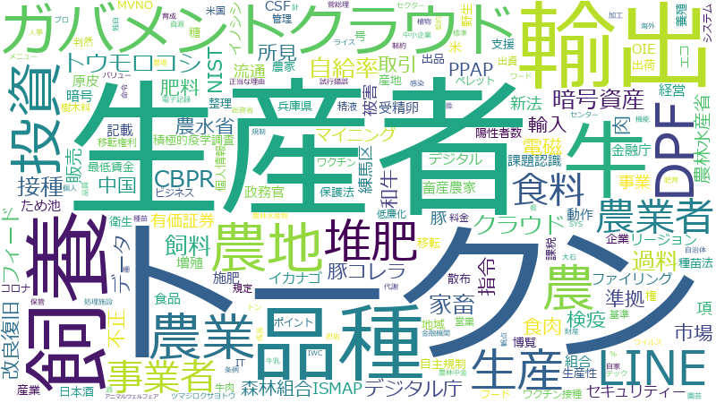

濱村進

事業、事業者、支援、地域、データ、観点、投資、輸出、企業、生産、%、規定、コロナ、中国、管理、被害、国民、農業、市場、基準、取引、生産者、平成、政府、機能、経営、システム、産業、措置、記載、ウイルス、整理、海外、項、自治体、販売、食料、新型、期待、業務、農地、号、接種、不正、効果、環境、輸入、運用、国内、強化、想定、所見、要請、体制、個人、協力、予算、利用、権、流通、農水省、開発、ポイント、政務官、整備、規制、規模、設定、センター、災害、牛、設置、課題、負担、連携、飼養、サービス、デジタル、品種、地元、契約、役割、情報、拡大、施設、現場、育成、農業者、LINE、中小企業、型、特定、独自、社会、自給率、行政、要件、農、農林水産省、クラウド
生産者、トークン、輸出、飼養、牛、品種、ガバメントクラウド、農地、投資、農業、農、DPF、LINE、生産、堆肥、農業者、事業者、食料、トウモロコシ、暗号資産、自給率、過料、飼料、接種、クラウド、CBPR、家畜、デジタル庁、取引、指令、農水省、NIST、肉、所見、和牛、準拠、市場、不正、中国、輸入、データ、食肉、肥料、検疫、豚コレラ、電磁、フィード、改良復旧、森林組合、PPAP、販売、農林水産省、マイニング、流通、ISMAP、新法、豚、被害、項、有価証券、事業、練馬区、セキュリティー、リージョン、政務官、CSF、ため池、イカナゴ、施肥、デジタル、原皮、増殖、課題認識、受精卵、記載、ファイリング、米、イノシシ、経営、金融庁、食品、OIE、動作、暗号、組合、畜産農家、積極的疫学調査、散布、養殖、整理、兵庫県、種苗法、企業、野生、自主規制、日本酒、エコ、産業、出品、課税
生産者
| 言及回数 | 40回 |
| 言及発言者数（参考人を含む） | 204人 |
2019-10-24 account_balance
…けれども、非常に苦しい御判断をなされたこともあるというわけでございますので、そうした苦しいときにいかに現場の生産者の皆様に寄り添えるか、こうしたところも非常に重要であるというふうに思っております。こういう感覚をあらゆる国…
…ぜひともあらゆる可能な支援策を講じていただき、生産者の皆様が再生産可能な状況にぜひとも環境をつくっていただきたい、このようにお願いを申し上げます。台風十九号に関する被害につきましては、我々公明党からも、昨日、農林水産省…
2019-11-06 account_balance
…高齢化もあり、さらには米の消費量も減っているという現実があるわけでございます。そうした状況の中で、いかにして生産者の皆様が利益を確保し収益を確保して再生産が可能な状況をつくっていくのか、こうした環境をつくっていくことが非…
…うふうに思っておりますし、さらには、こうした輸出の取組となりますと、どうしても、家族的経営をされているような生産者の皆様においては、私は関係ないというような気持ちになってしまいがちなんですけれども、そういう方々にも、しっ…
…そのものになりますと財務省が所管となるということでございます。実は、兵庫県は酒米の産地でもございまして、酒米生産者の皆様も、なかなかじくじたる思いを持っておられるというところがございます。日本酒の輸出において、課題はど…
…ればというふうに思いますし、それが、酒造メーカーさんの利益になるということも大変重要なんですけれども、酒米の生産者の皆様にも届くようにというような業界の構造をつくっていくことも大変重要であるということも付言をさせていただ…
…も大変重要であるということも付言をさせていただきたいと思っております。これが正しいかどうかは別として、酒米生産者の方とお話をしたときに、じゃ、なぜ日本酒というのがワインのように付加価値がつけられないのかというような議論…
…ような経営者の方々も含めて、しっかりと経営をしていっていただくということであろうと思っておりますが、そうした生産者の皆様が、輸出まで自分たちでやります、そんな大規模でなくても結構かと思いますけれども、そのような場合は、こ…
…ＧＦＰも含めて、しっかりとした形、バックアップ体制をつくっているということでございますので、生産者の皆様、そしてまたあらゆる食品、農林水産物を輸出しようという意欲のある方が、更にこの取組を進めていただけることを願って、質…
2019-11-12 account_balance
…ております。ただ、我々としてしっかりと考えていかなければいけないことは、合意した内容の、その上で、さらに、生産者の皆さんや事業者の皆様が安心していただける、不安を払拭していける、そうした努力をしていかなければならないと…
2019-11-13 account_balance
…いましたが、私も前政務官として非常にＣＳＦ対策には苦労したなと思っております。これも与野党なく、もう一致して生産者の皆様も含めて対応していかなければいけないことだと思っておりますので、より一層の対応を、また大臣含め農水省…
…ありがたいということを表明されておられるわけですので、それ自体は別に、それはそれで聞きおいて、日本としては、生産者の皆様が不安にならないような対策をしなければいけない、このように私は考えております。だからこそ、粗飼料の確…
…やはり農家、生産者の皆様の不安を解消しながら農政を行っていく、これは非常に重要で、農政に当たる者としては基本中の基本だと思っておりますので、しっかりとした対策を行っていただいていることにまず感謝を申し上げたいというふうに…
…見直しておられるところでございますので、しっかりその中で議論されていることかと思います。ぜひとも、そうした生産者の皆様が、ちゃんと国民の皆様にいい食料を供給できる、そしてまた食べて喜んでいただける、そういう状況をつくる…
2019-11-20 account_balance
…散布に労力がかかる、これは非常に重たかったりするので、生産者の方々は、非常に大変な作業であるので敬遠をされる、そういった背景、あるいは成分含有量、そもそも品質が安定しないというようなところもございます。こうしたところを改…
…地元の兵庫県の一部では、堆肥センターといいますか、土づくりセンターということで、堆肥をため、集約して、地域の生産者が連携してそこに持っていくというようなセンターをつくっていて、それで有機的な堆肥を活用できるような環境を整…
2019-12-05 account_balance
…いというふうにお願いを申し上げます。続いて、乳製品の安定対策についてお伺いをしたいと思います。加工原料乳生産者補給金の単価でございますけれども、これは生産コスト等変動率方式によって算定されております。物材費等の各費目…
…続いて、肉用子牛の生産者補給金制度について伺ってまいりたいと思います。これは、国から交付される生産者補給交付金を財源にいたしておりますが、子牛価格が保証基準価格を下回った場合には補給金が支給されるという仕組みでございま…
…、私もいろいろ勉強させていただいて、この場合はこのケースで適用できるというような話を整理してまいりましたが、生産者の皆さんにわかりやすく御提示いただくことも非常に重要だと思っておりますので、その点もぜひ御考慮いただきたい…
…上げたのかというと、この間、農林水産委員会で委員派遣ということで、群馬県に行かせていただきました。その際に、生産者の方からも御意見をお伺いすることができました。生産者の方あるいは食肉センターの社長の方にもお越しをいただき…
…ということで、群馬県に行かせていただきました。その際に、生産者の方からも御意見をお伺いすることができました。生産者の方あるいは食肉センターの社長の方にもお越しをいただき、群馬県の方であったり行政の方にお越しをいただいて、…
…伺ってきたわけでございます。御意見を伺った方には改めて感謝を申し上げたいと思いますけれども、そうした中で、生産者の皆さんの中で不安の声があったということでございます。この不安の声にしっかりと応えていくのも重要であろうと…
…いるわけでございます。そういう取組をしながら、国を挙げてＣＳＦの蔓延防止に努めているということでございます。生産者の方も流通業者の方も加工業者の方も、皆さん、一致結束して取り組んでいるということでございますので、その中で…
2020-03-05 account_balance
…ありがとうございます。生産者補給金があっても、三万四千円、一トン当たり減収になるということでございますので、きょう午前中、大臣が答弁されていたように、補填についてもしっかり考えていっていただくということでございますので…
…というような話もございます。そうした状況もありますので、価格が下落してきて通常の半値になってしまっていたり、生産者の収入自体も平時の半分ぐらいになってきているということでございます。非常に強く御要望いただいているのは、も…
…策というのがないかもしれませんけれども、検討していく、前向きに何かできないかということをやはり伝えていくのも生産者の皆様は安心されると思っております。最後の質問にしたいと思いますが、技能実習生の受入れについてでございま…
2020-03-18 account_balance
…そういうことができるかというと、難しいかなというようなこともございますけれども、活用できるんだということは、生産者の皆様の生産意欲をちゃんと支えていただけるためには非常に重要なのかなというふうに理解をしております。こう…
2020-03-19 account_balance
…思います。ただ、先ほど来何度も申し上げているのが、ただ一つの指標であると。これをどのように受けとめながら、生産者の皆様と、直接的に生産をしていない、農林水産省さんも含めた、その生産者の皆様をサポートする立場の人たちの政…
…ると。これをどのように受けとめながら、生産者の皆様と、直接的に生産をしていない、農林水産省さんも含めた、その生産者の皆様をサポートする立場の人たちの政策意思決定における大事な指標の一つであるということだろうと思っておりま…
…盤を整えていくということなんだろうと理解をいたしました。これは非常に重要な取組だと思っております。農業が、生産者だけではなくて、さまざまな視点から、要は、例えばＩＴをやっていましたというような方が入ってくることによって…
…とによって、大きく農業の生産現場が開いていくというようなこともございますので、こうした農業の、今までの従来の生産者以外の方々が入ってくることによって大きくイノベーションが起こっていくということも期待されるわけでございます…
2020-03-25 account_balance
…いただいて、ざっと一億みたいなことを出していただきましたが、重要なことは、こうしたことが起きないように地域の生産者の皆さんであったり家畜人工授精師の方々の協力を求めていくことだろうと思っております。しっかりと丁寧に御説明…
2020-05-12 account_balance
…的に供給できるようにということ、そしてまた流通経路としても安定的にということだろうと思っておりますけれども、生産者が減少していくとかあるいは天候不順による影響を緩和するとか、そうしたことを、クッションとして柔軟性を持たせ…
…のような新型コロナウイルスの感染拡大がなされる中であっても、今ある制度をしっかりと使っていく、こうしたことも十分に意識しながら、生産者の皆様とともに頑張ってまいりたいと思っております。以上です。ありがとうございました。…
2020-12-08 account_balance
…価格の下落に伴って、全国で前年度を上回りました。私、地元兵庫県でございますけれども、兵庫では四月分の交付から生産者積立金が不足したんですけれども、国費分の交付金を交付いただいたことによって、肥育農家は非常に感謝しているよ…
…あったりレンダリング事業者、あるいは、いわゆるホルモン、内臓を食用として処理するような畜産副生物事業の方々も生産者の皆様と一緒になって事業をされてこられたわけでございます。こうした事業者の皆様に対してもぜひ支援を行ってい…
…悪化している、こういう状況もございますが、その中で新型コロナの影響も受けておられるというわけでございます。生産者だけではなくて周辺事業者への支援も重要だと思っておりますが、どのように取り組まれるのかお伺いしたいと思いま…
2021-04-07 account_balance
…たり代替たんぱく質の分野、こうしたところへの投資は強化する必要があると思っておりますけれども、一方で、既存の生産者の皆様、食肉産業を支えておられる方々は、私も地元が兵庫ですので非常に多くのつながりを持っておりますけれども…
2021-05-19 account_balance
…、食農ビジネスについてはまだまだ物足りなさを持っております。是非頑張っていただきたいと思っているんですが。生産者から消費者にまでわたるバリューチェーンの中で重要な役割を果たしておられます加工、流通、外食、こうした食品産…
トークン
| 言及回数 | 19回 |
| 言及発言者数（参考人を含む） | 15人 |
2020-04-06 account_balance
…いなと思っておったんですが、私自身もわかりにくくて理解するのに非常に苦労したんですけれども、セキュリティートークンの整理をしたいと思います。二〇一九年の改正やそれに至る仮想通貨交換業等に関する研究会では、決済手段として…
…検討されてきたと思っておりますが、こうしたことを議論する中で整理していかなければいけないのがセキュリティートークンなんだろうと思っております。資金調達の手段として整理しておきますと、セキュリティートークンを活用するのが…
…セキュリティートークンなんだろうと思っております。資金調達の手段として整理しておきますと、セキュリティートークンを活用するのがセキュリティー・トークン・オファリング、ＳＴＯでございます。イニシャル・コイン・オファリング…
…ております。資金調達の手段として整理しておきますと、セキュリティートークンを活用するのがセキュリティー・トークン・オファリング、ＳＴＯでございます。イニシャル・コイン・オファリングがＩＣＯ、イニシャル・エクスチェンジ・…
…ます。イニシャル・コイン・オファリングがＩＣＯ、イニシャル・エクスチェンジ・オファリング、ＩＥＯと同様に、トークンを用いた資金調達手法であるというふうに認識しております。ＩＣＯは、トークン発行者と投資家を直接結びつける…
…オファリング、ＩＥＯと同様に、トークンを用いた資金調達手法であるというふうに認識しております。ＩＣＯは、トークン発行者と投資家を直接結びつける資金調達手法である。ＩＥＯは、トークン発行者と投資家の間に取引所が介在して、…
…うふうに認識しております。ＩＣＯは、トークン発行者と投資家を直接結びつける資金調達手法である。ＩＥＯは、トークン発行者と投資家の間に取引所が介在して、トークンや発行者を審査するという引受証券会社のような役割を果たされる…
…発行者と投資家を直接結びつける資金調達手法である。ＩＥＯは、トークン発行者と投資家の間に取引所が介在して、トークンや発行者を審査するという引受証券会社のような役割を果たされるということでございます。一方で、ＳＴＯは、有価…
…いう引受証券会社のような役割を果たされるということでございます。一方で、ＳＴＯは、有価証券をデジタル化したトークンを用いて、トークンの販売は、世界じゅうの投資家を相手に販売することはできるんだけれども、有価証券との並びで…
…ような役割を果たされるということでございます。一方で、ＳＴＯは、有価証券をデジタル化したトークンを用いて、トークンの販売は、世界じゅうの投資家を相手に販売することはできるんだけれども、有価証券との並びで各国の証券規制の対…
…対象となり、厳格な規制を受けることとなります。よって、日本においては金融商品取引法の適用を受けるというふうに認識しておりますけれども、金商法においてセキュリティートークンがどのように定義され、整理されるのか、伺います。…
…れども、その上でちょっとお伺いしたいと思いますが、この権利については除外規定がございます。この除外規定、トークン化するとブロックチェーン上で容易に移転が可能になるのが二項有価証券ですという話でございましたけれども、そう…
…に該当しない」という記載がございます。これの意味するところは具体的に何なのでしょうか。例えば、有価証券をトークン化する際のブロックチェーンがプライベート型とかコンソーシアム型の場合であって、顧客が直接そのデータを読み取…
…理をされているとおりでございますし、今の答弁で基本的にそごがないなということで認識をいたしました。次に、トークンの移転と権利移転の連動について伺いたいと思います。投資家と運営者の間で匿名組合契約を締結して、出資に応じ…
…が運用した暁に利益を出して、その利益を配分するというファンドがあったといたします。この権利者としての地位をトークン化した場合には、そのトークンを移転したからといって、すなわち、そのファンドの持分権者の地位が連動して移転す…
…その利益を配分するというファンドがあったといたします。この権利者としての地位をトークン化した場合には、そのトークンを移転したからといって、すなわち、そのファンドの持分権者の地位が連動して移転するのかどうかという点について…
…は、契約上の地位を移転する場合は運営者の合意が必要となっておりますけれども、一方で、電子記録移転権利では、トークンを移転させただけでは運営者の合意を得ていないという解釈を行うと、トークンが移転しても権利は移転しないという…
…も、一方で、電子記録移転権利では、トークンを移転させただけでは運営者の合意を得ていないという解釈を行うと、トークンが移転しても権利は移転しないというふうに解されるんじゃないかと考えております。民法をベースに考えますと、…
…がございます。一項有価証券であればこういう流通市場というのがあるわけでございますけれども、セキュリティートークンについてはどのような流通市場で取り扱われるのか。これを今申し上げたような流通市場で取扱い対象となるのか、あ…
輸出
| 言及回数 | 62回 |
| 言及発言者数（参考人を含む） | 516人 |
2019-03-14 account_balance
…きまして、国として、国内外の需要を見据えた戦略的養殖品目について設定をしてまいりたい、そして、生産から販売、輸出に至る総合戦略を策定した上で、本格的に取り組んでまいりたいと考えております。こうした戦略的な取組とあわせま…
2019-05-15 account_balance
…用の情報共有の促進を行うことであったり、デザインや技術的にすぐれた家具、建具を含めた付加価値の高い木材製品の輸出の拡大、あるいは、木のよさや価値を実感できる木材製品の情報発信や、木育などの普及啓発など、各般の施策に取り組…
2019-05-22 account_balance
…今、輸出検査の必要性、しっかりと認識をさせていくべきだという委員の御指摘かと思います。家畜伝染病予防法に基づきます輸出検査は、家畜衛生上安全なものを諸外国に供給し、我が国から輸出するものの信用を保持するということを目的…
…検査の必要性、しっかりと認識をさせていくべきだという委員の御指摘かと思います。家畜伝染病予防法に基づきます輸出検査は、家畜衛生上安全なものを諸外国に供給し、我が国から輸出するものの信用を保持するということを目的としてお…
…指摘かと思います。家畜伝染病予防法に基づきます輸出検査は、家畜衛生上安全なものを諸外国に供給し、我が国から輸出するものの信用を保持するということを目的としておりまして、精液及び受精卵につきましては、同法の第四十五条第一…
…としておりまして、精液及び受精卵につきましては、同法の第四十五条第一項第二号の規定によりまして、いずれの国に輸出する際にも輸出検疫証明書の交付を受けることが必要とされているところでございます。昨年七月の事案を受けまして…
…て、精液及び受精卵につきましては、同法の第四十五条第一項第二号の規定によりまして、いずれの国に輸出する際にも輸出検疫証明書の交付を受けることが必要とされているところでございます。昨年七月の事案を受けまして、農林水産省と…
…の受精卵や精液は、海外への持ち出し、海外からの持込みのいずれも動物検疫の手続が必要であることや、現在、日本と輸出国の間で和牛の受精卵等に関する家畜衛生条件を締結している国はないために、どの国にも輸出することができないとい…
…ることや、現在、日本と輸出国の間で和牛の受精卵等に関する家畜衛生条件を締結している国はないために、どの国にも輸出することができないということ、これらを同会員に周知徹底するよう依頼したところでございます。引き続き、輸出検…
…も輸出することができないということ、これらを同会員に周知徹底するよう依頼したところでございます。引き続き、輸出検疫の必要性を知らないがゆえに同様の不正持ち出し事案が繰り返されることのないよう、人工授精師を中心とした畜産…
2019-05-29 account_balance
…委員御指摘のとおり、この法律自体が輸出に向けた生産量の増加を直接の目的としているわけではございませんが、おっしゃるとおり、ピンチをチャンスに変えていく、輸出についても積極的に取り組んでいかれておられる方もおられます。例…
…た生産量の増加を直接の目的としているわけではございませんが、おっしゃるとおり、ピンチをチャンスに変えていく、輸出についても積極的に取り組んでいかれておられる方もおられます。例えば、青森県のリンゴ果汁事業者が新工場を建設…
…ゴ果汁事業者が新工場を建設し、地元産リンゴを主原料といたしましたジュースを台湾、香港を中心に十七カ国・地域に輸出している事例であったり、あるいは、和歌山県の果汁事業者がジュースの充填ラインの改造を行って、国産一〇〇％のミ…
…がジュースの充填ラインの改造を行って、国産一〇〇％のミカンジュースや桃ジュースを台湾、香港及びシンガポールに輸出している事例がございます。引き続き、外国製品との差別化を図って、輸出に取り組む特定農産加工業者も支援してま…
…、国産一〇〇％のミカンジュースや桃ジュースを台湾、香港及びシンガポールに輸出している事例がございます。引き続き、外国製品との差別化を図って、輸出に取り組む特定農産加工業者も支援してまいりたい、このように考えております。…
2019-11-06 account_balance
…おはようございます。公明党の濱村進でございます。きょうは、農林水産物食品輸出促進法の法案審査ということで、法案について質問をさせていただきます。まず、法案の狙いについては改めて確認をしていきたいと思っておりますが、こ…
…ず、法案の狙いについては改めて確認をしていきたいと思っておりますが、これは、この法案自体、農林水産物や食品を輸出するために、輸出を更に促進するためにつくるということでございますけれども、じゃ、なぜそのような法案が必要であ…
…ついては改めて確認をしていきたいと思っておりますが、これは、この法案自体、農林水産物や食品を輸出するために、輸出を更に促進するためにつくるということでございますけれども、じゃ、なぜそのような法案が必要であるのかということ…
…法案が必要であるのかということが非常に大事だろうと思っております。法案だけにとどまらず、政府はこれまでも、輸出の目標については一兆円という目標を掲げて取組をされてこられたわけでございますし、こうした背景、当然、国内市場…
…いますし、こうした背景、当然、国内市場であったりとか、あるいは国内消費であったりとか、いろいろな要素があって輸出が重要であるという御判断のもと、政府としての取組があろうかと思っております。古く言えば、松岡大臣のころから…
…が重要であるという御判断のもと、政府としての取組があろうかと思っております。古く言えば、松岡大臣のころから輸出については取組をしているというような認識もございますけれども、まず、農林水産物や食品の輸出を拡大するに当たっ…
…松岡大臣のころから輸出については取組をしているというような認識もございますけれども、まず、農林水産物や食品の輸出を拡大するに当たって、この目的は何であるのか、この法案の大前提となる点について、まず大臣にお考えを教えていた…
…向けてどのような取組ができるのかということでＧＦＰの取組を行ってきているということでございますが、これまでも輸出促進は図ってこられたわけでございます。こうした中で、さまざまな課題があったかと思っておりますけれども、どの…
…って規制が違う、施設認定がなかなか進まない、そうした課題があるということでお話をいただきました。民間の方々、輸出に取り組もうとされている方々に非常に大きな負担があったということでございます。私、地元が兵庫県でございます…
…ございますけれども、神戸牛であったりとか但馬牛であったりとか、いろいろないい牛肉があるわけですが、この牛肉を輸出するために施設を開設した。これは竣工から非常に長い時間がかかったわけです。これは、何でそんな時間がかかったん…
…これがまさしく課題であろうかと思っております。こうした課題を解決するために、司令塔機能として、今回は、食品輸出本部として農水省がしっかりと旗を振るということに体制が組まれたということであろうと思っております。非常に重要…
…うと思っておりますけれども、こうした国によって違うところについてもしっかりと国対国で協議をしながらしっかりと輸出を拡大していくということが重要であろうと思っておりますが、今後、輸出相手国の規制に適用するためにはどのような…
…ろについてもしっかりと国対国で協議をしながらしっかりと輸出を拡大していくということが重要であろうと思っておりますが、今後、輸出相手国の規制に適用するためにはどのような対応をされていくのか、お答えをいただければと思います。…
…また、日本国としてそれをしっかりと訴えていくことが重要であるというふうに思っておりますし、さらには、こうした輸出の取組となりますと、どうしても、家族的経営をされているような生産者の皆様においては、私は関係ないというような…
…様においては、私は関係ないというような気持ちになってしまいがちなんですけれども、そういう方々にも、しっかりと輸出そして市場を拡大していくということをスコープに入れていただけるように、そして、そうした方々にも、この規制をど…
…上で、次の質問ですけれども、私、これまで政務官もさせていただきましたけれども、その際にも思っておりましたが、輸出する品目のうちで非常に重要なポイントとなるのが日本酒であろうと思っております。日本酒というのは、非常に価値を…
…ございまして、酒米生産者の皆様も、なかなかじくじたる思いを持っておられるというところがございます。日本酒の輸出において、課題はどういう課題があったのか、そしてまた、この法案で農林水産物・食品輸出本部が設置されるわけでご…
…がございます。日本酒の輸出において、課題はどういう課題があったのか、そしてまた、この法案で農林水産物・食品輸出本部が設置されるわけでございますけれども、こうした日本酒の輸出における課題についてはどう解決される見込みであ…
…て、課題はどういう課題があったのか、そしてまた、この法案で農林水産物・食品輸出本部が設置されるわけでございますけれども、こうした日本酒の輸出における課題についてはどう解決される見込みであるのか、お答えをお願いいたします。…
…日本酒の輸出自体は二・五倍になったということでございましたが、これはどんどん拡大をしていければというふうに思いますし、それが、酒造メーカーさんの利益になるということも大変重要なんですけれども、酒米の生産者の皆様にも届くよ…
…夫が必要なんだろうなというふうに思っております。続いての質問ですが、法律の三十四条に、農林水産物又は食品の輸出のための取組を行う者が、輸出事業計画を作成して、大臣に提出し、認定を受けられれば、日本政策金融公庫による融資…
…うに思っております。続いての質問ですが、法律の三十四条に、農林水産物又は食品の輸出のための取組を行う者が、輸出事業計画を作成して、大臣に提出し、認定を受けられれば、日本政策金融公庫による融資、債務保証等の支援措置対象と…
…の取組というのは非常に重要であるということが大前提にあるわけでございますけれども、そこで確認いたしたいのが、輸出のために品質向上の取組を行うという意味では、ＪＡＳ、有機ＪＡＳとかもございます、あるいはＧＡＰの取得もありま…
…予算措置も含めて支援を行えるということでございますけれども、こうした支援、あるいは輸出促進のためのバックアップについては、ただ単に食品事業者さんとか体力のある経営者だけではなくて、どちらかというと小規模で、そんな輸出まで…
…アップについては、ただ単に食品事業者さんとか体力のある経営者だけではなくて、どちらかというと小規模で、そんな輸出まで考えられないといったような方々もスコープに入れていっていただくことが重要なのかなと私は思っております。…
…々も含めて、しっかりと経営をしていっていただくということであろうと思っておりますが、そうした生産者の皆様が、輸出まで自分たちでやります、そんな大規模でなくても結構かと思いますけれども、そのような場合は、この法案のスコープ…
…バックアップ体制をつくっているということでございますので、生産者の皆様、そしてまたあらゆる食品、農林水産物を輸出しようという意欲のある方が、更にこの取組を進めていただけることを願って、質問を終わります。ありがとうござい…
2019-11-12 account_balance
…るということをやっている。あるいは、国内では人口減少の状況もあって市場が縮小している、この市場縮小に対応して輸出力を強化していかなければいけない。こうした取組も行おうとしているわけでございます。こうした中で、関税削減が…
2020-01-28 account_balance
…、中小企業生産性革命推進事業として過去最大規模の三千六百億円の補助金を確保したほか、農林水産業の成長産業化と輸出力強化の加速とそれを支える生産基盤の強化のために三千四百二十八億円を計上しております。さらに、未来への投資…
2020-02-07 account_balance
…。時間がなくなってまいりましたのでちょっと質問を飛ばしますが、中小企業、小規模事業者の事業として、これまで輸出は、なかなか小規模事業者の方々はみずからやるということは難しかったというようなこともございます。実は、これを…
…った課題もあったというふうに聞いております。これはしっかり支援をしていかなければいけないと思っておりますが、輸出に関連して、和牛の話をさせていただきたいと思います。ちょっと話がかわって済みません。輸出先国としては非常に…
…思っておりますが、輸出に関連して、和牛の話をさせていただきたいと思います。ちょっと話がかわって済みません。輸出先国としては非常に期待できるのが、大きなマーケットとして期待できるのは中国です。これは中小企業の皆様にとって…
…いました。これは十二月十九日のことでございます。この報告があったわけでございますけれども、とはいえ、即座に輸出解禁ということになるわけではなくて、輸出再開までの手続が必要でございます。必要な手続とおおむねの時期について…
…います。この報告があったわけでございますけれども、とはいえ、即座に輸出解禁ということになるわけではなくて、輸出再開までの手続が必要でございます。必要な手続とおおむねの時期についての見込みについて、農林水産省にお伺いをい…
2020-02-25 account_balance
…ので、こうした仕組みについても、どんどん、この仕組みが世界じゅうで、生体識別システムとして標準的なものとして輸出できるようになるということも非常に大きな強みになるのではないか、このように考えております。もう一つ、これに…
2020-02-28 account_balance
…すが、これは、大臣からもさまざまポイントを挙げられて、四つほどポイントがあって、インバウンドであったり、対日輸出の減少、サプライチェーンの途絶、さらには、中国経済が停滞することによって世界経済が停滞して、それが日本にどの…
2020-03-05 account_balance
…しが立っていない、おおむね三割ぐらい減なんじゃないかというような話もございますけれども、大手の方でも非常に、輸出ができなくなってしまって、在庫を抱えて大変な状況になっているというような状況であると伺っております。どのよ…
2020-03-19 account_balance
…ることに対して、どういった理由があるのかとか、さまざまこれは、農業大国、もっと言えば、自給率を優に超して農業輸出大国になっているような国からすれば、指標の持つ意味合いが変わってくるというふうに思うんですね。そうした観点か…
2020-03-25 account_balance
…。本日は、和牛遺伝資源二法について質問をさせていただきます。まず、平成三十年六月に、和牛の精液、受精卵が輸出検査を受けずに海外、中国に持ち出されました。これは、中国の当局によって輸入不可とされて、輸入が水際でとどまっ…
…というような状況がございましたけれども、この事案におきましては、家畜伝染病予防法に基づいて家畜防疫官によって輸出検査を受けていないということでございました。これによりまして、家伝法四十五条の第一項を適用させて、輸出の際に…
…よって輸出検査を受けていないということでございました。これによりまして、家伝法四十五条の第一項を適用させて、輸出の際に家畜防疫官の検査を受けて輸出検疫証明書の交付を受けていない、本来であればこういう輸出検疫証明書の交付を…
…ことでございました。これによりまして、家伝法四十五条の第一項を適用させて、輸出の際に家畜防疫官の検査を受けて輸出検疫証明書の交付を受けていない、本来であればこういう輸出検疫証明書の交付を受けなければいけませんよということ…
…一項を適用させて、輸出の際に家畜防疫官の検査を受けて輸出検疫証明書の交付を受けていない、本来であればこういう輸出検疫証明書の交付を受けなければいけませんよということなんですけれども、これを受けていないということで、これに…
…ば、コレクターのような方もおられるというふうにも聞いておりますけれども、こうした方々が不正に持ち出しあるいは輸出をしようとしても、これ、やめておこうかと。差止め請求されて、実際は使えないとかあるいは刑事罰がかかるというよ…
更に伺いますが、一律禁止ではないというたてつけにしたと、外為法の考え方を適用しております。武器弾薬とか天然資源の輸出と同様に適用して、輸出を一律規制するという方法をとらなかったというのはなぜなのか、伺います。
2020-05-12 account_balance
…食肉処理施設の、流通再編・輸出促進事業ということでございましたけれども、この強農の交付金だけを見れば二百三十億から二百億に減っているじゃないかというように見えてしまいがちですが、決してそうではなくて見合いでございますよと…
…弁がありましたけれども、これは非常に重要な交付金であると私は思っておりますので、食肉処理施設の、流通再編とか輸出促進とか、これも非常に重要です。これはこれで更に予算を上乗せしていくというのは、やはり食肉の輸出を強化して…
…通再編とか輸出促進とか、これも非常に重要です。これはこれで更に予算を上乗せしていくというのは、やはり食肉の輸出を強化していくという中であっては当然の話だと思っておりますけれども、一方で、日本の主食である米であったりとか…
2020-11-12 account_balance
…輸出制限をしっかりしていきながら、大事なことは海外で権利行使ができるかどうかということだと思っております。海外での品種登録も非常に重要でございますので、しっかり支援をしていっていただきたいというふうに思います。もう一点…
2020-12-08 account_balance
…ざいましたとおり、コロナの影響を受けて、一時保管であったりとか滞留防止の措置、とっていただいているんですが、輸出前提としているんですね。実は、原皮、使われるところでいえば野球のボールとかもそうでして、野球のボール、プロ…
2021-04-07 account_balance
…に変更して、対象となる法人が追加されると認識しております。漁業であったり林業、食品の製造、加工、流通、販売、輸出、飲食、あとスマート農業等の支援事業者についても追加されるという認識です。これは二条で規定されているわけでご…
…二条で規定されているわけでございます。非常に私は大事だなと思って評価をしておるんですが。農林水産物・食品の輸出等への投資の促進に関する検討会、ちょっと長いので検討会と略しますが、この検討会では、投資促進を図る対象範囲は…
…具体にはちょっと今検討中だということなんだと理解しました。いずれにしても、食品衛生法とか輸出促進法にある規定ぶりと類似の規定のされ方をしていくんだろうと思っておりますが、しっかり明示して、より多くの事業者さんをしっかり…
飼養
| 言及回数 | 24回 |
| 言及発言者数（参考人を含む） | 94人 |
2019-02-27 account_balance
…監視を継続しているところでございます。発生地域における農場につきましては、豚コレラの発生を予防するために、飼養衛生管理基準の遵守が最も重要であることから、岐阜県等の養豚場に対し、国が主導して飼養衛生管理基準の遵守状況の…
…の発生を予防するために、飼養衛生管理基準の遵守が最も重要であることから、岐阜県等の養豚場に対し、国が主導して飼養衛生管理基準の遵守状況の再確認と改善の指導を進めております。さらに、愛知県の渥美半島入り口の幹線道路や、岐…
2019-04-09 account_balance
…ります。このように、野生イノシシが経口ワクチンを摂取することで、豚コレラウイルスに対する抗体を保有する野生イノシシの頭数が増加し、感染した頭数が減少すれば、飼養豚への感染も減少することが期待されているものでございます。…
2019-10-24 account_balance
…た中にあって政務官がスタートしたわけでございますが、豚コレラ対策、当時言っておりましたのは、何より重要なのは飼養衛生管理基準の遵守徹底、これが何よりも一番重要であるということでございました。その上で重要なことは、なかなか…
…ざいます。この後という段階においては、まだ私が政務官をやっていたときにはなかったわけでございますけれども、飼養豚に対してワクチンを接種するということでございますが、その前に一つ、議員としてやれることとしてみれば、これは…
…生方が議員立法として提出されたということでございますので、今回はそのような状況にはありませんでしたけれども、飼養豚へのワクチンの接種ができるようにということで、防疫指針を改正するという御判断をなされたわけでございます。…
…ありがとうございます。野生イノシシ、七県から十一県、そして飼養豚、農場においても埼玉で三件、長野においては二件あるということで、これまで、実は私、九月十三日まで政務官を務めておりましたが、九月十三日に埼玉県の秩父の農場…
…るという状況もあり、この後、非常に大きく局面が変わったなというふうに私も認識をしております。そうした中で、飼養豚に対するワクチン接種ができるようにということで、さまざま検討をされたわけでございますが、これは恐らく総合的…
…ろなお声を、当時、岐阜県、愛知県で発生しているときもいただいていたわけでございますけれども、そのときはまだ、飼養衛生管理基準の遵守の徹底によって何とか頑張ろう、あるいは早期出荷で頑張ろうというようなところもありました。…
…は思っております。こうした中で、生産額は一つの判断要素としながらも、さまざまな背景を講じた上で、このたび、飼養豚に対するワクチン接種について防疫指針を改正するという御判断をなされたわけでございますけれども、この判断に至…
…がら、この事態に対処していかなければいけないというふうに思っているところでございます。その上で、引き続き、飼養衛生管理基準の遵守といったところが大変重要である、アフリカ豚コレラ対策においてもこれは非常に重要であるという…
…ったところが大変重要である、アフリカ豚コレラ対策においてもこれは非常に重要であるというわけでございますので、飼養衛生管理基準、いかにして高めていくかということが重要であろうと思っております。その中の一つとしては、防護柵…
2019-12-05 account_balance
…ようなことがございました。まず、そこで確認をしたいのが、この食肉処理施設、食肉センターですけれども、地域の飼養豚にＣＳＦが発生しないと対象とならないのか、あるいは発生がなくて予防的に対策を講じた場合には対象とはならない…
2020-03-17 account_balance
…ございます。きょうは、家畜伝染病予防法改正案について質問をさせていただきます。まず、大臣の御英断もあり、飼養豚ワクチンの接種をしてこられましたが、このワクチンの接種状況とその後の接種地域における豚熱の発生状況を把握し…
…に感染豚が出てくるのかどうかというのは大事なところだと思っておりますけれども、まず大事なことは、大原則として飼養衛生管理基準がしっかり守られていくこと、これが重要であるという御発言もございました。更にちょっとお伺いした…
…事なポイントだなと思っております。その上でお伺いしたいのが、ちょっと通告の順番は変わっておりますけれども、飼養衛生管理についてちょっと伺います。十二条の六については、「勧告等」として、「等」の中には命令、公表について…
…いるということでございます。勧告、命令については、従来は「その者に対し、」と記載されておりましたけれども、「飼養衛生管理指導等計画に即して、改善すべき事項を記載した文書の提示その他の農林水産省令で定める方法により、その者…
…ょう。その上で言うと、抑止力もさることながら、重要なことは、好事例をしっかり共有していく。地域全体でしっかり飼養衛生管理基準を引き上げていこうじゃないか、こうした機運を高めていくためにも非常に重要な改正なんじゃないかとい…
…養豚農業振興法があるわけでございますけれども、家伝法は規制法でございます。一方で、規制強化するだけでは十分に飼養衛生管理基準のレベルが引き上がらないということだろうと思っております。農家に寄り添った水準の引上げのために…
2021-03-02 account_balance
…、推奨事項になったのは第三次案からで、現在は第五次案でございます。日本では、アニマルウェルフェアに配慮した飼養管理指針を平成二十一年から策定をしております。一方で、ＯＩＥにおいては、アドホックグループが採卵鶏のコード原…
…されました。一次案では、エンリッチドケージだけではなくバタリーケージも認められていて、広く普及している多様な飼養が認められておりました。ところが、平成三十年の九月、私が政務官になる直前でございましたが、第二次案において…
…も、一次案では、多様な生産システムが認められる包括的な内容となっていたが、二次案では、広く普及しているケージ飼養を除外する内容が提案されており、支持できないことから、一次案に戻す旨を要請した。コロンビア、インド及びジンバ…
…が提案されており、支持できないことから、一次案に戻す旨を要請した。コロンビア、インド及びジンバブエも、現状の飼養状況を踏まえた案となっていないことへの懸念を表明。日本だけじゃないんです、二次案に反対しているのは。反対とい…
…次案に反対しているのは。反対というか、懸念であったりとか一次案に戻せという要請をしたということでございます。飼養の方法を変えますと、鶏卵の価格にも大きな影響が出るのは明らかでございます。次に、アニマルウェルフェアの観点…
…Ｅコードが加盟国・地域において実行可能性があるものでないといけないと考えております。価格に大きな影響を与える飼養環境の変化は、仮に必要であったとしても時間をかけて行うべきであると考えますし、闘争行動や衛生環境の悪化のリス…
牛
| 言及回数 | 24回 |
| 言及発言者数（参考人を含む） | 124人 |
2019-05-22 account_balance
…います。昨年七月の事案を受けまして、農林水産省といたしまして、同年十月、日本家畜人工授精師協会に対しまして、牛の受精卵や精液は、海外への持ち出し、海外からの持込みのいずれも動物検疫の手続が必要であることや、現在、日本と…
…液は、海外への持ち出し、海外からの持込みのいずれも動物検疫の手続が必要であることや、現在、日本と輸出国の間で和牛の受精卵等に関する家畜衛生条件を締結している国はないために、どの国にも輸出することができないということ、これ…
2019-11-06 account_balance
…元が兵庫県でございますけれども、兵庫県でも、とある食肉加工のセンターが開設されたわけでございますけれども、神戸牛であったりとか但馬牛であったりとか、いろいろないい牛肉があるわけですが、この牛肉を輸出するために施設を開設し…
…すけれども、兵庫県でも、とある食肉加工のセンターが開設されたわけでございますけれども、神戸牛であったりとか但馬牛であったりとか、いろいろないい牛肉があるわけですが、この牛肉を輸出するために施設を開設した。これは竣工から非…
…肉加工のセンターが開設されたわけでございますけれども、神戸牛であったりとか但馬牛であったりとか、いろいろないい牛肉があるわけですが、この牛肉を輸出するために施設を開設した。これは竣工から非常に長い時間がかかったわけです。…
…たわけでございますけれども、神戸牛であったりとか但馬牛であったりとか、いろいろないい牛肉があるわけですが、この牛肉を輸出するために施設を開設した。これは竣工から非常に長い時間がかかったわけです。これは、何でそんな時間がか…
…です。これは、何でそんな時間がかかったんですかということなんですね。この時間がかかったことによって、今日本の和牛を欲しておられる海外の方々に向けて機会を損失してしまったというような状況が起きていた、これがまさしく課題であ…
2019-11-12 account_balance
…いうふうに思っているところでございます。業界の方々そして国民の皆様が懸念されておられるかもしれない点として、牛肉が一つ挙げられるのであろうと思っております。この牛肉につきましては、ＴＰＰと同様に九％まで関税削減をして…
…して国民の皆様が懸念されておられるかもしれない点として、牛肉が一つ挙げられるのであろうと思っております。この牛肉につきましては、ＴＰＰと同様に九％まで関税削減をして、セーフガードつきで長期関税削減期間を確保いたしました…
…含めてどのような影響があるのかということをしっかりと認識していくことは大変重要であると思っております。今回の牛肉のセーフガード発動基準でございますけれども、二十四・二万トンということになりました。この発動基準数量自体は…
…が合意した内容であります。一方で、国内市場を見てみればどういう状況であるのかということなんですけれども、まず牛肉、私の地元の兵庫県もそうですけれども、牛肉については、生産基盤を強化しているということをやっている。あるい…
…場を見てみればどういう状況であるのかということなんですけれども、まず牛肉、私の地元の兵庫県もそうですけれども、牛肉については、生産基盤を強化しているということをやっている。あるいは、国内では人口減少の状況もあって市場が縮…
…、確定的なことはわかりません。それは当然、各個社の経営判断によるものだと思っておりますので。例えば、非常にいい牛肉ができやすい時期があれば、なかなか生産がうまくいかない時期もあったりする、牛群サイクルというようなものがあ…
…おりますので。例えば、非常にいい牛肉ができやすい時期があれば、なかなか生産がうまくいかない時期もあったりする、牛群サイクルというようなものがあると聞いておりますけれども、これがいいタイミングであればたくさん輸入しようじゃ…
…れども、これがいいタイミングであればたくさん輸入しようじゃないかというのも経営判断でございましょうし、なかなか牛群サイクルが低調なときは牛肉を入れないということも判断だろうと思っております。そうした中で、これまでの輸入…
…グであればたくさん輸入しようじゃないかというのも経営判断でございましょうし、なかなか牛群サイクルが低調なときは牛肉を入れないということも判断だろうと思っております。そうした中で、これまでの輸入実績よりも低い水準をかち取…
2019-11-20 account_balance
…ウン十万かかりますよというような話も伺いました。そもそも、畜産農家の皆さんからすれば、肥育農家さんであれば、牛を大きく育てることが本業でございます。その本業以外のところに労力を、あるいは設備投資をしなければいけないとい…
2019-12-05 account_balance
…続いて、肉用子牛の生産者補給金制度について伺ってまいりたいと思います。これは、国から交付される生産者補給交付金を財源にいたしておりますが、子牛価格が保証基準価格を下回った場合には補給金が支給されるという仕組みでございま…
…度について伺ってまいりたいと思います。これは、国から交付される生産者補給交付金を財源にいたしておりますが、子牛価格が保証基準価格を下回った場合には補給金が支給されるという仕組みでございます。繁殖農家は高齢化が進んでお…
…準価格を下回った場合には補給金が支給されるという仕組みでございます。繁殖農家は高齢化が進んでおりますし、肉用牛の生産の安定化を図っていくことは極めて重要と考えております。そのためにも、繁殖基盤の維持強化が大変重要になっ…
…も、繁殖基盤の維持強化が大変重要になってくると考えております。こうしたことを踏まえますと、令和二年度の肉用子牛の保証基準価格についても、肉用子牛の再生産が図られるような水準となることを期待しておりますが、農水省の御所見…
…化が大変重要になってくると考えております。こうしたことを踏まえますと、令和二年度の肉用子牛の保証基準価格についても、肉用子牛の再生産が図られるような水準となることを期待しておりますが、農水省の御所見をお伺いいたします。…
…ます。先ほど、国際競争にさらされているというような話をさせていただいたところでございますけれども、今、枝肉、牛肉の枝肉については、価格が非常に高位安定しているという状況にあると思っております。これは、いわゆる黒毛和牛、…
…肉、牛肉の枝肉については、価格が非常に高位安定しているという状況にあると思っております。これは、いわゆる黒毛和牛、例えばＡ４とかというところも非常に高い水準を保っておりますし、Ｆ1にしてもホルスタインにしても、非常に安定…
…に一言申し添えたいというふうに思っております。続いて、豚の話をしたいと思いますけれども、豚についても、これは牛と同様に、マルキンが設定されております。このマルキンについて、マルキン自体は非常にすぐれた仕組みであるという…
2020-03-05 account_balance
…ございましたとおりですし、そしてまた、昨日の提言にも盛り込ませていただいたとおりでございますけれども、やはり、牛乳についてどうするんだ、学校を休校することによって、牛乳の需要の一割は給食でありますので、しっかりとその使い…
…り込ませていただいたとおりでございますけれども、やはり、牛乳についてどうするんだ、学校を休校することによって、牛乳の需要の一割は給食でありますので、しっかりとその使い道について考えるべきだというようなことでございました。…
…実は、ＪＡ全中さんにヒアリングを受けるときに、我が党は対策本部というのを設けておりますが、その対策本部で、農協牛乳を飲みながら、我々、ヒアリングをいたしました。しっかり牛乳を使っていくんだということでございますけれども…
…部というのを設けておりますが、その対策本部で、農協牛乳を飲みながら、我々、ヒアリングをいたしました。しっかり牛乳を使っていくんだということでございますけれども、大事なことは、行き場をなくしているもの、さまざま、もう既に…
…なことは、行き場をなくしているもの、さまざま、もう既にきょうの質疑でも答弁があったとおりでもありますけれども、牛乳を加工原料乳に仕向けるというような話もございました。それではなかなか売上げ自体は減少してしまいますねという…
…ということで、補填の話も、大臣から、きょうの午前中にもあったとおりでございます。改めて伺いたいと思いますけれども、今回の学校の休校による牛乳の消費が減少してしまうことにどのように対処をしていかれるのか、答弁を求めます。…
…填についてもしっかり考えていっていただくということでございますので、期待をしたいと思っております。続いて、和牛について伺いますが、和牛は、皆さん御存じのとおり、兵庫県には但馬牛あるいは神戸牛、そうしたブランド牛があるわ…
…ていっていただくということでございますので、期待をしたいと思っております。続いて、和牛について伺いますが、和牛は、皆さん御存じのとおり、兵庫県には但馬牛あるいは神戸牛、そうしたブランド牛があるわけでございますけれども、…
…、期待をしたいと思っております。続いて、和牛について伺いますが、和牛は、皆さん御存じのとおり、兵庫県には但馬牛あるいは神戸牛、そうしたブランド牛があるわけでございますけれども、外国人の方々が来るということ、インバウンド…
…と思っております。続いて、和牛について伺いますが、和牛は、皆さん御存じのとおり、兵庫県には但馬牛あるいは神戸牛、そうしたブランド牛があるわけでございますけれども、外国人の方々が来るということ、インバウンドが減っていると…
…続いて、和牛について伺いますが、和牛は、皆さん御存じのとおり、兵庫県には但馬牛あるいは神戸牛、そうしたブランド牛があるわけでございますけれども、外国人の方々が来るということ、インバウンドが減っているということによって、非…
…く終息してほしいということでございました。こうした需要が落ちているというところはございますし、これは先ほどの牛乳であったり和牛と変わらない部分もあるんですけれども、ちょっと違う点は、支援できるメニューがなかなかないとい…
…ということでございました。こうした需要が落ちているというところはございますし、これは先ほどの牛乳であったり和牛と変わらない部分もあるんですけれども、ちょっと違う点は、支援できるメニューがなかなかないというふうに認識して…
2020-03-17 account_balance
…が政務官をさせていただいたときも、ワクチン接種についてはさまざま検討をしてまいりました。しかしながら、一方で、牛豚等疾病小委員会でも御議論があったように、ワクチン接種についてはデメリットもあるというわけでございます。そ…
2020-03-25 account_balance
…公明党の濱村進でございます。本日は、和牛遺伝資源二法について質問をさせていただきます。まず、平成三十年六月に、和牛の精液、受精卵が輸出検査を受けずに海外、中国に持ち出されました。これは、中国の当局によって輸入不可とさ…
…の濱村進でございます。本日は、和牛遺伝資源二法について質問をさせていただきます。まず、平成三十年六月に、和牛の精液、受精卵が輸出検査を受けずに海外、中国に持ち出されました。これは、中国の当局によって輸入不可とされて、…
…今、新型コロナウイルスの影響もあって、和牛の、高級であればあるほど、高級肉に関しては少し需要がないという状況もあって、なかなか本来想定していた売上げを得ていない、こういうことがございますけれども、仮にこの受精卵、精液が中…
…がございますけれども、仮にこの受精卵、精液が中国に持ち出されていた場合は、中国でこれが再生産されて、現地で肉用牛として肥育されるというようなことが想定されていたということで、極めて重大な被害が起き得る状況であったというこ…
…育成者権が設定されます。あるいは、新品種の保護のためには国際的な条約、ＵＰＯＶの条約がございます。一方で、和牛遺伝資源に関しては、育成者権を設定するという方法はとりませんでした。なぜそういう方法をとらなかったのか、伺い…
…日本は、和牛以外について外国品種を輸入しながら生産活動を行っております。そうした観点からも、ガット協定との整合性はしっかりと担保した上で、不正競争防止法のあり方を参考にして今回は法整備をしたということでございました。も…
…が設定されるわけでございますけれども、不正に取得したり、契約に違反したり、あるいは、それらを使って生産された子牛や受精卵、更にそれらを使った子牛あるいは孫牛について、精液や受精卵につきまして転売を受けた者にも適用されると…
…ども、不正に取得したり、契約に違反したり、あるいは、それらを使って生産された子牛や受精卵、更にそれらを使った子牛あるいは孫牛について、精液や受精卵につきまして転売を受けた者にも適用されるという理解でございますが、確認的に…
…取得したり、契約に違反したり、あるいは、それらを使って生産された子牛や受精卵、更にそれらを使った子牛あるいは孫牛について、精液や受精卵につきまして転売を受けた者にも適用されるという理解でございますが、確認的に伺いたいと思…
2020-12-08 account_balance
…公明党の濱村進でございます。まず、牛枝肉卸売価格について伺いますが、新型コロナウイルスによる影響はどの程度出ているのか。大きな影響が出たというふうに認識しておりますけれども、現状、回復してきているとも聞いております。農…
…二％まで戻ってきているということでございますが、その上で、新型コロナ対策で措置されてきました肥育生産奨励金や和牛肉の保管在庫支援、あるいは経営継続補助金等については今後どのように取り扱うのか、伺いたいと思います。…
…していただきながら、状況に合わせて適切に予算を確保した上で支援をお願いしたいというふうに思っております。次、牛マルキンの負担金について伺いたいと思いますけれども、令和二年度の牛マルキン負担金につきましては、枝肉価格の下…
…願いしたいというふうに思っております。次、牛マルキンの負担金について伺いたいと思いますけれども、令和二年度の牛マルキン負担金につきましては、枝肉価格の下落に伴って、全国で前年度を上回りました。私、地元兵庫県でございます…
…の交付金を交付いただいたことによって、肥育農家は非常に感謝しているような状況でございます。一方で、十月以降の牛については価格が戻ってきているという中で、負担金の納付再開についてはどのように考えておられるのか、伺いたいと…
品種
| 言及回数 | 23回 |
| 言及発言者数（参考人を含む） | 114人 |
2020-03-25 account_balance
…をしておきたいと思っておりますけれども、植物であれば、種苗法にのっとって育成者権が設定されます。あるいは、新品種の保護のためには国際的な条約、ＵＰＯＶの条約がございます。一方で、和牛遺伝資源に関しては、育成者権を設定す…
…日本は、和牛以外について外国品種を輸入しながら生産活動を行っております。そうした観点からも、ガット協定との整合性はしっかりと担保した上で、不正競争防止法のあり方を参考にして今回は法整備をしたということでございました。も…
2020-11-12 account_balance
…きましては、栽培を行う農業者の皆様にとってどのような影響があるのかが私は重要だと思っております。これは、一般品種の場合と登録品種の場合、そして、大半の農業者は種苗というものを購入して、その上で栽培されておるところでござい…
…を行う農業者の皆様にとってどのような影響があるのかが私は重要だと思っております。これは、一般品種の場合と登録品種の場合、そして、大半の農業者は種苗というものを購入して、その上で栽培されておるところでございますけれども、種…
…ありがとうございます。一般品種については全く影響ないということ、そしてまた登録品種についても自家増殖するに当たっては許諾が必要ということでございますけれども、そうした事実に基づいてしっかりと今後も農業者の皆さんが生産活…
…ございます。海外との関係でいいますと、少しＵＰＯＶ条約についても触れておきたいと思うんですけれども、植物新品種保護国際条約ということでございますが、これは、新しく育成された植物品種を各国が共通の基本原則に従って保護する…
…ておきたいと思うんですけれども、植物新品種保護国際条約ということでございますが、これは、新しく育成された植物品種を各国が共通の基本原則に従って保護することにより、すぐれた品種の開発、流通を促進し、もって農業の発展に寄与す…
…とでございますが、これは、新しく育成された植物品種を各国が共通の基本原則に従って保護することにより、すぐれた品種の開発、流通を促進し、もって農業の発展に寄与することを目的としているというふうに認識しております。新品種の保…
…れた品種の開発、流通を促進し、もって農業の発展に寄与することを目的としているというふうに認識しております。新品種の保護の条件とか権利の効力、最低限の保護期間、内国民待遇等の基本的原則を定めておられます。育成者権者が登録…
…の保護の条件とか権利の効力、最低限の保護期間、内国民待遇等の基本的原則を定めておられます。育成者権者が登録品種の種苗を譲渡し、その種苗を海外に持ち出しますと、加盟国に対しては育成者権が及びませんし、非加盟国には育成者権…
…及びませんし、非加盟国には育成者権が及ぶということになるんですが、そういうことになりますと加盟国に対して登録品種の流出をとめることはできないと考えますが、正しいのかどうか。そしてまた、種苗法改正によって登録品種の流出にど…
…とになるんですが、そういうことになりますと加盟国に対して登録品種の流出をとめることはできないと考えますが、正しいのかどうか。そしてまた、種苗法改正によって登録品種の流出にどのような効果が期待できるのか。局長に確認します。…
…限をしっかりしていきながら、大事なことは海外で権利行使ができるかどうかということだと思っております。海外での品種登録も非常に重要でございますので、しっかり支援をしていっていただきたいというふうに思います。もう一点。誤解…
…というような言葉も多かったわけですけれども、これは大きな誤解だというふうに私は考えております。正しくは、登録品種の自家増殖は許諾に基づいて可能だということでございます。許諾を得ることが農業者にとって費用、手続で過剰な負…
…の増殖と自家増殖、この二つについては収穫物をとるかどうかで区別されるというふうに思っておりますけれども、登録品種の場合は許諾についてどのように整理をされているのか、現状と法改正後でどのように変わるのか、この点を伺いたいと…
…っかり整理して、農業者の皆さんに伝わることを願っております。続いて、特性表について伺いたいと思いますが、新品種として登録するという行為自体は、開発の経緯の調査と、既存の品種と違うという区別性、均一性あるいは世代間均一性…
…続いて、特性表について伺いたいと思いますが、新品種として登録するという行為自体は、開発の経緯の調査と、既存の品種と違うという区別性、均一性あるいは世代間均一性が担保されなければならないというふうに認識しておりまして、こう…
…担保されなければならないというふうに認識しておりまして、こうしたところをクリアして、登録要件を満たして初めて品種登録されて、育成者権が発生するということとなるわけでございます。この育成者権を活用できる環境整備も非常に重…
…こととなるわけでございます。この育成者権を活用できる環境整備も非常に重要でございます。法第三十五条の二で、品種登録簿に記載された特性、いわゆる特性表でございますけれども、と被疑侵害品種の特性を比較することで両者の特性が…
…でございます。法第三十五条の二で、品種登録簿に記載された特性、いわゆる特性表でございますけれども、と被疑侵害品種の特性を比較することで両者の特性が同一であることを推定する制度が創設されまして、これによって、苦労して新しい…
…の特性を比較することで両者の特性が同一であることを推定する制度が創設されまして、これによって、苦労して新しい品種を登録することができた育成者権者が他者からの侵害を立証しやすくなるといったメリットが生じるわけでございます。…
…最後の質問にしたいと思いますが、法第二十一条の二、一項二号で、育成者権の効力が及ばない範囲の特例として、出願品種の産地を形成しようとする場合が規定されております。これはどういった取組を支援するための規定なのか、伺いたいと…
ガバメントクラウド
| 言及回数 | 14回 |
| 言及発言者数（参考人を含む） | 18人 |
2021-03-17 account_balance
…公明党の濱村進でございます。早速質疑に入りたいと思いますが、まず、ガバメントクラウドに関連して質問いたします。地方自治体にはガバメントクラウドとして提供するということでございますが、まず十七の基幹業務について共通化し…
…。早速質疑に入りたいと思いますが、まず、ガバメントクラウドに関連して質問いたします。地方自治体にはガバメントクラウドとして提供するということでございますが、まず十七の基幹業務について共通化していくということで、段階的…
…ットワークとかストレージとか物理サーバーとか仮想化しているところとか、こうした辺りについては基本的にはガバメントクラウドで提供いたします、その上のレイヤーについては各自治体で調達しても結構ですよというようなことになるのか…
…の基準を変更するとか上乗せ給付するとか、その程度であれば、パラメーターの変更でできますねということで、ガバメントクラウドを提供しているベンダーさんの開発の範疇に入るのかなというようなイメージを持ちました。一方で、パラメー…
…給されるべきであって、どのように検討されるべきと考えるのか。これは、現行ではなくて、新たに十七業務がガバメントクラウドで提供された後の話でございますが、簡単に言えば、これから、独自施策、ガバメントクラウドに乗っかったら…
…新たに十七業務がガバメントクラウドで提供された後の話でございますが、簡単に言えば、これから、独自施策、ガバメントクラウドに乗っかったらつくれないのとかというようなことがあってはいけない。それをちゃんと、ガバメントクラウド…
…、ガバメントクラウドに乗っかったらつくれないのとかというようなことがあってはいけない。それをちゃんと、ガバメントクラウドを推進してもできるんですよ、そしてまた、その財源措置についてはどう考えたらいいのというところが多分自…
…ますが、政務官として、責任を持った立場で軽々には発言できないと思うのは、重々理解はいたします。ただ、ガバメントクラウドを推進して、標準準拠システムの中でやれみたいなことを言われていると感じているというのが今の現状です、…
…をちゃんとつくっていただきたいというふうにお願いを申し上げます。次に、ＩＳＭＡＰについて伺います。ガバメントクラウドは別に否定するものでもないですし、クラウド・バイ・デフォルトで、二〇一八年でしたかね、ずっと政府調達…
…してきます。重ねて、最後に伺いますが、ＩＳＭＡＰの評価、登録を受けていないような場合であっても、自治体がＣＳＰと契約してガバメントクラウドに接続するようなシステム開発はできるかできないか、お答えいただければと思います。…
2021-03-24 account_balance
…公明党の濱村進でございます。まず、武田大臣にお伺いいたします。ガバメントクラウド上で提供される標準化対象の十七の基幹業務、いわゆる標準準拠システムでございますけれども、三月十七日の内閣委員会におきましては、平井大臣か…
…うようなことは全く考えていませんとの答弁がありました。本日、武田大臣に確認したいことは、地方自治体がガバメントクラウドを使った標準準拠システムに機能追加する場合の費用負担についてでございます。実は、これまでの総務省答…
…拠システムへの移行の経費については国が全額負担する、令和二年度三次補正予算で大体一千五百九億円、これがガバメントクラウド移行の調査、準備、あるいは実際の移行経費、これはＪ―ＬＩＳに基金として国費十分の十で積算されている。…
…も含めて、自治体がちゃんと判断すればいいというふうに思っております。こうした認識を私は持っておりますが、武田大臣に伺いますが、ガバメントクラウドの利用後も地方自治体は独自施策を実施できると考えていいのかどうか伺います。…
農地
| 言及回数 | 32回 |
| 言及発言者数（参考人を含む） | 279人 |
2019-04-11 account_balance
…今回の見直しにおきましては、人・農地プランを地域の徹底した話合いに基づくものにすることによって、今後中心となります経営体と将来の農地利用のあり方を地域主導で決めていただくことを重視しているところでございます。全国十三万…
…しては、人・農地プランを地域の徹底した話合いに基づくものにすることによって、今後中心となります経営体と将来の農地利用のあり方を地域主導で決めていただくことを重視しているところでございます。全国十三万八千の農業集落のうち…
…三万八千の農業集落のうち、市町村に対するアンケート等から見まして、このような地域の真剣な話合いに基づいた人・農地プランが既に作成されていると思われる地区はおよそ三割ほどあると考えております。一方で、ほかの地域につきまし…
…合いをコーディネートする体制を構築することなどによりまして、全集落の少なくとも五割以上の地区におきまして人・農地プランの実質化を図って、全体として約八割の地区につきまして人・農地プランの実質化を進めていきたいというふうに…
…ートする体制を構築することなどによりまして、全集落の少なくとも五割以上の地区におきまして人・農地プランの実質化を図って、全体として約八割の地区につきまして人・農地プランの実質化を進めていきたいというふうに考えております。…
2019-04-12 account_balance
…させていただきましたが、その四名につきまして小笠原村に現在の状況を確認いたしましたところ、三名の方については所在が不明、そして、一名の方が一・六ヘクタールの農地でマンゴー及びコーヒーを栽培しているとのことでございました。…
…小笠原村におきまして、特別賃借権の存在によって土地の売買等に支障が生じることや、農地法の施行停止によって容易な農地転用につながっている、そうした旨の主張をされておられる村議の方がおられることは認識をしております。農水省…
…笠原村におきまして、特別賃借権の存在によって土地の売買等に支障が生じることや、農地法の施行停止によって容易な農地転用につながっている、そうした旨の主張をされておられる村議の方がおられることは認識をしております。農水省と…
…水省といたしましては、国土交通省、小笠原村や東京都とともに連携をいたしまして、このような御意見を踏まえつつ、農地法の施行停止を含む小笠原諸島の復帰に伴う法令適用の暫定措置の実態についてしっかりと把握を進めてまいりたい、こ…
2019-04-17 account_balance
…再生可能な荒廃農地の所有者は、自分では積極的に耕作する意思はありませんけれども、かわって耕作してくれる人も見つからず、困っておられる方が大変多いと思われます。このため、今後は、人・農地プランの実質化に向けて、地域の話合…
…ども、かわって耕作してくれる人も見つからず、困っておられる方が大変多いと思われます。このため、今後は、人・農地プランの実質化に向けて、地域の話合いの中で、このような荒廃農地の所有者の悩みを地域全体で課題としてしっかりと…
…大変多いと思われます。このため、今後は、人・農地プランの実質化に向けて、地域の話合いの中で、このような荒廃農地の所有者の悩みを地域全体で課題としてしっかりと位置づけた上で、その解決方向を探っていくということとしたいと考…
…と考えております。その際、地域の合意形成を実現する観点から、中山間地域における機構集積協力金の要件緩和や、農地バンクと組み合わせて農地耕作条件改善事業に取り組む場合の農業者負担の軽減等を今回措置しておりまして、これらの…
…際、地域の合意形成を実現する観点から、中山間地域における機構集積協力金の要件緩和や、農地バンクと組み合わせて農地耕作条件改善事業に取り組む場合の農業者負担の軽減等を今回措置しておりまして、これらの活用も促してまいりたいと…
…取り組む場合の農業者負担の軽減等を今回措置しておりまして、これらの活用も促してまいりたいと考えております。農地バンクにおきましても、これらの取組を農地所有者等に積極的に働きかけていくことによって、荒廃農地も含めた地域の…
…置しておりまして、これらの活用も促してまいりたいと考えております。農地バンクにおきましても、これらの取組を農地所有者等に積極的に働きかけていくことによって、荒廃農地も含めた地域の農地が担い手に結びついていくように取組を…
…してまいりたいと考えております。農地バンクにおきましても、これらの取組を農地所有者等に積極的に働きかけていくことによって、荒廃農地も含めた地域の農地が担い手に結びついていくように取組を進めてまいりたいと考えております。…
…お答えいたします。農地バンクは、農業人口の減少、高齢化が進む中で、全国の大宗の農地が、これからの地域の農業を担う方に使い勝手のよい形で有効に活用される状態にするために設置されたものでございます。このため、農地バンクでは…
…地域の農業を担う方に使い勝手のよい形で有効に活用される状態にするために設置されたものでございます。このため、農地バンクでは、農地の中間的受皿として農地中間管理権を取得し、一旦転貸した後も、理想的な農地利用の実現に向けて、…
…方に使い勝手のよい形で有効に活用される状態にするために設置されたものでございます。このため、農地バンクでは、農地の中間的受皿として農地中間管理権を取得し、一旦転貸した後も、理想的な農地利用の実現に向けて、転貸先を段階的に…
…有効に活用される状態にするために設置されたものでございます。このため、農地バンクでは、農地の中間的受皿として農地中間管理権を取得し、一旦転貸した後も、理想的な農地利用の実現に向けて、転貸先を段階的に変更していく仕組みをと…
…ざいます。このため、農地バンクでは、農地の中間的受皿として農地中間管理権を取得し、一旦転貸した後も、理想的な農地利用の実現に向けて、転貸先を段階的に変更していく仕組みをとっております。この際、農業人口の減少、高齢化が進…
2019-10-24 account_balance
…樹園地全体に対しての一部分だけが被害を受けるということが多うございました。ですので、逆に言いますと、残された農地で収穫が見込めるということでございますので、そこで幾ばくかの収益を上げられるという状況でございました。しか…
…で、そこで幾ばくかの収益を上げられるという状況でございました。しかしながら、今回は、流域全体が、持っている農地面積全体が被害を受けるということで、収益源が全くないというような状況も発生しているというふうに伺っております…
2019-11-21 account_balance
…ますねというような話ですから、これはこれで成園化のために非常に効果的だと思っておりますが、そのためには、実は農地をお借りしなければいけないというような課題もございます。この農地を、じゃ、どうやって確保するんですかという…
…果的だと思っておりますが、そのためには、実は農地をお借りしなければいけないというような課題もございます。この農地を、じゃ、どうやって確保するんですかということなんですけれども、この点、どのようにクリアするんでしょうか。…
未利用農地をしっかり間に入ってマッチングをしていくということでございます。しっかりとしたマッチング、そしてきめ細やかにやっていただくことをお願い申し上げて、質問を終わります。ありがとうございました。
2020-03-19 account_balance
…お願いを申し上げます。そしてまた、農業が直面する課題の一つでございますけれども、リタイアする農業者の方から農地やあるいは経営資源をいかに次に引き継いでいくかということでございます。今回の原案においては移譲希望者という…
…思っておりますが、極めて重要な考え方だろうと思っております。この移譲希望者ということなんですけれども、実は農地についてもなかなか、機構ができても、農地バンクができても、農地集約が進まないということを、私も地元の皆さんか…
…うと思っております。この移譲希望者ということなんですけれども、実は農地についてもなかなか、機構ができても、農地バンクができても、農地集約が進まないということを、私も地元の皆さんから、何で進まないんですかねとかということ…
…この移譲希望者ということなんですけれども、実は農地についてもなかなか、機構ができても、農地バンクができても、農地集約が進まないということを、私も地元の皆さんから、何で進まないんですかねとかということを聞くと、やはり、ＪＡ…
投資
| 言及回数 | 65回 |
| 言及発言者数（参考人を含む） | 809人 |
2019-03-14 account_balance
…臨時会におきまして漁業法を改正させていただきましたが、意欲的に養殖業を営む者が安心して漁業経営や将来に向けた投資をできるように取り組んでいるところでございます。また、先ほど御指摘もございました、魚粉飼料が高いというよう…
2019-05-16 account_balance
…でございますけれども、組合員等が会員に預けた貯金等により調達した資金を農林水産業者等へ貸し出すほか、有価証券投資を行うなど資金を効率的に運用することにより、会員へ安定的に収益を還元する役割を担っております。その意味で、…
2019-12-05 account_balance
…いうことで、非常にいい仕組みだなというふうに思っております。今般の単価もそのような考え方のもとで設定されると思っておりますが、再生産と将来に向けた投資が可能となるということで認識しておりますが、農水省の認識を伺います。…
2020-01-28 account_balance
…といった制度変更への対応など、経営者はさまざまな課題に直面しております。こうした中におきましても、企業の設備投資や積極的な賃上げを促進し、経済好循環のさらなる拡大を実現しなければなりません。本案では、中小企業による設備…
…や積極的な賃上げを促進し、経済好循環のさらなる拡大を実現しなければなりません。本案では、中小企業による設備投資やＩＴ導入、販路開拓等を一体的かつ機動的に支援するため、中小企業生産性革命推進事業として過去最大規模の三千六…
…輸出力強化の加速とそれを支える生産基盤の強化のために三千四百二十八億円を計上しております。さらに、未来への投資と五輪後も見据えた経済活力の維持向上として一兆七百七十一億円を計上し、５Ｇやポスト５Ｇといった先端技術の活用…
2020-02-07 account_balance
…すので、これから伸び代はあるだろうと思っております。一方で、第二次産業は、先ほどもございましたが、しっかり投資をしてとかということで、それなりに生産性があるということでございますし、トヨタという企業さんはその生産性にお…
…いというような指摘もあります。企業において現預金が積み上がってきている、これをどのように使うのか。いろいろな投資に使っていくということも私はどんどんやっていくべきだと思いますし、社員にもしっかり投資をしていくということは…
…に使うのか。いろいろな投資に使っていくということも私はどんどんやっていくべきだと思いますし、社員にもしっかり投資をしていくということは必要であろうと思っております。先ほどの社長の言をかりれば、賃金を引き上げられない企業…
2020-02-21 account_balance
…の皆さんには期待をしている者の一人であります。そしてまた、きょう大石さんには、防災、減災、あるいはインフラ投資についてお聞かせいただきました。ありがとうございます。新里さん、内閣委員会の際にもお世話になりましたけれど…
…の考え方も少しお述べいただきたいなというふうに思っております。そもそも、建設国債を発行してしっかりインフラ投資を行っていくこと、私も非常に重要であると思っておりますけれども、これはストック効果というようなことも考えれば…
…れども、こうした考え方からも、今、財政をしっかり出していきながら、もっと言うと、デフレの中ではなかなか民間が投資するというわけにはなりませんから、公共事業でしっかりと投資を行っていくということ、そしてまた、それによって乗…
…ながら、もっと言うと、デフレの中ではなかなか民間が投資するというわけにはなりませんから、公共事業でしっかりと投資を行っていくということ、そしてまた、それによって乗数効果が上がっていくということが期待されるわけでございます…
…セクターで増加していますねということでございます。これは、世界の市場の中で見てみれば、どのような用途で何に投資しているのか。インフラ投資についてもされていると思うんですけれども、どんな状況であるのか御存じであれば、教え…
…ということでございます。これは、世界の市場の中で見てみれば、どのような用途で何に投資しているのか。インフラ投資についてもされていると思うんですけれども、どんな状況であるのか御存じであれば、教えていただければと思います。…
…れども、これは非常に重要なことだとは思うんですけれども、日本でも今、当然、金利が非常に低い状況ですから、住宅投資はふえていくのではないかといいながらも、一方で家が余っている状況。これは、中国の数字も引き合いに出されながら…
…ございましたが、財政への信認を維持していくことということは非常に重要だと私も思っております。その一方で、公共投資をしっかりと行っていくことも重要だと思っておるんですが、社会保障の伸びを抑制しながら公共投資を行っていかなけ…
…その一方で、公共投資をしっかりと行っていくことも重要だと思っておるんですが、社会保障の伸びを抑制しながら公共投資を行っていかなければいけないと思っているんですけれども、そうなりますと、どの程度の公債等残高を維持していきな…
…を作成するといった具体的なお話もいただいております。私、非常に重要だと思っておりますけれども、一方で、市中の投資には、その実行力に限りがあると思います。人が必要であったりとかさまざま、設備であったりとか、投入量については…
2020-03-18 account_balance
…思っております。そうした背景を踏まえますと、今回の新型コロナウイルス感染症においても、これを理由になかなか投資が進まなかったとか、あるいはなかなか設備更新がうまくいかなかったとか、資金繰りがうまくいかなくなったので投資…
…投資が進まなかったとか、あるいはなかなか設備更新がうまくいかなかったとか、資金繰りがうまくいかなくなったので投資ができないとか、そういうようなこともあろうかと思っております。こういう理由をしっかりと明示していただく上で…
2020-12-02 account_balance
…学技術立国であるとか、今後、成長戦略の柱であり、土台、基盤となるそうした研究開発については、もっともっと政府が支出、投資を主導していっていただきたいというふうに思っておりますけれども、井上大臣の御所見をお伺いいたします。…
…ぜひ基礎研究の部分に対して徹底的に予算を投資していっていただきたいというふうに思っております。民間のところは社会実装しやすい分野について研究しやすいというのはどうしても出てくるかと思っておりますので、そのあたり、やはり…
…いて研究しやすいというのはどうしても出てくるかと思っておりますので、そのあたり、やはり、政府がどういう研究に投資をするべきかということと民間ではそれぞれ役割が違うというふうには思っておりますので、我々もしっかり応援をして…
2021-02-25 account_balance
…つは、寄附型、これは資金提供社に対して金融的リターンがないというようなもので、あとは金銭リターンが伴ってくる投資型、さらには、そうした何かしらのプロジェクトがあって、そこから提供される何かしらの権利、物品、商品、そういう…
…ういうものを購入するということで支援を行う購入型、大きく三つあるというふうに一般的には大別されております。投資型については更に細かく分類されたりするわけですけれども、株式による投資の場合は、日証協が、株式投資型クラウド…
…ふうに一般的には大別されております。投資型については更に細かく分類されたりするわけですけれども、株式による投資の場合は、日証協が、株式投資型クラウドファンディング業務に関する規則ということで自主規制を設けておられます。…
…ります。投資型については更に細かく分類されたりするわけですけれども、株式による投資の場合は、日証協が、株式投資型クラウドファンディング業務に関する規則ということで自主規制を設けておられます。ファンドによる投資の場合は、…
…協が、株式投資型クラウドファンディング業務に関する規則ということで自主規制を設けておられます。ファンドによる投資の場合は、第二種金融商品取引業協会が、電子申込型電子募集取扱業等に関する規則で自主規制という形で、一応自主規…
…協会が、電子申込型電子募集取扱業等に関する規則で自主規制という形で、一応自主規制はしているんです。一方で、投資型の中でも、融資とか貸付けによって投資をする場合は自主規制はありません。さらに、寄附型、購入型についても自主…
…する規則で自主規制という形で、一応自主規制はしているんです。一方で、投資型の中でも、融資とか貸付けによって投資をする場合は自主規制はありません。さらに、寄附型、購入型についても自主規制がありません。これは、投資型につ…
…よって投資をする場合は自主規制はありません。さらに、寄附型、購入型についても自主規制がありません。これは、投資型については金融庁、寄附型、購入型については経産省、それぞれ、規制はないけれども、今どうお考えか、今の現状の…
…これはしっかりやっていただきたいと思っているんです。まず、投資型、金融庁の方も、クラウドファンディングに特化しているわけではないんですが、これはこけちゃうと一気にこうした資金調達の手段がついえてしまうんじゃないかという…
2021-02-26 account_balance
…。こういうところから見ても、私は全然、利益率、妥当なんじゃないんですかというふうに思うんですね。武田大臣に伺います。これは投資する必要があるので利益率は妥当なんじゃないんですかと私は思いますが、大臣の御意見を伺います。…
…し、答弁を求めるつもりもありませんが、いずれにしても、健全な競争環境をちゃんとつくりながら、その上でちゃんと投資をしていくということが大事です。この後、ちょっとそうした点についても、成長性との絡みでお話を伺いたいと大臣…
2021-03-09 account_balance
…たらす楽観的な生産性向上への期待に疑問を投げかけ、その後の生産性論争へと発展していきました。米国では情報化投資による生産性向上が得られたという議論が大宗でありますが、生産性に対する貢献だけでなく、新たな付加価値が得られ…
…議論が大宗でありますが、生産性に対する貢献だけでなく、新たな付加価値が得られるものと考えます。では、情報化投資、すなわち現在で言うデジタル投資によって得られるべきものは何であるのでしょうか。私は、国民が豊かさを実感で…
…対する貢献だけでなく、新たな付加価値が得られるものと考えます。では、情報化投資、すなわち現在で言うデジタル投資によって得られるべきものは何であるのでしょうか。私は、国民が豊かさを実感できることであると考えます。野村総…
…、デジタル庁の職員採用において、技官としての情報技術の採用枠、デジタル総合職を新設することで、政府のデジタル投資を、自ら開発、保守、運用ができる内製化に取り組む必要があると考えます。さらに、プロジェクトの進捗に応じて必…
…入するのではなく、民間への好循環を生み出して経済成長につなげることが重要であります。これまでの守りのデジタル投資から攻めのデジタル投資に転換することに対する菅総理の御決意をお伺いいたします。ＥＵにおいては、二〇一四年よ…
…への好循環を生み出して経済成長につなげることが重要であります。これまでの守りのデジタル投資から攻めのデジタル投資に転換することに対する菅総理の御決意をお伺いいたします。ＥＵにおいては、二〇一四年より、加盟国がどれだけデ…
…の御所見をお伺いいたします。平成十二年のＩＴ基本法制定以来、二十年以上が経過いたしました。今こそ、デジタル投資でイノベーションによる経済成長を果たし、国民が豊かさを実感できる社会の形成のチャンスであることを申し上げ、質…
2021-04-07 account_balance
…公明党の濱村進でございます。本日は、農業法人投資円滑化法についてお伺いいたしたいと思います。まず、現行法において農業法人ということで対象が絞られているわけですが、今回の法改正においては、農林漁業法人等に変更して、対象…
…されているわけでございます。非常に私は大事だなと思って評価をしておるんですが。農林水産物・食品の輸出等への投資の促進に関する検討会、ちょっと長いので検討会と略しますが、この検討会では、投資促進を図る対象範囲は広く捉える…
…農林水産物・食品の輸出等への投資の促進に関する検討会、ちょっと長いので検討会と略しますが、この検討会では、投資促進を図る対象範囲は広く捉えるべきという意見があったようでございます。そこでお伺いしたいのが、バリューチェー…
…ていただきたいと思っております。続いて、大臣にちょっとお伺いしたいと思っておりますが、フードテック分野への投資でございます。世界的に見ますと、フードテック分野への投資というのは大きく伸びておりまして、二〇一八年二兆三…
…伺いしたいと思っておりますが、フードテック分野への投資でございます。世界的に見ますと、フードテック分野への投資というのは大きく伸びておりまして、二〇一八年二兆三千百七十七億円、二〇一九年二兆一千七百九十億円と、二〇一二…
…ざいましたので、非常に大きく伸びているのは明らかだと思っております。一方で、日本におけるフードテック分野への投資額というのは九十七億円、極めて小さい金額でしかないと私は感じております。このフードテック分野への投資を強化…
…ります。一方で、日本におけるフードテック分野への投資額というのは九十七億円、極めて小さい金額でしかないと私は感じております。このフードテック分野への投資を強化するべきと考えておりますが、大臣の御所見をお伺いいたします。…
…いえば、二〇四〇年まで食肉市場は年率三％成長して、百八十兆円の市場規模ですと。そのうち代替肉は年率九％と見込まれております。代替たんぱく質分野における投資について強化するべきと考えますけれども、いかがでございましょうか。…
…したいと思います。こうした新しい分野、フードテックの分野であったり代替たんぱく質の分野、こうしたところへの投資は強化する必要があると思っておりますけれども、一方で、既存の生産者の皆様、食肉産業を支えておられる方々は、私…
…しっかり役割を認識していただいた上で、こうした新しい分野への投資の強化、そしてまた既存の畜産業の皆さんも、当然新規で挑戦される方々も含めて、それぞれ、魅力も違うわけでございますし、求めておられるような方々も違って、市場も…
…ていただきたいというふうにお願いを申し上げます。最後にもう一点だけ伺いたいと思っておりますが、外国法人への投資の点でございます。投資事業有限責任組合契約法、ＬＰＳ法でございますけれども、投資金額は出資総額の五〇％未満…
…にお願いを申し上げます。最後にもう一点だけ伺いたいと思っておりますが、外国法人への投資の点でございます。投資事業有限責任組合契約法、ＬＰＳ法でございますけれども、投資金額は出資総額の五〇％未満という制限がございます。…
…ておりますが、外国法人への投資の点でございます。投資事業有限責任組合契約法、ＬＰＳ法でございますけれども、投資金額は出資総額の五〇％未満という制限がございます。一方で、この法案におきましては特例措置を設けておりまして、…
…〇％未満という制限がございます。一方で、この法案におきましては特例措置を設けておりまして、五〇％を超える海外投資を可能としているわけでございます。これによって、承認組合が行います農林漁業法人等投資育成事業の選択肢が広がる…
…して、五〇％を超える海外投資を可能としているわけでございます。これによって、承認組合が行います農林漁業法人等投資育成事業の選択肢が広がるんじゃないかというふうに期待をされているわけですけれども、外国法人に対して国内事業者…
…、農林水産大臣の確認を受けたという場合に限ることとしているんです。当然、私は、国内の農林漁業の発展のために投資を円滑化していくんだということでございますので、そうしたところに投資を行っていくということでございますので、…
…当然、私は、国内の農林漁業の発展のために投資を円滑化していくんだということでございますので、そうしたところに投資を行っていくということでございますので、国内の事業者の発展に寄与するということは極めて重要だと思っているんで…
2021-05-11 account_balance
…性と目的について、小此木担当大臣に伺います。世界に目を向けますと、経済活動がグローバル化し、国際的な不動産投資が進展する中、各国で投資に対する規制の取組が進んでおります。例えば、米国では、外国投資リスク審査現代化法に…
…担当大臣に伺います。世界に目を向けますと、経済活動がグローバル化し、国際的な不動産投資が進展する中、各国で投資に対する規制の取組が進んでおります。例えば、米国では、外国投資リスク審査現代化法により、対米外国投資委員会…
…化し、国際的な不動産投資が進展する中、各国で投資に対する規制の取組が進んでおります。例えば、米国では、外国投資リスク審査現代化法により、対米外国投資委員会に事前届出が必要で、ＣＦＩＵＳは、審査や調査、取引内容の変更を求…
…各国で投資に対する規制の取組が進んでおります。例えば、米国では、外国投資リスク審査現代化法により、対米外国投資委員会に事前届出が必要で、ＣＦＩＵＳは、審査や調査、取引内容の変更を求める交渉が可能であるだけでなく、安全保…
…また、オーストラリアでは、本年の一月一日に施行された、外資による資産取得及び企業買収法の改正により、外国人投資家が国家安全保障通知義務行為を行う場合、事前承認が必要となりました。さらには、英国では、先日の四月二十九日…
…義務行為を行う場合、事前承認が必要となりました。さらには、英国では、先日の四月二十九日に、国家安全保障及び投資法が成立し、原子力発電や通信、防衛等、十七の分野への対内直接投資について、事前届出が義務づけられました。なお…
…では、先日の四月二十九日に、国家安全保障及び投資法が成立し、原子力発電や通信、防衛等、十七の分野への対内直接投資について、事前届出が義務づけられました。なお、土地建物は事前届出の対象外ではあるものの、国務大臣が取引に関し…
2021-05-19 account_balance
…いただきながら運用していただきたいということを申し上げたいと思うんです。農中さんというのは、決して国際的な投資ビジネスだけをやっておられるわけではございません。当然、農中さんのビジネス領域としては食農ビジネスとかあるい…
…領域としては食農ビジネスとかあるいはリテールビジネスとかも含まれるわけで、それにプラスして国際的な運用として投資ビジネスという三領域を掲げておられるわけでございます。今般の貯金保険法改正については、いわゆる投資ビジネス…
…用として投資ビジネスという三領域を掲げておられるわけでございます。今般の貯金保険法改正については、いわゆる投資ビジネスに関する対応でございますけれども、私は、リテールビジネスについてはしっかり取り組んでおられるなと思い…
…投資円滑化法を今国会でやりましたね。これも含めて、農中さん、是非頑張っていただきたいというふうに申し上げたいと思います。私から農中さんへの質問はこれで終わりますので、もしあれでしたら御退席いただいて、休憩いただいても結…
農業
| 言及回数 | 46回 |
| 言及発言者数（参考人を含む） | 545人 |
2019-02-27 account_balance
…先ほど委員御指摘のとおり、食料・農業・農村基本計画につきましては、平成二十七年三月に策定された現行計画が来年で五年を迎えることから、食料・農業・農村政策審議会におきまして、次期計画の策定に向けた議論を進めていくこととして…
…・農業・農村基本計画につきましては、平成二十七年三月に策定された現行計画が来年で五年を迎えることから、食料・農業・農村政策審議会におきまして、次期計画の策定に向けた議論を進めていくこととしております。従来、基本計画の見…
…きておりましたが、今回は、より現場の声に広く耳を傾けることが重要と考えております。このため、まずは、食料・農業・農村政策審議会の企画部会におきまして農業者や食品事業者等からヒアリングを行って、基本計画の見直しの議論につ…
…く耳を傾けることが重要と考えております。このため、まずは、食料・農業・農村政策審議会の企画部会におきまして農業者や食品事業者等からヒアリングを行って、基本計画の見直しの議論につなげていくこととしております。その際、家族…
…現場の声を伺ってまいりたいと考えております。ここでの議論をよく整理した上で、本年秋ごろを目途に諮問を行い、基本計画の見直しの御議論を食料・農業・農村政策審議会においてお願いしていくこととしてまいりたいと考えております。…
2019-03-07 account_balance
…対策を、平成三十年度から三十二年度の三年間で集中的に実施するものでございます。農林水産省といたしましては、農業水利施設やため池、治山施設、漁港、卸売市場等の全十七項目を対象といたしまして、非常時にも機能を確保するために…
2019-03-20 account_balance
…した。また、行政機関、所有者等の果たすべき役割を明文化したものがない等の課題がございましたもので、今回、特定農業用ため池は、防災重点ため池の仕組みを法定化し、また、各都道府県の考え方を統一するとともに、行政機関、所有者等…
…考え方を統一するとともに、行政機関、所有者等の果たすべき役割を明確にしたところでございます。このため、特定農業用ため池は、新たに現在選定中の防災重点ため池と同一の選定基準とする考えでございますけれども、国又は地方公共団…
…われなくなるおそれがございますものから、防災工事命令など、本法案に基づく措置を講ずることができるように、特定農業用ため池として指定することといたしたものでございます。なお、行政機関が所有するため池に対しても、予算措置と…
2019-04-11 account_balance
…体と将来の農地利用のあり方を地域主導で決めていただくことを重視しているところでございます。全国十三万八千の農業集落のうち、市町村に対するアンケート等から見まして、このような地域の真剣な話合いに基づいた人・農地プランが既…
…ンが既に作成されていると思われる地区はおよそ三割ほどあると考えております。一方で、ほかの地域につきまして、農業者の年齢別構成や後継者の確保の状況など、地域の現状を地図によって関係者に示し、将来の議論を促すこと、市町村、…
…者の年齢別構成や後継者の確保の状況など、地域の現状を地図によって関係者に示し、将来の議論を促すこと、市町村、農業委員会など地域の関係者が一体となって話合いをコーディネートする体制を構築することなどによりまして、全集落の少…
2019-04-17 account_balance
…、中山間地域における機構集積協力金の要件緩和や、農地バンクと組み合わせて農地耕作条件改善事業に取り組む場合の農業者負担の軽減等を今回措置しておりまして、これらの活用も促してまいりたいと考えております。農地バンクにおきま…
…お答えいたします。農地バンクは、農業人口の減少、高齢化が進む中で、全国の大宗の農地が、これからの地域の農業を担う方に使い勝手のよい形で有効に活用される状態にするために設置されたものでございます。このため、農地バンクでは…
…転貸した後も、理想的な農地利用の実現に向けて、転貸先を段階的に変更していく仕組みをとっております。この際、農業人口の減少、高齢化が進む一方で、意欲のある担い手の活動は広域化しているといった状況もございますもので、担い手…
2019-05-29 account_balance
…ておるところでございます。また、農産加工品の原料であります国産農産物の取扱量は一九％増加しておりまして、地域農業の振興にも貢献しております。さらに、従業員数は六三％増加しておりまして、地元雇用の創出という観点から、地域経…
2019-11-13 account_balance
…食料・農業・農村の基本計画、今見直しておられるところでございますので、しっかりその中で議論されていることかと思います。ぜひとも、そうした生産者の皆様が、ちゃんと国民の皆様にいい食料を供給できる、そしてまた食べて喜んでい…
2019-11-20 account_balance
…差した特徴ある産業副産物の活用というものも行われているというのが現状であると思っておりますが、今後も含めて、農業の高度化等々のさまざまな観点からどのようにこの市場が形成されていくべきであるのか、御所見をお伺いできればと思…
…お話をさせていただきました。もう一つは、これに関連して、事業再編についてお伺いをしたいと思いますけれども、農業競争力強化支援法に基づいて見ますれば、事業再編計画の認定を受けて支援措置を受ける事業者というものは、一社しか…
2019-11-21 account_balance
…いただいて、更にここを深掘りをしていっていただきたいというふうに思います。最後にもう一点だけ確認します。農業被害の話でございますけれども、農業者におかれましても非常に大きな被害がありました。長野県、千曲川流域において…
…いっていただきたいというふうに思います。最後にもう一点だけ確認します。農業被害の話でございますけれども、農業者におかれましても非常に大きな被害がありました。長野県、千曲川流域においては、リンゴの果樹園が非常に大きな被…
2019-12-05 account_balance
…でございます。本日は、畜産物価格を中心に質問をさせていただきます。毎年、この畜産物価格というのは、食料・農業・農村政策審議会に諮問を行って、諮問を行った上で答申を受けるという形で決定されるというようなことになっており…
2020-02-07 account_balance
…きるのが、大きなマーケットとして期待できるのは中国です。これは中小企業の皆様にとってもそうなんですけれども、農業にとっても当てはまるわけでございますけれども、実は、昨年の十二月二十二日に、中国から在中国日本大使館宛てに、…
2020-03-05 account_balance
…提言をさせていただく中で、昨日、第三次提言として、経済対策についてもお話をさせていただきました。その中に、農業についての取組もぜひお願いしたいということで、実は、農業については、ＪＡ全中からヒアリングをさせていただいた…
…策についてもお話をさせていただきました。その中に、農業についての取組もぜひお願いしたいということで、実は、農業については、ＪＡ全中からヒアリングをさせていただいた上で、その上での御要請ということで、参議院での予算委員会…
2020-03-17 account_balance
…ではないというような御指摘もあるんだろうと思っております。そのために、実は、議員立法でもともと制定された養豚農業振興法があるわけでございますけれども、家伝法は規制法でございます。一方で、規制強化するだけでは十分に飼養衛生…
…方で、規制強化するだけでは十分に飼養衛生管理基準のレベルが引き上がらないということだろうと思っております。農家に寄り添った水準の引上げのためにも、養豚農業振興法が役立つと考えておりますけれども、農水省の見解を伺います。…
2020-03-18 account_balance
今、中小企業支援法ということがございましたけれども、確認でございますが、これは農業者の皆様には当てはまるのかどうか、この要件、どのような要件であれば当てはまるのか、伺いたいと思います。
…農業法人、あるいは中小企業支援法に該当する事業者、あるいは協同組合も該当するという話でございました。その上で確認的に更にいたしますと、個人事業者の方、まあ、農業者の方々というのは、農業法人をつくっておられる方も最近でこ…
…あるいは協同組合も該当するという話でございました。その上で確認的に更にいたしますと、個人事業者の方、まあ、農業者の方々というのは、農業法人をつくっておられる方も最近でこそふえてきておりますけれども、まだまだ、個人事業主…
…るという話でございました。その上で確認的に更にいたしますと、個人事業者の方、まあ、農業者の方々というのは、農業法人をつくっておられる方も最近でこそふえてきておりますけれども、まだまだ、個人事業主の方、個人で営農されてお…
…この点が実は結構理解をされていない状況でございまして、農業者の皆さんもしっかり使えるんですよということ、これは重要な点だと思っております。ただ、ちゃんとグループを組成しなければいけないとか、適用するためにはちゃんと計画…
…か、適用するためにはちゃんと計画を出したりとか、そういうことが必要になってきたりはしますので、なかなか地域の農業者の皆さんが連携してということにはならないことも多かろうとは思いますが、こうした取組においても十分使い得ると…
…。復興事業計画を作成して申請するということでございますので、その計画自体をつくれるかどうか、果たして個人の農業者の方がそういうことができるかというと、難しいかなというようなこともございますけれども、活用できるんだという…
…と、そしてそれをうまく活用していっていただくことも重要かと思っております。その上で、じゃ、個人事業者である農業者の皆さんにこれまでいかに適用されてきたのかということでございますけれども、これまで何件ぐらい適用してきたの…
2020-03-19 account_balance
…おはようございます。公明党の濱村進でございます。きょうは、食料・農業・農村基本計画の原案が示されたということで、これをベースにしながら、さまざまお伺いをしてまいりたいと思っております。よろしくお願いいたします。まず食…
…りたいと思っております。よろしくお願いいたします。まず食料自給率について伺いたいと思っておりますが、食料・農業・農村基本法の十五条三項には、食料自給率の目標は向上を図ることを旨としという記載がございます。これは理由は何…
…は、各国との外交において友好的な関係を結んでいくというようなことも非常に重要であると思っておりますし、これは農業者の皆様だけで何とかなるということではないということを、まず認識として共有をしておきたいなというふうに思って…
…使っているわけでございまして、各国ごとに比較することに対して、どういった理由があるのかとか、さまざまこれは、農業大国、もっと言えば、自給率を優に超して農業輸出大国になっているような国からすれば、指標の持つ意味合いが変わっ…
…較することに対して、どういった理由があるのかとか、さまざまこれは、農業大国、もっと言えば、自給率を優に超して農業輸出大国になっているような国からすれば、指標の持つ意味合いが変わってくるというふうに思うんですね。そうした観…
…っていただきたいとお願いを申し上げるものでございます。その上で、ちょっと違う質問になります。今回、食料・農業・農村基本計画の原案にも記載をされ始めておりますけれども、農業のデジタルトランスフォーメーションという言葉が…
…で、ちょっと違う質問になります。今回、食料・農業・農村基本計画の原案にも記載をされ始めておりますけれども、農業のデジタルトランスフォーメーションという言葉が出てまいりました。我々の、公明党の部会でも議論に多少なったん…
…ーメーションという言葉が出てまいりました。我々の、公明党の部会でも議論に多少なったんですけれども、スマート農業と農業のデジタルトランスフォーメーションってどう違うんですかと。これは確かにどういうことなんだろうなというよ…
…ションという言葉が出てまいりました。我々の、公明党の部会でも議論に多少なったんですけれども、スマート農業と農業のデジタルトランスフォーメーションってどう違うんですかと。これは確かにどういうことなんだろうなというような気…
…スマート農業はどちらかというと農業の現場の課題を解決していくために活用されるものというふうに理解をしました。そしてまた、農業のデジタルトランスフォーメーションというのはもう少し広い概念で、さまざまな主体、まあ流通、小売…
…どちらかというと農業の現場の課題を解決していくために活用されるものというふうに理解をしました。そしてまた、農業のデジタルトランスフォーメーションというのはもう少し広い概念で、さまざまな主体、まあ流通、小売というお話もご…
…含めてでございましょうが、これは行政が電子化されるというような話もございましたけれども、そうした方々あるいは農業に関しての研究機構が保有しているようなデータをオープンデータとしても活用していく、そういうところから農業の生…
…いは農業に関しての研究機構が保有しているようなデータをオープンデータとしても活用していく、そういうところから農業の生産現場へもデータの活用というものが広くわたっていくという点も重要でございますし、生産現場だけではなくて、…
…うした基盤を整えていくということなんだろうと理解をいたしました。これは非常に重要な取組だと思っております。農業が、生産者だけではなくて、さまざまな視点から、要は、例えばＩＴをやっていましたというような方が入ってくること…
…はなくて、さまざまな視点から、要は、例えばＩＴをやっていましたというような方が入ってくることによって、大きく農業の生産現場が開いていくというようなこともございますので、こうした農業の、今までの従来の生産者以外の方々が入っ…
…ような方が入ってくることによって、大きく農業の生産現場が開いていくというようなこともございますので、こうした農業の、今までの従来の生産者以外の方々が入ってくることによって大きくイノベーションが起こっていくということも期待…
…も期待されるわけでございますので、ぜひ取組を加速していっていただきたいとお願いを申し上げます。そしてまた、農業が直面する課題の一つでございますけれども、リタイアする農業者の方から農地やあるいは経営資源をいかに次に引き継…
…いただきたいとお願いを申し上げます。そしてまた、農業が直面する課題の一つでございますけれども、リタイアする農業者の方から農地やあるいは経営資源をいかに次に引き継いでいくかということでございます。今回の原案においては移…
…うことを、私も地元の皆さんから、何で進まないんですかねとかということを聞くと、やはり、ＪＡさんであったりとか農業委員会であったりとか、そういう地域の顔が見える人たちに対して、俺、そろそろ手放そうと思っているんだということ…
2020-05-12 account_balance
…の濱村進でございます。きょうは一般質疑でございますけれども、今、新型コロナウイルスが感染拡大している中で、農業者の皆様も大変制約を受けながら営農されておられるという状況がございます。こうした状況の中でも、重要なのは、…
…、フルに活用していただくということが重要だなということを考えているところでございます。その一つとして、強い農業・担い手づくり総合支援交付金、いわゆる強農と言われるものがございますけれども、これは非常に重要な交付金だと思…
…これはメニューがさまざま、強い農業・担い手づくり総合支援交付金の中でも分かれているというようなところもございますけれども、この交付金自体の予算について伺いたいと思うんです。これは、今いろいろな施設の整備に使えるわけでご…
…し上げておきたいと思います。その上で、このそれぞれの事業なんですが、もともとは、都道府県や市町村を経由して農業者から申請されて、交付金が交付されるかどうか決定されるという枠組みでございました。間に都道府県や市町村が入っ…
…前準備というのはどのようなものが必要であるのかということでございます。まず、どの事業をやりたいのか、当然、農業者等の皆さんが交付金を申請するわけでございますけれども、その際に、間にまず市町村とか県が入っておられるわけで…
…、県内で優先順位をつけなければなりません。こうした事前の調整というのは非常に重要だと思っておりますし、地元農業の振興のためにも大きな影響を与えると思っております。どのようなプロセスを経てなされているのか、系統団体や中央…
2020-11-12 account_balance
…きながら、きょうは丁寧に質問をしたいというふうに思っております。今回の種苗法改正につきましては、栽培を行う農業者の皆様にとってどのような影響があるのかが私は重要だと思っております。これは、一般品種の場合と登録品種の場合…
…どのような影響があるのかが私は重要だと思っております。これは、一般品種の場合と登録品種の場合、そして、大半の農業者は種苗というものを購入して、その上で栽培されておるところでございますけれども、種苗を購入している場合と自家…
…を購入している場合と自家増殖している場合とで、どういったところが変わって、どういったところが変わらないのか。農業者の皆様が誤解に基づく内容によって不安を覚えているところから安心していただけるように、ぜひともこれを大臣の方…
…ても自家増殖するに当たっては許諾が必要ということでございますけれども、そうした事実に基づいてしっかりと今後も農業者の皆さんが生産活動をしていける、こういう法案であろうと思っておりますし、そもそも種苗における知的財産権をし…
…育成された植物品種を各国が共通の基本原則に従って保護することにより、すぐれた品種の開発、流通を促進し、もって農業の発展に寄与することを目的としているというふうに認識しております。新品種の保護の条件とか権利の効力、最低限の…
…考えております。正しくは、登録品種の自家増殖は許諾に基づいて可能だということでございます。許諾を得ることが農業者にとって費用、手続で過剰な負担となると、結果、自家増殖ができないじゃないかという御主張をされる方々もおられ…
…これはしっかりと分けた上で、この考え方もしっかり整理して、農業者の皆さんに伝わることを願っております。続いて、特性表について伺いたいと思いますが、新品種として登録するという行為自体は、開発の経緯の調査と、既存の品種と違…
…ありますとどういう影響があるのかというのが重要でございますが、私はこれは、どちらかというと開発力の弱いような農業者が育成者権者になったとしてもその知的財産の保護は十分に可能となるというふうに考えておるわけでございますが、…
2021-04-07 account_balance
…公明党の濱村進でございます。本日は、農業法人投資円滑化法についてお伺いいたしたいと思います。まず、現行法において農業法人ということで対象が絞られているわけですが、今回の法改正においては、農林漁業法人等に変更して、対象…
…濱村進でございます。本日は、農業法人投資円滑化法についてお伺いいたしたいと思います。まず、現行法において農業法人ということで対象が絞られているわけですが、今回の法改正においては、農林漁業法人等に変更して、対象となる法…
…人が追加されると認識しております。漁業であったり林業、食品の製造、加工、流通、販売、輸出、飲食、あとスマート農業等の支援事業者についても追加されるという認識です。これは二条で規定されているわけでございます。非常に私は大事…
…先ほど局長からもありましたとおり、食を基軸とする付加価値に注目されるということでございますので、非常に大きく農業を取り巻く環境が変わっていくんじゃないかということで期待をしております。その上でお伺いしたいのが、二条の中…
農
| 言及回数 | 22回 |
| 言及発言者数（参考人を含む） | 133人 |
2019-05-16 account_balance
…いたします。個別の金融機関の運用状況についてはコメントをすることは差し控えたいというふうに思っておりますが、農林中金は、組合員、まあ農業者の皆様でございますけれども、組合員等が会員に預けた貯金等により調達した資金を農林…
…機関の運用状況についてはコメントをすることは差し控えたいというふうに思っておりますが、農林中金は、組合員、まあ農業者の皆様でございますけれども、組合員等が会員に預けた貯金等により調達した資金を農林水産業者等へ貸し出すほか…
…が、農林中金は、組合員、まあ農業者の皆様でございますけれども、組合員等が会員に預けた貯金等により調達した資金を農林水産業者等へ貸し出すほか、有価証券投資を行うなど資金を効率的に運用することにより、会員へ安定的に収益を還元…
…資を行うなど資金を効率的に運用することにより、会員へ安定的に収益を還元する役割を担っております。その意味で、農林中金の運用が農水産業系統信用事業全体に影響を及ぼす関係にあることから、農林水産省としては、金融庁とともに、…
…を効率的に運用することにより、会員へ安定的に収益を還元する役割を担っております。その意味で、農林中金の運用が農水産業系統信用事業全体に影響を及ぼす関係にあることから、農林水産省としては、金融庁とともに、系統金融機関向け…
…役割を担っております。その意味で、農林中金の運用が農水産業系統信用事業全体に影響を及ぼす関係にあることから、農林水産省としては、金融庁とともに、系統金融機関向けの総合的な監督指針におきまして、保有する資産のリスクに見合…
2019-10-24 account_balance
…います。私も、きょう久々に委員会で質問をさせていただくわけでございますけれども、九月十三日までは政務官として農林水産省の皆様にも大変お世話になっておったわけでございますが、与党だけではなく野党の理事、委員の皆様にもさま…
…ありがとうございます。野生イノシシ、七県から十一県、そして飼養豚、農場においても埼玉で三件、長野においては二件あるということで、これまで、実は私、九月十三日まで政務官を務めておりましたが、九月十三日に埼玉県の秩父の農場…
…は二件あるということで、これまで、実は私、九月十三日まで政務官を務めておりましたが、九月十三日に埼玉県の秩父の農場で発生しているという状況もあり、この後、非常に大きく局面が変わったなというふうに私も認識をしております。…
…これは恐らく総合的な判断であると思っております。何か一つの理由があってとか、そういうわけではなくて、例えば養豚農家の皆様から、あるいは業界団体の皆様からのお声もあって、いろいろなお声を、当時、岐阜県、愛知県で発生している…
…とか頑張ろう、あるいは早期出荷で頑張ろうというようなところもありました。愛知県では早期出荷をなされて、また営農することを再開されたところもあるというふうに記憶をしておりますけれども、なかなかそういう中にあっても被害拡大…
…に、愛知の議員であったり、あるいは岐阜の人間であったり、さまざまな方から意見を聞きました。そうした中で、現場の農家さんと接している彼らからすると、なかなかワクチン接種に踏み込んでくれないということで、農水省は非常に悪者扱…
…そうした中で、現場の農家さんと接している彼らからすると、なかなかワクチン接種に踏み込んでくれないということで、農水省は非常に悪者扱いをされておったようなところもございました。しかしながら、そうした皆様の努力を無駄にしな…
…ます。我が党におきましても、台風十九号が発生して、山口代表が長野県に入りまして現地調査をし、そしてまた、谷合農林部会長を始めとして農林部会としても長野県に入り、状況を確認してまいったところでございます。そうした中にお…
…しても、台風十九号が発生して、山口代表が長野県に入りまして現地調査をし、そしてまた、谷合農林部会長を始めとして農林部会としても長野県に入り、状況を確認してまいったところでございます。そうした中におきまして、長野県におい…
…、樹園地全体に対しての一部分だけが被害を受けるということが多うございました。ですので、逆に言いますと、残された農地で収穫が見込めるということでございますので、そこで幾ばくかの収益を上げられるという状況でございました。し…
…ので、そこで幾ばくかの収益を上げられるという状況でございました。しかしながら、今回は、流域全体が、持っている農地面積全体が被害を受けるということで、収益源が全くないというような状況も発生しているというふうに伺っておりま…
…が被害を受けるということで、収益源が全くないというような状況も発生しているというふうに伺っております。こうした農家さんにおかれては、当然、収入が確保できない、そういう期間が発生するわけでございますので、こうした未収益の期…
…これについてもしっかりと支援を行っていかなければいけないというふうに思っております。そしてまた、果樹に対して農薬散布するときに、ＳＳ、スピードスプレーヤーというものを使うわけでございますけれども、これらが水没をしてしま…
…使うわけでございますけれども、これらが水没をしてしまって使えなくなってしまった。こうした使えなくなった、これは農機でございますけれども、農機具に対しての支援についてはどのような支援ができるのかといったことを、相談を受けて…
…も、これらが水没をしてしまって使えなくなってしまった。こうした使えなくなった、これは農機でございますけれども、農機具に対しての支援についてはどのような支援ができるのかといったことを、相談を受けてまいりました。これまでの…
…いただきたい、このようにお願いを申し上げます。台風十九号に関する被害につきましては、我々公明党からも、昨日、農林水産省に緊急要請をさせていただいたところでございます。こうした緊急要請も踏まえながら、万全の対策を講じてい…
2019-11-20 account_balance
…を三千社程度の生産事業者さんが占めておられる、そういう割合になっているというふうに認識をしております。実は、農林水産省からいただいた資料等にも、ちょっと前の資料としてまとめられているものを頂戴しているわけですけれども、…
…根差した特徴ある産業副産物の活用というものも行われているというのが現状であると思っておりますが、今後も含めて、農業の高度化等々のさまざまな観点からどのようにこの市場が形成されていくべきであるのか、御所見をお伺いできればと…
…しお話をさせていただきました。もう一つは、これに関連して、事業再編についてお伺いをしたいと思いますけれども、農業競争力強化支援法に基づいて見ますれば、事業再編計画の認定を受けて支援措置を受ける事業者というものは、一社し…
…きな機械がなくてもできるという意味では、非常に大きなメリットがあると思っています。ただ、一方で、ちょっと畜産農家さんとも話をしたんですけれども、その中でお話が出ていましたのは、畜産農家さんというのは、堆肥舎を構えて、そ…
…ています。ただ、一方で、ちょっと畜産農家さんとも話をしたんですけれども、その中でお話が出ていましたのは、畜産農家さんというのは、堆肥舎を構えて、そこで家畜ふんをためておられるわけです。なかなか、地域で畑作が盛んじゃない…
…るのにもお金もかかります、電気代もかかるし、月ウン十万かかりますよというような話も伺いました。そもそも、畜産農家の皆さんからすれば、肥育農家さんであれば、牛を大きく育てることが本業でございます。その本業以外のところに労…
…気代もかかるし、月ウン十万かかりますよというような話も伺いました。そもそも、畜産農家の皆さんからすれば、肥育農家さんであれば、牛を大きく育てることが本業でございます。その本業以外のところに労力を、あるいは設備投資をしな…
…そういう横横の連携がとりやすい地域事情がなければ難しいとも思っております。さらには、そうした中で、個別の畜産農家さんの負担を軽減していくという観点が必要だと思っておりますし、この堆肥の活用についても、本来であれば、畜産…
…農家さんの負担を軽減していくという観点が必要だと思っておりますし、この堆肥の活用についても、本来であれば、畜産農家さんじゃなくて、例えば肥料メーカーさんなどが旗を振ってしっかりと畜産農家さんの負担を軽減していくことという…
…肥の活用についても、本来であれば、畜産農家さんじゃなくて、例えば肥料メーカーさんなどが旗を振ってしっかりと畜産農家さんの負担を軽減していくことというのが求められると思っておりますけれども、この辺の必要性についてどのように…
…堆肥センターを強農でとか、あるいは畜産クラスターとか、活用できるものはしっかり活用しながら必要な取組をしていかなければいけないなと思いつつ、もう一つ、今おっしゃっていただいた、ペレット化の話も最後触れていただきましたけれ…
…すかと。実は、ペレット化する機械といっても、二、三千万ぐらいするというような話も聞きました。そうなると、畜産農家さんがそれを自主的に入れるというのはなかなか結構難しいぞというような話も、これは個別の農家さんの御意見では…
…た。そうなると、畜産農家さんがそれを自主的に入れるというのはなかなか結構難しいぞというような話も、これは個別の農家さんの御意見ではございますけれども、そういう話もございました。では、だったら誰がペレット化するんですかと…
…そして堆肥を活用した、非常に省力化できる作業を重視しているわけですから、こうしたところも肥料メーカーさんがしっかりとやっていくことが重要だと思っておりますが、その点について、農水省、どのように考えておられますでしょうか。…
2020-05-12 account_balance
…党の濱村進でございます。きょうは一般質疑でございますけれども、今、新型コロナウイルスが感染拡大している中で、農業者の皆様も大変制約を受けながら営農されておられるという状況がございます。こうした状況の中でも、重要なのは…
…般質疑でございますけれども、今、新型コロナウイルスが感染拡大している中で、農業者の皆様も大変制約を受けながら営農されておられるという状況がございます。こうした状況の中でも、重要なのは、いろいろな支援メニューもある中で、…
…な支援メニューもある中で、常日ごろから、要は、新型コロナウイルスが感染拡大する、あるいはしないを関係なくして、農林水産省として、国として、どういった支援があるのか、こうした支援事業も十分に、フルに活用していただくというこ…
…に、フルに活用していただくということが重要だなということを考えているところでございます。その一つとして、強い農業・担い手づくり総合支援交付金、いわゆる強農と言われるものがございますけれども、これは非常に重要な交付金だと…
…なということを考えているところでございます。その一つとして、強い農業・担い手づくり総合支援交付金、いわゆる強農と言われるものがございますけれども、これは非常に重要な交付金だと思っております。私も、地元の農協からも、これ…
…付金、いわゆる強農と言われるものがございますけれども、これは非常に重要な交付金だと思っております。私も、地元の農協からも、これを使いたいんだとかというようなこととか、話を聞くこともあるわけでございますけれども、よく聞くの…
…務官もさせていただきましたけれども、例えば、一つありましたのが、とある地域でライスセンターを改修したと。地域の農協さんで共同的に出資し合って改修をするというようなこともされたということを伺ったことがございます。そういう背…
…し合って改修をするというようなこともされたということを伺ったことがございます。そういう背景からしても、今どこの農協さんとかでもライスセンターが老朽化してきていて、それを統廃合したり建てかえをしたりというようなことを検討し…
…これはメニューがさまざま、強い農業・担い手づくり総合支援交付金の中でも分かれているというようなところもございますけれども、この交付金自体の予算について伺いたいと思うんです。これは、今いろいろな施設の整備に使えるわけでご…
…食肉処理施設の、流通再編・輸出促進事業ということでございましたけれども、この強農の交付金だけを見れば二百三十億から二百億に減っているじゃないかというように見えてしまいがちですが、決してそうではなくて見合いでございますよと…
…申し上げておきたいと思います。その上で、このそれぞれの事業なんですが、もともとは、都道府県や市町村を経由して農業者から申請されて、交付金が交付されるかどうか決定されるという枠組みでございました。間に都道府県や市町村が入…
…いというふうに思います。次の質問に移りたいと思いますけれども、もう一つお伺いしたい事業として、もともとこの強農の中での柱の一つでもございます産地基幹施設等支援タイプでございます。これはどのような基準で採択が決まるんで…
…事前準備というのはどのようなものが必要であるのかということでございます。まず、どの事業をやりたいのか、当然、農業者等の皆さんが交付金を申請するわけでございますけれども、その際に、間にまず市町村とか県が入っておられるわけ…
…とにもなりますので、ちゃんと事前に話をしていくということが重要かなと思っております。私の地元の兵庫県のとある農協でいえば、管内にライスセンターが二十カ所あったりするわけですけれども、これを、大規模の四カ所と小規模の七カ…
…とも考えておられるようでございます。その統廃合の事業を全て、うちが、うちがということで申請したとしても、ほかの農協さんやほかの事業について優先度がわからないということでございますので、県内で優先順位をつけなければなりませ…
…で、県内で優先順位をつけなければなりません。こうした事前の調整というのは非常に重要だと思っておりますし、地元農業の振興のためにも大きな影響を与えると思っております。どのようなプロセスを経てなされているのか、系統団体や中…
2021-05-19 account_balance
…公明党の濱村進でございます。今日は農林中央金庫さんにもお越しをいただいておりますので、まず、ＴＬＡＣ規制への対応についてお伺いしたいと思います。先ほど来、宮下先生の質問にもございましたとおり、Ｇ―ＳＩＢに選定されまし…
…を積み増していかなければいけない、債務を積み増していくということでございますけれども。万々が一でございますが、農中さんが金融危機に陥った場合に出資に転換することができる債務を積み増す必要があるということでございますので、…
…だ決まったわけでも何でもないわけですが、想定される調達先にはそれぞれ事前に説明されておられるのかどうか、それに伴っての反応であったり、今後どのようにして準備をされていかれるのか、まず農林中央金庫さんに伺いたいと思います。…
…是非しっかりコミュニケーションを取っていただいて、準備を進めていかれたいと思います。農林中金さんは、財務内容として非常に、まあ、リスクがあるかどうかといいますと、どう評価されるかということでございますが、自己資本比率で…
…かどうかといいますと、どう評価されるかということでございますが、自己資本比率でいえば、二〇二〇年九月末ですと、農中さんが二三・八五％、三メガ、三菱ＵＦＪであれば一六・五五％、みずほ一七・二八％、三井住友一九・二八％。いず…
…んが二三・八五％、三メガ、三菱ＵＦＪであれば一六・五五％、みずほ一七・二八％、三井住友一九・二八％。いずれも、農中さんの二三・八五％は高いですね、比較すればそうですと。普通出資等ティア１比率も、農中さん二〇・五五％、三…
…一九・二八％。いずれも、農中さんの二三・八五％は高いですね、比較すればそうですと。普通出資等ティア１比率も、農中さん二〇・五五％、三菱ＵＦＪは一二・五二％、みずほは一一・五七％、三井住友一六・〇二％ということでございま…
…今後もしっかりリスク管理をしていっていただきながら運用していただきたいということを申し上げたいと思うんです。農中さんというのは、決して国際的な投資ビジネスだけをやっておられるわけではございません。当然、農中さんのビジネ…
…と思うんです。農中さんというのは、決して国際的な投資ビジネスだけをやっておられるわけではございません。当然、農中さんのビジネス領域としては食農ビジネスとかあるいはリテールビジネスとかも含まれるわけで、それにプラスして国…
…は、決して国際的な投資ビジネスだけをやっておられるわけではございません。当然、農中さんのビジネス領域としては食農ビジネスとかあるいはリテールビジネスとかも含まれるわけで、それにプラスして国際的な運用として投資ビジネスとい…
…に関する対応でございますけれども、私は、リテールビジネスについてはしっかり取り組んでおられるなと思いつつも、食農ビジネスについてはまだまだ物足りなさを持っております。是非頑張っていただきたいと思っているんですが。生産者…
…通、外食、こうした食品産業の皆様に向けて投融資していっていただきたい、まさにそういうところを担っておられるのが農中さんなんじゃないかと私は思っておるんですが、農中さんとしてもどのように取り組まれていかれるのか、お伺いした…
…した食品産業の皆様に向けて投融資していっていただきたい、まさにそういうところを担っておられるのが農中さんなんじゃないかと私は思っておるんですが、農中さんとしてもどのように取り組まれていかれるのか、お伺いしたいと思います。…
…投資円滑化法を今国会でやりましたね。これも含めて、農中さん、是非頑張っていただきたいというふうに申し上げたいと思います。私から農中さんへの質問はこれで終わりますので、もしあれでしたら御退席いただいて、休憩いただいても結…
…会でやりましたね。これも含めて、農中さん、是非頑張っていただきたいというふうに申し上げたいと思います。私から農中さんへの質問はこれで終わりますので、もしあれでしたら御退席いただいて、休憩いただいても結構ですので、よろし…
…したいと思いますが、今回、Ｇ―ＳＩＢに選定される蓋然性が高まってきていますので、金融システムの安定を図るための農中の資産及び負債の秩序ある処理を行う必要性がございます。一方で、これまで、金融危機に対応するための措置という…
…うと、今回の秩序ある処理がどういう類いのものかというのが正当に評価できないというふうに思っております。いわゆる農協さんとか漁協さんというのはどちらかというと国内で活動しておられるわけでございますので、この秩序ある処理の対…
…ございます。続いて、資金の貸付けと百十条の十二について伺いたいと思います。機構は、いわゆる特定認定を受けた農林中金に対して、資金の貸付け、債務の保証の申込みを受けた場合、委員会の議決を経て、必要の限度において資金貸付…
…というところ、まあ、線を引かなきゃいけないわけですね。結構難しいんじゃないかなと思ったりもするわけでございますけれども。これは、どのような条件であれば資金貸付けあるいは債務保証を行うのか、農水省さんに伺いたいと思います。…
…問聞きたいと思います。百十条の十四、優先出資の引受け等について伺いたいと思います。主務大臣は、特定認定に係る農中から申込みを受けた機構の求めに応じて、機構による優先出資の引受け等を行う旨を決定できます。ただ、要件はご…
…貸付債権の処分が著しく困難であると認められる場合でないこと、分かりにくいですよね、今のは二重否定なので。次に、農林中金が提出した経営の健全化のための計画の確実な履行によって経営の合理化のための方策、経営責任の明確化のため…
…時間が参りましたので終わりますが、農中さんは会員からの出資によって運営されているということでございますので、しっかり会員さんのために役立つ農中さんであるということをお願い申し上げて、質問を終わります。ありがとうございま…
…参りましたので終わりますが、農中さんは会員からの出資によって運営されているということでございますので、しっかり会員さんのために役立つ農中さんであるということをお願い申し上げて、質問を終わります。ありがとうございました。…
DPF
| 言及回数 | 10回 |
| 言及発言者数（参考人を含む） | 5人 |
2021-02-25 account_balance
…護法、新法を準備されておられるというふうに伺っております。取引デジタルプラットフォーマー、ちょっと長いのでＤＰＦと略して言わせてもらいますけれども、このＤＰＦ自体はどのような事業者を指すのか。日本企業だけでなくて海外企…
…ております。取引デジタルプラットフォーマー、ちょっと長いのでＤＰＦと略して言わせてもらいますけれども、このＤＰＦ自体はどのような事業者を指すのか。日本企業だけでなくて海外企業も対象であるのか、契約内容で判断されるのか、…
…トフォーマーとしてビジネスを展開されておられて、日本でも一兆円を超えるような売上規模を有するような、そうしたＤＰＦに対しては、今、こうした事業者が実在はしているにもかかわらず、なかなか契約の面で、契約上、日本法人では物販…
…業もございます。こうした企業について対象となるのかどうかということを確認したいと思っております。機能に着眼しての取引ＤＰＦという話でございましたが、こうした事業者については対象となり得るのか、御所見をお伺いいたします。…
…この取引ＤＰＦの新法を作るに当たって、我が党の中でも様々な事業者さんからもヒアリングを行いました。そうした事業者の中には海外法人の方々も含まれておりますけれども、これはしっかり、内外で差があってはいけないということでござ…
…すので、適切に、この対象とした上での法律の適用をお願いしたいというふうに思っております。その上で、この取引ＤＰＦでは、取引の中身を見れば、出品者の方が事業者ではなくて個人の場合ということもございます。こうした個人出品の…
…ですが、自社サイトを運営されておられるような場合、これはプラットフォームを提供しているとは言えないような場合と思っておりますが、こうした自社サイトは新法で取引ＤＰＦの対象となり得ますか、なり得ませんでしょうか、伺います。…
…プラットフォーム、これについては対象なのか。あるいは、最近、ＳＮＳから独自サイトに誘導するような、そうした手法も非常に多くなってきております。こうした場合、ＳＮＳは取引ＤＰＦの適用を受けるのかどうか、伺いたいと思います。…
…って対応していくのかというのも非常に重要な論点だと思っておりますが、こうした悪質なサイトというのは今般の取引ＤＰＦの新法の対象外になるというふうに理解しておりますが、その上でお伺いしたいのは、だったら、どういう規制を受け…
…要請された場合の応諾とか、消費者に対して販売業者の情報開示請求権を創設するなどを考えておられる。海外の取引ＤＰＦが新法に応じることということは、消費者の保護が目的なのではありますが、私は、これはデジタル課税と直接関係な…
LINE
| 言及回数 | 22回 |
| 言及発言者数（参考人を含む） | 149人 |
2020-03-18 account_balance
…情報発信の話についてお伺いします。災害時の情報発信については、昨年の長野県においての台風災害におきましてＬＩＮＥが活用されたというふうに認識しております。ただ、長野県が開設したＬＩＮＥアカウントと、長野市の開設したＬＩ…
…野県においての台風災害におきましてＬＩＮＥが活用されたというふうに認識しております。ただ、長野県が開設したＬＩＮＥアカウントと、長野市の開設したＬＩＮＥアカウントでは、トップ画面の表示が異なっているという状況でございまし…
…ＮＥが活用されたというふうに認識しております。ただ、長野県が開設したＬＩＮＥアカウントと、長野市の開設したＬＩＮＥアカウントでは、トップ画面の表示が異なっているという状況でございました。結果、市のアカウントの方は、メニュ…
2021-03-24 account_balance
…思っておりますので、この点をようやく確認できたかなと私は思っております。ありがとうございました。続いて、ＬＩＮＥの話、セキュリティーの話も含めて、ちょっとお伺いをしていきたいと思います。まず、個人情報保護委員会に聞き…
…ちょっとお伺いをしていきたいと思います。まず、個人情報保護委員会に聞きますが、個人情報保護法に基づいて、ＬＩＮＥ社に対して、昨日までに関連資料の提出を求めていたという認識を持っておりますが、個情委として検証した上で、必…
…ていただきたいとお願い申し上げます。続いて、総務省に伺います。電気通信事業法に基づいて報告を求める報告徴収という措置を行うということで認識しておりますが、その目的と、ＬＩＮＥ社からの報告時期等、内容について伺います。…
…提出期限を切っているので、この内容についてまた報告をいただきたいと思います。続いて、金融庁に伺います。ＬＩＮＥペイについてでございますが、取引情報について、韓国にあるデータセンターに管理されていたということで認識して…
…化されているんですけれども、決済情報について、データは暗号化されずにデータ保管されていると認識しています。ＬＩＮＥペイは資金決済法に基づく資金移動業者でございますので、データセンターが海外にあること自体は別に特段の制約は…
…ことであると思いますので、今確認されているということでございますので、適切に行っていただきたいと思います。ＬＩＮＥはいろいろなサービスを提供されておられます。そういう中で、それぞれの府省庁で是非とも御確認されたいというふ…
…の提供は、サーバー設置場所について、リージョンを国内に限定しているわけではないですよねということなんです。ＬＩＮＥの話をしている中で気になっているのが、データローカライゼーションに向かっていませんかということなんです。グ…
…ります。冷静にちゃんと議論するべきだと思っております。そこでまた、ＮＩＳＣに伺いたいと思いますが、今回、ＬＩＮＥ社は、正当な業務として、ちょっとごめんなさい、ＬＩＮＥ社というのは外します。正当な業務として、中国の委託先…
…そこでまた、ＮＩＳＣに伺いたいと思いますが、今回、ＬＩＮＥ社は、正当な業務として、ちょっとごめんなさい、ＬＩＮＥ社というのは外します。正当な業務として、中国の委託先、一〇〇％子会社でもいいでしょう、そういう委託先から日…
…だかなきゃいけないということだと私は思います。そもそも、個別の企業の話をいろいろ言う必要はないんですが、ＬＩＮＥ社におきましては、過去においてはですよ、いろいろな、どこのＳＮＳもそうなんですけれども、通信経路上の盗聴、…
…け伺いますが、あっ、時間がちょっとないので、終わります。アメリカのＮＩＳＴの基準を目指しますということをＬＩＮＥさんはおっしゃっているんですが、ＬＩＮＥさんは今いろいろ対応されておられます。そもそも、中国でオフショア開…
…で、終わります。アメリカのＮＩＳＴの基準を目指しますということをＬＩＮＥさんはおっしゃっているんですが、ＬＩＮＥさんは今いろいろ対応されておられます。そもそも、中国でオフショア開発を行っている事業者さんはたくさんいます…
2021-03-31 account_balance
…公明党の濱村進でございます。前回積み残した米国のＮＩＳＴの話から再開したいと思っておりますが、ＬＩＮＥさんが、アメリカのＮＩＳＴの基準に準拠するようなデータセキュリティーのガバナンス体制を強化するとおっしゃっているんで…
…いていただきたいと思っております。ＮＩＳＴの中にはいろいろな基準があって、工業規格もあるんですが、じゃ、ＬＩＮＥさん、何言っているんだろうなと最初思いました。サイバーセキュリティーフレームワークというのがＮＩＳＴの中で…
…までやっているんだなというふうに感じております。ちなみに、その上で聞きますが、先日、二十三日でしたかね、ＬＩＮＥさんが出された中でいうと、ＣＢＰＲの認証についても得ていくというような話がありました。ＣＢＰＲは、先ほども…
…ン、日本、九か。失礼しました。実は、韓国は、ＣＢＰＲの認証を受けている企業はあるんですよね。だから、仮にＬＩＮＥさんが韓国にデータを保管していますと言ったところで、ＣＢＰＲに準拠している、認証を得ている企業であれば特段…
…う状況にある場合は、本人同意を取るという手段が残されているというふうに解するべきだと私は思っております。ＬＩＮＥさんが委託先において適切にデータを管理しているかどうかを監督して業務をしていたのかどうかというのは、これは…
…護委員会が判断することなので、我々がどうこう言う立場のものではありません。その上で申し上げたいのが、今、ＬＩＮＥさんは残念ながら、残念ながらと言うと、私から見れば残念なんですが、海外からのデータアクセスを遮断してデータ…
…。ですので、中国の国家情報法があるということであれば、対応がなかなか十分と言えるのかどうか分かりません。ＬＩＮＥさんは、今、緊急避難的にデータローカライゼーションともいえる行為を行っておられるわけですが、グローバルなビ…
生産
| 言及回数 | 53回 |
| 言及発言者数（参考人を含む） | 723人 |
2019-03-07 account_balance
…の全十七項目を対象といたしまして、非常時にも機能を確保するために必要な施設の耐震化、災害時における持続可能な生産、流通を確保するために必要な非常用電源設備の導入等の対策を行うこととしております。この緊急対策の予算措置に…
2019-03-14 account_balance
…殖業の振興につきまして、国として、国内外の需要を見据えた戦略的養殖品目について設定をしてまいりたい、そして、生産から販売、輸出に至る総合戦略を策定した上で、本格的に取り組んでまいりたいと考えております。こうした戦略的な…
…し上げるわけでございますけれども、最近では、青森県深浦町におきまして、地元企業が、地域と協調のもと、効率的な生産を目指した海面での大規模な生食用サーモン養殖を開始しておりまして、今後拡大を図る方向にございます。地域の活性…
…手法の開発等に取り組んでいるところでございまして、平成三十一年度当初予算におきましては、新たに、ふ化場の種苗生産能力に応じた適切な放流体制への転換を図り、放流後の生き残りを向上させる取組等に必要な予算を計上しているところ…
2019-10-24 account_balance
…ょうが、そうしたことを判断するに当たって、総合的判断なわけでございますけれども、大事な判断要素の一つとしては生産額というものがあろうかと思っております。患畜が拡大した関東圏における各県におきましては、生産額はどの程度ご…
…素の一つとしては生産額というものがあろうかと思っております。患畜が拡大した関東圏における各県におきましては、生産額はどの程度ございまして、日本全体に対してその生産額はどの程度の割合を占めるのか、確認をしたいと思います。…
…また、群馬県も茨城県もそれぞれ五位、六位という全国シェアを占める、そういう県であるということでございます。生産県であるということは非常に大きな要素であるなというふうにも思いつつも、鹿児島であったり宮崎であったりするとこ…
…つも、鹿児島であったり宮崎であったりするところが全国シェアでいうと一番、二番ということでございますけれども、生産額が非常に大きいところにも影響が出る可能性があるということは、これは非常に危険な状況にあるなということで、局…
…に危険な状況にあるなということで、局面が変わったというふうに言い切れると私は思っております。こうした中で、生産額は一つの判断要素としながらも、さまざまな背景を講じた上で、このたび、飼養豚に対するワクチン接種について防疫…
…けれども、非常に苦しい御判断をなされたこともあるというわけでございますので、そうした苦しいときにいかに現場の生産者の皆様に寄り添えるか、こうしたところも非常に重要であるというふうに思っております。こういう感覚をあらゆる国…
…ぜひともあらゆる可能な支援策を講じていただき、生産者の皆様が再生産可能な状況にぜひとも環境をつくっていただきたい、このようにお願いを申し上げます。台風十九号に関する被害につきましては、我々公明党からも、昨日、農林水産省…
2019-11-06 account_balance
…高齢化もあり、さらには米の消費量も減っているという現実があるわけでございます。そうした状況の中で、いかにして生産者の皆様が利益を確保し収益を確保して再生産が可能な状況をつくっていくのか、こうした環境をつくっていくことが非…
…るという現実があるわけでございます。そうした状況の中で、いかにして生産者の皆様が利益を確保し収益を確保して再生産が可能な状況をつくっていくのか、こうした環境をつくっていくことが非常に重要であると思っております。そのために…
…うふうに思っておりますし、さらには、こうした輸出の取組となりますと、どうしても、家族的経営をされているような生産者の皆様においては、私は関係ないというような気持ちになってしまいがちなんですけれども、そういう方々にも、しっ…
…そのものになりますと財務省が所管となるということでございます。実は、兵庫県は酒米の産地でもございまして、酒米生産者の皆様も、なかなかじくじたる思いを持っておられるというところがございます。日本酒の輸出において、課題はど…
…ればというふうに思いますし、それが、酒造メーカーさんの利益になるということも大変重要なんですけれども、酒米の生産者の皆様にも届くようにというような業界の構造をつくっていくことも大変重要であるということも付言をさせていただ…
…も大変重要であるということも付言をさせていただきたいと思っております。これが正しいかどうかは別として、酒米生産者の方とお話をしたときに、じゃ、なぜ日本酒というのがワインのように付加価値がつけられないのかというような議論…
…ような経営者の方々も含めて、しっかりと経営をしていっていただくということであろうと思っておりますが、そうした生産者の皆様が、輸出まで自分たちでやります、そんな大規模でなくても結構かと思いますけれども、そのような場合は、こ…
…ＧＦＰも含めて、しっかりとした形、バックアップ体制をつくっているということでございますので、生産者の皆様、そしてまたあらゆる食品、農林水産物を輸出しようという意欲のある方が、更にこの取組を進めていただけることを願って、質…
2019-11-12 account_balance
…ております。ただ、我々としてしっかりと考えていかなければいけないことは、合意した内容の、その上で、さらに、生産者の皆さんや事業者の皆様が安心していただける、不安を払拭していける、そうした努力をしていかなければならないと…
…いう状況であるのかということなんですけれども、まず牛肉、私の地元の兵庫県もそうですけれども、牛肉については、生産基盤を強化しているということをやっている。あるいは、国内では人口減少の状況もあって市場が縮小している、この市…
…、各個社の経営判断によるものだと思っておりますので。例えば、非常にいい牛肉ができやすい時期があれば、なかなか生産がうまくいかない時期もあったりする、牛群サイクルというようなものがあると聞いておりますけれども、これがいいタ…
…料としては持っていただけることではないかというふうに私は思っております。その上で、国内対策、しっかりとした生産基盤の強化を今後も行っていくことが重要であろうと思っておりますので、ぜひ、今後の対策につきましても、農林水産…
…もしれないという形で切り出して、御発言がありました。その上で、トランプ大統領が、数億ドルのトウモロコシ、既に生産されたトウモロコシの購入を予定されていることについて、ごく簡単に言及いただけないかというような発言がございま…
…すけれども、大事なことは、中国でどれぐらい米国のトウモロコシを輸入してきたのかということだと思っております。最後に一個だけ、水田生産局長に、中国が米国のトウモロコシをどれぐらい輸入してきたのか、確認をしたいと思います。…
2019-11-13 account_balance
…いましたが、私も前政務官として非常にＣＳＦ対策には苦労したなと思っております。これも与野党なく、もう一致して生産者の皆様も含めて対応していかなければいけないことだと思っておりますので、より一層の対応を、また大臣含め農水省…
…ありがたいということを表明されておられるわけですので、それ自体は別に、それはそれで聞きおいて、日本としては、生産者の皆様が不安にならないような対策をしなければいけない、このように私は考えております。だからこそ、粗飼料の確…
…やはり農家、生産者の皆様の不安を解消しながら農政を行っていく、これは非常に重要で、農政に当たる者としては基本中の基本だと思っておりますので、しっかりとした対策を行っていただいていることにまず感謝を申し上げたいというふうに…
…ないように思います。私も、勉強する中でこれを知ることになったわけですけれども、飼料についてもしっかりと国内で生産していくということが食料自給率の向上につながるということでございますので、この点も我が国としてはしっかりとや…
…見直しておられるところでございますので、しっかりその中で議論されていることかと思います。ぜひとも、そうした生産者の皆様が、ちゃんと国民の皆様にいい食料を供給できる、そしてまた食べて喜んでいただける、そういう状況をつくる…
2019-11-20 account_balance
…て肥料の品質を確保する法律になりますが、まず肥料について、ちょっと総論を確認したいと思います。日本の肥料の生産市場というのは、おおむね十社ぐらいの企業さんが約半数ぐらいを占めているというのが現状です。残りの半分ぐらいを…
…は、おおむね十社ぐらいの企業さんが約半数ぐらいを占めているというのが現状です。残りの半分ぐらいを三千社程度の生産事業者さんが占めておられる、そういう割合になっているというふうに認識をしております。実は、農林水産省からい…
…散布に労力がかかる、これは非常に重たかったりするので、生産者の方々は、非常に大変な作業であるので敬遠をされる、そういった背景、あるいは成分含有量、そもそも品質が安定しないというようなところもございます。こうしたところを改…
…地元の兵庫県の一部では、堆肥センターといいますか、土づくりセンターということで、堆肥をため、集約して、地域の生産者が連携してそこに持っていくというようなセンターをつくっていて、それで有機的な堆肥を活用できるような環境を整…
…えば肥料メーカーさんなどが旗を振ってしっかりと畜産農家さんの負担を軽減していくことというのが求められると思っておりますけれども、この辺の必要性についてどのように考えておられるのか、生産局長、お答えいただければと思います。…
2019-12-05 account_balance
…いうようなことになっておりますけれども、まず、全体像について質問をいたしたいと思います。今、生乳について、生産量は若干の伸びを見せている。これは大きくは北海道の伸びというものが大きく影響しているわけでございますけれども…
…。これは大きくは北海道の伸びというものが大きく影響しているわけでございますけれども、残念ながら、一方で、都府県においては生産減少が見られるという状況でございます。この原因と今後の対策についてお伺いをいたしたいと思います。…
…ありがとうございます。一戸当たりの生産頭数も違うということでございました。恐らく、北海道は一戸当たり八十頭ぐらいが平均で、都府県が四十頭ぐらい平均という大きな差があるというようなことも聞いております。こうしたところも含…
…頭ぐらい平均という大きな差があるというようなことも聞いております。こうしたところも含めて、意欲のある方々が再生産できるように、しっかりと御支援いただきたいというふうにお願いを申し上げます。続いて、乳製品の安定対策につい…
…いというふうにお願いを申し上げます。続いて、乳製品の安定対策についてお伺いをしたいと思います。加工原料乳生産者補給金の単価でございますけれども、これは生産コスト等変動率方式によって算定されております。物材費等の各費目…
…乳製品の安定対策についてお伺いをしたいと思います。加工原料乳生産者補給金の単価でございますけれども、これは生産コスト等変動率方式によって算定されております。物材費等の各費目の単価についても算定時点の物価で修正し、その上…
…いうことで、非常にいい仕組みだなというふうに思っております。今般の単価もそのような考え方のもとで設定されると思っておりますが、再生産と将来に向けた投資が可能となるということで認識しておりますが、農水省の認識を伺います。…
…続いて、肉用子牛の生産者補給金制度について伺ってまいりたいと思います。これは、国から交付される生産者補給交付金を財源にいたしておりますが、子牛価格が保証基準価格を下回った場合には補給金が支給されるという仕組みでございま…
…を下回った場合には補給金が支給されるという仕組みでございます。繁殖農家は高齢化が進んでおりますし、肉用牛の生産の安定化を図っていくことは極めて重要と考えております。そのためにも、繁殖基盤の維持強化が大変重要になってくる…
…化が大変重要になってくると考えております。こうしたことを踏まえますと、令和二年度の肉用子牛の保証基準価格についても、肉用子牛の再生産が図られるような水準となることを期待しておりますが、農水省の御所見をお伺いいたします。…
…今、飼料費とか労働費など、生産条件は大変厳しくなっているという状況もございますので、しっかりと適切に設定をしていただきたいとお願いを申し上げます。続きまして、畜産クラスター事業の件について伺います。これは、先ほども少…
…ルキンについて、マルキン自体は非常にすぐれた仕組みであるというふうに思っておりますが、平均の粗収益に対して、生産コストを比較して、差額が出た場合に補填するというような仕組みになっております。これは個別の畜産農家さんが収…
…、私もいろいろ勉強させていただいて、この場合はこのケースで適用できるというような話を整理してまいりましたが、生産者の皆さんにわかりやすく御提示いただくことも非常に重要だと思っておりますので、その点もぜひ御考慮いただきたい…
…上げたのかというと、この間、農林水産委員会で委員派遣ということで、群馬県に行かせていただきました。その際に、生産者の方からも御意見をお伺いすることができました。生産者の方あるいは食肉センターの社長の方にもお越しをいただき…
…ということで、群馬県に行かせていただきました。その際に、生産者の方からも御意見をお伺いすることができました。生産者の方あるいは食肉センターの社長の方にもお越しをいただき、群馬県の方であったり行政の方にお越しをいただいて、…
…伺ってきたわけでございます。御意見を伺った方には改めて感謝を申し上げたいと思いますけれども、そうした中で、生産者の皆さんの中で不安の声があったということでございます。この不安の声にしっかりと応えていくのも重要であろうと…
…いるわけでございます。そういう取組をしながら、国を挙げてＣＳＦの蔓延防止に努めているということでございます。生産者の方も流通業者の方も加工業者の方も、皆さん、一致結束して取り組んでいるということでございますので、その中で…
…ざいましょうし、それを弾力的に解釈を広げていくということも大事だと思っております。ぜひとも柔軟な対応をしていただいて、畜産農家の皆さんが再生産できるよう取組をお願い申し上げて、質問を終わります。ありがとうございました。…
2020-02-07 account_balance
…ことがなかなか難しくなってくる時代が来るんじゃないかということと思っております。では、一体どの産業において生産性が低いのか、この点についてお話を移していきますが、私、第三次産業の生産性はなかなか低いところもあるんだろう…
…ります。では、一体どの産業において生産性が低いのか、この点についてお話を移していきますが、私、第三次産業の生産性はなかなか低いところもあるんだろうと思っておりますが、この原因についてどのような分析をされておられるのか、…
…す。実は、今第三次産業だけについておっしゃっていただいたんですが、第一次産業、農林水産業もなかなか、余り、生産性という意味では褒められたものではないんだろうと私は思っております。ただ、一方で、産業就業者のインパクトが…
…ら、大事なんですけれども、この第一次産業は、今まで、私も九月まで政務官をやらせていただきましたが、経営よりも生産を見ているということで、余り経営全体を見ておられない方が多いんじゃないかと思っていますので、これから伸び代は…
…っております。一方で、第二次産業は、先ほどもございましたが、しっかり投資をしてとかということで、それなりに生産性があるということでございますし、トヨタという企業さんはその生産性においては、世界に名立たるかんばん方式とい…
…っかり投資をしてとかということで、それなりに生産性があるということでございますし、トヨタという企業さんはその生産性においては、世界に名立たるかんばん方式ということもあって、非常に高い生産性を誇っているということがございま…
…ますし、トヨタという企業さんはその生産性においては、世界に名立たるかんばん方式ということもあって、非常に高い生産性を誇っているということがございます。製造業の皆様においては生産性はそんなに低くないんです、そのことを基準に…
…るかんばん方式ということもあって、非常に高い生産性を誇っているということがございます。製造業の皆様においては生産性はそんなに低くないんです、そのことを基準に物事を語ってしまうと、恐らくこの生産性の議論は話が進まないと思っ…
…ます。製造業の皆様においては生産性はそんなに低くないんです、そのことを基準に物事を語ってしまうと、恐らくこの生産性の議論は話が進まないと思っております。ですので、先ほど御指摘のあった卸売、小売、こうしたところ、実は就業…
…論していきたいと思っておりますけれども、更に伺いたいと思います。この中小企業、小規模事業者の皆様において、生産性向上が必要だと言われ続けて久しいわけですけれども、今課題認識についてどのように感じておられるのか、お伺いい…
…まだまだ全体としては一部なんだろうと思っております。その上で更にお伺いしたいと思っておりますけれども、この生産性の議論において、最低賃金の引上げについての是非が議論されておられます。最低賃金が引き上げられることが中小企…
…っておりますけれども、この生産性の議論において、最低賃金の引上げについての是非が議論されておられます。最低賃金が引き上げられることが中小企業、小規模事業者の生産性にどのような影響を与えると考えるのか、内閣官房に伺います。…
…会社の中では呼ばれたりしますけれども、コストセンターを社内で保有するということは、マクロで見れば効率が悪い、生産性が悪く、低くならざるを得ないと思っております。これは、マクロで考えますと、企業のコストセンターをある程度…
…で見れば効率が悪い、生産性が悪く、低くならざるを得ないと思っております。これは、マクロで考えますと、企業のコストセンターをある程度の企業規模に集約することは生産性向上につながるのではないかと考えますが、所感を伺います。…
2020-03-05 account_balance
…ありがとうございます。生産者補給金があっても、三万四千円、一トン当たり減収になるということでございますので、きょう午前中、大臣が答弁されていたように、補填についてもしっかり考えていっていただくということでございますので…
…とく中止になってきて、例年販売されていた花が販売されずに困っているということでございます。出荷に関しては、生産した分は出荷しているんだけれども、販売がとまってしまっていて在庫になっているというような話もございます。そう…
…というような話もございます。そうした状況もありますので、価格が下落してきて通常の半値になってしまっていたり、生産者の収入自体も平時の半分ぐらいになってきているということでございます。非常に強く御要望いただいているのは、も…
…策というのがないかもしれませんけれども、検討していく、前向きに何かできないかということをやはり伝えていくのも生産者の皆様は安心されると思っております。最後の質問にしたいと思いますが、技能実習生の受入れについてでございま…
…おります。こうした実習生が来日できない状況を踏まえますと、営農計画どおりの収穫ができなくなるおそれもございます。生産、販売に大きな影響が出ることが想定されますが、どのように対策を講じるのか、この点、伺いたいと思います。…
2020-03-18 account_balance
…そういうことができるかというと、難しいかなというようなこともございますけれども、活用できるんだということは、生産者の皆様の生産意欲をちゃんと支えていただけるためには非常に重要なのかなというふうに理解をしております。こう…
…できるかというと、難しいかなというようなこともございますけれども、活用できるんだということは、生産者の皆様の生産意欲をちゃんと支えていただけるためには非常に重要なのかなというふうに理解をしております。こうした点も含めて…
2020-03-19 account_balance
…品目それぞれについてどのような生産の政策をとっていくのかということにおいても非常に重要であるというふうに認識をしております。一方で、これが、各品目ごとに横横で比較するということもある意味では大事なんですけれども、それが…
…おります。その上で、伺います。今、世界において、食料自給率を比較する場合に、カロリーベースというよりかは生産額ベースを用いるのが主流になっているのではないかと認識をしております。にもかかわらず、日本では、どちらかとい…
…ているのではないかと認識をしております。にもかかわらず、日本では、どちらかというとカロリーベースが先に来て、その後に生産額ベースが来ているんじゃないかと見受けられるんですけれども、この点、理由についてお伺いをいたします。…
…今ちょっと、生産額ベースが、私、主流だと思っておったんですが、勘違いでございました。失礼いたしました。ありがとうございます。（発言する者あり）ちょっとだけということですね。そこについては、恐らく各国、指標として使ってい…
…合いが変わってくるというふうに思うんですね。そうした観点からすれば、食料自給率自体がカロリーベースであるのか生産額ベースであるのか、これは国によって違ってしかるべきであるということだろうと思います。ただ、先ほど来何度も…
…思います。ただ、先ほど来何度も申し上げているのが、ただ一つの指標であると。これをどのように受けとめながら、生産者の皆様と、直接的に生産をしていない、農林水産省さんも含めた、その生産者の皆様をサポートする立場の人たちの政…
…来何度も申し上げているのが、ただ一つの指標であると。これをどのように受けとめながら、生産者の皆様と、直接的に生産をしていない、農林水産省さんも含めた、その生産者の皆様をサポートする立場の人たちの政策意思決定における大事な…
…ると。これをどのように受けとめながら、生産者の皆様と、直接的に生産をしていない、農林水産省さんも含めた、その生産者の皆様をサポートする立場の人たちの政策意思決定における大事な指標の一つであるということだろうと思っておりま…
…業に関しての研究機構が保有しているようなデータをオープンデータとしても活用していく、そういうところから農業の生産現場へもデータの活用というものが広くわたっていくという点も重要でございますし、生産現場だけではなくて、さまざ…
…、そういうところから農業の生産現場へもデータの活用というものが広くわたっていくという点も重要でございますし、生産現場だけではなくて、さまざまな主体が連携をしていくという、そうした基盤を整えていくということなんだろうと理解…
…盤を整えていくということなんだろうと理解をいたしました。これは非常に重要な取組だと思っております。農業が、生産者だけではなくて、さまざまな視点から、要は、例えばＩＴをやっていましたというような方が入ってくることによって…
…て、さまざまな視点から、要は、例えばＩＴをやっていましたというような方が入ってくることによって、大きく農業の生産現場が開いていくというようなこともございますので、こうした農業の、今までの従来の生産者以外の方々が入ってくる…
…とによって、大きく農業の生産現場が開いていくというようなこともございますので、こうした農業の、今までの従来の生産者以外の方々が入ってくることによって大きくイノベーションが起こっていくということも期待されるわけでございます…
2020-03-25 account_balance
…いない、こういうことがございますけれども、仮にこの受精卵、精液が中国に持ち出されていた場合は、中国でこれが再生産されて、現地で肉用牛として肥育されるというようなことが想定されていたということで、極めて重大な被害が起き得る…
…日本は、和牛以外について外国品種を輸入しながら生産活動を行っております。そうした観点からも、ガット協定との整合性はしっかりと担保した上で、不正競争防止法のあり方を参考にして今回は法整備をしたということでございました。も…
…止め請求権が設定されるわけでございますけれども、不正に取得したり、契約に違反したり、あるいは、それらを使って生産された子牛や受精卵、更にそれらを使った子牛あるいは孫牛について、精液や受精卵につきまして転売を受けた者にも適…
…に関連して伺いたいのは、これは民事訴訟の手続を経たものとなるわけでございますので、この遺伝資源が利用されて再生産がなされた場合には被害が拡大するのではないかというふうに思っております。そうした場合には損害賠償請求ができる…
…いただいて、ざっと一億みたいなことを出していただきましたが、重要なことは、こうしたことが起きないように地域の生産者の皆さんであったり家畜人工授精師の方々の協力を求めていくことだろうと思っております。しっかりと丁寧に御説明…
2020-05-12 account_balance
…いましたけれども、ことしの予算からは国が直接採択を決定するような事業が実施されることとなっております。これは生産構造の急速な変化に対応するための新たな生産事業モデルの確立ということとして支援するというふうに聞いております…
…接採択を決定するような事業が実施されることとなっております。これは生産構造の急速な変化に対応するための新たな生産事業モデルの確立ということとして支援するというふうに聞いておりますけれども、これはどのような目的で、どのよう…
…的に供給できるようにということ、そしてまた流通経路としても安定的にということだろうと思っておりますけれども、生産者が減少していくとかあるいは天候不順による影響を緩和するとか、そうしたことを、クッションとして柔軟性を持たせ…
…えば、国が直接採択する事業となるのは非常に妥当だなというふうに考えております。そうした事業を活用しながら安定生産、供給体制を確保していかれるということでございますので、しっかりと運営をしていっていただきたいというふうに思…
…のような新型コロナウイルスの感染拡大がなされる中であっても、今ある制度をしっかりと使っていく、こうしたことも十分に意識しながら、生産者の皆様とともに頑張ってまいりたいと思っております。以上です。ありがとうございました。…
2020-05-27 account_balance
…合併については効果があったというような答弁もあったわけでございますけれども、合併は、これまで、一組合当たりの生産量は増加、増大してきたわけでございますし、森林組合の経営基盤の強化には大変資するものであったと私は認識をして…
…すし、そしてさらに、この残りの二割、まだ黒字化されていないようなところ、今政務官から御発言あったとおり、素材生産量が小さいような組合については、なかなか独力だけでは難しいということなのであろうと思っております。そうした…
…。続いて、組合において事業損益はどのように考えるべきなのかという点についてお伺いしますけれども、近年は素材生産量自体は増加しているということでございますが、販売部門の割合は、森林組合においても、森林組合連合、県森連とか…
…た一方で、住宅であれば設備、住宅設備ですね。トイレであったりとかお風呂であったりとか、そういったものも中国で生産されているものが輸入されないということで、なかなか物が入らないというような状況があったんだろうと思っておりま…
2020-11-12 account_balance
…に当たっては許諾が必要ということでございますけれども、そうした事実に基づいてしっかりと今後も農業者の皆さんが生産活動をしていける、こういう法案であろうと思っておりますし、そもそも種苗における知的財産権をしっかり管理してい…
2020-12-08 account_balance
…比プラス二・二％まで戻ってきているということでございますが、その上で、新型コロナ対策で措置されてきました肥育生産奨励金や和牛肉の保管在庫支援、あるいは経営継続補助金等については今後どのように取り扱うのか、伺いたいと思いま…
…価格の下落に伴って、全国で前年度を上回りました。私、地元兵庫県でございますけれども、兵庫では四月分の交付から生産者積立金が不足したんですけれども、国費分の交付金を交付いただいたことによって、肥育農家は非常に感謝しているよ…
…あったりレンダリング事業者、あるいは、いわゆるホルモン、内臓を食用として処理するような畜産副生物事業の方々も生産者の皆様と一緒になって事業をされてこられたわけでございます。こうした事業者の皆様に対してもぜひ支援を行ってい…
…悪化している、こういう状況もございますが、その中で新型コロナの影響も受けておられるというわけでございます。生産者だけではなくて周辺事業者への支援も重要だと思っておりますが、どのように取り組まれるのかお伺いしたいと思いま…
2021-03-02 account_balance
…では、米国、アメリカは、アメリカ地域三十一か国・地域を代表しての参加だったんですけれども、一次案では、多様な生産システムが認められる包括的な内容となっていたが、二次案では、広く普及しているケージ飼養を除外する内容が提案さ…
堆肥
| 言及回数 | 15回 |
| 言及発言者数（参考人を含む） | 43人 |
2019-11-20 account_balance
…ということを申し上げておきたいというふうに思います。産業副産物を活用していくという観点から、今、なかなか、堆肥の活用が減ってきているというような現状がございます。水田に対しての堆肥の投入量というのは、三十年間で四分の一…
…していくという観点から、今、なかなか、堆肥の活用が減ってきているというような現状がございます。水田に対しての堆肥の投入量というのは、三十年間で四分の一に減少しております。理由は何なのか、そしてまた、今回の改正を踏まえて、…
…いうような現状がございます。水田に対しての堆肥の投入量というのは、三十年間で四分の一に減少しております。理由は何なのか、そしてまた、今回の改正を踏まえて、今後どのように堆肥の活用を進めていくのか、確認をしたいと思います。…
…いましょうし、非常に今回の改正は、その意味では大きな意味をなすというふうに思っております。ただ、もう一方、堆肥の活用を踏まえてちょっとお聞きしたいところなんですけれども、一般的に、堆肥の使用が減少いたしますと、化学肥料…
…思っております。ただ、もう一方、堆肥の活用を踏まえてちょっとお聞きしたいところなんですけれども、一般的に、堆肥の使用が減少いたしますと、化学肥料中心の施肥となると考えられます。それによって影響はどのようなことが起きるの…
…更に改善をしていくというような取組をされるわけでございますので、そうした施肥の指導などを行っておられることも踏まえて、今の現状、堆肥使用が減少していることによる影響についてはどのように考えておられるのか、お答えください。…
…なるんですかということをお話ししたいなと思っておりますが、これまではマニュアスプレッダーのようなものを使って堆肥をまくというような必要性がございました。これが、例えばペレット化すれば、トラクターで、施肥と一緒にペレット化…
…うような必要性がございました。これが、例えばペレット化すれば、トラクターで、施肥と一緒にペレット化したもの、堆肥をまくことができる。一度にやることができるし、重たいもの、あるいはマニュアスプレッダーのような大きな機械がな…
…で、ちょっと畜産農家さんとも話をしたんですけれども、その中でお話が出ていましたのは、畜産農家さんというのは、堆肥舎を構えて、そこで家畜ふんをためておられるわけです。なかなか、地域で畑作が盛んじゃないような地域ですと、水稲…
…あたりも少し変えていかなければいけないんじゃないかなと思っております。例えば、私の地元の兵庫県の一部では、堆肥センターといいますか、土づくりセンターということで、堆肥をため、集約して、地域の生産者が連携してそこに持って…
…っております。例えば、私の地元の兵庫県の一部では、堆肥センターといいますか、土づくりセンターということで、堆肥をため、集約して、地域の生産者が連携してそこに持っていくというようなセンターをつくっていて、それで有機的な堆…
…肥をため、集約して、地域の生産者が連携してそこに持っていくというようなセンターをつくっていて、それで有機的な堆肥を活用できるような環境を整えているというような取組をされておられます。そうした形で地域で連携してできればい…
…。さらには、そうした中で、個別の畜産農家さんの負担を軽減していくという観点が必要だと思っておりますし、この堆肥の活用についても、本来であれば、畜産農家さんじゃなくて、例えば肥料メーカーさんなどが旗を振ってしっかりと畜産…
…堆肥センターを強農でとか、あるいは畜産クラスターとか、活用できるものはしっかり活用しながら必要な取組をしていかなければいけないなと思いつつ、もう一つ、今おっしゃっていただいた、ペレット化の話も最後触れていただきましたけれ…
…かというような話が出てくると思いますけれども、この点については、私は、今回、せっかく改正して、肥料と、そして堆肥を活用した、非常に省力化できる作業を重視しているわけですから、こうしたところも肥料メーカーさんがしっかりとや…
農業者
| 言及回数 | 23回 |
| 言及発言者数（参考人を含む） | 173人 |
2019-02-27 account_balance
…く耳を傾けることが重要と考えております。このため、まずは、食料・農業・農村政策審議会の企画部会におきまして農業者や食品事業者等からヒアリングを行って、基本計画の見直しの議論につなげていくこととしております。その際、家族…
2019-04-11 account_balance
…ンが既に作成されていると思われる地区はおよそ三割ほどあると考えております。一方で、ほかの地域につきまして、農業者の年齢別構成や後継者の確保の状況など、地域の現状を地図によって関係者に示し、将来の議論を促すこと、市町村、…
2019-04-17 account_balance
…、中山間地域における機構集積協力金の要件緩和や、農地バンクと組み合わせて農地耕作条件改善事業に取り組む場合の農業者負担の軽減等を今回措置しておりまして、これらの活用も促してまいりたいと考えております。農地バンクにおきま…
2019-05-16 account_balance
…関の運用状況についてはコメントをすることは差し控えたいというふうに思っておりますが、農林中金は、組合員、まあ農業者の皆様でございますけれども、組合員等が会員に預けた貯金等により調達した資金を農林水産業者等へ貸し出すほか、…
2019-11-21 account_balance
…いっていただきたいというふうに思います。最後にもう一点だけ確認します。農業被害の話でございますけれども、農業者におかれましても非常に大きな被害がありました。長野県、千曲川流域においては、リンゴの果樹園が非常に大きな被…
2020-03-18 account_balance
今、中小企業支援法ということがございましたけれども、確認でございますが、これは農業者の皆様には当てはまるのかどうか、この要件、どのような要件であれば当てはまるのか、伺いたいと思います。
…あるいは協同組合も該当するという話でございました。その上で確認的に更にいたしますと、個人事業者の方、まあ、農業者の方々というのは、農業法人をつくっておられる方も最近でこそふえてきておりますけれども、まだまだ、個人事業主…
…この点が実は結構理解をされていない状況でございまして、農業者の皆さんもしっかり使えるんですよということ、これは重要な点だと思っております。ただ、ちゃんとグループを組成しなければいけないとか、適用するためにはちゃんと計画…
…か、適用するためにはちゃんと計画を出したりとか、そういうことが必要になってきたりはしますので、なかなか地域の農業者の皆さんが連携してということにはならないことも多かろうとは思いますが、こうした取組においても十分使い得ると…
…。復興事業計画を作成して申請するということでございますので、その計画自体をつくれるかどうか、果たして個人の農業者の方がそういうことができるかというと、難しいかなというようなこともございますけれども、活用できるんだという…
…と、そしてそれをうまく活用していっていただくことも重要かと思っております。その上で、じゃ、個人事業者である農業者の皆さんにこれまでいかに適用されてきたのかということでございますけれども、これまで何件ぐらい適用してきたの…
2020-03-19 account_balance
…は、各国との外交において友好的な関係を結んでいくというようなことも非常に重要であると思っておりますし、これは農業者の皆様だけで何とかなるということではないということを、まず認識として共有をしておきたいなというふうに思って…
…いただきたいとお願いを申し上げます。そしてまた、農業が直面する課題の一つでございますけれども、リタイアする農業者の方から農地やあるいは経営資源をいかに次に引き継いでいくかということでございます。今回の原案においては移…
2020-05-12 account_balance
…の濱村進でございます。きょうは一般質疑でございますけれども、今、新型コロナウイルスが感染拡大している中で、農業者の皆様も大変制約を受けながら営農されておられるという状況がございます。こうした状況の中でも、重要なのは、…
…し上げておきたいと思います。その上で、このそれぞれの事業なんですが、もともとは、都道府県や市町村を経由して農業者から申請されて、交付金が交付されるかどうか決定されるという枠組みでございました。間に都道府県や市町村が入っ…
…前準備というのはどのようなものが必要であるのかということでございます。まず、どの事業をやりたいのか、当然、農業者等の皆さんが交付金を申請するわけでございますけれども、その際に、間にまず市町村とか県が入っておられるわけで…
2020-11-12 account_balance
…きながら、きょうは丁寧に質問をしたいというふうに思っております。今回の種苗法改正につきましては、栽培を行う農業者の皆様にとってどのような影響があるのかが私は重要だと思っております。これは、一般品種の場合と登録品種の場合…
…どのような影響があるのかが私は重要だと思っております。これは、一般品種の場合と登録品種の場合、そして、大半の農業者は種苗というものを購入して、その上で栽培されておるところでございますけれども、種苗を購入している場合と自家…
…を購入している場合と自家増殖している場合とで、どういったところが変わって、どういったところが変わらないのか。農業者の皆様が誤解に基づく内容によって不安を覚えているところから安心していただけるように、ぜひともこれを大臣の方…
…ても自家増殖するに当たっては許諾が必要ということでございますけれども、そうした事実に基づいてしっかりと今後も農業者の皆さんが生産活動をしていける、こういう法案であろうと思っておりますし、そもそも種苗における知的財産権をし…
…考えております。正しくは、登録品種の自家増殖は許諾に基づいて可能だということでございます。許諾を得ることが農業者にとって費用、手続で過剰な負担となると、結果、自家増殖ができないじゃないかという御主張をされる方々もおられ…
…これはしっかりと分けた上で、この考え方もしっかり整理して、農業者の皆さんに伝わることを願っております。続いて、特性表について伺いたいと思いますが、新品種として登録するという行為自体は、開発の経緯の調査と、既存の品種と違…
…ありますとどういう影響があるのかというのが重要でございますが、私はこれは、どちらかというと開発力の弱いような農業者が育成者権者になったとしてもその知的財産の保護は十分に可能となるというふうに考えておるわけでございますが、…
事業者
| 言及回数 | 85回 |
| 言及発言者数（参考人を含む） | 1117人 |
2019-02-27 account_balance
…ことが重要と考えております。このため、まずは、食料・農業・農村政策審議会の企画部会におきまして農業者や食品事業者等からヒアリングを行って、基本計画の見直しの議論につなげていくこととしております。その際、家族経営や法人経…
2019-04-10 account_balance
…同で説明を積み重ねてきたところでございます。その上で、こうした取組を通じまして、小売業者、仲卸業者等の関係事業者には、福島県産農産物等の販売不振の根深さを明確に認識をいただいたと考えております。平成三十年度におきまし…
2019-05-15 account_balance
…木料の高低だけではなくて、地域への貢献度合いなどを総合的に評価することとなっておりますので、これは決して大手事業者に限られるものではございません。このように、樹木採取権者におきましては、国有林のみならず、地域の民有林に…
2019-05-29 account_balance
…スに変えていく、輸出についても積極的に取り組んでいかれておられる方もおられます。例えば、青森県のリンゴ果汁事業者が新工場を建設し、地元産リンゴを主原料といたしましたジュースを台湾、香港を中心に十七カ国・地域に輸出してい…
…いたしましたジュースを台湾、香港を中心に十七カ国・地域に輸出している事例であったり、あるいは、和歌山県の果汁事業者がジュースの充填ラインの改造を行って、国産一〇〇％のミカンジュースや桃ジュースを台湾、香港及びシンガポール…
…も、本法に基づいて、低利融資や事業所税の特例を活用して経営改善に取り組んできております。例えば、乳製品製造事業者が、モッツァレラチーズの増産のため製造施設を改修し、生乳の調達量を年間二千トン増加させた事例がございますし…
…ツァレラチーズの増産のため製造施設を改修し、生乳の調達量を年間二千トン増加させた事例がございますし、また、バレイショでん粉製造事業者が、製品の包装設備を導入し、バレイショの調達量を年間八千トン増加させた事例がございます。…
…と認識しております。平成三十年度に日本政策金融公庫が行った調査によりますれば、平成二十四年度の融資先三十三事業者の五年後の売上高は四二％、経常利益は九三％増加しておるところでございます。また、農産加工品の原料であります…
2019-11-06 account_balance
…るということでございますけれども、こうした支援、あるいは輸出促進のためのバックアップについては、ただ単に食品事業者さんとか体力のある経営者だけではなくて、どちらかというと小規模で、そんな輸出まで考えられないといったような…
2019-11-12 account_balance
…だ、我々としてしっかりと考えていかなければいけないことは、合意した内容の、その上で、さらに、生産者の皆さんや事業者の皆様が安心していただける、不安を払拭していける、そうした努力をしていかなければならないというふうに思って…
2019-11-20 account_balance
…おおむね十社ぐらいの企業さんが約半数ぐらいを占めているというのが現状です。残りの半分ぐらいを三千社程度の生産事業者さんが占めておられる、そういう割合になっているというふうに認識をしております。実は、農林水産省からいただ…
…の資料としてまとめられているものを頂戴しているわけですけれども、その中でも、もう既に合併されておられるような事業者さんがあったりとか、なかなか今の現状というのはどういうものかというのは改めて確認をしていく必要もあるのかな…
…料メーカーさんの経済効率性の観点であったり、これは当然、規模の経済というものもございましょうから、ある程度の事業者としての大きさを持った方がいいんじゃないんですかというような議論もありましょうし、また一方で、地域において…
…は非常に難しい課題だと思っております。肥料の銘柄自体を集約させるとかというような議論もございますが、そもそも事業者のあり方についてもしっかりとした議論が必要だろうということで、少しお話をさせていただきました。もう一つは…
…いをしたいと思いますけれども、農業競争力強化支援法に基づいて見ますれば、事業再編計画の認定を受けて支援措置を受ける事業者というものは、一社しか現状ございません。この点については今どのように分析されておられますでしょうか。…
2019-11-21 account_balance
…て整備をしていくことは重要だと、私は改めて認識できたんじゃないかと思っております。今回被害を受けた方々に、事業者の方々もおられるわけでございます。こうした事業者の方々にはさまざまな支援はあったわけですけれども、これまで…
…きたんじゃないかと思っております。今回被害を受けた方々に、事業者の方々もおられるわけでございます。こうした事業者の方々にはさまざまな支援はあったわけですけれども、これまでは、どちらかというと、中小企業等のグループ補助金…
…れども、これまでは、どちらかというと、中小企業等のグループ補助金がありました。そしてまた、もう一方で、小規模事業者持続化補助金というものがございました。しかしながら、これは実は、割と大きい支援と小さい支援というような形で…
2020-01-28 account_balance
…りません。本案は、復旧復興予算として、公共土木施設や鉄道等の災害復旧や災害廃棄物の処理、中小企業や農林水産事業者の再建のための財政支援など、六千九百七億円を計上しております。また、復旧に当たっては、二度と同じ被害を起…
2020-02-07 account_balance
…は明らかだろうと思っております。その上で、第二次産業というのは、大企業から下請を担っておられる中小・小規模事業者の皆様まで幅広い企業体が担っているというふうに考えておりますけれども、一方で、第三次産業の担い手というのは…
…で幅広い企業体が担っているというふうに考えておりますけれども、一方で、第三次産業の担い手というのは、中小企業や小規模事業者が非常に多いと感じております。この辺、事実としてどうなのか、現状について確認をしたいと思います。…
…とは、今後も引き続き議論していきたいと思っておりますけれども、更に伺いたいと思います。この中小企業、小規模事業者の皆様において、生産性向上が必要だと言われ続けて久しいわけですけれども、今課題認識についてどのように感じて…
…っておりますけれども、この生産性の議論において、最低賃金の引上げについての是非が議論されておられます。最低賃金が引き上げられることが中小企業、小規模事業者の生産性にどのような影響を与えると考えるのか、内閣官房に伺います。…
…とだと思っております。更に西村大臣にお伺いしたいと思いますが、人口が減少する中で、数多くの中小企業、小規模事業者が、それぞれ経理や財務や人事、いわゆる管理部門ですね、管理セクターと呼ばれますけれども、コストセンターと会…
…業承継の決断を企業の皆さんに促していくことだと思っております。それはどなたが担うべきなのか。中小企業、小規模事業者の事業承継、ＭアンドＡを促進サポート等仲介を行う企業の役割というのは非常に重要だと思っておりますが、どのよ…
…も、そもそも、このレント抑制という議論が出てくること自体が非常に残念な状況だなと思っております。これは、仲介事業者にとって、健全な市場を形成して更に仲介を行っていっていただくことが事業承継につながることになりますので、そ…
…だくことが事業承継につながることになりますので、そうした観点からは残念な議論だなと思っておるんですが、健全な事業者であることを担保して、不当に利潤を得るような事業者には退出してもらえるような仕組みをつくっていくことも大事…
…うした観点からは残念な議論だなと思っておるんですが、健全な事業者であることを担保して、不当に利潤を得るような事業者には退出してもらえるような仕組みをつくっていくことも大事だろうと思っております。梶山経産大臣、仲介企業の…
…のガイドラインを踏まえて、適正な市場が形成されるように取組をお願いを申し上げたいと思っております。この仲介事業者は、意欲のある若いビジネスマンが結構参入しているということもございますけれども、一方で、実は、例えば銀行を…
…れることを期待をしております。時間がなくなってまいりましたのでちょっと質問を飛ばしますが、中小企業、小規模事業者の事業として、これまで輸出は、なかなか小規模事業者の方々はみずからやるということは難しかったというようなこ…
…いりましたのでちょっと質問を飛ばしますが、中小企業、小規模事業者の事業として、これまで輸出は、なかなか小規模事業者の方々はみずからやるということは難しかったというようなこともございます。実は、これを金融機関が融資してくれ…
2020-03-17 account_balance
…律に適用するのは難しいというふうに考えております。こうした事案についてはどのような基準を適用させるのか、また、エコフィード事業者に対しての支援策が必要だと思っておりますが、どのような支援を行うのか、伺いたいと思います。…
…学的見地に立っていろいろ検証していただいているというふうに認識をしております。しっかりとこうしたエコフィード事業者の皆様の声を聞いて、適切に設定をしていただきたいとお願いを申し上げます。最後に、エコフィードの基準の見直…
…三項に規定します食品循環資源を原材料とする飼料となりますが、その適用範囲は一体どこなんですかというのが、実は事業者さんから声が上がっております。肉を扱う事業者等から排出されたとの記載をどのように解すればいいのかという点で…
…料となりますが、その適用範囲は一体どこなんですかというのが、実は事業者さんから声が上がっております。肉を扱う事業者等から排出されたとの記載をどのように解すればいいのかという点でございます。肉と残飯ではＯＩＥコードにおけ…
…という点でございます。肉と残飯ではＯＩＥコードにおける加熱要件は異なっていると理解しておりますが、一方で、事業者等との記載がございますけれども、これは、植物由来の残飯の処理施設にも、例えば社員食堂で肉を扱っているとか、…
…をされておられるところもございます。ですので、植物由来残飯の処理施設と肉由来の原材料の処理施設の両方を持つ事業者であっても、肉由来原材料の処理施設のみ、つまり処理施設単位で適用させればよいというふうに理解してもいいのか…
2020-03-18 account_balance
…中小企業の皆様にとっては大事な制度であるというふうに思っております。このグループ補助金は、災害で被災された事業者に対しまして、中小企業等に対してでございますけれども、施設設備の復旧を支援するのが目的でございます。対象と…
…農業法人、あるいは中小企業支援法に該当する事業者、あるいは協同組合も該当するという話でございました。その上で確認的に更にいたしますと、個人事業者の方、まあ、農業者の方々というのは、農業法人をつくっておられる方も最近でこ…
…に該当する事業者、あるいは協同組合も該当するという話でございました。その上で確認的に更にいたしますと、個人事業者の方、まあ、農業者の方々というのは、農業法人をつくっておられる方も最近でこそふえてきておりますけれども、ま…
…ていただくこと、そしてそれをうまく活用していっていただくことも重要かと思っております。その上で、じゃ、個人事業者である農業者の皆さんにこれまでいかに適用されてきたのかということでございますけれども、これまで何件ぐらい適…
2020-04-06 account_balance
…護を行ってきまして、制度的な枠組みを整備して、二〇一七年四月からこれは施行されております。今現在の状況では、事業者はこの法的枠組みにおいてビジネスをされているという状況でございます。その上で、一九年五月に法改正をして以降…
…日本のプレゼンスというのは相対的には下がってきているという状況であろうと思っております。これまで金融庁は、事業者に張りついて、彼らの仕事ぶりというのをよく観察してこられたというふうに認識をしております。日本仮想通貨交…
…がら、新しいビジネスに法的当てはめをしながら、遵法意識を強く持ちながら事業運営をしてこられております。この事業者の皆様を、私は、ちゃんと産業として育てていかなければいけないというふうに考えております。一方で、金融庁は…
…けられるというわけでございますけれども、これは私は誤解であろうと思っております。金融庁は、今後、暗号資産の事業者についてどのように産業育成するのか、産業育成する意思はあるのか、伺いたいと思います。〔主査退席、矢…
…かの芽が出てきているとはいえ、まだまだこれから、どちらかというと法改正をしてきた背景にあったのは、不正を行う事業者がいたりとか、あるいは投機的な側面を抑制するといったような側面が強かったと思っておりますけれども、しっかり…
…います。また、その上で、どちらかというとデリバティブ取引よりも現物取引を今後進めていきたいんだというような事業者さんもございますので、これは動向をしっかり見守っていく必要があるんだろうと思っております。その上で、今般…
…わかりました。ありがとうございます。次に、事業者の皆さんの共通する課題認識としては、セカンダリーをどのようにつくっていくかというようなことがございます。つまり、プライマリーとして発行市場はもう既にありますよ、セカンダリ…
2020-04-29 account_balance
…、民間金融機関においても実質無利子無担保融資を実施し、資金繰りを強力に支援するほか、一月の収入が半減以上した事業者に対し、返済不要で使途制限のない現金を給付する持続化給付金を創設し、法人に最大二百万円、フリーランスを含む…
2020-12-08 account_balance
…たところに丁寧に農水省としても支援をしていただいているなというふうに実感をしておりますけれども、ちょっと周辺事業者の皆様についても伺いたいと思っております。当然、枝肉を出荷するためには、加工処理業者さん、いわゆる屠畜場…
…、枝肉を出荷するためには、加工処理業者さん、いわゆる屠畜場さんですね、屠畜場さんはもちろんのこととして、原皮事業者であったりレンダリング事業者、あるいは、いわゆるホルモン、内臓を食用として処理するような畜産副生物事業の方…
…工処理業者さん、いわゆる屠畜場さんですね、屠畜場さんはもちろんのこととして、原皮事業者であったりレンダリング事業者、あるいは、いわゆるホルモン、内臓を食用として処理するような畜産副生物事業の方々も生産者の皆様と一緒になっ…
…処理するような畜産副生物事業の方々も生産者の皆様と一緒になって事業をされてこられたわけでございます。こうした事業者の皆様に対してもぜひ支援を行っていただきたいと思っているんですが、業界自体を取り巻く環境については非常に事…
…している、こういう状況もございますが、その中で新型コロナの影響も受けておられるというわけでございます。生産者だけではなくて周辺事業者への支援も重要だと思っておりますが、どのように取り組まれるのかお伺いしたいと思います。…
…りして、ボールがさばけなかったというようなことがあります。需要が一気に減ってしまったということで、非常に原皮事業者の皆さんはお困りになられたというようなところがございます。原皮需給安定緊急対策事業、とっていただいたＡＬ…
…Ｃの事業がありますが、二十億のうち四億しか使われていないという声も聞いております。これはなかなかそうした原皮事業者の皆様には使いにくいといった事業なのかもしれません。ぜひ、こうしたところも丁寧に目くばせいただいた上で、…
…たところも丁寧に目くばせいただいた上で、しっかり需要拡大をしていくというところを促進するということも含めて、事業者の皆さんが事業継続できるような環境の構築に引き続き取り組んでいただきたいということをお願い申し上げて、私の…
2021-02-01 account_balance
…分に段階的な差がついていることが確認できました。蔓延防止等重点措置における要請を実効性あるものとするには、事業者や地方公共団体への支援が鍵となります。支援については、影響を受けた事業者を支援することについて義務化して…
…る要請を実効性あるものとするには、事業者や地方公共団体への支援が鍵となります。支援については、影響を受けた事業者を支援することについて義務化しております。影響を受けた事業者の範囲を川上から川下まで幅広く設定し、支援する…
…援が鍵となります。支援については、影響を受けた事業者を支援することについて義務化しております。影響を受けた事業者の範囲を川上から川下まで幅広く設定し、支援することが、実効性の向上につながると考えます。政府におかれては…
…から川下まで幅広く設定し、支援することが、実効性の向上につながると考えます。政府におかれては、影響を受けた事業者を柔軟に捉えて支援することで、要請を実効性のあるものとし、感染拡大の収束を実現し、国民の生命と生活を守るよ…
…とか医療提供体制とかを見ながら講じていくということでございますが、これと、今回、正当な理由なく命令に応じない事業者には過料が科されるわけでございますけれども、この正当な理由なくというのがどういう要件であるのかという点も重…
…当たらないんじゃないかと私は考えております。逆に言えば、これが正当な理由に当てはまるのであれば、極めて多くの事業者さんが要請、命令に応じないだろうということは容易に想像がつくわけでございます。そうなると、じゃ、一体どこま…
…ある場合に限られると解されると、これは裁判で判例があるわけでございますが、六十三条二項とか、七十条二項とか、事業者や地方公共団体に対する財産上の措置を講じる義務、そういう規定がございます。受忍限度を超えないということと…
…特別措置法、制定時には、要請しかできませんでしたし、過料は存在しておりませんでした。今回の法改正では、知事は事業者に命令することが可能となりまして、命令に違反すれば過料が科されるわけでございます。このような変化、改正が…
…した。では、続いて、蔓延防止措置と緊急事態措置、一体どのように違うのかというような話でございますけれども、事業者にとっては、蔓延防止措置、緊急事態措置、営業時間短縮までと休業まで要請できるという点においては制約に差が生…
2021-02-25 account_balance
…タルプラットフォーマー、ちょっと長いのでＤＰＦと略して言わせてもらいますけれども、このＤＰＦ自体はどのような事業者を指すのか。日本企業だけでなくて海外企業も対象であるのか、契約内容で判断されるのか、あるいは機能、その提供…
…開されておられて、日本でも一兆円を超えるような売上規模を有するような、そうしたＤＰＦに対しては、今、こうした事業者が実在はしているにもかかわらず、なかなか契約の面で、契約上、日本法人では物販を行っていないという解釈をした…
…業もございます。こうした企業について対象となるのかどうかということを確認したいと思っております。機能に着眼しての取引ＤＰＦという話でございましたが、こうした事業者については対象となり得るのか、御所見をお伺いいたします。…
…この取引ＤＰＦの新法を作るに当たって、我が党の中でも様々な事業者さんからもヒアリングを行いました。そうした事業者の中には海外法人の方々も含まれておりますけれども、これはしっかり、内外で差があってはいけないということでござ…
…用をお願いしたいというふうに思っております。その上で、この取引ＤＰＦでは、取引の中身を見れば、出品者の方が事業者ではなくて個人の場合ということもございます。こうした個人出品の場合につきましては、事業者と消費者との間にお…
…見れば、出品者の方が事業者ではなくて個人の場合ということもございます。こうした個人出品の場合につきましては、事業者と消費者との間における取引、いわゆるＢツーＣではなくて、消費者と消費者との間の取引ということで、ＣツーＣと…
…ＢツーＣは、ちゃんと業法としても、業法といいますか、様々な事業者に対する規制がかかっている。一方で、出品者である消費者に対してはなかなかそういう規制がかかっていない中で、新法を事業者と同様に適用させるということは難しいん…
…する規制がかかっている。一方で、出品者である消費者に対してはなかなかそういう規制がかかっていない中で、新法を事業者と同様に適用させるということは難しいんじゃないかというような意見もあるわけでございますので、この点について…
…っかり整理されていくものではないかと思っております。もう一点だけお伺いしたいなと思っておりますのが、これは事業者と消費者の線引きの点でございます。新法では、出品者である個人、この方々、反復継続して事業として出品される…
…高じて、反復継続し、事業的に出品を繰り返しているような状況まで成長しちゃったというような場合、こういう場合は事業者として登録が必要になってきたりするんでしょうか。というのも、これはそもそも新法の対象になり得るのかどうか…
…場の提供者、努力義務も関わるわけでございますが、そもそも、こうした個人から事業者へ移行していくこと自体をどう見ていくのかという点で、今日は中小企業庁さんにもお越しをいただきました。ありがとうございます。意欲を持って、取…
…うした方々を育成する観点は非常に重要なのではないかと思っております。中小企業庁さんとして、こうした個人から事業者に成長していく、移行していくという形かもしれませんけれども、こういうところにおける支援についてどのように講…
…あるということは言えると思うんです。しかも、それがプラットフォーマーと密な連携が取れるのであれば、そうした事業者に対して、どういう取組をやっているかというのも把握できる可能性があるというところでございます。過度にそう…
…と自体は非常にもったいないと思っておりますし、企業の皆さん、これは規模の大きさを問いません。中小企業、小規模事業者であっても、いい技術を持っていたりするわけでございます。そういう方々が、どうやればビジネスとして成長でき…
…促していく必要があると思っています。それをやるためには、やはり目標が必要なんですね。目標というのは、じゃ、事業者にとって何なんですかという話もあります。ここからはちょっと事業者の育成という観点から話をしたいと思ってい…
…標が必要なんですね。目標というのは、じゃ、事業者にとって何なんですかという話もあります。ここからはちょっと事業者の育成という観点から話をしたいと思っていますが、一つあり得るのが、株式市場において、上場するということは一…
…ゃんとそれも横目で見てあげていただきたいんです。というのは、やはりこういうもの、例えば購入型とかであれば、事業者が逃げちゃったということになると、これは誰が責任を取るんだというようなことにもなりかねないわけでございます…
…後もアドバイスいただきたいと思います。是非とも、今後も、経産省さんにおかれましては、金融庁さんとも一緒になって地域の事業者の育成のために御尽力いただきたいとお願い申し上げて、質問を終わります。ありがとうございました。…
2021-02-26 account_balance
…り効果を出せなかったという真摯な反省は必要だと私は思っております。その上で、もう一つお伺いしたいんですが、事業者間における競争が活発になることと、それによって料金の低廉化が進むのかどうか、料金の低廉化の実現について、こ…
…いというふうに思います。もう一つ、先ほど、局長、わざわざイー・モバイルの話に少し触れていただいて、新規参入事業者を買収することはできないようにしたというようなことに触れておられました。実は、これによって楽天は結構大変…
…影響を、当然、参入のときには受けるわけではありません、楽天が参入するときには。でも、今後は、そうした新規参入事業者を買収するというようなことをやりかねぬ会社だなというふうに思っておりますので、そういうことをちゃんと考えら…
…いうことをちゃんと考えられる経営をされておられるという意味で、そういう評価をしております。そうした新規参入事業者を買収するということ自体は止めたということは、私は評価しております。その上で、最後に、武田大臣に伺いたい…
2021-03-02 account_balance
…の皆様に感謝を申し上げることだと思っております。その上で、首都圏も、徹底的に感染者数を減らして、営業自粛の事業者については支援をしてもらいたいと思っておるわけですが、一方で、緊急事態宣言解除後の感染拡大対策としては、検…
2021-03-17 account_balance
…価すると認識しております。そうはいっても、シングルであってもマルチであっても、クラウドサービスを提供できる事業者というのは、ＩＳＭＡＰの評価、登録を受けなければいけないと認識しております。実は、三月十二日にこのＩＳＭ…
2021-03-24 account_balance
…いりましたが、ＩＳＭＡＰ、これは政府情報システムのためのセキュリティ評価制度でございますが、クラウドサービス事業者に対しては、サーバー設置場所は別に日本国内に限るわけじゃなくて、国外でも構いませんよという話なんですね。そ…
…これだけ言われてもよく分からないという人もたくさんいらっしゃると思いますが、私もその一人です。あと、国内の事業者もいらっしゃいます。ＮＴＴデータ、富士通、ＮＥＣ、ＫＤＤＩ。こうした国内企業さんにおいては、大体、国内にあ…
…ゃっているんですが、ＬＩＮＥさんは今いろいろ対応されておられます。そもそも、中国でオフショア開発を行っている事業者さんはたくさんいます。海外でなかなか同等のセキュリティー確保ができないという問題はあるので、この辺りをどう…
2021-04-07 account_balance
…ると認識しております。漁業であったり林業、食品の製造、加工、流通、販売、輸出、飲食、あとスマート農業等の支援事業者についても追加されるという認識です。これは二条で規定されているわけでございます。非常に私は大事だなと思って…
…出促進法にある規定ぶりと類似の規定のされ方をしていくんだろうと思っておりますが、しっかり明示して、より多くの事業者さんをしっかり抱え込んでいくという意識を持っていきながら進めていただきたいと思っております。続いて、大臣…
…等投資育成事業の選択肢が広がるんじゃないかというふうに期待をされているわけですけれども、外国法人に対して国内事業者の事業の発展に寄与すると認められることについて、農林水産大臣の確認を受けたという場合に限ることとしているん…
…化していくんだということでございますので、そうしたところに投資を行っていくということでございますので、国内の事業者の発展に寄与するということは極めて重要だと思っているんですが、どこまで入りますかねということが大事かなと思…
食料
| 言及回数 | 33回 |
| 言及発言者数（参考人を含む） | 382人 |
2019-02-27 account_balance
…先ほど委員御指摘のとおり、食料・農業・農村基本計画につきましては、平成二十七年三月に策定された現行計画が来年で五年を迎えることから、食料・農業・農村政策審議会におきまして、次期計画の策定に向けた議論を進めていくこととして…
…、食料・農業・農村基本計画につきましては、平成二十七年三月に策定された現行計画が来年で五年を迎えることから、食料・農業・農村政策審議会におきまして、次期計画の策定に向けた議論を進めていくこととしております。従来、基本計…
…われてきておりましたが、今回は、より現場の声に広く耳を傾けることが重要と考えております。このため、まずは、食料・農業・農村政策審議会の企画部会におきまして農業者や食品事業者等からヒアリングを行って、基本計画の見直しの議…
…現場の声を伺ってまいりたいと考えております。ここでの議論をよく整理した上で、本年秋ごろを目途に諮問を行い、基本計画の見直しの御議論を食料・農業・農村政策審議会においてお願いしていくこととしてまいりたいと考えております。…
2019-11-06 account_balance
…今大臣から、食料の自給率であったりとか食料安全保障というようなことについても言及がございました。重要なことだと思っておりますが、一方で、こうした国内市場自体を見ますと、やはり少子高齢化もあり、さらには米の消費量も減って…
2019-11-13 account_balance
…りとした対策を行っていただいていることにまず感謝を申し上げたいというふうに思っております。その上で、次に、食料自給率等について質問をしてまいりたいと思いますが、トウモロコシも粗飼料として、飼料として輸入していくというわ…
…も粗飼料として、飼料として輸入していくというわけでございますけれども、飼料として輸入するということが果たして食料自給率にどのような影響を及ぼすのかという点でございますけれども、大部分が輸入に依存しているこの飼料用トウモロ…
…サヨトウによる被害のところもそうなんですけれども、大部分、飼料用トウモロコシは輸入に頼っております。この飼料を多く輸入すること、これは我が国の食料自給率にどのような影響が出るものなのか、この点を整理して御答弁願います。…
…やはり飼料自給率というのが食料自給率にも影響するということでございます。これは、実は余り世間では知られていないように思います。私も、勉強する中でこれを知ることになったわけですけれども、飼料についてもしっかりと国内で生産し…
…、勉強する中でこれを知ることになったわけですけれども、飼料についてもしっかりと国内で生産していくということが食料自給率の向上につながるということでございますので、この点も我が国としてはしっかりとやっていかなければいけない…
…いますので、この点も我が国としてはしっかりとやっていかなければいけないんだろうと思っております。その上で、食料自給率を上げていくという取組をしていかなければいけないんでしょうけれども、今現在、先ほども政務官からはカロリ…
…食料・農業・農村の基本計画、今見直しておられるところでございますので、しっかりその中で議論されていることかと思います。ぜひとも、そうした生産者の皆様が、ちゃんと国民の皆様にいい食料を供給できる、そしてまた食べて喜んでい…
…しっかりその中で議論されていることかと思います。ぜひとも、そうした生産者の皆様が、ちゃんと国民の皆様にいい食料を供給できる、そしてまた食べて喜んでいただける、そういう状況をつくるためには、当然食品ロスもなくさなければい…
…ける、そういう状況をつくるためには、当然食品ロスもなくさなければいけないんでしょうけれども、こうしたところ、食料自給率の考え方のところも変えていかなければいけないんじゃないか、私はこのようにも思っております。続けて、米…
2019-12-05 account_balance
…濱村進でございます。本日は、畜産物価格を中心に質問をさせていただきます。毎年、この畜産物価格というのは、食料・農業・農村政策審議会に諮問を行って、諮問を行った上で答申を受けるという形で決定されるというようなことになっ…
2020-03-19 account_balance
…おはようございます。公明党の濱村進でございます。きょうは、食料・農業・農村基本計画の原案が示されたということで、これをベースにしながら、さまざまお伺いをしてまいりたいと思っております。よろしくお願いいたします。まず食…
…で、これをベースにしながら、さまざまお伺いをしてまいりたいと思っております。よろしくお願いいたします。まず食料自給率について伺いたいと思っておりますが、食料・農業・農村基本法の十五条三項には、食料自給率の目標は向上を図…
…てまいりたいと思っております。よろしくお願いいたします。まず食料自給率について伺いたいと思っておりますが、食料・農業・農村基本法の十五条三項には、食料自給率の目標は向上を図ることを旨としという記載がございます。これは理…
…願いいたします。まず食料自給率について伺いたいと思っておりますが、食料・農業・農村基本法の十五条三項には、食料自給率の目標は向上を図ることを旨としという記載がございます。これは理由は何なのか、食料自給率の向上によって国…
…本法の十五条三項には、食料自給率の目標は向上を図ることを旨としという記載がございます。これは理由は何なのか、食料自給率の向上によって国民にどういった恩恵がもたらされるのか、この点について、まず大臣にお伺いしたいと思います…
…ょうというのは合理的だと思っております。一方で、四五％だったら、国民の生命財産を守るといったような観点からの食料安全保障を守れるのかといった点については、まだまだ私は疑問があるんじゃないかと思っております。そういった意…
…れるのかといった点については、まだまだ私は疑問があるんじゃないかと思っております。そういった意味では、この食料自給率というのは一つの指標であって、こればかりを追い求めていったら何とかなるというものでは決してなくて、その…
…というものでは決してなくて、その数字は数字として追いかけつつも、これがどういった影響をもたらすのか、あるいは食料の確保といったところの安定性をしっかり担保していくということの方が非常に重要なのではないかと思っております。…
…とを、まず認識として共有をしておきたいなというふうに思っております。その上で伺いたいと思いますが、品目別の食料自給率なんですけれども、米については自給率一〇〇％に近い水準になっております。あるいは芋、野菜も七〇％を超え…
…水準になっております。あるいは芋、野菜も七〇％を超えております。一方で、小麦や大豆については一〇％前後の低い水準にございますが、品目ごとの食料自給率、これは指標としてどのように捉えていけばよろしいのか、お伺いいたします。…
…それとして見続けていくということが重要なんだろうと思っております。その上で、伺います。今、世界において、食料自給率を比較する場合に、カロリーベースというよりかは生産額ベースを用いるのが主流になっているのではないかと認…
…ているような国からすれば、指標の持つ意味合いが変わってくるというふうに思うんですね。そうした観点からすれば、食料自給率自体がカロリーベースであるのか生産額ベースであるのか、これは国によって違ってしかるべきであるということ…
…していっていただきたいとお願いを申し上げるものでございます。その上で、ちょっと違う質問になります。今回、食料・農業・農村基本計画の原案にも記載をされ始めておりますけれども、農業のデジタルトランスフォーメーションという…
2021-04-07 account_balance
…たんぱく質、こうした分野に対する研究開発をしっかり位置づけて、新興技術を重要視していると。これは、持続可能な食料供給を可能とするために行っているということでございます。具体的に言えば、やはりアフリカ大陸等にはなかなか食…
…料供給を可能とするために行っているということでございます。具体的に言えば、やはりアフリカ大陸等にはなかなか食料が行き渡っていないというような状況もございますし、アフリカ大陸の方々がしっかり成長していくというためには食料…
…食料が行き渡っていないというような状況もございますし、アフリカ大陸の方々がしっかり成長していくというためには食料供給が極めて重要であるという観点も見逃してはいけない点だと思っております。そういう観点からも、持続可能な食料…
…食料供給が極めて重要であるという観点も見逃してはいけない点だと思っております。そういう観点からも、持続可能な食料供給を可能とするフードシステムの構築は非常に重要であると思っております。ＡＴカーニーが予測している数字でい…
…安が起こり得るんじゃないかと思っております。私の整理で申し上げますと、正しいかどうかは別として、世界全体の食料供給を支えていくというような観点、こうした観点と、既存の食肉産業が果たしている役割というのはそれぞれ少し違う…
トウモロコシ
| 言及回数 | 16回 |
| 言及発言者数（参考人を含む） | 60人 |
2019-11-12 account_balance
…を行いたいと思います。この記者会見においてどういうことが話題になったかというと、皆さん御案内のとおり、トウモロコシの輸入についてということでございましょうけれども、トランプ大統領と安倍総理が記者会見をなさいました。そ…
…も、トランプ大統領と安倍総理が記者会見をなさいました。その中で、トランプ大統領が、もしかすると貴総理はトウモロコシの追加購入について話されたいかもしれないという形で切り出して、御発言がありました。その上で、トランプ大統…
…て話されたいかもしれないという形で切り出して、御発言がありました。その上で、トランプ大統領が、数億ドルのトウモロコシ、既に生産されたトウモロコシの購入を予定されていることについて、ごく簡単に言及いただけないかというような…
…う形で切り出して、御発言がありました。その上で、トランプ大統領が、数億ドルのトウモロコシ、既に生産されたトウモロコシの購入を予定されていることについて、ごく簡単に言及いただけないかというような発言がございました。その上…
…は決まったことはないなというふうに見受けられるんですけれども、よく、こうした内容について、日本が米国からトウモロコシを輸入するということを約束したというようなことをおっしゃる方もおられるんですが、そうした事実があるのかど…
…そうした中で、茂木大臣が日米貿易交渉についてのブリーフをされて、それ以外の部分ということですから、当然トウモロコシについても含まれるんだろうということでございましたけれども、西村官房副長官からのブリーフの中でも、この約…
…の程度にとどめておきますけれども、実は中国、トランプ大統領の発言ではこうおっしゃっているんですね。大量のトウモロコシを保有している、これは米国がだと思われますけれども、農家とともに取り組んでいるが、彼らが中国に不公正に扱…
…中国を念頭にトランプ大統領は御発言されておられるわけですけれども、大事なことは、中国でどれぐらい米国のトウモロコシを輸入してきたのかということだと思っております。最後に一個だけ、水田生産局長に、中国が米国のトウモロコ…
…すけれども、大事なことは、中国でどれぐらい米国のトウモロコシを輸入してきたのかということだと思っております。最後に一個だけ、水田生産局長に、中国が米国のトウモロコシをどれぐらい輸入してきたのか、確認をしたいと思います。…
2019-11-13 account_balance
…。きのうの質疑におきましては、私から日米貿易交渉の話をさせていただいたわけですけれども、その際の一つ、トウモロコシの話でございますけれども、きのう確認した内容は、二〇一六年の段階で既に、中国が米国からトウモロコシを輸入…
…一つ、トウモロコシの話でございますけれども、きのう確認した内容は、二〇一六年の段階で既に、中国が米国からトウモロコシを輸入している割合については小さいということを確認させていただきました。全体で三百万トン強ある中で、二十…
…二〇一八年ごろから本格化をいたしました。そういう意味では、この貿易摩擦が本格化する前から、中国が米国からトウモロコシを輸入する量というのは非常に割合としては小さくなっているという状況であったわけでございますが、一方で日本…
…でございます。こうした全体観がある中で、私個人的には、米国と中国の貿易摩擦が大きくこれは関与していて、トウモロコシを我が国が輸入するとかという話では決してないなというふうに思っております。こうした状況の中、トランプ大…
…たいというふうに思っております。その上で、次に、食料自給率等について質問をしてまいりたいと思いますが、トウモロコシも粗飼料として、飼料として輸入していくというわけでございますけれども、飼料として輸入するということが果た…
…食料自給率にどのような影響を及ぼすのかという点でございますけれども、大部分が輸入に依存しているこの飼料用トウモロコシ、ツマジロクサヨトウによる被害のところもそうなんですけれども、大部分、飼料用トウモロコシは輸入に頼ってお…
…ているこの飼料用トウモロコシ、ツマジロクサヨトウによる被害のところもそうなんですけれども、大部分、飼料用トウモロコシは輸入に頼っております。この飼料を多く輸入すること、これは我が国の食料自給率にどのような影響が出るもの…
暗号資産
| 言及回数 | 16回 |
| 言及発言者数（参考人を含む） | 61人 |
2020-02-25 account_balance
…一つは、今、刑事局長からお話しいただいた中で、この事案、マイニングをしているわけで、仮想通貨のマイニング、暗号資産のマイニングをしているわけですけれども、報酬を得ようとしていたと。この対価性の観点からいうと、実は八百円ぐ…
2020-04-06 account_balance
…公明党の濱村進でございます。本日は、暗号資産についてお伺いをしたいと思います。改正資金決済法及び改正金融商品取引法でございますけれども、日本は、海外と比較しても比較的、暗号資産の取扱いについては法的な環境を速やかに整…
…いと思います。改正資金決済法及び改正金融商品取引法でございますけれども、日本は、海外と比較しても比較的、暗号資産の取扱いについては法的な環境を速やかに整備してきたと思っております。二〇一六年には資金決済法と犯罪収益移…
…組みにはいないという状況にございます。こうした環境の中では、日本において、銘柄数がふえていない、あるいは暗号資産の交換業もふえていないということで、どうなっているかというと、スタートアップをするためには環境がちょっと悪…
…なければいけないというふうに考えております。一方で、金融庁は、系統金融機関向けの総合的な監督指針には、「暗号資産は、その価値の裏付けとなる資産等がないため本源的な価値を観念し難く、」とか、「グループによる暗号資産の取得…
…は、「暗号資産は、その価値の裏付けとなる資産等がないため本源的な価値を観念し難く、」とか、「グループによる暗号資産の取得は必要最小限度の範囲とする必要があり、」というふうに述べておられるところもございます。こうした記載を…
…うふうに述べておられるところもございます。こうした記載を見ると、産業育成する立場にあるはずの金融庁さんが、暗号資産をネガティブにしか見ていないんじゃないかというふうにも見受けられるというわけでございますけれども、これは私…
…にも見受けられるというわけでございますけれども、これは私は誤解であろうと思っております。金融庁は、今後、暗号資産の事業者についてどのように産業育成するのか、産業育成する意思はあるのか、伺いたいと思います。〔主査…
…ことだと思っております。そしてまた、ブロックチェーンという技術については肯定的であったとしても、一方で、暗号資産についてはなかなかその評価が定まっていないというのも、私もよく理解するところでございます。その上で、最も…
…その評価が定まっていないというのも、私もよく理解するところでございます。その上で、最も重要なポイントは、暗号資産が社会にとってどのように有益性をもたらすかということであると思いますし、彼らも、ユースケースをどのように示…
…での保管の上限についても規制がございます。どういうことかというと、今、ＪＶＣＥＡの自主規制では、取引所は、暗号資産のホットウオレットで保管できる上限は二〇％に規定している、そうした中で運用しているということでございますけ…
…所は、暗号資産のホットウオレットで保管できる上限は二〇％に規定している、そうした中で運用しているということでございますけれども、今般の府令では暗号資産の保管を五％の上限といたしました。その背景について伺いたいと思います。…
…暗号資産が流出してはいけない、これはもう本当にそのとおりでございますけれども、一方で、厳重管理が必要なコールドウオレットの方に頻繁にアクセスをして操作をする必要性が出てきてしまうのではないかというような懸念もあるわけでご…
…、兼営業務の点についてだけ、最後、整理したいと思っております。今般、信託銀行等の金融機関が兼営業務として暗号資産現物を信託できないとされました。さらには、銀行の子会社も暗号資産の信託ができないことと規定されております。…
…今般、信託銀行等の金融機関が兼営業務として暗号資産現物を信託できないとされました。さらには、銀行の子会社も暗号資産の信託ができないことと規定されております。銀行グループか銀行グループ外かで扱いが違うが、なぜなのか、お答え…
…時間が参りましたので終わりますけれども、今おっしゃっていただいたとおり、暗号資産についての安全資産としての評価がまだまだ確立されていないということは、十分認識されたんじゃないかというふうに思っております。一方で、それが…
自給率
| 言及回数 | 22回 |
| 言及発言者数（参考人を含む） | 163人 |
2019-11-06 account_balance
…今大臣から、食料の自給率であったりとか食料安全保障というようなことについても言及がございました。重要なことだと思っておりますが、一方で、こうした国内市場自体を見ますと、やはり少子高齢化もあり、さらには米の消費量も減って…
2019-11-13 account_balance
…した対策を行っていただいていることにまず感謝を申し上げたいというふうに思っております。その上で、次に、食料自給率等について質問をしてまいりたいと思いますが、トウモロコシも粗飼料として、飼料として輸入していくというわけで…
…飼料として、飼料として輸入していくというわけでございますけれども、飼料として輸入するということが果たして食料自給率にどのような影響を及ぼすのかという点でございますけれども、大部分が輸入に依存しているこの飼料用トウモロコシ…
…サヨトウによる被害のところもそうなんですけれども、大部分、飼料用トウモロコシは輸入に頼っております。この飼料を多く輸入すること、これは我が国の食料自給率にどのような影響が出るものなのか、この点を整理して御答弁願います。…
…やはり飼料自給率というのが食料自給率にも影響するということでございます。これは、実は余り世間では知られていないように思います。私も、勉強する中でこれを知ることになったわけですけれども、飼料についてもしっかりと国内で生産し…
…強する中でこれを知ることになったわけですけれども、飼料についてもしっかりと国内で生産していくということが食料自給率の向上につながるということでございますので、この点も我が国としてはしっかりとやっていかなければいけないんだ…
…すので、この点も我が国としてはしっかりとやっていかなければいけないんだろうと思っております。その上で、食料自給率を上げていくという取組をしていかなければいけないんでしょうけれども、今現在、先ほども政務官からはカロリーベ…
…げていくという取組をしていかなければいけないんでしょうけれども、今現在、先ほども政務官からはカロリーベースの自給率の話をしていただきましたけれども、一人一日当たりの供給熱量、カロリーは二千四百三十三キロカロリーで計算され…
…に言うと、私は千八百ぐらいでちょうどいいですので、二千四百四十三も食べていると太っちゃうんです。実は、この自給率の算出において、この二千四百四十三を使い続けていていいものだろうかという、私はそういう認識を持っているんで…
…このままの算出方法でよろしいのでしょうかという疑問を持っております。そうした意味で、次期基本計画において、自給率目標の設定に当たりまして、国民の健康にも配慮した供給熱量を設定すべきと考えておりますけれども、農林水産省の…
…、そういう状況をつくるためには、当然食品ロスもなくさなければいけないんでしょうけれども、こうしたところ、食料自給率の考え方のところも変えていかなければいけないんじゃないか、私はこのようにも思っております。続けて、米の消…
2020-03-19 account_balance
…これをベースにしながら、さまざまお伺いをしてまいりたいと思っております。よろしくお願いいたします。まず食料自給率について伺いたいと思っておりますが、食料・農業・農村基本法の十五条三項には、食料自給率の目標は向上を図るこ…
…いたします。まず食料自給率について伺いたいと思っておりますが、食料・農業・農村基本法の十五条三項には、食料自給率の目標は向上を図ることを旨としという記載がございます。これは理由は何なのか、食料自給率の向上によって国民に…
…法の十五条三項には、食料自給率の目標は向上を図ることを旨としという記載がございます。これは理由は何なのか、食料自給率の向上によって国民にどういった恩恵がもたらされるのか、この点について、まず大臣にお伺いしたいと思います。…
…のかといった点については、まだまだ私は疑問があるんじゃないかと思っております。そういった意味では、この食料自給率というのは一つの指標であって、こればかりを追い求めていったら何とかなるというものでは決してなくて、その数字…
…、まず認識として共有をしておきたいなというふうに思っております。その上で伺いたいと思いますが、品目別の食料自給率なんですけれども、米については自給率一〇〇％に近い水準になっております。あるいは芋、野菜も七〇％を超えてお…
…というふうに思っております。その上で伺いたいと思いますが、品目別の食料自給率なんですけれども、米については自給率一〇〇％に近い水準になっております。あるいは芋、野菜も七〇％を超えております。一方で、小麦や大豆については…
…水準になっております。あるいは芋、野菜も七〇％を超えております。一方で、小麦や大豆については一〇％前後の低い水準にございますが、品目ごとの食料自給率、これは指標としてどのように捉えていけばよろしいのか、お伺いいたします。…
…として見続けていくということが重要なんだろうと思っております。その上で、伺います。今、世界において、食料自給率を比較する場合に、カロリーベースというよりかは生産額ベースを用いるのが主流になっているのではないかと認識を…
…して、各国ごとに比較することに対して、どういった理由があるのかとか、さまざまこれは、農業大国、もっと言えば、自給率を優に超して農業輸出大国になっているような国からすれば、指標の持つ意味合いが変わってくるというふうに思うん…
…るような国からすれば、指標の持つ意味合いが変わってくるというふうに思うんですね。そうした観点からすれば、食料自給率自体がカロリーベースであるのか生産額ベースであるのか、これは国によって違ってしかるべきであるということだろ…
過料
| 言及回数 | 18回 |
| 言及発言者数（参考人を含む） | 99人 |
2021-02-01 account_balance
…防止等重点措置ではできません。できるのは営業時間の変更要請であり、いわゆる休業要請はできないとしております。過料についても、それぞれ三十万円以下と二十万円以下と、差があります。また、緊急事態措置の場合だけ、特定物資の収用…
…正協議により、入院措置の罰則については、刑事罰の一年以下の懲役又は百万円以下の罰金から行政罰の五十万円以下の過料に修正となり、積極的疫学調査の罰則については、刑事罰の五十万円以下の罰金から行政罰の三十万円以下の過料となり…
…以下の過料に修正となり、積極的疫学調査の罰則については、刑事罰の五十万円以下の罰金から行政罰の三十万円以下の過料となりました。入院勧告、措置の罰則については、入院したくても病床に空きがなく入院等調整中の方は、当然、罰則…
…保健所の保健師等の皆様の業務負荷を取り除くことを一つの目的としなければなりません。刑事罰の罰金から行政罰の過料に変わりましたが、いずれの場合であっても、一定の抑止効果が働く点では変わらないと考えます。もとより信頼関係…
…、原則、書面通知を伴うこととしており、それでもなお正当な理由なく答弁をしなかった等の場合に限り三十万円以下の過料としたことも評価するものであります。以上、本改正案に賛成する理由を申し述べ、私の賛成討論といたします。あ…
…供体制とかを見ながら講じていくということでございますが、これと、今回、正当な理由なく命令に応じない事業者には過料が科されるわけでございますけれども、この正当な理由なくというのがどういう要件であるのかという点も重要なポイン…
…わけでございます。そうなると、じゃ、一体どこまでであればいいんですかということが重要になってきます。私は、過料が科されるということについては、極めて悪質な場合であって、感染拡大防止の意思を感じられないような場合、こうい…
…と確認的に伺いたいと思います。この新型インフルエンザ等特別措置法、制定時には、要請しかできませんでしたし、過料は存在しておりませんでした。今回の法改正では、知事は事業者に命令することが可能となりまして、命令に違反すれば…
…は存在しておりませんでした。今回の法改正では、知事は事業者に命令することが可能となりまして、命令に違反すれば過料が科されるわけでございます。このような変化、改正があったとしても、休業等を要請したとしても、事業活動に内在…
…おりますと、幾つか気になるような点もございました。というのは、例えば積極的疫学調査について、そういう状況で過料を科すのかとかというような話のときに、ある方が陽性だということで積極的疫学調査を受けるわけですが、実際に、こ…
…を遣って言わないというようなことはあり得ないんじゃないかと思いますし、更に言うと、言わなかったらそうした方に過料がかかるというのは、これは、過料がかかっちゃうので、申し訳ないですけれども、保健師さんに正直にお話ししました…
…はあり得ないんじゃないかと思いますし、更に言うと、言わなかったらそうした方に過料がかかるというのは、これは、過料がかかっちゃうので、申し訳ないですけれども、保健師さんに正直にお話ししましたということで言っていただくという…
…え方であれば、私はそういうふうに思うんじゃないかしらと思っておりますが、あくまでも、こうした積極的疫学調査の過料は悪質な方に対して過料を科すということであるということを、もう一度ここでちゃんと申し上げておきたいなというふ…
…いうふうに思うんじゃないかしらと思っておりますが、あくまでも、こうした積極的疫学調査の過料は悪質な方に対して過料を科すということであるということを、もう一度ここでちゃんと申し上げておきたいなというふうに思いますのと、もう…
2021-02-03 account_balance
…似の規定との罪刑均衡の観点から与党としては妥当と判断していたところでございますが、修正後の法律案では行政罰の過料の前に命令を前置することといたしました。具体的には、過料に前置する手続として、新型インフルエンザ等感染症の…
…たところでございますが、修正後の法律案では行政罰の過料の前に命令を前置することといたしました。具体的には、過料に前置する手続として、新型インフルエンザ等感染症の患者等が積極的疫学調査に対して正当な理由がなく協力しない場…
…労働大臣は当該積極的疫学調査に応ずべき旨の命令を発することができる制度を設け、この命令に違反した場合に初めて過料の対象となることといたしました。この命令においては、必要な最小限度のものでなければならないことを明記するとと…
…ものでなければならないことを明記するとともに、書面による通知に関する規定を設けることとしており、行政罰である過料といえども、慎重かつ謙抑的な姿勢でもって対処すべきことを明記しているところでございます。基本的人権の尊重をベ…
飼料
| 言及回数 | 17回 |
| 言及発言者数（参考人を含む） | 84人 |
2019-03-14 account_balance
…営や将来に向けた投資をできるように取り組んでいるところでございます。また、先ほど御指摘もございました、魚粉飼料が高いというようなお話もございましたけれども、そうしたことに対応するためにも、低魚粉飼料や高効率飼料の開発に…
…もございました、魚粉飼料が高いというようなお話もございましたけれども、そうしたことに対応するためにも、低魚粉飼料や高効率飼料の開発に加えまして、養殖業の振興の課題に対応するために、優良種苗の開発、新技術を活用した協業化の…
…た、魚粉飼料が高いというようなお話もございましたけれども、そうしたことに対応するためにも、低魚粉飼料や高効率飼料の開発に加えまして、養殖業の振興の課題に対応するために、優良種苗の開発、新技術を活用した協業化の推進や沖合養…
…、水産政策の改革の発表以降、魚類養殖が盛んに営まれてこなかった岩手県の宮古市におきましても、地元漁業者、配合飼料製造企業及び地元自治体が連携して養殖業に着手しようという事例も出てきておりまして、今後、地域と協調した企業の…
2019-11-13 account_balance
…輸入する量というのは非常に割合としては小さくなっているという状況であったわけでございますが、一方で日本は、粗飼料として、飼料穀物として毎年一千万トン強輸入しているというわけでございます。こうした全体観がある中で、私個人…
…いうのは非常に割合としては小さくなっているという状況であったわけでございますが、一方で日本は、粗飼料として、飼料穀物として毎年一千万トン強輸入しているというわけでございます。こうした全体観がある中で、私個人的には、米国…
…は、生産者の皆様が不安にならないような対策をしなければいけない、このように私は考えております。だからこそ、粗飼料の確保の緊急対策事業を行うんだということで整理をしておるところでございます。このツマジロクサヨトウによる被…
…うに思っております。その上で、次に、食料自給率等について質問をしてまいりたいと思いますが、トウモロコシも粗飼料として、飼料として輸入していくというわけでございますけれども、飼料として輸入するということが果たして食料自給…
…ります。その上で、次に、食料自給率等について質問をしてまいりたいと思いますが、トウモロコシも粗飼料として、飼料として輸入していくというわけでございますけれども、飼料として輸入するということが果たして食料自給率にどのよう…
…てまいりたいと思いますが、トウモロコシも粗飼料として、飼料として輸入していくというわけでございますけれども、飼料として輸入するということが果たして食料自給率にどのような影響を及ぼすのかという点でございますけれども、大部分…
…が果たして食料自給率にどのような影響を及ぼすのかという点でございますけれども、大部分が輸入に依存しているこの飼料用トウモロコシ、ツマジロクサヨトウによる被害のところもそうなんですけれども、大部分、飼料用トウモロコシは輸入…
…入に依存しているこの飼料用トウモロコシ、ツマジロクサヨトウによる被害のところもそうなんですけれども、大部分、飼料用トウモロコシは輸入に頼っております。この飼料を多く輸入すること、これは我が国の食料自給率にどのような影響…
…クサヨトウによる被害のところもそうなんですけれども、大部分、飼料用トウモロコシは輸入に頼っております。この飼料を多く輸入すること、これは我が国の食料自給率にどのような影響が出るものなのか、この点を整理して御答弁願います…
…やはり飼料自給率というのが食料自給率にも影響するということでございます。これは、実は余り世間では知られていないように思います。私も、勉強する中でこれを知ることになったわけですけれども、飼料についてもしっかりと国内で生産し…
…は、実は余り世間では知られていないように思います。私も、勉強する中でこれを知ることになったわけですけれども、飼料についてもしっかりと国内で生産していくということが食料自給率の向上につながるということでございますので、この…
2019-12-05 account_balance
…今、飼料費とか労働費など、生産条件は大変厳しくなっているという状況もございますので、しっかりと適切に設定をしていただきたいとお願いを申し上げます。続きまして、畜産クラスター事業の件について伺います。これは、先ほども少…
2020-03-17 account_balance
…す。エコフィードについては、残念ながら沖縄県で発生した事例については、感染の原因として、食品残渣を利用した飼料でありますが、エコフィード、これが疑われる状況にある、あくまで疑われる状況ですということは私、重要だなと思っ…
…レージ、発酵させるようなものもございます。これは、乾燥方式ですと、新たな加熱処理基準を適用させてしまいますと飼料が焦げてしまうということでございますので、一律に適用するのは難しいというふうに考えております。こうした事案…
…おります。今回、食品循環資源再生利用等の促進に関する法律第二条第三項に規定します食品循環資源を原材料とする飼料となりますが、その適用範囲は一体どこなんですかというのが、実は事業者さんから声が上がっております。肉を扱う事…
接種
| 言及回数 | 31回 |
| 言及発言者数（参考人を含む） | 370人 |
2019-10-24 account_balance
…段階においては、まだ私が政務官をやっていたときにはなかったわけでございますけれども、飼養豚に対してワクチンを接種するということでございますが、その前に一つ、議員としてやれることとしてみれば、これは口蹄疫のときにも例があっ…
…提出されたということでございますので、今回はそのような状況にはありませんでしたけれども、飼養豚へのワクチンの接種ができるようにということで、防疫指針を改正するという御判断をなされたわけでございます。こうした流れの中にあ…
…の後、非常に大きく局面が変わったなというふうに私も認識をしております。そうした中で、飼養豚に対するワクチン接種ができるようにということで、さまざま検討をされたわけでございますが、これは恐らく総合的な判断であると思ってお…
…うした中で、生産額は一つの判断要素としながらも、さまざまな背景を講じた上で、このたび、飼養豚に対するワクチン接種について防疫指針を改正するという御判断をなされたわけでございますけれども、この判断に至った考え方、思考のプロ…
…、さまざまな方から意見を聞きました。そうした中で、現場の農家さんと接している彼らからすると、なかなかワクチン接種に踏み込んでくれないということで、農水省は非常に悪者扱いをされておったようなところもございました。しかしな…
2020-03-17 account_balance
…ょうは、家畜伝染病予防法改正案について質問をさせていただきます。まず、大臣の御英断もあり、飼養豚ワクチンの接種をしてこられましたが、このワクチンの接種状況とその後の接種地域における豚熱の発生状況を把握した上で、ワクチン…
…問をさせていただきます。まず、大臣の御英断もあり、飼養豚ワクチンの接種をしてこられましたが、このワクチンの接種状況とその後の接種地域における豚熱の発生状況を把握した上で、ワクチン接種の効果についてはどのように評価をされ…
…ます。まず、大臣の御英断もあり、飼養豚ワクチンの接種をしてこられましたが、このワクチンの接種状況とその後の接種地域における豚熱の発生状況を把握した上で、ワクチン接種の効果についてはどのように評価をされておられるのか、確…
…英断もあり、飼養豚ワクチンの接種をしてこられましたが、このワクチンの接種状況とその後の接種地域における豚熱の発生状況を把握した上で、ワクチン接種の効果についてはどのように評価をされておられるのか、確認をしたいと思います。…
…ワクチン接種した地域、そこから更に感染豚が出てくるのかどうかというのは大事なところだと思っておりますけれども、まず大事なことは、大原則として飼養衛生管理基準がしっかり守られていくこと、これが重要であるという御発言もござい…
…した。更にちょっとお伺いしたいと思いますが、これまでもずっと、私が政務官をさせていただいたときも、ワクチン接種についてはさまざま検討をしてまいりました。しかしながら、一方で、牛豚等疾病小委員会でも御議論があったように、…
…はさまざま検討をしてまいりました。しかしながら、一方で、牛豚等疾病小委員会でも御議論があったように、ワクチン接種についてはデメリットもあるというわけでございます。その小委員会で指摘されておりましたデメリットにつきまして…
2021-02-16 account_balance
…五人の参考人の皆様、貴重な御意見をお伺いすることができました。ありがとうございました。まず、今日、ワクチン接種の話について、練馬区モデルということで前川区長から様々具体的なお話をお伺いすることができたなと思っておりまし…
…にいい機会を得たなと思っております。先ほど逢坂先生のお話にも少しあったんですが、確かに、Ｖ―ＳＹＳで、予防接種台帳とかがあって、これをどう使っていくんだとかという話があるんですが、実は今、予防接種台帳をそのままＶ―ＳＹ…
…に、Ｖ―ＳＹＳで、予防接種台帳とかがあって、これをどう使っていくんだとかという話があるんですが、実は今、予防接種台帳をそのままＶ―ＳＹＳで使おうとすると、接種した方々の接種状況というのを知ることができるのが二、三か月後に…
…れをどう使っていくんだとかという話があるんですが、実は今、予防接種台帳をそのままＶ―ＳＹＳで使おうとすると、接種した方々の接種状況というのを知ることができるのが二、三か月後になってしまう、そういう問題点があるのが、今のＶ…
…いくんだとかという話があるんですが、実は今、予防接種台帳をそのままＶ―ＳＹＳで使おうとすると、接種した方々の接種状況というのを知ることができるのが二、三か月後になってしまう、そういう問題点があるのが、今のＶ―ＳＹＳで予防…
…状況というのを知ることができるのが二、三か月後になってしまう、そういう問題点があるのが、今のＶ―ＳＹＳで予防接種を管理しようとするとそういうことになるというのが現状でございます。ですので、それをＶ―ＳＹＳの中でシステム改…
…ＳＹＳの中でシステム改修して対応しようというのはちょっと無理があるよねということで、河野大臣の下で新たに予防接種を管理するための仕組みをシステム開発しようということなんですね。なので、実は、マイナンバーを使うとか云々か…
…バーを使うということであるので、私は妥当な話だなと思っているんです。ちなみに言うと、自治体をまたがるような接種をする場合に、この個人をどうやって特定するんだとなると、一番簡単に特定できるのは、マイナンバーを使うことが一…
…単に特定できるのは、マイナンバーを使うことが一番簡単に特定できるわけですから、私は、マイナンバーを今回の予防接種の中でも使うということは妥当性があるなと思っております。その上で、これは、実は業務が非常に重要でございます…
…なと思っております。その上で、これは、実は業務が非常に重要でございます、業務。どういうことかというと、予防接種を打ちました、打った限りは、この方々について打ちましたよということをその日中にシステム入力していただく、そう…
…していただく、そういう業務が必要になるわけでございます。これをクリアできるかどうかというのは、今回のワクチン接種が成功するかどうかという点において極めて重要なポイントだと思っておりますが、その点、練馬区におかれましては、…
…におかれましては、医師会の皆様の協力ができる状況をつくってこられたというふうに伺っております。これは、個別接種を軸にしたら、その個別接種、診療所とかでインフルエンザのワクチンと同じように打ちましたよという入力をしていた…
…皆様の協力ができる状況をつくってこられたというふうに伺っております。これは、個別接種を軸にしたら、その個別接種、診療所とかでインフルエンザのワクチンと同じように打ちましたよという入力をしていただかなきゃいけないわけです…
…一生懸命仕事を朝から晩までやったドクターの皆様、あるいは看護師、スタッフの皆様、こうした方々がどれぐらい予防接種をしたかということをその日中に入力していただくことが重要でございますが、医師会の方々、こうした点についても御…
…ありがとうございます。率直に、なかなか負担感が強いということでありますので、これはしっかりと、接種券等の発行においても、そこでＯＣＲが書いてあって、そのラインを読み込めば、ちゃんと簡単に読み込めるというようにしようとい…
…ような検討をしているというふうに私も聞いておりますが、あるいは、そういうＯＣＲがないようなところについては、接種券についてある番号を入力すればその個人が誰かというのが分かるように接種券を管理していこうというような話も聞い…
…うＯＣＲがないようなところについては、接種券についてある番号を入力すればその個人が誰かというのが分かるように接種券を管理していこうというような話も聞いておりますが、この点をしっかりと、医療の現場の皆様の負担を軽減しながら…
…たいなと思っておるんですが、この国による一大プロジェクトといいますか、コロナ対策のために極めて重要なワクチン接種というこの取組、医療現場の皆様の協力が必要不可欠であるというふうに思っておりますが、保団連の皆様における受け…
…ういう意味でいうと、かかりつけ医がなくて平日働いているからなかなか困難ですとかというようなこともあれば、集団接種なども十分考えられるということで、練馬区モデルにおいてもちゃんと集団接種を残されておられるわけでございますけ…
…すとかというようなこともあれば、集団接種なども十分考えられるということで、練馬区モデルにおいてもちゃんと集団接種を残されておられるわけでございますけれども。こういう集団接種の一つの考え方として、職域における接種も考えら…
…いうことで、練馬区モデルにおいてもちゃんと集団接種を残されておられるわけでございますけれども。こういう集団接種の一つの考え方として、職域における接種も考えられるんじゃないか。これは自民党さんがおっしゃっておられたりもす…
…んと集団接種を残されておられるわけでございますけれども。こういう集団接種の一つの考え方として、職域における接種も考えられるんじゃないか。これは自民党さんがおっしゃっておられたりもするわけでございますけれども、一つ合理的…
…れは自民党さんがおっしゃっておられたりもするわけでございますけれども、一つ合理的だなというふうにも思います。接種の面だけでいえば合理的なんだと私は思っておりますが、この点、連合の皆様、働く方々の代表をされておられるという…
…おっしゃるとおり、職場の配慮、職場の理解を得て、今日ちょっと集団接種、まあ集団にせよ個別にせよ、ワクチンの接種のために病院に行ってきますということで、午前あるいは午後、分からないですけれども、一日なのかもしれませんが、休…
…が柔軟にできるように、職場における配慮、理解あるいは調整、こうしたものもしっかりとやっていかないとワクチンの接種は進まないんだということなんだろうというふうに思っております。少しまた前川区長にお話をお伺いしたいのですが…
…馬区ではいろいろな工夫をされようとしておられまして、これは国会でも議論があるんですが、一バイアル当たり六回の接種なのか五回の接種なのかというような話もあります。練馬区では、テレビで私、これも見ましたが、六の倍数で予約する…
…な工夫をされようとしておられまして、これは国会でも議論があるんですが、一バイアル当たり六回の接種なのか五回の接種なのかというような話もあります。練馬区では、テレビで私、これも見ましたが、六の倍数で予約するとか、そういうよ…
…要ということでございますけれども、この確保についてできているのかどうか。これが確保できていないと、なかなか、接種、せっかく六の倍数で予約して、無駄をなくそうということでお考えになられているというふうにも聞いておりますので…
…ありがとうございます。ワクチンの接種率については六五％を目指しておられるということでございます。インフルエンザの予防接種を参考に数値目標を決めておられるということでございますけれども、少し、これは舘田参考人にお伺いした…
…ございます。ワクチンの接種率については六五％を目指しておられるということでございます。インフルエンザの予防接種を参考に数値目標を決めておられるということでございますけれども、少し、これは舘田参考人にお伺いしたいと思いま…
…防については二割から六割ぐらいの効果があるというような、一般的なそういう認識があると思っておりますけれども、接種率が六五％、あるいはどれぐらい接種すれば感染拡大防止に対して寄与するのか、この辺の幅といいますか、どのように…
…果があるというような、一般的なそういう認識があると思っておりますけれども、接種率が六五％、あるいはどれぐらい接種すれば感染拡大防止に対して寄与するのか、この辺の幅といいますか、どのように感染をコントロールしていくのかとい…
…大防止に対して寄与するのか、この辺の幅といいますか、どのように感染をコントロールしていくのかという意味において、接種率の考え方についてはどのようにあればよいのかというところを専門的な見地から教えていただければと思います。…
…ちょっと最後、もう一問だけお伺いしたいと思っておりますが。政府としても、ワクチンの接種は決め手と考えているわけですね。その中で、今おっしゃっていただいた集団の中における免疫の獲得の仕方等々あったんですが、ワクチン接種し…
…るわけですね。その中で、今おっしゃっていただいた集団の中における免疫の獲得の仕方等々あったんですが、ワクチン接種して感染しないと思っておられる方々も非常に世の中にはいらっしゃるということでございますが、あくまで発症予防な…
2021-03-02 account_balance
…早速、総理に伺いたいと思います。昨日の我が党の北側副代表の質疑からも確認がございましたが、コロナワクチン接種事業につきましては、各自治体が算出した所要額は全て国が責任を持ってお支払いをさせていただきたいと総理から御答…
…ただいております。その上で、確認をしたいことがございます。令和三年度総予算におきましては、コロナワクチン接種対策費国庫負担金は四千三百十九億円、ワクチン接種体制確保事業補助金については約二千八百九十億円、これが、自治…
…ございます。令和三年度総予算におきましては、コロナワクチン接種対策費国庫負担金は四千三百十九億円、ワクチン接種体制確保事業補助金については約二千八百九十億円、これが、自治体からの要請を踏まえた上で、正確に言えば接種事業…
…チン接種体制確保事業補助金については約二千八百九十億円、これが、自治体からの要請を踏まえた上で、正確に言えば接種事業の計画を行った上でだと私は思いますけれども、その上で費用を積算して明確化していく中においては、予算措置を…
…うふうに考えております。ざっくりの想定で言いますと、高齢者や基礎疾患があるような方々、このような方々は優先接種であるわけでございますけれども、これが、今の予算で対応できるのかもしれませんけれども、本格的に一般接種が始ま…
…は優先接種であるわけでございますけれども、これが、今の予算で対応できるのかもしれませんけれども、本格的に一般接種が始まってまいりますと、現状の予算が足りなくなるのではないかということもあり得るんじゃないかと私は思っており…
…、現状の予算が足りなくなるのではないかということもあり得るんじゃないかと私は思っております。今後のワクチン接種事業の進捗やスケジュールと併せて、もっと言うと、先ほども申し上げましたが、自治体の計画が立案されて所要額が積…
クラウド
| 言及回数 | 21回 |
| 言及発言者数（参考人を含む） | 167人 |
2020-02-07 account_balance
…ありがとうございます。ＩＴ導入補助金、最初は、システム開発とかそういうものには使えたんですが、クラウドのような利用料を払い続けるというものに使えなかった時代がございました。そこから改善して、更によりよいものにしていただ…
2020-12-02 account_balance
…経路をしっかり分けるということが重要ですし、また、あと、ファイル転送とかのクラウドサービスとかもあるので、ぜひそうしたものを御活用いただければというふうに考えております。もう一点、菅総理が、十一月二十三日、竹中平蔵先生…
2021-02-25 account_balance
…というふうに思います。その上で、ちょっと視点を変えて、資金調達の手段の話で関連してお話をしたいんですが、クラウドファンディングでございます。かなり支持を得てきて、一般的にも認知され始めているわけですが、大きく三つに大…
…投資型については更に細かく分類されたりするわけですけれども、株式による投資の場合は、日証協が、株式投資型クラウドファンディング業務に関する規則ということで自主規制を設けておられます。ファンドによる投資の場合は、第二種金…
…これはしっかりやっていただきたいと思っているんです。まず、投資型、金融庁の方も、クラウドファンディングに特化しているわけではないんですが、これはこけちゃうと一気にこうした資金調達の手段がついえてしまうんじゃないかという…
…あげていただきたいというのがお願いでございますし、寄附型、購入型も、一応自主規制はある、まあ、一社としてのクラウドファンディング協会が設けているということではありますが、ちゃんとそれも横目で見てあげていただきたいんです。…
…ったということになると、これは誰が責任を取るんだというようなことにもなりかねないわけでございますし、一気にクラウドファンディングによる資金調達等がなされない、一つの大きな業界を潰すことになるんじゃないかという危惧を持って…
2021-03-17 account_balance
…公明党の濱村進でございます。早速質疑に入りたいと思いますが、まず、ガバメントクラウドに関連して質問いたします。地方自治体にはガバメントクラウドとして提供するということでございますが、まず十七の基幹業務について共通化し…
…速質疑に入りたいと思いますが、まず、ガバメントクラウドに関連して質問いたします。地方自治体にはガバメントクラウドとして提供するということでございますが、まず十七の基幹業務について共通化していくということで、段階的にやっ…
…ークとかストレージとか物理サーバーとか仮想化しているところとか、こうした辺りについては基本的にはガバメントクラウドで提供いたします、その上のレイヤーについては各自治体で調達しても結構ですよというようなことになるのかなとい…
…を変更するとか上乗せ給付するとか、その程度であれば、パラメーターの変更でできますねということで、ガバメントクラウドを提供しているベンダーさんの開発の範疇に入るのかなというようなイメージを持ちました。一方で、パラメーター変…
…るべきであって、どのように検討されるべきと考えるのか。これは、現行ではなくて、新たに十七業務がガバメントクラウドで提供された後の話でございますが、簡単に言えば、これから、独自施策、ガバメントクラウドに乗っかったらつくれ…
…十七業務がガバメントクラウドで提供された後の話でございますが、簡単に言えば、これから、独自施策、ガバメントクラウドに乗っかったらつくれないのとかというようなことがあってはいけない。それをちゃんと、ガバメントクラウドを推進…
…メントクラウドに乗っかったらつくれないのとかというようなことがあってはいけない。それをちゃんと、ガバメントクラウドを推進してもできるんですよ、そしてまた、その財源措置についてはどう考えたらいいのというところが多分自治体の…
…、政務官として、責任を持った立場で軽々には発言できないと思うのは、重々理解はいたします。ただ、ガバメントクラウドを推進して、標準準拠システムの中でやれみたいなことを言われていると感じているというのが今の現状です、自治体…
…んとつくっていただきたいというふうにお願いを申し上げます。次に、ＩＳＭＡＰについて伺います。ガバメントクラウドは別に否定するものでもないですし、クラウド・バイ・デフォルトで、二〇一八年でしたかね、ずっと政府調達におい…
…を申し上げます。次に、ＩＳＭＡＰについて伺います。ガバメントクラウドは別に否定するものでもないですし、クラウド・バイ・デフォルトで、二〇一八年でしたかね、ずっと政府調達においてはクラウドが原則でありますので、それ自体…
…に否定するものでもないですし、クラウド・バイ・デフォルトで、二〇一八年でしたかね、ずっと政府調達においてはクラウドが原則でありますので、それ自体は否定しません。その上で、大事なのは、シングルクラウドなのかマルチクラウド…
…と政府調達においてはクラウドが原則でありますので、それ自体は否定しません。その上で、大事なのは、シングルクラウドなのかマルチクラウドなのかとかといったところの話なんですね。これは先行事業で評価すると認識しております。…
…クラウドが原則でありますので、それ自体は否定しません。その上で、大事なのは、シングルクラウドなのかマルチクラウドなのかとかといったところの話なんですね。これは先行事業で評価すると認識しております。そうはいっても、シン…
…ですね。これは先行事業で評価すると認識しております。そうはいっても、シングルであってもマルチであっても、クラウドサービスを提供できる事業者というのは、ＩＳＭＡＰの評価、登録を受けなければいけないと認識しております。実…
…のは、ＩＳＭＡＰの評価、登録を受けなければいけないと認識しております。実は、三月十二日にこのＩＳＭＡＰのクラウドサービスリストが公表されておりますが、実質的にこれらのプロバイダーに限定されるんじゃないんですかと。クラウ…
…ラウドサービスリストが公表されておりますが、実質的にこれらのプロバイダーに限定されるんじゃないんですかと。クラウドサービスプロバイダーなのでＣＳＰというふうに言われておりますが、今現状、私が認識している三月十二日は七社で…
…認証、登録の手続をサポートしていただかなきゃいけないというようなこともあったりします。ですので、なかなか、クラウドサービスを提供しているベンダーからすれば、これは経営判断に大きく影響してきます。重ねて、最後に伺いますが…
…してきます。重ねて、最後に伺いますが、ＩＳＭＡＰの評価、登録を受けていないような場合であっても、自治体がＣＳＰと契約してガバメントクラウドに接続するようなシステム開発はできるかできないか、お答えいただければと思います。…
2021-03-24 account_balance
…公明党の濱村進でございます。まず、武田大臣にお伺いいたします。ガバメントクラウド上で提供される標準化対象の十七の基幹業務、いわゆる標準準拠システムでございますけれども、三月十七日の内閣委員会におきましては、平井大臣か…
…なことは全く考えていませんとの答弁がありました。本日、武田大臣に確認したいことは、地方自治体がガバメントクラウドを使った標準準拠システムに機能追加する場合の費用負担についてでございます。実は、これまでの総務省答弁では…
…テムへの移行の経費については国が全額負担する、令和二年度三次補正予算で大体一千五百九億円、これがガバメントクラウド移行の調査、準備、あるいは実際の移行経費、これはＪ―ＬＩＳに基金として国費十分の十で積算されている。このこ…
…も含めて、自治体がちゃんと判断すればいいというふうに思っております。こうした認識を私は持っておりますが、武田大臣に伺いますが、ガバメントクラウドの利用後も地方自治体は独自施策を実施できると考えていいのかどうか伺います。…
…も再三やってまいりましたが、ＩＳＭＡＰ、これは政府情報システムのためのセキュリティ評価制度でございますが、クラウドサービス事業者に対しては、サーバー設置場所は別に日本国内に限るわけじゃなくて、国外でも構いませんよという話…
…構いませんよという話なんですね。その上で、国以下のリージョン情報として公開している。三月十二日に公表されたクラウドサービスリストにおきましては、各社、それぞれリージョンを記載しているんです。これによって見てみれば、例え…
…におきましては、各社、それぞれリージョンを記載しているんです。これによって見てみれば、例えば、グーグル・クラウド・プラットフォームであれば、アメリカのバージニア州とかジョージア州とか、台湾、オランダ、アイルランド、香港…
…らの資料を見る限りでは、アジアパシフィックということで東京と大阪があるということでございました。その上で、クラウドサービス派生データについては日本又は米国で保管と記載されています。さらに、ＡＷＳ、クラウドサービスリスト…
…た。その上で、クラウドサービス派生データについては日本又は米国で保管と記載されています。さらに、ＡＷＳ、クラウドサービスリストに載っている企業として申し上げていますが、ＡＷＳは、アジアパシフィックとして東京と大阪があり…
…東京と大阪がありますが、セールスフォースよりも詳しく、それは自社のサービスだから当然だと思いますけれども、クラウドサービス派生データについても含めてちゃんと記載されていて、エッジロケーションを使用してコンテンツのコピーを…
…リージョンと記載があります。私、ここで一応これだけ何か詳しく言った理由は、理由がありまして、政府が求めるクラウドサービスの提供は、サーバー設置場所について、リージョンを国内に限定しているわけではないですよねということな…
CBPR
| 言及回数 | 8回 |
| 言及発言者数（参考人を含む） | 3人 |
2021-03-31 account_balance
…じております。ちなみに、その上で聞きますが、先日、二十三日でしたかね、ＬＩＮＥさんが出された中でいうと、ＣＢＰＲの認証についても得ていくというような話がありました。ＣＢＰＲは、先ほども委員会の中で出てきましたが、ＡＰＥ…
…でしたかね、ＬＩＮＥさんが出された中でいうと、ＣＢＰＲの認証についても得ていくというような話がありました。ＣＢＰＲは、先ほども委員会の中で出てきましたが、ＡＰＥＣの越境プライバシールールシステムでございまして、これも基本…
…九つということですが、ＣＢＰＲは、恐らく、日本以外で九つなのかな、米国、シンガポール、韓国、メキシコ、カナダ、オーストラリア、台湾、フィリピン、日本、九か。失礼しました。実は、韓国は、ＣＢＰＲの認証を受けている企業はあ…
…ール、韓国、メキシコ、カナダ、オーストラリア、台湾、フィリピン、日本、九か。失礼しました。実は、韓国は、ＣＢＰＲの認証を受けている企業はあるんですよね。だから、仮にＬＩＮＥさんが韓国にデータを保管していますと言ったとこ…
…を受けている企業はあるんですよね。だから、仮にＬＩＮＥさんが韓国にデータを保管していますと言ったところで、ＣＢＰＲに準拠している、認証を得ている企業であれば特段問題ないじゃんという話になります。ですが、そこについてどうな…
…は、いわゆるＧＤＰＲに準拠されているようなＥＵであったり英国であったり、そういう国々が含まれるわけです。ＣＢＰＲに準拠して、ＣＢＰＲの認証を得ている企業かどうかというところ、こうしたところには安心してデータを移転できる…
…に準拠されているようなＥＵであったり英国であったり、そういう国々が含まれるわけです。ＣＢＰＲに準拠して、ＣＢＰＲの認証を得ている企業かどうかというところ、こうしたところには安心してデータを移転できるということなんですが…
…ことだと思います。いたずらに、中国だから駄目とか不安だとか、そういう話ではなくて、ちなみに言うと、韓国はＣＢＰＲ認証を受けている企業もあるんですから、適切に管理すれば構わないよというようなところを、ちゃんと事実を確認し…
家畜
| 言及回数 | 19回 |
| 言及発言者数（参考人を含む） | 139人 |
2019-05-22 account_balance
…今、輸出検査の必要性、しっかりと認識をさせていくべきだという委員の御指摘かと思います。家畜伝染病予防法に基づきます輸出検査は、家畜衛生上安全なものを諸外国に供給し、我が国から輸出するものの信用を保持するということを目的…
…、しっかりと認識をさせていくべきだという委員の御指摘かと思います。家畜伝染病予防法に基づきます輸出検査は、家畜衛生上安全なものを諸外国に供給し、我が国から輸出するものの信用を保持するということを目的としておりまして、精…
…が必要とされているところでございます。昨年七月の事案を受けまして、農林水産省といたしまして、同年十月、日本家畜人工授精師協会に対しまして、牛の受精卵や精液は、海外への持ち出し、海外からの持込みのいずれも動物検疫の手続が…
…、海外からの持込みのいずれも動物検疫の手続が必要であることや、現在、日本と輸出国の間で和牛の受精卵等に関する家畜衛生条件を締結している国はないために、どの国にも輸出することができないということ、これらを同会員に周知徹底す…
2019-11-20 account_balance
…んとも話をしたんですけれども、その中でお話が出ていましたのは、畜産農家さんというのは、堆肥舎を構えて、そこで家畜ふんをためておられるわけです。なかなか、地域で畑作が盛んじゃないような地域ですと、水稲中心の地域であれば、そ…
2019-12-05 account_balance
…と、これはもうずっと、ＣＳＦが発生以降、この委員会でもいろいろ議論をされてきたわけでございますし、さらには、家畜が死亡してしまえば家畜共済を適用できるということがあったりいたします。さらに、家畜防疫互助基金もあるというよ…
…ＣＳＦが発生以降、この委員会でもいろいろ議論をされてきたわけでございますし、さらには、家畜が死亡してしまえば家畜共済を適用できるということがあったりいたします。さらに、家畜防疫互助基金もあるというように認識をしております…
…でございますし、さらには、家畜が死亡してしまえば家畜共済を適用できるということがあったりいたします。さらに、家畜防疫互助基金もあるというように認識をしておりますけれども、いろいろメニューがあるんです。いろいろメニューがあ…
2020-03-17 account_balance
…公明党の濱村進でございます。きょうは、家畜伝染病予防法改正案について質問をさせていただきます。まず、大臣の御英断もあり、飼養豚ワクチンの接種をしてこられましたが、このワクチンの接種状況とその後の接種地域における豚熱の…
…しっかり対処をしていただいていることがよく理解できました。ありがとうございました。続いて、家畜の所有者の責務について、これまでの委員会の質疑でも質問がありましたけれども、改めて伺いたいと思っております。今回、第二条の…
…、これまでの委員会の質疑でも質問がありましたけれども、改めて伺いたいと思っております。今回、第二条の二に、家畜の所有者の責務について新設されております。これは、現行法においては第六十二条の二を削除した上でのことでござい…
…これは、家畜所有者がやはり、近隣へも影響を与えるということでは非常に重要な役割を担っているということで、第一義的責任ということで記載をしたということでございます。私も、そこについて非常に大事なポイントだなと思っております…
…ちょっと飛ばした質問について振り返りたいと思いますが、国と地方公共団体の責務について伺いたいと思います。家畜所有者と同様に、第六十二条の二を削除した上で、第二条の三に「国及び地方公共団体の責務」を新設をされておられま…
2020-03-25 account_balance
…って輸入不可とされて、輸入が水際でとどまったというような状況がございましたけれども、この事案におきましては、家畜伝染病予防法に基づいて家畜防疫官によって輸出検査を受けていないということでございました。これによりまして、家…
…が水際でとどまったというような状況がございましたけれども、この事案におきましては、家畜伝染病予防法に基づいて家畜防疫官によって輸出検査を受けていないということでございました。これによりまして、家伝法四十五条の第一項を適用…
…検査を受けていないということでございました。これによりまして、家伝法四十五条の第一項を適用させて、輸出の際に家畜防疫官の検査を受けて輸出検疫証明書の交付を受けていない、本来であればこういう輸出検疫証明書の交付を受けなけれ…
…ったところでございますが、不正競争防止法、限定提供データの不正取得等に対する規則を参考にしたというのが今回の家畜遺伝資源に係る不正競争防止法でございますが、この点も先ほど質問があったとおりでございますけれども、どういった…
…特定の者以外に流通しないということは非常に大事なポイントだと思っております。その上で、家畜遺伝資源に係る不正競争防止法におきましては、不正競争、これは定義が設けられていて、第二条に定義がございます。これは非常にたくさん…
…おります。不正競争として定義されている行為について伺いたいと思いますが、この不正競争を行った者からすれば、家畜遺伝資源の譲渡、引渡し等を受けた者が行う行為について、これが悪意であること又は重大な過失により知らないという…
…れが悪意であること又は重大な過失により知らないということが条件となっております。精液や受精卵につきまして、家畜遺伝資源として地域内で顔が見える相手に譲渡するという慣例があります。先ほどの質問の中でも、十七の県では国内利…
…たいなことを出していただきましたが、重要なことは、こうしたことが起きないように地域の生産者の皆さんであったり家畜人工授精師の方々の協力を求めていくことだろうと思っております。しっかりと丁寧に御説明していただいた上で、適切…
デジタル庁
| 言及回数 | 19回 |
| 言及発言者数（参考人を含む） | 141人 |
2020-11-18 account_balance
…公明党の濱村進でございます。きょうは、給与法に関連して質問をさせていただきますが、先週、公明党としてもデジタル庁設置に向けての提言というものを出させていただきました。菅総理とデジタル改革担当大臣の平井大臣に提出をしたわ…
…した。菅総理とデジタル改革担当大臣の平井大臣に提出をしたわけですが、その中に、実は、国家公務員の方として、デジタル庁の方もプロパーとしても必要だ、優秀な人が必要だと思っておりますけれども、あるいは、各省から、自治体からも…
…人についてはだっと張りつけられるような制度もつくっていかなきゃいけないんじゃないかと思っていますし、あと、デジタル庁の提言に書かせていただいたことでいえば、そうした民間の方を活用しながら、そのフェーズ、段階がそれぞれプロ…
2020-12-02 account_balance
…活用いただければというふうに考えております。もう一点、菅総理が、十一月二十三日、竹中平蔵先生との講演で、デジタル庁の人材に関連して、海外からの人材、あるいは育てていただいた世界で活躍できる方をデジタル庁で受け入れると述…
…蔵先生との講演で、デジタル庁の人材に関連して、海外からの人材、あるいは育てていただいた世界で活躍できる方をデジタル庁で受け入れると述べられたと報道がございましたが、海外からの人材というのは外国人のことなのかなというふうに…
…ことは事実だろうと思っておりますが、これを活用し切れていないんじゃないんですかというふうに思います。ですので、デジタル庁の人材について、外国人活用、これの必要性については大臣はどのようにお考えなのか、御意見を伺います。…
…今、なかなか、セキュリティークリアランスについて真正面から議論がなされて、まだ成熟していないなと思っているんですが、デジタル庁の人材については、セキュリティークリアランス、どのように適用されるおつもりか、お伺いします。…
…で終わりますけれども、今のセキュリティークリアランス、本当に難しいところはございます。ですが、そうしたことも議論できるデジタル庁にしていっていただきたいということをお伝えして、質問を終わります。ありがとうございました。…
2021-03-09 account_balance
…もデジタルの利活用度のインパクトが大きいという結果が得られております。菅総理は、昨年の政権発足後、即座にデジタル庁の創設を宣言されました。デジタル庁の設置は、行政改革と規制改革を進めるための突破口であります。デジタル…
…きいという結果が得られております。菅総理は、昨年の政権発足後、即座にデジタル庁の創設を宣言されました。デジタル庁の設置は、行政改革と規制改革を進めるための突破口であります。デジタル庁を設置し、行政改革、規制改革を断行…
…デジタル庁の創設を宣言されました。デジタル庁の設置は、行政改革と規制改革を進めるための突破口であります。デジタル庁を設置し、行政改革、規制改革を断行した上で、どのような社会を実現されようとしているのか、菅総理にお伺いい…
…術発展のスピードに規制やガバナンスのアップデートが追いついていないという事象を解消しなければなりません。デジタル庁が、行政の誤謬を恐れず、迅速な施策、アジャイルガバナンスの実行部隊として官民における好循環を創出すること…
…することについて、菅総理の御所見をお伺いいたします。公明党は、昨年の十一月十三日に、菅総理と平井大臣に、デジタル庁設置に向けての提言を提出いたしました。提言の副題は、「豊かな国民生活と誰ひとり取り残さない社会の実現のた…
…新法を提出した理由について、ＩＴ基本法との違いとその狙いについてお伺いいたします。我が党の提言において、デジタル庁設置の目的については、デジタルによる恩恵を国民が実感することができ、データの利活用をもって国民の最大幸福…
…用をもって国民の最大幸福を実現するための不断の努力を行うための司令塔となることを提言しております。今回のデジタル庁設置法案では、デジタル庁が政府におけるデジタル政策の司令塔として機能するように規定されているのか、平井大…
…を実現するための不断の努力を行うための司令塔となることを提言しております。今回のデジタル庁設置法案では、デジタル庁が政府におけるデジタル政策の司令塔として機能するように規定されているのか、平井大臣にお伺いいたします。…
…ると考えます。政府のＩＴ調達について、どのように課題を認識し、改善するおつもりか、平井大臣に伺います。デジタル庁の成功のためには、人材の確保は欠かせません。提言にも記載いたしましたが、行政組織から改革意欲にあふれる…
…、各省庁や地方公務員からのローテーションメンバーとの混成に取り組んでいただきたいと考えております。また、デジタル庁の職員採用において、技官としての情報技術の採用枠、デジタル総合職を新設することで、政府のデジタル投資を、…
…もそもの申請主義を見直すことも含めて、デジタルインクルージョンを実現する必要があります。こうした観点から、デジタル庁にはユーザーインターフェースやユーザーエクスペリエンスの専門部署を設置すべきと考えます。平井大臣に、情…
取引
| 言及回数 | 41回 |
| 言及発言者数（参考人を含む） | 649人 |
2019-11-06 account_balance
…までをやっている、一方で、日本酒については、酒米をつくって、その酒米を一旦酒造メーカーさんに卸す、その段階で取引が発生します、その取引の段階でアッパーが決まってしまうというようなことをおっしゃっておられました。これは非…
…で、日本酒については、酒米をつくって、その酒米を一旦酒造メーカーさんに卸す、その段階で取引が発生します、その取引の段階でアッパーが決まってしまうというようなことをおっしゃっておられました。これは非常に重要なことだなと思…
2020-03-25 account_balance
…問の中でも、十七の県では国内利用限定の契約があるというような話もございました。そうした慣例から考えれば、通常取引する相手というのは顔が見える方なんだろうというふうに思っているわけでございますけれども、この条文にあります「…
2020-04-06 account_balance
…党の濱村進でございます。本日は、暗号資産についてお伺いをしたいと思います。改正資金決済法及び改正金融商品取引法でございますけれども、日本は、海外と比較しても比較的、暗号資産の取扱いについては法的な環境を速やかに整備し…
…トウオレットでの保管の上限についても規制がございます。どういうことかというと、今、ＪＶＣＥＡの自主規制では、取引所は、暗号資産のホットウオレットで保管できる上限は二〇％に規定している、そうした中で運用しているということで…
…対象になりかねないというふうに考えております。今後のサービス形態によっては技術的な設計による工夫が想定されるわけでございますけれども、現行の取引所の技術設計を踏襲した形での一律の規制をされるのかどうか、お答えください。…
…含めてよく把握した上で認めていくということをお願いしたいと思います。その上で、今回、内閣府令で、個人向けの取引については、レバレッジが、上限、今までは自主規制、ＪＶＣＥＡでは四倍としていたところを、府令では二倍としてい…
…では自主規制、ＪＶＣＥＡでは四倍としていたところを、府令では二倍としているわけでございます。これは個人向け取引の証拠金のレバレッジの問題でございますけれども、一部では、影響としては、三割、四割取引量が減るんじゃないかと…
…ます。これは個人向け取引の証拠金のレバレッジの問題でございますけれども、一部では、影響としては、三割、四割取引量が減るんじゃないかといったところもございますし、現物とデリバティブ取引の市場規模が、一対七とか一対八とかと…
…、一部では、影響としては、三割、四割取引量が減るんじゃないかといったところもございますし、現物とデリバティブ取引の市場規模が、一対七とか一対八とかというようなレベルのところから一対五ぐらいまで落ちるんじゃないかというよう…
…ＦＸを参考に、過去の取引記録を見て算定しましたよということでございまして、実は、ＥＵでも二倍であったりとか、シンガポールとかでも個人については二倍、あるいは英国においては禁止されているというような背景もございますので、海…
…適切なんじゃないかというふうに思ったりもするわけでございます。また、その上で、どちらかというとデリバティブ取引よりも現物取引を今後進めていきたいんだというような事業者さんもございますので、これは動向をしっかり見守ってい…
…いかというふうに思ったりもするわけでございます。また、その上で、どちらかというとデリバティブ取引よりも現物取引を今後進めていきたいんだというような事業者さんもございますので、これは動向をしっかり見守っていく必要があるん…
…ＩＣＯは、トークン発行者と投資家を直接結びつける資金調達手法である。ＩＥＯは、トークン発行者と投資家の間に取引所が介在して、トークンや発行者を審査するという引受証券会社のような役割を果たされるということでございます。一…
…証券との並びで各国の証券規制の対象となり、厳格な規制を受けることとなります。よって、日本においては金融商品取引法の適用を受けるというふうに認識しておりますけれども、金商法においてセキュリティートークンがどのように定義さ…
…の方の話もしておきたいと思うんですけれども、「電子帳簿が発行者等の内部で事務的に作成されているものにすぎず、取引の当事者又は媒介者が当該電子帳簿を参照することができないなど売主の権利保有状況を知り得る状態にない場合には、…
…価証券でありますれば、当然、皆さん御存じのとおり、もう既に流通市場として整備されていて、東証のような金融商品取引所や、投資家の方が証券取引所を経由せずに株式を売買できる私設の取引システムでございますけれども、ＰＴＳ、ある…
…、皆さん御存じのとおり、もう既に流通市場として整備されていて、東証のような金融商品取引所や、投資家の方が証券取引所を経由せずに株式を売買できる私設の取引システムでございますけれども、ＰＴＳ、あるいは、地域に根差したような…
…として整備されていて、東証のような金融商品取引所や、投資家の方が証券取引所を経由せずに株式を売買できる私設の取引システムでございますけれども、ＰＴＳ、あるいは、地域に根差したような非上場の企業等の株式について売買して、そ…
2021-02-25 account_balance
…問をしたいと思っております。まず、大臣にお伺いしたいと思いますけれども、消費者庁さんにおかれましては、今、取引デジタルプラットフォーマーを利用する消費者の利益保護法、新法を準備されておられるというふうに伺っております。…
…ジタルプラットフォーマーを利用する消費者の利益保護法、新法を準備されておられるというふうに伺っております。取引デジタルプラットフォーマー、ちょっと長いのでＤＰＦと略して言わせてもらいますけれども、このＤＰＦ自体はどのよ…
…業もございます。こうした企業について対象となるのかどうかということを確認したいと思っております。機能に着眼しての取引ＤＰＦという話でございましたが、こうした事業者については対象となり得るのか、御所見をお伺いいたします。…
…この取引ＤＰＦの新法を作るに当たって、我が党の中でも様々な事業者さんからもヒアリングを行いました。そうした事業者の中には海外法人の方々も含まれておりますけれども、これはしっかり、内外で差があってはいけないということでござ…
…いますので、適切に、この対象とした上での法律の適用をお願いしたいというふうに思っております。その上で、この取引ＤＰＦでは、取引の中身を見れば、出品者の方が事業者ではなくて個人の場合ということもございます。こうした個人出…
…に、この対象とした上での法律の適用をお願いしたいというふうに思っております。その上で、この取引ＤＰＦでは、取引の中身を見れば、出品者の方が事業者ではなくて個人の場合ということもございます。こうした個人出品の場合につきま…
…はなくて個人の場合ということもございます。こうした個人出品の場合につきましては、事業者と消費者との間における取引、いわゆるＢツーＣではなくて、消費者と消費者との間の取引ということで、ＣツーＣとしての取引が成立しているよう…
…品の場合につきましては、事業者と消費者との間における取引、いわゆるＢツーＣではなくて、消費者と消費者との間の取引ということで、ＣツーＣとしての取引が成立しているようなものもあるわけですね。今回、新法においては、こうした…
…費者との間における取引、いわゆるＢツーＣではなくて、消費者と消費者との間の取引ということで、ＣツーＣとしての取引が成立しているようなものもあるわけですね。今回、新法においては、こうした対象についてどう考えておられるのか…
…政上の制約をかけないということでございましたので、そこについては理解いたしました。であれば、今回ＢツーＣの取引についてかけているような措置について、今後の見通しとして教えていただければと思うんですが、何も考えていなけれ…
…ついて、今後の見通しとして教えていただければと思うんですが、何も考えていなければ特段考えていないということで結構なんですが、ＣツーＣ取引については今後立法措置等を考えるのかどうか、この点についてもお伺いしたいと思います。…
…ですが、自社サイトを運営されておられるような場合、これはプラットフォームを提供しているとは言えないような場合と思っておりますが、こうした自社サイトは新法で取引ＤＰＦの対象となり得ますか、なり得ませんでしょうか、伺います。…
…プラットフォーム、これについては対象なのか。あるいは、最近、ＳＮＳから独自サイトに誘導するような、そうした手法も非常に多くなってきております。こうした場合、ＳＮＳは取引ＤＰＦの適用を受けるのかどうか、伺いたいと思います。…
…うやって対応していくのかというのも非常に重要な論点だと思っておりますが、こうした悪質なサイトというのは今般の取引ＤＰＦの新法の対象外になるというふうに理解しておりますが、その上でお伺いしたいのは、だったら、どういう規制を…
…ていくのかという点で、今日は中小企業庁さんにもお越しをいただきました。ありがとうございます。意欲を持って、取引規模を大きくしていこうと思われている方々に対しては、いろいろと支援してあげてもよいのかなと思っております。今…
…等を要請された場合の応諾とか、消費者に対して販売業者の情報開示請求権を創設するなどを考えておられる。海外の取引ＤＰＦが新法に応じることということは、消費者の保護が目的なのではありますが、私は、これはデジタル課税と直接関…
…ンディング業務に関する規則ということで自主規制を設けておられます。ファンドによる投資の場合は、第二種金融商品取引業協会が、電子申込型電子募集取扱業等に関する規則で自主規制という形で、一応自主規制はしているんです。一方で…
2021-03-24 account_balance
…についてまた報告をいただきたいと思います。続いて、金融庁に伺います。ＬＩＮＥペイについてでございますが、取引情報について、韓国にあるデータセンターに管理されていたということで認識しています。通信については暗号化されて…
2021-05-11 account_balance
…米国では、外国投資リスク審査現代化法により、対米外国投資委員会に事前届出が必要で、ＣＦＩＵＳは、審査や調査、取引内容の変更を求める交渉が可能であるだけでなく、安全保障上の懸念が解消されない場合には、大統領による取引中止命…
…調査、取引内容の変更を求める交渉が可能であるだけでなく、安全保障上の懸念が解消されない場合には、大統領による取引中止命令が可能であります。二〇二〇年二月に、この審査対象に軍事施設近傍の不動産購入等が追加されました。また…
…内直接投資について、事前届出が義務づけられました。なお、土地建物は事前届出の対象外ではあるものの、国務大臣が取引に関し安全保障上の脅威を認めた場合、審査の対象となり得ることとなっております。米国やオーストラリアのように…
…脅威を認めた場合、審査の対象となり得ることとなっております。米国やオーストラリアのように、ＷＴＯのサービス取引に関する国際ルールに留保を付しているため、専ら外国人や外国資本のみを対象とする制度を設けている国がある中で、…
…ることは、公共の福祉による制約として、許容され得ると考えられますが、小此木担当大臣の御所見を伺います。土地取引の大半が善意の経済活動であり、日本人、外国人を問わず、全ての人を対象とする制約を課すため、安全保障の確保と自…
指令
| 言及回数 | 15回 |
| 言及発言者数（参考人を含む） | 81人 |
2020-02-25 account_balance
…公明党の濱村進でございます。きょうは、森法務大臣、よろしくお願いいたします。きょうは、不正指令電磁的記録に関する罪ということで、刑法百六十八条の二及び三、いわゆるコンピューターウイルスについての罪が法定されているわけで…
…イトに投稿していた少年が不正アクセス禁止法違反で逮捕されて、七月十一日には処分保留となった上で、同日付で不正指令電磁的記録作成の疑いで再逮捕されたという事案があります。このサイトの管理者は二〇一八年三月に不正指令電磁的…
…で不正指令電磁的記録作成の疑いで再逮捕されたという事案があります。このサイトの管理者は二〇一八年三月に不正指令電磁的記録提供罪で略式起訴を受けたわけでございますが、この事案について御存じだと思います。きょうはもう答弁は…
…事件というものがございまして、二〇一九年三月にインターネット掲示板に不正プログラムへのリンクを書き込んだ不正指令電磁的記録供用未遂の疑いで女子中学生を家宅捜索の後に補導し、かつ、男性二人を家宅捜索、書類送検しました。あ…
…ろもございます。今申し上げたような上記三件について、この二、三年に起きている事案でございますけれども、不正指令電磁的記録に関する罪に関しては、二〇一一年に法施行されております。特段、近年になってふえているというわけでは…
…十五件というような数字でございます。飛び抜けてふえたというわけでは決してないというふうに私は思っております。その上で、この不正指令電磁的記録に関する罪の保護法益というものはどのように定義されておるのか、確認いたします。…
…ます。ありがとうございます。都道府県の警察が実際の捜査については担当しているわけでございますけれども、不正指令電磁的記録に関する罪については、地方も含めて、どのような理解を促進してきたのか、警察庁の取組をお伺いいたしま…
…、検察の皆さんにも、レベルが引き上がっていくように、今後も取組をお願いしたいと思っております。続いて、不正指令電磁的記録に関する罪自体がどういう刑法における立ち位置であるのかというところについてちょっと確認をしたいと思…
…ていただきましたが、ウィザードバイブルのところは、最初は不正アクセス禁止法で逮捕されたんですね。その後、不正指令電磁的記録作成の疑いということでございましたが、この不正アクセス禁止法というものは、どちらかというと法定犯と…
…たが、この不正アクセス禁止法というものは、どちらかというと法定犯として解されると考えておりますけれども、不正指令電磁的記録に関する罪は自然犯として解しているところでございます。これは、森法務大臣の見解を伺いたいと思いま…
…いうことで、いろいろな取組をしてきていただいているわけでございますけれども、平成三十一年二月十五日に、「不正指令電磁的記録に関する罪の取締りの推進及び取締りに当たっての留意事項について」として指示が発出されていると認識し…
…触れていただいておりますけれども、もう一つ、人の意図に反する動作をさせるべきものといった点であったり、不正な指令、あるいは、不正指令電磁的記録に当たることを認識、認容しつつこれを実行する目的というような点が挙げられるわけ…
…ますけれども、もう一つ、人の意図に反する動作をさせるべきものといった点であったり、不正な指令、あるいは、不正指令電磁的記録に当たることを認識、認容しつつこれを実行する目的というような点が挙げられるわけですけれども、閲覧者…
…えば、一審においては、人の意図に反する動作をさせるべきものという点については肯定されているわけですが、不正な指令という点については否定をされております。さらに、これは傍論ではございますが、不正指令電磁的記録に当たることを…
…ているわけですが、不正な指令という点については否定をされております。さらに、これは傍論ではございますが、不正指令電磁的記録に当たることを認識、認容しつつこれを実行する目的、目的ですね、これについては否定をしたのが一審です…
農水省
| 言及回数 | 26回 |
| 言及発言者数（参考人を含む） | 339人 |
2019-04-12 account_balance
…易な農地転用につながっている、そうした旨の主張をされておられる村議の方がおられることは認識をしております。農水省といたしましては、国土交通省、小笠原村や東京都とともに連携をいたしまして、このような御意見を踏まえつつ、農…
2019-10-24 account_balance
…うした中で、現場の農家さんと接している彼らからすると、なかなかワクチン接種に踏み込んでくれないということで、農水省は非常に悪者扱いをされておったようなところもございました。しかしながら、そうした皆様の努力を無駄にしない…
2019-11-06 account_balance
…課題であろうかと思っております。こうした課題を解決するために、司令塔機能として、今回は、食品輸出本部として農水省がしっかりと旗を振るということに体制が組まれたということであろうと思っております。非常に重要なことだなと思…
2019-11-13 account_balance
…て生産者の皆様も含めて対応していかなければいけないことだと思っておりますので、より一層の対応を、また大臣含め農水省の皆様にお願いを申し上げておきたいと思っております。きのうの質疑におきましては、私から日米貿易交渉の話を…
…も同じことが言えるんじゃないかと思っておりますけれども、起きてから被害額を見積もって対策をしていると遅いというふうに思っております。事前に対策を講じることが当然と考えておりますけれども、農水省の考えを伺いたいと思います。…
…通一般には受け入れられていないというか、正しく理解されていないと思うんです。これは「ありが糖運動」というのを農水省はやっていただいておりますので、これもしっかり進めていただきたいなと思います。ちょっと時間がないので、最…
…り進めていただきたいなと思います。ちょっと時間がないので、最後に、大臣に一つだけお伺いしたいと思います。農水省として、フードアクション・ニッポンの取組を進めていただいております。これは国産の農林水産物の消費拡大のため…
2019-11-20 account_balance
…そして堆肥を活用した、非常に省力化できる作業を重視しているわけですから、こうしたところも肥料メーカーさんがしっかりとやっていくことが重要だと思っておりますが、その点について、農水省、どのように考えておられますでしょうか。…
2019-12-05 account_balance
…いうことで、非常にいい仕組みだなというふうに思っております。今般の単価もそのような考え方のもとで設定されると思っておりますが、再生産と将来に向けた投資が可能となるということで認識しておりますが、農水省の認識を伺います。…
…化が大変重要になってくると考えております。こうしたことを踏まえますと、令和二年度の肉用子牛の保証基準価格についても、肉用子牛の再生産が図られるような水準となることを期待しておりますが、農水省の御所見をお伺いいたします。…
…いたします。さらに、家畜防疫互助基金もあるというように認識をしておりますけれども、いろいろメニューがあるんです。いろいろメニューがあるんですけれども、これは切れ目のない支援になっているのかどうか、農水省の見解を伺います。…
…かりと応えていくのも重要であろうと思っております。この不安の声に応えていくためにも、わかりやすい、しっかりと農水省は準備しているということをお伝えしていくことが重要だろうと思っておりますので、よろしくお願いします。その…
…願いします。その際にも少し出てきたわけですが、これは食肉センターの社長さんからのお話でございました。恐らく農水省の中でも確認をされていることではありますが、その場でどういう話があったかというと、消毒であったり、交差汚染…
…したいのが、この食肉処理施設、食肉センターですけれども、地域の飼養豚にＣＳＦが発生しないと対象とならないのか、あるいは発生がなくて予防的に対策を講じた場合には対象とはならないのか、この点を農水省に確認をしたいと思います。…
2020-02-21 account_balance
…じゃないかという実感をしたところでございます。そして、その次に、逢見さんからは、私が農水の政務官時代にも、農水省に連合さんのさまざまな施策、御要請についてお越しいただいたわけでございますけれども、多岐にわたる論点できょ…
2020-03-17 account_balance
…とじゃないかというような感じもするわけでございますけれども、なぜこのような規定ぶりに変えたのかということが、農水省の考えている課題認識に直結することなんだろうと思っております。この課題認識とともに、背景を伺いたいと思いま…
…方で、規制強化するだけでは十分に飼養衛生管理基準のレベルが引き上がらないということだろうと思っております。農家に寄り添った水準の引上げのためにも、養豚農業振興法が役立つと考えておりますけれども、農水省の見解を伺います。…
…ようにということで、今回の規定になっているということでございます。しっかりとこれをバックアップしていくのも農水省の役割だと思っておりますので、よろしくお願いいたします。続いて、エコフィードの話についてお伺いいたします…
2020-05-27 account_balance
…ざいますし、森林組合の経営基盤の強化には大変資するものであったと私は認識をしております。これについて、まず、農水省としては、経営基盤強化についてはどのように評価されておられるのか。そしてまた、合併では解消できなくて、事…
…いうふうには思いますが、全体のパイを大きくしていくこと、これは重要だと私は思っております。ぜひ、そのために、農水省としても林野庁としても、取組を後押しをお願いしたいと思います。続いて、専用契約の廃止についてお伺いをした…
2020-11-12 account_balance
…応という意味では、反対のお声が非常に多く私の事務所にも届いていたというような状況でございました。ところが、農水省やさまざまな方々の努力もあって、その誤解が解けてきたのかどうかはわかりませんけれども、徐々にこの種苗法改正…
…いうのが重要でございますが、私はこれは、どちらかというと開発力の弱いような農業者が育成者権者になったとしてもその知的財産の保護は十分に可能となるというふうに考えておるわけでございますが、農水省の所見を伺いたいと思います。…
2020-12-08 account_balance
…格について伺いますが、新型コロナウイルスによる影響はどの程度出ているのか。大きな影響が出たというふうに認識しておりますけれども、現状、回復してきているとも聞いております。農水省の現状認識について、まず伺いたいと思います。…
…にやっていただきたいということでございます。こうした肥育農家さんを始めとして、非常にこうしたところに丁寧に農水省としても支援をしていただいているなというふうに実感をしておりますけれども、ちょっと周辺事業者の皆様について…
2021-03-02 account_balance
…ろ揺れているというところがあるので、具体的な方法論との間にもうワンクッション共通認識を持てるように、是非とも農水省におかれては取組をお願いしたいというふうに思います。続いて、検疫の強化について田村厚労大臣にお伺いしたい…
2021-05-19 account_balance
…というところ、まあ、線を引かなきゃいけないわけですね。結構難しいんじゃないかなと思ったりもするわけでございますけれども。これは、どのような条件であれば資金貸付けあるいは債務保証を行うのか、農水省さんに伺いたいと思います。…
NIST
| 言及回数 | 9回 |
| 言及発言者数（参考人を含む） | 10人 |
2021-03-24 account_balance
…ですということなんです。最後に一点だけ伺いますが、あっ、時間がちょっとないので、終わります。アメリカのＮＩＳＴの基準を目指しますということをＬＩＮＥさんはおっしゃっているんですが、ＬＩＮＥさんは今いろいろ対応されてお…
2021-03-31 account_balance
…公明党の濱村進でございます。前回積み残した米国のＮＩＳＴの話から再開したいと思っておりますが、ＬＩＮＥさんが、アメリカのＮＩＳＴの基準に準拠するようなデータセキュリティーのガバナンス体制を強化するとおっしゃっているんで…
…ございます。前回積み残した米国のＮＩＳＴの話から再開したいと思っておりますが、ＬＩＮＥさんが、アメリカのＮＩＳＴの基準に準拠するようなデータセキュリティーのガバナンス体制を強化するとおっしゃっているんです。ＮＩＳＴと…
…のＮＩＳＴの基準に準拠するようなデータセキュリティーのガバナンス体制を強化するとおっしゃっているんです。ＮＩＳＴというのは、実は工業技術の標準化の話を定めているような機関でございまして、私も実は、恥ずかしながら知りませ…
…業技術の標準化の話を定めているような機関でございまして、私も実は、恥ずかしながら知りませんでした。何これ、ＮＩＳＴ、何という。多分、そうはいっても、私、それなりに勉強しているので、多少ＩＴについては詳しいはずなんです。…
…ていたって使い物にならない人間が話をしているという大前提をもって話を聞いていただきたいと思っております。ＮＩＳＴの中にはいろいろな基準があって、工業規格もあるんですが、じゃ、ＬＩＮＥさん、何言っているんだろうなと最初思…
…じゃ、ＬＩＮＥさん、何言っているんだろうなと最初思いました。サイバーセキュリティーフレームワークというのがＮＩＳＴの中では記載されているんですが、これはコンピューターセキュリティーの分野において定められていることでござい…
…しております。プライバシーフレームワークというものもＣＳＦの中にはＰＦとして盛り込まれているわけですけれども、そもそもＮＩＳＴの基準としているデータセキュリティーの基準はどういうものなのか、経産省に伺いたいと思います。…
…データ保管を国内化しておられるんですけれども、これは緊急避難だと私は思っています。冒頭お話ししたとおり、ＮＩＳＴのＣＳＦであれば、特定の国や業界、技術に特化した内容にはなっておりません。ですので、中国の国家情報法がある…
肉
| 言及回数 | 17回 |
| 言及発言者数（参考人を含む） | 128人 |
2019-12-05 account_balance
…続いて、肉用子牛の生産者補給金制度について伺ってまいりたいと思います。これは、国から交付される生産者補給交付金を財源にいたしておりますが、子牛価格が保証基準価格を下回った場合には補給金が支給されるという仕組みでございま…
…証基準価格を下回った場合には補給金が支給されるという仕組みでございます。繁殖農家は高齢化が進んでおりますし、肉用牛の生産の安定化を図っていくことは極めて重要と考えております。そのためにも、繁殖基盤の維持強化が大変重要に…
…ためにも、繁殖基盤の維持強化が大変重要になってくると考えております。こうしたことを踏まえますと、令和二年度の肉用子牛の保証基準価格についても、肉用子牛の再生産が図られるような水準となることを期待しておりますが、農水省の…
…化が大変重要になってくると考えております。こうしたことを踏まえますと、令和二年度の肉用子牛の保証基準価格についても、肉用子牛の再生産が図られるような水準となることを期待しておりますが、農水省の御所見をお伺いいたします。…
…おります。先ほど、国際競争にさらされているというような話をさせていただいたところでございますけれども、今、枝肉、牛肉の枝肉については、価格が非常に高位安定しているという状況にあると思っております。これは、いわゆる黒毛和…
…す。先ほど、国際競争にさらされているというような話をさせていただいたところでございますけれども、今、枝肉、牛肉の枝肉については、価格が非常に高位安定しているという状況にあると思っております。これは、いわゆる黒毛和牛、例…
…先ほど、国際競争にさらされているというような話をさせていただいたところでございますけれども、今、枝肉、牛肉の枝肉については、価格が非常に高位安定しているという状況にあると思っております。これは、いわゆる黒毛和牛、例えばＡ…
…県に行かせていただきました。その際に、生産者の方からも御意見をお伺いすることができました。生産者の方あるいは食肉センターの社長の方にもお越しをいただき、群馬県の方であったり行政の方にお越しをいただいて、いろいろ御意見を伺…
…ていくことが重要だろうと思っておりますので、よろしくお願いします。その際にも少し出てきたわけですが、これは食肉センターの社長さんからのお話でございました。恐らく農水省の中でも確認をされていることではありますが、その場で…
…というと、消毒であったり、交差汚染の防止についていろいろ講じていると。ところが、その講じてきた取組については食肉センターの持ち出しでやっておりますよという話でございました。ＣＳＦが発生しない限り、費用をなかなか負担してい…
…限り、費用をなかなか負担していただけないというようなことがございました。まず、そこで確認をしたいのが、この食肉処理施設、食肉センターですけれども、地域の飼養豚にＣＳＦが発生しないと対象とならないのか、あるいは発生がなく…
…かなか負担していただけないというようなことがございました。まず、そこで確認をしたいのが、この食肉処理施設、食肉センターですけれども、地域の飼養豚にＣＳＦが発生しないと対象とならないのか、あるいは発生がなくて予防的に対策…
2020-03-17 account_balance
…料とする飼料となりますが、その適用範囲は一体どこなんですかというのが、実は事業者さんから声が上がっております。肉を扱う事業者等から排出されたとの記載をどのように解すればいいのかという点でございます。肉と残飯ではＯＩＥコ…
…が上がっております。肉を扱う事業者等から排出されたとの記載をどのように解すればいいのかという点でございます。肉と残飯ではＯＩＥコードにおける加熱要件は異なっていると理解しておりますが、一方で、事業者等との記載がございま…
…りますが、一方で、事業者等との記載がございますけれども、これは、植物由来の残飯の処理施設にも、例えば社員食堂で肉を扱っているとか、そうしたところは事業所単位でいえば肉を扱う事業所として適用されてしまうのではないですかとい…
…、これは、植物由来の残飯の処理施設にも、例えば社員食堂で肉を扱っているとか、そうしたところは事業所単位でいえば肉を扱う事業所として適用されてしまうのではないですかというような理解をされておられるところもございます。です…
…しまうのではないですかというような理解をされておられるところもございます。ですので、植物由来残飯の処理施設と肉由来の原材料の処理施設の両方を持つ事業者であっても、肉由来原材料の処理施設のみ、つまり処理施設単位で適用させ…
…ところもございます。ですので、植物由来残飯の処理施設と肉由来の原材料の処理施設の両方を持つ事業者であっても、肉由来原材料の処理施設のみ、つまり処理施設単位で適用させればよいというふうに理解してもいいのかなと思ったりもし…
2020-03-19 account_balance
…ます。そうしたことも需要が非常にふえてきているということを踏まえながら、大豆などの植物たんぱくを用いての代替肉の研究開発とか、あるいは食と先端技術を掛け合わせたフードテックを展開するというようなことが今後必要になってく…
…うことも必要なことなんでしょうけれども、その方々のお考えをとやかく言う筋のものではありませんが、私はおいしいお肉やおいしい水産物をしっかり食べるということを旨としておりますので、そういう趣旨からいうと、こうしたこと、人間…
2020-03-25 account_balance
…今、新型コロナウイルスの影響もあって、和牛の、高級であればあるほど、高級肉に関しては少し需要がないという状況もあって、なかなか本来想定していた売上げを得ていない、こういうことがございますけれども、仮にこの受精卵、精液が中…
…ことがございますけれども、仮にこの受精卵、精液が中国に持ち出されていた場合は、中国でこれが再生産されて、現地で肉用牛として肥育されるというようなことが想定されていたということで、極めて重大な被害が起き得る状況であったとい…
2020-12-08 account_balance
…公明党の濱村進でございます。まず、牛枝肉卸売価格について伺いますが、新型コロナウイルスによる影響はどの程度出ているのか。大きな影響が出たというふうに認識しておりますけれども、現状、回復してきているとも聞いております。農…
…％まで戻ってきているということでございますが、その上で、新型コロナ対策で措置されてきました肥育生産奨励金や和牛肉の保管在庫支援、あるいは経営継続補助金等については今後どのように取り扱うのか、伺いたいと思います。〔…
…す。次、牛マルキンの負担金について伺いたいと思いますけれども、令和二年度の牛マルキン負担金につきましては、枝肉価格の下落に伴って、全国で前年度を上回りました。私、地元兵庫県でございますけれども、兵庫では四月分の交付から…
…というふうに実感をしておりますけれども、ちょっと周辺事業者の皆様についても伺いたいと思っております。当然、枝肉を出荷するためには、加工処理業者さん、いわゆる屠畜場さんですね、屠畜場さんはもちろんのこととして、原皮事業者…
2021-04-07 account_balance
…ドシステムの構築は非常に重要であると思っております。ＡＴカーニーが予測している数字でいえば、二〇四〇年まで食肉市場は年率三％成長して、百八十兆円の市場規模ですと。そのうち代替肉は年率九％と見込まれております。代替たんぱ…
…が予測している数字でいえば、二〇四〇年まで食肉市場は年率三％成長して、百八十兆円の市場規模ですと。そのうち代替肉は年率九％と見込まれております。代替たんぱく質分野における投資について強化するべきと考えますけれども、いかが…
…く質の分野、こうしたところへの投資は強化する必要があると思っておりますけれども、一方で、既存の生産者の皆様、食肉産業を支えておられる方々は、私も地元が兵庫ですので非常に多くのつながりを持っておりますけれども、ともすれば競…
…上げますと、正しいかどうかは別として、世界全体の食料供給を支えていくというような観点、こうした観点と、既存の食肉産業が果たしている役割というのはそれぞれ少し違うのかなというふうにも思っております。ですので、それはそれ、こ…
…適切に行っていただきたいと思っております。昨日、日経新聞の記事、ネットの記事ですけれども、不二製油さんが代替肉のファンドに出資するということで、記事が載っておりました。不二製油さんというのは、皆さん御存じかどうか分か…
所見
| 言及回数 | 29回 |
| 言及発言者数（参考人を含む） | 428人 |
2019-11-12 account_balance
…た中で、関税削減がそのまま輸入の増加につながっていくということは私は考えにくいのではないかと考えておりますけれども、農林水産省として、今後の輸入動向をどのように見込んでおられるのか、江藤大臣から御所見をお伺いいたします。…
2019-11-13 account_balance
…でしょうかという疑問を持っております。そうした意味で、次期基本計画において、自給率目標の設定に当たりまして、国民の健康にも配慮した供給熱量を設定すべきと考えておりますけれども、農林水産省の所見をお伺いしたいと思います。…
2019-11-20 account_balance
…徴ある産業副産物の活用というものも行われているというのが現状であると思っておりますが、今後も含めて、農業の高度化等々のさまざまな観点からどのようにこの市場が形成されていくべきであるのか、御所見をお伺いできればと思います。…
2019-11-21 account_balance
…すが、いま一度、今般、どのような課題認識のもとでこの検証チームを立ち上げられたのか、また、これは十九号についてもあわせて検証されるということでございますが、どのような課題認識でいらっしゃるのか、御所見をお伺いいたします。…
…い上がってきてから、それに対して改良復旧がどの程度適用されるのかということを判断していかなければいけないと思いますけれども、このあたり、また、適用基準を適切に設定することが重要と考えております。御所見をお伺いいたします。…
2019-12-05 account_balance
…化が大変重要になってくると考えております。こうしたことを踏まえますと、令和二年度の肉用子牛の保証基準価格についても、肉用子牛の再生産が図られるような水準となることを期待しておりますが、農水省の御所見をお伺いいたします。…
…ているわけでございますけれども、そもそも規模拡大要件というのを設定している理由は何なのかというところをまず確認いたしたいと思っておりますのとともに、この要件緩和についてはどのようにお考えなのか、御所見をお伺いいたします。…
2020-02-25 account_balance
…法も含めて検討していかなければいけない問題であろうというふうに思っております。今後、そのような検討を行っていくためには、会議体を設けて検討していくべきだというふうに考えておりますけれども、大臣の御所見をお伺いいたします。…
…まで、社会一般の者の信頼を保護しようとするということも含めて、非常に重要な保護法益があろうかと思っておりますが、これを適用するには私は謙抑的であるべきだということは思っておりますが、森法務大臣の御所見をお伺いいたします。…
…かと思っております。この点、法務大臣にお伺いしたいと思いますけれども、こうした状況をそのままにしておきますと、捜査する側も開発する側も萎縮してしまうのではないかと危惧するわけでございますけれども、大臣の所見を伺います。…
2020-03-18 account_balance
…便宜上行うというようなことも含めて、今現在の新型コロナウイルスに対策をしていかなければいけないというふうに考えているわけですけれども、こうした、援用をしていくという考え方について、大臣の御所見をお伺いしたいと思います。…
2020-07-15 account_balance
…れは何がどう違いますかという点がまず一点目。そして、その上で、ここ最近の陽性者数がふえている数と緊急事態宣言を発出してきた時期の数、これを単純に比較することが適切なのかどうか、この点について御所見を伺いたいと思います。…
…のかということを考えないと、人々がこうしたいんですということを実現するための努力というものが生まれていかないんだろうと思っております。どのようなメリットを実現していく社会が望まれるのか、御所見をお伺いしたいと思います。…
2020-11-12 account_balance
…いうのが重要でございますが、私はこれは、どちらかというと開発力の弱いような農業者が育成者権者になったとしてもその知的財産の保護は十分に可能となるというふうに考えておるわけでございますが、農水省の所見を伺いたいと思います。…
2020-12-02 account_balance
…学技術立国であるとか、今後、成長戦略の柱であり、土台、基盤となるそうした研究開発については、もっともっと政府が支出、投資を主導していっていただきたいというふうに思っておりますけれども、井上大臣の御所見をお伺いいたします。…
…るのか、これをしっかり整理された上で活用できるように整備をされるということを取りまとめの中には記載されていたわけでございます。このデータ戦略について平井大臣としてはどのように取り組まれるのか、御所見をお伺いいたします。…
…ていないとか通信の秘密の侵害のおそれが生じるようなことがあってはなりません。ですので、行き過ぎた内容であったりとかそういうことが起きないように牽制する機能が必要だと考えておりますけれども、大臣の御所見をお伺いいたします。…
2021-02-25 account_balance
…業もございます。こうした企業について対象となるのかどうかということを確認したいと思っております。機能に着眼しての取引ＤＰＦという話でございましたが、こうした事業者については対象となり得るのか、御所見をお伺いいたします。…
…は非常に大事だと思っておるんですが、これは、そもそもコロナによる影響とは関係なく、つまりコロナ禍とは関係なく、平時でもちゃんとこういう事業再構築を支援すべきだというふうに思っておりますが、大臣の御所見をお伺いいたします。…
…は考えておりますけれども、それがなかなかできてこなかったんじゃないかなというふうに考えております。この点は、経産省と金融庁にそれぞれ御所見、御感想等をお伺いしたいと思っておりますが、まず経産省さんからお願いいたします。…
…いる。」というのはこのプロジェクトＴ報告書にも書かれておりまして、日本の企業組織や企業経営の在り方そのものの問い直しが必要であるということで整理がされております。こうした評価について、大臣の御所見を伺いたいと思います。…
…た、その上で最終的に日本を代表するようなクラブになっていくということになるわけですが、これを上場市場の中でもやはりつくり直さなきゃいけないんじゃないかなというふうにも思ったりするわけですが、金融庁さんの御所見を伺います。…
2021-03-02 account_balance
…から見れば、止まり木、営巣の区域の設置は、二次案のような義務ではなくて、推奨事項となっている現状の五次案は妥当な政策だと考えております。野上農水大臣の御所見をお伺いいたします。〔山際委員長代理退席、委員長着席〕…
2021-03-09 account_balance
…果があると考えます。行政の課題認識とそれに対する施策やプロジェクトの進捗を可視化することについて、菅総理の御所見をお伺いいたします。公明党は、昨年の十一月十三日に、菅総理と平井大臣に、デジタル庁設置に向けての提言を提出…
…ーザーエクスペリエンスの専門部署を設置すべきと考えます。平井大臣に、情報アクセシビリティーの確保について御所見をお伺いいたします。デジタル改革は、人材にせよ、機器にせよ、国内で保有するデジタルリソースを行政のみに投入…
…とが分かっております。このような指標を参考に、デジタル化への取組を評価する仕組みの導入について、菅総理の御所見をお伺いいたします。平成十二年のＩＴ基本法制定以来、二十年以上が経過いたしました。今こそ、デジタル投資でイ…
2021-03-31 account_balance
…っているという国において、どうやって経済安全保障の観点を踏まえてデータ管理の方針を定めていくか。これは、国に非常に大きな宿題をしょわされたんじゃないかと私は思っております。この点、平井大臣に御所見を伺いたいと思います。…
2021-04-07 account_balance
…ります。一方で、日本におけるフードテック分野への投資額というのは九十七億円、極めて小さい金額でしかないと私は感じております。このフードテック分野への投資を強化するべきと考えておりますが、大臣の御所見をお伺いいたします。…
2021-05-11 account_balance
…で、機能不全に陥っているＷＴＯに対して、その役割を再確認し、改革を主導するべきと考えますが、茂木外務大臣の御所見をお伺いいたします。財産権の制約について伺います。日本国憲法第二十九条第一項において、「財産権は、これを…
…権を一定の範囲で制約することは、公共の福祉による制約として、許容され得ると考えられますが、小此木担当大臣の御所見を伺います。土地取引の大半が善意の経済活動であり、日本人、外国人を問わず、全ての人を対象とする制約を課すた…
和牛
| 言及回数 | 14回 |
| 言及発言者数（参考人を含む） | 82人 |
2019-05-22 account_balance
…液は、海外への持ち出し、海外からの持込みのいずれも動物検疫の手続が必要であることや、現在、日本と輸出国の間で和牛の受精卵等に関する家畜衛生条件を締結している国はないために、どの国にも輸出することができないということ、これ…
2019-06-05 account_balance
…成三十年の十二月より販売が開始される等の成果が生まれております。さらに、本年度から新たに、ＩＣＴ活用による和牛肥育管理技術の開発支援を進めているところでございます。また、水産業の復興に資するため、平成二十八年度より、…
2019-11-06 account_balance
…です。これは、何でそんな時間がかかったんですかということなんですね。この時間がかかったことによって、今日本の和牛を欲しておられる海外の方々に向けて機会を損失してしまったというような状況が起きていた、これがまさしく課題であ…
2019-12-05 account_balance
…肉、牛肉の枝肉については、価格が非常に高位安定しているという状況にあると思っております。これは、いわゆる黒毛和牛、例えばＡ４とかというところも非常に高い水準を保っておりますし、Ｆ1にしてもホルスタインにしても、非常に安定…
2020-02-07 account_balance
…というふうに聞いております。これはしっかり支援をしていかなければいけないと思っておりますが、輸出に関連して、和牛の話をさせていただきたいと思います。ちょっと話がかわって済みません。輸出先国としては非常に期待できるのが、…
2020-03-05 account_balance
…填についてもしっかり考えていっていただくということでございますので、期待をしたいと思っております。続いて、和牛について伺いますが、和牛は、皆さん御存じのとおり、兵庫県には但馬牛あるいは神戸牛、そうしたブランド牛があるわ…
…ていっていただくということでございますので、期待をしたいと思っております。続いて、和牛について伺いますが、和牛は、皆さん御存じのとおり、兵庫県には但馬牛あるいは神戸牛、そうしたブランド牛があるわけでございますけれども、…
…ということでございました。こうした需要が落ちているというところはございますし、これは先ほどの牛乳であったり和牛と変わらない部分もあるんですけれども、ちょっと違う点は、支援できるメニューがなかなかないというふうに認識して…
2020-03-25 account_balance
…公明党の濱村進でございます。本日は、和牛遺伝資源二法について質問をさせていただきます。まず、平成三十年六月に、和牛の精液、受精卵が輸出検査を受けずに海外、中国に持ち出されました。これは、中国の当局によって輸入不可とさ…
…の濱村進でございます。本日は、和牛遺伝資源二法について質問をさせていただきます。まず、平成三十年六月に、和牛の精液、受精卵が輸出検査を受けずに海外、中国に持ち出されました。これは、中国の当局によって輸入不可とされて、…
…今、新型コロナウイルスの影響もあって、和牛の、高級であればあるほど、高級肉に関しては少し需要がないという状況もあって、なかなか本来想定していた売上げを得ていない、こういうことがございますけれども、仮にこの受精卵、精液が中…
…育成者権が設定されます。あるいは、新品種の保護のためには国際的な条約、ＵＰＯＶの条約がございます。一方で、和牛遺伝資源に関しては、育成者権を設定するという方法はとりませんでした。なぜそういう方法をとらなかったのか、伺い…
…日本は、和牛以外について外国品種を輸入しながら生産活動を行っております。そうした観点からも、ガット協定との整合性はしっかりと担保した上で、不正競争防止法のあり方を参考にして今回は法整備をしたということでございました。も…
2020-12-08 account_balance
…二％まで戻ってきているということでございますが、その上で、新型コロナ対策で措置されてきました肥育生産奨励金や和牛肉の保管在庫支援、あるいは経営継続補助金等については今後どのように取り扱うのか、伺いたいと思います。…
準拠
| 言及回数 | 16回 |
| 言及発言者数（参考人を含む） | 128人 |
2021-03-17 account_balance
…標準準拠と、全く標準準拠から外れるような独自施策とという話がございました。ここで難しくなってくるのが、じゃ、どこまで標準準拠でやれるんでしょうかねと。今言ったような、所得の基準を変更するとか上乗せ給付するとか、その程度…
…全く標準準拠から外れるような独自施策とという話がございました。ここで難しくなってくるのが、じゃ、どこまで標準準拠でやれるんでしょうかねと。今言ったような、所得の基準を変更するとか上乗せ給付するとか、その程度であれば、パ…
…す。ただ、この辺りの責任分界点を明確にしていくことは重要かなということを感じたところでございます。全然標準準拠ではないようなシステムについては、全然別物として、ほかにないサービスとして提供することが妥当であろうというこ…
…持った立場で軽々には発言できないと思うのは、重々理解はいたします。ただ、ガバメントクラウドを推進して、標準準拠システムの中でやれみたいなことを言われていると感じているというのが今の現状です、自治体の皆さんは。そうじゃ…
…ていかなければいけませんねということなんだと思いますし、ちゃんと独自施策がより活発にできるように、当然、標準準拠システムに乗っかることによって費用が浮いてくるというのは、全体で言えばそうなんです。じゃ、その全体で浮いてき…
2021-03-24 account_balance
…まず、武田大臣にお伺いいたします。ガバメントクラウド上で提供される標準化対象の十七の基幹業務、いわゆる標準準拠システムでございますけれども、三月十七日の内閣委員会におきましては、平井大臣から、基本的に、地方自治体が独自…
…いませんとの答弁がありました。本日、武田大臣に確認したいことは、地方自治体がガバメントクラウドを使った標準準拠システムに機能追加する場合の費用負担についてでございます。実は、これまでの総務省答弁ではちょっと判然としな…
…てでございます。実は、これまでの総務省答弁ではちょっと判然としないなと思っておりまして、私の理解では、標準準拠システムへの移行の経費については国が全額負担する、令和二年度三次補正予算で大体一千五百九億円、これがガバメン…
…はいいです。その上で、何度もお伺いしているんですが、なかなか議論がかみ合ってこないなと思っているのが、標準準拠システムに搭載できないようなもの、所得基準が国と違ったり、給付額を上乗せして給付されていたりするような、地方…
…ラメーターの変更だったり、アドオン、ＡＰＩ連携、これでどこまでやるんですかという議論はありますが、これは標準準拠システムをつくっていく中、準備、対応していく中で整理されていくことなので、現時点では分からないと思っています…
…大臣から、適切に財政措置を講じてまいるということでございますので、地方自治体の皆さんは、もちろん標準準拠システムを使っていただきたいということはございます。標準化できるところ、共通化で乗っかれるところは大いにある、このよ…
2021-03-31 account_balance
…前回積み残した米国のＮＩＳＴの話から再開したいと思っておりますが、ＬＩＮＥさんが、アメリカのＮＩＳＴの基準に準拠するようなデータセキュリティーのガバナンス体制を強化するとおっしゃっているんです。ＮＩＳＴというのは、実は…
…いる企業はあるんですよね。だから、仮にＬＩＮＥさんが韓国にデータを保管していますと言ったところで、ＣＢＰＲに準拠している、認証を得ている企業であれば特段問題ないじゃんという話になります。ですが、そこについてどうなのかとい…
…して、個人情報保護委員会が安心して越境移転していただいて結構ですよというような国、これは、いわゆるＧＤＰＲに準拠されているようなＥＵであったり英国であったり、そういう国々が含まれるわけです。ＣＢＰＲに準拠して、ＣＢＰＲ…
…ゆるＧＤＰＲに準拠されているようなＥＵであったり英国であったり、そういう国々が含まれるわけです。ＣＢＰＲに準拠して、ＣＢＰＲの認証を得ている企業かどうかというところ、こうしたところには安心してデータを移転できるというこ…
市場
| 言及回数 | 43回 |
| 言及発言者数（参考人を含む） | 768人 |
2019-03-07 account_balance
…で集中的に実施するものでございます。農林水産省といたしましては、農業水利施設やため池、治山施設、漁港、卸売市場等の全十七項目を対象といたしまして、非常時にも機能を確保するために必要な施設の耐震化、災害時における持続可能…
2019-11-06 account_balance
…輸出の目標については一兆円という目標を掲げて取組をされてこられたわけでございますし、こうした背景、当然、国内市場であったりとか、あるいは国内消費であったりとか、いろいろな要素があって輸出が重要であるという御判断のもと、政…
…安全保障というようなことについても言及がございました。重要なことだと思っておりますが、一方で、こうした国内市場自体を見ますと、やはり少子高齢化もあり、さらには米の消費量も減っているという現実があるわけでございます。そう…
…めには、売り先として確実に需要があるところをしっかりと開拓していく必要があるであろうということで、海外にその市場を求めていくということだろうと認識をしております。その上で、政府として、先ほど武部委員の質問の中にもありま…
…は、私は関係ないというような気持ちになってしまいがちなんですけれども、そういう方々にも、しっかりと輸出そして市場を拡大していくということをスコープに入れていただけるように、そして、そうした方々にも、この規制をどうやってク…
2019-11-12 account_balance
…動基準数量は年々五千トン増加していくということとなっております。これが合意した内容であります。一方で、国内市場を見てみればどういう状況であるのかということなんですけれども、まず牛肉、私の地元の兵庫県もそうですけれども、…
…ども、牛肉については、生産基盤を強化しているということをやっている。あるいは、国内では人口減少の状況もあって市場が縮小している、この市場縮小に対応して輸出力を強化していかなければいけない。こうした取組も行おうとしているわ…
…産基盤を強化しているということをやっている。あるいは、国内では人口減少の状況もあって市場が縮小している、この市場縮小に対応して輸出力を強化していかなければいけない。こうした取組も行おうとしているわけでございます。こうし…
2019-11-20 account_balance
…料の品質を確保する法律になりますが、まず肥料について、ちょっと総論を確認したいと思います。日本の肥料の生産市場というのは、おおむね十社ぐらいの企業さんが約半数ぐらいを占めているというのが現状です。残りの半分ぐらいを三千…
…徴ある産業副産物の活用というものも行われているというのが現状であると思っておりますが、今後も含めて、農業の高度化等々のさまざまな観点からどのようにこの市場が形成されていくべきであるのか、御所見をお伺いできればと思います。…
2020-02-07 account_balance
…ト抑制という議論が出てくること自体が非常に残念な状況だなと思っております。これは、仲介事業者にとって、健全な市場を形成して更に仲介を行っていっていただくことが事業承継につながることになりますので、そうした観点からは残念な…
…ぜひ大臣、このガイドラインを踏まえて、適正な市場が形成されるように取組をお願いを申し上げたいと思っております。この仲介事業者は、意欲のある若いビジネスマンが結構参入しているということもございますけれども、一方で、実は、…
…るということもございますので、非常に日本経済にとってメリットであるというふうに私は思っておりますので、健全な市場が形成されることを期待をしております。時間がなくなってまいりましたのでちょっと質問を飛ばしますが、中小企業…
2020-02-21 account_balance
…ます。四人の公述人の皆様、貴重な御意見を賜りまして、ありがとうございます。まず、大槻さんには、世界の金融市場、金融アナリストでございますので、金融市場についてお述べいただいたわけでございます。三木さんにおかれまして…
…賜りまして、ありがとうございます。まず、大槻さんには、世界の金融市場、金融アナリストでございますので、金融市場についてお述べいただいたわけでございます。三木さんにおかれましては、情報公開について。公文書管理法、私も、…
…も、冒頭、世界で債務残高はふえていて、政府セクターで増加していますねということでございます。これは、世界の市場の中で見てみれば、どのような用途で何に投資しているのか。インフラ投資についてもされていると思うんですけれども…
2020-04-06 account_balance
…では、影響としては、三割、四割取引量が減るんじゃないかといったところもございますし、現物とデリバティブ取引の市場規模が、一対七とか一対八とかというようなレベルのところから一対五ぐらいまで落ちるんじゃないかというような懸念…
…としては、セカンダリーをどのようにつくっていくかというようなことがございます。つまり、プライマリーとして発行市場はもう既にありますよ、セカンダリーとして流通市場がどうなりますかということなんですけれども、健全な事業環境を…
…というようなことがございます。つまり、プライマリーとして発行市場はもう既にありますよ、セカンダリーとして流通市場がどうなりますかということなんですけれども、健全な事業環境を提供、育成していくためには、非常に重要なことだろ…
…分ではないというふうに考えております。一項有価証券でありますれば、当然、皆さん御存じのとおり、もう既に流通市場として整備されていて、東証のような金融商品取引所や、投資家の方が証券取引所を経由せずに株式を売買できる私設の…
…よって資金を集める仕組みとして、株主コミュニティーというものがございます。一項有価証券であればこういう流通市場というのがあるわけでございますけれども、セキュリティートークンについてはどのような流通市場で取り扱われるのか…
…あればこういう流通市場というのがあるわけでございますけれども、セキュリティートークンについてはどのような流通市場で取り扱われるのか。これを今申し上げたような流通市場で取扱い対象となるのか、あるいは、そうでなければどのよう…
…けれども、セキュリティートークンについてはどのような流通市場で取り扱われるのか。これを今申し上げたような流通市場で取扱い対象となるのか、あるいは、そうでなければどのようなセカンダリーを想定されておられるのか、この点、お答…
…いうことは、十分認識されたんじゃないかというふうに思っております。一方で、それが確保されたならば、さらなる市場が開けていくということも想定されますので、ぜひとも金融庁におかれましては必要な支援を行っていっていただきたい…
2021-02-25 account_balance
…るんですが、その中において、「バブル崩壊後、「官から民へ」「構造改革」といったスローガンに代表されるように、市場における自由競争を重視し、政府は、規制改革やコーポレートガバナンス改革、税制改革、通商協定の締結といった市場…
…市場における自由競争を重視し、政府は、規制改革やコーポレートガバナンス改革、税制改革、通商協定の締結といった市場環境整備を中心とすべきと考えてきた。」この前提自体は正しいと私は思っています。「そこには、「市場の競争環境を…
…締結といった市場環境整備を中心とすべきと考えてきた。」この前提自体は正しいと私は思っています。「そこには、「市場の競争環境を整えれば、民間企業が切磋琢磨し、世界の競争に勝つ企業が生まれる」という暗黙の前提があった。」、実…
…もあります。ここからはちょっと事業者の育成という観点から話をしたいと思っていますが、一つあり得るのが、株式市場において、上場するということは一つの目標であろうかと思っています。今、上場市場について言えば、残念ながら、…
…すが、一つあり得るのが、株式市場において、上場するということは一つの目標であろうかと思っています。今、上場市場について言えば、残念ながら、集中化してしまっているという状況がございます。昔は、各地域、神戸とか広島とか新潟…
…、集中化してしまっているという状況がございます。昔は、各地域、神戸とか広島とか新潟、京都、大阪も、ずっと上場市場があったんです。ですが、今は、東証と名古屋と福岡と札幌、こうしたところに集約されてしまっています。これって結…
…磨かれていった、その上で最終的に日本を代表するようなクラブになっていくということになるわけですが、これを上場市場の中でもやはりつくり直さなきゃいけないんじゃないかなというふうにも思ったりするわけですが、金融庁さんの御所見…
…れはこれで重要なんです、資産運用する方々からすれば重要なんですが、そもそも、ちょっと本質的な議論として、発行市場としてどういう魅力があるんでしたっけという話をしたいんですが、若干、この議論をするときに、大体、先ほども個人…
…けという話をしたいんですが、若干、この議論をするときに、大体、先ほども個人金融資産とかそういう話も出て、流通市場の話しか出ていないんじゃないかなというふうに思っております。発行市場としては国際金融センターはどうあるべきか…
…体、先ほども個人金融資産とかそういう話も出て、流通市場の話しか出ていないんじゃないかなというふうに思っております。発行市場としては国際金融センターはどうあるべきかという点についてはどのようにお考えか、伺いたいと思います。…
…もう少し、発行市場についてどうあるべきか、深掘りを私もしていきたいと思いますので、よろしくお願いします。そうはいっても、今、大体、民間の調査とかを見ても、資産運用セクターへの期待が低いとかというようなことが書かれている…
2021-02-26 account_balance
…く注視をしていただきたいというふうに思います。料金を安くすることを目標に今までやってこられましたが、普通の市場で見るならば、料金が安くなるということは、その分、品質も下がるわけです。サービスも下がるわけです。これを、サ…
…、これによって楽天は結構大変な思いをされたのかなと思ったりもしたんですが、それはそれとして、彼らは彼らで一応市場参入して、市場参入することによって、まあ、楽天はこれからだと思っています、これから。なので、まだ、どれぐらい…
…楽天は結構大変な思いをされたのかなと思ったりもしたんですが、それはそれとして、彼らは彼らで一応市場参入して、市場参入することによって、まあ、楽天はこれからだと思っています、これから。なので、まだ、どれぐらいの品質を出せる…
2021-04-07 account_balance
…新たな市場にどんどん出ていかないと、成長する分野というところ、そしてそこにおける広がり、こうした産業の大きな構造をみすみす見逃してしまうと非常にもったいないというふうに思っております。更にお伺いしたいのが代替たんぱく質…
…ステムの構築は非常に重要であると思っております。ＡＴカーニーが予測している数字でいえば、二〇四〇年まで食肉市場は年率三％成長して、百八十兆円の市場規模ですと。そのうち代替肉は年率九％と見込まれております。代替たんぱく質…
…ております。ＡＴカーニーが予測している数字でいえば、二〇四〇年まで食肉市場は年率三％成長して、百八十兆円の市場規模ですと。そのうち代替肉は年率九％と見込まれております。代替たんぱく質分野における投資について強化するべき…
…当然新規で挑戦される方々も含めて、それぞれ、魅力も違うわけでございますし、求めておられるような方々も違って、市場も違うというふうに思いますので、適切に行っていただきたいと思っております。昨日、日経新聞の記事、ネットの記…
…よって、爆発的に、要はティラミス需要を支えたというようなものがございました。代替品というものによって大きく市場が発展するというようなこともありますので、こうしたところを支えていきながら、食文化の広がりを是非お支えし、そ…
不正
| 言及回数 | 30回 |
| 言及発言者数（参考人を含む） | 491人 |
2019-05-22 account_balance
…らを同会員に周知徹底するよう依頼したところでございます。引き続き、輸出検疫の必要性を知らないがゆえに同様の不正持ち出し事案が繰り返されることのないよう、人工授精師を中心とした畜産関係者への周知徹底を行って、再発防止に万…
2020-02-25 account_balance
…公明党の濱村進でございます。きょうは、森法務大臣、よろしくお願いいたします。きょうは、不正指令電磁的記録に関する罪ということで、刑法百六十八条の二及び三、いわゆるコンピューターウイルスについての罪が法定されているわけで…
…イブルという情報セキュリティーやハッキング等に関する技術情報が掲載されましたウエブサイトに投稿していた少年が不正アクセス禁止法違反で逮捕されて、七月十一日には処分保留となった上で、同日付で不正指令電磁的記録作成の疑いで再…
…ブサイトに投稿していた少年が不正アクセス禁止法違反で逮捕されて、七月十一日には処分保留となった上で、同日付で不正指令電磁的記録作成の疑いで再逮捕されたという事案があります。このサイトの管理者は二〇一八年三月に不正指令電…
…日付で不正指令電磁的記録作成の疑いで再逮捕されたという事案があります。このサイトの管理者は二〇一八年三月に不正指令電磁的記録提供罪で略式起訴を受けたわけでございますが、この事案について御存じだと思います。きょうはもう答…
…は大丈夫です。もう一つ、アラートループ事件というものがございまして、二〇一九年三月にインターネット掲示板に不正プログラムへのリンクを書き込んだ不正指令電磁的記録供用未遂の疑いで女子中学生を家宅捜索の後に補導し、かつ、男…
…ープ事件というものがございまして、二〇一九年三月にインターネット掲示板に不正プログラムへのリンクを書き込んだ不正指令電磁的記録供用未遂の疑いで女子中学生を家宅捜索の後に補導し、かつ、男性二人を家宅捜索、書類送検しました。…
…ところもございます。今申し上げたような上記三件について、この二、三年に起きている事案でございますけれども、不正指令電磁的記録に関する罪に関しては、二〇一一年に法施行されております。特段、近年になってふえているというわけ…
…十五件というような数字でございます。飛び抜けてふえたというわけでは決してないというふうに私は思っております。その上で、この不正指令電磁的記録に関する罪の保護法益というものはどのように定義されておるのか、確認いたします。…
…おります。ありがとうございます。都道府県の警察が実際の捜査については担当しているわけでございますけれども、不正指令電磁的記録に関する罪については、地方も含めて、どのような理解を促進してきたのか、警察庁の取組をお伺いいた…
…れも、検察の皆さんにも、レベルが引き上がっていくように、今後も取組をお願いしたいと思っております。続いて、不正指令電磁的記録に関する罪自体がどういう刑法における立ち位置であるのかというところについてちょっと確認をしたい…
…も、アラートループやウィザードバイブルの話も紹介させていただきましたが、ウィザードバイブルのところは、最初は不正アクセス禁止法で逮捕されたんですね。その後、不正指令電磁的記録作成の疑いということでございましたが、この不正…
…させていただきましたが、ウィザードバイブルのところは、最初は不正アクセス禁止法で逮捕されたんですね。その後、不正指令電磁的記録作成の疑いということでございましたが、この不正アクセス禁止法というものは、どちらかというと法定…
…不正アクセス禁止法で逮捕されたんですね。その後、不正指令電磁的記録作成の疑いということでございましたが、この不正アクセス禁止法というものは、どちらかというと法定犯として解されると考えておりますけれども、不正指令電磁的記録…
…ましたが、この不正アクセス禁止法というものは、どちらかというと法定犯として解されると考えておりますけれども、不正指令電磁的記録に関する罪は自然犯として解しているところでございます。これは、森法務大臣の見解を伺いたいと思…
…うということで、いろいろな取組をしてきていただいているわけでございますけれども、平成三十一年二月十五日に、「不正指令電磁的記録に関する罪の取締りの推進及び取締りに当たっての留意事項について」として指示が発出されていると認…
…臣には触れていただいておりますけれども、もう一つ、人の意図に反する動作をさせるべきものといった点であったり、不正な指令、あるいは、不正指令電磁的記録に当たることを認識、認容しつつこれを実行する目的というような点が挙げられ…
…おりますけれども、もう一つ、人の意図に反する動作をさせるべきものといった点であったり、不正な指令、あるいは、不正指令電磁的記録に当たることを認識、認容しつつこれを実行する目的というような点が挙げられるわけですけれども、閲…
…件でいえば、一審においては、人の意図に反する動作をさせるべきものという点については肯定されているわけですが、不正な指令という点については否定をされております。さらに、これは傍論ではございますが、不正指令電磁的記録に当たる…
…されているわけですが、不正な指令という点については否定をされております。さらに、これは傍論ではございますが、不正指令電磁的記録に当たることを認識、認容しつつこれを実行する目的、目的ですね、これについては否定をしたのが一審…
2020-03-25 account_balance
…効果が発現されるかということを考えていかなければいけませんけれども、今回の二法案があることによって、こうした不正に流出させるような、まあ未遂の事案でございますけれども、こうした事案等においてもどのような効果が発現されると…
…っている方々の中でいえば、コレクターのような方もおられるというふうにも聞いておりますけれども、こうした方々が不正に持ち出しあるいは輸出をしようとしても、これ、やめておこうかと。差止め請求されて、実際は使えないとかあるいは…
…種を輸入しながら生産活動を行っております。そうした観点からも、ガット協定との整合性はしっかりと担保した上で、不正競争防止法のあり方を参考にして今回は法整備をしたということでございました。もう一つ、更に伺います。これも…
…した。もう一つ、更に伺います。これも先ほどの福山先生の質問の中でも触れられておったところでございますが、不正競争防止法、限定提供データの不正取得等に対する規則を参考にしたというのが今回の家畜遺伝資源に係る不正競争防止…
…これも先ほどの福山先生の質問の中でも触れられておったところでございますが、不正競争防止法、限定提供データの不正取得等に対する規則を参考にしたというのが今回の家畜遺伝資源に係る不正競争防止法でございますが、この点も先ほど…
…ますが、不正競争防止法、限定提供データの不正取得等に対する規則を参考にしたというのが今回の家畜遺伝資源に係る不正競争防止法でございますが、この点も先ほど質問があったとおりでございますけれども、どういった点を参考にしたのか…
…特定の者以外に流通しないということは非常に大事なポイントだと思っております。その上で、家畜遺伝資源に係る不正競争防止法におきましては、不正競争、これは定義が設けられていて、第二条に定義がございます。これは非常にたくさん…
…うことは非常に大事なポイントだと思っております。その上で、家畜遺伝資源に係る不正競争防止法におきましては、不正競争、これは定義が設けられていて、第二条に定義がございます。これは非常にたくさんあって、三項の一号から十三号…
…非常に難しいなと、私は個人的に理解するのが難しかったです。ただ、その中においても、四号におきまして、契約外不正譲渡等行為の内容について記載があるというふうに思っております。この契約外不正譲渡等行為というのは五号に出てく…
…いても、四号におきまして、契約外不正譲渡等行為の内容について記載があるというふうに思っております。この契約外不正譲渡等行為というのは五号に出てくる言葉でございますけれども、この「明示された使用する者の範囲」であったり、「…
…設定していっていただくように業界の方々の協力も得ながらやっていかなければいけないところだと思っております。不正競争として定義されている行為について伺いたいと思いますが、この不正競争を行った者からすれば、家畜遺伝資源の譲…
…ければいけないところだと思っております。不正競争として定義されている行為について伺いたいと思いますが、この不正競争を行った者からすれば、家畜遺伝資源の譲渡、引渡し等を受けた者が行う行為について、これが悪意であること又は…
…うに私は考えております。その次の質問に移りますが、今回、差止め請求権が設定されるわけでございますけれども、不正に取得したり、契約に違反したり、あるいは、それらを使って生産された子牛や受精卵、更にそれらを使った子牛あるい…
2020-04-06 account_balance
…た。幾つかの芽が出てきているとはいえ、まだまだこれから、どちらかというと法改正をしてきた背景にあったのは、不正を行う事業者がいたりとか、あるいは投機的な側面を抑制するといったような側面が強かったと思っておりますけれども…
中国
| 言及回数 | 47回 |
| 言及発言者数（参考人を含む） | 853人 |
2019-02-27 account_balance
…りますが、御参考までに申し上げますと、国際園芸博覧会、世界の各地域で行われる予定となっております。一九年には中国の北京、二一年にはカタールのドーハ、二二年にはオランダ・アルメーレ、二四年にはポーランドでウッチ、これはまだ…
2019-03-07 account_balance
…頭されました。その後、計画的に検疫探知犬の増頭を進めてまいりまして、最近では、本年二月に四頭増頭し、現在、中国からの直行便の九割を占める主要七空港及び川崎東郵便局に計三十三頭の検疫探知犬を配備しているところでございます…
2019-05-15 account_balance
…のとおり、分布につきましては非常に偏りがあるというのは事実でございます。一方で、先生の御地元でもございます中国地方は、近畿、中国地方でいいますと、三十一万ヘクタール、国有林が存在しているわけでございますので、こうしたと…
…きましては非常に偏りがあるというのは事実でございます。一方で、先生の御地元でもございます中国地方は、近畿、中国地方でいいますと、三十一万ヘクタール、国有林が存在しているわけでございますので、こうしたところにしっかりと管…
2019-11-12 account_balance
…ょうはちょっと、もう時間もなかなか、ございませんので、質問についてはこの程度にとどめておきますけれども、実は中国、トランプ大統領の発言ではこうおっしゃっているんですね。大量のトウモロコシを保有している、これは米国がだと思…
…。大量のトウモロコシを保有している、これは米国がだと思われますけれども、農家とともに取り組んでいるが、彼らが中国に不公正に扱われていたために、我々は多額の支払いをしているというような発言がございます。中国を念頭にトラン…
…いるが、彼らが中国に不公正に扱われていたために、我々は多額の支払いをしているというような発言がございます。中国を念頭にトランプ大統領は御発言されておられるわけですけれども、大事なことは、中国でどれぐらい米国のトウモロコ…
…うような発言がございます。中国を念頭にトランプ大統領は御発言されておられるわけですけれども、大事なことは、中国でどれぐらい米国のトウモロコシを輸入してきたのかということだと思っております。最後に一個だけ、水田生産局長…
…すけれども、大事なことは、中国でどれぐらい米国のトウモロコシを輸入してきたのかということだと思っております。最後に一個だけ、水田生産局長に、中国が米国のトウモロコシをどれぐらい輸入してきたのか、確認をしたいと思います。…
…という状況でございます。こうした環境を見れば、アメリカから輸入しなければいけないという状況になかなかないのが中国の状況なのかなと思っております。その上で、国内の蔓延防止対策についてどのような取組を講じておられるのかとい…
2019-11-13 account_balance
…けれども、その際の一つ、トウモロコシの話でございますけれども、きのう確認した内容は、二〇一六年の段階で既に、中国が米国からトウモロコシを輸入している割合については小さいということを確認させていただきました。全体で三百万ト…
…階でそういう状況でしたと。一方で、トランプ大統領は、まあ御自身がそう思われているんだろうと思いますけれども、中国に不公正に扱われていると御発言があるわけでございます。この米中の貿易摩擦というのは、二〇一八年ごろから本格…
…易摩擦というのは、二〇一八年ごろから本格化をいたしました。そういう意味では、この貿易摩擦が本格化する前から、中国が米国からトウモロコシを輸入する量というのは非常に割合としては小さくなっているという状況であったわけでござい…
…物として毎年一千万トン強輸入しているというわけでございます。こうした全体観がある中で、私個人的には、米国と中国の貿易摩擦が大きくこれは関与していて、トウモロコシを我が国が輸入するとかという話では決してないなというふうに…
2020-02-07 account_balance
…ないんですけれども。客観的に考えますと、一九九七年に経済同友会が、資料の中で、二〇一七年から二七年の間には中国が世界第二位の経済大国になる可能性があるということを指摘しておられました。ただ、実際はどうだったかというと、…
…年、想定よりも早くて第二位になったわけで、日本はその段階で第三位になったということでございます。ＧＤＰでは中国に抜かれました。ただ、このことは悲観する必要はないと私は思っております。というのは、ＧＤＰというのは人口見合…
…ちょっと話がかわって済みません。輸出先国としては非常に期待できるのが、大きなマーケットとして期待できるのは中国です。これは中小企業の皆様にとってもそうなんですけれども、農業にとっても当てはまるわけでございますけれども、…
…ってもそうなんですけれども、農業にとっても当てはまるわけでございますけれども、実は、昨年の十二月二十二日に、中国から在中国日本大使館宛てに、中国が我が国のＢＳＥと口蹄疫について解禁令の公告を行いました。これは十二月十九日…
…なんですけれども、農業にとっても当てはまるわけでございますけれども、実は、昨年の十二月二十二日に、中国から在中国日本大使館宛てに、中国が我が国のＢＳＥと口蹄疫について解禁令の公告を行いました。これは十二月十九日のことでご…
…にとっても当てはまるわけでございますけれども、実は、昨年の十二月二十二日に、中国から在中国日本大使館宛てに、中国が我が国のＢＳＥと口蹄疫について解禁令の公告を行いました。これは十二月十九日のことでございます。この報告が…
…これは国際交渉ではありますが、今、中国とは、やはり新型肺炎の影響で国際交渉がちょっと手間取っているというような話もございます。こうした背景もございますけれども、しっかりと新型肺炎の拡大防止に努めつつも、国際交渉はしっかり…
2020-02-21 account_balance
…が非常に低い状況ですから、住宅投資はふえていくのではないかといいながらも、一方で家が余っている状況。これは、中国の数字も引き合いに出されながら、空き家の数は非常に大きくなっている、これは世界的な傾向なのかどうか。この点…
2020-02-28 account_balance
…論がなされてどう判断されたのか、この点については、いま一つ私も腹に落ちていないところもございます。例えば、中国全土からの入国を拒否しないのかといった問いがございますけれども、これを実施すればウイルスの日本国内への流入の…
…られて、四つほどポイントがあって、インバウンドであったり、対日輸出の減少、サプライチェーンの途絶、さらには、中国経済が停滞することによって世界経済が停滞して、それが日本にどのような影響を与えるのか、これもどの程度被害を見…
…として準備をしていただくことだと思っております。また、テレビ会議を活用するのかどうかわかりませんけれども、中国の習近平国家主席の来日のために準備していくこと、これも外務省を中心に取り組んでおられるわけでございます。こ…
2020-03-05 account_balance
…と思っております。最後の質問にしたいと思いますが、技能実習生の受入れについてでございます。技能実習生は、中国であれば中国政府が許可をおろさないということで、なかなか来日できない状況が続いております。あるいは、一時帰国…
…ます。最後の質問にしたいと思いますが、技能実習生の受入れについてでございます。技能実習生は、中国であれば中国政府が許可をおろさないということで、なかなか来日できない状況が続いております。あるいは、一時帰国した実習生の…
…時帰国した実習生の方が日本に戻ってこられないというような話もございます。さらにもう一つ、あわせて伺いますが、中国以外の方々についてもですが、カンボジアとかベトナムとか、そうした国の技能実習生あるいは技能実習の候補者の方々…
2020-03-25 account_balance
…二法について質問をさせていただきます。まず、平成三十年六月に、和牛の精液、受精卵が輸出検査を受けずに海外、中国に持ち出されました。これは、中国の当局によって輸入不可とされて、輸入が水際でとどまったというような状況がござ…
…ます。まず、平成三十年六月に、和牛の精液、受精卵が輸出検査を受けずに海外、中国に持ち出されました。これは、中国の当局によって輸入不可とされて、輸入が水際でとどまったというような状況がございましたけれども、この事案におき…
…ったわけでございまして、水際でとどまったということはあるんですけれども、本当に見つかってよかったなと思っております。一方で、仮に中国が輸入を許可してしまっていたらどのような被害が想定されていたのか、伺いたいと思います。…
…あって、なかなか本来想定していた売上げを得ていない、こういうことがございますけれども、仮にこの受精卵、精液が中国に持ち出されていた場合は、中国でこれが再生産されて、現地で肉用牛として肥育されるというようなことが想定されて…
…た売上げを得ていない、こういうことがございますけれども、仮にこの受精卵、精液が中国に持ち出されていた場合は、中国でこれが再生産されて、現地で肉用牛として肥育されるというようなことが想定されていたということで、極めて重大な…
2020-05-27 account_balance
…なかったということでありますので、ある一定ストップしているんだろうというふうに思います。また、製材用材が、中国産のものとかは輸入がなかなか滞ったりとかというようなこともあろうかとも思いますし、また一方で、住宅であれば設…
…し、また一方で、住宅であれば設備、住宅設備ですね。トイレであったりとかお風呂であったりとか、そういったものも中国で生産されているものが輸入されないということで、なかなか物が入らないというような状況があったんだろうと思って…
2021-03-24 account_balance
…今回、ＬＩＮＥ社は、正当な業務として、ちょっとごめんなさい、ＬＩＮＥ社というのは外します。正当な業務として、中国の委託先、一〇〇％子会社でもいいでしょう、そういう委託先から日本国内のサーバーへアクセスして業務を行うことは…
…ということをＬＩＮＥさんはおっしゃっているんですが、ＬＩＮＥさんは今いろいろ対応されておられます。そもそも、中国でオフショア開発を行っている事業者さんはたくさんいます。海外でなかなか同等のセキュリティー確保ができないとい…
…なかなか同等のセキュリティー確保ができないという問題はあるので、この辺りをどう考えるんですかと。日本政府は、中国の国家情報法に対しては明確に対処方針は提示していないんです。ここは提示すべきなんです。提示もないままに私企業…
2021-03-31 account_balance
…話ししたとおり、ＮＩＳＴのＣＳＦであれば、特定の国や業界、技術に特化した内容にはなっておりません。ですので、中国の国家情報法があるということであれば、対応がなかなか十分と言えるのかどうか分かりません。ＬＩＮＥさんは、今…
…ておられるわけですが、グローバルなビジネス環境の構築とは逆行する行為でございますし、多くのＩＴベンダーさんは中国でオフショア開発を行っており、海外でデータセンターを活用したり、ＩＴとかデジタル企業に限らず多くのテクノロジ…
…行っており、海外でデータセンターを活用したり、ＩＴとかデジタル企業に限らず多くのテクノロジー企業が開発拠点を中国に持っている今の現状、この中で、中国のように国家情報法を持っているという国において、どうやって経済安全保障の…
…用したり、ＩＴとかデジタル企業に限らず多くのテクノロジー企業が開発拠点を中国に持っている今の現状、この中で、中国のように国家情報法を持っているという国において、どうやって経済安全保障の観点を踏まえてデータ管理の方針を定め…
…っかり規定しながら、安心して事業活動を行えるようにということを体制として整備しているんですけれども、我が国は中国と物理的に近いということもあって、中国の留学生が日本企業に来て、いろいろ技術的なことを学んで母国に帰って発展…
…行えるようにということを体制として整備しているんですけれども、我が国は中国と物理的に近いということもあって、中国の留学生が日本企業に来て、いろいろ技術的なことを学んで母国に帰って発展しているというような状況もございます。…
…発展しているというような状況もございます。こうした状況をちゃんとお互いに活用していくことは非常に重要です。中国だから全部駄目だとかということで思考停止するんじゃなくて、中国で活用できるリソースは何なのか、そして、やっち…
…とお互いに活用していくことは非常に重要です。中国だから全部駄目だとかということで思考停止するんじゃなくて、中国で活用できるリソースは何なのか、そして、やっちゃいけない行為は何なのか、データアクセスはどうあるべきか、デー…
…か、こうしたところをちゃんと個別細目的に整理することが今政府に求められていることだと思います。いたずらに、中国だから駄目とか不安だとか、そういう話ではなくて、ちなみに言うと、韓国はＣＢＰＲ認証を受けている企業もあるんで…
輸入
| 言及回数 | 30回 |
| 言及発言者数（参考人を含む） | 499人 |
2019-02-27 account_balance
…お答えいたします。動植物検疫は、輸入検査の申請があれば、輸入に支障がないよう検査を行うことを原則としております。職員の常駐していない空港等では近隣官署から出張して対応しているところでございまして、その常駐化については、…
…としております。職員の常駐していない空港等では近隣官署から出張して対応しているところでございまして、その常駐化については、輸入検査件数や近隣官署の職員数、距離等を総合的に勘案して適切に判断してまいりたいと考えております。…
…官署からの出張により対応しているところでございまして、これらの官署の職員を増員しておるところでございますが、輸入に特段の支障は生じていないと認識しております。今後は、同空港における業務の状況を考慮しながら、常駐の要否を…
2019-11-12 account_balance
…ざいますけれども、二十四・二万トンということになりました。この発動基準数量自体は、二〇一八年のアメリカからの輸入実績であります二十五・五万トン、これよりも低い水準であるということは、もう既に江藤大臣からも何度も御案内があ…
…していかなければいけない。こうした取組も行おうとしているわけでございます。こうした中で、関税削減がそのまま輸入の増加につながっていくということは私は考えにくいのではないかと考えておりますけれども、農林水産省として、今後…
…た中で、関税削減がそのまま輸入の増加につながっていくということは私は考えにくいのではないかと考えておりますけれども、農林水産省として、今後の輸入動向をどのように見込んでおられるのか、江藤大臣から御所見をお伺いいたします。…
…ともなかなかおっしゃることは難しいということはございますけれども、そんな中で、今の直近の四月―十月について、輸入量が減っているというような紹介もございました。（江藤国務大臣「減ってはいないです。伸び率が鈍化している」と呼…
…ったりする、牛群サイクルというようなものがあると聞いておりますけれども、これがいいタイミングであればたくさん輸入しようじゃないかというのも経営判断でございましょうし、なかなか牛群サイクルが低調なときは牛肉を入れないという…
…か牛群サイクルが低調なときは牛肉を入れないということも判断だろうと思っております。そうした中で、これまでの輸入実績よりも低い水準をかち取ったということは、これは事実でございますので、一つ安心材料としては持っていただける…
…と思います。この記者会見においてどういうことが話題になったかというと、皆さん御案内のとおり、トウモロコシの輸入についてということでございましょうけれども、トランプ大統領と安倍総理が記者会見をなさいました。その中で、ト…
…ことはないなというふうに見受けられるんですけれども、よく、こうした内容について、日本が米国からトウモロコシを輸入するということを約束したというようなことをおっしゃる方もおられるんですが、そうした事実があるのかどうか、その…
…頭にトランプ大統領は御発言されておられるわけですけれども、大事なことは、中国でどれぐらい米国のトウモロコシを輸入してきたのかということだと思っております。最後に一個だけ、水田生産局長に、中国が米国のトウモロコシをどれぐ…
…すけれども、大事なことは、中国でどれぐらい米国のトウモロコシを輸入してきたのかということだと思っております。最後に一個だけ、水田生産局長に、中国が米国のトウモロコシをどれぐらい輸入してきたのか、確認をしたいと思います。…
…今おっしゃっていただいたとおり、ウクライナからの輸入が大部分を占めるという状況でございます。こうした環境を見れば、アメリカから輸入しなければいけないという状況になかなかないのが中国の状況なのかなと思っております。その上…
…だいたとおり、ウクライナからの輸入が大部分を占めるという状況でございます。こうした環境を見れば、アメリカから輸入しなければいけないという状況になかなかないのが中国の状況なのかなと思っております。その上で、国内の蔓延防止…
2019-11-13 account_balance
…モロコシの話でございますけれども、きのう確認した内容は、二〇一六年の段階で既に、中国が米国からトウモロコシを輸入している割合については小さいということを確認させていただきました。全体で三百万トン強ある中で、二十二万トンし…
…ごろから本格化をいたしました。そういう意味では、この貿易摩擦が本格化する前から、中国が米国からトウモロコシを輸入する量というのは非常に割合としては小さくなっているという状況であったわけでございますが、一方で日本は、粗飼料…
…くなっているという状況であったわけでございますが、一方で日本は、粗飼料として、飼料穀物として毎年一千万トン強輸入しているというわけでございます。こうした全体観がある中で、私個人的には、米国と中国の貿易摩擦が大きくこれは…
…うした全体観がある中で、私個人的には、米国と中国の貿易摩擦が大きくこれは関与していて、トウモロコシを我が国が輸入するとかという話では決してないなというふうに思っております。こうした状況の中、トランプ大統領は謝意を、あり…
…その上で、次に、食料自給率等について質問をしてまいりたいと思いますが、トウモロコシも粗飼料として、飼料として輸入していくというわけでございますけれども、飼料として輸入するということが果たして食料自給率にどのような影響を及…
…いと思いますが、トウモロコシも粗飼料として、飼料として輸入していくというわけでございますけれども、飼料として輸入するということが果たして食料自給率にどのような影響を及ぼすのかという点でございますけれども、大部分が輸入に依…
…して輸入するということが果たして食料自給率にどのような影響を及ぼすのかという点でございますけれども、大部分が輸入に依存しているこの飼料用トウモロコシ、ツマジロクサヨトウによる被害のところもそうなんですけれども、大部分、飼…
…飼料用トウモロコシ、ツマジロクサヨトウによる被害のところもそうなんですけれども、大部分、飼料用トウモロコシは輸入に頼っております。この飼料を多く輸入すること、これは我が国の食料自給率にどのような影響が出るものなのか、こ…
…サヨトウによる被害のところもそうなんですけれども、大部分、飼料用トウモロコシは輸入に頼っております。この飼料を多く輸入すること、これは我が国の食料自給率にどのような影響が出るものなのか、この点を整理して御答弁願います。…
2020-03-25 account_balance
…三十年六月に、和牛の精液、受精卵が輸出検査を受けずに海外、中国に持ち出されました。これは、中国の当局によって輸入不可とされて、輸入が水際でとどまったというような状況がございましたけれども、この事案におきましては、家畜伝染…
…の精液、受精卵が輸出検査を受けずに海外、中国に持ち出されました。これは、中国の当局によって輸入不可とされて、輸入が水際でとどまったというような状況がございましたけれども、この事案におきましては、家畜伝染病予防法に基づいて…
…ったわけでございまして、水際でとどまったということはあるんですけれども、本当に見つかってよかったなと思っております。一方で、仮に中国が輸入を許可してしまっていたらどのような被害が想定されていたのか、伺いたいと思います。…
…日本は、和牛以外について外国品種を輸入しながら生産活動を行っております。そうした観点からも、ガット協定との整合性はしっかりと担保した上で、不正競争防止法のあり方を参考にして今回は法整備をしたということでございました。も…
2020-05-27 account_balance
…でありますので、ある一定ストップしているんだろうというふうに思います。また、製材用材が、中国産のものとかは輸入がなかなか滞ったりとかというようなこともあろうかとも思いますし、また一方で、住宅であれば設備、住宅設備ですね…
…ば設備、住宅設備ですね。トイレであったりとかお風呂であったりとか、そういったものも中国で生産されているものが輸入されないということで、なかなか物が入らないというような状況があったんだろうと思っておりますが、一番最も使われ…
データ
| 言及回数 | 68回 |
| 言及発言者数（参考人を含む） | 1148人 |
2020-02-07 account_balance
…二三％を超えていたりするんですね。そうした観点からすれば、一番大きいのは第三次産業ですよということはもうどのデータを見ても明らかなわけでございます。この状況の中でどの産業においても言えるのは、人口減少社会であることも反…
2020-02-25 account_balance
…たりとか、さまざま違うわけでございまして、そうした状況によって個人情報の取扱いが違う。そしてまた、患者さんのデータをやりとりする上において、条例が違うということ、あるいは個人情報保護法が違うということになると、なかなかデ…
…ータをやりとりする上において、条例が違うということ、あるいは個人情報保護法が違うということになると、なかなかデータの交換が難しい状況になるということでございます。もう一つお伺いしたいのが、新たな交通手段ですね。今、自動…
…組織委員会が大会終了後速やかにデータを削除するということでございました。これは恐らく、組織委員会が必要としている限りはこの目的において利用しますよということでございますけれども、速やかに、日本では、よく、目的を達成した…
…ついては、今後しっかり議論を行っていかなければいけないだろうと思っております。プロファイリングというのは、データ上の分身、データダブルというようなことも言われて、データ上に私以外の私のデータというものが個人像としてでき…
…っかり議論を行っていかなければいけないだろうと思っております。プロファイリングというのは、データ上の分身、データダブルというようなことも言われて、データ上に私以外の私のデータというものが個人像としてでき上がってくるとい…
…ろうと思っております。プロファイリングというのは、データ上の分身、データダブルというようなことも言われて、データ上に私以外の私のデータというものが個人像としてでき上がってくるということでございます。こうしたところも含め…
…プロファイリングというのは、データ上の分身、データダブルというようなことも言われて、データ上に私以外の私のデータというものが個人像としてでき上がってくるということでございます。こうしたところも含めて、今後議論をしていか…
…うに思っているところでございます。昨今も、問題となった事案がございました。とある就職の支援の企業さんがそのデータをほかの企業さんに提供するということになったときのあり方について、これはインターネットのブラウザー上のクッ…
2020-03-19 account_balance
…化されるというような話もございましたけれども、そうした方々あるいは農業に関しての研究機構が保有しているようなデータをオープンデータとしても活用していく、そういうところから農業の生産現場へもデータの活用というものが広くわた…
…うな話もございましたけれども、そうした方々あるいは農業に関しての研究機構が保有しているようなデータをオープンデータとしても活用していく、そういうところから農業の生産現場へもデータの活用というものが広くわたっていくという点…
…研究機構が保有しているようなデータをオープンデータとしても活用していく、そういうところから農業の生産現場へもデータの活用というものが広くわたっていくという点も重要でございますし、生産現場だけではなくて、さまざまな主体が連…
2020-03-25 account_balance
…います。これも先ほどの福山先生の質問の中でも触れられておったところでございますが、不正競争防止法、限定提供データの不正取得等に対する規則を参考にしたというのが今回の家畜遺伝資源に係る不正競争防止法でございますが、この点…
2020-04-06 account_balance
…価証券をトークン化する際のブロックチェーンがプライベート型とかコンソーシアム型の場合であって、顧客が直接そのデータを読み取れないような場合については、これは電子記録移転権利に該当しないという理解で正しいのかどうか、伺いた…
2020-07-15 account_balance
…提言をなされてこられたわけでございます。私も、厚労省等々さまざま役所からレクをしていただくたびに、なかなか、データについて、検査者数とその内数の陽性者数がわからないというようなことがあったりとか、あるいは、陽性者数のうち…
…この勧奨政策によって判明した陽性者数というのがなかなかわからないというような、そうした話もございます。これはデータ分析するには余りにも脆弱なデータ基盤でしかないということで、残念に感じている点でございます。この点、尾身…
…者数というのがなかなかわからないというような、そうした話もございます。これはデータ分析するには余りにも脆弱なデータ基盤でしかないということで、残念に感じている点でございます。この点、尾身参考人はデータ収集について問題を…
…るには余りにも脆弱なデータ基盤でしかないということで、残念に感じている点でございます。この点、尾身参考人はデータ収集について問題を感じておられると思っておりますけれども、私は、これは分析可能なデータが集まってこないとい…
…いる点でございます。この点、尾身参考人はデータ収集について問題を感じておられると思っておりますけれども、私は、これは分析可能なデータが集まってこないといけないと思っております。尾身先生の御見解をお伺いしたいと思います。…
…―ＳＹＳを使うということ自体、私は当然やるべきだと思っておるわけですが、そもそも、ＨＥＲ―ＳＹＳにどのようなデータをどのタイミングで入れるのかということが重要であると思っております。そうした面でいうと、自治体に任せてい…
…部分があるわけでございますが、保健所の機能、この保健所の仕事のサイクルを、ある程度統一的に、どのタイミングでデータを上げてきてくださいというような業務サイクルにしない限り、ＨＥＲ―ＳＹＳは有効に機能しないと思っております…
2020-12-02 account_balance
…た資料の中で、民間企業における研究開発支出について、国際的に見ても非常に高い水準を維持していることが示されるデータが提示されました。これは文科省の科学技術指標二〇二〇をもとに提示されたわけですけれども、民間企業の研究開…
…ープの作業部会の取りまとめについて公表がされました。平井大臣は所信的挨拶でも触れられておられましたけれども、データ戦略についてもしっかりやっていくということをおっしゃっておられて、このデータ利活用についても、先ほどの取り…
…触れられておられましたけれども、データ戦略についてもしっかりやっていくということをおっしゃっておられて、このデータ利活用についても、先ほどの取りまとめの中でも整理がされているわけでございます。ここの中に書いてあるのがベ…
…がされているわけでございます。ここの中に書いてあるのがベースレジストリーということでございますが、政府保有データであったりとかこうしたものでどういうものが利活用でき得るデータであるのか、これをしっかり整理された上で活用…
…レジストリーということでございますが、政府保有データであったりとかこうしたものでどういうものが利活用でき得るデータであるのか、これをしっかり整理された上で活用できるように整備をされるということを取りまとめの中には記載され…
…るのか、これをしっかり整理された上で活用できるように整備をされるということを取りまとめの中には記載されていたわけでございます。このデータ戦略について平井大臣としてはどのように取り組まれるのか、御所見をお伺いいたします。…
…今、データ戦略タスクフォースで議論していただいているところという話がございました。基本的にはこれは、政府が保有しているデータについて、社会インパクトが大きいであるとか、そうした観点で選別していくという話でございますけれど…
…戦略タスクフォースで議論していただいているところという話がございました。基本的にはこれは、政府が保有しているデータについて、社会インパクトが大きいであるとか、そうした観点で選別していくという話でございますけれども、実はデ…
…ータについて、社会インパクトが大きいであるとか、そうした観点で選別していくという話でございますけれども、実はデータといってもいろいろなデータがあって、政府保有の、今おっしゃっていただいたデータについては正確性とか最新性が…
…トが大きいであるとか、そうした観点で選別していくという話でございますけれども、実はデータといってもいろいろなデータがあって、政府保有の、今おっしゃっていただいたデータについては正確性とか最新性が求められる、それはそのとお…
…う話でございますけれども、実はデータといってもいろいろなデータがあって、政府保有の、今おっしゃっていただいたデータについては正確性とか最新性が求められる、それはそのとおりです。どちらかというと静的なデータであって、そんな…
…しゃっていただいたデータについては正確性とか最新性が求められる、それはそのとおりです。どちらかというと静的なデータであって、そんなに日々、日々に動くようなデータではありません。一方で、民間とかでは、よく動くデータ、特に…
…新性が求められる、それはそのとおりです。どちらかというと静的なデータであって、そんなに日々、日々に動くようなデータではありません。一方で、民間とかでは、よく動くデータ、特に、例えば携帯キャリアとかが保有しているような人…
…と静的なデータであって、そんなに日々、日々に動くようなデータではありません。一方で、民間とかでは、よく動くデータ、特に、例えば携帯キャリアとかが保有しているような人流動向とか、人がどれだけ、どの駅で、どれぐらいの移動が…
…リアとかが保有しているような人流動向とか、人がどれだけ、どの駅で、どれぐらいの移動があったかとかというようなデータを持っていたりするわけです。そうした動的なデータについてもぜひとも活用していくということも、この先の話とし…
…れだけ、どの駅で、どれぐらいの移動があったかとかというようなデータを持っていたりするわけです。そうした動的なデータについてもぜひとも活用していくということも、この先の話としてはぜひお考えいただきたいなというふうに思ってお…
…対策等でも既に参考にしながら施策を考えておられるということがございますので、こうした動的な民間が保有しているデータの利活用についてもしっかりと検討をお願いしたいというふうに思っております。このデータの利活用については適…
…的な民間が保有しているデータの利活用についてもしっかりと検討をお願いしたいというふうに思っております。このデータの利活用については適切な運用が非常に重要でして、余り行き過ぎてもいけないというところも反面あります。利活用…
2021-02-26 account_balance
…の品質レベル、これは料金とのバランスは妥当なんじゃないんですかということなんです。オープンシグナル社が様々データを基に比較している表がございます、当然、御存じだと思いますが。こうした品質を考慮した上での料金について、総…
2021-03-09 account_balance
…ます。我が党の提言において、デジタル庁設置の目的については、デジタルによる恩恵を国民が実感することができ、データの利活用をもって国民の最大幸福を実現するための不断の努力を行うための司令塔となることを提言しております。…
2021-03-17 account_balance
…けというようなところにもなってくるんですが、認証アプリというような話も今大臣からございました。基本的には、データについては地方自治体の皆様が保有しているという考え方でいいのかなと思っているんですが、そうした中での共通で…
…どういうシステム構成によるかの話になってこようかと思います。そうなってくると、インターフェースごと、あるいはデータ、あるいは物理、論理で分離していますとかというような個々の、個別のところを見ながら判断していくというような…
2021-03-24 account_balance
…いと思います。続いて、金融庁に伺います。ＬＩＮＥペイについてでございますが、取引情報について、韓国にあるデータセンターに管理されていたということで認識しています。通信については暗号化されているんですけれども、決済情報…
…に管理されていたということで認識しています。通信については暗号化されているんですけれども、決済情報について、データは暗号化されずにデータ保管されていると認識しています。ＬＩＮＥペイは資金決済法に基づく資金移動業者でござい…
…ことで認識しています。通信については暗号化されているんですけれども、決済情報について、データは暗号化されずにデータ保管されていると認識しています。ＬＩＮＥペイは資金決済法に基づく資金移動業者でございますので、データセンタ…
…されずにデータ保管されていると認識しています。ＬＩＮＥペイは資金決済法に基づく資金移動業者でございますので、データセンターが海外にあること自体は別に特段の制約は受けないんじゃないかなというふうに思っているんですが、ちょっ…
…ないかなというふうに思っているんですが、ちょっと分からないので確認的に伺いますが、資金決済法上の制約は何かございますか。もう一点、また、個人情報保護法上のデータの越境移転についてはどのように把握されているのか伺います。…
…では、アジアパシフィックということで東京と大阪があるということでございました。その上で、クラウドサービス派生データについては日本又は米国で保管と記載されています。さらに、ＡＷＳ、クラウドサービスリストに載っている企業と…
…すが、セールスフォースよりも詳しく、それは自社のサービスだから当然だと思いますけれども、クラウドサービス派生データについても含めてちゃんと記載されていて、エッジロケーションを使用してコンテンツのコピーをキャッシュしますと…
…という人もたくさんいらっしゃると思いますが、私もその一人です。あと、国内の事業者もいらっしゃいます。ＮＴＴデータ、富士通、ＮＥＣ、ＫＤＤＩ。こうした国内企業さんにおいては、大体、国内にあるとか、東日本と西日本とか、神奈…
…ンを国内に限定しているわけではないですよねということなんです。ＬＩＮＥの話をしている中で気になっているのが、データローカライゼーションに向かっていませんかということなんです。グローバルなビジネス環境の構築と逆行するんじゃ…
…勝手にアクセスするんじゃなくて、ちゃんと権限を与えて、アクセスコントロールして、該当するデータの参照、更新ができるというようなことができていれば別に構わないわけですよ。はっきり言えば、そうした中で、データアクセスできる人…
…ータの参照、更新ができるというようなことができていれば別に構わないわけですよ。はっきり言えば、そうした中で、データアクセスできる人に怪しい人物が入っているということがあればなかなか防ぎようがない、だからちゃんとログを残す…
…シーリングで暗号化されているわけですね。通信経路上のセキュリティーについては問題ありません。サーバー保管の生データについては暗号化するかどうかという話はありますが、これは負荷がかかって遅くなったりして、ユーザーエクスペリ…
2021-03-31 account_balance
…米国のＮＩＳＴの話から再開したいと思っておりますが、ＬＩＮＥさんが、アメリカのＮＩＳＴの基準に準拠するようなデータセキュリティーのガバナンス体制を強化するとおっしゃっているんです。ＮＩＳＴというのは、実は工業技術の標準…
…しております。プライバシーフレームワークというものもＣＳＦの中にはＰＦとして盛り込まれているわけですけれども、そもそもＮＩＳＴの基準としているデータセキュリティーの基準はどういうものなのか、経産省に伺いたいと思います。…
…りました。ＣＢＰＲは、先ほども委員会の中で出てきましたが、ＡＰＥＣの越境プライバシールールシステムでございまして、これも基本的には個人データ越境移転の話でございますが、どういうものなのか、一応経産省に伺いたいと思います。…
…礼しました。実は、韓国は、ＣＢＰＲの認証を受けている企業はあるんですよね。だから、仮にＬＩＮＥさんが韓国にデータを保管していますと言ったところで、ＣＢＰＲに準拠している、認証を得ている企業であれば特段問題ないじゃんとい…
…わけです。ＣＢＰＲに準拠して、ＣＢＰＲの認証を得ている企業かどうかというところ、こうしたところには安心してデータを移転できるということなんですが、そうじゃなかったらどうしますかということなんですけれども、これはどんな基…
…なか整理されずにごちゃっと議論されているなと私は思っていますが、その上で、なかなかこうした環境にない委託先にデータを移転しなきゃいけないな、そういう状況にある場合は、本人同意を取るという手段が残されているというふうに解す…
…るという手段が残されているというふうに解するべきだと私は思っております。ＬＩＮＥさんが委託先において適切にデータを管理しているかどうかを監督して業務をしていたのかどうかというのは、これは個人情報保護委員会が判断すること…
…で申し上げたいのが、今、ＬＩＮＥさんは残念ながら、残念ながらと言うと、私から見れば残念なんですが、海外からのデータアクセスを遮断してデータ保管を国内化しておられるんですけれども、これは緊急避難だと私は思っています。冒頭…
…ＬＩＮＥさんは残念ながら、残念ながらと言うと、私から見れば残念なんですが、海外からのデータアクセスを遮断してデータ保管を国内化しておられるんですけれども、これは緊急避難だと私は思っています。冒頭お話ししたとおり、ＮＩＳ…
…あるということであれば、対応がなかなか十分と言えるのかどうか分かりません。ＬＩＮＥさんは、今、緊急避難的にデータローカライゼーションともいえる行為を行っておられるわけですが、グローバルなビジネス環境の構築とは逆行する行…
…ス環境の構築とは逆行する行為でございますし、多くのＩＴベンダーさんは中国でオフショア開発を行っており、海外でデータセンターを活用したり、ＩＴとかデジタル企業に限らず多くのテクノロジー企業が開発拠点を中国に持っている今の現…
…の現状、この中で、中国のように国家情報法を持っているという国において、どうやって経済安全保障の観点を踏まえてデータ管理の方針を定めていくか。これは、国に非常に大きな宿題をしょわされたんじゃないかと私は思っております。こ…
…ＤＦＦＴ、データ・フリー・フロー・ウィズ・トラスト、非常に重要な概念ですし、ＥＵあるいは米国、それぞれ、データの在り方というのはしっかり規定しながら、安心して事業活動を行えるようにということを体制として整備しているんです…
…ことで思考停止するんじゃなくて、中国で活用できるリソースは何なのか、そして、やっちゃいけない行為は何なのか、データアクセスはどうあるべきか、データの保存は、保管はどうあるべきか、こうしたところをちゃんと個別細目的に整理す…
…中国で活用できるリソースは何なのか、そして、やっちゃいけない行為は何なのか、データアクセスはどうあるべきか、データの保存は、保管はどうあるべきか、こうしたところをちゃんと個別細目的に整理することが今政府に求められているこ…
2021-05-11 account_balance
…で、日本は、ＧＡＴＳのルールに基づいて、内外無差別の原則を前提とした法整備を行うこととしております。技術やデータ、サプライチェーンをも含めた国際貿易の枠組みづくりにおける経済安全保障の確立と我が国経済の持続的成長の両立…
食肉
| 言及回数 | 12回 |
| 言及発言者数（参考人を含む） | 57人 |
2019-11-06 account_balance
…に非常に大きな負担があったということでございます。私、地元が兵庫県でございますけれども、兵庫県でも、とある食肉加工のセンターが開設されたわけでございますけれども、神戸牛であったりとか但馬牛であったりとか、いろいろないい…
2019-12-05 account_balance
…県に行かせていただきました。その際に、生産者の方からも御意見をお伺いすることができました。生産者の方あるいは食肉センターの社長の方にもお越しをいただき、群馬県の方であったり行政の方にお越しをいただいて、いろいろ御意見を伺…
…ていくことが重要だろうと思っておりますので、よろしくお願いします。その際にも少し出てきたわけですが、これは食肉センターの社長さんからのお話でございました。恐らく農水省の中でも確認をされていることではありますが、その場で…
…というと、消毒であったり、交差汚染の防止についていろいろ講じていると。ところが、その講じてきた取組については食肉センターの持ち出しでやっておりますよという話でございました。ＣＳＦが発生しない限り、費用をなかなか負担してい…
…限り、費用をなかなか負担していただけないというようなことがございました。まず、そこで確認をしたいのが、この食肉処理施設、食肉センターですけれども、地域の飼養豚にＣＳＦが発生しないと対象とならないのか、あるいは発生がなく…
…かなか負担していただけないというようなことがございました。まず、そこで確認をしたいのが、この食肉処理施設、食肉センターですけれども、地域の飼養豚にＣＳＦが発生しないと対象とならないのか、あるいは発生がなくて予防的に対策…
2020-05-12 account_balance
…食肉処理施設の、流通再編・輸出促進事業ということでございましたけれども、この強農の交付金だけを見れば二百三十億から二百億に減っているじゃないかというように見えてしまいがちですが、決してそうではなくて見合いでございますよと…
…でございますよという話で御答弁がありましたけれども、これは非常に重要な交付金であると私は思っておりますので、食肉処理施設の、流通再編とか輸出促進とか、これも非常に重要です。これはこれで更に予算を上乗せしていくというのは…
…の、流通再編とか輸出促進とか、これも非常に重要です。これはこれで更に予算を上乗せしていくというのは、やはり食肉の輸出を強化していくという中であっては当然の話だと思っておりますけれども、一方で、日本の主食である米であった…
2021-04-07 account_balance
…ドシステムの構築は非常に重要であると思っております。ＡＴカーニーが予測している数字でいえば、二〇四〇年まで食肉市場は年率三％成長して、百八十兆円の市場規模ですと。そのうち代替肉は年率九％と見込まれております。代替たんぱ…
…く質の分野、こうしたところへの投資は強化する必要があると思っておりますけれども、一方で、既存の生産者の皆様、食肉産業を支えておられる方々は、私も地元が兵庫ですので非常に多くのつながりを持っておりますけれども、ともすれば競…
…上げますと、正しいかどうかは別として、世界全体の食料供給を支えていくというような観点、こうした観点と、既存の食肉産業が果たしている役割というのはそれぞれ少し違うのかなというふうにも思っております。ですので、それはそれ、こ…
肥料
| 言及回数 | 13回 |
| 言及発言者数（参考人を含む） | 76人 |
2019-11-20 account_balance
…公明党の濱村進でございます。きょうは、肥料取締法、名称が変わりまして肥料の品質を確保する法律になりますが、まず肥料について、ちょっと総論を確認したいと思います。日本の肥料の生産市場というのは、おおむね十社ぐらいの企業…
…党の濱村進でございます。きょうは、肥料取締法、名称が変わりまして肥料の品質を確保する法律になりますが、まず肥料について、ちょっと総論を確認したいと思います。日本の肥料の生産市場というのは、おおむね十社ぐらいの企業さん…
…りまして肥料の品質を確保する法律になりますが、まず肥料について、ちょっと総論を確認したいと思います。日本の肥料の生産市場というのは、おおむね十社ぐらいの企業さんが約半数ぐらいを占めているというのが現状です。残りの半分ぐ…
…いうのはどういうものかというのは改めて確認をしていく必要もあるのかなと思っておりますけれども、大事なことは、肥料原料としますれば、海外に依存しなければいけない、そうした現実の課題もございます。一方で、産業副産物を活用して…
…けない、そうした現実の課題もございます。一方で、産業副産物を活用していくということも非常に重要であると、この肥料取締法の審議の中では、さまざまな論点の中で大きな一つとして浮かび上がってきております。こうした背景の中で、…
…取締法の審議の中では、さまざまな論点の中で大きな一つとして浮かび上がってきております。こうした背景の中で、肥料メーカーさんの経済効率性の観点であったり、これは当然、規模の経済というものもございましょうから、ある程度の事…
…ことを申し上げるつもりもございませんし、これは、どうあるべきかというのは非常に難しい課題だと思っております。肥料の銘柄自体を集約させるとかというような議論もございますが、そもそも事業者のあり方についてもしっかりとした議論…
…堆肥の活用を踏まえてちょっとお聞きしたいところなんですけれども、一般的に、堆肥の使用が減少いたしますと、化学肥料中心の施肥となると考えられます。それによって影響はどのようなことが起きるのかということを少し確認したいんです…
…て影響はどのようなことが起きるのかということを少し確認したいんですね。というのは、今申し上げたとおり、化学肥料中心の施肥になりますと、どうしても、足りるもの、足りないものが出てきてしまったりとかいたします。そういう意味…
…という観点が必要だと思っておりますし、この堆肥の活用についても、本来であれば、畜産農家さんじゃなくて、例えば肥料メーカーさんなどが旗を振ってしっかりと畜産農家さんの負担を軽減していくことというのが求められると思っておりま…
…ト化するんですかというような話が出てくると思いますけれども、この点については、私は、今回、せっかく改正して、肥料と、そして堆肥を活用した、非常に省力化できる作業を重視しているわけですから、こうしたところも肥料メーカーさん…
…く改正して、肥料と、そして堆肥を活用した、非常に省力化できる作業を重視しているわけですから、こうしたところも肥料メーカーさんがしっかりとやっていくことが重要だと思っておりますが、その点について、農水省、どのように考えてお…
検疫
| 言及回数 | 20回 |
| 言及発言者数（参考人を含む） | 248人 |
2019-02-27 account_balance
…お答えいたします。動植物検疫は、輸入検査の申請があれば、輸入に支障がないよう検査を行うことを原則としております。職員の常駐していない空港等では近隣官署から出張して対応しているところでございまして、その常駐化については、…
…めて、九州北部におきましては、空路での訪日客の増加に加えましてクルーズ船の就航数も増加しておりまして、動植物検疫業務が増加していると承知しております。ただ一方で、北九州空港における動植物検疫は、現在、門司の植物検疫所な…
…も増加しておりまして、動植物検疫業務が増加していると承知しております。ただ一方で、北九州空港における動植物検疫は、現在、門司の植物検疫所など、近隣官署からの出張により対応しているところでございまして、これらの官署の職員…
…植物検疫業務が増加していると承知しております。ただ一方で、北九州空港における動植物検疫は、現在、門司の植物検疫所など、近隣官署からの出張により対応しているところでございまして、これらの官署の職員を増員しておるところでご…
2019-03-07 account_balance
…農林水産大臣政務官を務めておられた平成二十四年度及び二十五年度の予算におきまして、それまで六頭でございました検疫探知犬が、新千歳、成田、中部及び福岡の四空港及び川崎東郵便局に新たに配置するなど、合計十四頭に増頭されました…
…田、中部及び福岡の四空港及び川崎東郵便局に新たに配置するなど、合計十四頭に増頭されました。その後、計画的に検疫探知犬の増頭を進めてまいりまして、最近では、本年二月に四頭増頭し、現在、中国からの直行便の九割を占める主要七…
…最近では、本年二月に四頭増頭し、現在、中国からの直行便の九割を占める主要七空港及び川崎東郵便局に計三十三頭の検疫探知犬を配備しているところでございます。検疫探知犬につきましては、我が国へのアフリカ豚コレラを始めとする越…
…の直行便の九割を占める主要七空港及び川崎東郵便局に計三十三頭の検疫探知犬を配備しているところでございます。検疫探知犬につきましては、我が国へのアフリカ豚コレラを始めとする越境性動物疾病の侵入リスクが高まっていることから…
2019-05-22 account_balance
…精液及び受精卵につきましては、同法の第四十五条第一項第二号の規定によりまして、いずれの国に輸出する際にも輸出検疫証明書の交付を受けることが必要とされているところでございます。昨年七月の事案を受けまして、農林水産省といた…
…月、日本家畜人工授精師協会に対しまして、牛の受精卵や精液は、海外への持ち出し、海外からの持込みのいずれも動物検疫の手続が必要であることや、現在、日本と輸出国の間で和牛の受精卵等に関する家畜衛生条件を締結している国はないた…
…出することができないということ、これらを同会員に周知徹底するよう依頼したところでございます。引き続き、輸出検疫の必要性を知らないがゆえに同様の不正持ち出し事案が繰り返されることのないよう、人工授精師を中心とした畜産関係…
2020-02-28 account_balance
…用調整助成金の対象となるのか等、確認したい点はありますが、さらには、クルーズ船のダイヤモンド・プリンセス号の検疫官も検査するというような報道にも触れました。政府は、これまでも新型コロナウイルス感染症対策本部での決定事項…
2020-03-25 account_balance
…でございました。これによりまして、家伝法四十五条の第一項を適用させて、輸出の際に家畜防疫官の検査を受けて輸出検疫証明書の交付を受けていない、本来であればこういう輸出検疫証明書の交付を受けなければいけませんよということなん…
…を適用させて、輸出の際に家畜防疫官の検査を受けて輸出検疫証明書の交付を受けていない、本来であればこういう輸出検疫証明書の交付を受けなければいけませんよということなんですけれども、これを受けていないということで、これに違反…
2021-02-01 account_balance
…のとし、感染拡大の収束を実現し、国民の生命と生活を守るよう、強く要求するものであります。続いて、感染症法、検疫法等の改正につきましては、新型コロナウイルス感染症を感染症法等に適用できるよう定義づけし、宿泊療養、自宅療養…
2021-02-03 account_balance
…今委員御指摘のとおり、原案では、積極的疫学調査を拒否等したことへの罰則につきまして、検疫法や感染症法における類似の規定との罪刑均衡の観点から与党としては妥当と判断していたところでございますが、修正後の法律案では行政罰の過…
2021-03-02 account_balance
…ッション共通認識を持てるように、是非とも農水省におかれては取組をお願いしたいというふうに思います。続いて、検疫の強化について田村厚労大臣にお伺いしたいと思います。緊急事態宣言によりまして、いわゆる第三波の感染拡大とい…
…業者については支援をしてもらいたいと思っておるわけですが、一方で、緊急事態宣言解除後の感染拡大対策としては、検疫の強化をお願いしたいというふうに思っております。どういうことかというと、不要不急の外出自粛や飲食店の営業時…
…合に、国民の中では影響は限定的なのではないかと私は思っております。そういう観点からすれば、私は、出入国時の検疫を強化して、国外から国内へのウイルス、特に変異ウイルスもそうでございますけれども、ウイルスの持込みを最小化す…
…、非常に人権上の観点から重要でございます。一方で、国民の多くの皆様に私権制限に近いところまで制約を課しているということですので、私は、この点、検疫を強化することも併せて行うべきと考えますが、厚労大臣の御意見を伺います。…
検疫法による隔離、停留、実効性を高める努力をお願い申し上げて、質問を終わります。ありがとうございました。
豚コレラ
| 言及回数 | 15回 |
| 言及発言者数（参考人を含む） | 120人 |
2019-02-27 account_balance
…豚コレラにつきましては、昨年九月以降、これまでに岐阜県及び愛知県で計十例、関連農場を含め五府県において発生が確認されました。いずれの事案におきましても、確定診断の後、直ちに徹底した防疫措置を実施しておりまして、二月二十四…
…れた場合の報告徴求を行うなど、監視を継続しているところでございます。発生地域における農場につきましては、豚コレラの発生を予防するために、飼養衛生管理基準の遵守が最も重要であることから、岐阜県等の養豚場に対し、国が主導し…
2019-03-07 account_balance
…局に計三十三頭の検疫探知犬を配備しているところでございます。検疫探知犬につきましては、我が国へのアフリカ豚コレラを始めとする越境性動物疾病の侵入リスクが高まっていることから、予算をしっかりと確保しながら、更に増頭を検討…
2019-04-09 account_balance
…昨年九月以来発生が続いている豚コレラにつきましては、野生イノシシを介した養豚場への豚コレラウイルスの拡散防止対策として、我が国初めての取組である、野生イノシシに対する経口ワクチンの散布を二月に決定したところでございます。…
…けて計六回実施することとしており、その一回目の散布が、三月二十四日から四月二日にかけて、愛知県及び岐阜県の豚コレラに感染した野生イノシシが確認された地域で行われたところでございます。散布後に行われた調査では、野生イノシ…
…実施し、散布の効果を検証することとしております。このように、野生イノシシが経口ワクチンを摂取することで、豚コレラウイルスに対する抗体を保有する野生イノシシの頭数が増加し、感染した頭数が減少すれば、飼養豚への感染も減少す…
2019-10-24 account_balance
…ますけれども、やはりやり残しているなということもたくさんございます。そうした中の一つ、大きな一つとしては、豚コレラ対策があるんじゃないかというふうに思っております。ですので、きょうは、災害の前に少し豚コレラの対策につい…
…つとしては、豚コレラ対策があるんじゃないかというふうに思っております。ですので、きょうは、災害の前に少し豚コレラの対策についてお伺いした後に、災害対策についてもお話をさせていただければというふうに思っております。まず…
…ふうに思っております。まず、私が政務官をさせていただいたのは去年十月でございますが、当然、去年の九月から豚コレラというものは日本で発生しておりまして、そうした中にあって政務官がスタートしたわけでございますが、豚コレラ対…
…ら豚コレラというものは日本で発生しておりまして、そうした中にあって政務官がスタートしたわけでございますが、豚コレラ対策、当時言っておりましたのは、何より重要なのは飼養衛生管理基準の遵守徹底、これが何よりも一番重要であると…
…ゃないかというふうにも思いますので、少し整理をしていきたいと思います。まず、ことしの九月に入って、非常に豚コレラの発生状況が局面が変わったというふうに言っていいのではないかと思っております。当然、関東に拡大をしてきたわ…
…そういうわけではなくて、これは恐らく、大臣おっしゃったとおり、これからも続くというふうに思っております。豚コレラワクチンとの闘いはこれからも続くということでございますので、しっかりと私も党は党の立場として取り組んでまい…
…るところでございます。その上で、引き続き、飼養衛生管理基準の遵守といったところが大変重要である、アフリカ豚コレラ対策においてもこれは非常に重要であるというわけでございますので、飼養衛生管理基準、いかにして高めていくかと…
…ました。この検討をしっかりと速やかに検討していただいた上で、適切に防護柵を設置することによってこれ以上の豚コレラの蔓延を防いでいく、これが重要であるというふうに思っております。今後とも、私もしっかりと支援をしてまいりた…
電磁
| 言及回数 | 13回 |
| 言及発言者数（参考人を含む） | 82人 |
2020-02-25 account_balance
…公明党の濱村進でございます。きょうは、森法務大臣、よろしくお願いいたします。きょうは、不正指令電磁的記録に関する罪ということで、刑法百六十八条の二及び三、いわゆるコンピューターウイルスについての罪が法定されているわけで…
…に投稿していた少年が不正アクセス禁止法違反で逮捕されて、七月十一日には処分保留となった上で、同日付で不正指令電磁的記録作成の疑いで再逮捕されたという事案があります。このサイトの管理者は二〇一八年三月に不正指令電磁的記録…
…正指令電磁的記録作成の疑いで再逮捕されたという事案があります。このサイトの管理者は二〇一八年三月に不正指令電磁的記録提供罪で略式起訴を受けたわけでございますが、この事案について御存じだと思います。きょうはもう答弁は大丈…
…というものがございまして、二〇一九年三月にインターネット掲示板に不正プログラムへのリンクを書き込んだ不正指令電磁的記録供用未遂の疑いで女子中学生を家宅捜索の後に補導し、かつ、男性二人を家宅捜索、書類送検しました。あわせ…
…ございます。今申し上げたような上記三件について、この二、三年に起きている事案でございますけれども、不正指令電磁的記録に関する罪に関しては、二〇一一年に法施行されております。特段、近年になってふえているというわけではない…
…十五件というような数字でございます。飛び抜けてふえたというわけでは決してないというふうに私は思っております。その上で、この不正指令電磁的記録に関する罪の保護法益というものはどのように定義されておるのか、確認いたします。…
…。ありがとうございます。都道府県の警察が実際の捜査については担当しているわけでございますけれども、不正指令電磁的記録に関する罪については、地方も含めて、どのような理解を促進してきたのか、警察庁の取組をお伺いいたします。…
…察の皆さんにも、レベルが引き上がっていくように、今後も取組をお願いしたいと思っております。続いて、不正指令電磁的記録に関する罪自体がどういう刑法における立ち位置であるのかというところについてちょっと確認をしたいと思いま…
…ただきましたが、ウィザードバイブルのところは、最初は不正アクセス禁止法で逮捕されたんですね。その後、不正指令電磁的記録作成の疑いということでございましたが、この不正アクセス禁止法というものは、どちらかというと法定犯として…
…、この不正アクセス禁止法というものは、どちらかというと法定犯として解されると考えておりますけれども、不正指令電磁的記録に関する罪は自然犯として解しているところでございます。これは、森法務大臣の見解を伺いたいと思います。…
…ことで、いろいろな取組をしてきていただいているわけでございますけれども、平成三十一年二月十五日に、「不正指令電磁的記録に関する罪の取締りの推進及び取締りに当たっての留意事項について」として指示が発出されていると認識してお…
…けれども、もう一つ、人の意図に反する動作をさせるべきものといった点であったり、不正な指令、あるいは、不正指令電磁的記録に当たることを認識、認容しつつこれを実行する目的というような点が挙げられるわけですけれども、閲覧者の同…
…るわけですが、不正な指令という点については否定をされております。さらに、これは傍論ではございますが、不正指令電磁的記録に当たることを認識、認容しつつこれを実行する目的、目的ですね、これについては否定をしたのが一審です。…
フィード
| 言及回数 | 9回 |
| 言及発言者数（参考人を含む） | 19人 |
2020-03-17 account_balance
…これをバックアップしていくのも農水省の役割だと思っておりますので、よろしくお願いいたします。続いて、エコフィードの話についてお伺いいたします。エコフィードについては、残念ながら沖縄県で発生した事例については、感染の原…
…と思っておりますので、よろしくお願いいたします。続いて、エコフィードの話についてお伺いいたします。エコフィードについては、残念ながら沖縄県で発生した事例については、感染の原因として、食品残渣を利用した飼料でありますが…
…ては、残念ながら沖縄県で発生した事例については、感染の原因として、食品残渣を利用した飼料でありますが、エコフィード、これが疑われる状況にある、あくまで疑われる状況ですということは私、重要だなと思っておりますけれども。であ…
…状況にある、あくまで疑われる状況ですということは私、重要だなと思っておりますけれども。であるがゆえに、エコフィードの業界団体の皆様も、そういう状況で我々が事業を推進、継続していくのはなかなか厳しいものがあるということで、…
…しいものがあるということで、自主的にも改善していきたいんだというような御発言も聞いております。今般、エコフィードに関しての規格基準については、家伝法の施行規則でも定められておりましたのが七十度三十分以上又は八十度三分以…
…これを、攪拌しながら九十度六十分以上又はこれと同様以上の加熱処理と見直すこととなっております。ただ、エコフィードにもさまざまな方式がございます。液状方式もございますれば、乾燥方式、減圧だったり、ロータリーキルンとか、て…
…律に適用するのは難しいというふうに考えております。こうした事案についてはどのような基準を適用させるのか、また、エコフィード事業者に対しての支援策が必要だと思っておりますが、どのような支援を行うのか、伺いたいと思います。…
…か、科学的見地に立っていろいろ検証していただいているというふうに認識をしております。しっかりとこうしたエコフィード事業者の皆様の声を聞いて、適切に設定をしていただきたいとお願いを申し上げます。最後に、エコフィードの基準…
…たエコフィード事業者の皆様の声を聞いて、適切に設定をしていただきたいとお願いを申し上げます。最後に、エコフィードの基準の見直しの適用範囲について伺いたいと思っております。今回、食品循環資源再生利用等の促進に関する法律…
改良復旧
| 言及回数 | 10回 |
| 言及発言者数（参考人を含む） | 32人 |
2019-11-21 account_balance
…ージを出されたわけでございます。そうした対策パッケージにおいては、災害応急復旧ということで、河川等について改良復旧も行うということで取り組んでおられます。そもそも、災害復旧というのは原形復旧というのが基本でございます。…
…いますと、当然同じような被害が生じてしまうというわけでございます。これは、そういう観点からでいいますと、改良復旧というのは非常に必要性があるというふうに私は考えておりますが、ただ、何でもかんでも改良復旧でまぜ込んでしま…
…らでいいますと、改良復旧というのは非常に必要性があるというふうに私は考えておりますが、ただ、何でもかんでも改良復旧でまぜ込んでしまっては、それはやはりいけないだろうということで、どこかで線は引かなければいけないと思ってお…
…ては、それはやはりいけないだろうということで、どこかで線は引かなければいけないと思っております。現状でも改良復旧を適用する際にはいろいろな基準があるという認識を持っておりますが、それがまずどの程度のものなのか。そしてま…
…すと、非常に災害が多く発生いたしたりしますので、そうしたことも考えてしっかりと準備をするという趣旨も込めて改良復旧に今後当たっていかなければいけないと思っておりますけれども、今後、各地の被害状況を見ながら、どういう被害が…
…も、今後、各地の被害状況を見ながら、どういう被害があったのかというのを、吸い上がってきてから、それに対して改良復旧がどの程度適用されるのかということを判断していかなければいけないと思いますけれども、このあたり、また、適用…
2020-01-28 account_balance
…しております。また、復旧に当たっては、二度と同じ被害を起こさないとの考えのもと、防災力を向上して復旧する改良復旧の活用をし、河道掘削や堤防の強化、ダムや調整池の整備、内水氾濫対策、電線の地中化、学校施設の耐震化など、国…
2020-02-21 account_balance
…ると、また同じことが起きると同じ被害に遭ってしまうということで、そうであってはいけないだろうということで、改良復旧もしていかなきゃいけないだろうという議論が非常に多く上がってきておりまして、私も災害の現場に何度か行きまし…
…いけないだろうという議論が非常に多く上がってきておりまして、私も災害の現場に何度か行きましたところ、やはり改良復旧を進めたいというようなことを首長さんからもおっしゃっていただいたわけでございます。しかしながら、この改良…
…復旧を進めたいというようなことを首長さんからもおっしゃっていただいたわけでございます。しかしながら、この改良復旧は、今の現状でありますと、制約がかかっていたりします。もとの工事に対してそれ以上上回ってはいけないとかとい…
森林組合
| 言及回数 | 12回 |
| 言及発言者数（参考人を含む） | 66人 |
2020-05-27 account_balance
…公明党の濱村進でございます。本日は、森林組合法の改正案について質疑を行いたいと思います。まず、組合間の連携手法につきましてお伺いをいたしますが、これまでも合併は可能ということで、森林組合同士が合併することは可能でござ…
…いと思います。まず、組合間の連携手法につきましてお伺いをいたしますが、これまでも合併は可能ということで、森林組合同士が合併することは可能でございました。今回改正される案におきましては、事業譲渡であったり吸収分割あるいは…
…たわけでございますけれども、合併は、これまで、一組合当たりの生産量は増加、増大してきたわけでございますし、森林組合の経営基盤の強化には大変資するものであったと私は認識をしております。これについて、まず、農水省としては、経…
…ついてお伺いしますけれども、近年は素材生産量自体は増加しているということでございますが、販売部門の割合は、森林組合においても、森林組合連合、県森連とかでございますけれども、増加をしているところでございます。現状の事業の…
…れども、近年は素材生産量自体は増加しているということでございますが、販売部門の割合は、森林組合においても、森林組合連合、県森連とかでございますけれども、増加をしているところでございます。現状の事業の柱というのは、森林整…
…これは、今後、この改正を受けて、森林組合の皆様が、今まで森林整備をしっかりやってきたよという方々も継続して安定的に森林整備の事業についてはやっていただけるものということだと私は理解をしております。この改正を受けて、森林…
…いただけるものということだと私は理解をしております。この改正を受けて、森林整備部門と販売部門とそれぞれ、森林組合の皆様にとっては大事な大きな事業の柱であるわけでございますので、その安定性を損なってはならないということは…
…わけではないんでしょうけれども、そういうことにならないように確認をさせていただいたわけでございまして、今の森林組合の置かれている状況をよく把握するならば、やはり森林整備部門は取扱高でいっても全体の半分以上を占めるわけでご…
…の半分以上を占めるわけでございますので、しっかりこれを安定的に組合として運営していっていただく、このことを森林組合の皆様にもお願いを申し上げたいというふうに思っているところでございます。最後の質問になりますけれども、こ…
…わけでございます。ただ、これについて更に追加的に規定されていることとしては、この法律の施行の際に現に存する森林組合等についてはということで、ただし書きがあるわけでございます。これはどういうただし書きなのかというと、事業…
…ありがとうございます。しっかりと理由について確認できたというふうに思っております。いずれにしても、この森林組合法を改正してどういうことが求められるかというと、やはり、製材用材がしっかりと使われる環境をつくっていく、この…
…思っておりますけれども、ぜひ林野庁としても、重要な出口のところにありますので、積極的に関与していただいて、森林組合の皆様が安定的な経営環境を確保できるという状況をつくっていただけるようお願いを申し上げて、私の質問を終わり…
PPAP
| 言及回数 | 6回 |
| 言及発言者数（参考人を含む） | 2人 |
2020-12-02 account_balance
…ぜひともよろしくお願いします。少しやわらか目の話に聞こえそうなんですが、いわゆるＰＰＡＰ問題についてお伺いします。委員の皆さんの中で、ＰＰＡＰと聞いて、何の話しよるんやと思っておられるかもしれませんが、ピコ太郎のＰＰ…
…少しやわらか目の話に聞こえそうなんですが、いわゆるＰＰＡＰ問題についてお伺いします。委員の皆さんの中で、ＰＰＡＰと聞いて、何の話しよるんやと思っておられるかもしれませんが、ピコ太郎のＰＰＡＰではありません。これは、メー…
…ます。委員の皆さんの中で、ＰＰＡＰと聞いて、何の話しよるんやと思っておられるかもしれませんが、ピコ太郎のＰＰＡＰではありません。これは、メールを送信するときに誤送信をして情報漏えいしてしまうというようなセキュリティーイ…
…的にはほとんど意味がありません。なので、大臣も役所の中でおやめになるという話をされておられるんです。何でＰＰＡＰと言うねんという話がございますが、パスワードつきジップ暗号化ファイルを送りますのＰ、パスワードを送りますの…
…ファイルを送りますのＰ、パスワードを送りますのもう一回Ｐ、暗号化の最初の頭文字Ａのプロトコルということで、ＰＰＡＰと呼ばれた方がおられます。やゆしておられるんだろうと思っておりますが、つまり、効果が薄いんです。なぜ効果…
…きジップファイルのメール送信を廃止するということを明言されて、さらに、二十六日には、内閣府、内閣官房でこのＰＰＡＰを取りやめた。実は、これをなかなか理解できておられない方が、大臣が暗号化をやめると言っているぞとちょっと…
販売
| 言及回数 | 33回 |
| 言及発言者数（参考人を含む） | 620人 |
2019-03-14 account_balance
…興につきまして、国として、国内外の需要を見据えた戦略的養殖品目について設定をしてまいりたい、そして、生産から販売、輸出に至る総合戦略を策定した上で、本格的に取り組んでまいりたいと考えております。こうした戦略的な取組とあ…
2019-04-10 account_balance
…ちゅうちょする懸念があること、バイヤーの方々の売れ残るのではないかといった懸念を酌み取りつつも、福島県産品の販売不振の払拭に向けて経営陣による積極的なイニシアチブの発揮を期待することなどを内容といたしました指導通知を小売…
…でございます。その上で、こうした取組を通じまして、小売業者、仲卸業者等の関係事業者には、福島県産農産物等の販売不振の根深さを明確に認識をいただいたと考えております。平成三十年度におきましては、新たに、出荷、卸売、小売…
…、特に流通段階ごとにおきまして認識のそごを解消することに重点を置きまして、品質面で高い評価を得ている福島県産品の商品価値に見合った販売が行われるよう指導し、その効果をしっかりと捉えてまいりたい、このように考えております。…
2019-06-05 account_balance
…ざいます。その結果、農作業用アシストスーツが平成三十年二月、そしてロボットトラクターは平成三十年の十二月より販売が開始される等の成果が生まれております。さらに、本年度から新たに、ＩＣＴ活用による和牛肥育管理技術の開発支…
2020-03-05 account_balance
…がら、これも需要が減っている。卒業式やブライダルとか、企業等のイベントなどもことごとく中止になってきて、例年販売されていた花が販売されずに困っているということでございます。出荷に関しては、生産した分は出荷しているんだけ…
…減っている。卒業式やブライダルとか、企業等のイベントなどもことごとく中止になってきて、例年販売されていた花が販売されずに困っているということでございます。出荷に関しては、生産した分は出荷しているんだけれども、販売がとま…
…た花が販売されずに困っているということでございます。出荷に関しては、生産した分は出荷しているんだけれども、販売がとまってしまっていて在庫になっているというような話もございます。そうした状況もありますので、価格が下落して…
…おります。こうした実習生が来日できない状況を踏まえますと、営農計画どおりの収穫ができなくなるおそれもございます。生産、販売に大きな影響が出ることが想定されますが、どのように対策を講じるのか、この点、伺いたいと思います。…
2020-04-06 account_balance
…割を果たされるということでございます。一方で、ＳＴＯは、有価証券をデジタル化したトークンを用いて、トークンの販売は、世界じゅうの投資家を相手に販売することはできるんだけれども、有価証券との並びで各国の証券規制の対象となり…
…す。一方で、ＳＴＯは、有価証券をデジタル化したトークンを用いて、トークンの販売は、世界じゅうの投資家を相手に販売することはできるんだけれども、有価証券との並びで各国の証券規制の対象となり、厳格な規制を受けることとなります…
2020-05-27 account_balance
…べきなのかという点についてお伺いしますけれども、近年は素材生産量自体は増加しているということでございますが、販売部門の割合は、森林組合においても、森林組合連合、県森連とかでございますけれども、増加をしているところでござい…
…県森連とかでございますけれども、増加をしているところでございます。現状の事業の柱というのは、森林整備部門と販売部門、この二つの部門で全体の九割を占めているということでございますけれども、今回、この法改正によって、全体の…
…この目的を達成するということが非常に重要なわけですが、地域によって、森林整備が多いところであったり、あるいは販売までつなげられるところがあったり、さまざま事情が違うということもございましょうから、なかなか一概に言うのは難…
…ます。これについては、法でいえば大体第四十四条のあたりに書かれていたりするわけでございますけれども、今回、販売事業、販売部門がしっかり伸びていくことが山元への利益還元の重要なポイントだということであるので、販売に精通し…
…れについては、法でいえば大体第四十四条のあたりに書かれていたりするわけでございますけれども、今回、販売事業、販売部門がしっかり伸びていくことが山元への利益還元の重要なポイントだということであるので、販売に精通している方が…
…、今回、販売事業、販売部門がしっかり伸びていくことが山元への利益還元の重要なポイントだということであるので、販売に精通している方が理事に加わるとか役員に加わるとか、そういうことも事業執行体制の強化として取り組まれるという…
…とも事業執行体制の強化として取り組まれるというわけでございます。今回、四十四条の十項で、林産物その他の物資の販売の事業を行う組合にあっては、理事のうち一人以上は、販売若しくはこれに関連する事業又はこれらの事業を行う法人の…
…ざいます。今回、四十四条の十項で、林産物その他の物資の販売の事業を行う組合にあっては、理事のうち一人以上は、販売若しくはこれに関連する事業又はこれらの事業を行う法人の経営に関し実践的な能力を有する者でなければならないとし…
…はこれらの事業を行う法人の経営に関し実践的な能力を有する者でなければならないとしております。こういう形で、販売に精通している方が役員に入るということを言っているわけですけれども、これはあくまで販売を行う組合の場合のみで…
…ます。こういう形で、販売に精通している方が役員に入るということを言っているわけですけれども、これはあくまで販売を行う組合の場合のみであって、組合の行う事業が森林整備事業だけですよというような場合とかは対象外なのかどうか…
…の事業についてはやっていただけるものということだと私は理解をしております。この改正を受けて、森林整備部門と販売部門とそれぞれ、森林組合の皆様にとっては大事な大きな事業の柱であるわけでございますので、その安定性を損なって…
…、その安定性を損なってはならないということは、もう一度念押しをしておきたいと思っておりますし、何も全部が全部販売をしなきゃいけないとかというわけでは決してありませんよということが重要だなと思っております。ちょっとなかな…
…ただし書きがあるわけでございます。これはどういうただし書きなのかというと、事業の執行体制の強化に関連して、販売を行う組合の理事に販売のプロを入れる規定であったりとか、あるいは年齢や性別に著しい偏りが生じないよう配慮する…
…ございます。これはどういうただし書きなのかというと、事業の執行体制の強化に関連して、販売を行う組合の理事に販売のプロを入れる規定であったりとか、あるいは年齢や性別に著しい偏りが生じないよう配慮するという規定、これは四十…
2021-02-25 account_balance
…し上げておきたいと思います。続いて、プラットフォーマーと一口に申し上げるわけでございますが、インターネット販売をされている方々というのは今はもう多種多様な方々がおられるわけですが、自社サイトを運営されておられるような場…
…以外の場合はどうなるのかということについても伺いますが、悪質なウェブサイトで、危険な商品、違法な商品、これを販売していて、商品が送られてこないから問合せしようとしてもサイト運営者と連絡がつかないとか、そういうこともよく起…
…今回の新法は、プラットフォーム提供者に努力義務を課すし、商品削除等を要請された場合の応諾とか、消費者に対して販売業者の情報開示請求権を創設するなどを考えておられる。海外の取引ＤＰＦが新法に応じることということは、消費者…
2021-02-26 account_balance
…こと、この点については、私、後ほどまた指摘をしたいと思っております。二〇一六年に、端末価格を過度に値引いて販売することが事実上禁止されました。二〇一九年、電気通信事業法改正で端末代金と通信料金の完全分離を義務化いたしま…
…つくり方が。更に言うと、契約解除、これは手数料について手を入れてこられたわけですけれども、実は手数料自体、販売会社の収益の源泉になるんじゃないんですか。これは各社によって違うというようなところもあるみたいなんですが、実…
…泉になるんじゃないんですか。これは各社によって違うというようなところもあるみたいなんですが、実際問題として、販売会社のネットワーク、これは直接のキャリアさんの販売会社じゃないということもよくあります、何とかショップとかと…
…というようなところもあるみたいなんですが、実際問題として、販売会社のネットワーク、これは直接のキャリアさんの販売会社じゃないということもよくあります、何とかショップとかというのは。ただ、そういうネットワークをつくっておい…
2021-04-07 account_balance
…法人等に変更して、対象となる法人が追加されると認識しております。漁業であったり林業、食品の製造、加工、流通、販売、輸出、飲食、あとスマート農業等の支援事業者についても追加されるという認識です。これは二条で規定されているわ…
農林水産省
| 言及回数 | 22回 |
| 言及発言者数（参考人を含む） | 337人 |
2019-02-27 account_balance
…とともに、豊かな花や緑に恵まれた我が国の魅力を来訪者に伝える大きな機会となると考えております。このため、農林水産省といたしましては、国内において大規模な国際園芸博覧会の開催が花卉産業の振興へ果たす効果等について分析を行…
2019-03-07 account_balance
…に実施すべきハード、ソフト対策を、平成三十年度から三十二年度の三年間で集中的に実施するものでございます。農林水産省といたしましては、農業水利施設やため池、治山施設、漁港、卸売市場等の全十七項目を対象といたしまして、非常…
2019-03-08 account_balance
農林水産省といたしましては、十一月十六日時点でお示ししたものについて、改めて精査の上、再度お示ししたものでございます。
2019-03-20 account_balance
…お答え申し上げます。これまでは、農林水産省の、平成二十七年、課長通達に基づきまして、下流に住宅や公共施設などが存在し、決壊した場合に影響を与えるおそれのあるため池を防災重点ため池として各都道府県で選定していたところでご…
2019-04-10 account_balance
…的なイニシアチブの発揮を期待することなどを内容といたしました指導通知を小売業者等に対して発出いたしまして、農林水産省、経済産業省そして復興庁が合同で説明を積み重ねてきたところでございます。その上で、こうした取組を通じま…
2019-05-15 account_balance
…要な課題であると認識しておりまして、木材需要の拡大こそが重要であるというふうに考えております。このため、農林水産省におきましては、住宅につきまして、建築部材のうち外材比率が高い部材の外材からの代替を図るために、横架材、…
2019-05-16 account_balance
…を担っております。その意味で、農林中金の運用が農水産業系統信用事業全体に影響を及ぼす関係にあることから、農林水産省としては、金融庁とともに、系統金融機関向けの総合的な監督指針におきまして、保有する資産のリスクに見合った…
2019-05-22 account_balance
…際にも輸出検疫証明書の交付を受けることが必要とされているところでございます。昨年七月の事案を受けまして、農林水産省といたしまして、同年十月、日本家畜人工授精師協会に対しまして、牛の受精卵や精液は、海外への持ち出し、海外…
2019-06-05 account_balance
…我が国をリードする先端的な農林水産業の実現を目指しており、復興に向けた重要な取組でございます。このため、農林水産省では、平成二十八年度から、同構想の実現に向けて、農作業用アシストスーツやロボットトラクターの開発等、先端…
2019-10-24 account_balance
…す。私も、きょう久々に委員会で質問をさせていただくわけでございますけれども、九月十三日までは政務官として農林水産省の皆様にも大変お世話になっておったわけでございますが、与党だけではなく野党の理事、委員の皆様にもさまざま…
…だきたい、このようにお願いを申し上げます。台風十九号に関する被害につきましては、我々公明党からも、昨日、農林水産省に緊急要請をさせていただいたところでございます。こうした緊急要請も踏まえながら、万全の対策を講じていただ…
2019-11-06 account_balance
…非常に価値を高められるわけです。付加価値がつけられる余地があるというものなんですが、一方で、酒米については農林水産省、ところが、日本酒そのものになりますと財務省が所管となるということでございます。実は、兵庫県は酒米の産地…
2019-11-12 account_balance
…た中で、関税削減がそのまま輸入の増加につながっていくということは私は考えにくいのではないかと考えておりますけれども、農林水産省として、今後の輸入動向をどのように見込んでおられるのか、江藤大臣から御所見をお伺いいたします。…
…た生産基盤の強化を今後も行っていくことが重要であろうと思っておりますので、ぜひ、今後の対策につきましても、農林水産省におかれましては、御努力をお願い申し上げたいというふうに思います。次の質問に移りたいと思いますけれども…
2019-11-13 account_balance
…でしょうかという疑問を持っております。そうした意味で、次期基本計画において、自給率目標の設定に当たりまして、国民の健康にも配慮した供給熱量を設定すべきと考えておりますけれども、農林水産省の所見をお伺いしたいと思います。…
…も、私、大事なことは、間違った糖質制限であったり健康志向であったり、そういうものが蔓延していることに対して農林水産省としても何かできるんじゃないかということを、ぜひとも取組をお願いしたいというふうに思っております。もっ…
…っておりますので、その点をも変えていっていただけるのは食育でありましょうし、お米のよさをしっかり伝えられる農林水産省ができることだと思っております。そうした取組の一環として、これは米だけではなくて、実は砂糖もやっている…
2019-11-20 account_balance
…千社程度の生産事業者さんが占めておられる、そういう割合になっているというふうに認識をしております。実は、農林水産省からいただいた資料等にも、ちょっと前の資料としてまとめられているものを頂戴しているわけですけれども、その…
2020-02-07 account_balance
…この報告があったわけでございますけれども、とはいえ、即座に輸出解禁ということになるわけではなくて、輸出再開までの手続が必要でございます。必要な手続とおおむねの時期についての見込みについて、農林水産省にお伺いをいたします。…
2020-03-19 account_balance
…るのが、ただ一つの指標であると。これをどのように受けとめながら、生産者の皆様と、直接的に生産をしていない、農林水産省さんも含めた、その生産者の皆様をサポートする立場の人たちの政策意思決定における大事な指標の一つであるとい…
…ーメーションというのはもう少し広い概念で、さまざまな主体、まあ流通、小売というお話もございましたが、これは農林水産省も含めてでございましょうが、これは行政が電子化されるというような話もございましたけれども、そうした方々あ…
2020-05-12 account_balance
…援メニューもある中で、常日ごろから、要は、新型コロナウイルスが感染拡大する、あるいはしないを関係なくして、農林水産省として、国として、どういった支援があるのか、こうした支援事業も十分に、フルに活用していただくということが…
マイニング
| 言及回数 | 7回 |
| 言及発言者数（参考人を含む） | 7人 |
2020-02-25 account_balance
…で争われるということになろうかと思っておりますが、一つは、今、刑事局長からお話しいただいた中で、この事案、マイニングをしているわけで、仮想通貨のマイニング、暗号資産のマイニングをしているわけですけれども、報酬を得ようとし…
…おりますが、一つは、今、刑事局長からお話しいただいた中で、この事案、マイニングをしているわけで、仮想通貨のマイニング、暗号資産のマイニングをしているわけですけれども、報酬を得ようとしていたと。この対価性の観点からいうと、…
…、刑事局長からお話しいただいた中で、この事案、マイニングをしているわけで、仮想通貨のマイニング、暗号資産のマイニングをしているわけですけれども、報酬を得ようとしていたと。この対価性の観点からいうと、実は八百円ぐらいしか稼…
平成三十年六月十四日には、「仮想通貨を採掘するツール（マイニングツール）に関する注意喚起」として、ウエブサイト上であったりツイッター上で注意喚起を行っておられます。これの目的と、その内容について確認いたします。
…いてお伺いを一つ一つしていきたいと思いますけれども、まず、このウエブサイト上にこのような記載があります。「マイニングツールを設置していることを閲覧者に対して明示せずにマイニングツールを設置した場合、犯罪になる可能性があり…
…のウエブサイト上にこのような記載があります。「マイニングツールを設置していることを閲覧者に対して明示せずにマイニングツールを設置した場合、犯罪になる可能性があります。」との記載がございます。これは、逆に言うと、明示してい…
…私は思います。これはかえって、何でパソコンの動作が遅くなっているのかというのをわからないまま見ている人は、マイニングツールかもしれないなどと思ってしまう可能性もありますので、非常に誤解を招く記載なのではないかと私は思って…
…も私は思います。その上で、もう一個、何かいろいろ聞いて申しわけないんですが、次に、「ウイルス対策ソフトがマイニングツールを検知した場合には、再度当該ウェブサイトにはアクセスしないでください。」と記載がありますが、これは…
流通
| 言及回数 | 26回 |
| 言及発言者数（参考人を含む） | 472人 |
2019-03-07 account_balance
…七項目を対象といたしまして、非常時にも機能を確保するために必要な施設の耐震化、災害時における持続可能な生産、流通を確保するために必要な非常用電源設備の導入等の対策を行うこととしております。この緊急対策の予算措置につきま…
2019-04-10 account_balance
…お答えいたします。平成二十九年度におきましては、福島県産農産物等流通実態調査に基づきまして、徹底したモニタリング検査を実施して安全性を確認している旨消費者等に丁寧に説明すること、小売業者等からの産地の指定が合理的な範囲…
…福島県産品の取扱姿勢を実態よりもネガティブに評価していること等が明らかになりました。このため、今後は、特に流通段階ごとにおきまして認識のそごを解消することに重点を置きまして、品質面で高い評価を得ている福島県産品の商品価…
2019-05-08 account_balance
…組等を進めております。これらの取組につきましては、トラック業者等とも協力して進める必要があるため、国土交通省や荷主であることが多い経済産業省とも連携しながら、青果物流通の一層の効率化を進めてまいりたいと考えております。…
2019-11-06 account_balance
…対象となるわけでございます。こうした支援措置対象となるわけですが、こうしたものというのが、今までの、食品等流通合理化法とか、あるいはＨＡＣＣＰ支援法に基づく認定計画と同等のものであるというふうにみなすわけでありますけれ…
2019-12-05 account_balance
…ざいます。そういう取組をしながら、国を挙げてＣＳＦの蔓延防止に努めているということでございます。生産者の方も流通業者の方も加工業者の方も、皆さん、一致結束して取り組んでいるということでございますので、その中で足りない予算…
2020-03-19 account_balance
…した。そしてまた、農業のデジタルトランスフォーメーションというのはもう少し広い概念で、さまざまな主体、まあ流通、小売というお話もございましたが、これは農林水産省も含めてでございましょうが、これは行政が電子化されるという…
2020-03-25 account_balance
…特定の者以外に流通しないということは非常に大事なポイントだと思っております。その上で、家畜遺伝資源に係る不正競争防止法におきましては、不正競争、これは定義が設けられていて、第二条に定義がございます。これは非常にたくさん…
2020-04-06 account_balance
…大きく三つあるということでございます。一項有価証券に分類されるもの、そして二項から流通性が高いということで一項扱いになるもの、そして二項有価証券ということであろうと思います。電子記録移転権利は、金商法において、電子情報…
…ロックチェーン上で容易に移転が可能になるのが二項有価証券ですという話でございましたけれども、そうなりますと、流通性が事実上高くなった場合には流通性の高い一項有価証券と同等の規制をかけるということに先ほども整理をしていただ…
…能になるのが二項有価証券ですという話でございましたけれども、そうなりますと、流通性が事実上高くなった場合には流通性の高い一項有価証券と同等の規制をかけるということに先ほども整理をしていただいたところでございますけれども、…
…と同等の規制をかけるということに先ほども整理をしていただいたところでございますけれども、しかしながら、この「流通性その他の事情を勘案して内閣府令で定める場合」はという、除外規定の場合はというところについてお伺いしたいんで…
…くかというようなことがございます。つまり、プライマリーとして発行市場はもう既にありますよ、セカンダリーとして流通市場がどうなりますかということなんですけれども、健全な事業環境を提供、育成していくためには、非常に重要なこと…
…環境を提供、育成していくためには、非常に重要なことだろうと思っております。デジタル証券を発行できたとしても、流通させられる環境があるかどうか、これがなければ、十分ではないというふうに考えております。一項有価証券でありま…
…、十分ではないというふうに考えております。一項有価証券でありますれば、当然、皆さん御存じのとおり、もう既に流通市場として整備されていて、東証のような金融商品取引所や、投資家の方が証券取引所を経由せずに株式を売買できる私…
…行によって資金を集める仕組みとして、株主コミュニティーというものがございます。一項有価証券であればこういう流通市場というのがあるわけでございますけれども、セキュリティートークンについてはどのような流通市場で取り扱われる…
…券であればこういう流通市場というのがあるわけでございますけれども、セキュリティートークンについてはどのような流通市場で取り扱われるのか。これを今申し上げたような流通市場で取扱い対象となるのか、あるいは、そうでなければどの…
…ますけれども、セキュリティートークンについてはどのような流通市場で取り扱われるのか。これを今申し上げたような流通市場で取扱い対象となるのか、あるいは、そうでなければどのようなセカンダリーを想定されておられるのか、この点、…
2020-05-12 account_balance
…食肉処理施設の、流通再編・輸出促進事業ということでございましたけれども、この強農の交付金だけを見れば二百三十億から二百億に減っているじゃないかというように見えてしまいがちですが、決してそうではなくて見合いでございますよと…
…いう話で御答弁がありましたけれども、これは非常に重要な交付金であると私は思っておりますので、食肉処理施設の、流通再編とか輸出促進とか、これも非常に重要です。これはこれで更に予算を上乗せしていくというのは、やはり食肉の輸…
…は加工の業務用の野菜というのがありましたけれども、定時に、常に安定的に供給できるようにということ、そしてまた流通経路としても安定的にということだろうと思っておりますけれども、生産者が減少していくとかあるいは天候不順による…
…ことでございますけれども、いろいろな、先ほども申し上げたような成果目標ポイントとかがあるんですね。実は、食品流通の合理化とか、あるいは特別加算であったり、担い手加算、優先枠加算と、さまざまな加算ポイントもつくわけでござい…
2020-11-12 account_balance
…すが、これは、新しく育成された植物品種を各国が共通の基本原則に従って保護することにより、すぐれた品種の開発、流通を促進し、もって農業の発展に寄与することを目的としているというふうに認識しております。新品種の保護の条件とか…
2021-02-25 account_balance
…たっけという話をしたいんですが、若干、この議論をするときに、大体、先ほども個人金融資産とかそういう話も出て、流通市場の話しか出ていないんじゃないかなというふうに思っております。発行市場としては国際金融センターはどうあるべ…
2021-04-07 account_balance
…林漁業法人等に変更して、対象となる法人が追加されると認識しております。漁業であったり林業、食品の製造、加工、流通、販売、輸出、飲食、あとスマート農業等の支援事業者についても追加されるという認識です。これは二条で規定されて…
2021-05-19 account_balance
…思っているんですが。生産者から消費者にまでわたるバリューチェーンの中で重要な役割を果たしておられます加工、流通、外食、こうした食品産業の皆様に向けて投融資していっていただきたい、まさにそういうところを担っておられるのが…
ISMAP
| 言及回数 | 6回 |
| 言及発言者数（参考人を含む） | 3人 |
2021-03-17 account_balance
…安心していただけるところまでの答弁をちゃんとつくっていただきたいというふうにお願いを申し上げます。次に、ＩＳＭＡＰについて伺います。ガバメントクラウドは別に否定するものでもないですし、クラウド・バイ・デフォルトで、二…
…ます。そうはいっても、シングルであってもマルチであっても、クラウドサービスを提供できる事業者というのは、ＩＳＭＡＰの評価、登録を受けなければいけないと認識しております。実は、三月十二日にこのＩＳＭＡＰのクラウドサービ…
…事業者というのは、ＩＳＭＡＰの評価、登録を受けなければいけないと認識しております。実は、三月十二日にこのＩＳＭＡＰのクラウドサービスリストが公表されておりますが、実質的にこれらのプロバイダーに限定されるんじゃないんです…
…ＩＳＭＡＰ、必要性はよく分かります。一方で、大きな監査法人にちゃんと認証、登録の手続をサポートしていただかなきゃいけないというようなこともあったりします。ですので、なかなか、クラウドサービスを提供しているベンダーからす…
…ービスを提供しているベンダーからすれば、これは経営判断に大きく影響してきます。重ねて、最後に伺いますが、ＩＳＭＡＰの評価、登録を受けていないような場合であっても、自治体がＣＳＰと契約してガバメントクラウドに接続するよう…
2021-03-24 account_balance
…申し上げます。セキュリティーの観点で申し上げたいと思うんですが、内閣委員会でも再三やってまいりましたが、ＩＳＭＡＰ、これは政府情報システムのためのセキュリティ評価制度でございますが、クラウドサービス事業者に対しては、サ…
新法
| 言及回数 | 14回 |
| 言及発言者数（参考人を含む） | 133人 |
2021-02-25 account_balance
…ますけれども、消費者庁さんにおかれましては、今、取引デジタルプラットフォーマーを利用する消費者の利益保護法、新法を準備されておられるというふうに伺っております。取引デジタルプラットフォーマー、ちょっと長いのでＤＰＦと略…
…この取引ＤＰＦの新法を作るに当たって、我が党の中でも様々な事業者さんからもヒアリングを行いました。そうした事業者の中には海外法人の方々も含まれておりますけれども、これはしっかり、内外で差があってはいけないということでござ…
…費者と消費者との間の取引ということで、ＣツーＣとしての取引が成立しているようなものもあるわけですね。今回、新法においては、こうした対象についてどう考えておられるのか。いわゆるＢツーＣだけなのか、ＣツーＣも含まれるのか、…
…者に対する規制がかかっている。一方で、出品者である消費者に対してはなかなかそういう規制がかかっていない中で、新法を事業者と同様に適用させるということは難しいんじゃないかというような意見もあるわけでございますので、この点に…
…ですが、自社サイトを運営されておられるような場合、これはプラットフォームを提供しているとは言えないような場合と思っておりますが、こうした自社サイトは新法で取引ＤＰＦの対象となり得ますか、なり得ませんでしょうか、伺います。…
…していくのかというのも非常に重要な論点だと思っておりますが、こうした悪質なサイトというのは今般の取引ＤＰＦの新法の対象外になるというふうに理解しておりますが、その上でお伺いしたいのは、だったら、どういう規制を受けるのか。…
…になるというふうに理解しておりますが、その上でお伺いしたいのは、だったら、どういう規制を受けるのか。この点、新法の周縁についてはどういう形で構成されているのかということも意識してちょっとお話しいただけるとありがたいと思っ…
…おります。もう一点だけお伺いしたいなと思っておりますのが、これは事業者と消費者の線引きの点でございます。新法では、出品者である個人、この方々、反復継続して事業として出品される方については適用されるという御答弁、先ほど…
…ような場合、こういう場合は事業者として登録が必要になってきたりするんでしょうか。というのも、これはそもそも新法の対象になり得るのかどうかということを確認したいわけなんですが、そうすることが必要なのであれば、ちゃんと消費…
…おきたいというふうに思っております。時間も迫ってまいりましたので、最後の質問になるかもしれません。今回の新法については、当然、課税するかどうかみたいな話は対象外になっているわけです。それはそれで当然だと私は思っており…
…うかみたいな話は対象外になっているわけです。それはそれで当然だと私は思っておりますが、そうはいっても、今回の新法は、プラットフォーム提供者に努力義務を課すし、商品削除等を要請された場合の応諾とか、消費者に対して販売業者の…
…た場合の応諾とか、消費者に対して販売業者の情報開示請求権を創設するなどを考えておられる。海外の取引ＤＰＦが新法に応じることということは、消費者の保護が目的なのではありますが、私は、これはデジタル課税と直接関係ないと。つ…
…ませんよということ。恐らく、これはなかなか消費者庁として答える立場にもないかもしれませんが、そもそも、今回の新法ができれば課税しやすくなるということでもないということ、この点についてだけ確認をしておきたいと思います。消費…
2021-03-09 account_balance
…臣に伺います。ＩＴ基本法を抜本的に改正するということではなく、廃止とした上で、デジタル社会形成基本法として新法を提出した理由について、ＩＴ基本法との違いとその狙いについてお伺いいたします。我が党の提言において、デジタ…
豚
| 言及回数 | 14回 |
| 言及発言者数（参考人を含む） | 133人 |
2019-02-27 account_balance
…豚コレラにつきましては、昨年九月以降、これまでに岐阜県及び愛知県で計十例、関連農場を含め五府県において発生が確認されました。いずれの事案におきましても、確定診断の後、直ちに徹底した防疫措置を実施しておりまして、二月二十四…
…疫措置が終了している状況にございます。また、発生農場と屠畜場や出入りする車両等が共通する農場につきましては、豚の移動制限や異状が確認された場合の報告徴求を行うなど、監視を継続しているところでございます。発生地域におけ…
…認された場合の報告徴求を行うなど、監視を継続しているところでございます。発生地域における農場につきましては、豚コレラの発生を予防するために、飼養衛生管理基準の遵守が最も重要であることから、岐阜県等の養豚場に対し、国が主…
…場につきましては、豚コレラの発生を予防するために、飼養衛生管理基準の遵守が最も重要であることから、岐阜県等の養豚場に対し、国が主導して飼養衛生管理基準の遵守状況の再確認と改善の指導を進めております。さらに、愛知県の渥美…
2019-04-09 account_balance
…昨年九月以来発生が続いている豚コレラにつきましては、野生イノシシを介した養豚場への豚コレラウイルスの拡散防止対策として、我が国初めての取組である、野生イノシシに対する経口ワクチンの散布を二月に決定したところでございます。…
…に分けて計六回実施することとしており、その一回目の散布が、三月二十四日から四月二日にかけて、愛知県及び岐阜県の豚コレラに感染した野生イノシシが確認された地域で行われたところでございます。散布後に行われた調査では、野生イ…
…査を実施し、散布の効果を検証することとしております。このように、野生イノシシが経口ワクチンを摂取することで、豚コレラウイルスに対する抗体を保有する野生イノシシの頭数が増加し、感染した頭数が減少すれば、飼養豚への感染も減…
…ります。このように、野生イノシシが経口ワクチンを摂取することで、豚コレラウイルスに対する抗体を保有する野生イノシシの頭数が増加し、感染した頭数が減少すれば、飼養豚への感染も減少することが期待されているものでございます。…
2019-10-24 account_balance
…ざいますけれども、やはりやり残しているなということもたくさんございます。そうした中の一つ、大きな一つとしては、豚コレラ対策があるんじゃないかというふうに思っております。ですので、きょうは、災害の前に少し豚コレラの対策に…
…な一つとしては、豚コレラ対策があるんじゃないかというふうに思っております。ですので、きょうは、災害の前に少し豚コレラの対策についてお伺いした後に、災害対策についてもお話をさせていただければというふうに思っております。…
…いうふうに思っております。まず、私が政務官をさせていただいたのは去年十月でございますが、当然、去年の九月から豚コレラというものは日本で発生しておりまして、そうした中にあって政務官がスタートしたわけでございますが、豚コレ…
…月から豚コレラというものは日本で発生しておりまして、そうした中にあって政務官がスタートしたわけでございますが、豚コレラ対策、当時言っておりましたのは、何より重要なのは飼養衛生管理基準の遵守徹底、これが何よりも一番重要であ…
…ということでございました。その上で重要なことは、なかなか拡大がおさまりがつかないということもございましたので、豚舎を空にして消毒をするといった早期出荷のことをやっていく、こうした判断もさせていただいたわけでございます。…
…います。この後という段階においては、まだ私が政務官をやっていたときにはなかったわけでございますけれども、飼養豚に対してワクチンを接種するということでございますが、その前に一つ、議員としてやれることとしてみれば、これは口…
…方が議員立法として提出されたということでございますので、今回はそのような状況にはありませんでしたけれども、飼養豚へのワクチンの接種ができるようにということで、防疫指針を改正するという御判断をなされたわけでございます。こ…
…んじゃないかというふうにも思いますので、少し整理をしていきたいと思います。まず、ことしの九月に入って、非常に豚コレラの発生状況が局面が変わったというふうに言っていいのではないかと思っております。当然、関東に拡大をしてき…
…ありがとうございます。野生イノシシ、七県から十一県、そして飼養豚、農場においても埼玉で三件、長野においては二件あるということで、これまで、実は私、九月十三日まで政務官を務めておりましたが、九月十三日に埼玉県の秩父の農場…
…という状況もあり、この後、非常に大きく局面が変わったなというふうに私も認識をしております。そうした中で、飼養豚に対するワクチン接種ができるようにということで、さまざま検討をされたわけでございますが、これは恐らく総合的な…
…、これは恐らく総合的な判断であると思っております。何か一つの理由があってとか、そういうわけではなくて、例えば養豚農家の皆様から、あるいは業界団体の皆様からのお声もあって、いろいろなお声を、当時、岐阜県、愛知県で発生してい…
…思っております。こうした中で、生産額は一つの判断要素としながらも、さまざまな背景を講じた上で、このたび、飼養豚に対するワクチン接種について防疫指針を改正するという御判断をなされたわけでございますけれども、この判断に至っ…
…とかそういうわけではなくて、これは恐らく、大臣おっしゃったとおり、これからも続くというふうに思っております。豚コレラワクチンとの闘いはこれからも続くということでございますので、しっかりと私も党は党の立場として取り組んで…
…ているところでございます。その上で、引き続き、飼養衛生管理基準の遵守といったところが大変重要である、アフリカ豚コレラ対策においてもこれは非常に重要であるというわけでございますので、飼養衛生管理基準、いかにして高めていく…
…ざいました。この検討をしっかりと速やかに検討していただいた上で、適切に防護柵を設置することによってこれ以上の豚コレラの蔓延を防いでいく、これが重要であるというふうに思っております。今後とも、私もしっかりと支援をしてまい…
2019-12-05 account_balance
…事業を始めとする支援策の設計が求められているというふうに一言申し添えたいというふうに思っております。続いて、豚の話をしたいと思いますけれども、豚についても、これは牛と同様に、マルキンが設定されております。このマルキンに…
…られているというふうに一言申し添えたいというふうに思っております。続いて、豚の話をしたいと思いますけれども、豚についても、これは牛と同様に、マルキンが設定されております。このマルキンについて、マルキン自体は非常にすぐれ…
…うなことがございました。まず、そこで確認をしたいのが、この食肉処理施設、食肉センターですけれども、地域の飼養豚にＣＳＦが発生しないと対象とならないのか、あるいは発生がなくて予防的に対策を講じた場合には対象とはならないの…
2020-03-17 account_balance
…ざいます。きょうは、家畜伝染病予防法改正案について質問をさせていただきます。まず、大臣の御英断もあり、飼養豚ワクチンの接種をしてこられましたが、このワクチンの接種状況とその後の接種地域における豚熱の発生状況を把握した…
…大臣の御英断もあり、飼養豚ワクチンの接種をしてこられましたが、このワクチンの接種状況とその後の接種地域における豚熱の発生状況を把握した上で、ワクチン接種の効果についてはどのように評価をされておられるのか、確認をしたいと思…
…ワクチン接種した地域、そこから更に感染豚が出てくるのかどうかというのは大事なところだと思っておりますけれども、まず大事なことは、大原則として飼養衛生管理基準がしっかり守られていくこと、これが重要であるという御発言もござい…
…政務官をさせていただいたときも、ワクチン接種についてはさまざま検討をしてまいりました。しかしながら、一方で、牛豚等疾病小委員会でも御議論があったように、ワクチン接種についてはデメリットもあるというわけでございます。その…
…十分ではないというような御指摘もあるんだろうと思っております。そのために、実は、議員立法でもともと制定された養豚農業振興法があるわけでございますけれども、家伝法は規制法でございます。一方で、規制強化するだけでは十分に飼養…
…方で、規制強化するだけでは十分に飼養衛生管理基準のレベルが引き上がらないということだろうと思っております。農家に寄り添った水準の引上げのためにも、養豚農業振興法が役立つと考えておりますけれども、農水省の見解を伺います。…
被害
| 言及回数 | 47回 |
| 言及発言者数（参考人を含む） | 960人 |
2019-06-05 account_balance
…福島イノベーション・コースト構想におきましては、原子力災害で被害を受けた地域におきまして、我が国をリードする先端的な農林水産業の実現を目指しており、復興に向けた重要な取組でございます。このため、農林水産省では、平成二十…
2019-10-24 account_balance
…きますが、まず冒頭、八月の前線による大雨、そしてまた、それに引き続いての台風十五号、十七号そして十九号による被害によってお亡くなりになった皆様に御冥福をお祈りするとともに、被害に遭われた皆様にお見舞いを申し上げるものでご…
…続いての台風十五号、十七号そして十九号による被害によってお亡くなりになった皆様に御冥福をお祈りするとともに、被害に遭われた皆様にお見舞いを申し上げるものでございます。私も、きょう久々に委員会で質問をさせていただくわけで…
…考えてみますと、その当時も災害があって、私も鳥取に出張をさせていただいて、鳥取の樹園地であったり、さまざまな被害状況を確認してきたわけでございます。そういう中にあって、日本という国は災害からなかなか逃れ切ることはできない…
…また営農することを再開されたところもあるというふうに記憶をしておりますけれども、なかなかそういう中にあっても被害拡大がとどまらなかったわけでございますので、さらなる対策が必要であるということでありましょうが、そうしたこと…
…を確認してまいったところでございます。そうした中におきまして、長野県においては、非常に千曲川の河川敷等での被害が多く出ているわけでございます。こうした状況の中で、少し申し上げるならば、河川敷、今までは、どちらかというと…
…でございます。こうした状況の中で、少し申し上げるならば、河川敷、今までは、どちらかというと、こういう樹園地の被害といっても、樹園地全体に対しての一部分だけが被害を受けるということが多うございました。ですので、逆に言います…
…ならば、河川敷、今までは、どちらかというと、こういう樹園地の被害といっても、樹園地全体に対しての一部分だけが被害を受けるということが多うございました。ですので、逆に言いますと、残された農地で収穫が見込めるということでござ…
…くかの収益を上げられるという状況でございました。しかしながら、今回は、流域全体が、持っている農地面積全体が被害を受けるということで、収益源が全くないというような状況も発生しているというふうに伺っております。こうした農家…
…どのような支援ができるのかといったことを、相談を受けてまいりました。これまでの、台風十七号までのさまざまな被害、それに対しての支援対策も多く講じていただいているわけでございますけれども、当然、台風十九号は非常に大きな被…
…害、それに対しての支援対策も多く講じていただいているわけでございますけれども、当然、台風十九号は非常に大きな被害があったわけでございます。これまでの支援対策につけ加えて、ぜひとも十九号の支援対策を行っていっていただきたい…
…が再生産可能な状況にぜひとも環境をつくっていただきたい、このようにお願いを申し上げます。台風十九号に関する被害につきましては、我々公明党からも、昨日、農林水産省に緊急要請をさせていただいたところでございます。こうした緊…
2019-11-12 account_balance
…ただけないかというような発言がございました。その上で、安倍総理からは、ツマジロクサヨトウの観点、これによる被害が出ている、そういう害虫駆除の観点からということでお話をされておられるわけですけれども、民間レベルなんですが…
…ということでございます。そういうことでございますれば、じゃ、なぜ、どのようにして、ツマジロクサヨトウによる被害、それに対しての蔓延防止対策を行うこととなったのかというような話になるわけでございますけれども、きょうはちょ…
2019-11-13 account_balance
…料の確保の緊急対策事業を行うんだということで整理をしておるところでございます。このツマジロクサヨトウによる被害、この蔓延防止対策を行わなければいけないということでございますが、よくこれは被害額がわからないのに対策なんか…
…このツマジロクサヨトウによる被害、この蔓延防止対策を行わなければいけないということでございますが、よくこれは被害額がわからないのに対策なんか打てるのかというような御指摘もございましょうが、これは私は全く逆の発想なんじゃな…
…うが、これは私は全く逆の発想なんじゃないかなと思っております。というのは、災害も同じでございます。災害も、被害が起きてから対応するということではございません。これは、ツマジロクサヨトウによる被害の対策、蔓延防止対策も同…
…じでございます。災害も、被害が起きてから対応するということではございません。これは、ツマジロクサヨトウによる被害の対策、蔓延防止対策も同じことが言えるんじゃないかと思っておりますけれども、起きてから被害額を見積もって対策…
…ロクサヨトウによる被害の対策、蔓延防止対策も同じことが言えるんじゃないかと思っておりますけれども、起きてから被害額を見積もって対策をしていると遅いというふうに思っております。事前に対策を講じることが当然と考えておりますけ…
…のかという点でございますけれども、大部分が輸入に依存しているこの飼料用トウモロコシ、ツマジロクサヨトウによる被害のところもそうなんですけれども、大部分、飼料用トウモロコシは輸入に頼っております。この飼料を多く輸入するこ…
2019-11-21 account_balance
…害に対応する知見を積み重ねていっていただきたいというふうに思っております。続きまして、被災者の皆様、住家の被害がございます。こうした住家に対しての被害についての支援についてお伺いいたします。被災者生活再建支援法により…
…きたいというふうに思っております。続きまして、被災者の皆様、住家の被害がございます。こうした住家に対しての被害についての支援についてお伺いいたします。被災者生活再建支援法によりまして、全壊あるいは大規模半壊に対して、…
…、一部損壊に対してさらなる支援が追加されました。これはどのような趣旨で、もともと、なかなか手当てされていない被害を受けておられた層があるということであったんだろうと思っておりますけれども、今回追加された支援について、制度…
…うのが基本でございます。しかしながら、原形復旧したとしても、同程度の災害が起きてしまいますと、当然同じような被害が生じてしまうというわけでございます。これは、そういう観点からでいいますと、改良復旧というのは非常に必要性…
…準備をするという趣旨も込めて改良復旧に今後当たっていかなければいけないと思っておりますけれども、今後、各地の被害状況を見ながら、どういう被害があったのかというのを、吸い上がってきてから、それに対して改良復旧がどの程度適用…
…改良復旧に今後当たっていかなければいけないと思っておりますけれども、今後、各地の被害状況を見ながら、どういう被害があったのかというのを、吸い上がってきてから、それに対して改良復旧がどの程度適用されるのかということを判断し…
…おります。こうした能力の向上も含めて、ぜひ丁寧な御支援をお願いしたいというふうに思っております。今般の台風被害の中でも、十月十二日に台風十九号、非常に大きな、甚大な被害をもたらしたわけでございますけれども、ちょっと個別…
…願いしたいというふうに思っております。今般の台風被害の中でも、十月十二日に台風十九号、非常に大きな、甚大な被害をもたらしたわけでございますけれども、ちょっと個別の話でございますが、十月十三日には横浜国際総合競技場でラグ…
…ランド戦が開かれるということがもともと予定をされておりました。ですが、その前日、十二日に十九号が非常に大きな被害をもたらしましたので、大変な状況になって、開催できるのかどうかといったことが危ぶまれる状況になりました。し…
…をしっかりと意識をして整備をしていくことは重要だと、私は改めて認識できたんじゃないかと思っております。今回被害を受けた方々に、事業者の方々もおられるわけでございます。こうした事業者の方々にはさまざまな支援はあったわけで…
…だいて、更にここを深掘りをしていっていただきたいというふうに思います。最後にもう一点だけ確認します。農業被害の話でございますけれども、農業者におかれましても非常に大きな被害がありました。長野県、千曲川流域においては、…
…ます。最後にもう一点だけ確認します。農業被害の話でございますけれども、農業者におかれましても非常に大きな被害がありました。長野県、千曲川流域においては、リンゴの果樹園が非常に大きな被害を受けております。この被害果樹…
…業者におかれましても非常に大きな被害がありました。長野県、千曲川流域においては、リンゴの果樹園が非常に大きな被害を受けております。この被害果樹につきましては、早期に成園を行っていくことが重要なんですが、果樹についてはな…
…きな被害がありました。長野県、千曲川流域においては、リンゴの果樹園が非常に大きな被害を受けております。この被害果樹につきましては、早期に成園を行っていくことが重要なんですが、果樹についてはなかなかそんなすぐに育つという…
2020-01-28 account_balance
…る予算であるという点です。台風十五号、十九号を始め昨年相次いだ自然災害は、洪水や長期停電など、各地に甚大な被害をもたらしました。引き続き、被災者の生活、なりわいの再建を切れ目なく支援するとともに、被災地の復旧復興の加速…
…水産事業者の再建のための財政支援など、六千九百七億円を計上しております。また、復旧に当たっては、二度と同じ被害を起こさないとの考えのもと、防災力を向上して復旧する改良復旧の活用をし、河道掘削や堤防の強化、ダムや調整池の…
2020-02-21 account_balance
…ますけれども、昨年も非常に大きな災害があって、その中から、もとどおり直していると、また同じことが起きると同じ被害に遭ってしまうということで、そうであってはいけないだろうということで、改良復旧もしていかなきゃいけないだろう…
2020-02-28 account_balance
…方々からすれば常識と言われていることがございます。あるいは、経済的な影響を最小限にしないと国民生活に甚大な被害が及ぶというようなことは容易に想像がつくわけでございますが、これは、大臣からもさまざまポイントを挙げられて、…
…は、中国経済が停滞することによって世界経済が停滞して、それが日本にどのような影響を与えるのか、これもどの程度被害を見込んで対策を打とうとしておられるのか。さらには、オリンピック・パラリンピック東京大会、開催するためには…
2020-03-18 account_balance
…ると思っております。先ほど来ございますけれども、事前防災があったりとか、あるいは発災後どうするのか、これも、被害をまず確認をして、その後、それと並行してですけれども、救難救助、人命をしっかりと守っていくということ、その後…
…たりとかあるいは台風災害、さらには北海道の胆振東部地震もございました。昨年は台風十五号、十九号と非常に甚大な被害があったわけでございますけれども、そのさまざまな局面で活用されているこのグループ補助金、非常に中小企業の皆様…
2020-03-25 account_balance
…ったわけでございまして、水際でとどまったということはあるんですけれども、本当に見つかってよかったなと思っております。一方で、仮に中国が輸入を許可してしまっていたらどのような被害が想定されていたのか、伺いたいと思います。…
…でこれが再生産されて、現地で肉用牛として肥育されるというようなことが想定されていたということで、極めて重大な被害が起き得る状況であったということでございます。であるからこそ、今回の二法案は非常に重要な法案であると思って…
…、これは民事訴訟の手続を経たものとなるわけでございますので、この遺伝資源が利用されて再生産がなされた場合には被害が拡大するのではないかというふうに思っております。そうした場合には損害賠償請求ができるとは思っておりますけれ…
…どの程度損害賠償請求できるのかしらというのがちょっと気になる点でございます。要は、端的に言えば、本当に実際に被害が起きた場合に被害救済されるのであろうかという点でございます。こうした観点から、なかなか予断を持ってこの金…
…求できるのかしらというのがちょっと気になる点でございます。要は、端的に言えば、本当に実際に被害が起きた場合に被害救済されるのであろうかという点でございます。こうした観点から、なかなか予断を持ってこの金額がどれぐらいにな…
2020-07-15 account_balance
…ついて触れたいと思います。このたびの七月豪雨によりお亡くなりになられた皆様にお悔やみを申し上げるとともに、被害に遭われた皆様にお見舞いを申し上げたいと思います。今、まだ現状、きょうも北陸などが非常に警戒しなければいけな…
…熊本では、球磨川やその支流で十四もの橋梁が流されているという状況もございます。橋梁が流されるということは、被害というのは非常に大きい、甚大であるということを物語っているんだろうと思っておりますが、これは、降雨量の想定が…
…いますが、先生は金融危機とか経済危機に対する研究が得意分野でございますけれども、経済財政諮問会議でも、経済的被害は弱い箇所から始まり、それがだんだん強い箇所に広がる、最後、金融セクターまで行く危険性があると言われておられ…
項
| 言及回数 | 34回 |
| 言及発言者数（参考人を含む） | 701人 |
2019-05-22 account_balance
…出するものの信用を保持するということを目的としておりまして、精液及び受精卵につきましては、同法の第四十五条第一項第二号の規定によりまして、いずれの国に輸出する際にも輸出検疫証明書の交付を受けることが必要とされているところ…
2020-02-28 account_balance
…検疫官も検査するというような報道にも触れました。政府は、これまでも新型コロナウイルス感染症対策本部での決定事項については適時適切に情報発信を行ってこられたと思っておりますが、一方で、決定に至るまでの検討の過程について、…
…ります。今回、水際対策においては、出入国管理法、いわゆる出入国管理及び難民認定法でございますけれども、五条一項一号と五条一項十四号が適用されて、地域を限定して上陸拒否をしております。これは閣議了解を経て地域を指定して…
…、水際対策においては、出入国管理法、いわゆる出入国管理及び難民認定法でございますけれども、五条一項一号と五条一項十四号が適用されて、地域を限定して上陸拒否をしております。これは閣議了解を経て地域を指定しているわけでござ…
…て上陸拒否をしております。これは閣議了解を経て地域を指定しているわけでございますけれども、もともとこの五条一項十四号というのは、適用する場合は騒乱などを想定しているというわけでございました。閣議了解で適用したのは過去に…
2020-03-17 account_balance
…いては、従来は「その者に対し、」と記載されておりましたけれども、「飼養衛生管理指導等計画に即して、改善すべき事項を記載した文書の提示その他の農林水産省令で定める方法により、その者に対し、」と、改善すべき事項を提示するなど…
…て、改善すべき事項を記載した文書の提示その他の農林水産省令で定める方法により、その者に対し、」と、改善すべき事項を提示するなど、こうしたことを伴った形での改正にしようとされておられます。より具体的に改善点を提示するとい…
…の見直しの適用範囲について伺いたいと思っております。今回、食品循環資源再生利用等の促進に関する法律第二条第三項に規定します食品循環資源を原材料とする飼料となりますが、その適用範囲は一体どこなんですかというのが、実は事業…
2020-03-19 account_balance
…よろしくお願いいたします。まず食料自給率について伺いたいと思っておりますが、食料・農業・農村基本法の十五条三項には、食料自給率の目標は向上を図ることを旨としという記載がございます。これは理由は何なのか、食料自給率の向上…
2020-03-25 account_balance
…づいて家畜防疫官によって輸出検査を受けていないということでございました。これによりまして、家伝法四十五条の第一項を適用させて、輸出の際に家畜防疫官の検査を受けて輸出検疫証明書の交付を受けていない、本来であればこういう輸出…
…におきましては、不正競争、これは定義が設けられていて、第二条に定義がございます。これは非常にたくさんあって、三項の一号から十三号まで規定されております。お読みになられた委員の皆様も多くいらっしゃると思いますが、これは、読…
2020-04-06 account_balance
…大きく三つあるということでございます。一項有価証券に分類されるもの、そして二項から流通性が高いということで一項扱いになるもの、そして二項有価証券ということであろうと思います。電子記録移転権利は、金商法において、電子情報…
…でございます。一項有価証券に分類されるもの、そして二項から流通性が高いということで一項扱いになるもの、そして二項有価証券ということであろうと思います。電子記録移転権利は、金商法において、電子情報処理組織を用いて移転する…
…に電子的方法により記録されたものに限るということでございますけれども、この財産的価値に表示される金商法第二条二項各号に掲げる権利ということで定義されておられます。具体的に言いますとどういうことかというのをお伺いしたいと…
…ついては除外規定がございます。この除外規定、トークン化するとブロックチェーン上で容易に移転が可能になるのが二項有価証券ですという話でございましたけれども、そうなりますと、流通性が事実上高くなった場合には流通性の高い一項…
…二項有価証券ですという話でございましたけれども、そうなりますと、流通性が事実上高くなった場合には流通性の高い一項有価証券と同等の規制をかけるということに先ほども整理をしていただいたところでございますけれども、しかしながら…
…情を勘案して内閣府令で定める場合」はという、除外規定の場合はというところについてお伺いしたいんですけれども、一項有価証券としての扱いから除外するという認識をしておるんですが、内閣府令ではどのように定められたのか、伺いたい…
…できたとしても、流通させられる環境があるかどうか、これがなければ、十分ではないというふうに考えております。一項有価証券でありますれば、当然、皆さん御存じのとおり、もう既に流通市場として整備されていて、東証のような金融商…
…ついて売買して、その株式の発行によって資金を集める仕組みとして、株主コミュニティーというものがございます。一項有価証券であればこういう流通市場というのがあるわけでございますけれども、セキュリティートークンについてはどの…
2020-05-27 account_balance
…役員に加わるとか、そういうことも事業執行体制の強化として取り組まれるというわけでございます。今回、四十四条の十項で、林産物その他の物資の販売の事業を行う組合にあっては、理事のうち一人以上は、販売若しくはこれに関連する事業…
…を入れる規定であったりとか、あるいは年齢や性別に著しい偏りが生じないよう配慮するという規定、これは四十四条の十項であったり百九条三項が関係する、四十四条の十一項のところ、これは年齢、性別の偏りが生じないように配慮規定があ…
…りとか、あるいは年齢や性別に著しい偏りが生じないよう配慮するという規定、これは四十四条の十項であったり百九条三項が関係する、四十四条の十一項のところ、これは年齢、性別の偏りが生じないように配慮規定があるわけでございますけ…
…著しい偏りが生じないよう配慮するという規定、これは四十四条の十項であったり百九条三項が関係する、四十四条の十一項のところ、これは年齢、性別の偏りが生じないように配慮規定があるわけでございますけれども、こうした規定について…
2020-11-12 account_balance
…しいような方々でも十分に守られるということでございます。最後の質問にしたいと思いますが、法第二十一条の二、一項二号で、育成者権の効力が及ばない範囲の特例として、出願品種の産地を形成しようとする場合が規定されております。…
2021-02-01 account_balance
…も、これは行政法上の学説としてそのように考えられているわけでございます。一方で、判例としても、憲法二十九条三項により補償を請求できるのは、公共のためにする財産権の制限が社会生活上一般に受忍すべきものとされる限度を超えて…
…財産上の犠牲を強いるものである場合に限られると解されると、これは裁判で判例があるわけでございますが、六十三条二項とか、七十条二項とか、事業者や地方公共団体に対する財産上の措置を講じる義務、そういう規定がございます。受忍…
…いるものである場合に限られると解されると、これは裁判で判例があるわけでございますが、六十三条二項とか、七十条二項とか、事業者や地方公共団体に対する財産上の措置を講じる義務、そういう規定がございます。受忍限度を超えないと…
…しても、休業等を要請したとしても、事業活動に内在する制約であることから、特別の犠牲には当たらず、憲法二十九条三項の損失補償の対象とはならないと、これは大臣が本会議で答弁されたとおりでございますけれども、予算委員会でしたか…
…で要請してまいったので、適切な対応であり、評価をしておりますけれども、一方で、三十一条の三に、現行法四十九条一項で規定されております土地、家屋又は物資の使用が可能となる規定、これは移動しております。土地等の使用を同意な…
…物資の使用が可能となる規定、これは移動しております。土地等の使用を同意なく可能とするという現行法の四十九条二項については、改正後も四十九条として生き残っているわけですけれども、引き続き緊急事態宣言下でのみ可能となったわ…
…感染症指定医療機関が不足するおそれがある場合等に十九条又は二十条の規定による入院の勧告又は入院の措置その他の事項に関する総合調整を行うと。つまり、総合調整でこうした試行錯誤の取組はできるのかどうか。あるいはもう一つ、協力…
2021-04-07 account_balance
…いかということで期待をしております。その上でお伺いしたいのが、二条の中に、農林水産物とか食品の定義として、四項、五項にそれぞれ定義が書いてあるんですが、食品以外のものについてもどのように考えればよいか、この点についても…
…いうことで期待をしております。その上でお伺いしたいのが、二条の中に、農林水産物とか食品の定義として、四項、五項にそれぞれ定義が書いてあるんですが、食品以外のものについてもどのように考えればよいか、この点についても伺いた…
2021-05-11 account_balance
…考えますが、茂木外務大臣の御所見をお伺いいたします。財産権の制約について伺います。日本国憲法第二十九条第一項において、「財産権は、これを侵してはならない。」とあり、土地を所有し、その所有権に基づき自由に利用することは…
…ては、公共の福祉に反しない限り、立法その他の国政の上で、最大の尊重を必要とする。」とあり、また、第二十九条第二項では、「財産権の内容は、公共の福祉に適合するやうに、法律でこれを定める。」としております。安全保障の確保は…
…す。では、注視区域、特別注視区域に指定する基準は、それぞれどのような要件を想定しておられますか。また、四条二項二号にある経済的社会的観点から留意することで、どのような影響が生じると想定しておられますか。区域指定の基本的…
有価証券
| 言及回数 | 12回 |
| 言及発言者数（参考人を含む） | 89人 |
2019-05-16 account_balance
…の皆様でございますけれども、組合員等が会員に預けた貯金等により調達した資金を農林水産業者等へ貸し出すほか、有価証券投資を行うなど資金を効率的に運用することにより、会員へ安定的に収益を還元する役割を担っております。その意…
2020-04-06 account_balance
…究会では、決済手段としての仮想通貨のあり方や投機対象化していることへの制御とともに、資金調達の手段としての有価証券もどきのようなもの、これをどう取り扱うかが検討されてきたと思っておりますが、こうしたことを議論する中で整理…
…クンや発行者を審査するという引受証券会社のような役割を果たされるということでございます。一方で、ＳＴＯは、有価証券をデジタル化したトークンを用いて、トークンの販売は、世界じゅうの投資家を相手に販売することはできるんだけれ…
…タル化したトークンを用いて、トークンの販売は、世界じゅうの投資家を相手に販売することはできるんだけれども、有価証券との並びで各国の証券規制の対象となり、厳格な規制を受けることとなります。よって、日本においては金融商品取…
…大きく三つあるということでございます。一項有価証券に分類されるもの、そして二項から流通性が高いということで一項扱いになるもの、そして二項有価証券ということであろうと思います。電子記録移転権利は、金商法において、電子情報…
…います。一項有価証券に分類されるもの、そして二項から流通性が高いということで一項扱いになるもの、そして二項有価証券ということであろうと思います。電子記録移転権利は、金商法において、電子情報処理組織を用いて移転することが…
…は除外規定がございます。この除外規定、トークン化するとブロックチェーン上で容易に移転が可能になるのが二項有価証券ですという話でございましたけれども、そうなりますと、流通性が事実上高くなった場合には流通性の高い一項有価証…
…価証券ですという話でございましたけれども、そうなりますと、流通性が事実上高くなった場合には流通性の高い一項有価証券と同等の規制をかけるということに先ほども整理をしていただいたところでございますけれども、しかしながら、この…
…案して内閣府令で定める場合」はという、除外規定の場合はというところについてお伺いしたいんですけれども、一項有価証券としての扱いから除外するという認識をしておるんですが、内閣府令ではどのように定められたのか、伺いたいと思い…
…録移転権利に該当しない」という記載がございます。これの意味するところは具体的に何なのでしょうか。例えば、有価証券をトークン化する際のブロックチェーンがプライベート型とかコンソーシアム型の場合であって、顧客が直接そのデー…
…としても、流通させられる環境があるかどうか、これがなければ、十分ではないというふうに考えております。一項有価証券でありますれば、当然、皆さん御存じのとおり、もう既に流通市場として整備されていて、東証のような金融商品取引…
…売買して、その株式の発行によって資金を集める仕組みとして、株主コミュニティーというものがございます。一項有価証券であればこういう流通市場というのがあるわけでございますけれども、セキュリティートークンについてはどのような…
事業
| 言及回数 | 87回 |
| 言及発言者数（参考人を含む） | 1424人 |
2019-03-14 account_balance
…たします、外部有識者による提言が取りまとめられました。本提言におきまして、機構が行いますサケ・マスふ化放流事業につきましては、別途、関係者による議論が必要とされたことを受けまして、ちょうどあす、三月十五日でございますけ…
…あす、三月十五日でございますけれども、札幌市におきまして関係者による第一回検討会を開催し、今後、一年間かけて事業のあり方について議論することとされており、回帰率向上に資する研究開発のあり方につきましてもあわせて検討してい…
2019-04-17 account_balance
…成を実現する観点から、中山間地域における機構集積協力金の要件緩和や、農地バンクと組み合わせて農地耕作条件改善事業に取り組む場合の農業者負担の軽減等を今回措置しておりまして、これらの活用も促してまいりたいと考えております。…
2019-05-09 account_balance
…国有林野事業につきましては、公益重視の管理経営の一層の推進とともに、民有林に係る施策との連携を図りつつ、その組織、技術力、資源を活用して林業の成長産業化の実現に貢献していくこととしております。このような中で、本年四月よ…
…するように積極的に支援していくために、本法案を検討してきたところでございます。本法案では、樹木採取権者は、事業を開始する前に、農林水産大臣と五年ごとに具体的な施業の計画等を内容とする契約を締結することとなっておりまして…
2019-05-16 account_balance
…ことにより、会員へ安定的に収益を還元する役割を担っております。その意味で、農林中金の運用が農水産業系統信用事業全体に影響を及ぼす関係にあることから、農林水産省としては、金融庁とともに、系統金融機関向けの総合的な監督指針…
2019-11-13 account_balance
…安にならないような対策をしなければいけない、このように私は考えております。だからこそ、粗飼料の確保の緊急対策事業を行うんだということで整理をしておるところでございます。このツマジロクサヨトウによる被害、この蔓延防止対策…
2019-11-20 account_balance
…おおむね十社ぐらいの企業さんが約半数ぐらいを占めているというのが現状です。残りの半分ぐらいを三千社程度の生産事業者さんが占めておられる、そういう割合になっているというふうに認識をしております。実は、農林水産省からいただ…
…の資料としてまとめられているものを頂戴しているわけですけれども、その中でも、もう既に合併されておられるような事業者さんがあったりとか、なかなか今の現状というのはどういうものかというのは改めて確認をしていく必要もあるのかな…
…料メーカーさんの経済効率性の観点であったり、これは当然、規模の経済というものもございましょうから、ある程度の事業者としての大きさを持った方がいいんじゃないんですかというような議論もありましょうし、また一方で、地域において…
…は非常に難しい課題だと思っております。肥料の銘柄自体を集約させるとかというような議論もございますが、そもそも事業者のあり方についてもしっかりとした議論が必要だろうということで、少しお話をさせていただきました。もう一つは…
…もしっかりとした議論が必要だろうということで、少しお話をさせていただきました。もう一つは、これに関連して、事業再編についてお伺いをしたいと思いますけれども、農業競争力強化支援法に基づいて見ますれば、事業再編計画の認定を…
…これに関連して、事業再編についてお伺いをしたいと思いますけれども、農業競争力強化支援法に基づいて見ますれば、事業再編計画の認定を受けて支援措置を受ける事業者というものは、一社しか現状ございません。この点については今どのよ…
…いをしたいと思いますけれども、農業競争力強化支援法に基づいて見ますれば、事業再編計画の認定を受けて支援措置を受ける事業者というものは、一社しか現状ございません。この点については今どのように分析されておられますでしょうか。…
2019-12-05 account_balance
…もございますので、しっかりと適切に設定をしていただきたいとお願いを申し上げます。続きまして、畜産クラスター事業の件について伺います。これは、先ほども少し伊東副大臣の御答弁の中にもございましたが、機械設備については規模…
…していかなければいけないんだろうというふうに思っております。そうした意味では、より丁寧な、この畜産クラスター事業を始めとする支援策の設計が求められているというふうに一言申し添えたいというふうに思っております。続いて、豚…
…今、前向きにというお話もございました。ぜひお願いしたいと思います。今、と畜場疾病まん延防止緊急対策事業も行われているわけでございます。そういう取組をしながら、国を挙げてＣＳＦの蔓延防止に努めているということでございます…
2020-01-28 account_balance
…りません。本案は、復旧復興予算として、公共土木施設や鉄道等の災害復旧や災害廃棄物の処理、中小企業や農林水産事業者の再建のための財政支援など、六千九百七億円を計上しております。また、復旧に当たっては、二度と同じ被害を起…
…案では、中小企業による設備投資やＩＴ導入、販路開拓等を一体的かつ機動的に支援するため、中小企業生産性革命推進事業として過去最大規模の三千六百億円の補助金を確保したほか、農林水産業の成長産業化と輸出力強化の加速とそれを支え…
2020-02-07 account_balance
…は明らかだろうと思っております。その上で、第二次産業というのは、大企業から下請を担っておられる中小・小規模事業者の皆様まで幅広い企業体が担っているというふうに考えておりますけれども、一方で、第三次産業の担い手というのは…
…で幅広い企業体が担っているというふうに考えておりますけれども、一方で、第三次産業の担い手というのは、中小企業や小規模事業者が非常に多いと感じております。この辺、事実としてどうなのか、現状について確認をしたいと思います。…
…とは、今後も引き続き議論していきたいと思っておりますけれども、更に伺いたいと思います。この中小企業、小規模事業者の皆様において、生産性向上が必要だと言われ続けて久しいわけですけれども、今課題認識についてどのように感じて…
…っておりますけれども、この生産性の議論において、最低賃金の引上げについての是非が議論されておられます。最低賃金が引き上げられることが中小企業、小規模事業者の生産性にどのような影響を与えると考えるのか、内閣官房に伺います。…
…今現在、その方は社長になられて、二代目社長として、社員の給料を皆さんに言ったとおり引き上げて、今はしっかりと事業を承継をされておられます。このことで重要なのは、二代目社長は、ただ単に給料を引き上げただけじゃなくて、営業…
…とだと思っております。更に西村大臣にお伺いしたいと思いますが、人口が減少する中で、数多くの中小企業、小規模事業者が、それぞれ経理や財務や人事、いわゆる管理部門ですね、管理セクターと呼ばれますけれども、コストセンターと会…
…なことをやっているんやったらもう一緒になろうやないかというようなことというのは非常に重要だと思っております。事業承継というか経営統合といいますか、こうした流れをしっかりつくっていくことが重要だと思っております。ただ、だ…
…した事情があってなかなか進まないというような話がございます。ただ、個人保証が張りついてしまっていてなかなか事業承継ができないといったような話もございますので、これについても、私も実は初当選以来ずっと、この個人保証の張り…
…確に書き込んでおられるわけでございますので、適正にこれが運用されることを期待をしております。重要なことは、事業承継の決断を企業の皆さんに促していくことだと思っております。それはどなたが担うべきなのか。中小企業、小規模事…
…業承継の決断を企業の皆さんに促していくことだと思っております。それはどなたが担うべきなのか。中小企業、小規模事業者の事業承継、ＭアンドＡを促進サポート等仲介を行う企業の役割というのは非常に重要だと思っておりますが、どのよ…
…決断を企業の皆さんに促していくことだと思っております。それはどなたが担うべきなのか。中小企業、小規模事業者の事業承継、ＭアンドＡを促進サポート等仲介を行う企業の役割というのは非常に重要だと思っておりますが、どのようにお考…
…ありがとうございます。事業引継ぎ支援センターの活用等々、非常によくやっていただいていると思っております。その一方で、実は、仲介企業の利益が不当に高いというような御指摘もございまして……（発言する者あり）今、そうだとい…
…も、そもそも、このレント抑制という議論が出てくること自体が非常に残念な状況だなと思っております。これは、仲介事業者にとって、健全な市場を形成して更に仲介を行っていっていただくことが事業承継につながることになりますので、そ…
…況だなと思っております。これは、仲介事業者にとって、健全な市場を形成して更に仲介を行っていっていただくことが事業承継につながることになりますので、そうした観点からは残念な議論だなと思っておるんですが、健全な事業者であるこ…
…だくことが事業承継につながることになりますので、そうした観点からは残念な議論だなと思っておるんですが、健全な事業者であることを担保して、不当に利潤を得るような事業者には退出してもらえるような仕組みをつくっていくことも大事…
…うした観点からは残念な議論だなと思っておるんですが、健全な事業者であることを担保して、不当に利潤を得るような事業者には退出してもらえるような仕組みをつくっていくことも大事だろうと思っております。梶山経産大臣、仲介企業の…
…のガイドラインを踏まえて、適正な市場が形成されるように取組をお願いを申し上げたいと思っております。この仲介事業者は、意欲のある若いビジネスマンが結構参入しているということもございますけれども、一方で、実は、例えば銀行を…
…れることを期待をしております。時間がなくなってまいりましたのでちょっと質問を飛ばしますが、中小企業、小規模事業者の事業として、これまで輸出は、なかなか小規模事業者の方々はみずからやるということは難しかったというようなこ…
…を期待をしております。時間がなくなってまいりましたのでちょっと質問を飛ばしますが、中小企業、小規模事業者の事業として、これまで輸出は、なかなか小規模事業者の方々はみずからやるということは難しかったというようなこともござ…
…いりましたのでちょっと質問を飛ばしますが、中小企業、小規模事業者の事業として、これまで輸出は、なかなか小規模事業者の方々はみずからやるということは難しかったというようなこともございます。実は、これを金融機関が融資してくれ…
2020-03-17 account_balance
…は私、重要だなと思っておりますけれども。であるがゆえに、エコフィードの業界団体の皆様も、そういう状況で我々が事業を推進、継続していくのはなかなか厳しいものがあるということで、自主的にも改善していきたいんだというような御発…
…律に適用するのは難しいというふうに考えております。こうした事案についてはどのような基準を適用させるのか、また、エコフィード事業者に対しての支援策が必要だと思っておりますが、どのような支援を行うのか、伺いたいと思います。…
…学的見地に立っていろいろ検証していただいているというふうに認識をしております。しっかりとこうしたエコフィード事業者の皆様の声を聞いて、適切に設定をしていただきたいとお願いを申し上げます。最後に、エコフィードの基準の見直…
…三項に規定します食品循環資源を原材料とする飼料となりますが、その適用範囲は一体どこなんですかというのが、実は事業者さんから声が上がっております。肉を扱う事業者等から排出されたとの記載をどのように解すればいいのかという点で…
…料となりますが、その適用範囲は一体どこなんですかというのが、実は事業者さんから声が上がっております。肉を扱う事業者等から排出されたとの記載をどのように解すればいいのかという点でございます。肉と残飯ではＯＩＥコードにおけ…
…という点でございます。肉と残飯ではＯＩＥコードにおける加熱要件は異なっていると理解しておりますが、一方で、事業者等との記載がございますけれども、これは、植物由来の残飯の処理施設にも、例えば社員食堂で肉を扱っているとか、…
…ざいますけれども、これは、植物由来の残飯の処理施設にも、例えば社員食堂で肉を扱っているとか、そうしたところは事業所単位でいえば肉を扱う事業所として適用されてしまうのではないですかというような理解をされておられるところもご…
…植物由来の残飯の処理施設にも、例えば社員食堂で肉を扱っているとか、そうしたところは事業所単位でいえば肉を扱う事業所として適用されてしまうのではないですかというような理解をされておられるところもございます。ですので、植物…
…をされておられるところもございます。ですので、植物由来残飯の処理施設と肉由来の原材料の処理施設の両方を持つ事業者であっても、肉由来原材料の処理施設のみ、つまり処理施設単位で適用させればよいというふうに理解してもいいのか…
2020-04-06 account_balance
…護を行ってきまして、制度的な枠組みを整備して、二〇一七年四月からこれは施行されております。今現在の状況では、事業者はこの法的枠組みにおいてビジネスをされているという状況でございます。その上で、一九年五月に法改正をして以降…
…日本のプレゼンスというのは相対的には下がってきているという状況であろうと思っております。これまで金融庁は、事業者に張りついて、彼らの仕事ぶりというのをよく観察してこられたというふうに認識をしております。日本仮想通貨交…
…体を立ち上げて、自主規制ルールを課しながら、新しいビジネスに法的当てはめをしながら、遵法意識を強く持ちながら事業運営をしてこられております。この事業者の皆様を、私は、ちゃんと産業として育てていかなければいけないというふ…
…がら、新しいビジネスに法的当てはめをしながら、遵法意識を強く持ちながら事業運営をしてこられております。この事業者の皆様を、私は、ちゃんと産業として育てていかなければいけないというふうに考えております。一方で、金融庁は…
…けられるというわけでございますけれども、これは私は誤解であろうと思っております。金融庁は、今後、暗号資産の事業者についてどのように産業育成するのか、産業育成する意思はあるのか、伺いたいと思います。〔主査退席、矢…
…かの芽が出てきているとはいえ、まだまだこれから、どちらかというと法改正をしてきた背景にあったのは、不正を行う事業者がいたりとか、あるいは投機的な側面を抑制するといったような側面が強かったと思っておりますけれども、しっかり…
…います。また、その上で、どちらかというとデリバティブ取引よりも現物取引を今後進めていきたいんだというような事業者さんもございますので、これは動向をしっかり見守っていく必要があるんだろうと思っております。その上で、今般…
…と私も想定していたんですが、電子記録移転権利については、そもそも、もともと投資家から調達した資金でビジネス、事業を行って、得られた収益を分配されるという権利だというふうに思っているわけでございますけれども、その上でちょっ…
…わかりました。ありがとうございます。次に、事業者の皆さんの共通する課題認識としては、セカンダリーをどのようにつくっていくかというようなことがございます。つまり、プライマリーとして発行市場はもう既にありますよ、セカンダリ…
…て発行市場はもう既にありますよ、セカンダリーとして流通市場がどうなりますかということなんですけれども、健全な事業環境を提供、育成していくためには、非常に重要なことだろうと思っております。デジタル証券を発行できたとしても、…
2020-05-12 account_balance
…染拡大する、あるいはしないを関係なくして、農林水産省として、国として、どういった支援があるのか、こうした支援事業も十分に、フルに活用していただくということが重要だなということを考えているところでございます。その一つとし…
…食肉処理施設の、流通再編・輸出促進事業ということでございましたけれども、この強農の交付金だけを見れば二百三十億から二百億に減っているじゃないかというように見えてしまいがちですが、決してそうではなくて見合いでございますよと…
…算の確保に努めていっていただきたいということをお願い申し上げておきたいと思います。その上で、このそれぞれの事業なんですが、もともとは、都道府県や市町村を経由して農業者から申請されて、交付金が交付されるかどうか決定される…
…都道府県や市町村が入っているということでございましたけれども、ことしの予算からは国が直接採択を決定するような事業が実施されることとなっております。これは生産構造の急速な変化に対応するための新たな生産事業モデルの確立という…
…択を決定するような事業が実施されることとなっております。これは生産構造の急速な変化に対応するための新たな生産事業モデルの確立ということとして支援するというふうに聞いておりますけれども、これはどのような目的で、どのような効…
…、行政の区割りによる制限をなくした形での施策をやっていかなければいけないということでいえば、国が直接採択する事業となるのは非常に妥当だなというふうに考えております。そうした事業を活用しながら安定生産、供給体制を確保してい…
…いけないということでいえば、国が直接採択する事業となるのは非常に妥当だなというふうに考えております。そうした事業を活用しながら安定生産、供給体制を確保していかれるということでございますので、しっかりと運営をしていっていた…
…営をしていっていただきたいというふうに思います。次の質問に移りたいと思いますけれども、もう一つお伺いしたい事業として、もともとこの強農の中での柱の一つでもございます産地基幹施設等支援タイプでございます。これはどのよう…
…も、この申請をするための事前準備というのはどのようなものが必要であるのかということでございます。まず、どの事業をやりたいのか、当然、農業者等の皆さんが交付金を申請するわけでございますけれども、その際に、間にまず市町村と…
…規模の七カ所という、合計の十一カ所に統合していきたいということも考えておられるようでございます。その統廃合の事業を全て、うちが、うちがということで申請したとしても、ほかの農協さんやほかの事業について優先度がわからないとい…
…ようでございます。その統廃合の事業を全て、うちが、うちがということで申請したとしても、ほかの農協さんやほかの事業について優先度がわからないということでございますので、県内で優先順位をつけなければなりません。こうした事前…
2020-05-27 account_balance
…でも合併は可能ということで、森林組合同士が合併することは可能でございました。今回改正される案におきましては、事業譲渡であったり吸収分割あるいは新設分割が新たにできるようになるということでございます。先ほど西田先生からの…
…水省としては、経営基盤強化についてはどのように評価されておられるのか。そしてまた、合併では解消できなくて、事業譲渡、吸収分割、新設分割が可能でないとなかなかできないんだと。つまり、どのような課題があって、それを乗り越え…
…いては、なかなか独力だけでは難しいということなのであろうと思っております。そうした中において、吸収あるいは事業譲渡、こうした形をとる、あるいは新設分割をしていくと。不採算部門の引受けなどなかなかしにくいというような話も…
…ら、こうした連携手法が新たに生じることによって工夫がなされることと期待をしております。続いて、組合において事業損益はどのように考えるべきなのかという点についてお伺いしますけれども、近年は素材生産量自体は増加しているとい…
…森林組合においても、森林組合連合、県森連とかでございますけれども、増加をしているところでございます。現状の事業の柱というのは、森林整備部門と販売部門、この二つの部門で全体の九割を占めているということでございますけれども…
…しますということでございます。それはもう、活用されていないんだったらいいかなと私は思っております。続いて、事業執行体制の強化について伺いたいと思います。これについては、法でいえば大体第四十四条のあたりに書かれていたり…
…。これについては、法でいえば大体第四十四条のあたりに書かれていたりするわけでございますけれども、今回、販売事業、販売部門がしっかり伸びていくことが山元への利益還元の重要なポイントだということであるので、販売に精通してい…
…重要なポイントだということであるので、販売に精通している方が理事に加わるとか役員に加わるとか、そういうことも事業執行体制の強化として取り組まれるというわけでございます。今回、四十四条の十項で、林産物その他の物資の販売の事…
…業執行体制の強化として取り組まれるというわけでございます。今回、四十四条の十項で、林産物その他の物資の販売の事業を行う組合にあっては、理事のうち一人以上は、販売若しくはこれに関連する事業又はこれらの事業を行う法人の経営に…
…十項で、林産物その他の物資の販売の事業を行う組合にあっては、理事のうち一人以上は、販売若しくはこれに関連する事業又はこれらの事業を行う法人の経営に関し実践的な能力を有する者でなければならないとしております。こういう形で…
…の他の物資の販売の事業を行う組合にあっては、理事のうち一人以上は、販売若しくはこれに関連する事業又はこれらの事業を行う法人の経営に関し実践的な能力を有する者でなければならないとしております。こういう形で、販売に精通して…
…いる方が役員に入るということを言っているわけですけれども、これはあくまで販売を行う組合の場合のみであって、組合の行う事業が森林整備事業だけですよというような場合とかは対象外なのかどうかという点について伺いたいと思います。…
…の改正を受けて、森林組合の皆様が、今まで森林整備をしっかりやってきたよという方々も継続して安定的に森林整備の事業についてはやっていただけるものということだと私は理解をしております。この改正を受けて、森林整備部門と販売部…
…解をしております。この改正を受けて、森林整備部門と販売部門とそれぞれ、森林組合の皆様にとっては大事な大きな事業の柱であるわけでございますので、その安定性を損なってはならないということは、もう一度念押しをしておきたいと思…
…林組合等についてはということで、ただし書きがあるわけでございます。これはどういうただし書きなのかというと、事業の執行体制の強化に関連して、販売を行う組合の理事に販売のプロを入れる規定であったりとか、あるいは年齢や性別に…
…正してどういうことが求められるかというと、やはり、製材用材がしっかりと使われる環境をつくっていく、このような事業環境を整えていくということも非常に重要だと思っております。今は、新型コロナウイルスの感染が拡大しているとい…
2020-12-08 account_balance
…たところに丁寧に農水省としても支援をしていただいているなというふうに実感をしておりますけれども、ちょっと周辺事業者の皆様についても伺いたいと思っております。当然、枝肉を出荷するためには、加工処理業者さん、いわゆる屠畜場…
…、枝肉を出荷するためには、加工処理業者さん、いわゆる屠畜場さんですね、屠畜場さんはもちろんのこととして、原皮事業者であったりレンダリング事業者、あるいは、いわゆるホルモン、内臓を食用として処理するような畜産副生物事業の方…
…工処理業者さん、いわゆる屠畜場さんですね、屠畜場さんはもちろんのこととして、原皮事業者であったりレンダリング事業者、あるいは、いわゆるホルモン、内臓を食用として処理するような畜産副生物事業の方々も生産者の皆様と一緒になっ…
…原皮事業者であったりレンダリング事業者、あるいは、いわゆるホルモン、内臓を食用として処理するような畜産副生物事業の方々も生産者の皆様と一緒になって事業をされてこられたわけでございます。こうした事業者の皆様に対してもぜひ支…
…、あるいは、いわゆるホルモン、内臓を食用として処理するような畜産副生物事業の方々も生産者の皆様と一緒になって事業をされてこられたわけでございます。こうした事業者の皆様に対してもぜひ支援を行っていただきたいと思っているんで…
…処理するような畜産副生物事業の方々も生産者の皆様と一緒になって事業をされてこられたわけでございます。こうした事業者の皆様に対してもぜひ支援を行っていただきたいと思っているんですが、業界自体を取り巻く環境については非常に事…
…業者の皆様に対してもぜひ支援を行っていただきたいと思っているんですが、業界自体を取り巻く環境については非常に事業環境は悪化している、こういう状況もございますが、その中で新型コロナの影響も受けておられるというわけでございま…
…している、こういう状況もございますが、その中で新型コロナの影響も受けておられるというわけでございます。生産者だけではなくて周辺事業者への支援も重要だと思っておりますが、どのように取り組まれるのかお伺いしたいと思います。…
…りして、ボールがさばけなかったというようなことがあります。需要が一気に減ってしまったということで、非常に原皮事業者の皆さんはお困りになられたというようなところがございます。原皮需給安定緊急対策事業、とっていただいたＡＬ…
…いうことで、非常に原皮事業者の皆さんはお困りになられたというようなところがございます。原皮需給安定緊急対策事業、とっていただいたＡＬＩＣの事業がありますが、二十億のうち四億しか使われていないという声も聞いております。こ…
…さんはお困りになられたというようなところがございます。原皮需給安定緊急対策事業、とっていただいたＡＬＩＣの事業がありますが、二十億のうち四億しか使われていないという声も聞いております。これはなかなかそうした原皮事業者の…
…Ｃの事業がありますが、二十億のうち四億しか使われていないという声も聞いております。これはなかなかそうした原皮事業者の皆様には使いにくいといった事業なのかもしれません。ぜひ、こうしたところも丁寧に目くばせいただいた上で、…
…四億しか使われていないという声も聞いております。これはなかなかそうした原皮事業者の皆様には使いにくいといった事業なのかもしれません。ぜひ、こうしたところも丁寧に目くばせいただいた上で、しっかり需要拡大をしていくというと…
…たところも丁寧に目くばせいただいた上で、しっかり需要拡大をしていくというところを促進するということも含めて、事業者の皆さんが事業継続できるような環境の構築に引き続き取り組んでいただきたいということをお願い申し上げて、私の…
…目くばせいただいた上で、しっかり需要拡大をしていくというところを促進するということも含めて、事業者の皆さんが事業継続できるような環境の構築に引き続き取り組んでいただきたいということをお願い申し上げて、私の質問を終わります…
2021-02-01 account_balance
…分に段階的な差がついていることが確認できました。蔓延防止等重点措置における要請を実効性あるものとするには、事業者や地方公共団体への支援が鍵となります。支援については、影響を受けた事業者を支援することについて義務化して…
…る要請を実効性あるものとするには、事業者や地方公共団体への支援が鍵となります。支援については、影響を受けた事業者を支援することについて義務化しております。影響を受けた事業者の範囲を川上から川下まで幅広く設定し、支援する…
…援が鍵となります。支援については、影響を受けた事業者を支援することについて義務化しております。影響を受けた事業者の範囲を川上から川下まで幅広く設定し、支援することが、実効性の向上につながると考えます。政府におかれては…
…から川下まで幅広く設定し、支援することが、実効性の向上につながると考えます。政府におかれては、影響を受けた事業者を柔軟に捉えて支援することで、要請を実効性のあるものとし、感染拡大の収束を実現し、国民の生命と生活を守るよ…
…とか医療提供体制とかを見ながら講じていくということでございますが、これと、今回、正当な理由なく命令に応じない事業者には過料が科されるわけでございますけれども、この正当な理由なくというのがどういう要件であるのかという点も重…
…当たらないんじゃないかと私は考えております。逆に言えば、これが正当な理由に当てはまるのであれば、極めて多くの事業者さんが要請、命令に応じないだろうということは容易に想像がつくわけでございます。そうなると、じゃ、一体どこま…
…ある場合に限られると解されると、これは裁判で判例があるわけでございますが、六十三条二項とか、七十条二項とか、事業者や地方公共団体に対する財産上の措置を講じる義務、そういう規定がございます。受忍限度を超えないということと…
…特別措置法、制定時には、要請しかできませんでしたし、過料は存在しておりませんでした。今回の法改正では、知事は事業者に命令することが可能となりまして、命令に違反すれば過料が科されるわけでございます。このような変化、改正が…
…違反すれば過料が科されるわけでございます。このような変化、改正があったとしても、休業等を要請したとしても、事業活動に内在する制約であることから、特別の犠牲には当たらず、憲法二十九条三項の損失補償の対象とはならないと、こ…
…した。では、続いて、蔓延防止措置と緊急事態措置、一体どのように違うのかというような話でございますけれども、事業者にとっては、蔓延防止措置、緊急事態措置、営業時間短縮までと休業まで要請できるという点においては制約に差が生…
2021-02-25 account_balance
…タルプラットフォーマー、ちょっと長いのでＤＰＦと略して言わせてもらいますけれども、このＤＰＦ自体はどのような事業者を指すのか。日本企業だけでなくて海外企業も対象であるのか、契約内容で判断されるのか、あるいは機能、その提供…
…開されておられて、日本でも一兆円を超えるような売上規模を有するような、そうしたＤＰＦに対しては、今、こうした事業者が実在はしているにもかかわらず、なかなか契約の面で、契約上、日本法人では物販を行っていないという解釈をした…
…業もございます。こうした企業について対象となるのかどうかということを確認したいと思っております。機能に着眼しての取引ＤＰＦという話でございましたが、こうした事業者については対象となり得るのか、御所見をお伺いいたします。…
…この取引ＤＰＦの新法を作るに当たって、我が党の中でも様々な事業者さんからもヒアリングを行いました。そうした事業者の中には海外法人の方々も含まれておりますけれども、これはしっかり、内外で差があってはいけないということでござ…
…用をお願いしたいというふうに思っております。その上で、この取引ＤＰＦでは、取引の中身を見れば、出品者の方が事業者ではなくて個人の場合ということもございます。こうした個人出品の場合につきましては、事業者と消費者との間にお…
…見れば、出品者の方が事業者ではなくて個人の場合ということもございます。こうした個人出品の場合につきましては、事業者と消費者との間における取引、いわゆるＢツーＣではなくて、消費者と消費者との間の取引ということで、ＣツーＣと…
…ＢツーＣは、ちゃんと業法としても、業法といいますか、様々な事業者に対する規制がかかっている。一方で、出品者である消費者に対してはなかなかそういう規制がかかっていない中で、新法を事業者と同様に適用させるということは難しいん…
…する規制がかかっている。一方で、出品者である消費者に対してはなかなかそういう規制がかかっていない中で、新法を事業者と同様に適用させるということは難しいんじゃないかというような意見もあるわけでございますので、この点について…
…出品者である消費者も個人事業主であれば対象だという話にはなるわけでございます。続いて、プラットフォーム以外の場合はどうなるのかということについても伺いますが、悪質なウェブサイトで、危険な商品、違法な商品、これを販売して…
…っかり整理されていくものではないかと思っております。もう一点だけお伺いしたいなと思っておりますのが、これは事業者と消費者の線引きの点でございます。新法では、出品者である個人、この方々、反復継続して事業として出品される…
…ますのが、これは事業者と消費者の線引きの点でございます。新法では、出品者である個人、この方々、反復継続して事業として出品される方については適用されるという御答弁、先ほどございました。ですので、これはこれとして理解いたし…
…ツーＣの、本当に趣味としてやっていますというレベルだった人が、だんだんだんだんその趣味が高じて、反復継続し、事業的に出品を繰り返しているような状況まで成長しちゃったというような場合、こういう場合は事業者として登録が必要に…
…高じて、反復継続し、事業的に出品を繰り返しているような状況まで成長しちゃったというような場合、こういう場合は事業者として登録が必要になってきたりするんでしょうか。というのも、これはそもそも新法の対象になり得るのかどうか…
…場の提供者、努力義務も関わるわけでございますが、そもそも、こうした個人から事業者へ移行していくこと自体をどう見ていくのかという点で、今日は中小企業庁さんにもお越しをいただきました。ありがとうございます。意欲を持って、取…
…うした方々を育成する観点は非常に重要なのではないかと思っております。中小企業庁さんとして、こうした個人から事業者に成長していく、移行していくという形かもしれませんけれども、こういうところにおける支援についてどのように講…
…してください。重要なところだと思っています。今までの伝統的な日本、これは世界的にもそうですけれども、自分で事業をやろうというと、やはりどうしても物理的な場が必要だったりとかもするわけですが、そうしたものは現地に行って確…
…もするわけですが、そうしたものは現地に行って確認しなければいけない。一方で、デジタルプラットフォームの上で事業を起こすということは、割と場を確保しなくていいという意味でいうと、例えば、商店街とかあるいはデパートとかの催…
…あるということは言えると思うんです。しかも、それがプラットフォーマーと密な連携が取れるのであれば、そうした事業者に対して、どういう取組をやっているかというのも把握できる可能性があるというところでございます。過度にそう…
…公明党の濱村進でございます。今日は、大臣、よろしくお願いいたします。私からは、事業再編と経済成長についてお伺いをしてまいりたいと思っておりますが、コロナの支援ということで、事業再構築補助金を今回設定されたわけでござい…
…。私からは、事業再編と経済成長についてお伺いをしてまいりたいと思っておりますが、コロナの支援ということで、事業再構築補助金を今回設定されたわけでございます。これは、要件が三つあるというふうに聞いておりますが、まず、コロ…
…月の同三か月の合計売上高と比較して一〇％以上減少していることがかかっていて、売上げが減っていますねと。次に、事業再構築に取り組むかどうか。さらには、認定経営革新等の支援機関、この支援機関と一緒に事業計画を策定すること。こ…
…っていますねと。次に、事業再構築に取り組むかどうか。さらには、認定経営革新等の支援機関、この支援機関と一緒に事業計画を策定すること。こうした大きな三つの要件があるということでございます。実は、私は、当選以来ずっと言って…
…件があるということでございます。実は、私は、当選以来ずっと言ってまいったのは、この日本経済の中で、ちゃんと事業再構築、事業再編、あるいは業種、業態を転換していかなければいけないんじゃないかというような問題意識を持ってこ…
…うことでございます。実は、私は、当選以来ずっと言ってまいったのは、この日本経済の中で、ちゃんと事業再構築、事業再編、あるいは業種、業態を転換していかなければいけないんじゃないかというような問題意識を持ってこうした質問を…
…ゃないかというような問題意識を持ってこうした質問をずっとさせていただいてきたわけですが、一貫して成長性がない事業、ひとえに成長性といっても、例えば地域社会において生活を支えるための産業というのはなかなか成長はしません。だ…
…と自体は非常にもったいないと思っておりますし、企業の皆さん、これは規模の大きさを問いません。中小企業、小規模事業者であっても、いい技術を持っていたりするわけでございます。そういう方々が、どうやればビジネスとして成長でき…
…うやればビジネスとして成長できるのかということを促していくこと、これが非常に重要だと思っていますので、今回の事業再構築補助金自体は非常に大事だと思っておるんですが、これは、そもそもコロナによる影響とは関係なく、つまりコロ…
…は非常に大事だと思っておるんですが、これは、そもそもコロナによる影響とは関係なく、つまりコロナ禍とは関係なく、平時でもちゃんとこういう事業再構築を支援すべきだというふうに思っておりますが、大臣の御所見をお伺いいたします。…
…ゃ、何で進まないんでしたっけということをつぶさに見ていく必要があるんじゃないかなと思っておるんですが、今回の事業再構築補助金においては、補助金額三千万円を超える案件については金融機関が関与する、銀行、信金、ファンド、こう…
…、補助金額三千万円を超える案件については金融機関が関与する、銀行、信金、ファンド、こうしたところが参加をして事業計画を策定するということになっております。金融機関、この金融機関がちゃんとこうしたところに入るかどうかが私は…
…いて、ちょうど隙間に落ちているんじゃないかというような問題意識を持っております。そういう意味において、今回の事業再構築補助金、一つのいい取組、いいきっかけになるんじゃないかというふうに思っているんですね。金融機関は、事…
…業再構築補助金、一つのいい取組、いいきっかけになるんじゃないかというふうに思っているんですね。金融機関は、事業転換や事業再編、こうしたところに対して、企業を伴走型で支援する、そういう役割があると私は考えておりますけれど…
…助金、一つのいい取組、いいきっかけになるんじゃないかというふうに思っているんですね。金融機関は、事業転換や事業再編、こうしたところに対して、企業を伴走型で支援する、そういう役割があると私は考えておりますけれども、それが…
…していただくことが重要だと思っております。そういう意味においては、まだまだ私は足りていないと思っております。事業再編、事業転換、進まなかったと思っておるんですが、ちょっと質問を飛ばします。大臣、プロジェクトＴ報告書につ…
…くことが重要だと思っております。そういう意味においては、まだまだ私は足りていないと思っております。事業再編、事業転換、進まなかったと思っておるんですが、ちょっと質問を飛ばします。大臣、プロジェクトＴ報告書について、お読…
…促していく必要があると思っています。それをやるためには、やはり目標が必要なんですね。目標というのは、じゃ、事業者にとって何なんですかという話もあります。ここからはちょっと事業者の育成という観点から話をしたいと思ってい…
…標が必要なんですね。目標というのは、じゃ、事業者にとって何なんですかという話もあります。ここからはちょっと事業者の育成という観点から話をしたいと思っていますが、一つあり得るのが、株式市場において、上場するということは一…
…ゃんとそれも横目で見てあげていただきたいんです。というのは、やはりこういうもの、例えば購入型とかであれば、事業者が逃げちゃったということになると、これは誰が責任を取るんだというようなことにもなりかねないわけでございます…
…後もアドバイスいただきたいと思います。是非とも、今後も、経産省さんにおかれましては、金融庁さんとも一緒になって地域の事業者の育成のために御尽力いただきたいとお願い申し上げて、質問を終わります。ありがとうございました。…
2021-02-26 account_balance
…ております。二〇一六年に、端末価格を過度に値引いて販売することが事実上禁止されました。二〇一九年、電気通信事業法改正で端末代金と通信料金の完全分離を義務化いたしました。こうしたことも様々講じてこられたわけでございますが…
…り効果を出せなかったという真摯な反省は必要だと私は思っております。その上で、もう一つお伺いしたいんですが、事業者間における競争が活発になることと、それによって料金の低廉化が進むのかどうか、料金の低廉化の実現について、こ…
…ました。確かに、何とか工夫の余地はあるということでおっしゃっておられました。そうした中で、いろいろな会社の事業、通信、携帯電話事業だけじゃなくていろいろな事業をされておられますので、そうしたものも踏まえて、ちゃんと経営…
…か工夫の余地はあるということでおっしゃっておられました。そうした中で、いろいろな会社の事業、通信、携帯電話事業だけじゃなくていろいろな事業をされておられますので、そうしたものも踏まえて、ちゃんと経営が成り立つかどうかと…
…でおっしゃっておられました。そうした中で、いろいろな会社の事業、通信、携帯電話事業だけじゃなくていろいろな事業をされておられますので、そうしたものも踏まえて、ちゃんと経営が成り立つかどうかということを考えた上で結論を出…
…いというふうに思います。もう一つ、先ほど、局長、わざわざイー・モバイルの話に少し触れていただいて、新規参入事業者を買収することはできないようにしたというようなことに触れておられました。実は、これによって楽天は結構大変…
…影響を、当然、参入のときには受けるわけではありません、楽天が参入するときには。でも、今後は、そうした新規参入事業者を買収するというようなことをやりかねぬ会社だなというふうに思っておりますので、そういうことをちゃんと考えら…
…いうことをちゃんと考えられる経営をされておられるという意味で、そういう評価をしております。そうした新規参入事業者を買収するということ自体は止めたということは、私は評価しております。その上で、最後に、武田大臣に伺いたい…
…ころに割くようないとまはない、私は、日本経済にはないと思っています。ですので、是非とも大臣には成長性の高い事業にも割り当てていただきたい。日本の産業をしっかり牽引するような、そうしたことも総務省さんから是非やっていただ…
…けれども、これは、結果としてそうなればいいんじゃないのというふうに思います。ですので、公正な競争環境を確保しつつも、国民共有の財産である電波を成長性の高い事業に割り当てていただきたいと思いますが、大臣の御見解を伺います。…
2021-03-02 account_balance
…速、総理に伺いたいと思います。昨日の我が党の北側副代表の質疑からも確認がございましたが、コロナワクチン接種事業につきましては、各自治体が算出した所要額は全て国が責任を持ってお支払いをさせていただきたいと総理から御答弁を…
…令和三年度総予算におきましては、コロナワクチン接種対策費国庫負担金は四千三百十九億円、ワクチン接種体制確保事業補助金については約二千八百九十億円、これが、自治体からの要請を踏まえた上で、正確に言えば接種事業の計画を行っ…
…接種体制確保事業補助金については約二千八百九十億円、これが、自治体からの要請を踏まえた上で、正確に言えば接種事業の計画を行った上でだと私は思いますけれども、その上で費用を積算して明確化していく中においては、予算措置を追加…
…状の予算が足りなくなるのではないかということもあり得るんじゃないかと私は思っております。今後のワクチン接種事業の進捗やスケジュールと併せて、もっと言うと、先ほども申し上げましたが、自治体の計画が立案されて所要額が積算さ…
…の皆様に感謝を申し上げることだと思っております。その上で、首都圏も、徹底的に感染者数を減らして、営業自粛の事業者については支援をしてもらいたいと思っておるわけですが、一方で、緊急事態宣言解除後の感染拡大対策としては、検…
…食店の営業時間の短縮、こうしたものを国民の皆様にお願いをしてきたわけですが、飲食店の営業時間の短縮というのは事業に内在する制約ということで解釈されてきたわけですけれども、ほかにも、イベントの縮小開催とか、国民の多くの皆様…
…もそうでございますけれども、ウイルスの持込みを最小化する努力を強化していただきたい。この出入国する人たち、事業で出入国するというようなこともありますが、昨日、総理の御答弁でも、私権の制約が伴うということ、強い私権制限を…
2021-03-17 account_balance
…その上で、大事なのは、シングルクラウドなのかマルチクラウドなのかとかといったところの話なんですね。これは先行事業で評価すると認識しております。そうはいっても、シングルであってもマルチであっても、クラウドサービスを提供で…
…価すると認識しております。そうはいっても、シングルであってもマルチであっても、クラウドサービスを提供できる事業者というのは、ＩＳＭＡＰの評価、登録を受けなければいけないと認識しております。実は、三月十二日にこのＩＳＭ…
2021-03-31 account_balance
…、非常に重要な概念ですし、ＥＵあるいは米国、それぞれ、データの在り方というのはしっかり規定しながら、安心して事業活動を行えるようにということを体制として整備しているんですけれども、我が国は中国と物理的に近いということもあ…
2021-04-07 account_balance
…ると認識しております。漁業であったり林業、食品の製造、加工、流通、販売、輸出、飲食、あとスマート農業等の支援事業者についても追加されるという認識です。これは二条で規定されているわけでございます。非常に私は大事だなと思って…
…いくということは、大体、ＭＢＡとかで勉強するような話の中には書いてあるんですが、供給者の原理だけではなくて、事業活動を機能で捉えて、先ほど局長からもありましたとおり、食を基軸とする付加価値に注目されるということでございま…
…出促進法にある規定ぶりと類似の規定のされ方をしていくんだろうと思っておりますが、しっかり明示して、より多くの事業者さんをしっかり抱え込んでいくという意識を持っていきながら進めていただきたいと思っております。続いて、大臣…
…願いを申し上げます。最後にもう一点だけ伺いたいと思っておりますが、外国法人への投資の点でございます。投資事業有限責任組合契約法、ＬＰＳ法でございますけれども、投資金額は出資総額の五〇％未満という制限がございます。一方…
…〇％を超える海外投資を可能としているわけでございます。これによって、承認組合が行います農林漁業法人等投資育成事業の選択肢が広がるんじゃないかというふうに期待をされているわけですけれども、外国法人に対して国内事業者の事業の…
…等投資育成事業の選択肢が広がるんじゃないかというふうに期待をされているわけですけれども、外国法人に対して国内事業者の事業の発展に寄与すると認められることについて、農林水産大臣の確認を受けたという場合に限ることとしているん…
…成事業の選択肢が広がるんじゃないかというふうに期待をされているわけですけれども、外国法人に対して国内事業者の事業の発展に寄与すると認められることについて、農林水産大臣の確認を受けたという場合に限ることとしているんです。…
…化していくんだということでございますので、そうしたところに投資を行っていくということでございますので、国内の事業者の発展に寄与するということは極めて重要だと思っているんですが、どこまで入りますかねということが大事かなと思…
練馬区
| 言及回数 | 9回 |
| 言及発言者数（参考人を含む） | 33人 |
2021-02-16 account_balance
…、貴重な御意見をお伺いすることができました。ありがとうございました。まず、今日、ワクチン接種の話について、練馬区モデルということで前川区長から様々具体的なお話をお伺いすることができたなと思っておりまして、本当にいい機会…
…のは、今回のワクチン接種が成功するかどうかという点において極めて重要なポイントだと思っておりますが、その点、練馬区におかれましては、医師会の皆様の協力ができる状況をつくってこられたというふうに伺っております。これは、個…
…医師会の方々、こうした点についても御協力をいただけるのかどうか。あるいは、そうした具体的な話についても、既に練馬区におかれてはお話が進んでいるのかどうか。この医師会の皆様への協力、そういう環境をつくっていくというところ…
…れてはお話が進んでいるのかどうか。この医師会の皆様への協力、そういう環境をつくっていくというところで、区長並びに練馬区の皆様がどういう対話をされてこられたのか、お話を伺えればと思います。前川区長、よろしくお願いします。…
…っしゃっていただきましたが、かかりつけであればまだしもというような話がございました。ただ、私が思いますのが、練馬区モデルもそうなんですけれども、かかりつけ医があればという話にはなっているんですね。ちょっとこれは井上参考…
…て平日働いているからなかなか困難ですとかというようなこともあれば、集団接種なども十分考えられるということで、練馬区モデルにおいてもちゃんと集団接種を残されておられるわけでございますけれども。こういう集団接種の一つの考え…
…進まないんだということなんだろうというふうに思っております。少しまた前川区長にお話をお伺いしたいのですが、練馬区ではいろいろな工夫をされようとしておられまして、これは国会でも議論があるんですが、一バイアル当たり六回の接…
…これは国会でも議論があるんですが、一バイアル当たり六回の接種なのか五回の接種なのかというような話もあります。練馬区では、テレビで私、これも見ましたが、六の倍数で予約するとか、そういうようなことを工夫されているというような…
…今、シリンジあるいは注射針の確保、しっかりファイザーのワクチンが来てからということでもございますが、練馬区モデルでは、小分けして配送するということも非常に重要なポイントだとおっしゃっておられます。配送については恐らく業…
セキュリティー
| 言及回数 | 21回 |
| 言及発言者数（参考人を含む） | 373人 |
2020-04-06 account_balance
…、わかりにくいなと思っておったんですが、私自身もわかりにくくて理解するのに非常に苦労したんですけれども、セキュリティートークンの整理をしたいと思います。二〇一九年の改正やそれに至る仮想通貨交換業等に関する研究会では、決…
…取り扱うかが検討されてきたと思っておりますが、こうしたことを議論する中で整理していかなければいけないのがセキュリティートークンなんだろうと思っております。資金調達の手段として整理しておきますと、セキュリティートークンを…
…いけないのがセキュリティートークンなんだろうと思っております。資金調達の手段として整理しておきますと、セキュリティートークンを活用するのがセキュリティー・トークン・オファリング、ＳＴＯでございます。イニシャル・コイン・…
…んだろうと思っております。資金調達の手段として整理しておきますと、セキュリティートークンを活用するのがセキュリティー・トークン・オファリング、ＳＴＯでございます。イニシャル・コイン・オファリングがＩＣＯ、イニシャル・エ…
…対象となり、厳格な規制を受けることとなります。よって、日本においては金融商品取引法の適用を受けるというふうに認識しておりますけれども、金商法においてセキュリティートークンがどのように定義され、整理されるのか、伺います。…
…ーというものがございます。一項有価証券であればこういう流通市場というのがあるわけでございますけれども、セキュリティートークンについてはどのような流通市場で取り扱われるのか。これを今申し上げたような流通市場で取扱い対象と…
2020-12-02 account_balance
…太郎のＰＰＡＰではありません。これは、メールを送信するときに誤送信をして情報漏えいしてしまうというようなセキュリティーインシデントというのは多発しておりますが、そうした場合に、メール送信するときの添付ファイルについてジッ…
…ジップファイル化して、暗号化して、パスワードも送信して、復号化する、そういう方式があります。実は、これはセキュリティー的にはほとんど意味がありません。なので、大臣も役所の中でおやめになるという話をされておられるんです。…
…うのに当てはまらないこと以上に、ちゃんとした適格性が必要だというふうに考えておりますが、そういう意味でのセキュリティークリアランスの考え方は、私は重要だなと思っております。今、なかなか、セキュリティークリアランスについ…
…が、そういう意味でのセキュリティークリアランスの考え方は、私は重要だなと思っております。今、なかなか、セキュリティークリアランスについて真正面から議論がなされて、まだ成熟していないなと思っているんですが、デジタル庁の人…
…今、なかなか、セキュリティークリアランスについて真正面から議論がなされて、まだ成熟していないなと思っているんですが、デジタル庁の人材については、セキュリティークリアランス、どのように適用されるおつもりか、お伺いします。…
…時間が参りましたので終わりますけれども、今のセキュリティークリアランス、本当に難しいところはございます。ですが、そうしたことも議論できるデジタル庁にしていっていただきたいということをお伝えして、質問を終わります。ありが…
2021-03-17 account_balance
…ね、今現状では。簡単に言えば、ＣＳＰロックインですよ。というようなことを考えれば、いや、それは確かに、セキュリティーガイドラインなので、ある一定のレベルを超えていただかないと困りますねということなんですが、この辺り、ど…
2021-03-24 account_balance
…で、この点をようやく確認できたかなと私は思っております。ありがとうございました。続いて、ＬＩＮＥの話、セキュリティーの話も含めて、ちょっとお伺いをしていきたいと思います。まず、個人情報保護委員会に聞きますが、個人情報…
…ておられます。そういう中で、それぞれの府省庁で是非とも御確認されたいというふうにお願いを申し上げます。セキュリティーの観点で申し上げたいと思うんですが、内閣委員会でも再三やってまいりましたが、ＩＳＭＡＰ、これは政府情報…
…んなさい、ＬＩＮＥ社というのは外します。正当な業務として、中国の委託先、一〇〇％子会社でもいいでしょう、そういう委託先から日本国内のサーバーへアクセスして業務を行うことはセキュリティー上の問題はあるのかどうか、伺います。…
…ですけれども、通信経路上の盗聴、ワイヤタップをされて、そうやってやっていれば、暗号化されていなかったのでセキュリティー上の問題はあったと言われておりますが、今はもう国民の皆さんが知っているレターシーリングで暗号化されてい…
…ておりますが、今はもう国民の皆さんが知っているレターシーリングで暗号化されているわけですね。通信経路上のセキュリティーについては問題ありません。サーバー保管の生データについては暗号化するかどうかという話はありますが、これ…
…ておられます。そもそも、中国でオフショア開発を行っている事業者さんはたくさんいます。海外でなかなか同等のセキュリティー確保ができないという問題はあるので、この辺りをどう考えるんですかと。日本政府は、中国の国家情報法に対し…
2021-03-31 account_balance
…ＳＴの話から再開したいと思っておりますが、ＬＩＮＥさんが、アメリカのＮＩＳＴの基準に準拠するようなデータセキュリティーのガバナンス体制を強化するとおっしゃっているんです。ＮＩＳＴというのは、実は工業技術の標準化の話を定…
…準があって、工業規格もあるんですが、じゃ、ＬＩＮＥさん、何言っているんだろうなと最初思いました。サイバーセキュリティーフレームワークというのがＮＩＳＴの中では記載されているんですが、これはコンピューターセキュリティーの分…
…イバーセキュリティーフレームワークというのがＮＩＳＴの中では記載されているんですが、これはコンピューターセキュリティーの分野において定められていることでございます。ＣＳＦといいますけれども、サイバーセキュリティーの話でい…
…ピューターセキュリティーの分野において定められていることでございます。ＣＳＦといいますけれども、サイバーセキュリティーの話でいえば、主に重要インフラ向けのサイバーセキュリティー対策と言われているんですけれども、業種とか企…
…ございます。ＣＳＦといいますけれども、サイバーセキュリティーの話でいえば、主に重要インフラ向けのサイバーセキュリティー対策と言われているんですけれども、業種とか企業規模には依存しないサイバー攻撃対策が中心となっておりまし…
…しております。プライバシーフレームワークというものもＣＳＦの中にはＰＦとして盛り込まれているわけですけれども、そもそもＮＩＳＴの基準としているデータセキュリティーの基準はどういうものなのか、経産省に伺いたいと思います。…
リージョン
| 言及回数 | 6回 |
| 言及発言者数（参考人を含む） | 5人 |
2021-03-24 account_balance
…バー設置場所は別に日本国内に限るわけじゃなくて、国外でも構いませんよという話なんですね。その上で、国以下のリージョン情報として公開している。三月十二日に公表されたクラウドサービスリストにおきましては、各社、それぞれリージ…
…ージョン情報として公開している。三月十二日に公表されたクラウドサービスリストにおきましては、各社、それぞれリージョンを記載しているんです。これによって見てみれば、例えば、グーグル・クラウド・プラットフォームであれば、ア…
…州とか、台湾、オランダ、アイルランド、香港、ドイツ、大阪、東京、韓国、スイス、こうしたところも、いろいろなリージョンを選べるようになっているんです。セールスフォースであれば、ＰａａＳとしてのサービスでございますが、これ…
…ａＳとしてのサービスでございますが、これはインフラストラクチャーとしてはＡＷＳに依存しているので、ＡＷＳのリージョンで保管ということで、ＩＰＡからの資料を見る限りでは、アジアパシフィックということで東京と大阪があるという…
…富士通、ＮＥＣ、ＫＤＤＩ。こうした国内企業さんにおいては、大体、国内にあるとか、東日本と西日本とか、神奈川リージョンと記載があります。私、ここで一応これだけ何か詳しく言った理由は、理由がありまして、政府が求めるクラウド…
…何か詳しく言った理由は、理由がありまして、政府が求めるクラウドサービスの提供は、サーバー設置場所について、リージョンを国内に限定しているわけではないですよねということなんです。ＬＩＮＥの話をしている中で気になっているのが…
政務官
| 言及回数 | 25回 |
| 言及発言者数（参考人を含む） | 518人 |
2019-10-24 account_balance
…ものでございます。私も、きょう久々に委員会で質問をさせていただくわけでございますけれども、九月十三日までは政務官として農林水産省の皆様にも大変お世話になっておったわけでございますが、与党だけではなく野党の理事、委員の皆…
…がら仕事をさせていただいたということもあり、この場をかりて感謝を申し上げたいなというふうに思っております。政務官を一年ほどやらせていただく中で、いろいろなことを経験させていただき、いろいろなことを学んだわけでございます…
…害からなかなか逃れ切ることはできない、そういう状況にあるなということは強く感じているわけでございます。この政務官として過ごした中で、いろいろな経験をさせていただいたわけでございますけれども、やはりやり残しているなという…
…策についてお伺いした後に、災害対策についてもお話をさせていただければというふうに思っております。まず、私が政務官をさせていただいたのは去年十月でございますが、当然、去年の九月から豚コレラというものは日本で発生しておりま…
…去年十月でございますが、当然、去年の九月から豚コレラというものは日本で発生しておりまして、そうした中にあって政務官がスタートしたわけでございますが、豚コレラ対策、当時言っておりましたのは、何より重要なのは飼養衛生管理基準…
…荷のことをやっていく、こうした判断もさせていただいたわけでございます。この後という段階においては、まだ私が政務官をやっていたときにはなかったわけでございますけれども、飼養豚に対してワクチンを接種するということでございま…
…そして飼養豚、農場においても埼玉で三件、長野においては二件あるということで、これまで、実は私、九月十三日まで政務官を務めておりましたが、九月十三日に埼玉県の秩父の農場で発生しているという状況もあり、この後、非常に大きく局…
…今大臣から非常に重みのある御答弁をいただいたわけでございます。私も、当時、政務官をやっているときに、愛知の議員であったり、あるいは岐阜の人間であったり、さまざまな方から意見を聞きました。そうした中で、現場の農家さんと接…
2019-11-06 account_balance
…ートしていっていただきたいなというふうにお願いを申し上げます。その上で、次の質問ですけれども、私、これまで政務官もさせていただきましたけれども、その際にも思っておりましたが、輸出する品目のうちで非常に重要なポイントとな…
2019-11-12 account_balance
…どのような取組を講じておられるのかということは、また次回以降の質問の機会に、質問をさせていただきたいと思います。準備いただいた河野政務官、済みません。ありがとうございました。以上で終わります。ありがとうございました。…
2019-11-13 account_balance
…、きのうの続きも含めて、お話をさせていただければと思います。先ほど高鳥前副大臣からもございましたが、私も前政務官として非常にＣＳＦ対策には苦労したなと思っております。これも与野党なく、もう一致して生産者の皆様も含めて対…
…。その上で、食料自給率を上げていくという取組をしていかなければいけないんでしょうけれども、今現在、先ほども政務官からはカロリーベースの自給率の話をしていただきましたけれども、一人一日当たりの供給熱量、カロリーは二千四百…
…今政務官がおっしゃっていただいたとおりで、人間が摂取したものとは限らないわけでございまして、食品ロスの部分も含めてで計算されているというのが今の現状でございます。せっかくですので、政務官に少し、ごめんなさい、通告してい…
…けでございまして、食品ロスの部分も含めてで計算されているというのが今の現状でございます。せっかくですので、政務官に少し、ごめんなさい、通告していないんですが、個人的な話で恐縮ですけれども、摂取するかどうかという点でちょ…
…うのがございますよね。その基礎代謝というの以上に我々が摂取しちゃうと、当然体は大きくなるわけです。一方で、基礎代謝よりも少なく摂取すれば、体は細くなっていくわけですね。御自身の基礎代謝は認識されておられますか、政務官。…
…ループとして、ロックバンドの方々にＦＡＮバサダーロックという任命をされた。これは、打首獄門同好会、実は、私、政務官をやっているときに大臣が補佐官でおられて、強烈な推薦があったんだろうと思います。私はこれを知ってひっくり返…
2020-02-07 account_balance
…もまた事実なんですね。ですので、非常にこれから、大事なんですけれども、この第一次産業は、今まで、私も九月まで政務官をやらせていただきましたが、経営よりも生産を見ているということで、余り経営全体を見ておられない方が多いんじ…
2020-02-21 account_balance
…ければならないんじゃないかという実感をしたところでございます。そして、その次に、逢見さんからは、私が農水の政務官時代にも、農水省に連合さんのさまざまな施策、御要請についてお越しいただいたわけでございますけれども、多岐に…
2020-03-05 account_balance
…として、ホワイトデーでも花を贈ると。実はフラワーバレンタインというのを花の業界の方々がやっておられて、私も政務官のときに、ああ、皆さん方もやっておられる、すばらしいなと思いますが、私も昨年はフラワーバレンタインで花を妻…
2020-03-17 account_balance
…、これが重要であるという御発言もございました。更にちょっとお伺いしたいと思いますが、これまでもずっと、私が政務官をさせていただいたときも、ワクチン接種についてはさまざま検討をしてまいりました。しかしながら、一方で、牛豚…
2020-05-12 account_balance
…を使いたいんだとかというようなこととか、話を聞くこともあるわけでございますけれども、よく聞くのが、私、昨年は政務官もさせていただきましたけれども、例えば、一つありましたのが、とある地域でライスセンターを改修したと。地域の…
2020-05-27 account_balance
…いうことは非常に重要なことでありますし、そしてさらに、この残りの二割、まだ黒字化されていないようなところ、今政務官から御発言あったとおり、素材生産量が小さいような組合については、なかなか独力だけでは難しいということなので…
2021-03-02 account_balance
…れたことにつきましては厳重に受け止めていただきたいと申し上げておきたいと思いますが、実は私は、吉川大臣当時の政務官でございました。ＯＩＥのＡＭＲ世界会議、ＡＭＲというのは薬剤耐性でございますけれども、この世界会議、モロッ…
…ケージも認められていて、広く普及している多様な飼養が認められておりました。ところが、平成三十年の九月、私が政務官になる直前でございましたが、第二次案においては、止まり木、営巣の区域を義務化することが示されました。ここが…
2021-03-17 account_balance
…もうちょっと言えた方がいいよということで私は政務三役に来ていただいたつもりでございますが、政務官として、責任を持った立場で軽々には発言できないと思うのは、重々理解はいたします。ただ、ガバメントクラウドを推進して、標準準…
CSF
| 言及回数 | 10回 |
| 言及発言者数（参考人を含む） | 62人 |
2019-11-13 account_balance
…めて、お話をさせていただければと思います。先ほど高鳥前副大臣からもございましたが、私も前政務官として非常にＣＳＦ対策には苦労したなと思っております。これも与野党なく、もう一致して生産者の皆様も含めて対応していかなければ…
2019-12-05 account_balance
…いわけですが、一方で、個別農家さんに収入補填するというような形の制度はさまざま講じられております。例えば、ＣＳＦが原因であれば家伝法で対応をするというようなこと、これはもうずっと、ＣＳＦが発生以降、この委員会でもいろい…
…ざま講じられております。例えば、ＣＳＦが原因であれば家伝法で対応をするというようなこと、これはもうずっと、ＣＳＦが発生以降、この委員会でもいろいろ議論をされてきたわけでございますし、さらには、家畜が死亡してしまえば家畜…
…ると。ところが、その講じてきた取組については食肉センターの持ち出しでやっておりますよという話でございました。ＣＳＦが発生しない限り、費用をなかなか負担していただけないというようなことがございました。まず、そこで確認をし…
…とがございました。まず、そこで確認をしたいのが、この食肉処理施設、食肉センターですけれども、地域の飼養豚にＣＳＦが発生しないと対象とならないのか、あるいは発生がなくて予防的に対策を講じた場合には対象とはならないのか、こ…
…す。今、と畜場疾病まん延防止緊急対策事業も行われているわけでございます。そういう取組をしながら、国を挙げてＣＳＦの蔓延防止に努めているということでございます。生産者の方も流通業者の方も加工業者の方も、皆さん、一致結束し…
2020-01-28 account_balance
…助が含まれております。そのほか、就職氷河期世代の就労支援、首里城の復元も含めた国営公園の防火対策、いわゆるＣＳＦ、ＡＳＦ対策、風疹抗体検査など、喫緊の課題に対応する予算となっております。なお、歳出についても、既定経費…
2021-03-31 account_balance
…では記載されているんですが、これはコンピューターセキュリティーの分野において定められていることでございます。ＣＳＦといいますけれども、サイバーセキュリティーの話でいえば、主に重要インフラ向けのサイバーセキュリティー対策と…
…いて要求事項が汎用的に記載されているというふうに理解をしております。プライバシーフレームワークというものもＣＳＦの中にはＰＦとして盛り込まれているわけですけれども、そもそもＮＩＳＴの基準としているデータセキュリティーの…
…ありがとうございます。今、江口さんからお答えいただいた中で、実はＣＳＦはコアとティアとプロファイルがあって、コアについては特定、防御、検知、対応、復旧という五つ、ＩＰＤＲＲということで、五つの機能と二十三のカテゴリーで…
…管を国内化しておられるんですけれども、これは緊急避難だと私は思っています。冒頭お話ししたとおり、ＮＩＳＴのＣＳＦであれば、特定の国や業界、技術に特化した内容にはなっておりません。ですので、中国の国家情報法があるというこ…
ため池
| 言及回数 | 11回 |
| 言及発言者数（参考人を含む） | 88人 |
2019-03-07 account_balance
…十年度から三十二年度の三年間で集中的に実施するものでございます。農林水産省といたしましては、農業水利施設やため池、治山施設、漁港、卸売市場等の全十七項目を対象といたしまして、非常時にも機能を確保するために必要な施設の耐…
2019-03-20 account_balance
…成二十七年、課長通達に基づきまして、下流に住宅や公共施設などが存在し、決壊した場合に影響を与えるおそれのあるため池を防災重点ため池として各都道府県で選定していたところでございますが、課題としては、選定の考え方が統一されて…
…通達に基づきまして、下流に住宅や公共施設などが存在し、決壊した場合に影響を与えるおそれのあるため池を防災重点ため池として各都道府県で選定していたところでございますが、課題としては、選定の考え方が統一されていないという状況…
…また、行政機関、所有者等の果たすべき役割を明文化したものがない等の課題がございましたもので、今回、特定農業用ため池は、防災重点ため池の仕組みを法定化し、また、各都道府県の考え方を統一するとともに、行政機関、所有者等の果た…
…有者等の果たすべき役割を明文化したものがない等の課題がございましたもので、今回、特定農業用ため池は、防災重点ため池の仕組みを法定化し、また、各都道府県の考え方を統一するとともに、行政機関、所有者等の果たすべき役割を明確に…
…を統一するとともに、行政機関、所有者等の果たすべき役割を明確にしたところでございます。このため、特定農業用ため池は、新たに現在選定中の防災重点ため池と同一の選定基準とする考えでございますけれども、国又は地方公共団体とい…
…等の果たすべき役割を明確にしたところでございます。このため、特定農業用ため池は、新たに現在選定中の防災重点ため池と同一の選定基準とする考えでございますけれども、国又は地方公共団体という行政機関以外の、個人や改良区、水利…
…ございますけれども、国又は地方公共団体という行政機関以外の、個人や改良区、水利組合等の民間で所有する防災重点ため池につきましては、適切な管理が行われなくなるおそれがございますものから、防災工事命令など、本法案に基づく措置…
…くなるおそれがございますものから、防災工事命令など、本法案に基づく措置を講ずることができるように、特定農業用ため池として指定することといたしたものでございます。なお、行政機関が所有するため池に対しても、予算措置として補…
…ことができるように、特定農業用ため池として指定することといたしたものでございます。なお、行政機関が所有するため池に対しても、予算措置として補修、補強等の防災・減災対策を講ずる必要が引き続きあることから、法施行後も防災重…
…いたしたものでございます。なお、行政機関が所有するため池に対しても、予算措置として補修、補強等の防災・減災対策を講ずる必要が引き続きあることから、法施行後も防災重点ため池という名称は引き続き併存させる考えでございます。…
イカナゴ
| 言及回数 | 6回 |
| 言及発言者数（参考人を含む） | 6人 |
2020-03-05 account_balance
…ざいますけれども、それはちょっと後に置いておいて、まず、地元の話になって恐縮でございますけれども、水産業、イカナゴ漁というのが瀬戸内で行われております。大阪湾あるいは播磨灘というような言われ方で海域を把握しながら、漁師の…
…ざいますけれども、実は、なかなかこれが、先ほど来ございますとおり、水産業は不漁の状況がある。瀬戸内におけるイカナゴ漁も例外ではないという状況もございます。実は、大阪湾でのイカナゴのシンコについては、二月二十九日に解禁を…
…水産業は不漁の状況がある。瀬戸内におけるイカナゴ漁も例外ではないという状況もございます。実は、大阪湾でのイカナゴのシンコについては、二月二十九日に解禁をした後に、三月一日と三日は休漁しました。実質的には二日間しか稼働し…
…なども特別に、多少、流総計画を変更して対応してきたというようなこともございますが、残念ながら、今のところ、イカナゴのシンコ漁は不漁が続いているという状況でございます。これは非常に深刻であるというふうに考えておりますけれ…
…を交えながら、副大臣会議をされておられるということで、非常に強く期待を申し上げたいと思っております。このイカナゴについては、イカナゴのくぎ煮ということで、この時期になれば炊いているにおいが周辺地域には漂ってきて、非常に…
…会議をされておられるということで、非常に強く期待を申し上げたいと思っております。このイカナゴについては、イカナゴのくぎ煮ということで、この時期になれば炊いているにおいが周辺地域には漂ってきて、非常にいいにおいがして、こ…
施肥
| 言及回数 | 7回 |
| 言及発言者数（参考人を含む） | 14人 |
2019-11-20 account_balance
…を踏まえてちょっとお聞きしたいところなんですけれども、一般的に、堆肥の使用が減少いたしますと、化学肥料中心の施肥となると考えられます。それによって影響はどのようなことが起きるのかということを少し確認したいんですね。とい…
…のようなことが起きるのかということを少し確認したいんですね。というのは、今申し上げたとおり、化学肥料中心の施肥になりますと、どうしても、足りるもの、足りないものが出てきてしまったりとかいたします。そういう意味では、豊か…
…境を改善するために、土壌診断をしながら何が必要な成分なのかということで補っていったり、そういうことをしながら施肥を更に改善をしていくというような取組をされるわけでございますので、そうした施肥の指導などを行っておられること…
…ったり、そういうことをしながら施肥を更に改善をしていくというような取組をされるわけでございますので、そうした施肥の指導などを行っておられることも踏まえて、今の現状、堆肥使用が減少していることによる影響についてはどのように…
…土づくりが非常に重要であるということを否定する方は余りおられないと思いますが、その上で、施肥のあり方というのは、しっかり意思を持って地力の向上に向けて頑張っていただかなければいけないと思っております。そうした観点から、…
…思を持って地力の向上に向けて頑張っていただかなければいけないと思っております。そうした観点から、土づくりと施肥が一度にできるということは非常に大きな意味があると思っておりますけれども、では、そもそも、今まで誰がどうやっ…
…ようなものを使って堆肥をまくというような必要性がございました。これが、例えばペレット化すれば、トラクターで、施肥と一緒にペレット化したもの、堆肥をまくことができる。一度にやることができるし、重たいもの、あるいはマニュアス…
デジタル
| 言及回数 | 23回 |
| 言及発言者数（参考人を含む） | 481人 |
2020-02-25 account_balance
…ればいけないんじゃないかと思っております。そうした具体の事案も起こってきている中で、重要なのは、これからデジタルエコノミーの法的基盤整備を、まあ再整備していく必要があるのではないかというふうに思っております。最後に、…
2020-04-06 account_balance
…者を審査するという引受証券会社のような役割を果たされるということでございます。一方で、ＳＴＯは、有価証券をデジタル化したトークンを用いて、トークンの販売は、世界じゅうの投資家を相手に販売することはできるんだけれども、有価…
…ことなんですけれども、健全な事業環境を提供、育成していくためには、非常に重要なことだろうと思っております。デジタル証券を発行できたとしても、流通させられる環境があるかどうか、これがなければ、十分ではないというふうに考えて…
2020-11-18 account_balance
…公明党の濱村進でございます。きょうは、給与法に関連して質問をさせていただきますが、先週、公明党としてもデジタル庁設置に向けての提言というものを出させていただきました。菅総理とデジタル改革担当大臣の平井大臣に提出をしたわ…
…ただきますが、先週、公明党としてもデジタル庁設置に向けての提言というものを出させていただきました。菅総理とデジタル改革担当大臣の平井大臣に提出をしたわけですが、その中に、実は、国家公務員の方として、デジタル庁の方もプロパ…
…した。菅総理とデジタル改革担当大臣の平井大臣に提出をしたわけですが、その中に、実は、国家公務員の方として、デジタル庁の方もプロパーとしても必要だ、優秀な人が必要だと思っておりますけれども、あるいは、各省から、自治体からも…
…省から、自治体からもローテーションメンバーも必要だというようなことも記載させていただいた上で、技官として、デジタル総合職という情報技術に関する技官の採用も、ぜひそういう採用枠をつくってくれというようなことも提言に盛り込ん…
…人についてはだっと張りつけられるような制度もつくっていかなきゃいけないんじゃないかと思っていますし、あと、デジタル庁の提言に書かせていただいたことでいえば、そうした民間の方を活用しながら、そのフェーズ、段階がそれぞれプロ…
2021-02-25 account_balance
…公明党の濱村進でございます。本日最後の質疑者でございますので、よろしくお願いいたします。今日は、デジタルプラットフォーマーに関連して質問をしたいと思っております。まず、大臣にお伺いしたいと思いますけれども、消費者庁…
…たいと思っております。まず、大臣にお伺いしたいと思いますけれども、消費者庁さんにおかれましては、今、取引デジタルプラットフォーマーを利用する消費者の利益保護法、新法を準備されておられるというふうに伺っております。取引…
…プラットフォーマーを利用する消費者の利益保護法、新法を準備されておられるというふうに伺っております。取引デジタルプラットフォーマー、ちょっと長いのでＤＰＦと略して言わせてもらいますけれども、このＤＰＦ自体はどのような事…
…では、機能ということでございましたが、例えば、そうした機能に着目すれば、世界規模でデジタルプラットフォーマーとしてビジネスを展開されておられて、日本でも一兆円を超えるような売上規模を有するような、そうしたＤＰＦに対しては…
…物理的な場が必要だったりとかもするわけですが、そうしたものは現地に行って確認しなければいけない。一方で、デジタルプラットフォームの上で事業を起こすということは、割と場を確保しなくていいという意味でいうと、例えば、商店街…
…は思っておりますが、是非意欲のある方を育成していくという観点でお願いできればというふうに思っております。デジタルプラットフォームに関連して、デジタル課税についてお伺いしたいと思います。今日は財務省さんにもお越しをいただ…
…を育成していくという観点でお願いできればというふうに思っております。デジタルプラットフォームに関連して、デジタル課税についてお伺いしたいと思います。今日は財務省さんにもお越しをいただきました。ありがとうございます。二…
…います。二〇一九年六月には、Ｇ20財務大臣・中央銀行総裁会合があったわけでございます。二〇二〇年末までにデジタル国際法人課税について最終合意を目指すということが約束されたわけでございますが、残念ながら、こうした状況もあ…
…ります。二〇一九年七月には、先ほど申し上げた一九年六月のＧ20を受けて、Ｇ７財務大臣・中央銀行総裁会議でデジタル国際法人課税が議論されて、対立をしたというふうに聞いております。それは、課税の方式とかそういうものではなく…
…国内独自で課税はしませんかという点についてもお伺いしたいんです。日本は、昨年の令和二年六月三日、いわゆるデジタルプラットフォーマーに対する透明化法、これが公布されています。ただ、これはあくまで透明化するということですの…
…れる。海外の取引ＤＰＦが新法に応じることということは、消費者の保護が目的なのではありますが、私は、これはデジタル課税と直接関係ないと。つまり、こういう形で外堀を埋めていっている、透明化法も含めて、そういうわけでは決して…
…しっかりまた、デジタルプラットフォーマーに対してどのような法的枠組みを構築していくのか、課税環境をどう整えていくのか、これはいろいろな省庁をまたいでの議論になろうかと思っております。これは、どこがどうやるのかというのは別…
2021-03-09 account_balance
…公明党の濱村進でございます。私は、公明党を代表して、ただいま議題となりましたデジタル改革関連五法案につきまして質問いたします。（拍手）ノーベル経済学賞の受賞者でありますロバート・ソローは、一九八七年の書評の中で、製造…
…産性に対する貢献だけでなく、新たな付加価値が得られるものと考えます。では、情報化投資、すなわち現在で言うデジタル投資によって得られるべきものは何であるのでしょうか。私は、国民が豊かさを実感できることであると考えます。…
…と考えます。野村総合研究所の生活者一万人アンケート調査等によれば、日本人の生活満足度には、所得の多寡よりもデジタルの利活用度のインパクトが大きいという結果が得られております。菅総理は、昨年の政権発足後、即座にデジタル庁…
…もデジタルの利活用度のインパクトが大きいという結果が得られております。菅総理は、昨年の政権発足後、即座にデジタル庁の創設を宣言されました。デジタル庁の設置は、行政改革と規制改革を進めるための突破口であります。デジタル…
…きいという結果が得られております。菅総理は、昨年の政権発足後、即座にデジタル庁の創設を宣言されました。デジタル庁の設置は、行政改革と規制改革を進めるための突破口であります。デジタル庁を設置し、行政改革、規制改革を断行…
…デジタル庁の創設を宣言されました。デジタル庁の設置は、行政改革と規制改革を進めるための突破口であります。デジタル庁を設置し、行政改革、規制改革を断行した上で、どのような社会を実現されようとしているのか、菅総理にお伺いい…
…革、規制改革を断行した上で、どのような社会を実現されようとしているのか、菅総理にお伺いいたします。今般のデジタル改革は、行政のデジタル化だけでなく、デジタル社会の形成が射程であります。菅総理も、我が国の経済社会の大きな…
…上で、どのような社会を実現されようとしているのか、菅総理にお伺いいたします。今般のデジタル改革は、行政のデジタル化だけでなく、デジタル社会の形成が射程であります。菅総理も、我が国の経済社会の大きな転換につながる改革であ…
…実現されようとしているのか、菅総理にお伺いいたします。今般のデジタル改革は、行政のデジタル化だけでなく、デジタル社会の形成が射程であります。菅総理も、我が国の経済社会の大きな転換につながる改革であり、今までにないスピー…
…術発展のスピードに規制やガバナンスのアップデートが追いついていないという事象を解消しなければなりません。デジタル庁が、行政の誤謬を恐れず、迅速な施策、アジャイルガバナンスの実行部隊として官民における好循環を創出すること…
…することについて、菅総理の御所見をお伺いいたします。公明党は、昨年の十一月十三日に、菅総理と平井大臣に、デジタル庁設置に向けての提言を提出いたしました。提言の副題は、「豊かな国民生活と誰ひとり取り残さない社会の実現のた…
…の副題は、「豊かな国民生活と誰ひとり取り残さない社会の実現のために」といたしました。こうした理念についてはデジタル社会形成基本法の基本理念に十分に反映されたものと理解しております。そこで、平井大臣に伺います。ＩＴ基本…
…おります。そこで、平井大臣に伺います。ＩＴ基本法を抜本的に改正するということではなく、廃止とした上で、デジタル社会形成基本法として新法を提出した理由について、ＩＴ基本法との違いとその狙いについてお伺いいたします。我…
…新法を提出した理由について、ＩＴ基本法との違いとその狙いについてお伺いいたします。我が党の提言において、デジタル庁設置の目的については、デジタルによる恩恵を国民が実感することができ、データの利活用をもって国民の最大幸福…
…基本法との違いとその狙いについてお伺いいたします。我が党の提言において、デジタル庁設置の目的については、デジタルによる恩恵を国民が実感することができ、データの利活用をもって国民の最大幸福を実現するための不断の努力を行う…
…用をもって国民の最大幸福を実現するための不断の努力を行うための司令塔となることを提言しております。今回のデジタル庁設置法案では、デジタル庁が政府におけるデジタル政策の司令塔として機能するように規定されているのか、平井大…
…を実現するための不断の努力を行うための司令塔となることを提言しております。今回のデジタル庁設置法案では、デジタル庁が政府におけるデジタル政策の司令塔として機能するように規定されているのか、平井大臣にお伺いいたします。…
…力を行うための司令塔となることを提言しております。今回のデジタル庁設置法案では、デジタル庁が政府におけるデジタル政策の司令塔として機能するように規定されているのか、平井大臣にお伺いいたします。これまで各省で行ってきた…
…ると考えます。政府のＩＴ調達について、どのように課題を認識し、改善するおつもりか、平井大臣に伺います。デジタル庁の成功のためには、人材の確保は欠かせません。提言にも記載いたしましたが、行政組織から改革意欲にあふれる…
…、各省庁や地方公務員からのローテーションメンバーとの混成に取り組んでいただきたいと考えております。また、デジタル庁の職員採用において、技官としての情報技術の採用枠、デジタル総合職を新設することで、政府のデジタル投資を、…
…り組んでいただきたいと考えております。また、デジタル庁の職員採用において、技官としての情報技術の採用枠、デジタル総合職を新設することで、政府のデジタル投資を、自ら開発、保守、運用ができる内製化に取り組む必要があると考え…
…また、デジタル庁の職員採用において、技官としての情報技術の採用枠、デジタル総合職を新設することで、政府のデジタル投資を、自ら開発、保守、運用ができる内製化に取り組む必要があると考えます。さらに、プロジェクトの進捗に応…
…全ての人にとって使いにくい状況であります。また、使い方が分からない方、障害をお持ちで使うことができない方、デジタル機器が家庭にない方等、それぞれ使いにくい事情が違います。こうした状況を解決するため、障害をお持ちの方を含む…
…々には個別に支援スタッフが対応することも含め、代理申請の在り方や、そもそもの申請主義を見直すことも含めて、デジタルインクルージョンを実現する必要があります。こうした観点から、デジタル庁にはユーザーインターフェースやユーザ…
…もそもの申請主義を見直すことも含めて、デジタルインクルージョンを実現する必要があります。こうした観点から、デジタル庁にはユーザーインターフェースやユーザーエクスペリエンスの専門部署を設置すべきと考えます。平井大臣に、情…
…部署を設置すべきと考えます。平井大臣に、情報アクセシビリティーの確保について御所見をお伺いいたします。デジタル改革は、人材にせよ、機器にせよ、国内で保有するデジタルリソースを行政のみに投入するのではなく、民間への好循…
…ビリティーの確保について御所見をお伺いいたします。デジタル改革は、人材にせよ、機器にせよ、国内で保有するデジタルリソースを行政のみに投入するのではなく、民間への好循環を生み出して経済成長につなげることが重要であります。…
…みに投入するのではなく、民間への好循環を生み出して経済成長につなげることが重要であります。これまでの守りのデジタル投資から攻めのデジタル投資に転換することに対する菅総理の御決意をお伺いいたします。ＥＵにおいては、二〇一…
…、民間への好循環を生み出して経済成長につなげることが重要であります。これまでの守りのデジタル投資から攻めのデジタル投資に転換することに対する菅総理の御決意をお伺いいたします。ＥＵにおいては、二〇一四年より、加盟国がどれ…
…に転換することに対する菅総理の御決意をお伺いいたします。ＥＵにおいては、二〇一四年より、加盟国がどれだけデジタル化しているかを評価するために、デジタル経済社会指数を作成し、公表しております。これには、コネクティビティー…
…お伺いいたします。ＥＵにおいては、二〇一四年より、加盟国がどれだけデジタル化しているかを評価するために、デジタル経済社会指数を作成し、公表しております。これには、コネクティビティー、人的資本、インターネットサービス利用…
…済社会指数を作成し、公表しております。これには、コネクティビティー、人的資本、インターネットサービス利用、デジタル技術の活用、デジタル公共サービスの五つの指標でポイントをつけております。ＥＵ加盟国において、一人当たりＧ…
…公表しております。これには、コネクティビティー、人的資本、インターネットサービス利用、デジタル技術の活用、デジタル公共サービスの五つの指標でポイントをつけております。ＥＵ加盟国において、一人当たりＧＤＰと生活満足度の相…
…でポイントをつけております。ＥＵ加盟国において、一人当たりＧＤＰと生活満足度の相関係数は〇・六二ですが、デジタル経済社会指数と生活満足度の相関係数は〇・八二と非常に高く、デジタル指数の高い国の国民の方が生活満足度が高い…
…と生活満足度の相関係数は〇・六二ですが、デジタル経済社会指数と生活満足度の相関係数は〇・八二と非常に高く、デジタル指数の高い国の国民の方が生活満足度が高い傾向にあることが分かっております。このような指標を参考に、デジタ…
…ジタル指数の高い国の国民の方が生活満足度が高い傾向にあることが分かっております。このような指標を参考に、デジタル化への取組を評価する仕組みの導入について、菅総理の御所見をお伺いいたします。平成十二年のＩＴ基本法制定以…
…菅総理の御所見をお伺いいたします。平成十二年のＩＴ基本法制定以来、二十年以上が経過いたしました。今こそ、デジタル投資でイノベーションによる経済成長を果たし、国民が豊かさを実感できる社会の形成のチャンスであることを申し上…
2021-03-31 account_balance
…すし、多くのＩＴベンダーさんは中国でオフショア開発を行っており、海外でデータセンターを活用したり、ＩＴとかデジタル企業に限らず多くのテクノロジー企業が開発拠点を中国に持っている今の現状、この中で、中国のように国家情報法を…
原皮
| 言及回数 | 5回 |
| 言及発言者数（参考人を含む） | 2人 |
2020-12-08 account_balance
…当然、枝肉を出荷するためには、加工処理業者さん、いわゆる屠畜場さんですね、屠畜場さんはもちろんのこととして、原皮事業者であったりレンダリング事業者、あるいは、いわゆるホルモン、内臓を食用として処理するような畜産副生物事業…
…て、一時保管であったりとか滞留防止の措置、とっていただいているんですが、輸出前提としているんですね。実は、原皮、使われるところでいえば野球のボールとかもそうでして、野球のボール、プロ野球とかあるいは大学、高校とか、全て…
…ったりして、ボールがさばけなかったというようなことがあります。需要が一気に減ってしまったということで、非常に原皮事業者の皆さんはお困りになられたというようなところがございます。原皮需給安定緊急対策事業、とっていただいた…
…気に減ってしまったということで、非常に原皮事業者の皆さんはお困りになられたというようなところがございます。原皮需給安定緊急対策事業、とっていただいたＡＬＩＣの事業がありますが、二十億のうち四億しか使われていないという声…
…ＬＩＣの事業がありますが、二十億のうち四億しか使われていないという声も聞いております。これはなかなかそうした原皮事業者の皆様には使いにくいといった事業なのかもしれません。ぜひ、こうしたところも丁寧に目くばせいただいた上…
増殖
| 言及回数 | 12回 |
| 言及発言者数（参考人を含む） | 120人 |
2020-11-12 account_balance
…者は種苗というものを購入して、その上で栽培されておるところでございますけれども、種苗を購入している場合と自家増殖している場合とで、どういったところが変わって、どういったところが変わらないのか。農業者の皆様が誤解に基づく内…
…ありがとうございます。一般品種については全く影響ないということ、そしてまた登録品種についても自家増殖するに当たっては許諾が必要ということでございますけれども、そうした事実に基づいてしっかりと今後も農業者の皆さんが生産活…
…ございますので、しっかり支援をしていっていただきたいというふうに思います。もう一点。誤解の一つとして、自家増殖一律禁止というキーワードが非常に多く、インターネット上、あるいは私の事務所にたくさん来るファクス等でも記載さ…
…な言葉も多かったわけですけれども、これは大きな誤解だというふうに私は考えております。正しくは、登録品種の自家増殖は許諾に基づいて可能だということでございます。許諾を得ることが農業者にとって費用、手続で過剰な負担となると…
…いて可能だということでございます。許諾を得ることが農業者にとって費用、手続で過剰な負担となると、結果、自家増殖ができないじゃないかという御主張をされる方々もおられるわけでございますけれども、私はそういうことがないという…
…自家増殖と増殖の違いについても触れておきたいと思います。例えば、イチゴとかカンショ、バレイショ、あるいは果樹、ミカンとかリンゴとかブドウとか、そうしたものでございますけれども、こうしたものの栽培の過程においては、どうし…
…ンとかリンゴとかブドウとか、そうしたものでございますけれども、こうしたものの栽培の過程においては、どうしても増殖という行為が必要ということになっております。増殖してから栽培して収穫する、そうしたプロセスを経るようなものと…
…ますけれども、こうしたものの栽培の過程においては、どうしても増殖という行為が必要ということになっております。増殖してから栽培して収穫する、そうしたプロセスを経るようなものとこの自家増殖という境目がなかなか判然としなかった…
…為が必要ということになっております。増殖してから栽培して収穫する、そうしたプロセスを経るようなものとこの自家増殖という境目がなかなか判然としなかったということで、私も当初混乱したところもあったんですけれども。これらの増…
…殖という境目がなかなか判然としなかったということで、私も当初混乱したところもあったんですけれども。これらの増殖と自家増殖、この二つについては収穫物をとるかどうかで区別されるというふうに思っておりますけれども、登録品種の…
…目がなかなか判然としなかったということで、私も当初混乱したところもあったんですけれども。これらの増殖と自家増殖、この二つについては収穫物をとるかどうかで区別されるというふうに思っておりますけれども、登録品種の場合は許諾…
課題認識
| 言及回数 | 9回 |
| 言及発言者数（参考人を含む） | 46人 |
2019-11-21 account_balance
…ことで、こうした検証チームを立ち上げられたものというふうに理解をしておりますが、いま一度、今般、どのような課題認識のもとでこの検証チームを立ち上げられたのか、また、これは十九号についてもあわせて検証されるということでござ…
…すが、いま一度、今般、どのような課題認識のもとでこの検証チームを立ち上げられたのか、また、これは十九号についてもあわせて検証されるということでございますが、どのような課題認識でいらっしゃるのか、御所見をお伺いいたします。…
…不断の見直しがもうベースにあるということを重々承知の上で、さらに、課題認識をしっかりとテーマごとにされた上で対応を積み重ねていく、これが基本中の基本なわけですけれども、改めて、それを有識者を交えてやっていくという試みだと…
2020-02-07 account_balance
…たいと思っておりますけれども、更に伺いたいと思います。この中小企業、小規模事業者の皆様において、生産性向上が必要だと言われ続けて久しいわけですけれども、今課題認識についてどのように感じておられるのか、お伺いいたします。…
2020-03-17 account_balance
…ゃないかというような感じもするわけでございますけれども、なぜこのような規定ぶりに変えたのかということが、農水省の考えている課題認識に直結することなんだろうと思っております。この課題認識とともに、背景を伺いたいと思います。…
…ておられます。これは非常にるる記載があるわけでございますけれども、従来の自主的措置と比較するならばどのような責務を有していると解されるのか、今回なぜこのような規定にしたのか、この辺の課題認識についても伺いたいと思います。…
2020-04-06 account_balance
…わかりました。ありがとうございます。次に、事業者の皆さんの共通する課題認識としては、セカンダリーをどのようにつくっていくかというようなことがございます。つまり、プライマリーとして発行市場はもう既にありますよ、セカンダリ…
2021-03-09 account_balance
…不可欠であると考えます。行政の信頼性向上のため、プロセスの可視化を行うことは効果があると考えます。行政の課題認識とそれに対する施策やプロジェクトの進捗を可視化することについて、菅総理の御所見をお伺いいたします。公明党…
受精卵
| 言及回数 | 9回 |
| 言及発言者数（参考人を含む） | 47人 |
2019-05-22 account_balance
…安全なものを諸外国に供給し、我が国から輸出するものの信用を保持するということを目的としておりまして、精液及び受精卵につきましては、同法の第四十五条第一項第二号の規定によりまして、いずれの国に輸出する際にも輸出検疫証明書の…
…。昨年七月の事案を受けまして、農林水産省といたしまして、同年十月、日本家畜人工授精師協会に対しまして、牛の受精卵や精液は、海外への持ち出し、海外からの持込みのいずれも動物検疫の手続が必要であることや、現在、日本と輸出国…
…海外への持ち出し、海外からの持込みのいずれも動物検疫の手続が必要であることや、現在、日本と輸出国の間で和牛の受精卵等に関する家畜衛生条件を締結している国はないために、どの国にも輸出することができないということ、これらを同…
2020-03-25 account_balance
…ざいます。本日は、和牛遺伝資源二法について質問をさせていただきます。まず、平成三十年六月に、和牛の精液、受精卵が輸出検査を受けずに海外、中国に持ち出されました。これは、中国の当局によって輸入不可とされて、輸入が水際で…
…いという状況もあって、なかなか本来想定していた売上げを得ていない、こういうことがございますけれども、仮にこの受精卵、精液が中国に持ち出されていた場合は、中国でこれが再生産されて、現地で肉用牛として肥育されるというようなこ…
…抑止力が働くということが非常に重要だと思っております。いわゆるブローカーと言われるような方、一部、精液とか受精卵を扱っている方々の中でいえば、コレクターのような方もおられるというふうにも聞いておりますけれども、こうした方…
…行う行為について、これが悪意であること又は重大な過失により知らないということが条件となっております。精液や受精卵につきまして、家畜遺伝資源として地域内で顔が見える相手に譲渡するという慣例があります。先ほどの質問の中でも…
…されるわけでございますけれども、不正に取得したり、契約に違反したり、あるいは、それらを使って生産された子牛や受精卵、更にそれらを使った子牛あるいは孫牛について、精液や受精卵につきまして転売を受けた者にも適用されるという理…
…り、契約に違反したり、あるいは、それらを使って生産された子牛や受精卵、更にそれらを使った子牛あるいは孫牛について、精液や受精卵につきまして転売を受けた者にも適用されるという理解でございますが、確認的に伺いたいと思います。…
記載
| 言及回数 | 36回 |
| 言及発言者数（参考人を含む） | 851人 |
2020-02-25 account_balance
…ちょっとこの点についてお伺いを一つ一つしていきたいと思いますけれども、まず、このウエブサイト上にこのような記載があります。「マイニングツールを設置していることを閲覧者に対して明示せずにマイニングツールを設置した場合、犯…
…ルを設置していることを閲覧者に対して明示せずにマイニングツールを設置した場合、犯罪になる可能性があります。」との記載がございます。これは、逆に言うと、明示していれば犯罪とならないのかどうか、この点、確認したいと思います。…
…けでは犯罪とならないかというと、一概にはそうは言えないと思っております。一方で、このようなことも書いてあるんですね。「パソコンの動作が遅くなる」と記載があるんです。この動作が遅くなるというのは確認はされたのでしょうか。…
…らないまま見ている人は、マイニングツールかもしれないなどと思ってしまう可能性もありますので、非常に誤解を招く記載なのではないかと私は思っております。続いて、更にこういうことも書いてあります。「ＣＰＵの利用率が高くなるな…
…てあります。「ＣＰＵの利用率が高くなるなどの事象が発生した場合には、ブラウザを閉じることで事象が収まる」との記載がありますけれども、これはサイトを離れればいいだけの話なのではないかと思いますが、いかがでございましょうか。…
…もう一個、何かいろいろ聞いて申しわけないんですが、次に、「ウイルス対策ソフトがマイニングツールを検知した場合には、再度当該ウェブサイトにはアクセスしないでください。」と記載がありますが、これはなぜなのか、確認いたします。…
…想通貨の採掘を意図していないにもかかわらず、」とか、「閲覧者が意図せずこのタイプのツールをダウンロード」との記載がございますけれども、閲覧者が意図すればこれはいいんでしょうか。つまり、閲覧者に同意をとれば違法性がなくなる…
2020-03-17 account_balance
…ついて新設されております。これは、現行法においては第六十二条の二を削除した上でのことでございまして、現行法の記載においては「重要な責任」としていたところが、「第一義的責任」ということに変わって規定されております。また、「…
…やはり、近隣へも影響を与えるということでは非常に重要な役割を担っているということで、第一義的責任ということで記載をしたということでございます。私も、そこについて非常に大事なポイントだなと思っております。その上でお伺いし…
…には命令、公表について規定されているということでございます。勧告、命令については、従来は「その者に対し、」と記載されておりましたけれども、「飼養衛生管理指導等計画に即して、改善すべき事項を記載した文書の提示その他の農林水…
…、従来は「その者に対し、」と記載されておりましたけれども、「飼養衛生管理指導等計画に即して、改善すべき事項を記載した文書の提示その他の農林水産省令で定める方法により、その者に対し、」と、改善すべき事項を提示するなど、こう…
…十二条の二を削除した上で、第二条の三に「国及び地方公共団体の責務」を新設をされておられます。これは非常にるる記載があるわけでございますけれども、従来の自主的措置と比較するならばどのような責務を有していると解されるのか、今…
…囲は一体どこなんですかというのが、実は事業者さんから声が上がっております。肉を扱う事業者等から排出されたとの記載をどのように解すればいいのかという点でございます。肉と残飯ではＯＩＥコードにおける加熱要件は異なっていると…
…ざいます。肉と残飯ではＯＩＥコードにおける加熱要件は異なっていると理解しておりますが、一方で、事業者等との記載がございますけれども、これは、植物由来の残飯の処理施設にも、例えば社員食堂で肉を扱っているとか、そうしたとこ…
2020-03-19 account_balance
…いと思っておりますが、食料・農業・農村基本法の十五条三項には、食料自給率の目標は向上を図ることを旨としという記載がございます。これは理由は何なのか、食料自給率の向上によって国民にどういった恩恵がもたらされるのか、この点に…
…し上げるものでございます。その上で、ちょっと違う質問になります。今回、食料・農業・農村基本計画の原案にも記載をされ始めておりますけれども、農業のデジタルトランスフォーメーションという言葉が出てまいりました。我々の、…
…いでいくかということでございます。今回の原案においては移譲希望者という言葉が出てきました。私、これは初めて記載されているんじゃないかなというふうに思っておりますが、極めて重要な考え方だろうと思っております。この移譲希…
2020-03-25 account_balance
…に理解するのが難しかったです。ただ、その中においても、四号におきまして、契約外不正譲渡等行為の内容について記載があるというふうに思っております。この契約外不正譲渡等行為というのは五号に出てくる言葉でございますけれども、…
2020-04-06 account_balance
…暗号資産の取得は必要最小限度の範囲とする必要があり、」というふうに述べておられるところもございます。こうした記載を見ると、産業育成する立場にあるはずの金融庁さんが、暗号資産をネガティブにしか見ていないんじゃないかというふ…
…ができないなど売主の権利保有状況を知り得る状態にない場合には、基本的に、電子記録移転権利に該当しない」という記載がございます。これの意味するところは具体的に何なのでしょうか。例えば、有価証券をトークン化する際のブロック…
2020-11-12 account_balance
…家増殖一律禁止というキーワードが非常に多く、インターネット上、あるいは私の事務所にたくさん来るファクス等でも記載されておりました。自家採種というような言葉も多かったわけですけれども、これは大きな誤解だというふうに私は考え…
…けでございます。この育成者権を活用できる環境整備も非常に重要でございます。法第三十五条の二で、品種登録簿に記載された特性、いわゆる特性表でございますけれども、と被疑侵害品種の特性を比較することで両者の特性が同一であるこ…
2020-11-18 account_balance
…だと思っておりますけれども、あるいは、各省から、自治体からもローテーションメンバーも必要だというようなことも記載させていただいた上で、技官として、デジタル総合職という情報技術に関する技官の採用も、ぜひそういう採用枠をつく…
2020-12-02 account_balance
…得るデータであるのか、これをしっかり整理された上で活用できるように整備をされるということを取りまとめの中には記載されていたわけでございます。このデータ戦略について平井大臣としてはどのように取り組まれるのか、御所見をお伺…
2021-02-01 account_balance
…でございます。さらには、緊急事態措置であれば、特定物資の収用が可能となるわけでございます。これは五十五条に記載があるわけでございます。ほかにも、五十条から六十一条まで、緊急事態に限って強い強制力を行使することができるよ…
…先ほどの連合審査の中でもございました、私もそのように思っております。地域医療計画に感染症対応、余り充実した記載がなかったんだろうというふうに思っておりますので、この点については、今すぐというわけでは決してないだろうと思…
2021-03-09 account_balance
…、改善するおつもりか、平井大臣に伺います。デジタル庁の成功のためには、人材の確保は欠かせません。提言にも記載いたしましたが、行政組織から改革意欲にあふれる人材を結集しつつ、民間からも役割を決めた上で採用を行い、プロパ…
2021-03-24 account_balance
…報として公開している。三月十二日に公表されたクラウドサービスリストにおきましては、各社、それぞれリージョンを記載しているんです。これによって見てみれば、例えば、グーグル・クラウド・プラットフォームであれば、アメリカのバ…
…東京と大阪があるということでございました。その上で、クラウドサービス派生データについては日本又は米国で保管と記載されています。さらに、ＡＷＳ、クラウドサービスリストに載っている企業として申し上げていますが、ＡＷＳは、ア…
…しく、それは自社のサービスだから当然だと思いますけれども、クラウドサービス派生データについても含めてちゃんと記載されていて、エッジロケーションを使用してコンテンツのコピーをキャッシュしますというようなこと。これだけ言われ…
…ＥＣ、ＫＤＤＩ。こうした国内企業さんにおいては、大体、国内にあるとか、東日本と西日本とか、神奈川リージョンと記載があります。私、ここで一応これだけ何か詳しく言った理由は、理由がありまして、政府が求めるクラウドサービスの…
2021-03-31 account_balance
…さん、何言っているんだろうなと最初思いました。サイバーセキュリティーフレームワークというのがＮＩＳＴの中では記載されているんですが、これはコンピューターセキュリティーの分野において定められていることでございます。ＣＳＦと…
…ども、業種とか企業規模には依存しないサイバー攻撃対策が中心となっておりまして、これについて要求事項が汎用的に記載されているというふうに理解をしております。プライバシーフレームワークというものもＣＳＦの中にはＰＦとして盛…
2021-05-19 account_balance
…規定されてきたわけなんですね。いわゆる第七章の金融危機への対応ということで、九十七条から百四条まで、そういう記載があるわけでございます。元々書いてある七章の金融危機への対応と今般措置する規定というのはどういう違いがあるの…
…のいかなる一時的な資金拠出もモラルハザードのリスクを最小化する厳格な条件の適用を受けるべきということを明確に記載しております。つまり、余り何でもかんでも破綻しそうなのでということで、モラルハザードを起こさない程度に支援…
…時点でそれぞれ評価しなければいけません、あらかじめ想定するのはなかなか難しいということなので、百十条の十二に記載のあるとおり、我が国の金融システムの著しい混乱が生ずるおそれを回避するために講じますよということとなりますと…
ファイリング
| 言及回数 | 8回 |
| 言及発言者数（参考人を含む） | 30人 |
2020-02-25 account_balance
…て、取得した個人情報についてお伺いをしたいと思いますけれども、どのように運用されるのか。海外では、プロファイリングについては非常に大きな懸念といいますか、日本が考えている以上に敏感に捉えておられる。民主主義に対してネガ…
…おりますけれども、明示できるようにお願いをしたいと思っております。その上で、今ほども少し触れましたプロファイリングの話でございます。プロファイリングについては、今後しっかり議論を行っていかなければいけないだろうと思っ…
…願いをしたいと思っております。その上で、今ほども少し触れましたプロファイリングの話でございます。プロファイリングについては、今後しっかり議論を行っていかなければいけないだろうと思っております。プロファイリングという…
…プロファイリングについては、今後しっかり議論を行っていかなければいけないだろうと思っております。プロファイリングというのは、データ上の分身、データダブルというようなことも言われて、データ上に私以外の私のデータというも…
…ついての議論になってくるかと思うんですけれども、個人をどのような特性があるのかといったことを定義するプロファイリング、このプロファイリングについてはクッキーの規制も含めてどのような議論をされておられるのか、お伺いをいたし…
…の議論になってくるかと思うんですけれども、個人をどのような特性があるのかといったことを定義するプロファイリング、このプロファイリングについてはクッキーの規制も含めてどのような議論をされておられるのか、お伺いをいたします。…
…な企業を受けていて、内定について辞退をするという可能性が高まるというような内定辞退率について、これをプロファイリングしていたということでございます。これを提供元がしっかりと、第三者提供するのであれば、これを個人情報とし…
…きく力強く進めていただきたいと思いますが、個人の権利利益の保護という目的にしっかり立った上で、昨今のプロファイリングに関する議論と今回の問題が相まって、個人情報保護法が守ろうとするものは何なのか、この点をしっかりと、憲法…
米
| 言及回数 | 21回 |
| 言及発言者数（参考人を含む） | 431人 |
2019-11-06 account_balance
…た。重要なことだと思っておりますが、一方で、こうした国内市場自体を見ますと、やはり少子高齢化もあり、さらには米の消費量も減っているという現実があるわけでございます。そうした状況の中で、いかにして生産者の皆様が利益を確保…
…本酒というのは、非常に価値を高められるわけです。付加価値がつけられる余地があるというものなんですが、一方で、酒米については農林水産省、ところが、日本酒そのものになりますと財務省が所管となるということでございます。実は、兵…
…ては農林水産省、ところが、日本酒そのものになりますと財務省が所管となるということでございます。実は、兵庫県は酒米の産地でもございまして、酒米生産者の皆様も、なかなかじくじたる思いを持っておられるというところがございます。…
…本酒そのものになりますと財務省が所管となるということでございます。実は、兵庫県は酒米の産地でもございまして、酒米生産者の皆様も、なかなかじくじたる思いを持っておられるというところがございます。日本酒の輸出において、課題…
…ていければというふうに思いますし、それが、酒造メーカーさんの利益になるということも大変重要なんですけれども、酒米の生産者の皆様にも届くようにというような業界の構造をつくっていくことも大変重要であるということも付言をさせて…
…ことも大変重要であるということも付言をさせていただきたいと思っております。これが正しいかどうかは別として、酒米生産者の方とお話をしたときに、じゃ、なぜ日本酒というのがワインのように付加価値がつけられないのかというような…
…ブドウをつくって、そのままたる詰めまでして、ワインをつくるところまでをやっている、一方で、日本酒については、酒米をつくって、その酒米を一旦酒造メーカーさんに卸す、その段階で取引が発生します、その取引の段階でアッパーが決ま…
…のままたる詰めまでして、ワインをつくるところまでをやっている、一方で、日本酒については、酒米をつくって、その酒米を一旦酒造メーカーさんに卸す、その段階で取引が発生します、その取引の段階でアッパーが決まってしまうというよう…
2019-11-12 account_balance
…おはようございます。公明党の濱村進でございます。きょうは、一般質疑、日米貿易協定を中心に質問をさせていただければと思います。まず、今回の協定の合意内容ですけれども、米につきましては関税削減、撤廃の除外となったわけでご…
…、一般質疑、日米貿易協定を中心に質問をさせていただければと思います。まず、今回の協定の合意内容ですけれども、米につきましては関税削減、撤廃の除外となったわけでございます。そしてまた、脱脂粉乳、バターなどは、ＴＰＰでワイ…
…ざいます。そしてまた、脱脂粉乳、バターなどは、ＴＰＰでワイド枠を設定されている三十三品目につきましては、新たな米国枠というのは設けませんよということを始めとして、さまざま合意内容があるわけでございますが、この委員会の皆さ…
…の質問に移りたいと思いますけれども、きょうは外務省から飯島大臣官房審議官にもお越しいただいております。直接、日米貿易協定というわけではないかもしれませんけれども、多少話題になっておりました八月二十五日の日米貿易交渉に関し…
…ります。直接、日米貿易協定というわけではないかもしれませんけれども、多少話題になっておりました八月二十五日の日米貿易交渉に関しての記者会見に関連して、質問を行いたいと思います。この記者会見においてどういうことが話題にな…
…、私は何もこれは決まったことはないなというふうに見受けられるんですけれども、よく、こうした内容について、日本が米国からトウモロコシを輸入するということを約束したというようなことをおっしゃる方もおられるんですが、そうした事…
…せんということです。その上で、この同じ日に、この後、記者ブリーフィングを行っておられるんですね。茂木大臣が日米貿易交渉に関して、そして、それ以外の部分については西村官房副長官、当時の副長官からブリーフィングがあったわけ…
…については西村官房副長官、当時の副長官からブリーフィングがあったわけでございます。そうした中で、茂木大臣が日米貿易交渉についてのブリーフをされて、それ以外の部分ということですから、当然トウモロコシについても含まれるんだ…
…米国との約束の事実はございませんということでございます。そういうことでございますれば、じゃ、なぜ、どのようにして、ツマジロクサヨトウによる被害、それに対しての蔓延防止対策を行うこととなったのかというような話になるわけで…
…ども、実は中国、トランプ大統領の発言ではこうおっしゃっているんですね。大量のトウモロコシを保有している、これは米国がだと思われますけれども、農家とともに取り組んでいるが、彼らが中国に不公正に扱われていたために、我々は多額…
…ございます。中国を念頭にトランプ大統領は御発言されておられるわけですけれども、大事なことは、中国でどれぐらい米国のトウモロコシを輸入してきたのかということだと思っております。最後に一個だけ、水田生産局長に、中国が米国…
…すけれども、大事なことは、中国でどれぐらい米国のトウモロコシを輸入してきたのかということだと思っております。最後に一個だけ、水田生産局長に、中国が米国のトウモロコシをどれぐらい輸入してきたのか、確認をしたいと思います。…
2019-11-13 account_balance
…、また大臣含め農水省の皆様にお願いを申し上げておきたいと思っております。きのうの質疑におきましては、私から日米貿易交渉の話をさせていただいたわけですけれども、その際の一つ、トウモロコシの話でございますけれども、きのう確…
…ども、その際の一つ、トウモロコシの話でございますけれども、きのう確認した内容は、二〇一六年の段階で既に、中国が米国からトウモロコシを輸入している割合については小さいということを確認させていただきました。全体で三百万トン強…
…がそう思われているんだろうと思いますけれども、中国に不公正に扱われていると御発言があるわけでございます。この米中の貿易摩擦というのは、二〇一八年ごろから本格化をいたしました。そういう意味では、この貿易摩擦が本格化する前…
…擦というのは、二〇一八年ごろから本格化をいたしました。そういう意味では、この貿易摩擦が本格化する前から、中国が米国からトウモロコシを輸入する量というのは非常に割合としては小さくなっているという状況であったわけでございます…
…、飼料穀物として毎年一千万トン強輸入しているというわけでございます。こうした全体観がある中で、私個人的には、米国と中国の貿易摩擦が大きくこれは関与していて、トウモロコシを我が国が輸入するとかという話では決してないなとい…
…食料自給率の考え方のところも変えていかなければいけないんじゃないか、私はこのようにも思っております。続けて、米の消費量についてのお話をしたいんですけれども、米の消費量も減少しております。ピークは大体昭和三十七年ぐらいで…
…けないんじゃないか、私はこのようにも思っております。続けて、米の消費量についてのお話をしたいんですけれども、米の消費量も減少しております。ピークは大体昭和三十七年ぐらいで、それに比較すると半減をしているという状況でござ…
…、そういう状況もあったりするかと思います。あるいはラーメンを食べるとか、そういうものもございます。そうした中で米は置きかわられていっているのかもしれませんし、あるいは食の簡便化が進んでいるというようなところもございます。…
…米の消費拡大、ぜひとも取り組んでいただきたいと思っております。先ほど来、健康志向の方々が糖質制限を行って、なかなか米を敬遠するような傾向もあるんじゃないかと思っておりますが、確かな数字とかというのが出ているわけではあり…
…費拡大、ぜひとも取り組んでいただきたいと思っております。先ほど来、健康志向の方々が糖質制限を行って、なかなか米を敬遠するような傾向もあるんじゃないかと思っておりますが、確かな数字とかというのが出ているわけではありません…
…いうことを、ぜひとも取組をお願いしたいというふうに思っております。もっと言うと、ただ単に食べる量を減らして、米を食べる量だけ減らしてしまいますと、代謝が落ちてしまって、結局それ以上体重が落ちないとかということになって、…
…ていないというのが現状だろうと思っておりますので、その点をも変えていっていただけるのは食育でありましょうし、お米のよさをしっかり伝えられる農林水産省ができることだと思っております。そうした取組の一環として、これは米だけ…
…し、お米のよさをしっかり伝えられる農林水産省ができることだと思っております。そうした取組の一環として、これは米だけではなくて、実は砂糖もやっているんですね。砂糖、ちょっとこれも最近の話で恐縮ですが、ラグビーワールドカ…
2020-03-19 account_balance
…しておきたいなというふうに思っております。その上で伺いたいと思いますが、品目別の食料自給率なんですけれども、米については自給率一〇〇％に近い水準になっております。あるいは芋、野菜も七〇％を超えております。一方で、小麦や…
…横横で比較するということもある意味では大事なんですけれども、それがそもそもどういった効果があるのかというのは、米が一〇〇％近いからといって何が低かったらだめだということにはならないと思いますし、日本には日本に適した作物と…
2020-05-12 account_balance
…、やはり食肉の輸出を強化していくという中であっては当然の話だと思っておりますけれども、一方で、日本の主食である米であったりとか、そういうものを処理するためのライスセンター、こうしたところについてもしっかりと予算を確保して…
2021-05-11 account_balance
…活動がグローバル化し、国際的な不動産投資が進展する中、各国で投資に対する規制の取組が進んでおります。例えば、米国では、外国投資リスク審査現代化法により、対米外国投資委員会に事前届出が必要で、ＣＦＩＵＳは、審査や調査、取…
…する中、各国で投資に対する規制の取組が進んでおります。例えば、米国では、外国投資リスク審査現代化法により、対米外国投資委員会に事前届出が必要で、ＣＦＩＵＳは、審査や調査、取引内容の変更を求める交渉が可能であるだけでなく…
…ではあるものの、国務大臣が取引に関し安全保障上の脅威を認めた場合、審査の対象となり得ることとなっております。米国やオーストラリアのように、ＷＴＯのサービス取引に関する国際ルールに留保を付しているため、専ら外国人や外国資…
…ェーンをも含めた国際貿易の枠組みづくりにおける経済安全保障の確立と我が国経済の持続的成長の両立を図るためには、米国と欧州の間で、機能不全に陥っているＷＴＯに対して、その役割を再確認し、改革を主導するべきと考えますが、茂木…
イノシシ
| 言及回数 | 11回 |
| 言及発言者数（参考人を含む） | 98人 |
2019-02-27 account_balance
…の遵守状況の再確認と改善の指導を進めております。さらに、愛知県の渥美半島入り口の幹線道路や、岐阜県の野生イノシシで感染が確認されている地域の北側の幹線道路等におきまして、警察や国土交通省の協力を得ながら、散水車による消…
…警察や国土交通省の協力を得ながら、散水車による消毒液の散布等を実施しているところでございます。また、野生イノシシの対策といたしまして、ウイルスの感染拡大を防ぐための防護柵の設置や、わなを用いた捕獲による個体数の削減に取…
…拡大を防ぐための防護柵の設置や、わなを用いた捕獲による個体数の削減に取り組んでおり、二月二十二日には、野生イノシシ向け経口ワクチンの使用を決定したところでございます。いずれにいたしましても、これ以上の感染拡大を防ぐため…
2019-04-09 account_balance
…昨年九月以来発生が続いている豚コレラにつきましては、野生イノシシを介した養豚場への豚コレラウイルスの拡散防止対策として、我が国初めての取組である、野生イノシシに対する経口ワクチンの散布を二月に決定したところでございます。…
…しては、野生イノシシを介した養豚場への豚コレラウイルスの拡散防止対策として、我が国初めての取組である、野生イノシシに対する経口ワクチンの散布を二月に決定したところでございます。経口ワクチンの散布につきましては、一年間を…
…としており、その一回目の散布が、三月二十四日から四月二日にかけて、愛知県及び岐阜県の豚コレラに感染した野生イノシシが確認された地域で行われたところでございます。散布後に行われた調査では、野生イノシシにより摂取等されたワ…
…コレラに感染した野生イノシシが確認された地域で行われたところでございます。散布後に行われた調査では、野生イノシシにより摂取等されたワクチンは、散布したうちの六割から七割に上ると推計されておりまして、今後、野生イノシシの…
…生イノシシにより摂取等されたワクチンは、散布したうちの六割から七割に上ると推計されておりまして、今後、野生イノシシのサーベイランス検査を実施し、散布の効果を検証することとしております。このように、野生イノシシが経口ワク…
…今後、野生イノシシのサーベイランス検査を実施し、散布の効果を検証することとしております。このように、野生イノシシが経口ワクチンを摂取することで、豚コレラウイルスに対する抗体を保有する野生イノシシの頭数が増加し、感染した…
…ります。このように、野生イノシシが経口ワクチンを摂取することで、豚コレラウイルスに対する抗体を保有する野生イノシシの頭数が増加し、感染した頭数が減少すれば、飼養豚への感染も減少することが期待されているものでございます。…
2019-10-24 account_balance
…ありがとうございます。野生イノシシ、七県から十一県、そして飼養豚、農場においても埼玉で三件、長野においては二件あるということで、これまで、実は私、九月十三日まで政務官を務めておりましたが、九月十三日に埼玉県の秩父の農場…
経営
| 言及回数 | 39回 |
| 言及発言者数（参考人を含む） | 936人 |
2019-02-27 account_balance
…者や食品事業者等からヒアリングを行って、基本計画の見直しの議論につなげていくこととしております。その際、家族経営や法人経営といった経営や就業の形態、あるいは地域、男女比など、さまざまなバランスを考慮いたしながら、現場の声…
…業者等からヒアリングを行って、基本計画の見直しの議論につなげていくこととしております。その際、家族経営や法人経営といった経営や就業の形態、あるいは地域、男女比など、さまざまなバランスを考慮いたしながら、現場の声を伺ってま…
…アリングを行って、基本計画の見直しの議論につなげていくこととしております。その際、家族経営や法人経営といった経営や就業の形態、あるいは地域、男女比など、さまざまなバランスを考慮いたしながら、現場の声を伺ってまいりたいと考…
2019-04-11 account_balance
…見直しにおきましては、人・農地プランを地域の徹底した話合いに基づくものにすることによって、今後中心となります経営体と将来の農地利用のあり方を地域主導で決めていただくことを重視しているところでございます。全国十三万八千の…
2019-11-06 account_balance
…くことが重要であるというふうに思っておりますし、さらには、こうした輸出の取組となりますと、どうしても、家族的経営をされているような生産者の皆様においては、私は関係ないというような気持ちになってしまいがちなんですけれども、…
…けれども、こうした支援、あるいは輸出促進のためのバックアップについては、ただ単に食品事業者さんとか体力のある経営者だけではなくて、どちらかというと小規模で、そんな輸出まで考えられないといったような方々もスコープに入れてい…
…ような方々もスコープに入れていっていただくことが重要なのかなと私は思っております。もっと言いますと、家族的経営を行っておられるような経営者の方々も含めて、しっかりと経営をしていっていただくということであろうと思っており…
…ていっていただくことが重要なのかなと私は思っております。もっと言いますと、家族的経営を行っておられるような経営者の方々も含めて、しっかりと経営をしていっていただくということであろうと思っておりますが、そうした生産者の皆…
…なと私は思っております。もっと言いますと、家族的経営を行っておられるような経営者の方々も含めて、しっかりと経営をしていっていただくということであろうと思っておりますが、そうした生産者の皆様が、輸出まで自分たちでやります…
2019-11-12 account_balance
…関税が減ることによって、これがどのようになるのかというのは、確定的なことはわかりません。それは当然、各個社の経営判断によるものだと思っておりますので。例えば、非常にいい牛肉ができやすい時期があれば、なかなか生産がうまくい…
…ようなものがあると聞いておりますけれども、これがいいタイミングであればたくさん輸入しようじゃないかというのも経営判断でございましょうし、なかなか牛群サイクルが低調なときは牛肉を入れないということも判断だろうと思っておりま…
2019-11-20 account_balance
…ということで、再編が必ずしもいいというわけではございませんが、それぞれ得意な分野と既にある資産を生かしながら経営の効率化を目指していただくということは重要なことですし、当たり前のことだろうと思っています。今、そもそも、国…
…内だけで競争しているだけではなくて、海外とも競争しなければいけない時代ですから、そうした観点からもしっかりと経営基盤を整えていくということが非常に重要だということを申し上げておきたいというふうに思います。産業副産物を活…
2020-02-07 account_balance
…常にこれから、大事なんですけれども、この第一次産業は、今まで、私も九月まで政務官をやらせていただきましたが、経営よりも生産を見ているということで、余り経営全体を見ておられない方が多いんじゃないかと思っていますので、これか…
…一次産業は、今まで、私も九月まで政務官をやらせていただきましたが、経営よりも生産を見ているということで、余り経営全体を見ておられない方が多いんじゃないかと思っていますので、これから伸び代はあるだろうと思っております。一…
…力をされてこられているということは忘れてはならないと思っております。私は、賃金を引き上げるためには、こうした経営努力を必ず行わなければいけないというふうに認識しております。最低賃金は、労働者を守るという観点からも非常に…
…労省が今所管しているということを認識しておりますし、そのことはもっともだなというところもございます。一方で、経営努力をしなければ引き上がらないものですよという観点からすれば、経産省が所管してもいいんじゃないかというような…
…うなことも思うわけでもございますし、そうした意見を言う方もちまたにおられます。そうした背景を踏まえながら、経営努力を行いながら利益をしっかりと確保して、利益が出ない限り賃金が引き上げられないので、経営の観点から最低賃金…
…景を踏まえながら、経営努力を行いながら利益をしっかりと確保して、利益が出ない限り賃金が引き上げられないので、経営の観点から最低賃金を論じる必要があるというふうに考えておりますが、経済財政政策担当大臣である西村大臣の所感を…
…るんやったらもう一緒になろうやないかというようなことというのは非常に重要だと思っております。事業承継というか経営統合といいますか、こうした流れをしっかりつくっていくことが重要だと思っております。ただ、だからといって経営…
…経営統合といいますか、こうした流れをしっかりつくっていくことが重要だと思っております。ただ、だからといって経営者の皆さんに廃業を迫っているわけではなくて、これはむしろ、不幸な廃業であったり倒産を減らしたいという観点から…
…必要があると私は思っております。今、倒産の最も大きな理由は人手不足と言われておりますし、後継者がいないとか、経営幹部が病気をした、お亡くなりになった、こうした事情があってなかなか進まないというような話がございます。ただ…
…は初当選以来ずっと、この個人保証の張りつきについては剥がしていかなければいけないと取り組んでまいりましたが、経営者保証ガイドラインがございます、経営者保証に関するガイドライン、これにおいてさまざま経産省も取組をしていただ…
…りつきについては剥がしていかなければいけないと取り組んでまいりましたが、経営者保証ガイドラインがございます、経営者保証に関するガイドライン、これにおいてさまざま経産省も取組をしていただいてきたわけでございますけれども、昨…
…いただいてきたわけでございますけれども、昨年末、十二月二十五日に特則が公表されました。これによりまして、前の経営者と新しく経営者になられる方の双方からの二重徴求というものが原則禁止となっていたりとか、新経営者、新しい経営…
…わけでございますけれども、昨年末、十二月二十五日に特則が公表されました。これによりまして、前の経営者と新しく経営者になられる方の双方からの二重徴求というものが原則禁止となっていたりとか、新経営者、新しい経営者の保証抑制に…
…りまして、前の経営者と新しく経営者になられる方の双方からの二重徴求というものが原則禁止となっていたりとか、新経営者、新しい経営者の保証抑制につながるようなことを明確に書き込んでおられるわけでございますので、適正にこれが運…
…経営者と新しく経営者になられる方の双方からの二重徴求というものが原則禁止となっていたりとか、新経営者、新しい経営者の保証抑制につながるようなことを明確に書き込んでおられるわけでございますので、適正にこれが運用されることを…
2020-02-25 account_balance
…ありがとうございます。病院が、どこが主体で経営しているのか、都道府県が経営しているとか、あるいは民間であったりとか、さまざま違うわけでございまして、そうした状況によって個人情報の取扱いが違う。そしてまた、患者さんのデー…
2020-03-05 account_balance
…くのも大事だなというふうに思っております。そういう需要を喚起していくということも非常に大事ですし、さらに、経営をどのように補償していくのか、これはまだなかなか支援策というのがないかもしれませんけれども、検討していく、前…
2020-03-18 account_balance
…断をしていただくことが重要かなと思っておるところでございます。きょうは本当に、グループ補助金、中小企業庁の経営支援部長に来ていただきましたので、ありがとうございました。こうした取組は非常に重要だと思っているんですが、…
2020-03-19 account_balance
…げます。そしてまた、農業が直面する課題の一つでございますけれども、リタイアする農業者の方から農地やあるいは経営資源をいかに次に引き継いでいくかということでございます。今回の原案においては移譲希望者という言葉が出てきま…
2020-05-27 account_balance
…ございますけれども、合併は、これまで、一組合当たりの生産量は増加、増大してきたわけでございますし、森林組合の経営基盤の強化には大変資するものであったと私は認識をしております。これについて、まず、農水省としては、経営基盤強…
…組合の経営基盤の強化には大変資するものであったと私は認識をしております。これについて、まず、農水省としては、経営基盤強化についてはどのように評価されておられるのか。そしてまた、合併では解消できなくて、事業譲渡、吸収分割…
…の事業を行う組合にあっては、理事のうち一人以上は、販売若しくはこれに関連する事業又はこれらの事業を行う法人の経営に関し実践的な能力を有する者でなければならないとしております。こういう形で、販売に精通している方が役員に入…
…、ぜひ林野庁としても、重要な出口のところにありますので、積極的に関与していただいて、森林組合の皆様が安定的な経営環境を確保できるという状況をつくっていただけるようお願いを申し上げて、私の質問を終わります。ありがとうござ…
2020-11-18 account_balance
…ン人事というのがこれまでの従来の人事でございました。そこから、賃金構造の見直しなどの人事インフラを担うような経営人事というものが行われるようになって、その先に戦略人事というものが今あるという理解でございます。高度な人事…
2020-12-08 account_balance
…とでございますが、その上で、新型コロナ対策で措置されてきました肥育生産奨励金や和牛肉の保管在庫支援、あるいは経営継続補助金等については今後どのように取り扱うのか、伺いたいと思います。〔委員長退席、宮下委員長代理着…
2021-01-13 account_balance
…重要だと思っております。国民の皆様の中に公平感あるいは納得感があるのかどうか。例えば、飲食の皆様、飲食店を経営されておられる方々、そこで働く方々は一生懸命働いているにもかかわらず、そこでお酒を飲んで騒ぐ人が悪いわけであ…
…ないということで制限をするということですが、それは納得感があるかどうかということだと思っております。飲食店の経営者からすれば納得感がないんじゃないか、そういう状況にあるかと思っております。重要なことは、この感染状況、各…
2021-02-25 account_balance
…減少していることがかかっていて、売上げが減っていますねと。次に、事業再構築に取り組むかどうか。さらには、認定経営革新等の支援機関、この支援機関と一緒に事業計画を策定すること。こうした大きな三つの要件があるということでござ…
…で、金融機関まで巻き込んでというのがうまくいっていないんじゃないか、あるいは、金融庁側からも、こういう銀行が経営を革新していくというところについて、ちょうど隙間に落ちているんじゃないかというような問題意識を持っております…
…アプローチが求められている。」というのはこのプロジェクトＴ報告書にも書かれておりまして、日本の企業組織や企業経営の在り方そのものの問い直しが必要であるということで整理がされております。こうした評価について、大臣の御所見…
2021-02-26 account_balance
…事業、通信、携帯電話事業だけじゃなくていろいろな事業をされておられますので、そうしたものも踏まえて、ちゃんと経営が成り立つかどうかということを考えた上で結論を出されておられると思いますので、この点については否定しません。…
…買収するというようなことをやりかねぬ会社だなというふうに思っておりますので、そういうことをちゃんと考えられる経営をされておられるという意味で、そういう評価をしております。そうした新規参入事業者を買収するということ自体は…
2021-03-17 account_balance
…いうようなこともあったりします。ですので、なかなか、クラウドサービスを提供しているベンダーからすれば、これは経営判断に大きく影響してきます。重ねて、最後に伺いますが、ＩＳＭＡＰの評価、登録を受けていないような場合であっ…
2021-05-19 account_balance
…く困難であると認められる場合でないこと、分かりにくいですよね、今のは二重否定なので。次に、農林中金が提出した経営の健全化のための計画の確実な履行によって経営の合理化のための方策、経営責任の明確化のための方策が実行されるこ…
…りにくいですよね、今のは二重否定なので。次に、農林中金が提出した経営の健全化のための計画の確実な履行によって経営の合理化のための方策、経営責任の明確化のための方策が実行されることが見込まれるということ。こうした全ての要…
…重否定なので。次に、農林中金が提出した経営の健全化のための計画の確実な履行によって経営の合理化のための方策、経営責任の明確化のための方策が実行されることが見込まれるということ。こうした全ての要件を満たさないといけない、…
金融庁
| 言及回数 | 17回 |
| 言及発言者数（参考人を含む） | 312人 |
2019-05-16 account_balance
…その意味で、農林中金の運用が農水産業系統信用事業全体に影響を及ぼす関係にあることから、農林水産省としては、金融庁とともに、系統金融機関向けの総合的な監督指針におきまして、保有する資産のリスクに見合った管理体制の整備を求…
2020-04-06 account_balance
…でふえて、日本のプレゼンスというのは相対的には下がってきているという状況であろうと思っております。これまで金融庁は、事業者に張りついて、彼らの仕事ぶりというのをよく観察してこられたというふうに認識をしております。日本…
…この事業者の皆様を、私は、ちゃんと産業として育てていかなければいけないというふうに考えております。一方で、金融庁は、系統金融機関向けの総合的な監督指針には、「暗号資産は、その価値の裏付けとなる資産等がないため本源的な価…
…要があり、」というふうに述べておられるところもございます。こうした記載を見ると、産業育成する立場にあるはずの金融庁さんが、暗号資産をネガティブにしか見ていないんじゃないかというふうにも見受けられるというわけでございますけ…
…ゃないかというふうにも見受けられるというわけでございますけれども、これは私は誤解であろうと思っております。金融庁は、今後、暗号資産の事業者についてどのように産業育成するのか、産業育成する意思はあるのか、伺いたいと思いま…
…と社会に有用なビジネスモデルの中で活用されるという状況が必要なんじゃないか、こう思っております。そのためには金融庁さんとしても、ぜひ経産省とも連携をしながらビジネスをして育てていっていただきたい、このようにお願いを申し上…
…ております。一方で、それが確保されたならば、さらなる市場が開けていくということも想定されますので、ぜひとも金融庁におかれましては必要な支援を行っていっていただきたいということをお願い申し上げて、私の質問を終わります。…
2021-02-25 account_balance
…です。なかなか経産省さん主導で、金融機関まで巻き込んでというのがうまくいっていないんじゃないか、あるいは、金融庁側からも、こういう銀行が経営を革新していくというところについて、ちょうど隙間に落ちているんじゃないかという…
…は考えておりますけれども、それがなかなかできてこなかったんじゃないかなというふうに考えております。この点は、経産省と金融庁にそれぞれ御所見、御感想等をお伺いしたいと思っておりますが、まず経産省さんからお願いいたします。…
金融庁にも同じことを伺います。
…た、その上で最終的に日本を代表するようなクラブになっていくということになるわけですが、これを上場市場の中でもやはりつくり直さなきゃいけないんじゃないかなというふうにも思ったりするわけですが、金融庁さんの御所見を伺います。…
…今、審議官、エコシステムとおっしゃっていただきました。非常に重要な考え方だと思っています。ですので、是非とも金融庁さんも、経産省さんと一緒になってそうしたエコシステムの構築に御尽力をいただきたいというふうにお願いを申し上…
…上げたいと思います。国際金融センターについて伺いますが、これは、政府だけではなくて、東京も大阪も福岡も興味を示しているという状況でございます。金融庁が取り組まれている国際金融センターへの取組について伺いたいと思います。…
…場合は自主規制はありません。さらに、寄附型、購入型についても自主規制がありません。これは、投資型については金融庁、寄附型、購入型については経産省、それぞれ、規制はないけれども、今どうお考えか、今の現状の御認識で結構でご…
…これはしっかりやっていただきたいと思っているんです。まず、投資型、金融庁の方も、クラウドファンディングに特化しているわけではないんですが、これはこけちゃうと一気にこうした資金調達の手段がついえてしまうんじゃないかという…
…規制の在り方について今後もアドバイスいただきたいと思います。是非とも、今後も、経産省さんにおかれましては、金融庁さんとも一緒になって地域の事業者の育成のために御尽力いただきたいとお願い申し上げて、質問を終わります。あ…
2021-03-24 account_balance
…総務省も、四月十九日に提出期限を切っているので、この内容についてまた報告をいただきたいと思います。続いて、金融庁に伺います。ＬＩＮＥペイについてでございますが、取引情報について、韓国にあるデータセンターに管理されてい…
食品
| 言及回数 | 19回 |
| 言及発言者数（参考人を含む） | 386人 |
2019-02-27 account_balance
…けることが重要と考えております。このため、まずは、食料・農業・農村政策審議会の企画部会におきまして農業者や食品事業者等からヒアリングを行って、基本計画の見直しの議論につなげていくこととしております。その際、家族経営や法…
2019-11-06 account_balance
…おはようございます。公明党の濱村進でございます。きょうは、農林水産物食品輸出促進法の法案審査ということで、法案について質問をさせていただきます。まず、法案の狙いについては改めて確認をしていきたいと思っておりますが、こ…
…。まず、法案の狙いについては改めて確認をしていきたいと思っておりますが、これは、この法案自体、農林水産物や食品を輸出するために、輸出を更に促進するためにつくるということでございますけれども、じゃ、なぜそのような法案が必…
…えば、松岡大臣のころから輸出については取組をしているというような認識もございますけれども、まず、農林水産物や食品の輸出を拡大するに当たって、この目的は何であるのか、この法案の大前提となる点について、まず大臣にお考えを教え…
…、実はフィッシャーマンとかフォレスターズとかフードマニュファクチャーズとかいらっしゃるわけですね。さまざまな食品に携わる方が全て、海外に向けてどのような取組ができるのかということでＧＦＰの取組を行ってきているということで…
…た、これがまさしく課題であろうかと思っております。こうした課題を解決するために、司令塔機能として、今回は、食品輸出本部として農水省がしっかりと旗を振るということに体制が組まれたということであろうと思っております。非常に…
…ころがございます。日本酒の輸出において、課題はどういう課題があったのか、そしてまた、この法案で農林水産物・食品輸出本部が設置されるわけでございますけれども、こうした日本酒の輸出における課題についてはどう解決される見込み…
…こは工夫が必要なんだろうなというふうに思っております。続いての質問ですが、法律の三十四条に、農林水産物又は食品の輸出のための取組を行う者が、輸出事業計画を作成して、大臣に提出し、認定を受けられれば、日本政策金融公庫によ…
…援措置対象となるわけでございます。こうした支援措置対象となるわけですが、こうしたものというのが、今までの、食品等流通合理化法とか、あるいはＨＡＣＣＰ支援法に基づく認定計画と同等のものであるというふうにみなすわけでありま…
…行えるということでございますけれども、こうした支援、あるいは輸出促進のためのバックアップについては、ただ単に食品事業者さんとか体力のある経営者だけではなくて、どちらかというと小規模で、そんな輸出まで考えられないといったよ…
…しっかりとした形、バックアップ体制をつくっているということでございますので、生産者の皆様、そしてまたあらゆる食品、農林水産物を輸出しようという意欲のある方が、更にこの取組を進めていただけることを願って、質問を終わります。…
2020-03-17 account_balance
…いてお伺いいたします。エコフィードについては、残念ながら沖縄県で発生した事例については、感染の原因として、食品残渣を利用した飼料でありますが、エコフィード、これが疑われる状況にある、あくまで疑われる状況ですということは…
…願いを申し上げます。最後に、エコフィードの基準の見直しの適用範囲について伺いたいと思っております。今回、食品循環資源再生利用等の促進に関する法律第二条第三項に規定します食品循環資源を原材料とする飼料となりますが、その…
…囲について伺いたいと思っております。今回、食品循環資源再生利用等の促進に関する法律第二条第三項に規定します食品循環資源を原材料とする飼料となりますが、その適用範囲は一体どこなんですかというのが、実は事業者さんから声が上…
2020-05-12 account_balance
…いうことでございますけれども、いろいろな、先ほども申し上げたような成果目標ポイントとかがあるんですね。実は、食品流通の合理化とか、あるいは特別加算であったり、担い手加算、優先枠加算と、さまざまな加算ポイントもつくわけでご…
2021-04-07 account_balance
…改正においては、農林漁業法人等に変更して、対象となる法人が追加されると認識しております。漁業であったり林業、食品の製造、加工、流通、販売、輸出、飲食、あとスマート農業等の支援事業者についても追加されるという認識です。これ…
…これは二条で規定されているわけでございます。非常に私は大事だなと思って評価をしておるんですが。農林水産物・食品の輸出等への投資の促進に関する検討会、ちょっと長いので検討会と略しますが、この検討会では、投資促進を図る対象…
…わっていくんじゃないかということで期待をしております。その上でお伺いしたいのが、二条の中に、農林水産物とか食品の定義として、四項、五項にそれぞれ定義が書いてあるんですが、食品以外のものについてもどのように考えればよいか…
…をしております。その上でお伺いしたいのが、二条の中に、農林水産物とか食品の定義として、四項、五項にそれぞれ定義が書いてあるんですが、食品以外のものについてもどのように考えればよいか、この点についても伺いたいと思います。…
…具体にはちょっと今検討中だということなんだと理解しました。いずれにしても、食品衛生法とか輸出促進法にある規定ぶりと類似の規定のされ方をしていくんだろうと思っておりますが、しっかり明示して、より多くの事業者さんをしっかり…
2021-05-19 account_balance
…生産者から消費者にまでわたるバリューチェーンの中で重要な役割を果たしておられます加工、流通、外食、こうした食品産業の皆様に向けて投融資していっていただきたい、まさにそういうところを担っておられるのが農中さんなんじゃない…
OIE
| 言及回数 | 8回 |
| 言及発言者数（参考人を含む） | 36人 |
2020-03-17 account_balance
…ます。肉を扱う事業者等から排出されたとの記載をどのように解すればいいのかという点でございます。肉と残飯ではＯＩＥコードにおける加熱要件は異なっていると理解しておりますが、一方で、事業者等との記載がございますけれども、こ…
2021-03-02 account_balance
…は、しっかりと対処が必要であると思えば即断即決をいただきたいというふうに思っております。続いて、鶏卵行政とＯＩＥコードについて伺いたいと思います。既に処分が下されたことにつきましては厳重に受け止めていただきたいと申し…
…厳重に受け止めていただきたいと申し上げておきたいと思いますが、実は私は、吉川大臣当時の政務官でございました。ＯＩＥのＡＭＲ世界会議、ＡＭＲというのは薬剤耐性でございますけれども、この世界会議、モロッコで行われましたが、そ…
…モロッコで行われましたが、それとアジア・極東・太平洋地域総会に参加いたしました。これは仙台で行われました。ＯＩＥコードにつきましては、農政に関わった者の一人といたしまして、行政がゆがめられた事実があるとは思えません。つ…
…います。日本では、アニマルウェルフェアに配慮した飼養管理指針を平成二十一年から策定をしております。一方で、ＯＩＥにおいては、アドホックグループが採卵鶏のコード原案を作成したのが二〇一六年、平成二十八年です。その後、コー…
…示されました。ここが論点となっております。止まり木、営巣の区域を義務化するかどうかなんです。令和元年五月のＯＩＥ総会では、米国、アメリカは、アメリカ地域三十一か国・地域を代表しての参加だったんですけれども、一次案では、…
…生剤やワクチンの使用を抑えることにも役立つし、薬剤耐性の観点からも十分に妥当性があると私は思います。私は、ＯＩＥコードが加盟国・地域において実行可能性があるものでないといけないと考えております。価格に大きな影響を与える…
…の行動様式を発現する自由が奪われるという意味でバタリーケージは一定の問題があるという話がありましたが、実は、ＯＩＥの、アニマルウェルフェアによって何を目指すかというところ、これは必ずしも明らかではないと私は思っています。…
動作
| 言及回数 | 9回 |
| 言及発言者数（参考人を含む） | 58人 |
2020-02-25 account_balance
…けでは犯罪とならないかというと、一概にはそうは言えないと思っております。一方で、このようなことも書いてあるんですね。「パソコンの動作が遅くなる」と記載があるんです。この動作が遅くなるというのは確認はされたのでしょうか。…
…で、これはちゃんと技術的観点、見地に立って御判断いただきたいなと私は思います。これはかえって、何でパソコンの動作が遅くなっているのかというのをわからないまま見ている人は、マイニングツールかもしれないなどと思ってしまう可能…
…思っております。次はちょっとちゃんと聞きたいんですが、「パソコンの処理能力が意図せずに使用され、パソコンの動作が遅くなるなどの事象が発生する可能性があります。意図しない状況で」とか、「仮想通貨の採掘を意図していないにも…
…す。もう一点、先ほど構成要件について森大臣には触れていただいておりますけれども、もう一つ、人の意図に反する動作をさせるべきものといった点であったり、不正な指令、あるいは、不正指令電磁的記録に当たることを認識、認容しつつ…
…は私も非常に大きく同意をしたいと思っておりまして、コインハイブ事件でいえば、一審においては、人の意図に反する動作をさせるべきものという点については肯定されているわけですが、不正な指令という点については否定をされております…
…すね、これについては否定をしたのが一審です。一方で、高裁においては、この一番最初に申し上げた、意図に反する動作、これを規範的に判断できていないんじゃないかというふうに考えております。高裁の判決では、動作については何も言…
…た、意図に反する動作、これを規範的に判断できていないんじゃないかというふうに考えております。高裁の判決では、動作については何も言及がなくて、機能について規範的に判断しようとされておられるように見受けられます。しかし、規…
…くて、機能について規範的に判断しようとされておられるように見受けられます。しかし、規範的に問題とすべき点は動作でありまして、機能ではないというふうに私は解しております。これも最高裁で整理されることを期待しておりますけれ…
暗号
| 言及回数 | 9回 |
| 言及発言者数（参考人を含む） | 59人 |
2020-12-02 account_balance
…というのは多発しておりますが、そうした場合に、メール送信するときの添付ファイルについてジップファイル化して、暗号化して、パスワードも送信して、復号化する、そういう方式があります。実は、これはセキュリティー的にはほとんど意…
…めになるという話をされておられるんです。何でＰＰＡＰと言うねんという話がございますが、パスワードつきジップ暗号化ファイルを送りますのＰ、パスワードを送りますのもう一回Ｐ、暗号化の最初の頭文字Ａのプロトコルということで、…
…という話がございますが、パスワードつきジップ暗号化ファイルを送りますのＰ、パスワードを送りますのもう一回Ｐ、暗号化の最初の頭文字Ａのプロトコルということで、ＰＰＡＰと呼ばれた方がおられます。やゆしておられるんだろうと思っ…
…六日には、内閣府、内閣官房でこのＰＰＡＰを取りやめた。実は、これをなかなか理解できておられない方が、大臣が暗号化をやめると言っているぞとちょっと誤解をされておられる方がおられましたので、わかるように、なぜやめるのかとい…
2021-03-24 account_balance
…ますが、取引情報について、韓国にあるデータセンターに管理されていたということで認識しています。通信については暗号化されているんですけれども、決済情報について、データは暗号化されずにデータ保管されていると認識しています。Ｌ…
…れていたということで認識しています。通信については暗号化されているんですけれども、決済情報について、データは暗号化されずにデータ保管されていると認識しています。ＬＩＮＥペイは資金決済法に基づく資金移動業者でございますので…
…いろな、どこのＳＮＳもそうなんですけれども、通信経路上の盗聴、ワイヤタップをされて、そうやってやっていれば、暗号化されていなかったのでセキュリティー上の問題はあったと言われておりますが、今はもう国民の皆さんが知っているレ…
…たのでセキュリティー上の問題はあったと言われておりますが、今はもう国民の皆さんが知っているレターシーリングで暗号化されているわけですね。通信経路上のセキュリティーについては問題ありません。サーバー保管の生データについては…
…化されているわけですね。通信経路上のセキュリティーについては問題ありません。サーバー保管の生データについては暗号化するかどうかという話はありますが、これは負荷がかかって遅くなったりして、ユーザーエクスペリエンスに影響が出…
組合
| 言及回数 | 19回 |
| 言及発言者数（参考人を含む） | 405人 |
2019-03-20 account_balance
…池と同一の選定基準とする考えでございますけれども、国又は地方公共団体という行政機関以外の、個人や改良区、水利組合等の民間で所有する防災重点ため池につきましては、適切な管理が行われなくなるおそれがございますものから、防災工…
2019-05-16 account_balance
…個別の金融機関の運用状況についてはコメントをすることは差し控えたいというふうに思っておりますが、農林中金は、組合員、まあ農業者の皆様でございますけれども、組合員等が会員に預けた貯金等により調達した資金を農林水産業者等へ貸…
…ることは差し控えたいというふうに思っておりますが、農林中金は、組合員、まあ農業者の皆様でございますけれども、組合員等が会員に預けた貯金等により調達した資金を農林水産業者等へ貸し出すほか、有価証券投資を行うなど資金を効率的…
2020-02-25 account_balance
…百四十一の市区町村ですね。区も含めていただいたということでございます。実は、これ以外に、広域連合とか一部事務組合とか特別地方公共団体も入れますと百十五ほどふえるのかなというようなこともございますが。次に、二千個問題とち…
2020-03-18 account_balance
…農業法人、あるいは中小企業支援法に該当する事業者、あるいは協同組合も該当するという話でございました。その上で確認的に更にいたしますと、個人事業者の方、まあ、農業者の方々というのは、農業法人をつくっておられる方も最近でこ…
2020-04-06 account_balance
…をいたしました。次に、トークンの移転と権利移転の連動について伺いたいと思います。投資家と運営者の間で匿名組合契約を締結して、出資に応じて、運営者が運用した暁に利益を出して、その利益を配分するというファンドがあったとい…
2020-05-27 account_balance
…公明党の濱村進でございます。本日は、森林組合法の改正案について質疑を行いたいと思います。まず、組合間の連携手法につきましてお伺いをいたしますが、これまでも合併は可能ということで、森林組合同士が合併することは可能でござ…
…と思います。まず、組合間の連携手法につきましてお伺いをいたしますが、これまでも合併は可能ということで、森林組合同士が合併することは可能でございました。今回改正される案におきましては、事業譲渡であったり吸収分割あるいは新…
…りましたが、合併については効果があったというような答弁もあったわけでございますけれども、合併は、これまで、一組合当たりの生産量は増加、増大してきたわけでございますし、森林組合の経営基盤の強化には大変資するものであったと私…
…わけでございますけれども、合併は、これまで、一組合当たりの生産量は増加、増大してきたわけでございますし、森林組合の経営基盤の強化には大変資するものであったと私は認識をしております。これについて、まず、農水省としては、経営…
…合併を行うことで五割から八割まで黒字の組合がふえたということは非常に重要なことでありますし、そしてさらに、この残りの二割、まだ黒字化されていないようなところ、今政務官から御発言あったとおり、素材生産量が小さいような組合に…
…この残りの二割、まだ黒字化されていないようなところ、今政務官から御発言あったとおり、素材生産量が小さいような組合については、なかなか独力だけでは難しいということなのであろうと思っております。そうした中において、吸収ある…
…いましょうから、こうした連携手法が新たに生じることによって工夫がなされることと期待をしております。続いて、組合において事業損益はどのように考えるべきなのかという点についてお伺いしますけれども、近年は素材生産量自体は増加…
…いてお伺いしますけれども、近年は素材生産量自体は増加しているということでございますが、販売部門の割合は、森林組合においても、森林組合連合、県森連とかでございますけれども、増加をしているところでございます。現状の事業の柱…
…ども、近年は素材生産量自体は増加しているということでございますが、販売部門の割合は、森林組合においても、森林組合連合、県森連とかでございますけれども、増加をしているところでございます。現状の事業の柱というのは、森林整備…
…の強化として取り組まれるというわけでございます。今回、四十四条の十項で、林産物その他の物資の販売の事業を行う組合にあっては、理事のうち一人以上は、販売若しくはこれに関連する事業又はこれらの事業を行う法人の経営に関し実践的…
…ういう形で、販売に精通している方が役員に入るということを言っているわけですけれども、これはあくまで販売を行う組合の場合のみであって、組合の行う事業が森林整備事業だけですよというような場合とかは対象外なのかどうかという点に…
…ている方が役員に入るということを言っているわけですけれども、これはあくまで販売を行う組合の場合のみであって、組合の行う事業が森林整備事業だけですよというような場合とかは対象外なのかどうかという点について伺いたいと思います…
…これは、今後、この改正を受けて、森林組合の皆様が、今まで森林整備をしっかりやってきたよという方々も継続して安定的に森林整備の事業についてはやっていただけるものということだと私は理解をしております。この改正を受けて、森林…
…ただけるものということだと私は理解をしております。この改正を受けて、森林整備部門と販売部門とそれぞれ、森林組合の皆様にとっては大事な大きな事業の柱であるわけでございますので、その安定性を損なってはならないということは、…
…けではないんでしょうけれども、そういうことにならないように確認をさせていただいたわけでございまして、今の森林組合の置かれている状況をよく把握するならば、やはり森林整備部門は取扱高でいっても全体の半分以上を占めるわけでござ…
…らば、やはり森林整備部門は取扱高でいっても全体の半分以上を占めるわけでございますので、しっかりこれを安定的に組合として運営していっていただく、このことを森林組合の皆様にもお願いを申し上げたいというふうに思っているところで…
…半分以上を占めるわけでございますので、しっかりこれを安定的に組合として運営していっていただく、このことを森林組合の皆様にもお願いを申し上げたいというふうに思っているところでございます。最後の質問になりますけれども、これ…
…けでございます。ただ、これについて更に追加的に規定されていることとしては、この法律の施行の際に現に存する森林組合等についてはということで、ただし書きがあるわけでございます。これはどういうただし書きなのかというと、事業の…
…があるわけでございます。これはどういうただし書きなのかというと、事業の執行体制の強化に関連して、販売を行う組合の理事に販売のプロを入れる規定であったりとか、あるいは年齢や性別に著しい偏りが生じないよう配慮するという規定…
…つまり、次の通常総会のときにはしっかり準備して適用してねということなんであろうかと思いますけれども、これは組合役員の任期は三年ということもあろうかと思いますけれども、このような規定にしたところについて、その背景、理由に…
…ありがとうございます。しっかりと理由について確認できたというふうに思っております。いずれにしても、この森林組合法を改正してどういうことが求められるかというと、やはり、製材用材がしっかりと使われる環境をつくっていく、この…
…っておりますけれども、ぜひ林野庁としても、重要な出口のところにありますので、積極的に関与していただいて、森林組合の皆様が安定的な経営環境を確保できるという状況をつくっていただけるようお願いを申し上げて、私の質問を終わりま…
2021-04-07 account_balance
…げます。最後にもう一点だけ伺いたいと思っておりますが、外国法人への投資の点でございます。投資事業有限責任組合契約法、ＬＰＳ法でございますけれども、投資金額は出資総額の五〇％未満という制限がございます。一方で、この法案…
…しては特例措置を設けておりまして、五〇％を超える海外投資を可能としているわけでございます。これによって、承認組合が行います農林漁業法人等投資育成事業の選択肢が広がるんじゃないかというふうに期待をされているわけですけれども…
畜産農家
| 言及回数 | 9回 |
| 言及発言者数（参考人を含む） | 63人 |
2019-11-20 account_balance
…きな機械がなくてもできるという意味では、非常に大きなメリットがあると思っています。ただ、一方で、ちょっと畜産農家さんとも話をしたんですけれども、その中でお話が出ていましたのは、畜産農家さんというのは、堆肥舎を構えて、そ…
…ています。ただ、一方で、ちょっと畜産農家さんとも話をしたんですけれども、その中でお話が出ていましたのは、畜産農家さんというのは、堆肥舎を構えて、そこで家畜ふんをためておられるわけです。なかなか、地域で畑作が盛んじゃない…
…るのにもお金もかかります、電気代もかかるし、月ウン十万かかりますよというような話も伺いました。そもそも、畜産農家の皆さんからすれば、肥育農家さんであれば、牛を大きく育てることが本業でございます。その本業以外のところに労…
…そういう横横の連携がとりやすい地域事情がなければ難しいとも思っております。さらには、そうした中で、個別の畜産農家さんの負担を軽減していくという観点が必要だと思っておりますし、この堆肥の活用についても、本来であれば、畜産…
…農家さんの負担を軽減していくという観点が必要だと思っておりますし、この堆肥の活用についても、本来であれば、畜産農家さんじゃなくて、例えば肥料メーカーさんなどが旗を振ってしっかりと畜産農家さんの負担を軽減していくことという…
…肥の活用についても、本来であれば、畜産農家さんじゃなくて、例えば肥料メーカーさんなどが旗を振ってしっかりと畜産農家さんの負担を軽減していくことというのが求められると思っておりますけれども、この辺の必要性についてどのように…
…すかと。実は、ペレット化する機械といっても、二、三千万ぐらいするというような話も聞きました。そうなると、畜産農家さんがそれを自主的に入れるというのはなかなか結構難しいぞというような話も、これは個別の農家さんの御意見では…
2019-12-05 account_balance
…に対して、生産コストを比較して、差額が出た場合に補填するというような仕組みになっております。これは個別の畜産農家さんが収入減少してしまった場合に適用されるというものではないと思っております。全体として価格がどうなのかと…
…ざいましょうし、それを弾力的に解釈を広げていくということも大事だと思っております。ぜひとも柔軟な対応をしていただいて、畜産農家の皆さんが再生産できるよう取組をお願い申し上げて、質問を終わります。ありがとうございました。…
積極的疫学調査
| 言及回数 | 9回 |
| 言及発言者数（参考人を含む） | 63人 |
2021-02-01 account_balance
…の罰則については、刑事罰の一年以下の懲役又は百万円以下の罰金から行政罰の五十万円以下の過料に修正となり、積極的疫学調査の罰則については、刑事罰の五十万円以下の罰金から行政罰の三十万円以下の過料となりました。入院勧告、措…
…いう行為として入院中に逃げたり、正当な理由なく入院しなかったりする場合に限られることとなっております。積極的疫学調査の罰則については、保健所の保健師等の皆様の業務負荷を取り除くことを一つの目的としなければなりません。…
…場合に抑止効果が発現され、保健師の負担が軽減されることを期待いたします。なお、与野党の修正協議に伴い、積極的疫学調査の質問、調査に応じない場合において、質問、調査に応じるよう命令できることとしつつ、その命令は、必要最小…
…での法案審査、委員会の質疑を聞いておりますと、幾つか気になるような点もございました。というのは、例えば積極的疫学調査について、そういう状況で過料を科すのかとかというような話のときに、ある方が陽性だということで積極的疫学…
…極的疫学調査について、そういう状況で過料を科すのかとかというような話のときに、ある方が陽性だということで積極的疫学調査を受けるわけですが、実際に、この人と会いました、この人と会いましたということを調査として質問にお答えい…
…常の人間の考え方であれば、私はそういうふうに思うんじゃないかしらと思っておりますが、あくまでも、こうした積極的疫学調査の過料は悪質な方に対して過料を科すということであるということを、もう一度ここでちゃんと申し上げておきた…
2021-02-03 account_balance
…今委員御指摘のとおり、原案では、積極的疫学調査を拒否等したことへの罰則につきまして、検疫法や感染症法における類似の規定との罪刑均衡の観点から与党としては妥当と判断していたところでございますが、修正後の法律案では行政罰の過…
…前置することといたしました。具体的には、過料に前置する手続として、新型インフルエンザ等感染症の患者等が積極的疫学調査に対して正当な理由がなく協力しない場合において、なお感染症の発生予防又はまん延防止のため必要があると認…
…て、なお感染症の発生予防又はまん延防止のため必要があると認めるときは、都道府県知事又は厚生労働大臣は当該積極的疫学調査に応ずべき旨の命令を発することができる制度を設け、この命令に違反した場合に初めて過料の対象となることと…
散布
| 言及回数 | 9回 |
| 言及発言者数（参考人を含む） | 65人 |
2019-02-27 account_balance
…染が確認されている地域の北側の幹線道路等におきまして、警察や国土交通省の協力を得ながら、散水車による消毒液の散布等を実施しているところでございます。また、野生イノシシの対策といたしまして、ウイルスの感染拡大を防ぐための…
2019-04-09 account_balance
…養豚場への豚コレラウイルスの拡散防止対策として、我が国初めての取組である、野生イノシシに対する経口ワクチンの散布を二月に決定したところでございます。経口ワクチンの散布につきましては、一年間を三期に分けて計六回実施するこ…
…めての取組である、野生イノシシに対する経口ワクチンの散布を二月に決定したところでございます。経口ワクチンの散布につきましては、一年間を三期に分けて計六回実施することとしており、その一回目の散布が、三月二十四日から四月二…
…ざいます。経口ワクチンの散布につきましては、一年間を三期に分けて計六回実施することとしており、その一回目の散布が、三月二十四日から四月二日にかけて、愛知県及び岐阜県の豚コレラに感染した野生イノシシが確認された地域で行わ…
…日にかけて、愛知県及び岐阜県の豚コレラに感染した野生イノシシが確認された地域で行われたところでございます。散布後に行われた調査では、野生イノシシにより摂取等されたワクチンは、散布したうちの六割から七割に上ると推計されて…
…れた地域で行われたところでございます。散布後に行われた調査では、野生イノシシにより摂取等されたワクチンは、散布したうちの六割から七割に上ると推計されておりまして、今後、野生イノシシのサーベイランス検査を実施し、散布の効…
…は、散布したうちの六割から七割に上ると推計されておりまして、今後、野生イノシシのサーベイランス検査を実施し、散布の効果を検証することとしております。このように、野生イノシシが経口ワクチンを摂取することで、豚コレラウイル…
2019-10-24 account_balance
…ついてもしっかりと支援を行っていかなければいけないというふうに思っております。そしてまた、果樹に対して農薬散布するときに、ＳＳ、スピードスプレーヤーというものを使うわけでございますけれども、これらが水没をしてしまって使…
2019-11-20 account_balance
…散布に労力がかかる、これは非常に重たかったりするので、生産者の方々は、非常に大変な作業であるので敬遠をされる、そういった背景、あるいは成分含有量、そもそも品質が安定しないというようなところもございます。こうしたところを改…
養殖
| 言及回数 | 10回 |
| 言及発言者数（参考人を含む） | 93人 |
2019-03-14 account_balance
…御指摘のとおりでございますけれども、まず、養殖業の振興につきまして、国として、国内外の需要を見据えた戦略的養殖品目について設定をしてまいりたい、そして、生産から販売、輸出に至る総合戦略を策定した上で、本格的に取り組んでま…
…、我が国の水域を最大限活用できるように、さきの臨時会におきまして漁業法を改正させていただきましたが、意欲的に養殖業を営む者が安心して漁業経営や将来に向けた投資をできるように取り組んでいるところでございます。また、先ほど…
…ようなお話もございましたけれども、そうしたことに対応するためにも、低魚粉飼料や高効率飼料の開発に加えまして、養殖業の振興の課題に対応するために、優良種苗の開発、新技術を活用した協業化の推進や沖合養殖システムの開発、これら…
…料の開発に加えまして、養殖業の振興の課題に対応するために、優良種苗の開発、新技術を活用した協業化の推進や沖合養殖システムの開発、これらは予算措置をしておりますけれども、我が国における養殖業の発展を更に図っていくこととして…
…新技術を活用した協業化の推進や沖合養殖システムの開発、これらは予算措置をしておりますけれども、我が国における養殖業の発展を更に図っていくこととしております。今後、このような施策を総合的に実施してまいることにより、我が国…
…の発展を更に図っていくこととしております。今後、このような施策を総合的に実施してまいることにより、我が国の養殖業の振興を積極的に図ってまいりたい、このように考えております。法改正を見越してということでございますが、具…
…青森県深浦町におきまして、地元企業が、地域と協調のもと、効率的な生産を目指した海面での大規模な生食用サーモン養殖を開始しておりまして、今後拡大を図る方向にございます。地域の活性化に寄与するのではないかということで、期待を…
…に寄与するのではないかということで、期待を集めている状況でございます。また、水産政策の改革の発表以降、魚類養殖が盛んに営まれてこなかった岩手県の宮古市におきましても、地元漁業者、配合飼料製造企業及び地元自治体が連携して…
…が盛んに営まれてこなかった岩手県の宮古市におきましても、地元漁業者、配合飼料製造企業及び地元自治体が連携して養殖業に着手しようという事例も出てきておりまして、今後、地域と協調した企業の参入が進展することを期待しておるとこ…
整理
| 言及回数 | 35回 |
| 言及発言者数（参考人を含む） | 899人 |
2019-02-27 account_balance
…など、さまざまなバランスを考慮いたしながら、現場の声を伺ってまいりたいと考えております。ここでの議論をよく整理した上で、本年秋ごろを目途に諮問を行い、基本計画の見直しの御議論を食料・農業・農村政策審議会においてお願いし…
2019-10-24 account_balance
…。こうした流れの中にあって、今まで自分が携わってきたこと、これはどういう思考プロセスであったのか、もう一度整理をすることによって今後に生きていくんじゃないかというふうにも思いますので、少し整理をしていきたいと思います。…
…セスであったのか、もう一度整理をすることによって今後に生きていくんじゃないかというふうにも思いますので、少し整理をしていきたいと思います。まず、ことしの九月に入って、非常に豚コレラの発生状況が局面が変わったというふうに…
2019-11-13 account_balance
…なければいけない、このように私は考えております。だからこそ、粗飼料の確保の緊急対策事業を行うんだということで整理をしておるところでございます。このツマジロクサヨトウによる被害、この蔓延防止対策を行わなければいけないとい…
…サヨトウによる被害のところもそうなんですけれども、大部分、飼料用トウモロコシは輸入に頼っております。この飼料を多く輸入すること、これは我が国の食料自給率にどのような影響が出るものなのか、この点を整理して御答弁願います。…
2019-12-05 account_balance
…いたなと思っておりますが、私もいろいろ勉強させていただいて、この場合はこのケースで適用できるというような話を整理してまいりましたが、生産者の皆さんにわかりやすく御提示いただくことも非常に重要だと思っておりますので、その点…
2020-02-25 account_balance
…なかなか難しいと私も思っております。ただ、どう解されるべきか、あるいは、今後の議論を深めるに当たってどう整理していくべきかという観点では非常に重要なポイントになってくるんじゃないかとも思っておりますので、少し付言をさせて…
…しかし、規範的に問題とすべき点は動作でありまして、機能ではないというふうに私は解しております。これも最高裁で整理されることを期待しておりますけれども、こうした状況の中で、うまく法解釈をしながら、しっかりこの罪について運用…
2020-03-18 account_balance
…のときも、システム障害が起きますと、どのようにそのシステム障害に対処するかというような考え方というのは、割と整理をされておりました。こうした考え方というのは、危機管理、災害の場合においても十分適用できるというふうに思って…
2020-03-19 account_balance
…業のデジタルトランスフォーメーションってどう違うんですかと。これは確かにどういうことなんだろうなというような気持ちもあるわけですけれども、これを具体的に整理して御提示をいただきたいと思いますが、いかがでございましょうか。…
2020-04-06 account_balance
…っておったんですが、私自身もわかりにくくて理解するのに非常に苦労したんですけれども、セキュリティートークンの整理をしたいと思います。二〇一九年の改正やそれに至る仮想通貨交換業等に関する研究会では、決済手段としての仮想通…
…価証券もどきのようなもの、これをどう取り扱うかが検討されてきたと思っておりますが、こうしたことを議論する中で整理していかなければいけないのがセキュリティートークンなんだろうと思っております。資金調達の手段として整理して…
…中で整理していかなければいけないのがセキュリティートークンなんだろうと思っております。資金調達の手段として整理しておきますと、セキュリティートークンを活用するのがセキュリティー・トークン・オファリング、ＳＴＯでございま…
…対象となり、厳格な規制を受けることとなります。よって、日本においては金融商品取引法の適用を受けるというふうに認識しておりますけれども、金商法においてセキュリティートークンがどのように定義され、整理されるのか、伺います。…
…なりますと、流通性が事実上高くなった場合には流通性の高い一項有価証券と同等の規制をかけるということに先ほども整理をしていただいたところでございますけれども、しかしながら、この「流通性その他の事情を勘案して内閣府令で定める…
…四月三日に実はパブコメに対する回答が発表されたわけでございますけれども、そこにもしっかり整理をされているとおりでございますし、今の答弁で基本的にそごがないなということで認識をいたしました。次に、トークンの移転と権利移転…
…カストディーの話をしようと思っておりましたが、少し、なかなか時間もないので、兼営業務の点についてだけ、最後、整理したいと思っております。今般、信託銀行等の金融機関が兼営業務として暗号資産現物を信託できないとされました。…
2020-11-12 account_balance
…家増殖、この二つについては収穫物をとるかどうかで区別されるというふうに思っておりますけれども、登録品種の場合は許諾についてどのように整理をされているのか、現状と法改正後でどのように変わるのか、この点を伺いたいと思います。…
…これはしっかりと分けた上で、この考え方もしっかり整理して、農業者の皆さんに伝わることを願っております。続いて、特性表について伺いたいと思いますが、新品種として登録するという行為自体は、開発の経緯の調査と、既存の品種と違…
2020-12-02 account_balance
…もしっかりやっていくということをおっしゃっておられて、このデータ利活用についても、先ほどの取りまとめの中でも整理がされているわけでございます。ここの中に書いてあるのがベースレジストリーということでございますが、政府保有…
…すが、政府保有データであったりとかこうしたものでどういうものが利活用でき得るデータであるのか、これをしっかり整理された上で活用できるように整備をされるということを取りまとめの中には記載されていたわけでございます。このデ…
2021-02-01 account_balance
…力を行使することができるようになっているわけでございますが、蔓延防止措置においてはこれらの規定が適用されないという整理をされたわけでございます。今回の改正で緊急事態措置に限定されている理由について、その理由を伺います。…
2021-02-25 account_balance
…かと思っておりますので、そうしたことについては、私、消費者特の委員ではございませんが、法案審査の中でしっかり整理されていくものではないかと思っております。もう一点だけお伺いしたいなと思っておりますのが、これは事業者と消…
…いる。」というのはこのプロジェクトＴ報告書にも書かれておりまして、日本の企業組織や企業経営の在り方そのものの問い直しが必要であるということで整理がされております。こうした評価について、大臣の御所見を伺いたいと思います。…
2021-03-17 account_balance
…中での共通できる機能、共通機能として考えることと全体のシステムとしてのレイヤーとして考えるところとをそれぞれ整理して、自治体において調達していただかなければいけないんじゃないかと私は思っております。その上でお伺いしたい…
…妥当であろうということなので、そこはそれで別途自治体で調達をかけるんだというふうに思いましたので、この辺りの整理は、今後また深めていかれることと思っておりますので、是非整理をお願いしたいというふうに思っております。それ…
…かけるんだというふうに思いましたので、この辺りの整理は、今後また深めていかれることと思っておりますので、是非整理をお願いしたいというふうに思っております。それで、十七業務の話でちょっとお伺いしたいのが、政府が今想定して…
…すので、その辺り、しっかりと総務省においては意識をしていただきたいというふうに思いますし、もっと総務省の中で整理して、言えるところまで、安心していただけるところまでの答弁をちゃんとつくっていただきたいというふうにお願いを…
…よ。というようなことを考えれば、いや、それは確かに、セキュリティーガイドラインなので、ある一定のレベルを超えていただかないと困りますねということなんですが、この辺り、どのように整理をすればよろしいか、ＩＴ室に伺います。…
2021-03-24 account_balance
…でどこまでやるんですかという議論はありますが、これは標準準拠システムをつくっていく中、準備、対応していく中で整理されていくことなので、現時点では分からないと思っています、どこまでが搭載されるか。これは考え方を今後整理をさ…
…中で整理されていくことなので、現時点では分からないと思っています、どこまでが搭載されるか。これは考え方を今後整理をされていかれるべきだと思っています。その上で申し上げたいことは、今でも自治体の独自施策をやってきていて、…
2021-03-31 account_balance
…託元の日本企業が確認して監督しながら業務を執行していれば、個別的に移転が可能でございます。この点がなかなか整理されずにごちゃっと議論されているなと私は思っていますが、その上で、なかなかこうした環境にない委託先にデータを…
…、データアクセスはどうあるべきか、データの保存は、保管はどうあるべきか、こうしたところをちゃんと個別細目的に整理することが今政府に求められていることだと思います。いたずらに、中国だから駄目とか不安だとか、そういう話では…
2021-04-07 account_balance
…ますけれども、ともすれば競合するかもしれないというような不安が起こり得るんじゃないかと思っております。私の整理で申し上げますと、正しいかどうかは別として、世界全体の食料供給を支えていくというような観点、こうした観点と、…
…それはそれ、これはこれとしてお互いに成長し合っていけばいいんじゃないかというぐらいに思っておりますが、しっかり不安を解消して、あらぬ誤解を払拭するためにも、どのように整理するのが適切なのか、大臣にお伺いしたいと思います。…
兵庫県
| 言及回数 | 13回 |
| 言及発言者数（参考人を含む） | 196人 |
2019-11-06 account_balance
…。民間の方々、輸出に取り組もうとされている方々に非常に大きな負担があったということでございます。私、地元が兵庫県でございますけれども、兵庫県でも、とある食肉加工のセンターが開設されたわけでございますけれども、神戸牛であ…
…うとされている方々に非常に大きな負担があったということでございます。私、地元が兵庫県でございますけれども、兵庫県でも、とある食肉加工のセンターが開設されたわけでございますけれども、神戸牛であったりとか但馬牛であったりと…
…米については農林水産省、ところが、日本酒そのものになりますと財務省が所管となるということでございます。実は、兵庫県は酒米の産地でもございまして、酒米生産者の皆様も、なかなかじくじたる思いを持っておられるというところがござ…
2019-11-12 account_balance
…ります。一方で、国内市場を見てみればどういう状況であるのかということなんですけれども、まず牛肉、私の地元の兵庫県もそうですけれども、牛肉については、生産基盤を強化しているということをやっている。あるいは、国内では人口減…
2019-11-20 account_balance
…せんが、今後はこのあたりも少し変えていかなければいけないんじゃないかなと思っております。例えば、私の地元の兵庫県の一部では、堆肥センターといいますか、土づくりセンターということで、堆肥をため、集約して、地域の生産者が連…
2020-03-05 account_balance
…ざいますので、期待をしたいと思っております。続いて、和牛について伺いますが、和牛は、皆さん御存じのとおり、兵庫県には但馬牛あるいは神戸牛、そうしたブランド牛があるわけでございますけれども、外国人の方々が来るということ、…
…しっかり対策をお願いいたします。次に、花卉、お花について伺います。兵庫県にも、淡路島は非常に大きな花卉の産地でございまして、カーネーションであったりコチョウランであったり、この時期、非常に出荷が期待されているわけでご…
2020-05-12 account_balance
…いうようなことにもなりますので、ちゃんと事前に話をしていくということが重要かなと思っております。私の地元の兵庫県のとある農協でいえば、管内にライスセンターが二十カ所あったりするわけですけれども、これを、大規模の四カ所と…
2020-11-12 account_balance
…もう時間ですので質問を終わりますが、私もこの種苗法改正に当たって、私は地元が兵庫県でございますので、山田錦の育成者の方にお話を聞きました。種苗法をぜひやってくれと。その上で言われたのが、山田錦も兵庫県産だったらまだ品質は…
…ざいますので、山田錦の育成者の方にお話を聞きました。種苗法をぜひやってくれと。その上で言われたのが、山田錦も兵庫県産だったらまだ品質は割とそれなりのレベルを保てるが、県外に出ていったものが保てないんだというような話もござ…
2020-12-08 account_balance
…も、令和二年度の牛マルキン負担金につきましては、枝肉価格の下落に伴って、全国で前年度を上回りました。私、地元兵庫県でございますけれども、兵庫では四月分の交付から生産者積立金が不足したんですけれども、国費分の交付金を交付い…
2021-01-13 account_balance
…じて柔軟かつ機動的に実施することができるということで、都道府県に交付されていた状況でございます。私、地元、兵庫県でございますけれども、兵庫には神戸市という政令指定都市がございます。そのために、指定都市には、なかなか機動…
2021-02-01 account_balance
…うでき得る限りの試行錯誤をやっていただくことが今非常に重要なのではないかと思っております。実際、私、地元は兵庫県ですけれども、神戸市では、通常医療を制限してコロナ受入れ病床を拡大している。市民病院だけでなくて、民間病院…
種苗法
| 言及回数 | 9回 |
| 言及発言者数（参考人を含む） | 67人 |
2020-03-25 account_balance
…てつけにしなかったということについて改めて私からも確認をしておきたいと思っておりますけれども、植物であれば、種苗法にのっとって育成者権が設定されます。あるいは、新品種の保護のためには国際的な条約、ＵＰＯＶの条約がございま…
2020-11-12 account_balance
…公明党の濱村進でございます。本日は種苗法につきまして質問させていただきますが、この種苗法、第二百一回通常国会で提出された後に、その通常国会では審議できずで、今回、この臨時国会での質疑が行えるということとなりました。こ…
…ろが、農水省やさまざまな方々の努力もあって、その誤解が解けてきたのかどうかはわかりませんけれども、徐々にこの種苗法改正の本質というのが伝わっていったのかどうか、私の事務所に連絡が来るような内容も少し変容をしてきたところで…
…そうした誤解も一つずつ解きほぐしていきながら、きょうは丁寧に質問をしたいというふうに思っております。今回の種苗法改正につきましては、栽培を行う農業者の皆様にとってどのような影響があるのかが私は重要だと思っております。こ…
…とになるんですが、そういうことになりますと加盟国に対して登録品種の流出をとめることはできないと考えますが、正しいのかどうか。そしてまた、種苗法改正によって登録品種の流出にどのような効果が期待できるのか。局長に確認します。…
…もう時間ですので質問を終わりますが、私もこの種苗法改正に当たって、私は地元が兵庫県でございますので、山田錦の育成者の方にお話を聞きました。種苗法をぜひやってくれと。その上で言われたのが、山田錦も兵庫県産だったらまだ品質は…
…すが、私もこの種苗法改正に当たって、私は地元が兵庫県でございますので、山田錦の育成者の方にお話を聞きました。種苗法をぜひやってくれと。その上で言われたのが、山田錦も兵庫県産だったらまだ品質は割とそれなりのレベルを保てるが…
…組も、産地形成の取組でしっかりと品質を担保できるということで、非常に重要な取組だと思っております。私はこの種苗法をぜひとも速やかに改正するべきだと思っておりますので、どうぞよろしくお願いいたします。以上で終わります。…
企業
| 言及回数 | 59回 |
| 言及発言者数（参考人を含む） | 1301人 |
2019-03-14 account_balance
…いうことでございますが、具体的に申し上げるわけでございますけれども、最近では、青森県深浦町におきまして、地元企業が、地域と協調のもと、効率的な生産を目指した海面での大規模な生食用サーモン養殖を開始しておりまして、今後拡大…
…策の改革の発表以降、魚類養殖が盛んに営まれてこなかった岩手県の宮古市におきましても、地元漁業者、配合飼料製造企業及び地元自治体が連携して養殖業に着手しようという事例も出てきておりまして、今後、地域と協調した企業の参入が進…
…こなかった岩手県の宮古市におきましても、地元漁業者、配合飼料製造企業及び地元自治体が連携して養殖業に着手しようという事例も出てきておりまして、今後、地域と協調した企業の参入が進展することを期待しておるところでございます。…
2019-11-20 account_balance
…まず肥料について、ちょっと総論を確認したいと思います。日本の肥料の生産市場というのは、おおむね十社ぐらいの企業さんが約半数ぐらいを占めているというのが現状です。残りの半分ぐらいを三千社程度の生産事業者さんが占めておられ…
…興味を持っている企業さんはあるということで、再編が必ずしもいいというわけではございませんが、それぞれ得意な分野と既にある資産を生かしながら経営の効率化を目指していただくということは重要なことですし、当たり前のことだろうと…
2020-01-28 account_balance
…挙げなければなりません。本案は、復旧復興予算として、公共土木施設や鉄道等の災害復旧や災害廃棄物の処理、中小企業や農林水産事業者の再建のための財政支援など、六千九百七億円を計上しております。また、復旧に当たっては、二度…
…の適用拡大といった制度変更への対応など、経営者はさまざまな課題に直面しております。こうした中におきましても、企業の設備投資や積極的な賃上げを促進し、経済好循環のさらなる拡大を実現しなければなりません。本案では、中小企業…
…企業の設備投資や積極的な賃上げを促進し、経済好循環のさらなる拡大を実現しなければなりません。本案では、中小企業による設備投資やＩＴ導入、販路開拓等を一体的かつ機動的に支援するため、中小企業生産性革命推進事業として過去最…
…ばなりません。本案では、中小企業による設備投資やＩＴ導入、販路開拓等を一体的かつ機動的に支援するため、中小企業生産性革命推進事業として過去最大規模の三千六百億円の補助金を確保したほか、農林水産業の成長産業化と輸出力強化…
2020-02-07 account_balance
…いましたが、しっかり投資をしてとかということで、それなりに生産性があるということでございますし、トヨタという企業さんはその生産性においては、世界に名立たるかんばん方式ということもあって、非常に高い生産性を誇っているという…
…手を入れていかなければいけないということは明らかだろうと思っております。その上で、第二次産業というのは、大企業から下請を担っておられる中小・小規模事業者の皆様まで幅広い企業体が担っているというふうに考えておりますけれど…
…おります。その上で、第二次産業というのは、大企業から下請を担っておられる中小・小規模事業者の皆様まで幅広い企業体が担っているというふうに考えておりますけれども、一方で、第三次産業の担い手というのは、中小企業や小規模事業…
…様まで幅広い企業体が担っているというふうに考えておりますけれども、一方で、第三次産業の担い手というのは、中小企業や小規模事業者が非常に多いと感じております。この辺、事実としてどうなのか、現状について確認をしたいと思いま…
…覚は肌感覚だったので、事実を押さえるのが大事だなと思いました。大差はないということでございます。一方で、中小企業の基本法で中小企業の基準が異なっているということは事実としてあるので、それも含めてどう考えていくべきかという…
…で、事実を押さえるのが大事だなと思いました。大差はないということでございます。一方で、中小企業の基本法で中小企業の基準が異なっているということは事実としてあるので、それも含めてどう考えていくべきかということは、今後も引き…
…きかということは、今後も引き続き議論していきたいと思っておりますけれども、更に伺いたいと思います。この中小企業、小規模事業者の皆様において、生産性向上が必要だと言われ続けて久しいわけですけれども、今課題認識についてどの…
…れていないとかというのは、それはわかりますよ、それはそうだわなと。これは、実は経産省もいろいろ、今までも中小企業さんに向けてＩＴ導入を支援されてこられました。それはそれでしっかりと、意欲のある方についてはそうした制度を活…
…っておりますけれども、この生産性の議論において、最低賃金の引上げについての是非が議論されておられます。最低賃金が引き上げられることが中小企業、小規模事業者の生産性にどのような影響を与えると考えるのか、内閣官房に伺います。…
…私もこの最低賃金引上げの話をすると、両極端の話をいつも聞きます。そんなんしたら中小企業、潰れてしまうよという話もありますし、一方で、最低賃金に張りついているようなことがあったらだめよというような話もありまして、そういう話…
…ちまたでは、一方では、全然分配されていない、好循環としてのサイクルができていないというような指摘もあります。企業において現預金が積み上がってきている、これをどのように使うのか。いろいろな投資に使っていくということも私はど…
…投資をしていくということは必要であろうと思っております。先ほどの社長の言をかりれば、賃金を引き上げられない企業には人は集まらないということをおっしゃっておられました。確かに、人手不足の状況でございますので、労働者はより…
…まらないということをおっしゃっておられました。確かに、人手不足の状況でございますので、労働者はよりよい条件の企業に行くわけでございますので、最低賃金に張りついているような企業はもう選ばないということだと思っております。…
…の状況でございますので、労働者はよりよい条件の企業に行くわけでございますので、最低賃金に張りついているような企業はもう選ばないということだと思っております。更に西村大臣にお伺いしたいと思いますが、人口が減少する中で、数…
…ないということだと思っております。更に西村大臣にお伺いしたいと思いますが、人口が減少する中で、数多くの中小企業、小規模事業者が、それぞれ経理や財務や人事、いわゆる管理部門ですね、管理セクターと呼ばれますけれども、コスト…
…マクロで見れば効率が悪い、生産性が悪く、低くならざるを得ないと思っております。これは、マクロで考えますと、企業のコストセンターをある程度の企業規模に集約することは生産性向上につながるのではないかと考えますが、所感を伺い…
…で見れば効率が悪い、生産性が悪く、低くならざるを得ないと思っております。これは、マクロで考えますと、企業のコストセンターをある程度の企業規模に集約することは生産性向上につながるのではないかと考えますが、所感を伺います。…
…られるわけでございますので、適正にこれが運用されることを期待をしております。重要なことは、事業承継の決断を企業の皆さんに促していくことだと思っております。それはどなたが担うべきなのか。中小企業、小規模事業者の事業承継、…
…なことは、事業承継の決断を企業の皆さんに促していくことだと思っております。それはどなたが担うべきなのか。中小企業、小規模事業者の事業承継、ＭアンドＡを促進サポート等仲介を行う企業の役割というのは非常に重要だと思っておりま…
…とだと思っております。それはどなたが担うべきなのか。中小企業、小規模事業者の事業承継、ＭアンドＡを促進サポート等仲介を行う企業の役割というのは非常に重要だと思っておりますが、どのようにお考えなのか、中小企業庁に伺います。…
…事業引継ぎ支援センターの活用等々、非常によくやっていただいていると思っております。その一方で、実は、仲介企業の利益が不当に高いというような御指摘もございまして……（発言する者あり）今、そうだという声があったような気が…
…うな事業者には退出してもらえるような仕組みをつくっていくことも大事だろうと思っております。梶山経産大臣、仲介企業の利益が不当に高いとか、レント抑制策を講じるべきというような意見がありますが、どのようにお考えでしょうか。…
…々が、再雇用じゃないですけれども、最後、自分が今まで経験してきたこと、知識を承継していくということもこうした企業の中でやっておられるということもございますので、非常に日本経済にとってメリットであるというふうに私は思ってお…
…市場が形成されることを期待をしております。時間がなくなってまいりましたのでちょっと質問を飛ばしますが、中小企業、小規模事業者の事業として、これまで輸出は、なかなか小規模事業者の方々はみずからやるということは難しかったと…
…済みません。輸出先国としては非常に期待できるのが、大きなマーケットとして期待できるのは中国です。これは中小企業の皆様にとってもそうなんですけれども、農業にとっても当てはまるわけでございますけれども、実は、昨年の十二月二…
2020-02-25 account_balance
…、私も、この生体識別システム、東京オリンピック・パラリンピック大会で導入されるシステムについては、提供される企業さんに視察に行ってまいりました。非常にすぐれたシステムで、期待をできるなと思っておりますので、こうした仕組み…
…す。第一義的には組織委員会の方々がしっかり運用されるということでございますし、その組織委員会さんが委託した企業さんがしっかりと柔軟に、規律を設けて運用されることだと思っておりますけれども、明示できるようにお願いをしたい…
…だろうというふうに思っているところでございます。昨今も、問題となった事案がございました。とある就職の支援の企業さんがそのデータをほかの企業さんに提供するということになったときのあり方について、これはインターネットのブラ…
…ところでございます。昨今も、問題となった事案がございました。とある就職の支援の企業さんがそのデータをほかの企業さんに提供するということになったときのあり方について、これはインターネットのブラウザー上のクッキーという情報…
…これは非常に重要な答弁をいただいたと思っております。先ほど少し触れた事案について、別に企業名も出してもいいのかもしれませんけれども、リクナビさんでございますけれども、これは、提供元と提供先の話がございました。当然、リ…
…提供元と提供先の話がございました。当然、リクナビさんは提供元、そして就職活動でリクナビさんを利用されている企業さんが提供先さんでございますけれども、提供先の企業からすれば、学生さんが就職試験でリクナビさんを利用されてい…
…さんは提供元、そして就職活動でリクナビさんを利用されている企業さんが提供先さんでございますけれども、提供先の企業からすれば、学生さんが就職試験でリクナビさんを利用されている、その方がいろいろな企業を受けていて、内定につい…
…いますけれども、提供先の企業からすれば、学生さんが就職試験でリクナビさんを利用されている、その方がいろいろな企業を受けていて、内定について辞退をするという可能性が高まるというような内定辞退率について、これをプロファイリン…
2020-03-05 account_balance
…に出荷が期待されているわけでございますけれども、残念ながら、これも需要が減っている。卒業式やブライダルとか、企業等のイベントなどもことごとく中止になってきて、例年販売されていた花が販売されずに困っているということでござい…
2020-04-06 account_balance
…せずに株式を売買できる私設の取引システムでございますけれども、ＰＴＳ、あるいは、地域に根差したような非上場の企業等の株式について売買して、その株式の発行によって資金を集める仕組みとして、株主コミュニティーというものがござ…
2020-11-18 account_balance
…いう中で重要だと言われているのが、戦略的人的資源管理、戦略人事でございます。人材を管理するだけではなくて、企業独自の戦略や目的などに合わせた人事を行うことを指すわけでございますけれども、労務等のオペレーション業務だけを…
…すが、その中にもいろいろな程度があると私は思っております。なんちゃってタレントマネジメントをやっているような企業さんもたくさんいらっしゃると思いますので。ぜひそうしたところも民間の取組を研究していただいて、最も先進的で…
2020-12-02 account_balance
…与党としては与党税調で税について議論をしておりますが、その中で、実は、財務省さんから出てきた資料の中で、民間企業における研究開発支出について、国際的に見ても非常に高い水準を維持していることが示されるデータが提示されました…
…示されるデータが提示されました。これは文科省の科学技術指標二〇二〇をもとに提示されたわけですけれども、民間企業の研究開発費の対ＧＤＰ比率につきまして、二・六〇％という水準である。これがどんなものかというと、実は韓国が三…
…だと思っております。例えば、四月に行われました新型コロナ対策をテーマとした国際ハッカソンにおいては、日本の企業チームがトップファイブに入っているんですね。国内に有能な人材がいるということは事実だろうと思っておりますが、…
2021-02-25 account_balance
…、ちょっと長いのでＤＰＦと略して言わせてもらいますけれども、このＤＰＦ自体はどのような事業者を指すのか。日本企業だけでなくて海外企業も対象であるのか、契約内容で判断されるのか、あるいは機能、その提供しているプラットフォー…
…ＰＦと略して言わせてもらいますけれども、このＤＰＦ自体はどのような事業者を指すのか。日本企業だけでなくて海外企業も対象であるのか、契約内容で判断されるのか、あるいは機能、その提供しているプラットフォームの機能で判断される…
…で、契約上、日本法人では物販を行っていないという解釈をした結果、日本においての納税をほとんどしていないという企業もございます。こうした企業について対象となるのかどうかということを確認したいと思っております。機能に着眼し…
…販を行っていないという解釈をした結果、日本においての納税をほとんどしていないという企業もございます。こうした企業について対象となるのかどうかということを確認したいと思っております。機能に着眼しての取引ＤＰＦという話でご…
…ございますが、そもそも、こうした個人から事業者へ移行していくこと自体をどう見ていくのかという点で、今日は中小企業庁さんにもお越しをいただきました。ありがとうございます。意欲を持って、取引規模を大きくしていこうと思われて…
…いうような方々もおられますので、こうした方々を育成する観点は非常に重要なのではないかと思っております。中小企業庁さんとして、こうした個人から事業者に成長していく、移行していくという形かもしれませんけれども、こういうとこ…
…とかというと、課税の対象がプラットフォーマーに限られているということであって、それは現実的に言えばアメリカの企業に課税されるじゃないかということで、アメリカとそれ以外の国で対立があったというふうに認識しております。まず…
…ローチの一つなんだろうと私は解釈しております。ですので、そういう意味においては、余り日本としては、そうした企業に対して圧力をかけず、米国に対しても圧力をかけずということなんだろうなという理解です。それはそれで、よい悪い…
…なっていきつつあるようなものとか、そういうものに固執し続けること自体は非常にもったいないと思っておりますし、企業の皆さん、これは規模の大きさを問いません。中小企業、小規模事業者であっても、いい技術を持っていたりするわけで…
…執し続けること自体は非常にもったいないと思っておりますし、企業の皆さん、これは規模の大きさを問いません。中小企業、小規模事業者であっても、いい技術を持っていたりするわけでございます。そういう方々が、どうやればビジネスと…
…になるんじゃないかというふうに思っているんですね。金融機関は、事業転換や事業再編、こうしたところに対して、企業を伴走型で支援する、そういう役割があると私は考えておりますけれども、それがなかなかできてこなかったんじゃない…
…とすべきと考えてきた。」この前提自体は正しいと私は思っています。「そこには、「市場の競争環境を整えれば、民間企業が切磋琢磨し、世界の競争に勝つ企業が生まれる」という暗黙の前提があった。」、実は私、ここの暗黙の前提が結果と…
…体は正しいと私は思っています。「そこには、「市場の競争環境を整えれば、民間企業が切磋琢磨し、世界の競争に勝つ企業が生まれる」という暗黙の前提があった。」、実は私、ここの暗黙の前提が結果として間違っていたんだろうなと思って…
…前提があった。」、実は私、ここの暗黙の前提が結果として間違っていたんだろうなと思っています。これは別に民間企業を責めるわけでも何でもなくて、民間企業のもう本当に昭和の戦後の頃から戦ってこられた方々が築いてくださった財産…
…前提が結果として間違っていたんだろうなと思っています。これは別に民間企業を責めるわけでも何でもなくて、民間企業のもう本当に昭和の戦後の頃から戦ってこられた方々が築いてくださった財産でずっと生き続けてしまっちゃったなとい…
…てこられた方々が築いてくださった財産でずっと生き続けてしまっちゃったなという感覚を持っております。私は民間企業出身でございますので、こうした過去の反省も踏まえて、これから新しい経済政策を考えていかなきゃいけないと思って…
…しい経済政策のアプローチが求められている。」というのはこのプロジェクトＴ報告書にも書かれておりまして、日本の企業組織や企業経営の在り方そのものの問い直しが必要であるということで整理がされております。こうした評価について…
…策のアプローチが求められている。」というのはこのプロジェクトＴ報告書にも書かれておりまして、日本の企業組織や企業経営の在り方そのものの問い直しが必要であるということで整理がされております。こうした評価について、大臣の御…
…きっかけに変わらないと、最終的なスタートを今切らなければもう間に合いませんよというようなことだと思いますし、企業内にたまっているような現預金、こうしたものを吐き出していくこと、そしてまた、企業内だけで囲い込まれていると言…
…うようなことだと思いますし、企業内にたまっているような現預金、こうしたものを吐き出していくこと、そしてまた、企業内だけで囲い込まれていると言うと言い方が悪いかもしれませんが、本来、もう少し多様な価値観を持って、外に出てい…
…い方が悪いかもしれませんが、本来、もう少し多様な価値観を持って、外に出ていきながらいろいろなことを吸収して、企業の中から外にも働きかけながら仕事をしていく、こういう働き方が減っているんじゃないかというふうに思いますので、…
2021-02-26 account_balance
…独自の企業判断、それはおっしゃるとおりだと思っているんです。私も実は個別でキャリアの皆さんに御意見を伺いました。確かに、何とか工夫の余地はあるということでおっしゃっておられました。そうした中で、いろいろな会社の事業、…
2021-03-24 account_balance
…生データについては日本又は米国で保管と記載されています。さらに、ＡＷＳ、クラウドサービスリストに載っている企業として申し上げていますが、ＡＷＳは、アジアパシフィックとして東京と大阪がありますが、セールスフォースよりも詳…
…もその一人です。あと、国内の事業者もいらっしゃいます。ＮＴＴデータ、富士通、ＮＥＣ、ＫＤＤＩ。こうした国内企業さんにおいては、大体、国内にあるとか、東日本と西日本とか、神奈川リージョンと記載があります。私、ここで一応…
…ゃんとログを残すというようなことをやっていただかなきゃいけないということだと私は思います。そもそも、個別の企業の話をいろいろ言う必要はないんですが、ＬＩＮＥ社におきましては、過去においてはですよ、いろいろな、どこのＳＮ…
…中国の国家情報法に対しては明確に対処方針は提示していないんです。ここは提示すべきなんです。提示もないままに私企業に任せているということはこうした事案をまた誘発するよということなので、早急に取り組んでいただきたいと申し上げ…
2021-03-31 account_balance
…リティーの話でいえば、主に重要インフラ向けのサイバーセキュリティー対策と言われているんですけれども、業種とか企業規模には依存しないサイバー攻撃対策が中心となっておりまして、これについて要求事項が汎用的に記載されているとい…
…ナダ、オーストラリア、台湾、フィリピン、日本、九か。失礼しました。実は、韓国は、ＣＢＰＲの認証を受けている企業はあるんですよね。だから、仮にＬＩＮＥさんが韓国にデータを保管していますと言ったところで、ＣＢＰＲに準拠して…
…から、仮にＬＩＮＥさんが韓国にデータを保管していますと言ったところで、ＣＢＰＲに準拠している、認証を得ている企業であれば特段問題ないじゃんという話になります。ですが、そこについてどうなのかというのは、これは個情委が適切に…
…ＥＵであったり英国であったり、そういう国々が含まれるわけです。ＣＢＰＲに準拠して、ＣＢＰＲの認証を得ている企業かどうかというところ、こうしたところには安心してデータを移転できるということなんですが、そうじゃなかったらど…
…適切に管理しているかということを、管理していれば別にいいんですよ、例外的に。個情委の規則に従って、委託先海外企業の個人情報保護の体制を委託元の日本企業が確認して監督しながら業務を執行していれば、個別的に移転が可能でござい…
…していれば別にいいんですよ、例外的に。個情委の規則に従って、委託先海外企業の個人情報保護の体制を委託元の日本企業が確認して監督しながら業務を執行していれば、個別的に移転が可能でございます。この点がなかなか整理されずにご…
…多くのＩＴベンダーさんは中国でオフショア開発を行っており、海外でデータセンターを活用したり、ＩＴとかデジタル企業に限らず多くのテクノロジー企業が開発拠点を中国に持っている今の現状、この中で、中国のように国家情報法を持って…
…オフショア開発を行っており、海外でデータセンターを活用したり、ＩＴとかデジタル企業に限らず多くのテクノロジー企業が開発拠点を中国に持っている今の現状、この中で、中国のように国家情報法を持っているという国において、どうやっ…
…ことを体制として整備しているんですけれども、我が国は中国と物理的に近いということもあって、中国の留学生が日本企業に来て、いろいろ技術的なことを学んで母国に帰って発展しているというような状況もございます。こうした状況をちゃ…
…たずらに、中国だから駄目とか不安だとか、そういう話ではなくて、ちなみに言うと、韓国はＣＢＰＲ認証を受けている企業もあるんですから、適切に管理すれば構わないよというようなところを、ちゃんと事実を確認していくことが重要である…
2021-05-11 account_balance
…不動産購入等が追加されました。また、オーストラリアでは、本年の一月一日に施行された、外資による資産取得及び企業買収法の改正により、外国人投資家が国家安全保障通知義務行為を行う場合、事前承認が必要となりました。さらには…
野生
| 言及回数 | 11回 |
| 言及発言者数（参考人を含む） | 128人 |
2019-02-27 account_balance
…理基準の遵守状況の再確認と改善の指導を進めております。さらに、愛知県の渥美半島入り口の幹線道路や、岐阜県の野生イノシシで感染が確認されている地域の北側の幹線道路等におきまして、警察や国土交通省の協力を得ながら、散水車に…
…して、警察や国土交通省の協力を得ながら、散水車による消毒液の散布等を実施しているところでございます。また、野生イノシシの対策といたしまして、ウイルスの感染拡大を防ぐための防護柵の設置や、わなを用いた捕獲による個体数の削…
…の感染拡大を防ぐための防護柵の設置や、わなを用いた捕獲による個体数の削減に取り組んでおり、二月二十二日には、野生イノシシ向け経口ワクチンの使用を決定したところでございます。いずれにいたしましても、これ以上の感染拡大を防…
2019-04-09 account_balance
…昨年九月以来発生が続いている豚コレラにつきましては、野生イノシシを介した養豚場への豚コレラウイルスの拡散防止対策として、我が国初めての取組である、野生イノシシに対する経口ワクチンの散布を二月に決定したところでございます。…
…つきましては、野生イノシシを介した養豚場への豚コレラウイルスの拡散防止対策として、我が国初めての取組である、野生イノシシに対する経口ワクチンの散布を二月に決定したところでございます。経口ワクチンの散布につきましては、一…
…ることとしており、その一回目の散布が、三月二十四日から四月二日にかけて、愛知県及び岐阜県の豚コレラに感染した野生イノシシが確認された地域で行われたところでございます。散布後に行われた調査では、野生イノシシにより摂取等さ…
…県の豚コレラに感染した野生イノシシが確認された地域で行われたところでございます。散布後に行われた調査では、野生イノシシにより摂取等されたワクチンは、散布したうちの六割から七割に上ると推計されておりまして、今後、野生イノ…
…は、野生イノシシにより摂取等されたワクチンは、散布したうちの六割から七割に上ると推計されておりまして、今後、野生イノシシのサーベイランス検査を実施し、散布の効果を検証することとしております。このように、野生イノシシが経…
…して、今後、野生イノシシのサーベイランス検査を実施し、散布の効果を検証することとしております。このように、野生イノシシが経口ワクチンを摂取することで、豚コレラウイルスに対する抗体を保有する野生イノシシの頭数が増加し、感…
…ております。このように、野生イノシシが経口ワクチンを摂取することで、豚コレラウイルスに対する抗体を保有する野生イノシシの頭数が増加し、感染した頭数が減少すれば、飼養豚への感染も減少することが期待されているものでございま…
2019-10-24 account_balance
…ありがとうございます。野生イノシシ、七県から十一県、そして飼養豚、農場においても埼玉で三件、長野においては二件あるということで、これまで、実は私、九月十三日まで政務官を務めておりましたが、九月十三日に埼玉県の秩父の農場…
自主規制
| 言及回数 | 9回 |
| 言及発言者数（参考人を含む） | 73人 |
2020-04-06 account_balance
…識をしております。日本仮想通貨交換業協会、ＪＶＣＥＡという業界団体があります。この業界団体を立ち上げて、自主規制ルールを課しながら、新しいビジネスに法的当てはめをしながら、遵法意識を強く持ちながら事業運営をしてこられて…
…として、ホットウオレットでの保管の上限についても規制がございます。どういうことかというと、今、ＪＶＣＥＡの自主規制では、取引所は、暗号資産のホットウオレットで保管できる上限は二〇％に規定している、そうした中で運用している…
…願いしたいと思います。その上で、今回、内閣府令で、個人向けの取引については、レバレッジが、上限、今までは自主規制、ＪＶＣＥＡでは四倍としていたところを、府令では二倍としているわけでございます。これは個人向け取引の証拠…
2021-02-25 account_balance
…すけれども、株式による投資の場合は、日証協が、株式投資型クラウドファンディング業務に関する規則ということで自主規制を設けておられます。ファンドによる投資の場合は、第二種金融商品取引業協会が、電子申込型電子募集取扱業等に関…
…られます。ファンドによる投資の場合は、第二種金融商品取引業協会が、電子申込型電子募集取扱業等に関する規則で自主規制という形で、一応自主規制はしているんです。一方で、投資型の中でも、融資とか貸付けによって投資をする場合は…
…投資の場合は、第二種金融商品取引業協会が、電子申込型電子募集取扱業等に関する規則で自主規制という形で、一応自主規制はしているんです。一方で、投資型の中でも、融資とか貸付けによって投資をする場合は自主規制はありません。さ…
…という形で、一応自主規制はしているんです。一方で、投資型の中でも、融資とか貸付けによって投資をする場合は自主規制はありません。さらに、寄附型、購入型についても自主規制がありません。これは、投資型については金融庁、寄附…
…資型の中でも、融資とか貸付けによって投資をする場合は自主規制はありません。さらに、寄附型、購入型についても自主規制がありません。これは、投資型については金融庁、寄附型、購入型については経産省、それぞれ、規制はないけれど…
…んと支援するというか、よくよく見てあげていただきたいというのがお願いでございますし、寄附型、購入型も、一応自主規制はある、まあ、一社としてのクラウドファンディング協会が設けているということではありますが、ちゃんとそれも横…
日本酒
| 言及回数 | 8回 |
| 言及発言者数（参考人を含む） | 48人 |
2019-11-06 account_balance
…せていただきましたけれども、その際にも思っておりましたが、輸出する品目のうちで非常に重要なポイントとなるのが日本酒であろうと思っております。日本酒というのは、非常に価値を高められるわけです。付加価値がつけられる余地がある…
…際にも思っておりましたが、輸出する品目のうちで非常に重要なポイントとなるのが日本酒であろうと思っております。日本酒というのは、非常に価値を高められるわけです。付加価値がつけられる余地があるというものなんですが、一方で、酒…
…るわけです。付加価値がつけられる余地があるというものなんですが、一方で、酒米については農林水産省、ところが、日本酒そのものになりますと財務省が所管となるということでございます。実は、兵庫県は酒米の産地でもございまして、酒…
…産地でもございまして、酒米生産者の皆様も、なかなかじくじたる思いを持っておられるというところがございます。日本酒の輸出において、課題はどういう課題があったのか、そしてまた、この法案で農林水産物・食品輸出本部が設置される…
…て、課題はどういう課題があったのか、そしてまた、この法案で農林水産物・食品輸出本部が設置されるわけでございますけれども、こうした日本酒の輸出における課題についてはどう解決される見込みであるのか、お答えをお願いいたします。…
…日本酒の輸出自体は二・五倍になったということでございましたが、これはどんどん拡大をしていければというふうに思いますし、それが、酒造メーカーさんの利益になるということも大変重要なんですけれども、酒米の生産者の皆様にも届くよ…
…いただきたいと思っております。これが正しいかどうかは別として、酒米生産者の方とお話をしたときに、じゃ、なぜ日本酒というのがワインのように付加価値がつけられないのかというような議論をしたことがございます。その際におっしゃ…
…、ワインの場合は、ブドウをつくって、そのままたる詰めまでして、ワインをつくるところまでをやっている、一方で、日本酒については、酒米をつくって、その酒米を一旦酒造メーカーさんに卸す、その段階で取引が発生します、その取引の段…
エコ
| 言及回数 | 11回 |
| 言及発言者数（参考人を含む） | 138人 |
2020-03-17 account_balance
…かりとこれをバックアップしていくのも農水省の役割だと思っておりますので、よろしくお願いいたします。続いて、エコフィードの話についてお伺いいたします。エコフィードについては、残念ながら沖縄県で発生した事例については、感…
…役割だと思っておりますので、よろしくお願いいたします。続いて、エコフィードの話についてお伺いいたします。エコフィードについては、残念ながら沖縄県で発生した事例については、感染の原因として、食品残渣を利用した飼料であり…
…については、残念ながら沖縄県で発生した事例については、感染の原因として、食品残渣を利用した飼料でありますが、エコフィード、これが疑われる状況にある、あくまで疑われる状況ですということは私、重要だなと思っておりますけれども…
…われる状況にある、あくまで疑われる状況ですということは私、重要だなと思っておりますけれども。であるがゆえに、エコフィードの業界団体の皆様も、そういう状況で我々が事業を推進、継続していくのはなかなか厳しいものがあるというこ…
…なか厳しいものがあるということで、自主的にも改善していきたいんだというような御発言も聞いております。今般、エコフィードに関しての規格基準については、家伝法の施行規則でも定められておりましたのが七十度三十分以上又は八十度…
…ども、これを、攪拌しながら九十度六十分以上又はこれと同様以上の加熱処理と見直すこととなっております。ただ、エコフィードにもさまざまな方式がございます。液状方式もございますれば、乾燥方式、減圧だったり、ロータリーキルンと…
…律に適用するのは難しいというふうに考えております。こうした事案についてはどのような基準を適用させるのか、また、エコフィード事業者に対しての支援策が必要だと思っておりますが、どのような支援を行うのか、伺いたいと思います。…
…れるのか、科学的見地に立っていろいろ検証していただいているというふうに認識をしております。しっかりとこうしたエコフィード事業者の皆様の声を聞いて、適切に設定をしていただきたいとお願いを申し上げます。最後に、エコフィード…
…こうしたエコフィード事業者の皆様の声を聞いて、適切に設定をしていただきたいとお願いを申し上げます。最後に、エコフィードの基準の見直しの適用範囲について伺いたいと思っております。今回、食品循環資源再生利用等の促進に関す…
2021-02-25 account_balance
…今、審議官、エコシステムとおっしゃっていただきました。非常に重要な考え方だと思っています。ですので、是非とも金融庁さんも、経産省さんと一緒になってそうしたエコシステムの構築に御尽力をいただきたいというふうにお願いを申し上…
…ました。非常に重要な考え方だと思っています。ですので、是非とも金融庁さんも、経産省さんと一緒になってそうしたエコシステムの構築に御尽力をいただきたいというふうにお願いを申し上げたいと思います。国際金融センターについて伺…
産業
| 言及回数 | 37回 |
| 言及発言者数（参考人を含む） | 971人 |
2019-02-27 account_balance
…となります。国際園芸博覧会には、国内のみならず、海外からも多くの来訪者が見込まれておりまして、我が国の花卉産業、造園業の国際的な展開などにつながるとともに、豊かな花や緑に恵まれた我が国の魅力を来訪者に伝える大きな機会と…
…なると考えております。このため、農林水産省といたしましては、国内において大規模な国際園芸博覧会の開催が花卉産業の振興へ果たす効果等について分析を行うとともに、国交省、経産省、外務省、関係省庁等と連携をいたしながら、横浜…
…なされるということで言えば横浜市さんなわけでございますけれども、先ほど来ございました生物資源を活用した第五次産業革命、このような内容についても、しっかりと内容を確認いたしながら可能な限り協力をしてまいりたいと思っておりま…
2019-11-20 account_balance
…、大事なことは、肥料原料としますれば、海外に依存しなければいけない、そうした現実の課題もございます。一方で、産業副産物を活用していくということも非常に重要であると、この肥料取締法の審議の中では、さまざまな論点の中で大きな…
…きさを持った方がいいんじゃないんですかというような議論もありましょうし、また一方で、地域においてはいろいろな産業副産物があるわけでございますので、そういうものを生かすという意味では、地域に根差した特徴ある産業副産物の活用…
…はいろいろな産業副産物があるわけでございますので、そういうものを生かすという意味では、地域に根差した特徴ある産業副産物の活用というものも行われているというのが現状であると思っておりますが、今後も含めて、農業の高度化等々の…
…しっかりと経営基盤を整えていくということが非常に重要だということを申し上げておきたいというふうに思います。産業副産物を活用していくという観点から、今、なかなか、堆肥の活用が減ってきているというような現状がございます。水…
2020-02-07 account_balance
…誤ってしまってはいけませんので、将来の検討に資する現況について確認をしていきたいと思っております。まずは、産業の構造についてでございます。第一次産業、二次産業、第三次産業、それぞれの就業者数の比率の現状認識と今後の見通…
…で、将来の検討に資する現況について確認をしていきたいと思っております。まずは、産業の構造についてでございます。第一次産業、二次産業、第三次産業、それぞれの就業者数の比率の現状認識と今後の見通しについてお伺いいたします。…
…総務省、経産省がとっていたり、いろいろな数字があったりします。このいろいろな数字を見てわかりますのは、第一次産業、非常に少ないということ、そしてまた、二次産業も割と、二二％とか二割、例えば総務省統計局の持っている産業別就…
…あったりします。このいろいろな数字を見てわかりますのは、第一次産業、非常に少ないということ、そしてまた、二次産業も割と、二二％とか二割、例えば総務省統計局の持っている産業別就業者数とかでいえば二三％を超えていたりするんで…
…一次産業、非常に少ないということ、そしてまた、二次産業も割と、二二％とか二割、例えば総務省統計局の持っている産業別就業者数とかでいえば二三％を超えていたりするんですね。そうした観点からすれば、一番大きいのは第三次産業です…
…いる産業別就業者数とかでいえば二三％を超えていたりするんですね。そうした観点からすれば、一番大きいのは第三次産業ですよということはもうどのデータを見ても明らかなわけでございます。この状況の中でどの産業においても言えるの…
…番大きいのは第三次産業ですよということはもうどのデータを見ても明らかなわけでございます。この状況の中でどの産業においても言えるのは、人口減少社会であることも反映して非常に人手不足であるということ、そしてまた、この人手不…
…人口減少社会であることも反映して非常に人手不足であるということ、そしてまた、この人手不足の状況の中で、低成長産業に労働力を割くことがなかなか難しくなってくる時代が来るんじゃないかということと思っております。では、一体ど…
…労働力を割くことがなかなか難しくなってくる時代が来るんじゃないかということと思っております。では、一体どの産業において生産性が低いのか、この点についてお話を移していきますが、私、第三次産業の生産性はなかなか低いところも…
…っております。では、一体どの産業において生産性が低いのか、この点についてお話を移していきますが、私、第三次産業の生産性はなかなか低いところもあるんだろうと思っておりますが、この原因についてどのような分析をされておられる…
…ありがとうございます。実は、今第三次産業だけについておっしゃっていただいたんですが、第一次産業、農林水産業もなかなか、余り、生産性という意味では褒められたものではないんだろうと私は思っております。ただ、一方で、産業就…
…業もなかなか、余り、生産性という意味では褒められたものではないんだろうと私は思っております。ただ、一方で、産業就業者のインパクトが小さいというのもまた事実なんですね。ですので、非常にこれから、大事なんですけれども、この…
…のインパクトが小さいというのもまた事実なんですね。ですので、非常にこれから、大事なんですけれども、この第一次産業は、今まで、私も九月まで政務官をやらせていただきましたが、経営よりも生産を見ているということで、余り経営全体…
…られない方が多いんじゃないかと思っていますので、これから伸び代はあるだろうと思っております。一方で、第二次産業は、先ほどもございましたが、しっかり投資をしてとかということで、それなりに生産性があるということでございます…
…、ここにしっかりと手を入れていかなければいけないということは明らかだろうと思っております。その上で、第二次産業というのは、大企業から下請を担っておられる中小・小規模事業者の皆様まで幅広い企業体が担っているというふうに考…
…られる中小・小規模事業者の皆様まで幅広い企業体が担っているというふうに考えておりますけれども、一方で、第三次産業の担い手というのは、中小企業や小規模事業者が非常に多いと感じております。この辺、事実としてどうなのか、現状…
2020-04-06 account_balance
…はめをしながら、遵法意識を強く持ちながら事業運営をしてこられております。この事業者の皆様を、私は、ちゃんと産業として育てていかなければいけないというふうに考えております。一方で、金融庁は、系統金融機関向けの総合的な監…
…は必要最小限度の範囲とする必要があり、」というふうに述べておられるところもございます。こうした記載を見ると、産業育成する立場にあるはずの金融庁さんが、暗号資産をネガティブにしか見ていないんじゃないかというふうにも見受けら…
…けでございますけれども、これは私は誤解であろうと思っております。金融庁は、今後、暗号資産の事業者についてどのように産業育成するのか、産業育成する意思はあるのか、伺いたいと思います。〔主査退席、矢上主査代理着席〕…
2021-02-25 account_balance
…きたわけですが、一貫して成長性がない事業、ひとえに成長性といっても、例えば地域社会において生活を支えるための産業というのはなかなか成長はしません。だから、こういうものは除外します。こういうものは地域にとって必要です。し…
…です。ですが、今は、東証と名古屋と福岡と札幌、こうしたところに集約されてしまっています。これって結局、地域の産業の分厚さがなくなってきた理由はここにあるんじゃないかというふうに思っているんですね。分かりやすく例えれば、…
2021-02-26 account_balance
…本経済にはないと思っています。ですので、是非とも大臣には成長性の高い事業にも割り当てていただきたい。日本の産業をしっかり牽引するような、そうしたことも総務省さんから是非やっていただきたいというふうに思っております。料…
時間が来たので終わりますが、通信は、コモディティー化する一方で、新たな付加価値が生み出せる産業になるんです。是非ともそうしたところにお取組をお願いしたいと思います。終わります。ありがとうございました。
2021-04-07 account_balance
…新たな市場にどんどん出ていかないと、成長する分野というところ、そしてそこにおける広がり、こうした産業の大きな構造をみすみす見逃してしまうと非常にもったいないというふうに思っております。更にお伺いしたいのが代替たんぱく質…
…の分野、こうしたところへの投資は強化する必要があると思っておりますけれども、一方で、既存の生産者の皆様、食肉産業を支えておられる方々は、私も地元が兵庫ですので非常に多くのつながりを持っておりますけれども、ともすれば競合す…
…ますと、正しいかどうかは別として、世界全体の食料供給を支えていくというような観点、こうした観点と、既存の食肉産業が果たしている役割というのはそれぞれ少し違うのかなというふうにも思っております。ですので、それはそれ、これは…
…しっかり役割を認識していただいた上で、こうした新しい分野への投資の強化、そしてまた既存の畜産業の皆さんも、当然新規で挑戦される方々も含めて、それぞれ、魅力も違うわけでございますし、求めておられるような方々も違って、市場も…
2021-05-19 account_balance
…産者から消費者にまでわたるバリューチェーンの中で重要な役割を果たしておられます加工、流通、外食、こうした食品産業の皆様に向けて投融資していっていただきたい、まさにそういうところを担っておられるのが農中さんなんじゃないかと…
出品
| 言及回数 | 8回 |
| 言及発言者数（参考人を含む） | 49人 |
2021-02-25 account_balance
…での法律の適用をお願いしたいというふうに思っております。その上で、この取引ＤＰＦでは、取引の中身を見れば、出品者の方が事業者ではなくて個人の場合ということもございます。こうした個人出品の場合につきましては、事業者と消費…
…引ＤＰＦでは、取引の中身を見れば、出品者の方が事業者ではなくて個人の場合ということもございます。こうした個人出品の場合につきましては、事業者と消費者との間における取引、いわゆるＢツーＣではなくて、消費者と消費者との間の取…
…ＢツーＣは、ちゃんと業法としても、業法といいますか、様々な事業者に対する規制がかかっている。一方で、出品者である消費者に対してはなかなかそういう規制がかかっていない中で、新法を事業者と同様に適用させるということは難しいん…
…うな意見もあるわけでございますので、この点については一定理解ができるなと思っておりますが、おっしゃるとおり、出品者においてもある一定の責任があるわけでございますし、消費者を保護していかなければいけないという観点からすれば…
…出品者である消費者も個人事業主であれば対象だという話にはなるわけでございます。続いて、プラットフォーム以外の場合はどうなるのかということについても伺いますが、悪質なウェブサイトで、危険な商品、違法な商品、これを販売して…
…もう一点だけお伺いしたいなと思っておりますのが、これは事業者と消費者の線引きの点でございます。新法では、出品者である個人、この方々、反復継続して事業として出品される方については適用されるという御答弁、先ほどございまし…
…これは事業者と消費者の線引きの点でございます。新法では、出品者である個人、この方々、反復継続して事業として出品される方については適用されるという御答弁、先ほどございました。ですので、これはこれとして理解いたしますけれど…
…、本当に趣味としてやっていますというレベルだった人が、だんだんだんだんその趣味が高じて、反復継続し、事業的に出品を繰り返しているような状況まで成長しちゃったというような場合、こういう場合は事業者として登録が必要になってき…
課税
| 言及回数 | 18回 |
| 言及発言者数（参考人を含む） | 408人 |
2021-02-25 account_balance
…していくという観点でお願いできればというふうに思っております。デジタルプラットフォームに関連して、デジタル課税についてお伺いしたいと思います。今日は財務省さんにもお越しをいただきました。ありがとうございます。二〇一九…
…一九年六月には、Ｇ20財務大臣・中央銀行総裁会合があったわけでございます。二〇二〇年末までにデジタル国際法人課税について最終合意を目指すということが約束されたわけでございますが、残念ながら、こうした状況もあって二一年に延…
…一九年七月には、先ほど申し上げた一九年六月のＧ20を受けて、Ｇ７財務大臣・中央銀行総裁会議でデジタル国際法人課税が議論されて、対立をしたというふうに聞いております。それは、課税の方式とかそういうものではなく、対象でござい…
…財務大臣・中央銀行総裁会議でデジタル国際法人課税が議論されて、対立をしたというふうに聞いております。それは、課税の方式とかそういうものではなく、対象でございます。対象というところはどういうことかというと、課税の対象がプ…
…。それは、課税の方式とかそういうものではなく、対象でございます。対象というところはどういうことかというと、課税の対象がプラットフォーマーに限られているということであって、それは現実的に言えばアメリカの企業に課税されるじ…
…いうと、課税の対象がプラットフォーマーに限られているということであって、それは現実的に言えばアメリカの企業に課税されるじゃないかということで、アメリカとそれ以外の国で対立があったというふうに認識しております。まず、この…
…国際的な議論は、それはそれとして、国内独自で課税はしませんかという点についてもお伺いしたいんです。日本は、昨年の令和二年六月三日、いわゆるデジタルプラットフォーマーに対する透明化法、これが公布されています。ただ、これは…
…マーに対する透明化法、これが公布されています。ただ、これはあくまで透明化するということですので、目的が違う、課税はしません。世界的に見ますと、フランス、英国、オーストリア、スペイン、インドは課税しているというふうに聞い…
…とですので、目的が違う、課税はしません。世界的に見ますと、フランス、英国、オーストリア、スペイン、インドは課税しているというふうに聞いています。一回中断しているような国もあったりするわけですけれども、ＥＵも課税について…
…インドは課税しているというふうに聞いています。一回中断しているような国もあったりするわけですけれども、ＥＵも課税について検討しているというふうに聞いていますが、日本において独自課税するというようなこと、一時期、税調でも話…
…国もあったりするわけですけれども、ＥＵも課税について検討しているというふうに聞いていますが、日本において独自課税するというようなこと、一時期、税調でも話題に上っていたようにも記憶しておりますが、この点について、今、財務省…
…国際的な議論をベースに考えている日本の姿勢がちゃんと今考え方として示されたわけですが、各国が課税している、それは国際的な状況ができるまでの時限的措置だ、暫定的なものだということもあるんですが、これはアプローチとして、そう…
…それで、よい悪いということは私は余り思いませんが、仮に国際的な議論が取りまとまらないんであれば、自国独自での課税も検討いただきたいということは申し添えておきたいというふうに思っております。時間も迫ってまいりましたので、…
…っております。時間も迫ってまいりましたので、最後の質問になるかもしれません。今回の新法については、当然、課税するかどうかみたいな話は対象外になっているわけです。それはそれで当然だと私は思っておりますが、そうはいっても…
…海外の取引ＤＰＦが新法に応じることということは、消費者の保護が目的なのではありますが、私は、これはデジタル課税と直接関係ないと。つまり、こういう形で外堀を埋めていっている、透明化法も含めて、そういうわけでは決してありま…
…こと。恐らく、これはなかなか消費者庁として答える立場にもないかもしれませんが、そもそも、今回の新法ができれば課税しやすくなるということでもないということ、この点についてだけ確認をしておきたいと思います。消費者庁さん、いか…
…しっかりまた、デジタルプラットフォーマーに対してどのような法的枠組みを構築していくのか、課税環境をどう整えていくのか、これはいろいろな省庁をまたいでの議論になろうかと思っております。これは、どこがどうやるのかというのは別…
2021-05-11 account_balance
…状況を把握することができる必要性があると考えております。現状では、国や地方自治体は、不動産登記簿、固定資産課税台帳等、それぞれの行政目的のために土地の所有、利用に関する情報を保持しておりますが、安全保障の観点から必要な…
支援
| 言及回数 | 82回 |
| 言及発言者数（参考人を含む） | 1540人 |
2019-05-09 account_balance
…が民有林に導入されたところでございますけれども、国有林といたしましても、本制度が円滑に機能するように積極的に支援していくために、本法案を検討してきたところでございます。本法案では、樹木採取権者は、事業を開始する前に、農…
2019-05-29 account_balance
…、国産一〇〇％のミカンジュースや桃ジュースを台湾、香港及びシンガポールに輸出している事例がございます。引き続き、外国製品との差別化を図って、輸出に取り組む特定農産加工業者も支援してまいりたい、このように考えております。…
…本法によりまして支援を受けた特定農産加工業者は、経営改善に取り組んで、売上高や経常利益の改善など、具体的な効果を上げていると認識しております。平成三十年度に日本政策金融公庫が行った調査によりますれば、平成二十四年度の融…
2019-06-05 account_balance
…ら、同構想の実現に向けて、農作業用アシストスーツやロボットトラクターの開発等、先端農林業ロボットの研究開発を支援してきたところでございます。その結果、農作業用アシストスーツが平成三十年二月、そしてロボットトラクターは平成…
…売が開始される等の成果が生まれております。さらに、本年度から新たに、ＩＣＴ活用による和牛肥育管理技術の開発支援を進めているところでございます。また、水産業の復興に資するため、平成二十八年度より、福島県が行う水産海洋研…
…でございます。また、水産業の復興に資するため、平成二十八年度より、福島県が行う水産海洋研究センターの整備を支援しておりまして、本施設は本年七月に開所予定となっております。今後、本施設を活用いたしまして、放射性物質に関連…
…いたしまして、放射性物質に関連する研究等が行われるものと承知をしております。今後とも、福島県や関係機関等と連携をいたしながら、福島イノベーション・コースト構想の実現に向けて積極的に支援をしてまいりたいと考えております。…
2019-10-24 account_balance
…てこれ以上の豚コレラの蔓延を防いでいく、これが重要であるというふうに思っております。今後とも、私もしっかりと支援をしてまいりたいというふうに思っております。さて、最後に、災害対策についてお伺いをしたいと思います。我が…
…そういう期間が発生するわけでございますので、こうした未収益の期間に対しての収入確保、これについてもしっかりと支援を行っていかなければいけないというふうに思っております。そしてまた、果樹に対して農薬散布するときに、ＳＳ、…
…してしまって使えなくなってしまった。こうした使えなくなった、これは農機でございますけれども、農機具に対しての支援についてはどのような支援ができるのかといったことを、相談を受けてまいりました。これまでの、台風十七号までの…
…てしまった。こうした使えなくなった、これは農機でございますけれども、農機具に対しての支援についてはどのような支援ができるのかといったことを、相談を受けてまいりました。これまでの、台風十七号までのさまざまな被害、それに対…
…るのかといったことを、相談を受けてまいりました。これまでの、台風十七号までのさまざまな被害、それに対しての支援対策も多く講じていただいているわけでございますけれども、当然、台風十九号は非常に大きな被害があったわけでござ…
…ただいているわけでございますけれども、当然、台風十九号は非常に大きな被害があったわけでございます。これまでの支援対策につけ加えて、ぜひとも十九号の支援対策を行っていっていただきたいというふうに思っておりますが、どのような…
…当然、台風十九号は非常に大きな被害があったわけでございます。これまでの支援対策につけ加えて、ぜひとも十九号の支援対策を行っていっていただきたいというふうに思っておりますが、どのような形で、どのような方向性で検討されていか…
…策につけ加えて、ぜひとも十九号の支援対策を行っていっていただきたいというふうに思っておりますが、どのような形で、どのような方向性で検討されていかれるのか、十七号までの支援対策も踏まえて御答弁願えればというふうに思います。…
…ぜひともあらゆる可能な支援策を講じていただき、生産者の皆様が再生産可能な状況にぜひとも環境をつくっていただきたい、このようにお願いを申し上げます。台風十九号に関する被害につきましては、我々公明党からも、昨日、農林水産省…
2019-11-06 account_balance
…行う者が、輸出事業計画を作成して、大臣に提出し、認定を受けられれば、日本政策金融公庫による融資、債務保証等の支援措置対象となるわけでございます。こうした支援措置対象となるわけですが、こうしたものというのが、今までの、食…
…、認定を受けられれば、日本政策金融公庫による融資、債務保証等の支援措置対象となるわけでございます。こうした支援措置対象となるわけですが、こうしたものというのが、今までの、食品等流通合理化法とか、あるいはＨＡＣＣＰ支援法…
…た支援措置対象となるわけですが、こうしたものというのが、今までの、食品等流通合理化法とか、あるいはＨＡＣＣＰ支援法に基づく認定計画と同等のものであるというふうにみなすわけでありますけれども、こうした認定計画をつくることに…
…予算措置も含めて支援を行えるということでございますけれども、こうした支援、あるいは輸出促進のためのバックアップについては、ただ単に食品事業者さんとか体力のある経営者だけではなくて、どちらかというと小規模で、そんな輸出まで…
…た生産者の皆様が、輸出まで自分たちでやります、そんな大規模でなくても結構かと思いますけれども、そのような場合は、この法案のスコープから外れるのかどうか、外れることとなる場合はどのような支援措置があるのか、お答え願います。…
2019-11-20 account_balance
…ただきました。もう一つは、これに関連して、事業再編についてお伺いをしたいと思いますけれども、農業競争力強化支援法に基づいて見ますれば、事業再編計画の認定を受けて支援措置を受ける事業者というものは、一社しか現状ございませ…
…ついてお伺いをしたいと思いますけれども、農業競争力強化支援法に基づいて見ますれば、事業再編計画の認定を受けて支援措置を受ける事業者というものは、一社しか現状ございません。この点については今どのように分析されておられますで…
2019-11-21 account_balance
…うに思っております。続きまして、被災者の皆様、住家の被害がございます。こうした住家に対しての被害についての支援についてお伺いいたします。被災者生活再建支援法によりまして、全壊あるいは大規模半壊に対して、さらには、災害…
…、住家の被害がございます。こうした住家に対しての被害についての支援についてお伺いいたします。被災者生活再建支援法によりまして、全壊あるいは大規模半壊に対して、さらには、災害救助法によりまして、大規模半壊や半壊の応急修理…
…まして、全壊あるいは大規模半壊に対して、さらには、災害救助法によりまして、大規模半壊や半壊の応急修理について支援が措置されてきました。こうしたところに、今回は更に改めて、一部損壊に対してさらなる支援が追加されました。こ…
…壊の応急修理について支援が措置されてきました。こうしたところに、今回は更に改めて、一部損壊に対してさらなる支援が追加されました。これはどのような趣旨で、もともと、なかなか手当てされていない被害を受けておられた層があると…
…されました。これはどのような趣旨で、もともと、なかなか手当てされていない被害を受けておられた層があるということであったんだろうと思っておりますけれども、今回追加された支援について、制度の概要、詳細について確認いたします。…
…日常生活に支障を来すような場合に、一部損壊についても災害救助法の応急修理の拡大適用ということで三十万円以内で支援されるということでございます。しっかりと、国民の皆さん、被災された皆さんに周知しながら進めていっていただきた…
…でやればいいかという判断は能力に直結しているものだと思っております。こうした能力の向上も含めて、ぜひ丁寧な御支援をお願いしたいというふうに思っております。今般の台風被害の中でも、十月十二日に台風十九号、非常に大きな、甚…
…ります。今回被害を受けた方々に、事業者の方々もおられるわけでございます。こうした事業者の方々にはさまざまな支援はあったわけですけれども、これまでは、どちらかというと、中小企業等のグループ補助金がありました。そしてまた、…
…してまた、もう一方で、小規模事業者持続化補助金というものがございました。しかしながら、これは実は、割と大きい支援と小さい支援というような形で、間を埋めるような支援というものがなかなかなかったというふうに認識をしております…
…う一方で、小規模事業者持続化補助金というものがございました。しかしながら、これは実は、割と大きい支援と小さい支援というような形で、間を埋めるような支援というものがなかなかなかったというふうに認識をしております。その上で…
…うものがございました。しかしながら、これは実は、割と大きい支援と小さい支援というような形で、間を埋めるような支援というものがなかなかなかったというふうに認識をしております。その上で、今回、自治体連携型補助金というものが…
…追加されたわけでございますが、ちょっと私、これが追加されたことを非常に評価しているんですけれども、総額として支援規模、五十二・九億なので、少し少ないんじゃないかなと思ったんですけれども、この点についての所感をお伺いいたし…
…必要だと思っておりますけれども、これは苗を育てていくというようなやり方もしながら早期成園化をするというような支援があるというふうに聞いております。別の地域で苗を育てる、苗を育てればその分を、その時間を短縮できますねとい…
2019-12-05 account_balance
…るというようなことも聞いております。こうしたところも含めて、意欲のある方々が再生産できるように、しっかりと御支援いただきたいというふうにお願いを申し上げます。続いて、乳製品の安定対策についてお伺いをしたいと思います。…
…は何とか頑張ろうと思えるわけですが、まだまだなところもございましょうし、そうしたところも含めて、意欲に応じて支援できるような形になっていくのが望ましいというふうに思っております。先ほど、国際競争にさらされているというよ…
…いけないんだろうというふうに思っております。そうした意味では、より丁寧な、この畜産クラスター事業を始めとする支援策の設計が求められているというふうに一言申し添えたいというふうに思っております。続いて、豚の話をしたいと思…
…いたします。さらに、家畜防疫互助基金もあるというように認識をしておりますけれども、いろいろメニューがあるんです。いろいろメニューがあるんですけれども、これは切れ目のない支援になっているのかどうか、農水省の見解を伺います。…
2020-01-28 account_balance
…は、洪水や長期停電など、各地に甚大な被害をもたらしました。引き続き、被災者の生活、なりわいの再建を切れ目なく支援するとともに、被災地の復旧復興の加速に全力を挙げなければなりません。本案は、復旧復興予算として、公共土木施…
…復興予算として、公共土木施設や鉄道等の災害復旧や災害廃棄物の処理、中小企業や農林水産事業者の再建のための財政支援など、六千九百七億円を計上しております。また、復旧に当たっては、二度と同じ被害を起こさないとの考えのもと、…
…拡大を実現しなければなりません。本案では、中小企業による設備投資やＩＴ導入、販路開拓等を一体的かつ機動的に支援するため、中小企業生産性革命推進事業として過去最大規模の三千六百億円の補助金を確保したほか、農林水産業の成長…
…わゆるサポカーやペダル踏み間違い急発進抑制装置の購入補助が含まれております。そのほか、就職氷河期世代の就労支援、首里城の復元も含めた国営公園の防火対策、いわゆるＣＳＦ、ＡＳＦ対策、風疹抗体検査など、喫緊の課題に対応する…
2020-02-07 account_balance
…それはわかりますよ、それはそうだわなと。これは、実は経産省もいろいろ、今までも中小企業さんに向けてＩＴ導入を支援されてこられました。それはそれでしっかりと、意欲のある方についてはそうした制度を活用しながらやってこられてい…
…ありがとうございます。事業引継ぎ支援センターの活用等々、非常によくやっていただいていると思っております。その一方で、実は、仲介企業の利益が不当に高いというような御指摘もございまして……（発言する者あり）今、そうだとい…
…を金融機関が融資してくれないといったような、そういった課題もあったというふうに聞いております。これはしっかり支援をしていかなければいけないと思っておりますが、輸出に関連して、和牛の話をさせていただきたいと思います。ちょっ…
2020-02-25 account_balance
…ないんだろうというふうに思っているところでございます。昨今も、問題となった事案がございました。とある就職の支援の企業さんがそのデータをほかの企業さんに提供するということになったときのあり方について、これはインターネット…
2020-03-05 account_balance
…ころはございますし、これは先ほどの牛乳であったり和牛と変わらない部分もあるんですけれども、ちょっと違う点は、支援できるメニューがなかなかないというふうに認識しております。何か対処できないのかと思っておりますが、どのように…
…メニューもないし、支援策というのが非常に難しいという話はよく理解をしております。その上で、需要を喚起する方策として、ホワイトデーでも花を贈ると。実はフラワーバレンタインというのを花の業界の方々がやっておられて、私も政務…
…需要を喚起していくということも非常に大事ですし、さらに、経営をどのように補償していくのか、これはまだなかなか支援策というのがないかもしれませんけれども、検討していく、前向きに何かできないかということをやはり伝えていくのも…
2020-03-17 account_balance
…律に適用するのは難しいというふうに考えております。こうした事案についてはどのような基準を適用させるのか、また、エコフィード事業者に対しての支援策が必要だと思っておりますが、どのような支援を行うのか、伺いたいと思います。…
2020-03-18 account_balance
…おります。このグループ補助金は、災害で被災された事業者に対しまして、中小企業等に対してでございますけれども、施設設備の復旧を支援するのが目的でございます。対象となります中小企業者の要件について改めて伺いたいと思います。…
今、中小企業支援法ということがございましたけれども、確認でございますが、これは農業者の皆様には当てはまるのかどうか、この要件、どのような要件であれば当てはまるのか、伺いたいと思います。
…農業法人、あるいは中小企業支援法に該当する事業者、あるいは協同組合も該当するという話でございました。その上で確認的に更にいたしますと、個人事業者の方、まあ、農業者の方々というのは、農業法人をつくっておられる方も最近でこ…
…三十年の七月豪雨に関連しての百二件が大半を占める。熊本と昨年の台風十五号、十九号は一件ずつ。恐らく、ほかの支援のメニューとの兼ね合いもあろうかと思っております。そういう意味でいえば、これで適用されていないからだめだとい…
…していただくことが重要かなと思っておるところでございます。きょうは本当に、グループ補助金、中小企業庁の経営支援部長に来ていただきましたので、ありがとうございました。こうした取組は非常に重要だと思っているんですが、この…
…無理筋なんだろうということで理解をいたしました。その一方で、大臣からは、この未曽有の事態に対してさまざまな支援をしていきたいということで御発言がございましたので、これからもぜひ取組をお願いしたいと思っております。今回…
防災チャットボットを含め、研究開発をしっかり進めていくということでございますので、御支援申し上げたいと思います。以上で終わります。ありがとうございました。
2020-04-06 account_balance
…れが確保されたならば、さらなる市場が開けていくということも想定されますので、ぜひとも金融庁におかれましては必要な支援を行っていっていただきたいということをお願い申し上げて、私の質問を終わります。ありがとうございました。…
2020-04-29 account_balance
…断を高く評価いたします。あわせて、子育て世帯に対しては、児童一人当たり一万円の臨時特別給付金を支給し、生活支援に万全を期しております。迅速かつ確実な給付の実現をぜひともお願いいたします。次に、事業継続、雇用の維持を全…
…おります。日本政策金融公庫等に加えて、民間金融機関においても実質無利子無担保融資を実施し、資金繰りを強力に支援するほか、一月の収入が半減以上した事業者に対し、返済不要で使途制限のない現金を給付する持続化給付金を創設し、…
…師の派遣など、地方自治体が各地の実情に応じて必要な対策を機動的に打てるよう、新型コロナウイルス感染症緊急包括支援交付金を創設し、一千四百九十億円を計上しております。また、医療従事者の命と健康を守るため、マスクや消毒液、…
2020-05-12 account_balance
…大変制約を受けながら営農されておられるという状況がございます。こうした状況の中でも、重要なのは、いろいろな支援メニューもある中で、常日ごろから、要は、新型コロナウイルスが感染拡大する、あるいはしないを関係なくして、農林…
…要は、新型コロナウイルスが感染拡大する、あるいはしないを関係なくして、農林水産省として、国として、どういった支援があるのか、こうした支援事業も十分に、フルに活用していただくということが重要だなということを考えているところ…
…が感染拡大する、あるいはしないを関係なくして、農林水産省として、国として、どういった支援があるのか、こうした支援事業も十分に、フルに活用していただくということが重要だなということを考えているところでございます。その一つ…
…くということが重要だなということを考えているところでございます。その一つとして、強い農業・担い手づくり総合支援交付金、いわゆる強農と言われるものがございますけれども、これは非常に重要な交付金だと思っております。私も、地…
…朽化してきていて、それを統廃合したり建てかえをしたりというようなことを検討しているということも聞いております。そもそも、ライスセンターの老朽化を対策するにはどのような支援メニューがあり得るのか、まず伺いたいと思います。…
…これはメニューがさまざま、強い農業・担い手づくり総合支援交付金の中でも分かれているというようなところもございますけれども、この交付金自体の予算について伺いたいと思うんです。これは、今いろいろな施設の整備に使えるわけでご…
…ることとなっております。これは生産構造の急速な変化に対応するための新たな生産事業モデルの確立ということとして支援するというふうに聞いておりますけれども、これはどのような目的で、どのような効果を期待されておられるのか、伺い…
…いますけれども、もう一つお伺いしたい事業として、もともとこの強農の中での柱の一つでもございます産地基幹施設等支援タイプでございます。これはどのような基準で採択が決まるんでしょうかということでございますけれども、いろいろ…
2020-11-12 account_balance
…権利行使ができるかどうかということだと思っております。海外での品種登録も非常に重要でございますので、しっかり支援をしていっていただきたいというふうに思います。もう一点。誤解の一つとして、自家増殖一律禁止というキーワード…
…にしたいと思いますが、法第二十一条の二、一項二号で、育成者権の効力が及ばない範囲の特例として、出願品種の産地を形成しようとする場合が規定されております。これはどういった取組を支援するための規定なのか、伺いたいと思います。…
2020-12-08 account_balance
…ているということでございますが、その上で、新型コロナ対策で措置されてきました肥育生産奨励金や和牛肉の保管在庫支援、あるいは経営継続補助金等については今後どのように取り扱うのか、伺いたいと思います。〔委員長退席、宮…
…しっかり注視をしていただきながら、状況に合わせて適切に予算を確保した上で支援をお願いしたいというふうに思っております。次、牛マルキンの負担金について伺いたいと思いますけれども、令和二年度の牛マルキン負担金につきましては…
…きたいということでございます。こうした肥育農家さんを始めとして、非常にこうしたところに丁寧に農水省としても支援をしていただいているなというふうに実感をしておりますけれども、ちょっと周辺事業者の皆様についても伺いたいと思…
…業の方々も生産者の皆様と一緒になって事業をされてこられたわけでございます。こうした事業者の皆様に対してもぜひ支援を行っていただきたいと思っているんですが、業界自体を取り巻く環境については非常に事業環境は悪化している、こう…
…している、こういう状況もございますが、その中で新型コロナの影響も受けておられるというわけでございます。生産者だけではなくて周辺事業者への支援も重要だと思っておりますが、どのように取り組まれるのかお伺いしたいと思います。…
2021-02-01 account_balance
…ることが確認できました。蔓延防止等重点措置における要請を実効性あるものとするには、事業者や地方公共団体への支援が鍵となります。支援については、影響を受けた事業者を支援することについて義務化しております。影響を受けた事…
…。蔓延防止等重点措置における要請を実効性あるものとするには、事業者や地方公共団体への支援が鍵となります。支援については、影響を受けた事業者を支援することについて義務化しております。影響を受けた事業者の範囲を川上から川…
…実効性あるものとするには、事業者や地方公共団体への支援が鍵となります。支援については、影響を受けた事業者を支援することについて義務化しております。影響を受けた事業者の範囲を川上から川下まで幅広く設定し、支援することが、…
…けた事業者を支援することについて義務化しております。影響を受けた事業者の範囲を川上から川下まで幅広く設定し、支援することが、実効性の向上につながると考えます。政府におかれては、影響を受けた事業者を柔軟に捉えて支援するこ…
…定し、支援することが、実効性の向上につながると考えます。政府におかれては、影響を受けた事業者を柔軟に捉えて支援することで、要請を実効性のあるものとし、感染拡大の収束を実現し、国民の生命と生活を守るよう、強く要求するもの…
2021-02-25 account_balance
…た。ありがとうございます。意欲を持って、取引規模を大きくしていこうと思われている方々に対しては、いろいろと支援してあげてもよいのかなと思っております。今はこういうプラットフォームを活用しながら、様々、新たにビジネスをチ…
…なのではないかと思っております。中小企業庁さんとして、こうした個人から事業者に成長していく、移行していくという形かもしれませんけれども、こういうところにおける支援についてどのように講じていかれるのか、御確認いたします。…
…くお願いいたします。私からは、事業再編と経済成長についてお伺いをしてまいりたいと思っておりますが、コロナの支援ということで、事業再構築補助金を今回設定されたわけでございます。これは、要件が三つあるというふうに聞いており…
…ことがかかっていて、売上げが減っていますねと。次に、事業再構築に取り組むかどうか。さらには、認定経営革新等の支援機関、この支援機関と一緒に事業計画を策定すること。こうした大きな三つの要件があるということでございます。実…
…いて、売上げが減っていますねと。次に、事業再構築に取り組むかどうか。さらには、認定経営革新等の支援機関、この支援機関と一緒に事業計画を策定すること。こうした大きな三つの要件があるということでございます。実は、私は、当選…
…は非常に大事だと思っておるんですが、これは、そもそもコロナによる影響とは関係なく、つまりコロナ禍とは関係なく、平時でもちゃんとこういう事業再構築を支援すべきだというふうに思っておりますが、大臣の御所見をお伺いいたします。…
…いかというふうに思っているんですね。金融機関は、事業転換や事業再編、こうしたところに対して、企業を伴走型で支援する、そういう役割があると私は考えておりますけれども、それがなかなかできてこなかったんじゃないかなというふう…
…しらのプロジェクトがあって、そこから提供される何かしらの権利、物品、商品、そういうものを購入するということで支援を行う購入型、大きく三つあるというふうに一般的には大別されております。投資型については更に細かく分類された…
…けちゃうと一気にこうした資金調達の手段がついえてしまうんじゃないかというふうに思ってしまいますので、ちゃんと支援するというか、よくよく見てあげていただきたいというのがお願いでございますし、寄附型、購入型も、一応自主規制は…
…る資金調達等がなされない、一つの大きな業界を潰すことになるんじゃないかという危惧を持っておりますので、適切な支援と規制の在り方について今後もアドバイスいただきたいと思います。是非とも、今後も、経産省さんにおかれましては…
2021-03-02 account_balance
…し上げることだと思っております。その上で、首都圏も、徹底的に感染者数を減らして、営業自粛の事業者については支援をしてもらいたいと思っておるわけですが、一方で、緊急事態宣言解除後の感染拡大対策としては、検疫の強化をお願い…
2021-03-09 account_balance
…ますでしょうか。私は、前職において、自治体業務のバックオフィスシステムの開発や提案依頼書や調達仕様書の作成支援、ＣＩＯ補佐官等、官公庁向けのＩＴコンサルティングを行っていた時期がありました。役所が自らＩＴ調達を行うこと…
…効果が期待されます。さらに、行政コストとして費用対効果と受益者の満足度の観点から、操作に困る方々には個別に支援スタッフが対応することも含め、代理申請の在り方や、そもそもの申請主義を見直すことも含めて、デジタルインクルー…
2021-04-07 account_balance
…されると認識しております。漁業であったり林業、食品の製造、加工、流通、販売、輸出、飲食、あとスマート農業等の支援事業者についても追加されるという認識です。これは二条で規定されているわけでございます。非常に私は大事だなと思…
2021-05-19 account_balance
…記載しております。つまり、余り何でもかんでも破綻しそうなのでということで、モラルハザードを起こさない程度に支援しなければいけませんよねというところ、まあ、線を引かなきゃいけないわけですね。結構難しいんじゃないかなと思っ…
地域
| 言及回数 | 78回 |
| 言及発言者数（参考人を含む） | 1506人 |
2019-02-27 account_balance
…しては、豚の移動制限や異状が確認された場合の報告徴求を行うなど、監視を継続しているところでございます。発生地域における農場につきましては、豚コレラの発生を予防するために、飼養衛生管理基準の遵守が最も重要であることから、…
…導を進めております。さらに、愛知県の渥美半島入り口の幹線道路や、岐阜県の野生イノシシで感染が確認されている地域の北側の幹線道路等におきまして、警察や国土交通省の協力を得ながら、散水車による消毒液の散布等を実施していると…
…の見直しの議論につなげていくこととしております。その際、家族経営や法人経営といった経営や就業の形態、あるいは地域、男女比など、さまざまなバランスを考慮いたしながら、現場の声を伺ってまいりたいと考えております。ここでの議…
…ながら可能な限り協力をしてまいりたいと思っておりますが、御参考までに申し上げますと、国際園芸博覧会、世界の各地域で行われる予定となっております。一九年には中国の北京、二一年にはカタールのドーハ、二二年にはオランダ・アルメ…
2019-03-14 account_balance
…でございますが、具体的に申し上げるわけでございますけれども、最近では、青森県深浦町におきまして、地元企業が、地域と協調のもと、効率的な生産を目指した海面での大規模な生食用サーモン養殖を開始しておりまして、今後拡大を図る方…
…率的な生産を目指した海面での大規模な生食用サーモン養殖を開始しておりまして、今後拡大を図る方向にございます。地域の活性化に寄与するのではないかということで、期待を集めている状況でございます。また、水産政策の改革の発表以…
…こなかった岩手県の宮古市におきましても、地元漁業者、配合飼料製造企業及び地元自治体が連携して養殖業に着手しようという事例も出てきておりまして、今後、地域と協調した企業の参入が進展することを期待しておるところでございます。…
2019-04-09 account_balance
…回目の散布が、三月二十四日から四月二日にかけて、愛知県及び岐阜県の豚コレラに感染した野生イノシシが確認された地域で行われたところでございます。散布後に行われた調査では、野生イノシシにより摂取等されたワクチンは、散布した…
2019-04-11 account_balance
…今回の見直しにおきましては、人・農地プランを地域の徹底した話合いに基づくものにすることによって、今後中心となります経営体と将来の農地利用のあり方を地域主導で決めていただくことを重視しているところでございます。全国十三万…
…ランを地域の徹底した話合いに基づくものにすることによって、今後中心となります経営体と将来の農地利用のあり方を地域主導で決めていただくことを重視しているところでございます。全国十三万八千の農業集落のうち、市町村に対するア…
…いるところでございます。全国十三万八千の農業集落のうち、市町村に対するアンケート等から見まして、このような地域の真剣な話合いに基づいた人・農地プランが既に作成されていると思われる地区はおよそ三割ほどあると考えております…
…づいた人・農地プランが既に作成されていると思われる地区はおよそ三割ほどあると考えております。一方で、ほかの地域につきまして、農業者の年齢別構成や後継者の確保の状況など、地域の現状を地図によって関係者に示し、将来の議論を…
…三割ほどあると考えております。一方で、ほかの地域につきまして、農業者の年齢別構成や後継者の確保の状況など、地域の現状を地図によって関係者に示し、将来の議論を促すこと、市町村、農業委員会など地域の関係者が一体となって話合…
…や後継者の確保の状況など、地域の現状を地図によって関係者に示し、将来の議論を促すこと、市町村、農業委員会など地域の関係者が一体となって話合いをコーディネートする体制を構築することなどによりまして、全集落の少なくとも五割以…
2019-04-17 account_balance
…人も見つからず、困っておられる方が大変多いと思われます。このため、今後は、人・農地プランの実質化に向けて、地域の話合いの中で、このような荒廃農地の所有者の悩みを地域全体で課題としてしっかりと位置づけた上で、その解決方向…
…。このため、今後は、人・農地プランの実質化に向けて、地域の話合いの中で、このような荒廃農地の所有者の悩みを地域全体で課題としてしっかりと位置づけた上で、その解決方向を探っていくということとしたいと考えております。その…
…で課題としてしっかりと位置づけた上で、その解決方向を探っていくということとしたいと考えております。その際、地域の合意形成を実現する観点から、中山間地域における機構集積協力金の要件緩和や、農地バンクと組み合わせて農地耕作…
…の解決方向を探っていくということとしたいと考えております。その際、地域の合意形成を実現する観点から、中山間地域における機構集積協力金の要件緩和や、農地バンクと組み合わせて農地耕作条件改善事業に取り組む場合の農業者負担の…
…してまいりたいと考えております。農地バンクにおきましても、これらの取組を農地所有者等に積極的に働きかけていくことによって、荒廃農地も含めた地域の農地が担い手に結びついていくように取組を進めてまいりたいと考えております。…
…お答えいたします。農地バンクは、農業人口の減少、高齢化が進む中で、全国の大宗の農地が、これからの地域の農業を担う方に使い勝手のよい形で有効に活用される状態にするために設置されたものでございます。このため、農地バンクでは…
…化が進む一方で、意欲のある担い手の活動は広域化しているといった状況もございますもので、担い手がいない場合は、地域外も含めて、広く担い手を探すことも必要である、そういった状況から、都道府県段階の組織としたところでございます…
2019-05-09 account_balance
…て、樹木採取権者の施業の計画は、現行の国有林の伐採のルールにのっとって、農林水産大臣の定める基準や国有林野の地域管理経営計画に適合しなければならないこととしておりまして、このような仕組みによって、公益的機能の維持増進をし…
2019-05-15 account_balance
…したところにしっかりと管理をしていただくということは必要なのであろうというふうに思っておりますので、そういう地域においては、しっかり地域の意欲と能力のある林業経営者が対応できる規模を基本に指定するということとなろうかと思…
…理をしていただくということは必要なのであろうというふうに思っておりますので、そういう地域においては、しっかり地域の意欲と能力のある林業経営者が対応できる規模を基本に指定するということとなろうかと思っております。また、樹…
…いうこととなろうかと思っております。また、樹木採取権者の選定に当たりましては、樹木料の高低だけではなくて、地域への貢献度合いなどを総合的に評価することとなっておりますので、これは決して大手事業者に限られるものではござい…
…決して大手事業者に限られるものではございません。このように、樹木採取権者におきましては、国有林のみならず、地域の民有林におきましても、新たな森林管理システムのかなめとして、東西を問わず活躍をいただくことを期待しておりま…
2019-05-29 account_balance
…のリンゴ果汁事業者が新工場を建設し、地元産リンゴを主原料といたしましたジュースを台湾、香港を中心に十七カ国・地域に輸出している事例であったり、あるいは、和歌山県の果汁事業者がジュースの充填ラインの改造を行って、国産一〇〇…
…加しておるところでございます。また、農産加工品の原料であります国産農産物の取扱量は一九％増加しておりまして、地域農業の振興にも貢献しております。さらに、従業員数は六三％増加しておりまして、地元雇用の創出という観点から、地…
…す国産農産物の取扱量は一九％増加しておりまして、地域農業の振興にも貢献しております。さらに、従業員数は六三％増加しておりまして、地元雇用の創出という観点から、地域経済の発展にも一定の役割を果たしておると認識しております。…
2019-06-05 account_balance
…福島イノベーション・コースト構想におきましては、原子力災害で被害を受けた地域におきまして、我が国をリードする先端的な農林水産業の実現を目指しており、復興に向けた重要な取組でございます。このため、農林水産省では、平成二十…
2019-10-24 account_balance
…ではないかと思っております。当然、関東に拡大をしてきたわけでございますので、これまで岐阜や愛知県を中心とした地域に発生していたところから局面が変わったわけでございますが、この状況につきまして改めて確認をしたいと思います。…
…ます。関東圏において言うならば、千葉県というのは実は全国の産出県の中でも第三番目のシェアを誇るというような地域でございますし、また、群馬県も茨城県もそれぞれ五位、六位という全国シェアを占める、そういう県であるということ…
2019-11-20 account_balance
…る程度の事業者としての大きさを持った方がいいんじゃないんですかというような議論もありましょうし、また一方で、地域においてはいろいろな産業副産物があるわけでございますので、そういうものを生かすという意味では、地域に根差した…
…た一方で、地域においてはいろいろな産業副産物があるわけでございますので、そういうものを生かすという意味では、地域に根差した特徴ある産業副産物の活用というものも行われているというのが現状であると思っておりますが、今後も含め…
…出ていましたのは、畜産農家さんというのは、堆肥舎を構えて、そこで家畜ふんをためておられるわけです。なかなか、地域で畑作が盛んじゃないような地域ですと、水稲中心の地域であれば、その水稲、稲刈りが終わったタイミングぐらいしか…
…というのは、堆肥舎を構えて、そこで家畜ふんをためておられるわけです。なかなか、地域で畑作が盛んじゃないような地域ですと、水稲中心の地域であれば、その水稲、稲刈りが終わったタイミングぐらいしか、ためていたふんがさばけないと…
…えて、そこで家畜ふんをためておられるわけです。なかなか、地域で畑作が盛んじゃないような地域ですと、水稲中心の地域であれば、その水稲、稲刈りが終わったタイミングぐらいしか、ためていたふんがさばけないというような状況が起きた…
…ったタイミングぐらいしか、ためていたふんがさばけないというような状況が起きたりします。畑作で随時出せるような地域であればいいんですけれども、そうじゃなければずっとためておくというようなことで、私が聞いたところも、月百トン…
…、私の地元の兵庫県の一部では、堆肥センターといいますか、土づくりセンターということで、堆肥をため、集約して、地域の生産者が連携してそこに持っていくというようなセンターをつくっていて、それで有機的な堆肥を活用できるような環…
…いて、それで有機的な堆肥を活用できるような環境を整えているというような取組をされておられます。そうした形で地域で連携してできればいいんですけれども、なかなかそういう取組を促進していくのも、地域の協力が得られなければいけ…
…おられます。そうした形で地域で連携してできればいいんですけれども、なかなかそういう取組を促進していくのも、地域の協力が得られなければいけませんし、そもそもそういう横横の連携がとりやすい地域事情がなければ難しいとも思って…
…ういう取組を促進していくのも、地域の協力が得られなければいけませんし、そもそもそういう横横の連携がとりやすい地域事情がなければ難しいとも思っております。さらには、そうした中で、個別の畜産農家さんの負担を軽減していくとい…
2019-11-21 account_balance
…てていくというようなやり方もしながら早期成園化をするというような支援があるというふうに聞いております。別の地域で苗を育てる、苗を育てればその分を、その時間を短縮できますねというような話ですから、これはこれで成園化のため…
2019-12-05 account_balance
…というようなことがございました。まず、そこで確認をしたいのが、この食肉処理施設、食肉センターですけれども、地域の飼養豚にＣＳＦが発生しないと対象とならないのか、あるいは発生がなくて予防的に対策を講じた場合には対象とはな…
2020-02-21 account_balance
…は、こうした格差解消といいますか、地方にも分配していくという観点でいうと非常にいい傾向だと思っておりますが、地域に応じてこのような取組をやっている点についてどのような評価をされておられるのか、御意見を伺いたいと思います。…
…ありがとうございます。おっしゃるとおり、国でしっかりと、どこの地域に住んでいるからといって差があってはいけないという御指摘は、非常に重要な御指摘だと思っております。引き続きしっかり取り組んでまいりたいと思いますが、最…
2020-02-28 account_balance
…入国管理法、いわゆる出入国管理及び難民認定法でございますけれども、五条一項一号と五条一項十四号が適用されて、地域を限定して上陸拒否をしております。これは閣議了解を経て地域を指定しているわけでございますけれども、もともと…
…ども、五条一項一号と五条一項十四号が適用されて、地域を限定して上陸拒否をしております。これは閣議了解を経て地域を指定しているわけでございますけれども、もともとこの五条一項十四号というのは、適用する場合は騒乱などを想定し…
2020-03-17 account_balance
…。まず、大臣の御英断もあり、飼養豚ワクチンの接種をしてこられましたが、このワクチンの接種状況とその後の接種地域における豚熱の発生状況を把握した上で、ワクチン接種の効果についてはどのように評価をされておられるのか、確認を…
…ワクチン接種した地域、そこから更に感染豚が出てくるのかどうかというのは大事なところだと思っておりますけれども、まず大事なことは、大原則として飼養衛生管理基準がしっかり守られていくこと、これが重要であるという御発言もござい…
…かにそれはあるでしょう。その上で言うと、抑止力もさることながら、重要なことは、好事例をしっかり共有していく。地域全体でしっかり飼養衛生管理基準を引き上げていこうじゃないか、こうした機運を高めていくためにも非常に重要な改正…
2020-03-18 account_balance
…ないとか、適用するためにはちゃんと計画を出したりとか、そういうことが必要になってきたりはしますので、なかなか地域の農業者の皆さんが連携してということにはならないことも多かろうとは思いますが、こうした取組においても十分使い…
…無事着陸ができるというような、そういう考え方でございます。こうした考え方自体を、災害が起きたときにも、この地域にはこのような考え方、この場面ではこういう考え方、どう適用させるか。つまり、対処すべきことというのは、全部が…
2020-03-19 account_balance
…で進まないんですかねとかということを聞くと、やはり、ＪＡさんであったりとか農業委員会であったりとか、そういう地域の顔が見える人たちに対して、俺、そろそろ手放そうと思っているんだということを言うこと自体が非常にネガティブな…
…たちに対して、俺、そろそろ手放そうと思っているんだということを言うこと自体が非常にネガティブなことであって、地域から疎外されてしまう、地域社会から受け入れられなくなってしまうというようなこともあって、なかなか言い出しにく…
…手放そうと思っているんだということを言うこと自体が非常にネガティブなことであって、地域から疎外されてしまう、地域社会から受け入れられなくなってしまうというようなこともあって、なかなか言い出しにくいんだというようなこともご…
2020-03-25 account_balance
…又は重大な過失により知らないということが条件となっております。精液や受精卵につきまして、家畜遺伝資源として地域内で顔が見える相手に譲渡するという慣例があります。先ほどの質問の中でも、十七の県では国内利用限定の契約がある…
…をしていただいて、ざっと一億みたいなことを出していただきましたが、重要なことは、こうしたことが起きないように地域の生産者の皆さんであったり家畜人工授精師の方々の協力を求めていくことだろうと思っております。しっかりと丁寧に…
2020-04-06 account_balance
…投資家の方が証券取引所を経由せずに株式を売買できる私設の取引システムでございますけれども、ＰＴＳ、あるいは、地域に根差したような非上場の企業等の株式について売買して、その株式の発行によって資金を集める仕組みとして、株主コ…
2020-05-12 account_balance
…すけれども、よく聞くのが、私、昨年は政務官もさせていただきましたけれども、例えば、一つありましたのが、とある地域でライスセンターを改修したと。地域の農協さんで共同的に出資し合って改修をするというようなこともされたというこ…
…は政務官もさせていただきましたけれども、例えば、一つありましたのが、とある地域でライスセンターを改修したと。地域の農協さんで共同的に出資し合って改修をするというようなこともされたということを伺ったことがございます。そうい…
2020-05-27 account_balance
…山元への利益還元をしっかりと果たしていく、この目的を達成するということが非常に重要なわけですが、地域によって、森林整備が多いところであったり、あるいは販売までつなげられるところがあったり、さまざま事情が違うということもご…
2020-07-15 account_balance
…お伺いしたいと思っておりますけれども、この一週間、陽性者数が大きく増加してきております。これは、例えば特定の地域や業種において東京都ではＰＣＲ検査勧奨政策をとっていたりするわけでございますけれども、緊急事態宣言を発出した…
2021-01-13 account_balance
…要なことは、この感染状況、各国と比較して低い状況、水準にもあるにもかかわらず、日本においては緊急事態宣言を各地域で出さざるを得ないという状況になったわけですが、これはなぜかというと、医療提供体制が逼迫しているからだという…
…、緊急に必要となる感染拡大防止策や医療提供体制の整備等につきましては交付金があったわけでございますけれども、地域の実情に応じて柔軟かつ機動的に実施することができるということで、都道府県に交付されていた状況でございます。…
2021-02-01 account_balance
…す。蔓延防止等重点措置については、期間、区域、業態を絞った措置を機動的に実施することで、集中的な対策により地域ごとに感染を抑え込むことができるよう、知事からの要請等の実効性を高めることを目的としております。ここで重要…
…今大臣から御答弁いただいた、地域住民の生活の維持が困難になるというようなケース、極めて限られたケースだなと。それが損なわれるという意味において、適用されるんじゃないかという話でございました。少し大臣から財産権の話があり…
…体制というのは非常に優れているという、先ほどの連合審査の中でもございました、私もそのように思っております。地域医療計画に感染症対応、余り充実した記載がなかったんだろうというふうに思っておりますので、この点については、今…
…床を今よりもコロナ対策に振り向けていかなければいけないんじゃないかというふうに思っているわけでございますが、地域において、通常医療の維持、提供ということを担保しながらそれを行わなければいけないということでは、非常に難しい…
2021-02-25 account_balance
…うした質問をずっとさせていただいてきたわけですが、一貫して成長性がない事業、ひとえに成長性といっても、例えば地域社会において生活を支えるための産業というのはなかなか成長はしません。だから、こういうものは除外します。こうい…
…いて生活を支えるための産業というのはなかなか成長はしません。だから、こういうものは除外します。こういうものは地域にとって必要です。しかしながら、なかなか時代の流れにおいて、なくなっていきつつあるようなものとか、そういう…
…特に地域においては、地銀さんであったり、信金、信組がこうした取組においてサポートしていただくことが重要だと思っております。そういう意味においては、まだまだ私は足りていないと思っております。事業再編、事業転換、進まなかった…
…っています。今、上場市場について言えば、残念ながら、集中化してしまっているという状況がございます。昔は、各地域、神戸とか広島とか新潟、京都、大阪も、ずっと上場市場があったんです。ですが、今は、東証と名古屋と福岡と札幌、…
…ったんです。ですが、今は、東証と名古屋と福岡と札幌、こうしたところに集約されてしまっています。これって結局、地域の産業の分厚さがなくなってきた理由はここにあるんじゃないかというふうに思っているんですね。分かりやすく例え…
…というふうに思っているんですね。分かりやすく例えれば、サッカーのＪリーグみたいなＪ１、Ｊ２、Ｊ３という形で地域に密着して、顔が見えるコミュニティーの中で地域クラブとして発展していく中で磨かれていった、その上で最終的に日…
…例えれば、サッカーのＪリーグみたいなＪ１、Ｊ２、Ｊ３という形で地域に密着して、顔が見えるコミュニティーの中で地域クラブとして発展していく中で磨かれていった、その上で最終的に日本を代表するようなクラブになっていくということ…
…後もアドバイスいただきたいと思います。是非とも、今後も、経産省さんにおかれましては、金融庁さんとも一緒になって地域の事業者の育成のために御尽力いただきたいとお願い申し上げて、質問を終わります。ありがとうございました。…
2021-03-02 account_balance
…Ｒというのは薬剤耐性でございますけれども、この世界会議、モロッコで行われましたが、それとアジア・極東・太平洋地域総会に参加いたしました。これは仙台で行われました。ＯＩＥコードにつきましては、農政に関わった者の一人といた…
…止まり木、営巣の区域を義務化するかどうかなんです。令和元年五月のＯＩＥ総会では、米国、アメリカは、アメリカ地域三十一か国・地域を代表しての参加だったんですけれども、一次案では、多様な生産システムが認められる包括的な内容…
…区域を義務化するかどうかなんです。令和元年五月のＯＩＥ総会では、米国、アメリカは、アメリカ地域三十一か国・地域を代表しての参加だったんですけれども、一次案では、多様な生産システムが認められる包括的な内容となっていたが、…
…抑えることにも役立つし、薬剤耐性の観点からも十分に妥当性があると私は思います。私は、ＯＩＥコードが加盟国・地域において実行可能性があるものでないといけないと考えております。価格に大きな影響を与える飼養環境の変化は、仮に…
2021-03-17 account_balance
…、各自治体、独自施策を提供されているわけでございます。これは、地方議会でいろいろな御意見が出て、我が町、我が地域はこういう世帯が多いのでこういう施策が重要だとか、いろいろな施策があるわけでございます。それで、首長が、そう…
…うしたことをやらなきゃいけないんだ、我が市はこういうことをやるんだということで、各般、政府の足らないところを地域において独自でやっていただいているということでございますので、こうした取組は今後も地域の発展のために非常に重…
…政府の足らないところを地域において独自でやっていただいているということでございますので、こうした取組は今後も地域の発展のために非常に重要だと考えております。その上でお伺いしたいのが、これをどのように提供していくのかとい…
2021-03-24 account_balance
…辺り、標準化に乗れ、乗れ、乗れみたいな話ばかりが先行しているように見えるんですけれども、使えるものは使って、地域の特色に合わせて、あるいは、地方議会で了解を得られた施策についてはちゃんと地方自治の本旨に基づいてしっかりや…
観点
| 言及回数 | 67回 |
| 言及発言者数（参考人を含む） | 1534人 |
2019-04-17 account_balance
…置づけた上で、その解決方向を探っていくということとしたいと考えております。その際、地域の合意形成を実現する観点から、中山間地域における機構集積協力金の要件緩和や、農地バンクと組み合わせて農地耕作条件改善事業に取り組む場…
2019-05-08 account_balance
…て直接補助するということは難しいと考えておるところでございますが、ドライバーへの負担と輸送費を軽減するという観点からは、産地に集荷場を設置して、荷のロットを大きくするとともに、トラックの集荷ポイントを絞り込む取組、産地で…
2019-05-29 account_balance
…す国産農産物の取扱量は一九％増加しておりまして、地域農業の振興にも貢献しております。さらに、従業員数は六三％増加しておりまして、地元雇用の創出という観点から、地域経済の発展にも一定の役割を果たしておると認識しております。…
2019-11-12 account_balance
…ごく簡単に言及いただけないかというような発言がございました。その上で、安倍総理からは、ツマジロクサヨトウの観点、これによる被害が出ている、そういう害虫駆除の観点からということでお話をされておられるわけですけれども、民間…
…いました。その上で、安倍総理からは、ツマジロクサヨトウの観点、これによる被害が出ている、そういう害虫駆除の観点からということでお話をされておられるわけですけれども、民間レベルなんですが、前倒しで、緊急な形で購入しなけれ…
2019-11-20 account_balance
…な論点の中で大きな一つとして浮かび上がってきております。こうした背景の中で、肥料メーカーさんの経済効率性の観点であったり、これは当然、規模の経済というものもございましょうから、ある程度の事業者としての大きさを持った方が…
…徴ある産業副産物の活用というものも行われているというのが現状であると思っておりますが、今後も含めて、農業の高度化等々のさまざまな観点からどのようにこの市場が形成されていくべきであるのか、御所見をお伺いできればと思います。…
…す。今、そもそも、国内だけで競争しているだけではなくて、海外とも競争しなければいけない時代ですから、そうした観点からもしっかりと経営基盤を整えていくということが非常に重要だということを申し上げておきたいというふうに思いま…
…ということが非常に重要だということを申し上げておきたいというふうに思います。産業副産物を活用していくという観点から、今、なかなか、堆肥の活用が減ってきているというような現状がございます。水田に対しての堆肥の投入量という…
…いうのは、しっかり意思を持って地力の向上に向けて頑張っていただかなければいけないと思っております。そうした観点から、土づくりと施肥が一度にできるということは非常に大きな意味があると思っておりますけれども、では、そもそも…
…情がなければ難しいとも思っております。さらには、そうした中で、個別の畜産農家さんの負担を軽減していくという観点が必要だと思っておりますし、この堆肥の活用についても、本来であれば、畜産農家さんじゃなくて、例えば肥料メーカ…
2019-11-21 account_balance
…同程度の災害が起きてしまいますと、当然同じような被害が生じてしまうというわけでございます。これは、そういう観点からでいいますと、改良復旧というのは非常に必要性があるというふうに私は考えておりますが、ただ、何でもかんでも…
2020-01-28 account_balance
…術の活用や開発、課題解決に向けた研究開発やイノベーションの促進を推進するほか、高齢運転手による交通事故を防ぐ観点から、いわゆるサポカーやペダル踏み間違い急発進抑制装置の購入補助が含まれております。そのほか、就職氷河期世…
2020-02-07 account_balance
…とか二割、例えば総務省統計局の持っている産業別就業者数とかでいえば二三％を超えていたりするんですね。そうした観点からすれば、一番大きいのは第三次産業ですよということはもうどのデータを見ても明らかなわけでございます。この…
…は、こうした経営努力を必ず行わなければいけないというふうに認識しております。最低賃金は、労働者を守るという観点からも非常に重要で、厚労省が今所管しているということを認識しておりますし、そのことはもっともだなというところ…
…、そのことはもっともだなというところもございます。一方で、経営努力をしなければ引き上がらないものですよという観点からすれば、経産省が所管してもいいんじゃないかというようなことも思うわけでもございますし、そうした意見を言う…
…まえながら、経営努力を行いながら利益をしっかりと確保して、利益が出ない限り賃金が引き上げられないので、経営の観点から最低賃金を論じる必要があるというふうに考えておりますが、経済財政政策担当大臣である西村大臣の所感をお伺い…
…って経営者の皆さんに廃業を迫っているわけではなくて、これはむしろ、不幸な廃業であったり倒産を減らしたいという観点からすれば、しっかりこれは促進をする必要があると私は思っております。今、倒産の最も大きな理由は人手不足と言わ…
…って、健全な市場を形成して更に仲介を行っていっていただくことが事業承継につながることになりますので、そうした観点からは残念な議論だなと思っておるんですが、健全な事業者であることを担保して、不当に利潤を得るような事業者には…
…の状況を考えると、私は、個人的には円高にした方が資産がふえるじゃないかというふうに思ったりするので、こうした観点も踏まえて今後政策を御検討いただければということを一言申し上げて、質問を終わりたいと思います。ありがとうご…
2020-02-21 account_balance
…いくということが期待されるわけでございますけれども、今そうなってはいないんじゃないかというところも問題意識を持っております。こうした観点からも、財政に対する考え方、先生のお考えをもう少しお聞かせいただければと思います。…
…いうことは重大なことであると思っております。給付つき税額控除についても、確かに分配機能としてはすぐれている観点があるわけでございまして、ただ、残念ながら直ちに実装することができないという欠点もございました。これが解決で…
…で、上限はどの程度まで目安にして残高を伸ばしていっていいものかしらというところが、なかなか私も確証を持って言えないなというふうに思っております。財政の観点からどのようにお考えになるか、小黒先生にお伺いしたいと思います。…
…うことも実際問題としてあると思っております。私は、こうした格差解消といいますか、地方にも分配していくという観点でいうと非常にいい傾向だと思っておりますが、地域に応じてこのような取組をやっている点についてどのような評価を…
…界があるわけでございますので、自然とキャップははまってくるんじゃないかというふうに思っております。そういう観点からすれば、無尽蔵に赤字になるというようなことはないんじゃないかと私は思っておりますが、先生の御意見を伺えれ…
2020-02-25 account_balance
…ンピック・パラリンピックといいながらも、東京都だけで開催されるわけではないということもございます。そうした観点からすると、生体識別システムを導入したとしても、東京に入ってきた人が札幌に移動したらそういう方はどのように管…
…仮想通貨のマイニング、暗号資産のマイニングをしているわけですけれども、報酬を得ようとしていたと。この対価性の観点からいうと、実は八百円ぐらいしか稼ぐことができなかったということでいえば、当初の目的を果たせていないのかなと…
…思っております。ただ、どう解されるべきか、あるいは、今後の議論を深めるに当たってどう整理していくべきかという観点では非常に重要なポイントになってくるんじゃないかとも思っておりますので、少し付言をさせていただきました。で…
…は一言申し上げておきたいと思いますが、一般的にもそういうことはまずあり得ません。なので、これはちゃんと技術的観点、見地に立って御判断いただきたいなと私は思います。これはかえって、何でパソコンの動作が遅くなっているのかとい…
…性がなくなるわけではないと思っております。非常に重要なのは、同意があろうがなかろうが、違法性についてはそこの観点では判断されていないということだと思っております。捜査する警察の側でも、何を利用者に対して言えば明確な線引…
2020-02-28 account_balance
…全保障会議、ＮＳＣも開いて、安全保障上の問題であるということを確認した上での適用でございます。法的安定性の観点からは適正な法の当てはめなんだろうと思っておりますけれども、法務省としてはどのように評価しているのか、法務大…
2020-03-19 account_balance
…ていきましょうというのは合理的だと思っております。一方で、四五％だったら、国民の生命財産を守るといったような観点からの食料安全保障を守れるのかといった点については、まだまだ私は疑問があるんじゃないかと思っております。そ…
…業輸出大国になっているような国からすれば、指標の持つ意味合いが変わってくるというふうに思うんですね。そうした観点からすれば、食料自給率自体がカロリーベースであるのか生産額ベースであるのか、これは国によって違ってしかるべき…
…、逆に言いますと、これを言い出しやすい環境をつくっていくということも非常に重要だと思っております。そうした観点も含めて、移譲希望者の皆さんを把握することから始めていかなければいけないと思いますけれども、こうした移譲希望…
2020-03-25 account_balance
…日本は、和牛以外について外国品種を輸入しながら生産活動を行っております。そうした観点からも、ガット協定との整合性はしっかりと担保した上で、不正競争防止法のあり方を参考にして今回は法整備をしたということでございました。も…
…要は、端的に言えば、本当に実際に被害が起きた場合に被害救済されるのであろうかという点でございます。こうした観点から、なかなか予断を持ってこの金額がどれぐらいになりますというのはお答えしづらいだろうと思いつつも、大体どの…
2020-07-15 account_balance
…であると、なかなかこれも、これからふえていくことも想定しなければいけないというふうに思うんですね。そうした観点からすると、例えばスーパーコンピューターなどを使いながら、これからの降雨量、気候変動がどのように影響するかと…
…てくださいというような業務サイクルにしない限り、ＨＥＲ―ＳＹＳは有効に機能しないと思っております。そうした観点でしっかりと、今やっていただいている保健所の保健師さんは、皆さん、現場で本当に頑張ってくださっているわけでご…
…ですよというものではなくて、常に見直して、改善して、柔軟に対応し続けることが重要だと思っております。そうした観点から、新たな日常におけるメリットをどう生かしていくのかということを考えないと、人々がこうしたいんですというこ…
2020-11-18 account_balance
…とをしながら、これからの役所に求められる仕事ができる人材をどうやって確保していくのか、若手の職員の確保という観点でどのように取組をされるかということが非常に重要だと思っております。そこで、ちょっと河野大臣にお伺いしたい…
…働く人の価値観というのはそれだけではございませんよねということを思っております。労働時間と同様に、外形的な観点でいいますと、報酬であったり、あるいは、外形的なことじゃないことでいえば、社会的価値、国家公務員として仕事を…
…して評価がどのようになされているかとか、こうした多様な価値判断、価値基準があるというふうに思っておりますが、それぞれ、若手の国家公務員の確保における観点でいえばどのような問題意識をお持ちなのか、大臣に伺いたいと思います。…
2020-12-02 account_balance
…ございました。基本的にはこれは、政府が保有しているデータについて、社会インパクトが大きいであるとか、そうした観点で選別していくという話でございますけれども、実はデータといってもいろいろなデータがあって、政府保有の、今おっ…
2021-02-03 account_balance
…案では、積極的疫学調査を拒否等したことへの罰則につきまして、検疫法や感染症法における類似の規定との罪刑均衡の観点から与党としては妥当と判断していたところでございますが、修正後の法律案では行政罰の過料の前に命令を前置するこ…
2021-02-25 account_balance
…るとおり、出品者においてもある一定の責任があるわけでございますし、消費者を保護していかなければいけないという観点からすれば、引き続き、この点についても検討を重ねていっていただきたいと申し上げておきたいと思います。続いて…
…活用しながら、様々、新たにビジネスをチャレンジしようというような方々もおられますので、こうした方々を育成する観点は非常に重要なのではないかと思っております。中小企業庁さんとして、こうした個人から事業者に成長していく、移…
…ざいます。過度にそうした方々を把握する必要もないとは思っておりますが、是非意欲のある方を育成していくという観点でお願いできればというふうに思っております。デジタルプラットフォームに関連して、デジタル課税についてお伺い…
…。目標というのは、じゃ、事業者にとって何なんですかという話もあります。ここからはちょっと事業者の育成という観点から話をしたいと思っていますが、一つあり得るのが、株式市場において、上場するということは一つの目標であろうか…
2021-03-02 account_balance
…飼養の方法を変えますと、鶏卵の価格にも大きな影響が出るのは明らかでございます。次に、アニマルウェルフェアの観点から考えてみたいと思いますが、二次案のように、止まり木、営巣の区域の設置が義務化されますと、科学的観点から二…
…ェアの観点から考えてみたいと思いますが、二次案のように、止まり木、営巣の区域の設置が義務化されますと、科学的観点から二つの問題が生じます。一つは闘争行動、もう一つは衛生環境です。エンリッチドケージは、よさそうに聞こえま…
…物と鶏を分離できます。疾病の発生が抑制できますし、抗生剤やワクチンの使用を抑えることにも役立つし、薬剤耐性の観点からも十分に妥当性があると私は思います。私は、ＯＩＥコードが加盟国・地域において実行可能性があるものでない…
…仮に必要であったとしても時間をかけて行うべきであると考えますし、闘争行動や衛生環境の悪化のリスク、薬剤耐性の観点から見れば、止まり木、営巣の区域の設置は、二次案のような義務ではなくて、推奨事項となっている現状の五次案は妥…
…この方々に制限をかけるとなった場合に、国民の中では影響は限定的なのではないかと私は思っております。そういう観点からすれば、私は、出入国時の検疫を強化して、国外から国内へのウイルス、特に変異ウイルスもそうでございますけれ…
…すことが適当であるのかどうかという御答弁がございました。確かに、ここで逡巡されるということは、非常に人権上の観点から重要でございます。一方で、国民の多くの皆様に私権制限に近いところまで制約を課しているということですので…
2021-03-09 account_balance
…ティアによるユーザーテストの実施は効果が期待されます。さらに、行政コストとして費用対効果と受益者の満足度の観点から、操作に困る方々には個別に支援スタッフが対応することも含め、代理申請の在り方や、そもそもの申請主義を見直…
…在り方や、そもそもの申請主義を見直すことも含めて、デジタルインクルージョンを実現する必要があります。こうした観点から、デジタル庁にはユーザーインターフェースやユーザーエクスペリエンスの専門部署を設置すべきと考えます。平…
2021-03-24 account_balance
…。そういう中で、それぞれの府省庁で是非とも御確認されたいというふうにお願いを申し上げます。セキュリティーの観点で申し上げたいと思うんですが、内閣委員会でも再三やってまいりましたが、ＩＳＭＡＰ、これは政府情報システムのた…
2021-03-31 account_balance
…にはなりません。というのは、私の知識はもう既に陳腐化しているということもあろうかと思っておりますし、そういう観点も含めて、多少資格は持っていたって使い物にならない人間が話をしているという大前提をもって話を聞いていただきた…
…に持っている今の現状、この中で、中国のように国家情報法を持っているという国において、どうやって経済安全保障の観点を踏まえてデータ管理の方針を定めていくか。これは、国に非常に大きな宿題をしょわされたんじゃないかと私は思って…
2021-04-07 account_balance
…な状況もございますし、アフリカ大陸の方々がしっかり成長していくというためには食料供給が極めて重要であるという観点も見逃してはいけない点だと思っております。そういう観点からも、持続可能な食料供給を可能とするフードシステムの…
…していくというためには食料供給が極めて重要であるという観点も見逃してはいけない点だと思っております。そういう観点からも、持続可能な食料供給を可能とするフードシステムの構築は非常に重要であると思っております。ＡＴカーニー…
…ております。私の整理で申し上げますと、正しいかどうかは別として、世界全体の食料供給を支えていくというような観点、こうした観点と、既存の食肉産業が果たしている役割というのはそれぞれ少し違うのかなというふうにも思っておりま…
…私の整理で申し上げますと、正しいかどうかは別として、世界全体の食料供給を支えていくというような観点、こうした観点と、既存の食肉産業が果たしている役割というのはそれぞれ少し違うのかなというふうにも思っております。ですので、…
2021-05-11 account_balance
…いたします。（拍手）政府は、二〇一三年十二月十七日に閣議決定された国家安全保障戦略において、国家安全保障の観点から国境離島、防衛施設周辺等における土地所有の状況把握に努め、土地利用等の在り方について検討するとの方針を示…
…いても同様の方針が示されました。その上で、昨年の経済財政運営と改革の基本方針二〇二〇において、安全保障等の観点から、関係府省による情報収集など土地所有の状況把握に努め、土地利用、管理等の在り方について検討し、所要の措置…
…、固定資産課税台帳等、それぞれの行政目的のために土地の所有、利用に関する情報を保持しておりますが、安全保障の観点から必要な情報が網羅されているわけではありません。また、その情報は各担当部局において分散管理されているため、…
…切な利用実態が明らかになったとしても、個別法令で対処できることは限られております。本法案により、安全保障の観点から必要な情報を一元的に集約、分析が可能となり、不適切な利用について防止することができる法的根拠を整備するこ…
…注視区域に指定する基準は、それぞれどのような要件を想定しておられますか。また、四条二項二号にある経済的社会的観点から留意することで、どのような影響が生じると想定しておられますか。区域指定の基本的な考え方について、小此木大…
%
| 言及回数 | 52回 |
| 言及発言者数（参考人を含む） | 1417人 |
2019-05-29 account_balance
…域に輸出している事例であったり、あるいは、和歌山県の果汁事業者がジュースの充填ラインの改造を行って、国産一〇〇％のミカンジュースや桃ジュースを台湾、香港及びシンガポールに輸出している事例がございます。引き続き、外国製品…
…三十年度に日本政策金融公庫が行った調査によりますれば、平成二十四年度の融資先三十三事業者の五年後の売上高は四二％、経常利益は九三％増加しておるところでございます。また、農産加工品の原料であります国産農産物の取扱量は一九％…
…金融公庫が行った調査によりますれば、平成二十四年度の融資先三十三事業者の五年後の売上高は四二％、経常利益は九三％増加しておるところでございます。また、農産加工品の原料であります国産農産物の取扱量は一九％増加しておりまして…
…二％、経常利益は九三％増加しておるところでございます。また、農産加工品の原料であります国産農産物の取扱量は一九％増加しておりまして、地域農業の振興にも貢献しております。さらに、従業員数は六三％増加しておりまして、地元雇用…
…ります国産農産物の取扱量は一九％増加しておりまして、地域農業の振興にも貢献しております。さらに、従業員数は六三％増加しておりまして、地元雇用の創出という観点から、地域経済の発展にも一定の役割を果たしておると認識しておりま…
2019-10-24 account_balance
…ありがとうございます。一千八百一億円で日本全体の二七％を占めるというわけでございます。関東圏において言うならば、千葉県というのは実は全国の産出県の中でも第三番目のシェアを誇るというような地域でございますし、また、群馬…
2019-11-12 account_balance
…もしれない点として、牛肉が一つ挙げられるのであろうと思っております。この牛肉につきましては、ＴＰＰと同様に九％まで関税削減をして、セーフガードつきで長期関税削減期間を確保いたしました。そういう意味では段階的に関税が削減…
2020-02-07 account_balance
…。このいろいろな数字を見てわかりますのは、第一次産業、非常に少ないということ、そしてまた、二次産業も割と、二二％とか二割、例えば総務省統計局の持っている産業別就業者数とかでいえば二三％を超えていたりするんですね。そうした…
…こと、そしてまた、二次産業も割と、二二％とか二割、例えば総務省統計局の持っている産業別就業者数とかでいえば二三％を超えていたりするんですね。そうした観点からすれば、一番大きいのは第三次産業ですよということはもうどのデータ…
…っております。ですので、先ほど御指摘のあった卸売、小売、こうしたところ、実は就業者の割合も非常に高くて、二〇％であったりとか一六％であったりとか、そういう数字がありますし、宿泊、飲食についても九％であったり六％であった…
…ので、先ほど御指摘のあった卸売、小売、こうしたところ、実は就業者の割合も非常に高くて、二〇％であったりとか一六％であったりとか、そういう数字がありますし、宿泊、飲食についても九％であったり六％であったり、これは調査によっ…
…割合も非常に高くて、二〇％であったりとか一六％であったりとか、そういう数字がありますし、宿泊、飲食についても九％であったり六％であったり、これは調査によって違いますけれども、それなりのボリュームがあるところ、ここにしっか…
…くて、二〇％であったりとか一六％であったりとか、そういう数字がありますし、宿泊、飲食についても九％であったり六％であったり、これは調査によって違いますけれども、それなりのボリュームがあるところ、ここにしっかりと手を入れて…
2020-02-25 account_balance
…、あるブラウザーであればそうしたものはブロックするであったりとか、あるいは、ほかのブラウザーではＣＰＵの、一〇％以上高くなった場合には表示を制御するというような、技術的な解決がよい効果をもたらすこともあるというふうに認識…
2020-03-18 account_balance
…うな考え方、この場面ではこういう考え方、どう適用させるか。つまり、対処すべきことというのは、全部が全部、一〇〇％対処できるというのはどだい無理だと思っております。ですので、合理的に、適切に対処をしていく、事前防災の考え方…
2020-03-19 account_balance
…今大臣がおっしゃった中に、四五％でいいのかというようなこともございました。まず、今現状が三七パーなので、四五％を目指していきましょうというのは合理的だと思っております。一方で、四五％だったら、国民の生命財産を守るといった…
…た。まず、今現状が三七パーなので、四五％を目指していきましょうというのは合理的だと思っております。一方で、四五％だったら、国民の生命財産を守るといったような観点からの食料安全保障を守れるのかといった点については、まだまだ…
…に思っております。その上で伺いたいと思いますが、品目別の食料自給率なんですけれども、米については自給率一〇〇％に近い水準になっております。あるいは芋、野菜も七〇％を超えております。一方で、小麦や大豆については一〇％前後…
…目別の食料自給率なんですけれども、米については自給率一〇〇％に近い水準になっております。あるいは芋、野菜も七〇％を超えております。一方で、小麦や大豆については一〇％前後の低い水準にございますが、品目ごとの食料自給率、これ…
…一〇〇％に近い水準になっております。あるいは芋、野菜も七〇％を超えております。一方で、小麦や大豆については一〇％前後の低い水準にございますが、品目ごとの食料自給率、これは指標としてどのように捉えていけばよろしいのか、お伺…
…するということもある意味では大事なんですけれども、それがそもそもどういった効果があるのかというのは、米が一〇〇％近いからといって何が低かったらだめだということにはならないと思いますし、日本には日本に適した作物というのはあ…
2020-04-06 account_balance
…ういうことかというと、今、ＪＶＣＥＡの自主規制では、取引所は、暗号資産のホットウオレットで保管できる上限は二〇％に規定している、そうした中で運用しているということでございますけれども、今般の府令では暗号資産の保管を五％の…
…所は、暗号資産のホットウオレットで保管できる上限は二〇％に規定している、そうした中で運用しているということでございますけれども、今般の府令では暗号資産の保管を五％の上限といたしました。その背景について伺いたいと思います。…
2020-12-02 account_balance
…学技術指標二〇二〇をもとに提示されたわけですけれども、民間企業の研究開発費の対ＧＤＰ比率につきまして、二・六〇％という水準である。これがどんなものかというと、実は韓国が三・六四％でございまして、世界トップ、これに次いで日…
…究開発費の対ＧＤＰ比率につきまして、二・六〇％という水準である。これがどんなものかというと、実は韓国が三・六四％でございまして、世界トップ、これに次いで日本は二位ということでございます。一方で、政府の研究開発費の負担割…
…割合、これは研究開発費全体に対して政府がどれだけ負担しているかという割合でございますけれども、日本は一五・四一％なんですね。これは世界的に見ればどうなるかというと、フランスが三四・五九％という数字でトップ、これは、私の手…
…ございますけれども、日本は一五・四一％なんですね。これは世界的に見ればどうなるかというと、フランスが三四・五九％という数字でトップ、これは、私の手元にあったのは古い数字なので、今ちょっと変わっているかもしれませんが。主要…
2020-12-08 account_balance
…十一月直近は非常に回復、対前年度比プラス二・二％まで戻ってきているということでございますが、その上で、新型コロナ対策で措置されてきました肥育生産奨励金や和牛肉の保管在庫支援、あるいは経営継続補助金等については今後どのよう…
2021-02-16 account_balance
…ありがとうございます。ワクチンの接種率については六五％を目指しておられるということでございます。インフルエンザの予防接種を参考に数値目標を決めておられるということでございますけれども、少し、これは舘田参考人にお伺いした…
…は二割から六割ぐらいの効果があるというような、一般的なそういう認識があると思っておりますけれども、接種率が六五％、あるいはどれぐらい接種すれば感染拡大防止に対して寄与するのか、この辺の幅といいますか、どのように感染をコン…
2021-02-25 account_balance
…に聞いておりますが、まず、コロナ以前、二〇一九年又は二〇二〇年の一月―三月の同三か月の合計売上高と比較して一〇％以上減少していることがかかっていて、売上げが減っていますねと。次に、事業再構築に取り組むかどうか。さらには、…
2021-02-26 account_balance
…臣だけではなくて、そもそも菅総理も、国民の財産である電波を使っているにもかかわらず日本の大手キャリア三社は二〇％以上の利益を上げていると発言されておられる。実は私は驚きました、これを聞いて。武田大臣も同様の発言をされてお…
…から他国の通信会社と比較するのが私は正しいと思いますが、ＮＲＩの調査によりますと、アメリカのＡＴ＆Ｔは二八・八％、ベライゾンは三三・四％、スプリント、これは三五・九％、もう既にＴモバイルＵＳに吸収合併されておりますけれど…
…するのが私は正しいと思いますが、ＮＲＩの調査によりますと、アメリカのＡＴ＆Ｔは二八・八％、ベライゾンは三三・四％、スプリント、これは三五・九％、もう既にＴモバイルＵＳに吸収合併されておりますけれども。英国のＢＴは一〇・九…
…、ＮＲＩの調査によりますと、アメリカのＡＴ＆Ｔは二八・八％、ベライゾンは三三・四％、スプリント、これは三五・九％、もう既にＴモバイルＵＳに吸収合併されておりますけれども。英国のＢＴは一〇・九％、フランスのオランジュは一八…
…％、スプリント、これは三五・九％、もう既にＴモバイルＵＳに吸収合併されておりますけれども。英国のＢＴは一〇・九％、フランスのオランジュは一八・八％の利益率です。こういうところから見ても、私は全然、利益率、妥当なんじゃない…
…もう既にＴモバイルＵＳに吸収合併されておりますけれども。英国のＢＴは一〇・九％、フランスのオランジュは一八・八％の利益率です。こういうところから見ても、私は全然、利益率、妥当なんじゃないんですかというふうに思うんですね。…
2021-03-24 account_balance
…、正当な業務として、ちょっとごめんなさい、ＬＩＮＥ社というのは外します。正当な業務として、中国の委託先、一〇〇％子会社でもいいでしょう、そういう委託先から日本国内のサーバーへアクセスして業務を行うことはセキュリティー上の…
2021-04-07 account_balance
…築は非常に重要であると思っております。ＡＴカーニーが予測している数字でいえば、二〇四〇年まで食肉市場は年率三％成長して、百八十兆円の市場規模ですと。そのうち代替肉は年率九％と見込まれております。代替たんぱく質分野におけ…
…いる数字でいえば、二〇四〇年まで食肉市場は年率三％成長して、百八十兆円の市場規模ですと。そのうち代替肉は年率九％と見込まれております。代替たんぱく質分野における投資について強化するべきと考えますけれども、いかがでございま…
…への投資の点でございます。投資事業有限責任組合契約法、ＬＰＳ法でございますけれども、投資金額は出資総額の五〇％未満という制限がございます。一方で、この法案におきましては特例措置を設けておりまして、五〇％を超える海外投資…
…額は出資総額の五〇％未満という制限がございます。一方で、この法案におきましては特例措置を設けておりまして、五〇％を超える海外投資を可能としているわけでございます。これによって、承認組合が行います農林漁業法人等投資育成事業…
2021-05-19 account_balance
…、どう評価されるかということでございますが、自己資本比率でいえば、二〇二〇年九月末ですと、農中さんが二三・八五％、三メガ、三菱ＵＦＪであれば一六・五五％、みずほ一七・二八％、三井住友一九・二八％。いずれも、農中さんの二三…
…が、自己資本比率でいえば、二〇二〇年九月末ですと、農中さんが二三・八五％、三メガ、三菱ＵＦＪであれば一六・五五％、みずほ一七・二八％、三井住友一九・二八％。いずれも、農中さんの二三・八五％は高いですね、比較すればそうです…
…えば、二〇二〇年九月末ですと、農中さんが二三・八五％、三メガ、三菱ＵＦＪであれば一六・五五％、みずほ一七・二八％、三井住友一九・二八％。いずれも、農中さんの二三・八五％は高いですね、比較すればそうですと。普通出資等ティ…
…ですと、農中さんが二三・八五％、三メガ、三菱ＵＦＪであれば一六・五五％、みずほ一七・二八％、三井住友一九・二八％。いずれも、農中さんの二三・八五％は高いですね、比較すればそうですと。普通出資等ティア１比率も、農中さん二…
…メガ、三菱ＵＦＪであれば一六・五五％、みずほ一七・二八％、三井住友一九・二八％。いずれも、農中さんの二三・八五％は高いですね、比較すればそうですと。普通出資等ティア１比率も、農中さん二〇・五五％、三菱ＵＦＪは一二・五二…
…れも、農中さんの二三・八五％は高いですね、比較すればそうですと。普通出資等ティア１比率も、農中さん二〇・五五％、三菱ＵＦＪは一二・五二％、みずほは一一・五七％、三井住友一六・〇二％ということでございます。一応コアティア…
…％は高いですね、比較すればそうですと。普通出資等ティア１比率も、農中さん二〇・五五％、三菱ＵＦＪは一二・五二％、みずほは一一・五七％、三井住友一六・〇二％ということでございます。一応コアティア１とかコモンエクイティーテ…
…ればそうですと。普通出資等ティア１比率も、農中さん二〇・五五％、三菱ＵＦＪは一二・五二％、みずほは一一・五七％、三井住友一六・〇二％ということでございます。一応コアティア１とかコモンエクイティーティア１とか言われている…
…出資等ティア１比率も、農中さん二〇・五五％、三菱ＵＦＪは一二・五二％、みずほは一一・五七％、三井住友一六・〇二％ということでございます。一応コアティア１とかコモンエクイティーティア１とか言われているわけですが、直近、ゴー…
規定
| 言及回数 | 48回 |
| 言及発言者数（参考人を含む） | 1262人 |
2019-05-22 account_balance
…信用を保持するということを目的としておりまして、精液及び受精卵につきましては、同法の第四十五条第一項第二号の規定によりまして、いずれの国に輸出する際にも輸出検疫証明書の交付を受けることが必要とされているところでございます…
2020-02-25 account_balance
…たいと思いますけれども、今、現状を考えますと、令和二年度改正には間に合いませんけれども、条例として自治体に任せるのではなくて、条例を廃止して、国が統一的な基準として法律で規定するべきと考えますけれども、御意見を伺います。…
…とでございます。これを提供元がしっかりと、第三者提供するのであれば、これを個人情報として取り扱う、そういう規定になるわけでございますけれども、これは個人に不利益を与え得るような属性でございますので、非常に取扱いについて…
2020-03-17 account_balance
…でございまして、現行法の記載においては「重要な責任」としていたところが、「第一義的責任」ということに変わって規定されております。また、「必要な知識及び技術の習得に努めるとともに」が加わって、「消毒その他の措置」が、衛生管…
…こをぎりぎりやっても、当たり前のことじゃないかというような感じもするわけでございますけれども、なぜこのような規定ぶりに変えたのかということが、農水省の考えている課題認識に直結することなんだろうと思っております。この課題認…
…衛生管理についてちょっと伺います。十二条の六については、「勧告等」として、「等」の中には命令、公表について規定されているということでございます。勧告、命令については、従来は「その者に対し、」と記載されておりましたけれど…
…ておられます。これは非常にるる記載があるわけでございますけれども、従来の自主的措置と比較するならばどのような責務を有していると解されるのか、今回なぜこのような規定にしたのか、この辺の課題認識についても伺いたいと思います。…
…と地方公共団体、しっかり連携していくこと、市町村が県とも連携をしながら努力をできるようにということで、今回の規定になっているということでございます。しっかりとこれをバックアップしていくのも農水省の役割だと思っております…
…しの適用範囲について伺いたいと思っております。今回、食品循環資源再生利用等の促進に関する法律第二条第三項に規定します食品循環資源を原材料とする飼料となりますが、その適用範囲は一体どこなんですかというのが、実は事業者さん…
2020-03-25 account_balance
…、これは定義が設けられていて、第二条に定義がございます。これは非常にたくさんあって、三項の一号から十三号まで規定されております。お読みになられた委員の皆様も多くいらっしゃると思いますが、これは、読んだら、読めば読むほど、…
…の範囲」であったり、「使用の目的に関する制限」というのは重要なポイントだと思っておりますが、これがどのように規定されていくのか、実際にそれがちゃんと運用されていかなければいけませんので、これの運用もイメージした上でどう規…
…いうのは重要なポイントだと思っておりますが、これがどのように規定されていくのか、実際にそれがちゃんと運用されていかなければいけませんので、これの運用もイメージした上でどう規定されると想定しておるのか、伺いたいと思います。…
…ます。そうした場合には損害賠償請求ができるとは思っておりますけれども、一方で、この五条において損害額の推定の規定がございます。この規定にのっとって言うと、どの程度損害賠償請求できるのかしらというのがちょっと気になる点でご…
…損害賠償請求ができるとは思っておりますけれども、一方で、この五条において損害額の推定の規定がございます。この規定にのっとって言うと、どの程度損害賠償請求できるのかしらというのがちょっと気になる点でございます。要は、端的に…
2020-04-06 account_balance
…ことかというと、今、ＪＶＣＥＡの自主規制では、取引所は、暗号資産のホットウオレットで保管できる上限は二〇％に規定している、そうした中で運用しているということでございますけれども、今般の府令では暗号資産の保管を五％の上限と…
…うふうに思っているわけでございますけれども、その上でちょっとお伺いしたいと思いますが、この権利については除外規定がございます。この除外規定、トークン化するとブロックチェーン上で容易に移転が可能になるのが二項有価証券です…
…いますけれども、その上でちょっとお伺いしたいと思いますが、この権利については除外規定がございます。この除外規定、トークン化するとブロックチェーン上で容易に移転が可能になるのが二項有価証券ですという話でございましたけれど…
…ろでございますけれども、しかしながら、この「流通性その他の事情を勘案して内閣府令で定める場合」はという、除外規定の場合はというところについてお伺いしたいんですけれども、一項有価証券としての扱いから除外するという認識をして…
…銀行等の金融機関が兼営業務として暗号資産現物を信託できないとされました。さらには、銀行の子会社も暗号資産の信託ができないことと規定されております。銀行グループか銀行グループ外かで扱いが違うが、なぜなのか、お答えください。…
2020-05-27 account_balance
…す。続いて、専用契約の廃止についてお伺いをしたいと思いますけれども、もともと三十四条ということで専用契約の規定があったわけでございますけれども、今回、これが廃止されることとなりました。そもそも専用契約というものが一体…
…いますが、令和三年四月一日から施行するということとなっているわけでございます。ただ、これについて更に追加的に規定されていることとしては、この法律の施行の際に現に存する森林組合等についてはということで、ただし書きがあるわけ…
…はどういうただし書きなのかというと、事業の執行体制の強化に関連して、販売を行う組合の理事に販売のプロを入れる規定であったりとか、あるいは年齢や性別に著しい偏りが生じないよう配慮するという規定、これは四十四条の十項であった…
…組合の理事に販売のプロを入れる規定であったりとか、あるいは年齢や性別に著しい偏りが生じないよう配慮するという規定、これは四十四条の十項であったり百九条三項が関係する、四十四条の十一項のところ、これは年齢、性別の偏りが生じ…
…条の十項であったり百九条三項が関係する、四十四条の十一項のところ、これは年齢、性別の偏りが生じないように配慮規定があるわけでございますけれども、こうした規定については、施行の日から起算して三年を経過した日以降最初に招集さ…
…四条の十一項のところ、これは年齢、性別の偏りが生じないように配慮規定があるわけでございますけれども、こうした規定については、施行の日から起算して三年を経過した日以降最初に招集される通常総会の終了のときまで適用しないことと…
…きにはしっかり準備して適用してねということなんであろうかと思いますけれども、これは組合役員の任期は三年ということもあろうかと思いますけれども、このような規定にしたところについて、その背景、理由について伺いたいと思います。…
2020-11-12 account_balance
…にしたいと思いますが、法第二十一条の二、一項二号で、育成者権の効力が及ばない範囲の特例として、出願品種の産地を形成しようとする場合が規定されております。これはどういった取組を支援するための規定なのか、伺いたいと思います。…
2021-02-01 account_balance
…ざいますが、六十三条二項とか、七十条二項とか、事業者や地方公共団体に対する財産上の措置を講じる義務、そういう規定がございます。受忍限度を超えないということというのは非常に重要な論点であろうというふうに思っているわけです…
…態に限って強い強制力を行使することができるようになっているわけでございますが、蔓延防止措置においてはこれらの規定が適用されないという整理をされたわけでございます。今回の改正で緊急事態措置に限定されている理由について、そ…
…してまいったので、適切な対応であり、評価をしておりますけれども、一方で、三十一条の三に、現行法四十九条一項で規定されております土地、家屋又は物資の使用が可能となる規定、これは移動しております。土地等の使用を同意なく可能…
…けれども、一方で、三十一条の三に、現行法四十九条一項で規定されております土地、家屋又は物資の使用が可能となる規定、これは移動しております。土地等の使用を同意なく可能とするという現行法の四十九条二項については、改正後も四…
…ということです。感染症法二十二条の三に、感染症指定医療機関が不足するおそれがある場合等に十九条又は二十条の規定による入院の勧告又は入院の措置その他の事項に関する総合調整を行うと。つまり、総合調整でこうした試行錯誤の取組…
2021-02-03 account_balance
…御指摘のとおり、原案では、積極的疫学調査を拒否等したことへの罰則につきまして、検疫法や感染症法における類似の規定との罪刑均衡の観点から与党としては妥当と判断していたところでございますが、修正後の法律案では行政罰の過料の前…
…た。この命令においては、必要な最小限度のものでなければならないことを明記するとともに、書面による通知に関する規定を設けることとしており、行政罰である過料といえども、慎重かつ謙抑的な姿勢でもって対処すべきことを明記している…
2021-03-09 account_balance
…ております。今回のデジタル庁設置法案では、デジタル庁が政府におけるデジタル政策の司令塔として機能するように規定されているのか、平井大臣にお伺いいたします。これまで各省で行ってきたＩＴ調達について、課題は何であると考え…
2021-03-31 account_balance
…でいえば、二十四条は海外移転の話があって、二十二条には委託先における適切な管理がなされているかどうかについて規定があるわけですが、本人同意を取るということ自体は本来であれば最終手段なんですね。どういうことかというと、ま…
…ロー・ウィズ・トラスト、非常に重要な概念ですし、ＥＵあるいは米国、それぞれ、データの在り方というのはしっかり規定しながら、安心して事業活動を行えるようにということを体制として整備しているんですけれども、我が国は中国と物理…
2021-04-07 account_balance
…加工、流通、販売、輸出、飲食、あとスマート農業等の支援事業者についても追加されるという認識です。これは二条で規定されているわけでございます。非常に私は大事だなと思って評価をしておるんですが。農林水産物・食品の輸出等への…
…具体にはちょっと今検討中だということなんだと理解しました。いずれにしても、食品衛生法とか輸出促進法にある規定ぶりと類似の規定のされ方をしていくんだろうと思っておりますが、しっかり明示して、より多くの事業者さんをしっかり…
…と今検討中だということなんだと理解しました。いずれにしても、食品衛生法とか輸出促進法にある規定ぶりと類似の規定のされ方をしていくんだろうと思っておりますが、しっかり明示して、より多くの事業者さんをしっかり抱え込んでいく…
…、時点時点で、議決権の時点区切りで把握しておけばいいんですが、その瞬間に、超えた瞬間にもう駄目よというような規定ぶりになっているので、あれはもうちょっと工夫しなきゃいけないかなと思っているんです。同様のことが、こうした…
2021-05-11 account_balance
…は離島機能を阻害する行為の用に供されることを防止するために必要な最小限のものとなるようにしなければならないと規定されております。この規定によって、法律の解釈、基本方針や運用にどのような効果が生じることとなるのか、小此木…
…用に供されることを防止するために必要な最小限のものとなるようにしなければならないと規定されております。この規定によって、法律の解釈、基本方針や運用にどのような効果が生じることとなるのか、小此木大臣にお伺いいたします。…
2021-05-19 account_balance
…必要性がございます。一方で、これまで、金融危機に対応するための措置というのは、この貯金保険法の中でもちゃんと規定されてきたわけなんですね。いわゆる第七章の金融危機への対応ということで、九十七条から百四条まで、そういう記載…
…十七条から百四条まで、そういう記載があるわけでございます。元々書いてある七章の金融危機への対応と今般措置する規定というのはどういう違いがあるのか、措置の対象とか内容、これが、どのような理由でどういう違いが生じているのか、…
…い、要件の全てに該当する場合に限りと書いてあるんですね、条文上。その場合だけ優先出資の引受け等が可能となると規定されているんですけれども、こういう規定にした、要件にされたことはなぜなのか、理由について伺いたいと思います。…
コロナ
| 言及回数 | 47回 |
| 言及発言者数（参考人を含む） | 1216人 |
2020-02-28 account_balance
…ーズ船のダイヤモンド・プリンセス号の検疫官も検査するというような報道にも触れました。政府は、これまでも新型コロナウイルス感染症対策本部での決定事項については適時適切に情報発信を行ってこられたと思っておりますが、一方で、…
…必要な準備をしっかりやっていただきたいと思います。あわせて、新型コロナウイルスの感染の終息のレベルといったものもＩＯＣやＷＨＯとすり合わせていくことも重要であると思いますので、取組をお願いして、質問を終わります。あり…
2020-03-05 account_balance
…公明党の濱村進でございます。きょうは、新型コロナウイルスの対策についてと、あともう一つ、地元での漁業、水産業について伺いたいと思います。先ほど来、るる新型コロナウイルス対策については議論がございますけれども、それはち…
…ウイルスの対策についてと、あともう一つ、地元での漁業、水産業について伺いたいと思います。先ほど来、るる新型コロナウイルス対策については議論がございますけれども、それはちょっと後に置いておいて、まず、地元の話になって恐縮…
…まうというようなことのないように、ぜひとも取組をお願いしたいというふうにお願いを申し上げます。続いて、新型コロナウイルス感染症対策について伺います。先ほど来、いろいろな先生方から対策について質問がございました。一応、…
2020-03-18 account_balance
…非常に重要だと思っているんですが、この後、大臣にお伺いしたいんですけれども、このグループ補助金について、新型コロナウイルス感染症についても適用できないのかしらというようなことを私は思っております。というのは、そもそも、…
…イルス感染症についても適用できないのかしらというようなことを私は思っております。というのは、そもそも、新型コロナウイルス感染症自体が災害ではございません。それはもうよくよく、重々承知をしている上でお話を申し上げているわ…
…れはもうよくよく、重々承知をしている上でお話を申し上げているわけでございますけれども、そもそも、今現在の新型コロナウイルスの対策において、いろいろな制度を援用しているというふうに理解をしております。例えば、災害時における…
…活用しているというような状況が今、現状としてあるかと思っております。そうした背景を踏まえますと、今回の新型コロナウイルス感染症においても、これを理由になかなか投資が進まなかったとか、あるいはなかなか設備更新がうまくいか…
…れは、災害と同様の扱いを便宜上行うということでございます。便宜上行うというようなことも含めて、今現在の新型コロナウイルスに対策をしていかなければいけないというふうに考えているわけですけれども、こうした、援用をしていくと…
…今、新型コロナウイルスについては貸付制度もあるということで御答弁がございました。大事なことは、いろいろなメニューがある中で、何がどう使えて、どうした方々には活用できるメニューがないというようなところの穴をなくしていくこと…
2020-03-19 account_balance
…とのためには非常に重要だと思っております。その上で、今、ちょっと関係ない話を最後にいたしますけれども、新型コロナウイルスの影響によって飲食店が非常に閑散としている状況でございます。私もたまに行くおすし屋さんで、なかなか…
2020-03-25 account_balance
…今、新型コロナウイルスの影響もあって、和牛の、高級であればあるほど、高級肉に関しては少し需要がないという状況もあって、なかなか本来想定していた売上げを得ていない、こういうことがございますけれども、仮にこの受精卵、精液が中…
2020-04-29 account_balance
…公明党の濱村進でございます。（拍手）初めに、新型コロナウイルス感染症でお亡くなりになられた方々と御遺族の方々にお悔やみ申し上げます。また、感染されて闘病中の方々の一刻も早い回復をお祈り申し上げます。今、現に、感染する…
…。その上で、地方自治体が各地の実情に応じて適切に対応ができるよう、緊急経済対策の全ての事項に活用できる新型コロナウイルス感染症対応地方創生臨時交付金を創設し、一兆円を確保しております。続いて、医療崩壊を防止し、国民の…
…機器や医療設備の整備、応援医師の派遣など、地方自治体が各地の実情に応じて必要な対策を機動的に打てるよう、新型コロナウイルス感染症緊急包括支援交付金を創設し、一千四百九十億円を計上しております。また、医療従事者の命と健康…
…制の整備、治療薬の開発に全力を挙げる予算となっております。最後に、刻一刻と変化する状況に対応するため、新型コロナウイルス感染症対策予備費として一・五兆円を確保し、必要な追加策を機動的に実行可能としている点も高く評価いた…
…的に実行可能としている点も高く評価いたします。以上、本補正予算案は、私たち国民が一致結束し、一日も早く新型コロナウイルス感染症を終息させるための緊急措置として必要不可欠であります。今、政治に強く求められていることは迅速…
2020-05-12 account_balance
…公明党の濱村進でございます。きょうは一般質疑でございますけれども、今、新型コロナウイルスが感染拡大している中で、農業者の皆様も大変制約を受けながら営農されておられるという状況がございます。こうした状況の中でも、重要な…
…がございます。こうした状況の中でも、重要なのは、いろいろな支援メニューもある中で、常日ごろから、要は、新型コロナウイルスが感染拡大する、あるいはしないを関係なくして、農林水産省として、国として、どういった支援があるのか…
…ことをお話ししながら、この交付金、しっかりと有効活用していきたいというふうに思っております。このような新型コロナウイルスの感染拡大がなされる中であっても、今ある制度をしっかりと使っていく、こうしたことも十分に意識しなが…
2020-05-27 account_balance
…れる環境をつくっていく、このような事業環境を整えていくということも非常に重要だと思っております。今は、新型コロナウイルスの感染が拡大しているという状況もあって、なかなか、新規の住宅着工とかそういうものも滞っている面も否…
2020-12-02 account_balance
…ひとも活用していくということも、この先の話としてはぜひお考えいただきたいなというふうに思っておりますし、現にコロナ対策等でも既に参考にしながら施策を考えておられるということがございますので、こうした動的な民間が保有してい…
…ございますけれども、これは必要性があるかどうかがポイントだと思っております。例えば、四月に行われました新型コロナ対策をテーマとした国際ハッカソンにおいては、日本の企業チームがトップファイブに入っているんですね。国内に有…
2020-12-08 account_balance
…公明党の濱村進でございます。まず、牛枝肉卸売価格について伺いますが、新型コロナウイルスによる影響はどの程度出ているのか。大きな影響が出たというふうに認識しておりますけれども、現状、回復してきているとも聞いております。農…
…十一月直近は非常に回復、対前年度比プラス二・二％まで戻ってきているということでございますが、その上で、新型コロナ対策で措置されてきました肥育生産奨励金や和牛肉の保管在庫支援、あるいは経営継続補助金等については今後どのよう…
…すが、業界自体を取り巻く環境については非常に事業環境は悪化している、こういう状況もございますが、その中で新型コロナの影響も受けておられるというわけでございます。生産者だけではなくて周辺事業者への支援も重要だと思っており…
…今、局長からもございましたとおり、コロナの影響を受けて、一時保管であったりとか滞留防止の措置、とっていただいているんですが、輸出前提としているんですね。実は、原皮、使われるところでいえば野球のボールとかもそうでして、野…
2021-01-13 account_balance
…死亡者数、累積でいえば非常に低いところに張りついているというふうに私は思います。ただ、だからといって、新型コロナ感染症に対策しなくていいのかというと、そうではなくて、であるがゆえの対策というものは何なのかということを、…
…つわけではございません、医療人材は限られております。病床の確保というのは、通常の医療提供体制を確保しながらもコロナ向けの病床を確保しなければいけないわけでございまして、これを臨時の医療施設として、さまざまな取組もやられて…
…得感が高まる取組、これをぜひとも政府にはお願いしたいというふうに思っております。そして、最後に、これまでのコロナ対策の中で、新型コロナ緊急包括支援交付金というものがございました。これを利用して、緊急に必要となる感染拡大…
…をぜひとも政府にはお願いしたいというふうに思っております。そして、最後に、これまでのコロナ対策の中で、新型コロナ緊急包括支援交付金というものがございました。これを利用して、緊急に必要となる感染拡大防止策や医療提供体制の…
2021-02-01 account_balance
…ルエンザ等対策特別措置法等の一部を改正する法律案について、賛成の立場から討論いたします。（拍手）冒頭、新型コロナウイルス感染症でお亡くなりになられた方々と御遺族の方々にお悔やみを申し上げます。また、感染されて闘病中の…
…現することでありました。一つは感染拡大を収束させること、もう一つは国民の権利利益を守ることであります。新型コロナウイルスが感染拡大している中において、どの程度であれば国民の権利利益が制約されることに理解が得られるのか、…
…民の生命と生活を守るよう、強く要求するものであります。続いて、感染症法、検疫法等の改正につきましては、新型コロナウイルス感染症を感染症法等に適用できるよう定義づけし、宿泊療養、自宅療養の法的根拠を示すほか、国や地方自治…
…則については、入院したくても病床に空きがなく入院等調整中の方は、当然、罰則の対象外です。悪意を伴うような新型コロナウイルスを拡散するという行為として入院中に逃げたり、正当な理由なく入院しなかったりする場合に限られることと…
…て感染者数の減少を、ちゃんと減少をさせていかなければいけないわけでございますけれども、もう一方で、医療資源をコロナ対策に重点投入していかなきゃいけないんじゃないかと思っております。医師、看護師、病床を今よりもコロナ対策…
…資源をコロナ対策に重点投入していかなきゃいけないんじゃないかと思っております。医師、看護師、病床を今よりもコロナ対策に振り向けていかなければいけないんじゃないかというふうに思っているわけでございますが、地域において、通…
…常に重要なのではないかと思っております。実際、私、地元は兵庫県ですけれども、神戸市では、通常医療を制限してコロナ受入れ病床を拡大している。市民病院だけでなくて、民間病院も合わせて四十七床確保するという見込みですよという…
2021-02-16 account_balance
…れは保団連の住江会長にもお話をお伺いしたいなと思っておるんですが、この国による一大プロジェクトといいますか、コロナ対策のために極めて重要なワクチン接種というこの取組、医療現場の皆様の協力が必要不可欠であるというふうに思っ…
2021-02-25 account_balance
…、よろしくお願いいたします。私からは、事業再編と経済成長についてお伺いをしてまいりたいと思っておりますが、コロナの支援ということで、事業再構築補助金を今回設定されたわけでございます。これは、要件が三つあるというふうに聞…
…事業再構築補助金を今回設定されたわけでございます。これは、要件が三つあるというふうに聞いておりますが、まず、コロナ以前、二〇一九年又は二〇二〇年の一月―三月の同三か月の合計売上高と比較して一〇％以上減少していることがかか…
…常に重要だと思っていますので、今回の事業再構築補助金自体は非常に大事だと思っておるんですが、これは、そもそもコロナによる影響とは関係なく、つまりコロナ禍とは関係なく、平時でもちゃんとこういう事業再構築を支援すべきだという…
…事業再構築補助金自体は非常に大事だと思っておるんですが、これは、そもそもコロナによる影響とは関係なく、つまりコロナ禍とは関係なく、平時でもちゃんとこういう事業再構築を支援すべきだというふうに思っておりますが、大臣の御所見…
…ポストコロナ、ウィズコロナ時代でということではあるんですが、当然、今時代はそうではあるんですけれども、はっきり言えば、それ以前からもそうであったんですが、大きな局面を迎えたので、これをきっかけに変わらないと、最終的なスタ…
2021-03-02 account_balance
…でございます。早速、総理に伺いたいと思います。昨日の我が党の北側副代表の質疑からも確認がございましたが、コロナワクチン接種事業につきましては、各自治体が算出した所要額は全て国が責任を持ってお支払いをさせていただきたい…
…から御答弁をいただいております。その上で、確認をしたいことがございます。令和三年度総予算におきましては、コロナワクチン接種対策費国庫負担金は四千三百十九億円、ワクチン接種体制確保事業補助金については約二千八百九十億円…
管理
| 言及回数 | 47回 |
| 言及発言者数（参考人を含む） | 1270人 |
2019-02-27 account_balance
…続しているところでございます。発生地域における農場につきましては、豚コレラの発生を予防するために、飼養衛生管理基準の遵守が最も重要であることから、岐阜県等の養豚場に対し、国が主導して飼養衛生管理基準の遵守状況の再確認と…
…予防するために、飼養衛生管理基準の遵守が最も重要であることから、岐阜県等の養豚場に対し、国が主導して飼養衛生管理基準の遵守状況の再確認と改善の指導を進めております。さらに、愛知県の渥美半島入り口の幹線道路や、岐阜県の野…
2019-03-07 account_balance
…ざいましたので、ＩＷＣからの脱退を決定いたしたものでございます。一方で、ＩＷＣから脱退しても、国際的な資源管理に協力をしていくという我が国の考え方は変わりませんし、また、ＩＷＣにはオブザーバー参加していくなど、国際機関…
…ませんし、また、ＩＷＣにはオブザーバー参加していくなど、国際機関と連携しながら、科学的知見に基づく鯨類の資源管理に貢献をしていくということには変わりはございません。また、水産資源の持続的な利用という我が国の立場を共有す…
2019-03-20 account_balance
…方公共団体という行政機関以外の、個人や改良区、水利組合等の民間で所有する防災重点ため池につきましては、適切な管理が行われなくなるおそれがございますものから、防災工事命令など、本法案に基づく措置を講ずることができるように、…
2019-04-17 account_balance
…用される状態にするために設置されたものでございます。このため、農地バンクでは、農地の中間的受皿として農地中間管理権を取得し、一旦転貸した後も、理想的な農地利用の実現に向けて、転貸先を段階的に変更していく仕組みをとっており…
2019-05-09 account_balance
…国有林野事業につきましては、公益重視の管理経営の一層の推進とともに、民有林に係る施策との連携を図りつつ、その組織、技術力、資源を活用して林業の成長産業化の実現に貢献していくこととしております。このような中で、本年四月よ…
…化の実現に貢献していくこととしております。このような中で、本年四月より、林業の成長産業化と森林資源の適切な管理に向けて森林経営管理制度が民有林に導入されたところでございますけれども、国有林といたしましても、本制度が円滑…
…くこととしております。このような中で、本年四月より、林業の成長産業化と森林資源の適切な管理に向けて森林経営管理制度が民有林に導入されたところでございますけれども、国有林といたしましても、本制度が円滑に機能するように積極…
…樹木採取権者の施業の計画は、現行の国有林の伐採のルールにのっとって、農林水産大臣の定める基準や国有林野の地域管理経営計画に適合しなければならないこととしておりまして、このような仕組みによって、公益的機能の維持増進をしっか…
2019-05-15 account_balance
…国地方でいいますと、三十一万ヘクタール、国有林が存在しているわけでございますので、こうしたところにしっかりと管理をしていただくということは必要なのであろうというふうに思っておりますので、そういう地域においては、しっかり地…
…て大手事業者に限られるものではございません。このように、樹木採取権者におきましては、国有林のみならず、地域の民有林におきましても、新たな森林管理システムのかなめとして、東西を問わず活躍をいただくことを期待しております。…
2019-06-05 account_balance
…の十二月より販売が開始される等の成果が生まれております。さらに、本年度から新たに、ＩＣＴ活用による和牛肥育管理技術の開発支援を進めているところでございます。また、水産業の復興に資するため、平成二十八年度より、福島県が…
2019-10-24 account_balance
…って政務官がスタートしたわけでございますが、豚コレラ対策、当時言っておりましたのは、何より重要なのは飼養衛生管理基準の遵守徹底、これが何よりも一番重要であるということでございました。その上で重要なことは、なかなか拡大がお…
…を、当時、岐阜県、愛知県で発生しているときもいただいていたわけでございますけれども、そのときはまだ、飼養衛生管理基準の遵守の徹底によって何とか頑張ろう、あるいは早期出荷で頑張ろうというようなところもありました。愛知県で…
…の事態に対処していかなければいけないというふうに思っているところでございます。その上で、引き続き、飼養衛生管理基準の遵守といったところが大変重要である、アフリカ豚コレラ対策においてもこれは非常に重要であるというわけでご…
…ろが大変重要である、アフリカ豚コレラ対策においてもこれは非常に重要であるというわけでございますので、飼養衛生管理基準、いかにして高めていくかということが重要であろうと思っております。その中の一つとしては、防護柵の設置に…
2019-11-06 account_balance
…す。その上で、今後も恐らく、規制については、いろいろな国がいろいろな規制を持っているわけでございます。衛生管理基準であったりとか農薬の使用基準というのは、国によって違うわけでございます。これは当たり前だと私は思いますが…
2019-11-13 account_balance
…ドカップ日本代表チームに舘ひろしさんがおはぎを差し入れされておられました。あのラグビー日本代表の方々が、食事管理をいろいろされているんですけれども、おはぎを食べていいのというような疑問があったんですけれども、あれはあれで…
2019-11-21 account_balance
…ございます。組織委員会の方もそうでございますし、さらには開催自治体でございました横浜市の職員の方々、あるいは管理スタッフとかボランティアの方々も含めていろんな方々が、中には寝ずの番をしながら開催に向けて努力をされたという…
2020-02-07 account_balance
…したいと思いますが、人口が減少する中で、数多くの中小企業、小規模事業者が、それぞれ経理や財務や人事、いわゆる管理部門ですね、管理セクターと呼ばれますけれども、コストセンターと会社の中では呼ばれたりしますけれども、コストセ…
…が、人口が減少する中で、数多くの中小企業、小規模事業者が、それぞれ経理や財務や人事、いわゆる管理部門ですね、管理セクターと呼ばれますけれども、コストセンターと会社の中では呼ばれたりしますけれども、コストセンターを社内で保…
2020-02-25 account_balance
…点からすると、生体識別システムを導入したとしても、東京に入ってきた人が札幌に移動したらそういう方はどのように管理するのかとかというような状況もございますので、この点からして、統一的な対応をできるのかしらというような懸念が…
…ますので、非常に取扱いについては丁寧な取扱いが必要なんだろうと思っております。少し前にさかのぼれば、ＪＲが管理しているＳｕｉｃａの件についても問題があったということでございます。法的には両方とも問題はあるわけでござい…
…処分保留となった上で、同日付で不正指令電磁的記録作成の疑いで再逮捕されたという事案があります。このサイトの管理者は二〇一八年三月に不正指令電磁的記録提供罪で略式起訴を受けたわけでございますが、この事案について御存じだと…
2020-03-17 account_balance
…が出てくるのかどうかというのは大事なところだと思っておりますけれども、まず大事なことは、大原則として飼養衛生管理基準がしっかり守られていくこと、これが重要であるという御発言もございました。更にちょっとお伺いしたいと思い…
…定されております。また、「必要な知識及び技術の習得に努めるとともに」が加わって、「消毒その他の措置」が、衛生管理などの適切な実施と置きかわっているということでございます。内容については、余りここをぎりぎりやっても、当た…
…ントだなと思っております。その上でお伺いしたいのが、ちょっと通告の順番は変わっておりますけれども、飼養衛生管理についてちょっと伺います。十二条の六については、「勧告等」として、「等」の中には命令、公表について規定され…
…うことでございます。勧告、命令については、従来は「その者に対し、」と記載されておりましたけれども、「飼養衛生管理指導等計画に即して、改善すべき事項を記載した文書の提示その他の農林水産省令で定める方法により、その者に対し、…
…の上で言うと、抑止力もさることながら、重要なことは、好事例をしっかり共有していく。地域全体でしっかり飼養衛生管理基準を引き上げていこうじゃないか、こうした機運を高めていくためにも非常に重要な改正なんじゃないかというふうに…
…振興法があるわけでございますけれども、家伝法は規制法でございます。一方で、規制強化するだけでは十分に飼養衛生管理基準のレベルが引き上がらないということだろうと思っております。農家に寄り添った水準の引上げのためにも、養豚…
2020-04-06 account_balance
…暗号資産が流出してはいけない、これはもう本当にそのとおりでございますけれども、一方で、厳重管理が必要なコールドウオレットの方に頻繁にアクセスをして操作をする必要性が出てきてしまうのではないかというような懸念もあるわけでご…
2020-11-12 account_balance
…さんが生産活動をしていける、こういう法案であろうと思っておりますし、そもそも種苗における知的財産権をしっかり管理していこうということ、それが今までなされていなかったこと、そしてその結果国外に流出してしまっていたこと、こう…
2020-11-18 account_balance
…うした点について議論をさせていただければというふうに思っておりますが、ぜひ、内閣人事局におかれましても、人事管理のあり方についてもっと高度化をしていただきたいというふうに思っております。世間では大分、ヒューマンリソース…
…というふうに思っております。世間では大分、ヒューマンリソーステックとかというような言われ方をしながら、人事管理についてテクノロジーが非常に充実してきているわけでございますけれども、そういう中で重要だと言われているのが、…
…ロジーが非常に充実してきているわけでございますけれども、そういう中で重要だと言われているのが、戦略的人的資源管理、戦略人事でございます。人材を管理するだけではなくて、企業独自の戦略や目的などに合わせた人事を行うことを指…
…ございますけれども、そういう中で重要だと言われているのが、戦略的人的資源管理、戦略人事でございます。人材を管理するだけではなくて、企業独自の戦略や目的などに合わせた人事を行うことを指すわけでございますけれども、労務等の…
…人事というものが行われるようになって、その先に戦略人事というものが今あるという理解でございます。高度な人事管理が行われ始めている一方で、役所はどうであるのかというところでございますが、優秀な人材の確保を行う人事としての…
…いますので。ぜひそうしたところも民間の取組を研究していただいて、最も先進的で、そして効果的であるような人事管理ができるように、ぜひ国家公務員の皆様にそれを適用できるように大臣にお力を振るっていただきたいということをお願…
2021-02-16 account_balance
…いうのを知ることができるのが二、三か月後になってしまう、そういう問題点があるのが、今のＶ―ＳＹＳで予防接種を管理しようとするとそういうことになるというのが現状でございます。ですので、それをＶ―ＳＹＳの中でシステム改修して…
…の中でシステム改修して対応しようというのはちょっと無理があるよねということで、河野大臣の下で新たに予防接種を管理するための仕組みをシステム開発しようということなんですね。なので、実は、マイナンバーを使うとか云々かんぬん…
…がないようなところについては、接種券についてある番号を入力すればその個人が誰かというのが分かるように接種券を管理していこうというような話も聞いておりますが、この点をしっかりと、医療の現場の皆様の負担を軽減しながら進めてい…
2021-03-24 account_balance
…続いて、金融庁に伺います。ＬＩＮＥペイについてでございますが、取引情報について、韓国にあるデータセンターに管理されていたということで認識しています。通信については暗号化されているんですけれども、決済情報について、データ…
2021-03-31 account_balance
…と思いますけれども、個人情報保護法でいえば、二十四条は海外移転の話があって、二十二条には委託先における適切な管理がなされているかどうかについて規定があるわけですが、本人同意を取るということ自体は本来であれば最終手段なんで…
…すけれども、これはどんな基準であるかというと、個人情報保護委員会が、個人情報保護法にのっとってちゃんと適切に管理しているかということを、管理していれば別にいいんですよ、例外的に。個情委の規則に従って、委託先海外企業の個人…
…であるかというと、個人情報保護委員会が、個人情報保護法にのっとってちゃんと適切に管理しているかということを、管理していれば別にいいんですよ、例外的に。個情委の規則に従って、委託先海外企業の個人情報保護の体制を委託元の日本…
…手段が残されているというふうに解するべきだと私は思っております。ＬＩＮＥさんが委託先において適切にデータを管理しているかどうかを監督して業務をしていたのかどうかというのは、これは個人情報保護委員会が判断することなので、…
…、この中で、中国のように国家情報法を持っているという国において、どうやって経済安全保障の観点を踏まえてデータ管理の方針を定めていくか。これは、国に非常に大きな宿題をしょわされたんじゃないかと私は思っております。この点、…
…不安だとか、そういう話ではなくて、ちなみに言うと、韓国はＣＢＰＲ認証を受けている企業もあるんですから、適切に管理すれば構わないよというようなところを、ちゃんと事実を確認していくことが重要であるということを申し上げて、質問…
2021-05-11 account_balance
…本方針二〇二〇において、安全保障等の観点から、関係府省による情報収集など土地所有の状況把握に努め、土地利用、管理等の在り方について検討し、所要の措置を講ずることを決定いたしました。本法案は、こうした議論の延長線上にある…
…すが、安全保障の観点から必要な情報が網羅されているわけではありません。また、その情報は各担当部局において分散管理されているため、必要な情報を政府が一元的に集約し、分析することはできません。さらには、調査の結果、不適切な利…
国民
| 言及回数 | 46回 |
| 言及発言者数（参考人を含む） | 1375人 |
2019-11-12 account_balance
…ていける、そうした努力をしていかなければならないというふうに思っているところでございます。業界の方々そして国民の皆様が懸念されておられるかもしれない点として、牛肉が一つ挙げられるのであろうと思っております。この牛肉に…
2019-11-13 account_balance
…、この二千四百四十三を使い続けていていいものだろうかという、私はそういう認識を持っているんです。今、これだけ国民の皆様の健康を考えていかなければいけない時代にあって、このままの算出方法でよろしいのでしょうかという疑問を持…
…でしょうかという疑問を持っております。そうした意味で、次期基本計画において、自給率目標の設定に当たりまして、国民の健康にも配慮した供給熱量を設定すべきと考えておりますけれども、農林水産省の所見をお伺いしたいと思います。…
…ございますので、しっかりその中で議論されていることかと思います。ぜひとも、そうした生産者の皆様が、ちゃんと国民の皆様にいい食料を供給できる、そしてまた食べて喜んでいただける、そういう状況をつくるためには、当然食品ロスも…
…もございましょうし、いろいろな影響がある、いろいろな要因があるというふうには思っております。そうした中で、国民の皆様、健康志向が強まってきていて、糖質制限が盛んに行われているわけでございます。この糖質制限が盛んに行われ…
…もいたします。非常にすばらしい、バンドとしてもすばらしいんですけれども、やはり真面目です。そしてストレートに国民のファンの皆様に伝わると思っておりますので、こうした中で農林水産業にファンがふえる、国産農林水産物にファンが…
2019-11-21 account_balance
…いても災害救助法の応急修理の拡大適用ということで三十万円以内で支援されるということでございます。しっかりと、国民の皆さん、被災された皆さんに周知しながら進めていっていただきたいなというふうに思います。今回、さまざまな災…
2020-01-28 account_balance
…きまして、自民党、公明党を代表して、賛成の立場から討論を行います。以下、その理由を申し述べます。第一に、国民の命と暮らしを守る予算であるという点です。台風十五号、十九号を始め昨年相次いだ自然災害は、洪水や長期停電な…
…なお、歳出についても、既定経費の減額など、一定の財政規律を守る姿勢を評価いたします。以上、本補正予算案は、国民の命と暮らしを守り、力強い日本経済を実現するための予算であり、速やかな成立と、一日も早い執行を望みます。多…
2020-02-28 account_balance
…対策の知見のある方々からすれば常識と言われていることがございます。あるいは、経済的な影響を最小限にしないと国民生活に甚大な被害が及ぶというようなことは容易に想像がつくわけでございますが、これは、大臣からもさまざまポイン…
…て、全体最適を追求して総合的な判断を積み重ねてこられていると認識はしております。にもかかわらず、重要な点は、国民の皆様に十分に伝わり切っていないということだと思っております。伝えることで、かえって期待と違う効果を生むよう…
…あることのため言えないこともございますので、全てをつまびらかにする必要はないと考えております。しかしながら、国民の皆様の疑問に答え、納得感を高めていただく、そうした取組も重要なリスクコミュニケーションの一つと考えておりま…
…ております。その都度応じながら、専門家も招聘しながらということでございますけれども、ぜひ、総理、総理主導で国民の生命と健康を守るための万全の対策を講じていただいて、あわせて情報発信も強化していっていただきたいとお願いを…
2020-03-19 account_balance
…法の十五条三項には、食料自給率の目標は向上を図ることを旨としという記載がございます。これは理由は何なのか、食料自給率の向上によって国民にどういった恩恵がもたらされるのか、この点について、まず大臣にお伺いしたいと思います。…
…状が三七パーなので、四五％を目指していきましょうというのは合理的だと思っております。一方で、四五％だったら、国民の生命財産を守るといったような観点からの食料安全保障を守れるのかといった点については、まだまだ私は疑問がある…
2020-04-29 account_balance
…型コロナウイルス感染症対応地方創生臨時交付金を創設し、一兆円を確保しております。続いて、医療崩壊を防止し、国民の命と健康を守り抜く予算となっております。受入れ病床の確保や軽症者の療養体制の確保、ＰＣＲ検査機器や医療設…
…兆円を確保し、必要な追加策を機動的に実行可能としている点も高く評価いたします。以上、本補正予算案は、私たち国民が一致結束し、一日も早く新型コロナウイルス感染症を終息させるための緊急措置として必要不可欠であります。今、政…
2020-07-15 account_balance
…いてしていただければというふうにお願い申し上げたいと思っておりますが、やはり、この数がふえていることによって国民の皆様が非常に大きく懸念、心配をされている状況もございますので、これはしっかりと、どういうところでどういう形…
2020-11-12 account_balance
…することを目的としているというふうに認識しております。新品種の保護の条件とか権利の効力、最低限の保護期間、内国民待遇等の基本的原則を定めておられます。育成者権者が登録品種の種苗を譲渡し、その種苗を海外に持ち出しますと、…
2021-01-13 account_balance
…思いますし、ただ一方で、各国と比較すれば、ファクターＸというのが過去取り上げられたときもありましたし、日本の国民性だというようなことが言われていたりもしました。国民性に余り頼るのは、そうすべきではないと私は思いますけれど…
…Ｘというのが過去取り上げられたときもありましたし、日本の国民性だというようなことが言われていたりもしました。国民性に余り頼るのは、そうすべきではないと私は思いますけれども、これは公平感とか納得感が重要だと思っております。…
…性に余り頼るのは、そうすべきではないと私は思いますけれども、これは公平感とか納得感が重要だと思っております。国民の皆様の中に公平感あるいは納得感があるのかどうか。例えば、飲食の皆様、飲食店を経営されておられる方々、そこ…
…病床の確保もしっかりとやった上で、国民の皆様の中で納得感が高まる取組、これをぜひとも政府にはお願いしたいというふうに思っております。そして、最後に、これまでのコロナ対策の中で、新型コロナ緊急包括支援交付金というものがご…
2021-02-01 account_balance
…会生活に必要不可欠な仕事に就かれている皆様に心から敬意を表しますとともに、感染拡大防止に御協力くださっている国民の皆様に感謝を申し上げます。政府は、批判にさらされても、特措法等の改正を決断いたしました。少なくとも昨年…
…しての役割は、いわば相反する二つの目標を実現することでありました。一つは感染拡大を収束させること、もう一つは国民の権利利益を守ることであります。新型コロナウイルスが感染拡大している中において、どの程度であれば国民の権利…
…一つは国民の権利利益を守ることであります。新型コロナウイルスが感染拡大している中において、どの程度であれば国民の権利利益が制約されることに理解が得られるのか、十分な配慮が必要です。そのような中で、野党の協力を得て、修正…
…れては、影響を受けた事業者を柔軟に捉えて支援することで、要請を実効性のあるものとし、感染拡大の収束を実現し、国民の生命と生活を守るよう、強く要求するものであります。続いて、感染症法、検疫法等の改正につきましては、新型コ…
…ありがとうございます。国民に対して大きな制約があるかどうかという点については、緊急性の程度によって非常に適切に講じられているんじゃないかということを私は今確認できたんじゃないかなというふうに思っております。午後も質問…
2021-02-16 account_balance
…の中にはいらっしゃるということでございますが、あくまで発症予防なのかなと思っております。この発症予防自体に意味があるということについて、先生から分かりやすく国民の皆さんにちょっとメッセージを伝えていただければと思います。…
2021-02-26 account_balance
…先ほど武田大臣も少しおっしゃっておられたんですが、国民の財産である電波、これを使ってビジネスをしているので還元すべきだということをおっしゃっておられました。その還元の在り方というところも極めて重要だと思っています。今ま…
…の還元の在り方というところも極めて重要だと思っています。今まで、武田大臣だけではなくて、そもそも菅総理も、国民の財産である電波を使っているにもかかわらず日本の大手キャリア三社は二〇％以上の利益を上げていると発言されてお…
…けれども、これは、結果としてそうなればいいんじゃないのというふうに思います。ですので、公正な競争環境を確保しつつも、国民共有の財産である電波を成長性の高い事業に割り当てていただきたいと思いますが、大臣の御見解を伺います。…
2021-03-02 account_balance
…す。新規感染者は八割以上減ったというような答弁、昨日も総理からもございました。本当にこれは、御協力いただいた国民の皆様に感謝を申し上げることだと思っております。その上で、首都圏も、徹底的に感染者数を減らして、営業自粛の…
…うふうに思っております。どういうことかというと、不要不急の外出自粛や飲食店の営業時間の短縮、こうしたものを国民の皆様にお願いをしてきたわけですが、飲食店の営業時間の短縮というのは事業に内在する制約ということで解釈されて…
…縮というのは事業に内在する制約ということで解釈されてきたわけですけれども、ほかにも、イベントの縮小開催とか、国民の多くの皆様に関わる要請をしてきたわけです。多くの方々です。一方で、出入国する人たちというのは、この方々に…
…てきたわけです。多くの方々です。一方で、出入国する人たちというのは、この方々に制限をかけるとなった場合に、国民の中では影響は限定的なのではないかと私は思っております。そういう観点からすれば、私は、出入国時の検疫を強化…
…答弁がございました。確かに、ここで逡巡されるということは、非常に人権上の観点から重要でございます。一方で、国民の多くの皆様に私権制限に近いところまで制約を課しているということですので、私は、この点、検疫を強化することも…
2021-03-09 account_balance
…。では、情報化投資、すなわち現在で言うデジタル投資によって得られるべきものは何であるのでしょうか。私は、国民が豊かさを実感できることであると考えます。野村総合研究所の生活者一万人アンケート調査等によれば、日本人の生活…
…ルガバナンスの実行部隊として官民における好循環を創出することを期待しておりますが、そのためには、行政に対する国民からの信頼が必要不可欠であると考えます。行政の信頼性向上のため、プロセスの可視化を行うことは効果があると考…
…の十一月十三日に、菅総理と平井大臣に、デジタル庁設置に向けての提言を提出いたしました。提言の副題は、「豊かな国民生活と誰ひとり取り残さない社会の実現のために」といたしました。こうした理念についてはデジタル社会形成基本法の…
…の狙いについてお伺いいたします。我が党の提言において、デジタル庁設置の目的については、デジタルによる恩恵を国民が実感することができ、データの利活用をもって国民の最大幸福を実現するための不断の努力を行うための司令塔となる…
…おいて、デジタル庁設置の目的については、デジタルによる恩恵を国民が実感することができ、データの利活用をもって国民の最大幸福を実現するための不断の努力を行うための司令塔となることを提言しております。今回のデジタル庁設置法…
…数は〇・六二ですが、デジタル経済社会指数と生活満足度の相関係数は〇・八二と非常に高く、デジタル指数の高い国の国民の方が生活満足度が高い傾向にあることが分かっております。このような指標を参考に、デジタル化への取組を評価す…
…Ｔ基本法制定以来、二十年以上が経過いたしました。今こそ、デジタル投資でイノベーションによる経済成長を果たし、国民が豊かさを実感できる社会の形成のチャンスであることを申し上げ、質問を終わります。（拍手）〔内閣総理大…
2021-03-24 account_balance
…うやってやっていれば、暗号化されていなかったのでセキュリティー上の問題はあったと言われておりますが、今はもう国民の皆さんが知っているレターシーリングで暗号化されているわけですね。通信経路上のセキュリティーについては問題あ…
2021-05-11 account_balance
…地を所有し、その所有権に基づき自由に利用することは保障されております。一方、第十二条において、「この憲法が国民に保障する自由及び権利は、国民の不断の努力によつて、これを保持しなければならない。又、国民は、これを濫用して…
…自由に利用することは保障されております。一方、第十二条において、「この憲法が国民に保障する自由及び権利は、国民の不断の努力によつて、これを保持しなければならない。又、国民は、これを濫用してはならないのであつて、常に公共…
…いて、「この憲法が国民に保障する自由及び権利は、国民の不断の努力によつて、これを保持しなければならない。又、国民は、これを濫用してはならないのであつて、常に公共の福祉のためにこれを利用する責任を負ふ。」とあり、第十三条に…
…常に公共の福祉のためにこれを利用する責任を負ふ。」とあり、第十三条において、「生命、自由及び幸福追求に対する国民の権利については、公共の福祉に反しない限り、立法その他の国政の上で、最大の尊重を必要とする。」とあり、また、…
…は、「財産権の内容は、公共の福祉に適合するやうに、法律でこれを定める。」としております。安全保障の確保は、国民の生命、身体及び財産の保護等のために必要不可欠な要素として、国民の平穏な生活の実現に資するものであり、そのた…
…める。」としております。安全保障の確保は、国民の生命、身体及び財産の保護等のために必要不可欠な要素として、国民の平穏な生活の実現に資するものであり、そのためには財産権を一定の範囲で制約することは、公共の福祉による制約と…
基準
| 言及回数 | 42回 |
| 言及発言者数（参考人を含む） | 1137人 |
2019-02-27 account_balance
…ているところでございます。発生地域における農場につきましては、豚コレラの発生を予防するために、飼養衛生管理基準の遵守が最も重要であることから、岐阜県等の養豚場に対し、国が主導して飼養衛生管理基準の遵守状況の再確認と改善…
…するために、飼養衛生管理基準の遵守が最も重要であることから、岐阜県等の養豚場に対し、国が主導して飼養衛生管理基準の遵守状況の再確認と改善の指導を進めております。さらに、愛知県の渥美半島入り口の幹線道路や、岐阜県の野生イ…
2019-03-20 account_balance
…を明確にしたところでございます。このため、特定農業用ため池は、新たに現在選定中の防災重点ため池と同一の選定基準とする考えでございますけれども、国又は地方公共団体という行政機関以外の、個人や改良区、水利組合等の民間で所有…
2019-05-09 account_balance
…の契約におきまして、樹木採取権者の施業の計画は、現行の国有林の伐採のルールにのっとって、農林水産大臣の定める基準や国有林野の地域管理経営計画に適合しなければならないこととしておりまして、このような仕組みによって、公益的機…
2019-10-24 account_balance
…政務官がスタートしたわけでございますが、豚コレラ対策、当時言っておりましたのは、何より重要なのは飼養衛生管理基準の遵守徹底、これが何よりも一番重要であるということでございました。その上で重要なことは、なかなか拡大がおさま…
…当時、岐阜県、愛知県で発生しているときもいただいていたわけでございますけれども、そのときはまだ、飼養衛生管理基準の遵守の徹底によって何とか頑張ろう、あるいは早期出荷で頑張ろうというようなところもありました。愛知県では早…
…態に対処していかなければいけないというふうに思っているところでございます。その上で、引き続き、飼養衛生管理基準の遵守といったところが大変重要である、アフリカ豚コレラ対策においてもこれは非常に重要であるというわけでござい…
…大変重要である、アフリカ豚コレラ対策においてもこれは非常に重要であるというわけでございますので、飼養衛生管理基準、いかにして高めていくかということが重要であろうと思っております。その中の一つとしては、防護柵の設置につい…
2019-11-06 account_balance
…その上で、今後も恐らく、規制については、いろいろな国がいろいろな規制を持っているわけでございます。衛生管理基準であったりとか農薬の使用基準というのは、国によって違うわけでございます。これは当たり前だと私は思いますが、国…
…制については、いろいろな国がいろいろな規制を持っているわけでございます。衛生管理基準であったりとか農薬の使用基準というのは、国によって違うわけでございます。これは当たり前だと私は思いますが、国によって当然、気候が違ったり…
…たり、さまざま違う中で、あるいは必要な作物が何なのかということも違うわけですから、それに対応するための薬品の基準もさまざまあろうかと思います。これは、国によって違うというのは、まさに国益に直結することであろうと思ってお…
2019-11-21 account_balance
…ということで、どこかで線は引かなければいけないと思っております。現状でも改良復旧を適用する際にはいろいろな基準があるという認識を持っておりますが、それがまずどの程度のものなのか。そしてまた、それにつけ加えて、今現状で見…
…い上がってきてから、それに対して改良復旧がどの程度適用されるのかということを判断していかなければいけないと思いますけれども、このあたり、また、適用基準を適切に設定することが重要と考えております。御所見をお伺いいたします。…
2019-12-05 account_balance
…てまいりたいと思います。これは、国から交付される生産者補給交付金を財源にいたしておりますが、子牛価格が保証基準価格を下回った場合には補給金が支給されるという仕組みでございます。繁殖農家は高齢化が進んでおりますし、肉用…
…盤の維持強化が大変重要になってくると考えております。こうしたことを踏まえますと、令和二年度の肉用子牛の保証基準価格についても、肉用子牛の再生産が図られるような水準となることを期待しておりますが、農水省の御所見をお伺いい…
2020-02-07 account_balance
…い生産性を誇っているということがございます。製造業の皆様においては生産性はそんなに低くないんです、そのことを基準に物事を語ってしまうと、恐らくこの生産性の議論は話が進まないと思っております。ですので、先ほど御指摘のあっ…
…実を押さえるのが大事だなと思いました。大差はないということでございます。一方で、中小企業の基本法で中小企業の基準が異なっているということは事実としてあるので、それも含めてどう考えていくべきかということは、今後も引き続き議…
2020-02-25 account_balance
…ることなのではないかと思いつつも、一方で、そのようなものをつくるぐらいだったら、最初から条例を国一本の、統一基準にすればいいんじゃないのというような話もございます。そういうことを考えますと、これを私は一本化していくこと…
…たいと思いますけれども、今、現状を考えますと、令和二年度改正には間に合いませんけれども、条例として自治体に任せるのではなくて、条例を廃止して、国が統一的な基準として法律で規定するべきと考えますけれども、御意見を伺います。…
2020-03-17 account_balance
…てくるのかどうかというのは大事なところだと思っておりますけれども、まず大事なことは、大原則として飼養衛生管理基準がしっかり守られていくこと、これが重要であるという御発言もございました。更にちょっとお伺いしたいと思います…
…で言うと、抑止力もさることながら、重要なことは、好事例をしっかり共有していく。地域全体でしっかり飼養衛生管理基準を引き上げていこうじゃないか、こうした機運を高めていくためにも非常に重要な改正なんじゃないかというふうに思っ…
…法があるわけでございますけれども、家伝法は規制法でございます。一方で、規制強化するだけでは十分に飼養衛生管理基準のレベルが引き上がらないということだろうと思っております。農家に寄り添った水準の引上げのためにも、養豚農業…
…ことで、自主的にも改善していきたいんだというような御発言も聞いております。今般、エコフィードに関しての規格基準については、家伝法の施行規則でも定められておりましたのが七十度三十分以上又は八十度三分以上の加熱処理というの…
…こうした方式があったり、サイレージ、発酵させるようなものもございます。これは、乾燥方式ですと、新たな加熱処理基準を適用させてしまいますと飼料が焦げてしまうということでございますので、一律に適用するのは難しいというふうに考…
…ことでございますので、一律に適用するのは難しいというふうに考えております。こうした事案についてはどのような基準を適用させるのか、また、エコフィード事業者に対しての支援策が必要だと思っておりますが、どのような支援を行うの…
…ィード事業者の皆様の声を聞いて、適切に設定をしていただきたいとお願いを申し上げます。最後に、エコフィードの基準の見直しの適用範囲について伺いたいと思っております。今回、食品循環資源再生利用等の促進に関する法律第二条第…
2020-05-12 account_balance
…して、もともとこの強農の中での柱の一つでもございます産地基幹施設等支援タイプでございます。これはどのような基準で採択が決まるんでしょうかということでございますけれども、いろいろな評価ポイント、評価する視点があるというふ…
2020-07-15 account_balance
…ための施設整備についてはさまざまな考慮要素があるわけでございますけれども、そういう論点も踏まえながら、前提を基準として見直す必要が出てきていると思っております。その前提をまず見直していく、その上で更にその基準に応じて再整…
…がら、前提を基準として見直す必要が出てきていると思っております。その前提をまず見直していく、その上で更にその基準に応じて再整備を行っていく必要があるのではないかと思っておりますが、きょう副大臣お越しでございますので、見解…
2020-11-18 account_balance
…るかということ、あるいは、能力や実績に対して評価がどのようになされているかとか、こうした多様な価値判断、価値基準があるというふうに思っておりますが、それぞれ、若手の国家公務員の確保における観点でいえばどのような問題意識を…
2021-03-17 account_balance
…例えば、十七業務の中でも、子ども・子育て支援とか児童手当とか児童扶養手当とか、こうした業務は市が独自で、所得基準を変更したり、あるいは上乗せ給付を行ったり、そういうことをやっております。これは自治体はどういう形で実装して…
…ました。ここで難しくなってくるのが、じゃ、どこまで標準準拠でやれるんでしょうかねと。今言ったような、所得の基準を変更するとか上乗せ給付するとか、その程度であれば、パラメーターの変更でできますねということで、ガバメントク…
…の業務を支えている業務システムの開発費用、これは、地方交付税で措置されているのかなとか思ったり、あるいは算定基準とかあるのかなとか思ったりするんですが、この辺り、今現状どのようになっているのか、教えていただければと思いま…
…よ、これからもいろいろな独自施策をやっていただいていいですし、それは普通交付税の中でやっていただくように算定基準なども見直していかなければいけませんねということなんだと思いますし、ちゃんと独自施策がより活発にできるように…
2021-03-24 account_balance
…るんですが、なかなか議論がかみ合ってこないなと思っているのが、標準準拠システムに搭載できないようなもの、所得基準が国と違ったり、給付額を上乗せして給付されていたりするような、地方自治体で独自施策をやっていらっしゃるところ…
…うことなんです。最後に一点だけ伺いますが、あっ、時間がちょっとないので、終わります。アメリカのＮＩＳＴの基準を目指しますということをＬＩＮＥさんはおっしゃっているんですが、ＬＩＮＥさんは今いろいろ対応されておられます…
2021-03-31 account_balance
…す。前回積み残した米国のＮＩＳＴの話から再開したいと思っておりますが、ＬＩＮＥさんが、アメリカのＮＩＳＴの基準に準拠するようなデータセキュリティーのガバナンス体制を強化するとおっしゃっているんです。ＮＩＳＴというのは…
…い人間が話をしているという大前提をもって話を聞いていただきたいと思っております。ＮＩＳＴの中にはいろいろな基準があって、工業規格もあるんですが、じゃ、ＬＩＮＥさん、何言っているんだろうなと最初思いました。サイバーセキュ…
…しております。プライバシーフレームワークというものもＣＳＦの中にはＰＦとして盛り込まれているわけですけれども、そもそもＮＩＳＴの基準としているデータセキュリティーの基準はどういうものなのか、経産省に伺いたいと思います。…
…カテゴリーで構成されているということです、フレームワークですから。ティアについては四段階の成熟度について評価基準が定められておりまして、部分的、リスク情報を活用している、繰り返し適用可能である、適応しているというような四…
…ータを移転できるということなんですが、そうじゃなかったらどうしますかということなんですけれども、これはどんな基準であるかというと、個人情報保護委員会が、個人情報保護法にのっとってちゃんと適切に管理しているかということを、…
2021-05-11 account_balance
…では言えず、要件に合致しなければ区域指定はしないと認識しております。では、注視区域、特別注視区域に指定する基準は、それぞれどのような要件を想定しておられますか。また、四条二項二号にある経済的社会的観点から留意することで…
平成
| 言及回数 | 39回 |
| 言及発言者数（参考人を含む） | 1472人 |
2019-02-27 account_balance
…先ほど委員御指摘のとおり、食料・農業・農村基本計画につきましては、平成二十七年三月に策定された現行計画が来年で五年を迎えることから、食料・農業・農村政策審議会におきまして、次期計画の策定に向けた議論を進めていくこととして…
…ざいましたが、横浜市での国際園芸博覧会、これは、誘致が実現いたしますれば、我が国におきましては、一九九〇年、平成二年、先ほど来委員の御指摘にもあるとおり、大阪市において開催されました国際花と緑の博覧会以来の二回目の大規模…
2019-03-07 account_balance
…水際対策は大変重要であると認識しております。稲津議員が農林水産大臣政務官を務めておられた平成二十四年度及び二十五年度の予算におきまして、それまで六頭でございました検疫探知犬が、新千歳、成田、中部及び福岡の四空港及び川崎…
…から十一月にかけて実施した重要インフラの緊急点検の結果等を踏まえ、特に緊急に実施すべきハード、ソフト対策を、平成三十年度から三十二年度の三年間で集中的に実施するものでございます。農林水産省といたしましては、農業水利施設…
…るために必要な非常用電源設備の導入等の対策を行うこととしております。この緊急対策の予算措置につきましては、平成三十年度第二次補正予算において九百三十八億円が認められたところでございまして、さらに、平成三十一年度当初予算…
…ます。この緊急対策の予算措置につきましては、平成三十年度第二次補正予算において九百三十八億円が認められたところでございまして、さらに、平成三十一年度当初予算におきましては一千二百七億円を計上しているところでございます。…
2019-03-14 account_balance
…委員御指摘のとおり、平成三十年の北海道のアキサケの漁獲量は約六万四千トンでございまして、これは、過去三十年間で最低でございました平成二十九年の約五万四千トンの約二割増しとはなっておりますが、過去十年の平均漁獲量と比べると…
…平成三十年の北海道のアキサケの漁獲量は約六万四千トンでございまして、これは、過去三十年間で最低でございました平成二十九年の約五万四千トンの約二割増しとはなっておりますが、過去十年の平均漁獲量と比べると約四割減っている状況…
…、放流時期あるいはサイズの検証や、より健康な稚魚を育成する手法の開発等に取り組んでいるところでございまして、平成三十一年度当初予算におきましては、新たに、ふ化場の種苗生産能力に応じた適切な放流体制への転換を図り、放流後の…
…体制への転換を図り、放流後の生き残りを向上させる取組等に必要な予算を計上しているところでございます。また、平成三十年四月に、水産庁と国立研究開発法人水産研究・教育機構が共同で開催いたしました機構の研究体制のあり方に関す…
2019-03-20 account_balance
…お答え申し上げます。これまでは、農林水産省の、平成二十七年、課長通達に基づきまして、下流に住宅や公共施設などが存在し、決壊した場合に影響を与えるおそれのあるため池を防災重点ため池として各都道府県で選定していたところでご…
2019-04-10 account_balance
…お答えいたします。平成二十九年度におきましては、福島県産農産物等流通実態調査に基づきまして、徹底したモニタリング検査を実施して安全性を確認している旨消費者等に丁寧に説明すること、小売業者等からの産地の指定が合理的な範囲…
…、仲卸業者等の関係事業者には、福島県産農産物等の販売不振の根深さを明確に認識をいただいたと考えております。平成三十年度におきましては、新たに、出荷、卸売、小売の各段階ごとに価格等を追跡調査した結果、仲卸業者等の納入業者…
2019-04-12 account_balance
…先日、小里副大臣からお答えさせていただきましたが、三月十三日、国交委で御質問いただきました。その際に、平成十五年に東京都が公表したところによりますと、昭和四十五年に特別賃借権の設定を申し出た人数は百六十三名であり、平成十…
…十五年に東京都が公表したところによりますと、昭和四十五年に特別賃借権の設定を申し出た人数は百六十三名であり、平成十一年時点で耕作を行っている人数はそのうち四名であるということを答弁させていただきましたが、その四名につきま…
2019-05-09 account_balance
…今委員御指摘のとおり、森林・林業基本計画におきまして、平成四十七年、これは令和十七年になりますが、二百万ヘクタールと二倍にする目標を掲げておるのは、御指摘のとおりでございます。その上で、この森林・林業基本計画におきまして…
2019-05-29 account_balance
…加工業者は、経営改善に取り組んで、売上高や経常利益の改善など、具体的な効果を上げていると認識しております。平成三十年度に日本政策金融公庫が行った調査によりますれば、平成二十四年度の融資先三十三事業者の五年後の売上高は四…
…ど、具体的な効果を上げていると認識しております。平成三十年度に日本政策金融公庫が行った調査によりますれば、平成二十四年度の融資先三十三事業者の五年後の売上高は四二％、経常利益は九三％増加しておるところでございます。また…
2019-06-05 account_balance
…する先端的な農林水産業の実現を目指しており、復興に向けた重要な取組でございます。このため、農林水産省では、平成二十八年度から、同構想の実現に向けて、農作業用アシストスーツやロボットトラクターの開発等、先端農林業ロボット…
…ーの開発等、先端農林業ロボットの研究開発を支援してきたところでございます。その結果、農作業用アシストスーツが平成三十年二月、そしてロボットトラクターは平成三十年の十二月より販売が開始される等の成果が生まれております。さ…
…支援してきたところでございます。その結果、農作業用アシストスーツが平成三十年二月、そしてロボットトラクターは平成三十年の十二月より販売が開始される等の成果が生まれております。さらに、本年度から新たに、ＩＣＴ活用による和…
…ＩＣＴ活用による和牛肥育管理技術の開発支援を進めているところでございます。また、水産業の復興に資するため、平成二十八年度より、福島県が行う水産海洋研究センターの整備を支援しておりまして、本施設は本年七月に開所予定となっ…
2020-02-25 account_balance
…先ほど、今、事務局長、お答えいただいたとおり、平成二十七年の改正で、個人識別符号という考え方が導入されました。それぞれの条例において、個人識別符号という概念、これが適用されているものというのはどれぐらいあるのか、都道府…
…男性二人については起訴猶予を理由として不起訴処分となったということでございます。こうした事件があった後に、平成三十一年三月二十七日、横浜地裁で無罪となり、令和二年二月七日に東京高裁で有罪判決が下ったコインハイブ事件とい…
…、近年になってふえているというわけではないと思うんですけれども、検察統計年報で公表されている数値を合わせて、平成二十七年以降の直近までの、公判請求されたもの、あるいは被疑者同意のもと罰金刑を科した略式起訴、さらには不起訴…
…ありがとうございます。全部合わせれば、平成二十七年から二十四件、二十八年が五十件、二十九年が四十二件、三十年が六十五件というような数字でございます。飛び抜けてふえたというわけでは決してないというふうに私は思っております…
…おいてレベルを引き上げていこうということで、いろいろな取組をしてきていただいているわけでございますけれども、平成三十一年二月十五日に、「不正指令電磁的記録に関する罪の取締りの推進及び取締りに当たっての留意事項について」と…
平成三十年六月十四日には、「仮想通貨を採掘するツール（マイニングツール）に関する注意喚起」として、ウエブサイト上であったりツイッター上で注意喚起を行っておられます。これの目的と、その内容について確認いたします。
…今、もともとの平成三十一年、先に聞いた方は、構成要件を明示するというようなことで、どちらかというと内部に関して留意事項として出されたわけでございますけれども、一方の、二つ目に挙げた、ウエブサイト上に注意喚起を行ったものに…
2020-03-18 account_balance
…でございます。まず、グループ補助金というのは東日本大震災のときから活用されているわけでございますけれども、平成二十八年には熊本地震があり、さらには平成三十年、七月豪雨であったりとかあるいは台風災害、さらには北海道の胆振…
…うのは東日本大震災のときから活用されているわけでございますけれども、平成二十八年には熊本地震があり、さらには平成三十年、七月豪雨であったりとかあるいは台風災害、さらには北海道の胆振東部地震もございました。昨年は台風十五号…
…それをお伺いすると、ほぼ、平成三十年の七月豪雨に関連しての百二件が大半を占める。熊本と昨年の台風十五号、十九号は一件ずつ。恐らく、ほかの支援のメニューとの兼ね合いもあろうかと思っております。そういう意味でいえば、これで…
2020-03-25 account_balance
…公明党の濱村進でございます。本日は、和牛遺伝資源二法について質問をさせていただきます。まず、平成三十年六月に、和牛の精液、受精卵が輸出検査を受けずに海外、中国に持ち出されました。これは、中国の当局によって輸入不可とさ…
2020-05-12 account_balance
…施設の整備に使えるわけでございます。広く国内利用されているわけなので、非常に重要なわけですけれども、令和二年度の予算額については総額幾らであったのか、そしてまた平成三十一年度はどうだったのか、あわせて伺いたいと思います。…
2020-11-18 account_balance
…務時間の調査に関連して、若手の職員で辞職する意向を持っている人がふえているとか、国家公務員試験の希望者の数が平成八年ピークで現状では半減しているとか、長時間労働のため、プライベートと仕事、家庭と仕事の両立ができないという…
2021-03-02 account_balance
…ったのは第三次案からで、現在は第五次案でございます。日本では、アニマルウェルフェアに配慮した飼養管理指針を平成二十一年から策定をしております。一方で、ＯＩＥにおいては、アドホックグループが採卵鶏のコード原案を作成したの…
…定をしております。一方で、ＯＩＥにおいては、アドホックグループが採卵鶏のコード原案を作成したのが二〇一六年、平成二十八年です。その後、コード委員会で検討が始まり、第一次案が示されました。一次案では、エンリッチドケージだけ…
…ジだけではなくバタリーケージも認められていて、広く普及している多様な飼養が認められておりました。ところが、平成三十年の九月、私が政務官になる直前でございましたが、第二次案においては、止まり木、営巣の区域を義務化すること…
2021-03-09 account_balance
…のような指標を参考に、デジタル化への取組を評価する仕組みの導入について、菅総理の御所見をお伺いいたします。平成十二年のＩＴ基本法制定以来、二十年以上が経過いたしました。今こそ、デジタル投資でイノベーションによる経済成長…
政府
| 言及回数 | 39回 |
| 言及発言者数（参考人を含む） | 1493人 |
2019-11-06 account_balance
…ゃ、なぜそのような法案が必要であるのかということが非常に大事だろうと思っております。法案だけにとどまらず、政府はこれまでも、輸出の目標については一兆円という目標を掲げて取組をされてこられたわけでございますし、こうした背…
…場であったりとか、あるいは国内消費であったりとか、いろいろな要素があって輸出が重要であるという御判断のもと、政府としての取組があろうかと思っております。古く言えば、松岡大臣のころから輸出については取組をしているというよ…
…必要があるであろうということで、海外にその市場を求めていくということだろうと認識をしております。その上で、政府として、先ほど武部委員の質問の中にもありましたが、ＧＦＰ、これはグローバル、ファーマーズだけじゃなくて、実は…
2020-02-21 account_balance
…でございます。なかなか、今、乗数効果については、民間の試算においてはしっかり提示をされているものもあれば、政府は少し抑制的に出ているようにも見えます。本来であれば、乗数効果というもの、どのようなことが期待されて、このよ…
…ありがとうございました。先ほど大石先生からも、しっかり政府が財政を出していくべきだということで、財政支出をしっかりやるべきだという話がございました。次に、ちょっと大槻先生にお伺いしたいんですが、きょうの資料の中にも、…
…た。次に、ちょっと大槻先生にお伺いしたいんですが、きょうの資料の中にも、冒頭、世界で債務残高はふえていて、政府セクターで増加していますねということでございます。これは、世界の市場の中で見てみれば、どのような用途で何に…
2020-02-28 account_balance
…ますが、さらには、クルーズ船のダイヤモンド・プリンセス号の検疫官も検査するというような報道にも触れました。政府は、これまでも新型コロナウイルス感染症対策本部での決定事項については適時適切に情報発信を行ってこられたと思っ…
…ック・パウンドＩＯＣ委員がさまざま発言はされておられますが、大事なことは、組織委員会と東京都と連携をとって、政府として準備をしていただくことだと思っております。また、テレビ会議を活用するのかどうかわかりませんけれども、…
…していくこと、これも外務省を中心に取り組んでおられるわけでございます。これらを個別最適の議論をするだけでは政府の判断としては不十分でございまして、全体最適を追求して総合的な判断を積み重ねてこられていると認識はしておりま…
2020-03-05 account_balance
…のかというようなことをヒアリングしてまいりました。十七団体やってまいったわけですが、第一次、二次と、さまざま政府にも提言をさせていただく中で、昨日、第三次提言として、経済対策についてもお話をさせていただきました。その中…
…。最後の質問にしたいと思いますが、技能実習生の受入れについてでございます。技能実習生は、中国であれば中国政府が許可をおろさないということで、なかなか来日できない状況が続いております。あるいは、一時帰国した実習生の方が…
2020-07-15 account_balance
…かりと仕組みを考えていかなければいけない。これはある種、政治の役割でもあるかなと思っておりますので、これは、政府も、そして自治体の皆様にも協力を要請しながら、しっかりとした仕組みの構築をしていかなければいけない。そのため…
2020-12-02 account_balance
…と、実は韓国が三・六四％でございまして、世界トップ、これに次いで日本は二位ということでございます。一方で、政府の研究開発費の負担割合、これは研究開発費全体に対して政府がどれだけ負担しているかという割合でございますけれど…
…に次いで日本は二位ということでございます。一方で、政府の研究開発費の負担割合、これは研究開発費全体に対して政府がどれだけ負担しているかという割合でございますけれども、日本は一五・四一％なんですね。これは世界的に見ればど…
…、科学技術立国であるとか、今後、成長戦略の柱であり、土台、基盤となるそうした研究開発については、もっともっと政府が支出、投資を主導していっていただきたいというふうに思っておりますけれども、井上大臣の御所見をお伺いいたしま…
…実装しやすい分野について研究しやすいというのはどうしても出てくるかと思っておりますので、そのあたり、やはり、政府がどういう研究に投資をするべきかということと民間ではそれぞれ役割が違うというふうには思っておりますので、我々…
…でも整理がされているわけでございます。ここの中に書いてあるのがベースレジストリーということでございますが、政府保有データであったりとかこうしたものでどういうものが利活用でき得るデータであるのか、これをしっかり整理された…
…今、データ戦略タスクフォースで議論していただいているところという話がございました。基本的にはこれは、政府が保有しているデータについて、社会インパクトが大きいであるとか、そうした観点で選別していくという話でございますけれど…
…とか、そうした観点で選別していくという話でございますけれども、実はデータといってもいろいろなデータがあって、政府保有の、今おっしゃっていただいたデータについては正確性とか最新性が求められる、それはそのとおりです。どちらか…
2021-01-13 account_balance
…て相当低い水準であるというふうに言わざるを得ないと、私はこの資料からすればそう言わざるを得ないと思いますが、政府としては、この今の感染状況、日本の感染状況について、各国と比較してどのような状況であると認識しているのか、伺…
…に基づいて設置されることになっているのが今の臨時の医療施設でございますが、この開設時期について、緊急事態宣言中に限られているんです。この点を柔軟化して病床を確保していくべきだというふうに思いますが、政府の認識を伺います。…
…病床の確保もしっかりとやった上で、国民の皆様の中で納得感が高まる取組、これをぜひとも政府にはお願いしたいというふうに思っております。そして、最後に、これまでのコロナ対策の中で、新型コロナ緊急包括支援交付金というものがご…
2021-02-01 account_balance
…いる皆様に心から敬意を表しますとともに、感染拡大防止に御協力くださっている国民の皆様に感謝を申し上げます。政府は、批判にさらされても、特措法等の改正を決断いたしました。少なくとも昨年末の段階においては、特措法等の改正…
…ことを決めたわけであります。私は、この特措法等を改正する決断をしたことは極めて重要であり、評価いたします。政府におかれては、法改正の目的である感染拡大防止と医療逼迫の解消にこれまで以上に取り組まれることをお願い申し上げ…
…影響を受けた事業者の範囲を川上から川下まで幅広く設定し、支援することが、実効性の向上につながると考えます。政府におかれては、影響を受けた事業者を柔軟に捉えて支援することで、要請を実効性のあるものとし、感染拡大の収束を実…
…重ねて確認的に伺いたいと思いますが、臨時の医療施設の開設に際して、お伺いしたいと思います。今回の法改正で、政府対策本部が設置された段階から開設が可能となりました。このこと自体は我々からも提言等で要請してまいったので、適…
2021-02-16 account_balance
…ちょっと最後、もう一問だけお伺いしたいと思っておりますが。政府としても、ワクチンの接種は決め手と考えているわけですね。その中で、今おっしゃっていただいた集団の中における免疫の獲得の仕方等々あったんですが、ワクチン接種し…
2021-02-25 account_balance
…バブル崩壊後、「官から民へ」「構造改革」といったスローガンに代表されるように、市場における自由競争を重視し、政府は、規制改革やコーポレートガバナンス改革、税制改革、通商協定の締結といった市場環境整備を中心とすべきと考えて…
…尽力をいただきたいというふうにお願いを申し上げたいと思います。国際金融センターについて伺いますが、これは、政府だけではなくて、東京も大阪も福岡も興味を示しているという状況でございます。金融庁が取り組まれている国際金融セ…
2021-03-09 account_balance
…ための不断の努力を行うための司令塔となることを提言しております。今回のデジタル庁設置法案では、デジタル庁が政府におけるデジタル政策の司令塔として機能するように規定されているのか、平井大臣にお伺いいたします。これまで各…
…だけでなく、民間においても同様のことが言えたわけでありますが、ここは日本のＩＴ調達の弱点であると考えます。政府のＩＴ調達について、どのように課題を認識し、改善するおつもりか、平井大臣に伺います。デジタル庁の成功のため…
…ります。また、デジタル庁の職員採用において、技官としての情報技術の採用枠、デジタル総合職を新設することで、政府のデジタル投資を、自ら開発、保守、運用ができる内製化に取り組む必要があると考えます。さらに、プロジェクトの…
…人材の確保、マネジメントの在り方について、菅総理にお伺いいたします。誰一人取り残さない社会を実現するため、政府調達においてはユニバーサルデザインを原則とすることは必要不可欠であります。あらゆる人にとって使いやすいを実…
2021-03-17 account_balance
…あるいは首長主導で、こうしたことをやらなきゃいけないんだ、我が市はこういうことをやるんだということで、各般、政府の足らないところを地域において独自でやっていただいているということでございますので、こうした取組は今後も地域…
…すので、是非整理をお願いしたいというふうに思っております。それで、十七業務の話でちょっとお伺いしたいのが、政府が今想定しているわけなので、当面、先行的にやったりするわけでございますが、各自治体は既にサービス提供されてお…
…バメントクラウドは別に否定するものでもないですし、クラウド・バイ・デフォルトで、二〇一八年でしたかね、ずっと政府調達においてはクラウドが原則でありますので、それ自体は否定しません。その上で、大事なのは、シングルクラウド…
2021-03-24 account_balance
…セキュリティーの観点で申し上げたいと思うんですが、内閣委員会でも再三やってまいりましたが、ＩＳＭＡＰ、これは政府情報システムのためのセキュリティ評価制度でございますが、クラウドサービス事業者に対しては、サーバー設置場所は…
…本とか、神奈川リージョンと記載があります。私、ここで一応これだけ何か詳しく言った理由は、理由がありまして、政府が求めるクラウドサービスの提供は、サーバー設置場所について、リージョンを国内に限定しているわけではないですよ…
…。海外でなかなか同等のセキュリティー確保ができないという問題はあるので、この辺りをどう考えるんですかと。日本政府は、中国の国家情報法に対しては明確に対処方針は提示していないんです。ここは提示すべきなんです。提示もないまま…
2021-03-31 account_balance
…はどうあるべきか、データの保存は、保管はどうあるべきか、こうしたところをちゃんと個別細目的に整理することが今政府に求められていることだと思います。いたずらに、中国だから駄目とか不安だとか、そういう話ではなくて、ちなみに…
2021-05-11 account_balance
…です。私は、公明党を代表して、ただいま議題となりました重要土地等調査法案について質問いたします。（拍手）政府は、二〇一三年十二月十七日に閣議決定された国家安全保障戦略において、国家安全保障の観点から国境離島、防衛施設…
…こうした議論の延長線上にあるものと認識しており、公明党としても、安全保障上のリスクに適切に対応するためには、政府が重要な土地の所有、利用状況を把握することができる必要性があると考えております。現状では、国や地方自治体は…
…報が網羅されているわけではありません。また、その情報は各担当部局において分散管理されているため、必要な情報を政府が一元的に集約し、分析することはできません。さらには、調査の結果、不適切な利用実態が明らかになったとしても、…
機能
| 言及回数 | 39回 |
| 言及発言者数（参考人を含む） | 1175人 |
2019-03-07 account_balance
…利用の立場という我々の立場でございますけれども、それと保護の立場の共存が不可能である、まさに国際機関としての機能不全が明らかであるということを昨年の総会において確認をしたものでございます。このような状況でございましたので…
…いたしましては、農業水利施設やため池、治山施設、漁港、卸売市場等の全十七項目を対象といたしまして、非常時にも機能を確保するために必要な施設の耐震化、災害時における持続可能な生産、流通を確保するために必要な非常用電源設備の…
2019-05-09 account_balance
…のは、御指摘のとおりでございます。その上で、この森林・林業基本計画におきましては、それぞれの森林に期待される機能や自然条件等に応じまして、広葉樹の導入等による針広混交林化など、多様で健全な森林へ誘導することを目標としてお…
…向けて森林経営管理制度が民有林に導入されたところでございますけれども、国有林といたしましても、本制度が円滑に機能するように積極的に支援していくために、本法案を検討してきたところでございます。本法案では、樹木採取権者は、…
…ルールにのっとって、農林水産大臣の定める基準や国有林野の地域管理経営計画に適合しなければならないこととしておりまして、このような仕組みによって、公益的機能の維持増進をしっかりと担保してまいれるというふうに考えております。…
2019-11-06 account_balance
…ような状況が起きていた、これがまさしく課題であろうかと思っております。こうした課題を解決するために、司令塔機能として、今回は、食品輸出本部として農水省がしっかりと旗を振るということに体制が組まれたということであろうと思…
2019-11-21 account_balance
…こうした機能を持った設備をしっかりと意識をして整備をしていくことは重要だと、私は改めて認識できたんじゃないかと思っております。今回被害を受けた方々に、事業者の方々もおられるわけでございます。こうした事業者の方々にはさま…
2020-02-21 account_balance
…ありがとうございます。機能がどうであるべきなのか、ここに対してしっかり見詰めた上で、どういう要件を満たせばよいのかとかというような制度設計をこれから国土交通省にしていっていただくということであろうと私も思っております。…
…のかということで選んだということは重大なことであると思っております。給付つき税額控除についても、確かに分配機能としてはすぐれている観点があるわけでございまして、ただ、残念ながら直ちに実装することができないという欠点もご…
2020-02-25 account_balance
…すけれども、閲覧者の同意の有無によって判断が変わるかどうかという点、この点について伺いたいんですが、つまり、機能に対して同意があるかないかについては構成要件に影響しないと考えておりますけれども、いかがでございましょうか。…
…的に判断できていないんじゃないかというふうに考えております。高裁の判決では、動作については何も言及がなくて、機能について規範的に判断しようとされておられるように見受けられます。しかし、規範的に問題とすべき点は動作であり…
…規範的に判断しようとされておられるように見受けられます。しかし、規範的に問題とすべき点は動作でありまして、機能ではないというふうに私は解しております。これも最高裁で整理されることを期待しておりますけれども、こうした状況…
2020-03-18 account_balance
…。例えば、フォールトトレランス、トレラントというような言い方もございますけれども、これは、障害が発生しても機能を継続させていくというようなことでございます。これは、飛行機でいえば、操縦桿と各動翼、翼ですけれども、これを…
…す。これは、飛行機でいえば、操縦桿と各動翼、翼ですけれども、これを複数の系統でつないでおいて、一系統がたとえ機能しなくなったとしても、操縦不能とならないように、二系統目を用意しておくというような考え方があります。あるい…
…とよく似た考え方ではございますけれども、フェールソフトというような考え方がございます。障害が発生したときに、機能を縮小してでも機能を継続させていくということでございます。例えば、飛行機でいえば、片方のエンジンが完全に停止…
…はございますけれども、フェールソフトというような考え方がございます。障害が発生したときに、機能を縮小してでも機能を継続させていくということでございます。例えば、飛行機でいえば、片方のエンジンが完全に停止しても、もう片方の…
…おります。ですので、合理的に、適切に対処をしていく、事前防災の考え方においてもそうなんですけれども、どこまで機能を維持すればよいのかということを考えていくというのが非常に重要ではないかと思っております。こうした点について…
…況でございました。結果、市のアカウントの方は、メニュー化がなされていて、ユーザーは極めて使いやすい、そういう機能になっておったわけでございます。こうした取組を踏まえまして、災害時の自治体の住民に対する情報発信のレベル、…
2020-07-15 account_balance
…いてお伺いしたいと思いますが、まず尾身先生に伺いたいと思います。尾身先生は、これまでも何度となく、保健所の機能について、保健所機能の拡充について御提言をなされてこられたわけでございます。私も、厚労省等々さまざま役所から…
…いますが、まず尾身先生に伺いたいと思います。尾身先生は、これまでも何度となく、保健所の機能について、保健所機能の拡充について御提言をなされてこられたわけでございます。私も、厚労省等々さまざま役所からレクをしていただくた…
…が重要であると思っております。そうした面でいうと、自治体に任せている部分があるわけでございますが、保健所の機能、この保健所の仕事のサイクルを、ある程度統一的に、どのタイミングでデータを上げてきてくださいというような業務…
…的に、どのタイミングでデータを上げてきてくださいというような業務サイクルにしない限り、ＨＥＲ―ＳＹＳは有効に機能しないと思っております。そうした観点でしっかりと、今やっていただいている保健所の保健師さんは、皆さん、現場…
2020-12-02 account_balance
…ていないとか通信の秘密の侵害のおそれが生じるようなことがあってはなりません。ですので、行き過ぎた内容であったりとかそういうことが起きないように牽制する機能が必要だと考えておりますけれども、大臣の御所見をお伺いいたします。…
2021-02-25 account_balance
…どのような事業者を指すのか。日本企業だけでなくて海外企業も対象であるのか、契約内容で判断されるのか、あるいは機能、その提供しているプラットフォームの機能で判断されるのか、その基本的な定義、要件について伺いたいと思います。…
…では、機能ということでございましたが、例えば、そうした機能に着目すれば、世界規模でデジタルプラットフォーマーとしてビジネスを展開されておられて、日本でも一兆円を超えるような売上規模を有するような、そうしたＤＰＦに対しては…
…いという企業もございます。こうした企業について対象となるのかどうかということを確認したいと思っております。機能に着眼しての取引ＤＰＦという話でございましたが、こうした事業者については対象となり得るのか、御所見をお伺いい…
2021-02-26 account_balance
…基盤として、そしてまた通信の使い方の入口として、地域社会において非常に大きな役割を果たしておられる、そういう機能を損なうようなことにつなげるようなことはあってはならない。是非とも、この点もよくよく注視をしていただきたいと…
2021-03-09 account_balance
…ることを提言しております。今回のデジタル庁設置法案では、デジタル庁が政府におけるデジタル政策の司令塔として機能するように規定されているのか、平井大臣にお伺いいたします。これまで各省で行ってきたＩＴ調達について、課題は…
2021-03-17 account_balance
…ついては地方自治体の皆様が保有しているという考え方でいいのかなと思っているんですが、そうした中での共通できる機能、共通機能として考えることと全体のシステムとしてのレイヤーとして考えるところとをそれぞれ整理して、自治体にお…
…方自治体の皆様が保有しているという考え方でいいのかなと思っているんですが、そうした中での共通できる機能、共通機能として考えることと全体のシステムとしてのレイヤーとして考えるところとをそれぞれ整理して、自治体において調達し…
2021-03-24 account_balance
…弁がありました。本日、武田大臣に確認したいことは、地方自治体がガバメントクラウドを使った標準準拠システムに機能追加する場合の費用負担についてでございます。実は、これまでの総務省答弁ではちょっと判然としないなと思ってお…
2021-03-31 account_balance
…とプロファイルがあって、コアについては特定、防御、検知、対応、復旧という五つ、ＩＰＤＲＲということで、五つの機能と二十三のカテゴリーで構成されているということです、フレームワークですから。ティアについては四段階の成熟度に…
2021-04-07 account_balance
…いわゆるバリューチェーンといいますと、機能に着目して捉えていくということは、大体、ＭＢＡとかで勉強するような話の中には書いてあるんですが、供給者の原理だけではなくて、事業活動を機能で捉えて、先ほど局長からもありましたとお…
…ことは、大体、ＭＢＡとかで勉強するような話の中には書いてあるんですが、供給者の原理だけではなくて、事業活動を機能で捉えて、先ほど局長からもありましたとおり、食を基軸とする付加価値に注目されるということでございますので、非…
2021-05-11 account_balance
…貿易の枠組みづくりにおける経済安全保障の確立と我が国経済の持続的成長の両立を図るためには、米国と欧州の間で、機能不全に陥っているＷＴＯに対して、その役割を再確認し、改革を主導するべきと考えますが、茂木外務大臣の御所見をお…
…せん。本法案の総則である第三条では、個人情報の保護に十分配慮しつつ、注視区域内にある土地等が重要施設の施設機能又は離島機能を阻害する行為の用に供されることを防止するために必要な最小限のものとなるようにしなければならない…
…案の総則である第三条では、個人情報の保護に十分配慮しつつ、注視区域内にある土地等が重要施設の施設機能又は離島機能を阻害する行為の用に供されることを防止するために必要な最小限のものとなるようにしなければならないと規定されて…
…ば、防衛関係施設であれば全ての施設が指定を受けるというわけではなく、事務所施設や宿舎施設のように、その有する機能の阻害を特に防止する必要があるとまでは言えず、要件に合致しなければ区域指定はしないと認識しております。では…
システム
| 言及回数 | 38回 |
| 言及発言者数（参考人を含む） | 1062人 |
2019-03-14 account_balance
…発に加えまして、養殖業の振興の課題に対応するために、優良種苗の開発、新技術を活用した協業化の推進や沖合養殖システムの開発、これらは予算措置をしておりますけれども、我が国における養殖業の発展を更に図っていくこととしておりま…
2019-05-08 account_balance
…ットに載せて輸送してドライバーの荷役と作業時間を縮減する取組、出荷予定量や出荷時刻をトラック業者に連絡するシステムを導入することで集荷の際の待ち時間を短縮する取組等を進めております。これらの取組につきましては、トラック…
2019-05-15 account_balance
…て大手事業者に限られるものではございません。このように、樹木採取権者におきましては、国有林のみならず、地域の民有林におきましても、新たな森林管理システムのかなめとして、東西を問わず活躍をいただくことを期待しております。…
2020-02-07 account_balance
…ありがとうございます。ＩＴ導入補助金、最初は、システム開発とかそういうものには使えたんですが、クラウドのような利用料を払い続けるというものに使えなかった時代がございました。そこから改善して、更によりよいものにしていただ…
2020-02-25 account_balance
…しっかり御対応を願いたいと思います。ちょっと一つ飛ばしていた問いがありますが、テロ対策について、生体識別システム、警察庁さんにお伺いをしたいと思っておりますが、後の顔認証システムも警察庁さんでよろしいですか。それは個情…
…がありますが、テロ対策について、生体識別システム、警察庁さんにお伺いをしたいと思っておりますが、後の顔認証システムも警察庁さんでよろしいですか。それは個情法ですね。はい、わかりました。じゃ、別々の問いとしてお伺いいたし…
…てお伺いいたしますけれども、今、オリンピック、パラリンピックも控えておりますので、テロ対策のために生体識別システムを導入しようと各都道府県警さんが取り組んでおられます。これは国内で統一的な対応をとっていかなければいけない…
…いいながらも、東京都だけで開催されるわけではないということもございます。そうした観点からすると、生体識別システムを導入したとしても、東京に入ってきた人が札幌に移動したらそういう方はどのように管理するのかとかというような…
…斉一的にということでございましたが、ぜひしっかり取り組んでいただきたいということで、私も、この生体識別システム、東京オリンピック・パラリンピック大会で導入されるシステムについては、提供される企業さんに視察に行ってまいりま…
…んでいただきたいということで、私も、この生体識別システム、東京オリンピック・パラリンピック大会で導入されるシステムについては、提供される企業さんに視察に行ってまいりました。非常にすぐれたシステムで、期待をできるなと思って…
…リンピック大会で導入されるシステムについては、提供される企業さんに視察に行ってまいりました。非常にすぐれたシステムで、期待をできるなと思っておりますので、こうした仕組みについても、どんどん、この仕組みが世界じゅうで、生体…
…期待をできるなと思っておりますので、こうした仕組みについても、どんどん、この仕組みが世界じゅうで、生体識別システムとして標準的なものとして輸出できるようになるということも非常に大きな強みになるのではないか、このように考え…
…いうのは少し違うのかなというふうに思っております。Ｓｕｉｃａの方は、それはそれで、ＪＲさんであったりとかシステム提供元とかは、ちゃんと取扱いをしようとしている中で、なかなかそうした考え方について議論がなされていなかった…
2020-03-18 account_balance
…大事なことを積み重ねてきていると思っております。私が個人的に、これまで、過去に、この議員の仕事をやる前にシステム開発の仕事をしておった時期がございます。そのときも、システム障害が起きますと、どのようにそのシステム障害に…
…に、これまで、過去に、この議員の仕事をやる前にシステム開発の仕事をしておった時期がございます。そのときも、システム障害が起きますと、どのようにそのシステム障害に対処するかというような考え方というのは、割と整理をされており…
…る前にシステム開発の仕事をしておった時期がございます。そのときも、システム障害が起きますと、どのようにそのシステム障害に対処するかというような考え方というのは、割と整理をされておりました。こうした考え方というのは、危機管…
…うことでございます。さらには、フェールセーフというような考え方がございます。これは、障害が発生したときにシステムを安全な状態に移行するということでございまして、先ほど来使っている飛行機の例でいえば、エンジンが故障しても…
2020-04-06 account_balance
…整備されていて、東証のような金融商品取引所や、投資家の方が証券取引所を経由せずに株式を売買できる私設の取引システムでございますけれども、ＰＴＳ、あるいは、地域に根差したような非上場の企業等の株式について売買して、その株式…
2021-02-16 account_balance
…予防接種を管理しようとするとそういうことになるというのが現状でございます。ですので、それをＶ―ＳＹＳの中でシステム改修して対応しようというのはちょっと無理があるよねということで、河野大臣の下で新たに予防接種を管理するため…
…応しようというのはちょっと無理があるよねということで、河野大臣の下で新たに予防接種を管理するための仕組みをシステム開発しようということなんですね。なので、実は、マイナンバーを使うとか云々かんぬんとかというのは、はっきり…
…ね。なので、実は、マイナンバーを使うとか云々かんぬんとかというのは、はっきり言って、個人を特定するためのシステムとしてのキーですね。その特定するためのキーとしてマイナンバーを使うということであるので、私は妥当な話だなと…
…いうことかというと、予防接種を打ちました、打った限りは、この方々について打ちましたよということをその日中にシステム入力していただく、そういう業務が必要になるわけでございます。これをクリアできるかどうかというのは、今回のワ…
2021-02-25 account_balance
…今、審議官、エコシステムとおっしゃっていただきました。非常に重要な考え方だと思っています。ですので、是非とも金融庁さんも、経産省さんと一緒になってそうしたエコシステムの構築に御尽力をいただきたいというふうにお願いを申し上…
…。非常に重要な考え方だと思っています。ですので、是非とも金融庁さんも、経産省さんと一緒になってそうしたエコシステムの構築に御尽力をいただきたいというふうにお願いを申し上げたいと思います。国際金融センターについて伺います…
2021-03-02 account_balance
…米国、アメリカは、アメリカ地域三十一か国・地域を代表しての参加だったんですけれども、一次案では、多様な生産システムが認められる包括的な内容となっていたが、二次案では、広く普及しているケージ飼養を除外する内容が提案されてお…
2021-03-17 account_balance
…いう考え方でいいのかなと思っているんですが、そうした中での共通できる機能、共通機能として考えることと全体のシステムとしてのレイヤーとして考えるところとをそれぞれ整理して、自治体において調達していただかなければいけないんじ…
…責任分界点を明確にしていくことは重要かなということを感じたところでございます。全然標準準拠ではないようなシステムについては、全然別物として、ほかにないサービスとして提供することが妥当であろうということなので、そこはそれ…
…にサービス提供されておられます。今日、総務省、お越しいただいていますが、現行の自治体の業務を支えている業務システムの開発費用、これは、地方交付税で措置されているのかなとか思ったり、あるいは算定基準とかあるのかなとか思った…
…立場で軽々には発言できないと思うのは、重々理解はいたします。ただ、ガバメントクラウドを推進して、標準準拠システムの中でやれみたいなことを言われていると感じているというのが今の現状です、自治体の皆さんは。そうじゃないん…
…なければいけませんねということなんだと思いますし、ちゃんと独自施策がより活発にできるように、当然、標準準拠システムに乗っかることによって費用が浮いてくるというのは、全体で言えばそうなんです。じゃ、その全体で浮いてきた費用…
…してきます。重ねて、最後に伺いますが、ＩＳＭＡＰの評価、登録を受けていないような場合であっても、自治体がＣＳＰと契約してガバメントクラウドに接続するようなシステム開発はできるかできないか、お答えいただければと思います。…
…終わりますけれども、恐らくどういうシステム構成によるかの話になってこようかと思います。そうなってくると、インターフェースごと、あるいはデータ、あるいは物理、論理で分離していますとかというような個々の、個別のところを見なが…
2021-03-24 account_balance
…武田大臣にお伺いいたします。ガバメントクラウド上で提供される標準化対象の十七の基幹業務、いわゆる標準準拠システムでございますけれども、三月十七日の内閣委員会におきましては、平井大臣から、基本的に、地方自治体が独自にやっ…
…んとの答弁がありました。本日、武田大臣に確認したいことは、地方自治体がガバメントクラウドを使った標準準拠システムに機能追加する場合の費用負担についてでございます。実は、これまでの総務省答弁ではちょっと判然としないなと…
…ざいます。実は、これまでの総務省答弁ではちょっと判然としないなと思っておりまして、私の理解では、標準準拠システムへの移行の経費については国が全額負担する、令和二年度三次補正予算で大体一千五百九億円、これがガバメントクラ…
…です。その上で、何度もお伺いしているんですが、なかなか議論がかみ合ってこないなと思っているのが、標準準拠システムに搭載できないようなもの、所得基準が国と違ったり、給付額を上乗せして給付されていたりするような、地方自治体…
…ターの変更だったり、アドオン、ＡＰＩ連携、これでどこまでやるんですかという議論はありますが、これは標準準拠システムをつくっていく中、準備、対応していく中で整理されていくことなので、現時点では分からないと思っています、どこ…
…施策をやってきていて、それが標準搭載されない場合、これは当然、国費で私は負担すべきだと思っています。これはシステム移行の範囲内の話だと思っているんです。その上で、将来的に地方自治体の判断で独自施策を実施するというような場…
…大臣から、適切に財政措置を講じてまいるということでございますので、地方自治体の皆さんは、もちろん標準準拠システムを使っていただきたいということはございます。標準化できるところ、共通化で乗っかれるところは大いにある、このよ…
…ますが、その上で、独自の施策というのはこれまでもやってこられたわけですから、そうしたものについては国の標準システムにも反映されるような取組もちゃんと考えていきなさいというのは、地方制度調査会でも答申の中で明記されているこ…
…ィーの観点で申し上げたいと思うんですが、内閣委員会でも再三やってまいりましたが、ＩＳＭＡＰ、これは政府情報システムのためのセキュリティ評価制度でございますが、クラウドサービス事業者に対しては、サーバー設置場所は別に日本国…
2021-04-07 account_balance
…いう観点も見逃してはいけない点だと思っております。そういう観点からも、持続可能な食料供給を可能とするフードシステムの構築は非常に重要であると思っております。ＡＴカーニーが予測している数字でいえば、二〇四〇年まで食肉市場…
措置
| 言及回数 | 36回 |
| 言及発言者数（参考人を含む） | 1368人 |
2019-02-27 account_balance
…連農場を含め五府県において発生が確認されました。いずれの事案におきましても、確定診断の後、直ちに徹底した防疫措置を実施しておりまして、二月二十四日までに全ての発生農場での防疫措置が終了している状況にございます。また、発…
…ましても、確定診断の後、直ちに徹底した防疫措置を実施しておりまして、二月二十四日までに全ての発生農場での防疫措置が終了している状況にございます。また、発生農場と屠畜場や出入りする車両等が共通する農場につきましては、豚の…
2019-03-20 account_balance
…ため池につきましては、適切な管理が行われなくなるおそれがございますものから、防災工事命令など、本法案に基づく措置を講ずることができるように、特定農業用ため池として指定することといたしたものでございます。なお、行政機関が…
…定農業用ため池として指定することといたしたものでございます。なお、行政機関が所有するため池に対しても、予算措置として補修、補強等の防災・減災対策を講ずる必要が引き続きあることから、法施行後も防災重点ため池という名称は引…
2019-04-17 account_balance
…集積協力金の要件緩和や、農地バンクと組み合わせて農地耕作条件改善事業に取り組む場合の農業者負担の軽減等を今回措置しておりまして、これらの活用も促してまいりたいと考えております。農地バンクにおきましても、これらの取組を農…
2019-11-21 account_balance
…、全壊あるいは大規模半壊に対して、さらには、災害救助法によりまして、大規模半壊や半壊の応急修理について支援が措置されてきました。こうしたところに、今回は更に改めて、一部損壊に対してさらなる支援が追加されました。これはど…
2020-03-17 account_balance
…とに変わって規定されております。また、「必要な知識及び技術の習得に努めるとともに」が加わって、「消毒その他の措置」が、衛生管理などの適切な実施と置きかわっているということでございます。内容については、余りここをぎりぎり…
…方公共団体の責務」を新設をされておられます。これは非常にるる記載があるわけでございますけれども、従来の自主的措置と比較するならばどのような責務を有していると解されるのか、今回なぜこのような規定にしたのか、この辺の課題認識…
2020-12-08 account_balance
…は非常に回復、対前年度比プラス二・二％まで戻ってきているということでございますが、その上で、新型コロナ対策で措置されてきました肥育生産奨励金や和牛肉の保管在庫支援、あるいは経営継続補助金等については今後どのように取り扱う…
…今、局長からもございましたとおり、コロナの影響を受けて、一時保管であったりとか滞留防止の措置、とっていただいているんですが、輸出前提としているんですね。実は、原皮、使われるところでいえば野球のボールとかもそうでして、野…
2021-02-01 account_balance
…公明党の濱村進でございます。私は、公明党を代表して、ただいま議題となりました新型インフルエンザ等対策特別措置法等の一部を改正する法律案について、賛成の立場から討論いたします。（拍手）冒頭、新型コロナウイルス感染症でお…
…事態宣言の発令は抜かずの刀であることが理想であります。よって、緊急事態に至らない段階での感染拡大防止のための措置を講じるため、蔓延防止等重点措置を新設することとしております。蔓延防止等重点措置については、期間、区域、業…
…ことが理想であります。よって、緊急事態に至らない段階での感染拡大防止のための措置を講じるため、蔓延防止等重点措置を新設することとしております。蔓延防止等重点措置については、期間、区域、業態を絞った措置を機動的に実施する…
…階での感染拡大防止のための措置を講じるため、蔓延防止等重点措置を新設することとしております。蔓延防止等重点措置については、期間、区域、業態を絞った措置を機動的に実施することで、集中的な対策により地域ごとに感染を抑え込む…
…め、蔓延防止等重点措置を新設することとしております。蔓延防止等重点措置については、期間、区域、業態を絞った措置を機動的に実施することで、集中的な対策により地域ごとに感染を抑え込むことができるよう、知事からの要請等の実効…
…込むことができるよう、知事からの要請等の実効性を高めることを目的としております。ここで重要なのは、緊急事態措置と蔓延防止等重点措置の差であります。緊急事態措置では、施設使用の制限、停止、催物開催の制限、停止ができます…
…、知事からの要請等の実効性を高めることを目的としております。ここで重要なのは、緊急事態措置と蔓延防止等重点措置の差であります。緊急事態措置では、施設使用の制限、停止、催物開催の制限、停止ができますが、蔓延防止等重点措…
…めることを目的としております。ここで重要なのは、緊急事態措置と蔓延防止等重点措置の差であります。緊急事態措置では、施設使用の制限、停止、催物開催の制限、停止ができますが、蔓延防止等重点措置ではできません。できるのは営…
…置の差であります。緊急事態措置では、施設使用の制限、停止、催物開催の制限、停止ができますが、蔓延防止等重点措置ではできません。できるのは営業時間の変更要請であり、いわゆる休業要請はできないとしております。過料についても…
…はできないとしております。過料についても、それぞれ三十万円以下と二十万円以下と、差があります。また、緊急事態措置の場合だけ、特定物資の収用や臨時の医療施設の開設のための土地等の使用を同意なく可能とすることとなっております…
…臨時の医療施設の開設のための土地等の使用を同意なく可能とすることとなっております。法案審査の中、それぞれの措置で十分に段階的な差がついていることが確認できました。蔓延防止等重点措置における要請を実効性あるものとするに…
…おります。法案審査の中、それぞれの措置で十分に段階的な差がついていることが確認できました。蔓延防止等重点措置における要請を実効性あるものとするには、事業者や地方公共団体への支援が鍵となります。支援については、影響を…
…づけし、宿泊療養、自宅療養の法的根拠を示すほか、国や地方自治体間における情報連携の改善、役割、権限の強化等も措置する中で、医療関係者、医療機関への協力要請も明示的になり、評価いたします。その上で、与野党の修正協議により…
…で、医療関係者、医療機関への協力要請も明示的になり、評価いたします。その上で、与野党の修正協議により、入院措置の罰則については、刑事罰の一年以下の懲役又は百万円以下の罰金から行政罰の五十万円以下の過料に修正となり、積極…
…疫学調査の罰則については、刑事罰の五十万円以下の罰金から行政罰の三十万円以下の過料となりました。入院勧告、措置の罰則については、入院したくても病床に空きがなく入院等調整中の方は、当然、罰則の対象外です。悪意を伴うような…
…公明党の濱村進でございます。新型インフルエンザ等対策特別措置法等につきまして質問いたします。今回の特措法改正で、蔓延防止等重点措置というものが新設されます。目的は、緊急事態宣言の発出にまで至らない段階で対策を講じると…
…ます。新型インフルエンザ等対策特別措置法等につきまして質問いたします。今回の特措法改正で、蔓延防止等重点措置というものが新設されます。目的は、緊急事態宣言の発出にまで至らない段階で対策を講じるということができるように…
…必要最低限の措置という中で、新規陽性者数とか医療提供体制とかを見ながら講じていくということでございますが、これと、今回、正当な理由なく命令に応じない事業者には過料が科されるわけでございますけれども、この正当な理由なくとい…
…は裁判で判例があるわけでございますが、六十三条二項とか、七十条二項とか、事業者や地方公共団体に対する財産上の措置を講じる義務、そういう規定がございます。受忍限度を超えないということというのは非常に重要な論点であろうとい…
…いうふうに思っているわけですが、その上で、ちょっと確認的に伺いたいと思います。この新型インフルエンザ等特別措置法、制定時には、要請しかできませんでしたし、過料は存在しておりませんでした。今回の法改正では、知事は事業者に…
…ありがとうございました。では、続いて、蔓延防止措置と緊急事態措置、一体どのように違うのかというような話でございますけれども、事業者にとっては、蔓延防止措置、緊急事態措置、営業時間短縮までと休業まで要請できるという点にお…
…防止措置と緊急事態措置、一体どのように違うのかというような話でございますけれども、事業者にとっては、蔓延防止措置、緊急事態措置、営業時間短縮までと休業まで要請できるという点においては制約に差が生じるわけでございます。さ…
…事態措置、一体どのように違うのかというような話でございますけれども、事業者にとっては、蔓延防止措置、緊急事態措置、営業時間短縮までと休業まで要請できるという点においては制約に差が生じるわけでございます。さらには、緊急事…
…営業時間短縮までと休業まで要請できるという点においては制約に差が生じるわけでございます。さらには、緊急事態措置であれば、特定物資の収用が可能となるわけでございます。これは五十五条に記載があるわけでございます。ほかにも、…
…ら六十一条まで、緊急事態に限って強い強制力を行使することができるようになっているわけでございますが、蔓延防止措置においてはこれらの規定が適用されないという整理をされたわけでございます。今回の改正で緊急事態措置に限定され…
…力を行使することができるようになっているわけでございますが、蔓延防止措置においてはこれらの規定が適用されないという整理をされたわけでございます。今回の改正で緊急事態措置に限定されている理由について、その理由を伺います。…
…二条の三に、感染症指定医療機関が不足するおそれがある場合等に十九条又は二十条の規定による入院の勧告又は入院の措置その他の事項に関する総合調整を行うと。つまり、総合調整でこうした試行錯誤の取組はできるのかどうか。あるいはも…
2021-02-25 account_balance
…とでございましたので、そこについては理解いたしました。であれば、今回ＢツーＣの取引についてかけているような措置について、今後の見通しとして教えていただければと思うんですが、何も考えていなければ特段考えていないということ…
…ついて、今後の見通しとして教えていただければと思うんですが、何も考えていなければ特段考えていないということで結構なんですが、ＣツーＣ取引については今後立法措置等を考えるのかどうか、この点についてもお伺いしたいと思います。…
…の姿勢がちゃんと今考え方として示されたわけですが、各国が課税している、それは国際的な状況ができるまでの時限的措置だ、暫定的なものだということもあるんですが、これはアプローチとして、そうした形で、アメリカにどこをどういう形…
2021-03-17 account_balance
…総務省、お越しいただいていますが、現行の自治体の業務を支えている業務システムの開発費用、これは、地方交付税で措置されているのかなとか思ったり、あるいは算定基準とかあるのかなとか思ったりするんですが、この辺り、今現状どのよ…
…じゃ、ちょっと更に伺いますが、独自施策の実装のための費用については、この財源措置というものはどのように支給されるべきであって、どのように検討されるべきと考えるのか。これは、現行ではなくて、新たに十七業務がガバメントクラ…
…なことがあってはいけない。それをちゃんと、ガバメントクラウドを推進してもできるんですよ、そしてまた、その財源措置についてはどう考えたらいいのというところが多分自治体の皆さんの気になるところだと思うので、その点を明らかにし…
2021-03-24 account_balance
…大臣から、適切に財政措置を講じてまいるということでございますので、地方自治体の皆さんは、もちろん標準準拠システムを使っていただきたいということはございます。標準化できるところ、共通化で乗っかれるところは大いにある、このよ…
…報保護法に基づいて、ＬＩＮＥ社に対して、昨日までに関連資料の提出を求めていたという認識を持っておりますが、個情委として検証した上で、必要であれば法的な措置を行うことを検討するということと聞いておりますが、内容を伺います。…
…ていただきたいとお願い申し上げます。続いて、総務省に伺います。電気通信事業法に基づいて報告を求める報告徴収という措置を行うということで認識しておりますが、その目的と、ＬＩＮＥ社からの報告時期等、内容について伺います。…
2021-05-11 account_balance
…観点から、関係府省による情報収集など土地所有の状況把握に努め、土地利用、管理等の在り方について検討し、所要の措置を講ずることを決定いたしました。本法案は、こうした議論の延長線上にあるものと認識しており、公明党としても、…
2021-05-19 account_balance
…るための農中の資産及び負債の秩序ある処理を行う必要性がございます。一方で、これまで、金融危機に対応するための措置というのは、この貯金保険法の中でもちゃんと規定されてきたわけなんですね。いわゆる第七章の金融危機への対応とい…
…とで、九十七条から百四条まで、そういう記載があるわけでございます。元々書いてある七章の金融危機への対応と今般措置する規定というのはどういう違いがあるのか、措置の対象とか内容、これが、どのような理由でどういう違いが生じてい…
…記載があるわけでございます。元々書いてある七章の金融危機への対応と今般措置する規定というのはどういう違いがあるのか、措置の対象とか内容、これが、どのような理由でどういう違いが生じているのか、野上大臣に伺いたいと思います。…
…られるわけでございますので、この秩序ある処理の対象外であるということだろうと認識しております。しっかりとこの措置がなされることが重要でございます。続いて、資金の貸付けと百十条の十二について伺いたいと思います。機構は、…
ウイルス
| 言及回数 | 35回 |
| 言及発言者数（参考人を含む） | 1110人 |
2019-02-27 account_balance
…ら、散水車による消毒液の散布等を実施しているところでございます。また、野生イノシシの対策といたしまして、ウイルスの感染拡大を防ぐための防護柵の設置や、わなを用いた捕獲による個体数の削減に取り組んでおり、二月二十二日には…
2019-04-09 account_balance
…昨年九月以来発生が続いている豚コレラにつきましては、野生イノシシを介した養豚場への豚コレラウイルスの拡散防止対策として、我が国初めての取組である、野生イノシシに対する経口ワクチンの散布を二月に決定したところでございます。…
…散布の効果を検証することとしております。このように、野生イノシシが経口ワクチンを摂取することで、豚コレラウイルスに対する抗体を保有する野生イノシシの頭数が増加し、感染した頭数が減少すれば、飼養豚への感染も減少することが…
2020-02-25 account_balance
…す。きょうは、不正指令電磁的記録に関する罪ということで、刑法百六十八条の二及び三、いわゆるコンピューターウイルスについての罪が法定されているわけでございますけれども、この件についてお伺いをしていきたいと思います。まず…
…はつかないということも私は思います。その上で、もう一個、何かいろいろ聞いて申しわけないんですが、次に、「ウイルス対策ソフトがマイニングツールを検知した場合には、再度当該ウェブサイトにはアクセスしないでください。」と記載…
2020-02-28 account_balance
…ダイヤモンド・プリンセス号の検疫官も検査するというような報道にも触れました。政府は、これまでも新型コロナウイルス感染症対策本部での決定事項については適時適切に情報発信を行ってこられたと思っておりますが、一方で、決定に至…
…ございます。例えば、中国全土からの入国を拒否しないのかといった問いがございますけれども、これを実施すればウイルスの日本国内への流入の総数が減って感染拡大が防げるのではないかという素朴な疑問もあります。一方で、入国拒否し…
…必要な準備をしっかりやっていただきたいと思います。あわせて、新型コロナウイルスの感染の終息のレベルといったものもＩＯＣやＷＨＯとすり合わせていくことも重要であると思いますので、取組をお願いして、質問を終わります。あり…
2020-03-05 account_balance
…公明党の濱村進でございます。きょうは、新型コロナウイルスの対策についてと、あともう一つ、地元での漁業、水産業について伺いたいと思います。先ほど来、るる新型コロナウイルス対策については議論がございますけれども、それはち…
…の対策についてと、あともう一つ、地元での漁業、水産業について伺いたいと思います。先ほど来、るる新型コロナウイルス対策については議論がございますけれども、それはちょっと後に置いておいて、まず、地元の話になって恐縮でござい…
…うようなことのないように、ぜひとも取組をお願いしたいというふうにお願いを申し上げます。続いて、新型コロナウイルス感染症対策について伺います。先ほど来、いろいろな先生方から対策について質問がございました。一応、公明党と…
2020-03-18 account_balance
…要だと思っているんですが、この後、大臣にお伺いしたいんですけれども、このグループ補助金について、新型コロナウイルス感染症についても適用できないのかしらというようなことを私は思っております。というのは、そもそも、新型コロ…
…染症についても適用できないのかしらというようなことを私は思っております。というのは、そもそも、新型コロナウイルス感染症自体が災害ではございません。それはもうよくよく、重々承知をしている上でお話を申し上げているわけでござ…
…よくよく、重々承知をしている上でお話を申し上げているわけでございますけれども、そもそも、今現在の新型コロナウイルスの対策において、いろいろな制度を援用しているというふうに理解をしております。例えば、災害時における雇用保険…
…いるというような状況が今、現状としてあるかと思っております。そうした背景を踏まえますと、今回の新型コロナウイルス感染症においても、これを理由になかなか投資が進まなかったとか、あるいはなかなか設備更新がうまくいかなかった…
…害と同様の扱いを便宜上行うということでございます。便宜上行うというようなことも含めて、今現在の新型コロナウイルスに対策をしていかなければいけないというふうに考えているわけですけれども、こうした、援用をしていくという考え…
…今、新型コロナウイルスについては貸付制度もあるということで御答弁がございました。大事なことは、いろいろなメニューがある中で、何がどう使えて、どうした方々には活用できるメニューがないというようなところの穴をなくしていくこと…
2020-03-19 account_balance
…には非常に重要だと思っております。その上で、今、ちょっと関係ない話を最後にいたしますけれども、新型コロナウイルスの影響によって飲食店が非常に閑散としている状況でございます。私もたまに行くおすし屋さんで、なかなか人気があ…
2020-03-25 account_balance
…今、新型コロナウイルスの影響もあって、和牛の、高級であればあるほど、高級肉に関しては少し需要がないという状況もあって、なかなか本来想定していた売上げを得ていない、こういうことがございますけれども、仮にこの受精卵、精液が中…
2020-04-29 account_balance
…公明党の濱村進でございます。（拍手）初めに、新型コロナウイルス感染症でお亡くなりになられた方々と御遺族の方々にお悔やみ申し上げます。また、感染されて闘病中の方々の一刻も早い回復をお祈り申し上げます。今、現に、感染する…
…上で、地方自治体が各地の実情に応じて適切に対応ができるよう、緊急経済対策の全ての事項に活用できる新型コロナウイルス感染症対応地方創生臨時交付金を創設し、一兆円を確保しております。続いて、医療崩壊を防止し、国民の命と健康…
…療設備の整備、応援医師の派遣など、地方自治体が各地の実情に応じて必要な対策を機動的に打てるよう、新型コロナウイルス感染症緊急包括支援交付金を創設し、一千四百九十億円を計上しております。また、医療従事者の命と健康を守るた…
…、治療薬の開発に全力を挙げる予算となっております。最後に、刻一刻と変化する状況に対応するため、新型コロナウイルス感染症対策予備費として一・五兆円を確保し、必要な追加策を機動的に実行可能としている点も高く評価いたします。…
…可能としている点も高く評価いたします。以上、本補正予算案は、私たち国民が一致結束し、一日も早く新型コロナウイルス感染症を終息させるための緊急措置として必要不可欠であります。今、政治に強く求められていることは迅速性です。…
2020-05-12 account_balance
…公明党の濱村進でございます。きょうは一般質疑でございますけれども、今、新型コロナウイルスが感染拡大している中で、農業者の皆様も大変制約を受けながら営農されておられるという状況がございます。こうした状況の中でも、重要な…
…ます。こうした状況の中でも、重要なのは、いろいろな支援メニューもある中で、常日ごろから、要は、新型コロナウイルスが感染拡大する、あるいはしないを関係なくして、農林水産省として、国として、どういった支援があるのか、こうし…
…話ししながら、この交付金、しっかりと有効活用していきたいというふうに思っております。このような新型コロナウイルスの感染拡大がなされる中であっても、今ある制度をしっかりと使っていく、こうしたことも十分に意識しながら、生産…
2020-05-27 account_balance
…をつくっていく、このような事業環境を整えていくということも非常に重要だと思っております。今は、新型コロナウイルスの感染が拡大しているという状況もあって、なかなか、新規の住宅着工とかそういうものも滞っている面も否めない状…
2020-12-08 account_balance
…公明党の濱村進でございます。まず、牛枝肉卸売価格について伺いますが、新型コロナウイルスによる影響はどの程度出ているのか。大きな影響が出たというふうに認識しておりますけれども、現状、回復してきているとも聞いております。農…
2021-02-01 account_balance
…等対策特別措置法等の一部を改正する法律案について、賛成の立場から討論いたします。（拍手）冒頭、新型コロナウイルス感染症でお亡くなりになられた方々と御遺族の方々にお悔やみを申し上げます。また、感染されて闘病中の方々の一…
…とでありました。一つは感染拡大を収束させること、もう一つは国民の権利利益を守ることであります。新型コロナウイルスが感染拡大している中において、どの程度であれば国民の権利利益が制約されることに理解が得られるのか、十分な配…
…と生活を守るよう、強く要求するものであります。続いて、感染症法、検疫法等の改正につきましては、新型コロナウイルス感染症を感染症法等に適用できるよう定義づけし、宿泊療養、自宅療養の法的根拠を示すほか、国や地方自治体間にお…
…ては、入院したくても病床に空きがなく入院等調整中の方は、当然、罰則の対象外です。悪意を伴うような新型コロナウイルスを拡散するという行為として入院中に逃げたり、正当な理由なく入院しなかったりする場合に限られることとなってお…
2021-03-02 account_balance
…ではないかと私は思っております。そういう観点からすれば、私は、出入国時の検疫を強化して、国外から国内へのウイルス、特に変異ウイルスもそうでございますけれども、ウイルスの持込みを最小化する努力を強化していただきたい。こ…
…っております。そういう観点からすれば、私は、出入国時の検疫を強化して、国外から国内へのウイルス、特に変異ウイルスもそうでございますけれども、ウイルスの持込みを最小化する努力を強化していただきたい。この出入国する人たち…
…ば、私は、出入国時の検疫を強化して、国外から国内へのウイルス、特に変異ウイルスもそうでございますけれども、ウイルスの持込みを最小化する努力を強化していただきたい。この出入国する人たち、事業で出入国するというようなことも…
海外
| 言及回数 | 34回 |
| 言及発言者数（参考人を含む） | 1085人 |
2019-02-27 account_balance
…際花と緑の博覧会以来の二回目の大規模な国際園芸博覧会の開催となります。国際園芸博覧会には、国内のみならず、海外からも多くの来訪者が見込まれておりまして、我が国の花卉産業、造園業の国際的な展開などにつながるとともに、豊か…
2019-05-22 account_balance
…案を受けまして、農林水産省といたしまして、同年十月、日本家畜人工授精師協会に対しまして、牛の受精卵や精液は、海外への持ち出し、海外からの持込みのいずれも動物検疫の手続が必要であることや、現在、日本と輸出国の間で和牛の受精…
…林水産省といたしまして、同年十月、日本家畜人工授精師協会に対しまして、牛の受精卵や精液は、海外への持ち出し、海外からの持込みのいずれも動物検疫の手続が必要であることや、現在、日本と輸出国の間で和牛の受精卵等に関する家畜衛…
2019-10-24 account_balance
…その中の一つとしては、防護柵の設置については非常に大きな要素であるというふうに思っておりまして、防護柵も、海外に比較しますれば、日本の防護柵はもっともっと強化してもいいんじゃないかというようなところもございます。実は…
2019-11-06 account_balance
…す。そのためには、売り先として確実に需要があるところをしっかりと開拓していく必要があるであろうということで、海外にその市場を求めていくということだろうと認識をしております。その上で、政府として、先ほど武部委員の質問の中…
…とかフォレスターズとかフードマニュファクチャーズとかいらっしゃるわけですね。さまざまな食品に携わる方が全て、海外に向けてどのような取組ができるのかということでＧＦＰの取組を行ってきているということでございますが、これまで…
…んな時間がかかったんですかということなんですね。この時間がかかったことによって、今日本の和牛を欲しておられる海外の方々に向けて機会を損失してしまったというような状況が起きていた、これがまさしく課題であろうかと思っておりま…
2019-11-20 account_balance
…というのは改めて確認をしていく必要もあるのかなと思っておりますけれども、大事なことは、肥料原料としますれば、海外に依存しなければいけない、そうした現実の課題もございます。一方で、産業副産物を活用していくということも非常に…
…は重要なことですし、当たり前のことだろうと思っています。今、そもそも、国内だけで競争しているだけではなくて、海外とも競争しなければいけない時代ですから、そうした観点からもしっかりと経営基盤を整えていくということが非常に重…
2020-01-28 account_balance
…として一兆一千五百二十億円を確保しております。第二に、日本経済の成長力を強化する予算であるという点です。海外発の下振れリスクに加えて、働き方改革や被用者保険の適用拡大といった制度変更への対応など、経営者はさまざまな課…
2020-02-25 account_balance
…一つ、これに関連して、取得した個人情報についてお伺いをしたいと思いますけれども、どのように運用されるのか。海外では、プロファイリングについては非常に大きな懸念といいますか、日本が考えている以上に敏感に捉えておられる。民…
…に、日本では、よく、目的を達成したら速やかに削除しますということは受け入れられやすい話なんですけれども、実は海外では余りそうではなくて、速やかにとは結局いつなんですかというようなことを海外の方々はよく聞いてこられるようで…
…れやすい話なんですけれども、実は海外では余りそうではなくて、速やかにとは結局いつなんですかというようなことを海外の方々はよく聞いてこられるようでございますので、一言付言をしておきたいというふうに思います。第一義的には組…
2020-03-25 account_balance
…伝資源二法について質問をさせていただきます。まず、平成三十年六月に、和牛の精液、受精卵が輸出検査を受けずに海外、中国に持ち出されました。これは、中国の当局によって輸入不可とされて、輸入が水際でとどまったというような状況…
2020-04-06 account_balance
…号資産についてお伺いをしたいと思います。改正資金決済法及び改正金融商品取引法でございますけれども、日本は、海外と比較しても比較的、暗号資産の取扱いについては法的な環境を速やかに整備してきたと思っております。二〇一六年…
…りとかしているということで、スタートアップしやすい国に流出しているというのも現実としてあるようでございます。海外では銘柄数が八百あるのが二千七百ぐらいまでふえて、日本のプレゼンスというのは相対的には下がってきているという…
…ンガポールとかでも個人については二倍、あるいは英国においては禁止されているというような背景もございますので、海外と比較してもこれは適切なんじゃないかというふうに思ったりもするわけでございます。また、その上で、どちらかと…
2020-11-12 account_balance
…その結果国外に流出してしまっていたこと、こうしたところを防止しようというためにやっているわけでございます。海外との関係でいいますと、少しＵＰＯＶ条約についても触れておきたいと思うんですけれども、植物新品種保護国際条約と…
…低限の保護期間、内国民待遇等の基本的原則を定めておられます。育成者権者が登録品種の種苗を譲渡し、その種苗を海外に持ち出しますと、加盟国に対しては育成者権が及びませんし、非加盟国には育成者権が及ぶということになるんですが…
…輸出制限をしっかりしていきながら、大事なことは海外で権利行使ができるかどうかということだと思っております。海外での品種登録も非常に重要でございますので、しっかり支援をしていっていただきたいというふうに思います。もう一点…
2020-12-02 account_balance
…に考えております。もう一点、菅総理が、十一月二十三日、竹中平蔵先生との講演で、デジタル庁の人材に関連して、海外からの人材、あるいは育てていただいた世界で活躍できる方をデジタル庁で受け入れると述べられたと報道がございまし…
…人材、あるいは育てていただいた世界で活躍できる方をデジタル庁で受け入れると述べられたと報道がございましたが、海外からの人材というのは外国人のことなのかなというふうに推察をしたりするわけでございますけれども、これは必要性が…
2021-02-25 account_balance
…でＤＰＦと略して言わせてもらいますけれども、このＤＰＦ自体はどのような事業者を指すのか。日本企業だけでなくて海外企業も対象であるのか、契約内容で判断されるのか、あるいは機能、その提供しているプラットフォームの機能で判断さ…
…Ｆの新法を作るに当たって、我が党の中でも様々な事業者さんからもヒアリングを行いました。そうした事業者の中には海外法人の方々も含まれておりますけれども、これはしっかり、内外で差があってはいけないということでございますので、…
…品削除等を要請された場合の応諾とか、消費者に対して販売業者の情報開示請求権を創設するなどを考えておられる。海外の取引ＤＰＦが新法に応じることということは、消費者の保護が目的なのではありますが、私は、これはデジタル課税と…
2021-03-24 account_balance
…管されていると認識しています。ＬＩＮＥペイは資金決済法に基づく資金移動業者でございますので、データセンターが海外にあること自体は別に特段の制約は受けないんじゃないかなというふうに思っているんですが、ちょっと分からないので…
…さんは今いろいろ対応されておられます。そもそも、中国でオフショア開発を行っている事業者さんはたくさんいます。海外でなかなか同等のセキュリティー確保ができないという問題はあるので、この辺りをどう考えるんですかと。日本政府は…
2021-03-31 account_balance
…。ちょっと、この点で個人情報の話をさせていただきたいと思いますけれども、個人情報保護法でいえば、二十四条は海外移転の話があって、二十二条には委託先における適切な管理がなされているかどうかについて規定があるわけですが、本…
…んと適切に管理しているかということを、管理していれば別にいいんですよ、例外的に。個情委の規則に従って、委託先海外企業の個人情報保護の体制を委託元の日本企業が確認して監督しながら業務を執行していれば、個別的に移転が可能でご…
…。その上で申し上げたいのが、今、ＬＩＮＥさんは残念ながら、残念ながらと言うと、私から見れば残念なんですが、海外からのデータアクセスを遮断してデータ保管を国内化しておられるんですけれども、これは緊急避難だと私は思っていま…
…ビジネス環境の構築とは逆行する行為でございますし、多くのＩＴベンダーさんは中国でオフショア開発を行っており、海外でデータセンターを活用したり、ＩＴとかデジタル企業に限らず多くのテクノロジー企業が開発拠点を中国に持っている…
2021-04-07 account_balance
…の五〇％未満という制限がございます。一方で、この法案におきましては特例措置を設けておりまして、五〇％を超える海外投資を可能としているわけでございます。これによって、承認組合が行います農林漁業法人等投資育成事業の選択肢が広…
2021-05-19 account_balance
…国内、海外の金融の状況というのはその時点でそれぞれ評価しなければいけません、あらかじめ想定するのはなかなか難しいということなので、百十条の十二に記載のあるとおり、我が国の金融システムの著しい混乱が生ずるおそれを回避するた…
自治体
| 言及回数 | 33回 |
| 言及発言者数（参考人を含む） | 1079人 |
2019-10-24 account_balance
…今、希望する県あるいは市、自治体においては五分の四の補助があるということでございましたけれども、さらに、これを義務づけしていこうということを検討されているということでございました。この検討をしっかりと速やかに検討してい…
2019-11-21 account_balance
…各自治体がどのような工事が必要かということを判断し、それを査定されるということになりますが、こうした一連のプロセスにおける、どこまでやればいいかという判断は能力に直結しているものだと思っております。こうした能力の向上も含…
…、実は前日からいろんな方々が御尽力をされたわけでございます。組織委員会の方もそうでございますし、さらには開催自治体でございました横浜市の職員の方々、あるいは管理スタッフとかボランティアの方々も含めていろんな方々が、中には…
…うな形で、間を埋めるような支援というものがなかなかなかったというふうに認識をしております。その上で、今回、自治体連携型補助金というものが追加されたわけでございますが、ちょっと私、これが追加されたことを非常に評価している…
…自治体から吸い上がったものに応じて、これは予算規模としてこの程度が妥当であるということでございますが、恐らく、初めてなものですから、なかなかどういう使い方をすればいいかとかというのが認識されていないというところもあろうか…
…ればいいかとかというのが認識されていないというところもあろうかと思います。ぜひ、今後もこうした取組、丁寧に自治体の状況も確認していただいて、更にここを深掘りをしていっていただきたいというふうに思います。最後にもう一点…
2020-02-21 account_balance
…、国で水準をつくって、中間層の方々になかなか行き渡っていないということはございますけれども、これまでも各地方自治体において取組があったわけでございます。そういう地方自治体ならではの取組というのは、ある一定の、基礎自治体等…
…ないということはございますけれども、これまでも各地方自治体において取組があったわけでございます。そういう地方自治体ならではの取組というのは、ある一定の、基礎自治体等を含めての財政の支出があったわけでございますけれども、こ…
…地方自治体において取組があったわけでございます。そういう地方自治体ならではの取組というのは、ある一定の、基礎自治体等を含めての財政の支出があったわけでございますけれども、こうしたものが、今回国が制度導入することによって浮…
…よって浮いてくるわけでございます。これを活用して、更に対象となる所得水準を引き上げていこうというような取組を自治体の方でやっているということも実際問題としてあると思っております。私は、こうした格差解消といいますか、地方…
2020-02-25 account_balance
…くて、毎三年ごとに改正をするということでございますが、それを受けて条例も対応が迫られるわけでございます。基礎自治体ではこれを検討するためには非常にパワーが不足しているというふうに認識をしておりますが、どのように捉えておら…
…ありがとうございます。二千ほど基礎自治体がある中で、半分には満たない状況ではあるということは確認できたわけですけれども、これは必要に応じて個人識別符号をしっかり適用してきたんだろうと思っておりますけれども、一方で、なか…
…思う次第でございます。その上で、こうした条例の違いというのは、不幸なことに、個人情報保護条例というのが地方自治体から始まってきて、その後、法整備がなされてきたという経緯もあって、これまでの経緯としては、このような状態に…
…。実は、今は、例えば某自動車メーカーさんがとあるところで実証実験的にやります。限られた、クローズされた基礎自治体の中でやっている。つまり、それをまたがるようなことはないようにしている。またがるようなことをしちゃうと、そ…
…にお伺いしたいと思いますけれども、今、現状を考えますと、令和二年度改正には間に合いませんけれども、条例として自治体に任せるのではなくて、条例を廃止して、国が統一的な基準として法律で規定するべきと考えますけれども、御意見を…
2020-03-18 account_balance
…ーザーは極めて使いやすい、そういう機能になっておったわけでございます。こうした取組を踏まえまして、災害時の自治体の住民に対する情報発信のレベル、これを向上していかなければいけないと思っておりますけれども、国としてどのよ…
2020-07-15 account_balance
…にどのようなデータをどのタイミングで入れるのかということが重要であると思っております。そうした面でいうと、自治体に任せている部分があるわけでございますが、保健所の機能、この保健所の仕事のサイクルを、ある程度統一的に、ど…
…考えていかなければいけない。これはある種、政治の役割でもあるかなと思っておりますので、これは、政府も、そして自治体の皆様にも協力を要請しながら、しっかりとした仕組みの構築をしていかなければいけない。そのためには、業務をし…
…私は、もともと、この議員の仕事をする前は、業務を分析することを専門とした仕事をしておりました。そうした中で、自治体の業務であったりとかあるいは小売の業務であったりとか、いろいろな現場に入り込んで、業務はどのように効率化す…
2020-11-18 account_balance
…して、デジタル庁の方もプロパーとしても必要だ、優秀な人が必要だと思っておりますけれども、あるいは、各省から、自治体からもローテーションメンバーも必要だというようなことも記載させていただいた上で、技官として、デジタル総合職…
2021-02-16 account_balance
…めのキーとしてマイナンバーを使うということであるので、私は妥当な話だなと思っているんです。ちなみに言うと、自治体をまたがるような接種をする場合に、この個人をどうやって特定するんだとなると、一番簡単に特定できるのは、マイ…
…もしれませんが、安全に、そして安心して、万が一のときにどういった体制を取れるのか、どういう責任分界点を持っておられるのか、その辺の考え方についても、ほかの自治体も非常に参考になると思いますので、お話を伺えればと思います。…
2021-03-02 account_balance
…います。昨日の我が党の北側副代表の質疑からも確認がございましたが、コロナワクチン接種事業につきましては、各自治体が算出した所要額は全て国が責任を持ってお支払いをさせていただきたいと総理から御答弁をいただいております。…
…接種対策費国庫負担金は四千三百十九億円、ワクチン接種体制確保事業補助金については約二千八百九十億円、これが、自治体からの要請を踏まえた上で、正確に言えば接種事業の計画を行った上でだと私は思いますけれども、その上で費用を積…
…っております。今後のワクチン接種事業の進捗やスケジュールと併せて、もっと言うと、先ほども申し上げましたが、自治体の計画が立案されて所要額が積算される時期を考えたならば、いつぐらいのタイミングで追加予算の確保を行われるの…
2021-03-09 account_balance
…ます。これまで各省で行ってきたＩＴ調達について、課題は何であると考えますでしょうか。私は、前職において、自治体業務のバックオフィスシステムの開発や提案依頼書や調達仕様書の作成支援、ＣＩＯ補佐官等、官公庁向けのＩＴコン…
2021-03-17 account_balance
…村進でございます。早速質疑に入りたいと思いますが、まず、ガバメントクラウドに関連して質問いたします。地方自治体にはガバメントクラウドとして提供するということでございますが、まず十七の基幹業務について共通化していくとい…
…ところとか、こうした辺りについては基本的にはガバメントクラウドで提供いたします、その上のレイヤーについては各自治体で調達しても結構ですよというようなことになるのかなというイメージを持ちました。プラットフォーム、ＰａａＳで…
…うようなことになるのかなというイメージを持ちました。プラットフォーム、ＰａａＳであれば、アプリとかについても自治体で自由に組んでくださいよというようなイメージに近くなってくるのかなと。そうなってくると、ＳａａＳってどこか…
…にもなってくるんですが、認証アプリというような話も今大臣からございました。基本的には、データについては地方自治体の皆様が保有しているという考え方でいいのかなと思っているんですが、そうした中での共通できる機能、共通機能と…
…できる機能、共通機能として考えることと全体のシステムとしてのレイヤーとして考えるところとをそれぞれ整理して、自治体において調達していただかなければいけないんじゃないかと私は思っております。その上でお伺いしたいのが、地方…
…体において調達していただかなければいけないんじゃないかと私は思っております。その上でお伺いしたいのが、地方自治体の独自施策についてでございます。もう皆さん御案内のとおり、各自治体、独自施策を提供されているわけでござい…
…ります。その上でお伺いしたいのが、地方自治体の独自施策についてでございます。もう皆さん御案内のとおり、各自治体、独自施策を提供されているわけでございます。これは、地方議会でいろいろな御意見が出て、我が町、我が地域はこ…
…た業務は市が独自で、所得基準を変更したり、あるいは上乗せ給付を行ったり、そういうことをやっております。これは自治体はどういう形で実装していけばいいのか。ＡＰＩを開放してくれているので、そのＡＰＩでつなげれば実装できます…
…入るのかなというようなイメージを持ちました。一方で、パラメーター変更ではあるんだけれども、それをアドオン的に自治体でベンダーに調達をかけてもいいのかなというところも、必ずしも判然とはしないんですが、それは両方あってもいい…
…いては、全然別物として、ほかにないサービスとして提供することが妥当であろうということなので、そこはそれで別途自治体で調達をかけるんだというふうに思いましたので、この辺りの整理は、今後また深めていかれることと思っております…
…でちょっとお伺いしたいのが、政府が今想定しているわけなので、当面、先行的にやったりするわけでございますが、各自治体は既にサービス提供されておられます。今日、総務省、お越しいただいていますが、現行の自治体の業務を支えている…
…けでございますが、各自治体は既にサービス提供されておられます。今日、総務省、お越しいただいていますが、現行の自治体の業務を支えている業務システムの開発費用、これは、地方交付税で措置されているのかなとか思ったり、あるいは算…
…それをちゃんと、ガバメントクラウドを推進してもできるんですよ、そしてまた、その財源措置についてはどう考えたらいいのというところが多分自治体の皆さんの気になるところだと思うので、その点を明らかにしていただきたいと思います。…
…クラウドを推進して、標準準拠システムの中でやれみたいなことを言われていると感じているというのが今の現状です、自治体の皆さんは。そうじゃないんですよ、これからもいろいろな独自施策をやっていただいていいですし、それは普通交…
…大きく影響してきます。重ねて、最後に伺いますが、ＩＳＭＡＰの評価、登録を受けていないような場合であっても、自治体がＣＳＰと契約してガバメントクラウドに接続するようなシステム開発はできるかできないか、お答えいただければと…
2021-03-24 account_balance
…ゆる標準準拠システムでございますけれども、三月十七日の内閣委員会におきましては、平井大臣から、基本的に、地方自治体が独自にやっているような政策に関して、それを制約するというようなことは全く考えていませんとの答弁がありまし…
…を制約するというようなことは全く考えていませんとの答弁がありました。本日、武田大臣に確認したいことは、地方自治体がガバメントクラウドを使った標準準拠システムに機能追加する場合の費用負担についてでございます。実は、これ…
…費、これはＪ―ＬＩＳに基金として国費十分の十で積算されている。このこと自体、私は適切だなと思っておりますし、自治体の皆様は現実的に令和五年度から七年度の間に載せていくというような計画だと認識しております。この点はいいです…
…システムに搭載できないようなもの、所得基準が国と違ったり、給付額を上乗せして給付されていたりするような、地方自治体で独自施策をやっていらっしゃるところ、この点についての経費がなかなか明言がないということでございます。平…
…載されるか。これは考え方を今後整理をされていかれるべきだと思っています。その上で申し上げたいことは、今でも自治体の独自施策をやってきていて、それが標準搭載されない場合、これは当然、国費で私は負担すべきだと思っています。…
…で私は負担すべきだと思っています。これはシステム移行の範囲内の話だと思っているんです。その上で、将来的に地方自治体の判断で独自施策を実施するというような場合は、これは普通交付税の範囲内で、実施するかどうかの判断も含めて、…
…体の判断で独自施策を実施するというような場合は、これは普通交付税の範囲内で、実施するかどうかの判断も含めて、自治体がちゃんと判断すればいいというふうに思っております。こうした認識を私は持っておりますが、武田大臣に伺いま…
…も含めて、自治体がちゃんと判断すればいいというふうに思っております。こうした認識を私は持っておりますが、武田大臣に伺いますが、ガバメントクラウドの利用後も地方自治体は独自施策を実施できると考えていいのかどうか伺います。…
…大臣から、適切に財政措置を講じてまいるということでございますので、地方自治体の皆さんは、もちろん標準準拠システムを使っていただきたいということはございます。標準化できるところ、共通化で乗っかれるところは大いにある、このよ…
新型
| 言及回数 | 32回 |
| 言及発言者数（参考人を含む） | 1116人 |
2020-02-28 account_balance
…クルーズ船のダイヤモンド・プリンセス号の検疫官も検査するというような報道にも触れました。政府は、これまでも新型コロナウイルス感染症対策本部での決定事項については適時適切に情報発信を行ってこられたと思っておりますが、一方…
…必要な準備をしっかりやっていただきたいと思います。あわせて、新型コロナウイルスの感染の終息のレベルといったものもＩＯＣやＷＨＯとすり合わせていくことも重要であると思いますので、取組をお願いして、質問を終わります。あり…
2020-03-05 account_balance
…公明党の濱村進でございます。きょうは、新型コロナウイルスの対策についてと、あともう一つ、地元での漁業、水産業について伺いたいと思います。先ほど来、るる新型コロナウイルス対策については議論がございますけれども、それはち…
…ロナウイルスの対策についてと、あともう一つ、地元での漁業、水産業について伺いたいと思います。先ほど来、るる新型コロナウイルス対策については議論がございますけれども、それはちょっと後に置いておいて、まず、地元の話になって…
…てしまうというようなことのないように、ぜひとも取組をお願いしたいというふうにお願いを申し上げます。続いて、新型コロナウイルス感染症対策について伺います。先ほど来、いろいろな先生方から対策について質問がございました。一…
2020-03-18 account_balance
…組は非常に重要だと思っているんですが、この後、大臣にお伺いしたいんですけれども、このグループ補助金について、新型コロナウイルス感染症についても適用できないのかしらというようなことを私は思っております。というのは、そもそ…
…ナウイルス感染症についても適用できないのかしらというようなことを私は思っております。というのは、そもそも、新型コロナウイルス感染症自体が災害ではございません。それはもうよくよく、重々承知をしている上でお話を申し上げてい…
…。それはもうよくよく、重々承知をしている上でお話を申し上げているわけでございますけれども、そもそも、今現在の新型コロナウイルスの対策において、いろいろな制度を援用しているというふうに理解をしております。例えば、災害時にお…
…度を活用しているというような状況が今、現状としてあるかと思っております。そうした背景を踏まえますと、今回の新型コロナウイルス感染症においても、これを理由になかなか投資が進まなかったとか、あるいはなかなか設備更新がうまく…
…。これは、災害と同様の扱いを便宜上行うということでございます。便宜上行うというようなことも含めて、今現在の新型コロナウイルスに対策をしていかなければいけないというふうに考えているわけですけれども、こうした、援用をしてい…
…今、新型コロナウイルスについては貸付制度もあるということで御答弁がございました。大事なことは、いろいろなメニューがある中で、何がどう使えて、どうした方々には活用できるメニューがないというようなところの穴をなくしていくこと…
2020-03-19 account_balance
…うことのためには非常に重要だと思っております。その上で、今、ちょっと関係ない話を最後にいたしますけれども、新型コロナウイルスの影響によって飲食店が非常に閑散としている状況でございます。私もたまに行くおすし屋さんで、なか…
2020-03-25 account_balance
…今、新型コロナウイルスの影響もあって、和牛の、高級であればあるほど、高級肉に関しては少し需要がないという状況もあって、なかなか本来想定していた売上げを得ていない、こういうことがございますけれども、仮にこの受精卵、精液が中…
2020-04-29 account_balance
…公明党の濱村進でございます。（拍手）初めに、新型コロナウイルス感染症でお亡くなりになられた方々と御遺族の方々にお悔やみ申し上げます。また、感染されて闘病中の方々の一刻も早い回復をお祈り申し上げます。今、現に、感染する…
…ます。その上で、地方自治体が各地の実情に応じて適切に対応ができるよう、緊急経済対策の全ての事項に活用できる新型コロナウイルス感染症対応地方創生臨時交付金を創設し、一兆円を確保しております。続いて、医療崩壊を防止し、国…
…検査機器や医療設備の整備、応援医師の派遣など、地方自治体が各地の実情に応じて必要な対策を機動的に打てるよう、新型コロナウイルス感染症緊急包括支援交付金を創設し、一千四百九十億円を計上しております。また、医療従事者の命と…
…供体制の整備、治療薬の開発に全力を挙げる予算となっております。最後に、刻一刻と変化する状況に対応するため、新型コロナウイルス感染症対策予備費として一・五兆円を確保し、必要な追加策を機動的に実行可能としている点も高く評価…
…機動的に実行可能としている点も高く評価いたします。以上、本補正予算案は、私たち国民が一致結束し、一日も早く新型コロナウイルス感染症を終息させるための緊急措置として必要不可欠であります。今、政治に強く求められていることは…
2020-05-12 account_balance
…公明党の濱村進でございます。きょうは一般質疑でございますけれども、今、新型コロナウイルスが感染拡大している中で、農業者の皆様も大変制約を受けながら営農されておられるという状況がございます。こうした状況の中でも、重要な…
…状況がございます。こうした状況の中でも、重要なのは、いろいろな支援メニューもある中で、常日ごろから、要は、新型コロナウイルスが感染拡大する、あるいはしないを関係なくして、農林水産省として、国として、どういった支援がある…
…いうことをお話ししながら、この交付金、しっかりと有効活用していきたいというふうに思っております。このような新型コロナウイルスの感染拡大がなされる中であっても、今ある制度をしっかりと使っていく、こうしたことも十分に意識し…
2020-05-27 account_balance
…使われる環境をつくっていく、このような事業環境を整えていくということも非常に重要だと思っております。今は、新型コロナウイルスの感染が拡大しているという状況もあって、なかなか、新規の住宅着工とかそういうものも滞っている面…
2020-12-02 account_balance
…けでございますけれども、これは必要性があるかどうかがポイントだと思っております。例えば、四月に行われました新型コロナ対策をテーマとした国際ハッカソンにおいては、日本の企業チームがトップファイブに入っているんですね。国内…
2020-12-08 account_balance
…公明党の濱村進でございます。まず、牛枝肉卸売価格について伺いますが、新型コロナウイルスによる影響はどの程度出ているのか。大きな影響が出たというふうに認識しておりますけれども、現状、回復してきているとも聞いております。農…
…十一月直近は非常に回復、対前年度比プラス二・二％まで戻ってきているということでございますが、その上で、新型コロナ対策で措置されてきました肥育生産奨励金や和牛肉の保管在庫支援、あるいは経営継続補助金等については今後どのよう…
…んですが、業界自体を取り巻く環境については非常に事業環境は悪化している、こういう状況もございますが、その中で新型コロナの影響も受けておられるというわけでございます。生産者だけではなくて周辺事業者への支援も重要だと思って…
2021-01-13 account_balance
…いは死亡者数、累積でいえば非常に低いところに張りついているというふうに私は思います。ただ、だからといって、新型コロナ感染症に対策しなくていいのかというと、そうではなくて、であるがゆえの対策というものは何なのかということ…
…として、さまざまな取組もやられているわけでございます。大阪でそういうことをやっていたりとかもしますけれども、新型インフルエンザ特別措置法に基づいて設置されることになっているのが今の臨時の医療施設でございますが、この開設時…
…これをぜひとも政府にはお願いしたいというふうに思っております。そして、最後に、これまでのコロナ対策の中で、新型コロナ緊急包括支援交付金というものがございました。これを利用して、緊急に必要となる感染拡大防止策や医療提供体…
2021-02-01 account_balance
…公明党の濱村進でございます。私は、公明党を代表して、ただいま議題となりました新型インフルエンザ等対策特別措置法等の一部を改正する法律案について、賛成の立場から討論いたします。（拍手）冒頭、新型コロナウイルス感染症でお…
…ンフルエンザ等対策特別措置法等の一部を改正する法律案について、賛成の立場から討論いたします。（拍手）冒頭、新型コロナウイルス感染症でお亡くなりになられた方々と御遺族の方々にお悔やみを申し上げます。また、感染されて闘病…
…を実現することでありました。一つは感染拡大を収束させること、もう一つは国民の権利利益を守ることであります。新型コロナウイルスが感染拡大している中において、どの程度であれば国民の権利利益が制約されることに理解が得られるの…
…ができたわけであります。ここに、立法府としての一定の役割を果たせたのではないかと考えます。今回の法改正で、新型インフルエンザ等特措法においては、新型インフルエンザ等緊急事態において、現行法で可能であった要請、指示だけで…
…としての一定の役割を果たせたのではないかと考えます。今回の法改正で、新型インフルエンザ等特措法においては、新型インフルエンザ等緊急事態において、現行法で可能であった要請、指示だけではなく、要請、命令ができるようになりま…
…、国民の生命と生活を守るよう、強く要求するものであります。続いて、感染症法、検疫法等の改正につきましては、新型コロナウイルス感染症を感染症法等に適用できるよう定義づけし、宿泊療養、自宅療養の法的根拠を示すほか、国や地方…
…の罰則については、入院したくても病床に空きがなく入院等調整中の方は、当然、罰則の対象外です。悪意を伴うような新型コロナウイルスを拡散するという行為として入院中に逃げたり、正当な理由なく入院しなかったりする場合に限られるこ…
…公明党の濱村進でございます。新型インフルエンザ等対策特別措置法等につきまして質問いたします。今回の特措法改正で、蔓延防止等重点措置というものが新設されます。目的は、緊急事態宣言の発出にまで至らない段階で対策を講じると…
…常に重要な論点であろうというふうに思っているわけですが、その上で、ちょっと確認的に伺いたいと思います。この新型インフルエンザ等特別措置法、制定時には、要請しかできませんでしたし、過料は存在しておりませんでした。今回の法…
期待
| 言及回数 | 32回 |
| 言及発言者数（参考人を含む） | 1213人 |
2019-03-14 account_balance
…ン養殖を開始しておりまして、今後拡大を図る方向にございます。地域の活性化に寄与するのではないかということで、期待を集めている状況でございます。また、水産政策の改革の発表以降、魚類養殖が盛んに営まれてこなかった岩手県の宮…
…こなかった岩手県の宮古市におきましても、地元漁業者、配合飼料製造企業及び地元自治体が連携して養殖業に着手しようという事例も出てきておりまして、今後、地域と協調した企業の参入が進展することを期待しておるところでございます。…
2019-04-09 account_balance
…ります。このように、野生イノシシが経口ワクチンを摂取することで、豚コレラウイルスに対する抗体を保有する野生イノシシの頭数が増加し、感染した頭数が減少すれば、飼養豚への感染も減少することが期待されているものでございます。…
2019-04-10 account_balance
…いかといった懸念を酌み取りつつも、福島県産品の販売不振の払拭に向けて経営陣による積極的なイニシアチブの発揮を期待することなどを内容といたしました指導通知を小売業者等に対して発出いたしまして、農林水産省、経済産業省そして復…
2019-05-09 account_balance
…掲げておるのは、御指摘のとおりでございます。その上で、この森林・林業基本計画におきましては、それぞれの森林に期待される機能や自然条件等に応じまして、広葉樹の導入等による針広混交林化など、多様で健全な森林へ誘導することを目…
2019-05-15 account_balance
…て大手事業者に限られるものではございません。このように、樹木採取権者におきましては、国有林のみならず、地域の民有林におきましても、新たな森林管理システムのかなめとして、東西を問わず活躍をいただくことを期待しております。…
2019-12-05 account_balance
…化が大変重要になってくると考えております。こうしたことを踏まえますと、令和二年度の肉用子牛の保証基準価格についても、肉用子牛の再生産が図られるような水準となることを期待しておりますが、農水省の御所見をお伺いいたします。…
2020-02-07 account_balance
…者の保証抑制につながるようなことを明確に書き込んでおられるわけでございますので、適正にこれが運用されることを期待をしております。重要なことは、事業承継の決断を企業の皆さんに促していくことだと思っております。それはどなた…
…すので、非常に日本経済にとってメリットであるというふうに私は思っておりますので、健全な市場が形成されることを期待をしております。時間がなくなってまいりましたのでちょっと質問を飛ばしますが、中小企業、小規模事業者の事業と…
…に関連して、和牛の話をさせていただきたいと思います。ちょっと話がかわって済みません。輸出先国としては非常に期待できるのが、大きなマーケットとして期待できるのは中国です。これは中小企業の皆様にとってもそうなんですけれども…
…いと思います。ちょっと話がかわって済みません。輸出先国としては非常に期待できるのが、大きなマーケットとして期待できるのは中国です。これは中小企業の皆様にとってもそうなんですけれども、農業にとっても当てはまるわけでござい…
2020-02-21 account_balance
…有するわけでございますけれども、まだまだこれから練度を高めていっていただきたいということで、役所の皆さんには期待をしている者の一人であります。そしてまた、きょう大石さんには、防災、減災、あるいはインフラ投資についてお聞…
…、公共事業でしっかりと投資を行っていくということ、そしてまた、それによって乗数効果が上がっていくということが期待されるわけでございますけれども、今そうなってはいないんじゃないかというところも問題意識を持っております。こ…
…ものもあれば、政府は少し抑制的に出ているようにも見えます。本来であれば、乗数効果というもの、どのようなことが期待されて、このような効果があるということを大石先生のお言葉でちょっとお述べいただければと思うので、よろしくお願…
2020-02-25 account_balance
…大会で導入されるシステムについては、提供される企業さんに視察に行ってまいりました。非常にすぐれたシステムで、期待をできるなと思っておりますので、こうした仕組みについても、どんどん、この仕組みが世界じゅうで、生体識別システ…
…問題とすべき点は動作でありまして、機能ではないというふうに私は解しております。これも最高裁で整理されることを期待しておりますけれども、こうした状況の中で、うまく法解釈をしながら、しっかりこの罪について運用していくというこ…
2020-02-28 account_balance
…わらず、重要な点は、国民の皆様に十分に伝わり切っていないということだと思っております。伝えることで、かえって期待と違う効果を生むようなこともございますし、国として相手があることのため言えないこともございますので、全てをつ…
2020-03-05 account_balance
…環境省と国交省とを交えながら、副大臣会議をされておられるということで、非常に強く期待を申し上げたいと思っております。このイカナゴについては、イカナゴのくぎ煮ということで、この時期になれば炊いているにおいが周辺地域には漂…
…う午前中、大臣が答弁されていたように、補填についてもしっかり考えていっていただくということでございますので、期待をしたいと思っております。続いて、和牛について伺いますが、和牛は、皆さん御存じのとおり、兵庫県には但馬牛あ…
…非常に大きな花卉の産地でございまして、カーネーションであったりコチョウランであったり、この時期、非常に出荷が期待されているわけでございますけれども、残念ながら、これも需要が減っている。卒業式やブライダルとか、企業等のイベ…
2020-03-17 account_balance
…り具体的に改善点を提示するということを意識されておられるのであろうと捉えておりますけれども、どのような効果を期待されておられるのか。また、命令に従わない者には公表も可能となっておるわけでございます。どのような効果を見込ん…
2020-03-19 account_balance
…農業の、今までの従来の生産者以外の方々が入ってくることによって大きくイノベーションが起こっていくということも期待されるわけでございますので、ぜひ取組を加速していっていただきたいとお願いを申し上げます。そしてまた、農業が…
2020-05-12 account_balance
…ります。これは生産構造の急速な変化に対応するための新たな生産事業モデルの確立ということとして支援するというふうに聞いておりますけれども、これはどのような目的で、どのような効果を期待されておられるのか、伺いたいと思います。…
2020-05-27 account_balance
…かしにくいというような話もございましょうから、こうした連携手法が新たに生じることによって工夫がなされることと期待をしております。続いて、組合において事業損益はどのように考えるべきなのかという点についてお伺いしますけれど…
2020-11-12 account_balance
…とになるんですが、そういうことになりますと加盟国に対して登録品種の流出をとめることはできないと考えますが、正しいのかどうか。そしてまた、種苗法改正によって登録品種の流出にどのような効果が期待できるのか。局長に確認します。…
2021-02-01 account_balance
…ていることを考えますと、信頼関係の構築が困難な相手の場合に抑止効果が発現され、保健師の負担が軽減されることを期待いたします。なお、与野党の修正協議に伴い、積極的疫学調査の質問、調査に応じない場合において、質問、調査に応…
2021-02-25 account_balance
…思いますので、よろしくお願いします。そうはいっても、今、大体、民間の調査とかを見ても、資産運用セクターへの期待が低いとかというようなことが書かれているんです。ですので、これに対しては、そうした資産運用会社とかに所属する…
2021-03-09 account_balance
…には表れていないと述べました。これはソロー・パラドックスと呼ばれ、情報化社会がもたらす楽観的な生産性向上への期待に疑問を投げかけ、その後の生産性論争へと発展していきました。米国では情報化投資による生産性向上が得られたと…
…庁が、行政の誤謬を恐れず、迅速な施策、アジャイルガバナンスの実行部隊として官民における好循環を創出することを期待しておりますが、そのためには、行政に対する国民からの信頼が必要不可欠であると考えます。行政の信頼性向上のた…
…ます。こうした状況を解決するため、障害をお持ちの方を含む一般のボランティアによるユーザーテストの実施は効果が期待されます。さらに、行政コストとして費用対効果と受益者の満足度の観点から、操作に困る方々には個別に支援スタッ…
2021-04-07 account_balance
…に注目されるということでございますので、非常に大きく農業を取り巻く環境が変わっていくんじゃないかということで期待をしております。その上でお伺いしたいのが、二条の中に、農林水産物とか食品の定義として、四項、五項にそれぞれ…
…ざいます。これによって、承認組合が行います農林漁業法人等投資育成事業の選択肢が広がるんじゃないかというふうに期待をされているわけですけれども、外国法人に対して国内事業者の事業の発展に寄与すると認められることについて、農林…
業務
| 言及回数 | 32回 |
| 言及発言者数（参考人を含む） | 1143人 |
2019-02-27 account_balance
…、九州北部におきましては、空路での訪日客の増加に加えましてクルーズ船の就航数も増加しておりまして、動植物検疫業務が増加していると承知しております。ただ一方で、北九州空港における動植物検疫は、現在、門司の植物検疫所など、…
…るところでございまして、これらの官署の職員を増員しておるところでございますが、輸入に特段の支障は生じていないと認識しております。今後は、同空港における業務の状況を考慮しながら、常駐の要否を検討することと考えております。…
2020-04-06 account_balance
…聞きたいと思いますけれども、カストディーの話をしようと思っておりましたが、少し、なかなか時間もないので、兼営業務の点についてだけ、最後、整理したいと思っております。今般、信託銀行等の金融機関が兼営業務として暗号資産現物…
…間もないので、兼営業務の点についてだけ、最後、整理したいと思っております。今般、信託銀行等の金融機関が兼営業務として暗号資産現物を信託できないとされました。さらには、銀行の子会社も暗号資産の信託ができないことと規定され…
2020-07-15 account_balance
…機能、この保健所の仕事のサイクルを、ある程度統一的に、どのタイミングでデータを上げてきてくださいというような業務サイクルにしない限り、ＨＥＲ―ＳＹＳは有効に機能しないと思っております。そうした観点でしっかりと、今やって…
…して自治体の皆様にも協力を要請しながら、しっかりとした仕組みの構築をしていかなければいけない。そのためには、業務をしっかり押さえていくということですし、業務を押さえられるような人というのもまた必要なのではないかと思ってお…
…かりとした仕組みの構築をしていかなければいけない。そのためには、業務をしっかり押さえていくということですし、業務を押さえられるような人というのもまた必要なのではないかと思っております。私は、もともと、この議員の仕事をす…
…られるような人というのもまた必要なのではないかと思っております。私は、もともと、この議員の仕事をする前は、業務を分析することを専門とした仕事をしておりました。そうした中で、自治体の業務であったりとかあるいは小売の業務で…
…ともと、この議員の仕事をする前は、業務を分析することを専門とした仕事をしておりました。そうした中で、自治体の業務であったりとかあるいは小売の業務であったりとか、いろいろな現場に入り込んで、業務はどのように効率化するべきで…
…、業務を分析することを専門とした仕事をしておりました。そうした中で、自治体の業務であったりとかあるいは小売の業務であったりとか、いろいろな現場に入り込んで、業務はどのように効率化するべきであるのかということをやってまいり…
…した。そうした中で、自治体の業務であったりとかあるいは小売の業務であったりとか、いろいろな現場に入り込んで、業務はどのように効率化するべきであるのかということをやってまいりました。今、私が外から見ていると、その業務を分析…
…んで、業務はどのように効率化するべきであるのかということをやってまいりました。今、私が外から見ていると、その業務を分析する能力がなかなかないなということを痛感しております。この点、ぜひ西村大臣にもリーダーシップを発揮して…
2020-11-18 account_balance
…くて、企業独自の戦略や目的などに合わせた人事を行うことを指すわけでございますけれども、労務等のオペレーション業務だけを行うようなオペレーション人事というのがこれまでの従来の人事でございました。そこから、賃金構造の見直しな…
2021-02-01 account_balance
…なかったりする場合に限られることとなっております。積極的疫学調査の罰則については、保健所の保健師等の皆様の業務負荷を取り除くことを一つの目的としなければなりません。刑事罰の罰金から行政罰の過料に変わりましたが、いずれ…
2021-02-16 account_balance
…マイナンバーを今回の予防接種の中でも使うということは妥当性があるなと思っております。その上で、これは、実は業務が非常に重要でございます、業務。どういうことかというと、予防接種を打ちました、打った限りは、この方々について…
…中でも使うということは妥当性があるなと思っております。その上で、これは、実は業務が非常に重要でございます、業務。どういうことかというと、予防接種を打ちました、打った限りは、この方々について打ちましたよということをその日…
…ちました、打った限りは、この方々について打ちましたよということをその日中にシステム入力していただく、そういう業務が必要になるわけでございます。これをクリアできるかどうかというのは、今回のワクチン接種が成功するかどうかとい…
2021-02-25 account_balance
…に細かく分類されたりするわけですけれども、株式による投資の場合は、日証協が、株式投資型クラウドファンディング業務に関する規則ということで自主規制を設けておられます。ファンドによる投資の場合は、第二種金融商品取引業協会が、…
2021-03-09 account_balance
…これまで各省で行ってきたＩＴ調達について、課題は何であると考えますでしょうか。私は、前職において、自治体業務のバックオフィスシステムの開発や提案依頼書や調達仕様書の作成支援、ＣＩＯ補佐官等、官公庁向けのＩＴコンサルテ…
2021-03-17 account_balance
…して質問いたします。地方自治体にはガバメントクラウドとして提供するということでございますが、まず十七の基幹業務について共通化していくということで、段階的にやっていこうということだと思っておりますが、そんな中で、ＳａａＳ…
…ております。その上でお伺いしたいのが、これをどのように提供していくのかということでございます。例えば、十七業務の中でも、子ども・子育て支援とか児童手当とか児童扶養手当とか、こうした業務は市が独自で、所得基準を変更したり…
…いうことでございます。例えば、十七業務の中でも、子ども・子育て支援とか児童手当とか児童扶養手当とか、こうした業務は市が独自で、所得基準を変更したり、あるいは上乗せ給付を行ったり、そういうことをやっております。これは自治体…
…また深めていかれることと思っておりますので、是非整理をお願いしたいというふうに思っております。それで、十七業務の話でちょっとお伺いしたいのが、政府が今想定しているわけなので、当面、先行的にやったりするわけでございますが…
…いますが、各自治体は既にサービス提供されておられます。今日、総務省、お越しいただいていますが、現行の自治体の業務を支えている業務システムの開発費用、これは、地方交付税で措置されているのかなとか思ったり、あるいは算定基準と…
…体は既にサービス提供されておられます。今日、総務省、お越しいただいていますが、現行の自治体の業務を支えている業務システムの開発費用、これは、地方交付税で措置されているのかなとか思ったり、あるいは算定基準とかあるのかなとか…
…どのように支給されるべきであって、どのように検討されるべきと考えるのか。これは、現行ではなくて、新たに十七業務がガバメントクラウドで提供された後の話でございますが、簡単に言えば、これから、独自施策、ガバメントクラウドに…
2021-03-24 account_balance
…進でございます。まず、武田大臣にお伺いいたします。ガバメントクラウド上で提供される標準化対象の十七の基幹業務、いわゆる標準準拠システムでございますけれども、三月十七日の内閣委員会におきましては、平井大臣から、基本的に…
…んと議論するべきだと思っております。そこでまた、ＮＩＳＣに伺いたいと思いますが、今回、ＬＩＮＥ社は、正当な業務として、ちょっとごめんなさい、ＬＩＮＥ社というのは外します。正当な業務として、中国の委託先、一〇〇％子会社で…
…思いますが、今回、ＬＩＮＥ社は、正当な業務として、ちょっとごめんなさい、ＬＩＮＥ社というのは外します。正当な業務として、中国の委託先、一〇〇％子会社でもいいでしょう、そういう委託先から日本国内のサーバーへアクセスして業務…
…んなさい、ＬＩＮＥ社というのは外します。正当な業務として、中国の委託先、一〇〇％子会社でもいいでしょう、そういう委託先から日本国内のサーバーへアクセスして業務を行うことはセキュリティー上の問題はあるのかどうか、伺います。…
2021-03-31 account_balance
…、例外的に。個情委の規則に従って、委託先海外企業の個人情報保護の体制を委託元の日本企業が確認して監督しながら業務を執行していれば、個別的に移転が可能でございます。この点がなかなか整理されずにごちゃっと議論されているなと…
…解するべきだと私は思っております。ＬＩＮＥさんが委託先において適切にデータを管理しているかどうかを監督して業務をしていたのかどうかというのは、これは個人情報保護委員会が判断することなので、我々がどうこう言う立場のもので…
号
| 言及回数 | 31回 |
| 言及発言者数（参考人を含む） | 850人 |
2019-05-22 account_balance
…ものの信用を保持するということを目的としておりまして、精液及び受精卵につきましては、同法の第四十五条第一項第二号の規定によりまして、いずれの国に輸出する際にも輸出検疫証明書の交付を受けることが必要とされているところでござ…
2019-10-24 account_balance
…ざいます。質問をさせていただきますが、まず冒頭、八月の前線による大雨、そしてまた、それに引き続いての台風十五号、十七号そして十九号による被害によってお亡くなりになった皆様に御冥福をお祈りするとともに、被害に遭われた皆様…
…。質問をさせていただきますが、まず冒頭、八月の前線による大雨、そしてまた、それに引き続いての台風十五号、十七号そして十九号による被害によってお亡くなりになった皆様に御冥福をお祈りするとともに、被害に遭われた皆様にお見舞…
…せていただきますが、まず冒頭、八月の前線による大雨、そしてまた、それに引き続いての台風十五号、十七号そして十九号による被害によってお亡くなりになった皆様に御冥福をお祈りするとともに、被害に遭われた皆様にお見舞いを申し上げ…
…うに思っております。さて、最後に、災害対策についてお伺いをしたいと思います。我が党におきましても、台風十九号が発生して、山口代表が長野県に入りまして現地調査をし、そしてまた、谷合農林部会長を始めとして農林部会としても…
…しての支援についてはどのような支援ができるのかといったことを、相談を受けてまいりました。これまでの、台風十七号までのさまざまな被害、それに対しての支援対策も多く講じていただいているわけでございますけれども、当然、台風十…
…までのさまざまな被害、それに対しての支援対策も多く講じていただいているわけでございますけれども、当然、台風十九号は非常に大きな被害があったわけでございます。これまでの支援対策につけ加えて、ぜひとも十九号の支援対策を行って…
…ども、当然、台風十九号は非常に大きな被害があったわけでございます。これまでの支援対策につけ加えて、ぜひとも十九号の支援対策を行っていっていただきたいというふうに思っておりますが、どのような形で、どのような方向性で検討され…
…策につけ加えて、ぜひとも十九号の支援対策を行っていっていただきたいというふうに思っておりますが、どのような形で、どのような方向性で検討されていかれるのか、十七号までの支援対策も踏まえて御答弁願えればというふうに思います。…
…生産者の皆様が再生産可能な状況にぜひとも環境をつくっていただきたい、このようにお願いを申し上げます。台風十九号に関する被害につきましては、我々公明党からも、昨日、農林水産省に緊急要請をさせていただいたところでございます…
2019-11-21 account_balance
…わっているということを冒頭申し上げておきたいなと思っておりますが、それに加えて、大臣におかれましては、台風十五号を契機にいたしまして、検証チームを立ち上げられました。災害対応というのは、そもそも事前の準備が非常に重要で…
…しておりますが、いま一度、今般、どのような課題認識のもとでこの検証チームを立ち上げられたのか、また、これは十九号についてもあわせて検証されるということでございますが、どのような課題認識でいらっしゃるのか、御所見をお伺いい…
…めて、ぜひ丁寧な御支援をお願いしたいというふうに思っております。今般の台風被害の中でも、十月十二日に台風十九号、非常に大きな、甚大な被害をもたらしたわけでございますけれども、ちょっと個別の話でございますが、十月十三日に…
…プの日本対スコットランド戦が開かれるということがもともと予定をされておりました。ですが、その前日、十二日に十九号が非常に大きな被害をもたらしましたので、大変な状況になって、開催できるのかどうかといったことが危ぶまれる状況…
2020-01-28 account_balance
…を行います。以下、その理由を申し述べます。第一に、国民の命と暮らしを守る予算であるという点です。台風十五号、十九号を始め昨年相次いだ自然災害は、洪水や長期停電など、各地に甚大な被害をもたらしました。引き続き、被災者…
…す。以下、その理由を申し述べます。第一に、国民の命と暮らしを守る予算であるという点です。台風十五号、十九号を始め昨年相次いだ自然災害は、洪水や長期停電など、各地に甚大な被害をもたらしました。引き続き、被災者の生活、…
2020-02-28 account_balance
…合、雇用調整助成金の対象となるのか等、確認したい点はありますが、さらには、クルーズ船のダイヤモンド・プリンセス号の検疫官も検査するというような報道にも触れました。政府は、これまでも新型コロナウイルス感染症対策本部での決…
…す。今回、水際対策においては、出入国管理法、いわゆる出入国管理及び難民認定法でございますけれども、五条一項一号と五条一項十四号が適用されて、地域を限定して上陸拒否をしております。これは閣議了解を経て地域を指定している…
…対策においては、出入国管理法、いわゆる出入国管理及び難民認定法でございますけれども、五条一項一号と五条一項十四号が適用されて、地域を限定して上陸拒否をしております。これは閣議了解を経て地域を指定しているわけでございます…
…拒否をしております。これは閣議了解を経て地域を指定しているわけでございますけれども、もともとこの五条一項十四号というのは、適用する場合は騒乱などを想定しているというわけでございました。閣議了解で適用したのは過去に一度だ…
2020-03-18 account_balance
…平成三十年、七月豪雨であったりとかあるいは台風災害、さらには北海道の胆振東部地震もございました。昨年は台風十五号、十九号と非常に甚大な被害があったわけでございますけれども、そのさまざまな局面で活用されているこのグループ補…
…年、七月豪雨であったりとかあるいは台風災害、さらには北海道の胆振東部地震もございました。昨年は台風十五号、十九号と非常に甚大な被害があったわけでございますけれども、そのさまざまな局面で活用されているこのグループ補助金、非…
…それをお伺いすると、ほぼ、平成三十年の七月豪雨に関連しての百二件が大半を占める。熊本と昨年の台風十五号、十九号は一件ずつ。恐らく、ほかの支援のメニューとの兼ね合いもあろうかと思っております。そういう意味でいえば、これで…
2020-03-25 account_balance
…ましては、不正競争、これは定義が設けられていて、第二条に定義がございます。これは非常にたくさんあって、三項の一号から十三号まで規定されております。お読みになられた委員の皆様も多くいらっしゃると思いますが、これは、読んだら…
…不正競争、これは定義が設けられていて、第二条に定義がございます。これは非常にたくさんあって、三項の一号から十三号まで規定されております。お読みになられた委員の皆様も多くいらっしゃると思いますが、これは、読んだら、読めば読…
…き方になっておりまして、非常に難しいなと、私は個人的に理解するのが難しかったです。ただ、その中においても、四号におきまして、契約外不正譲渡等行為の内容について記載があるというふうに思っております。この契約外不正譲渡等行…
…、契約外不正譲渡等行為の内容について記載があるというふうに思っております。この契約外不正譲渡等行為というのは五号に出てくる言葉でございますけれども、この「明示された使用する者の範囲」であったり、「使用の目的に関する制限」…
2020-04-06 account_balance
…公明党の濱村進でございます。本日は、暗号資産についてお伺いをしたいと思います。改正資金決済法及び改正金融商品取引法でございますけれども、日本は、海外と比較しても比較的、暗号資産の取扱いについては法的な環境を速やかに整…
…たいと思います。改正資金決済法及び改正金融商品取引法でございますけれども、日本は、海外と比較しても比較的、暗号資産の取扱いについては法的な環境を速やかに整備してきたと思っております。二〇一六年には資金決済法と犯罪収益…
…枠組みにはいないという状況にございます。こうした環境の中では、日本において、銘柄数がふえていない、あるいは暗号資産の交換業もふえていないということで、どうなっているかというと、スタートアップをするためには環境がちょっと…
…かなければいけないというふうに考えております。一方で、金融庁は、系統金融機関向けの総合的な監督指針には、「暗号資産は、その価値の裏付けとなる資産等がないため本源的な価値を観念し難く、」とか、「グループによる暗号資産の取…
…には、「暗号資産は、その価値の裏付けとなる資産等がないため本源的な価値を観念し難く、」とか、「グループによる暗号資産の取得は必要最小限度の範囲とする必要があり、」というふうに述べておられるところもございます。こうした記載…
…いうふうに述べておられるところもございます。こうした記載を見ると、産業育成する立場にあるはずの金融庁さんが、暗号資産をネガティブにしか見ていないんじゃないかというふうにも見受けられるというわけでございますけれども、これは…
…うにも見受けられるというわけでございますけれども、これは私は誤解であろうと思っております。金融庁は、今後、暗号資産の事業者についてどのように産業育成するのか、産業育成する意思はあるのか、伺いたいと思います。〔主…
…なことだと思っております。そしてまた、ブロックチェーンという技術については肯定的であったとしても、一方で、暗号資産についてはなかなかその評価が定まっていないというのも、私もよく理解するところでございます。その上で、最…
…かその評価が定まっていないというのも、私もよく理解するところでございます。その上で、最も重要なポイントは、暗号資産が社会にとってどのように有益性をもたらすかということであると思いますし、彼らも、ユースケースをどのように…
…トでの保管の上限についても規制がございます。どういうことかというと、今、ＪＶＣＥＡの自主規制では、取引所は、暗号資産のホットウオレットで保管できる上限は二〇％に規定している、そうした中で運用しているということでございます…
…所は、暗号資産のホットウオレットで保管できる上限は二〇％に規定している、そうした中で運用しているということでございますけれども、今般の府令では暗号資産の保管を五％の上限といたしました。その背景について伺いたいと思います。…
…暗号資産が流出してはいけない、これはもう本当にそのとおりでございますけれども、一方で、厳重管理が必要なコールドウオレットの方に頻繁にアクセスをして操作をする必要性が出てきてしまうのではないかというような懸念もあるわけでご…
…子的方法により記録されたものに限るということでございますけれども、この財産的価値に表示される金商法第二条二項各号に掲げる権利ということで定義されておられます。具体的に言いますとどういうことかというのをお伺いしたいと思い…
…で、兼営業務の点についてだけ、最後、整理したいと思っております。今般、信託銀行等の金融機関が兼営業務として暗号資産現物を信託できないとされました。さらには、銀行の子会社も暗号資産の信託ができないことと規定されております…
…今般、信託銀行等の金融機関が兼営業務として暗号資産現物を信託できないとされました。さらには、銀行の子会社も暗号資産の信託ができないことと規定されております。銀行グループか銀行グループ外かで扱いが違うが、なぜなのか、お答…
…時間が参りましたので終わりますけれども、今おっしゃっていただいたとおり、暗号資産についての安全資産としての評価がまだまだ確立されていないということは、十分認識されたんじゃないかというふうに思っております。一方で、それが…
2020-11-12 account_balance
…ような方々でも十分に守られるということでございます。最後の質問にしたいと思いますが、法第二十一条の二、一項二号で、育成者権の効力が及ばない範囲の特例として、出願品種の産地を形成しようとする場合が規定されております。これ…
2021-05-11 account_balance
…では、注視区域、特別注視区域に指定する基準は、それぞれどのような要件を想定しておられますか。また、四条二項二号にある経済的社会的観点から留意することで、どのような影響が生じると想定しておられますか。区域指定の基本的な考…
効果
| 言及回数 | 30回 |
| 言及発言者数（参考人を含む） | 1149人 |
2019-02-27 account_balance
…す。このため、農林水産省といたしましては、国内において大規模な国際園芸博覧会の開催が花卉産業の振興へ果たす効果等について分析を行うとともに、国交省、経産省、外務省、関係省庁等と連携をいたしながら、横浜市に対して協力を進…
2019-04-09 account_balance
…布したうちの六割から七割に上ると推計されておりまして、今後、野生イノシシのサーベイランス検査を実施し、散布の効果を検証することとしております。このように、野生イノシシが経口ワクチンを摂取することで、豚コレラウイルスに対…
2019-04-10 account_balance
…、特に流通段階ごとにおきまして認識のそごを解消することに重点を置きまして、品質面で高い評価を得ている福島県産品の商品価値に見合った販売が行われるよう指導し、その効果をしっかりと捉えてまいりたい、このように考えております。…
2019-05-29 account_balance
…本法によりまして支援を受けた特定農産加工業者は、経営改善に取り組んで、売上高や経常利益の改善など、具体的な効果を上げていると認識しております。平成三十年度に日本政策金融公庫が行った調査によりますれば、平成二十四年度の融…
2020-02-21 account_balance
…を発行してしっかりインフラ投資を行っていくこと、私も非常に重要であると思っておりますけれども、これはストック効果というようなことも考えれば、後世にしっかりと受け継いでいく、後世への贈物というようなこともお述べいただいてお…
…るというわけにはなりませんから、公共事業でしっかりと投資を行っていくということ、そしてまた、それによって乗数効果が上がっていくということが期待されるわけでございますけれども、今そうなってはいないんじゃないかというところも…
…がとうございます。全く同感でございます。さらに、今、もう少しお述べいただきたい点について申し上げると、乗数効果の点でございます。なかなか、今、乗数効果については、民間の試算においてはしっかり提示をされているものもあれ…
…さらに、今、もう少しお述べいただきたい点について申し上げると、乗数効果の点でございます。なかなか、今、乗数効果については、民間の試算においてはしっかり提示をされているものもあれば、政府は少し抑制的に出ているようにも見え…
…おいてはしっかり提示をされているものもあれば、政府は少し抑制的に出ているようにも見えます。本来であれば、乗数効果というもの、どのようなことが期待されて、このような効果があるということを大石先生のお言葉でちょっとお述べいた…
…政府は少し抑制的に出ているようにも見えます。本来であれば、乗数効果というもの、どのようなことが期待されて、このような効果があるということを大石先生のお言葉でちょっとお述べいただければと思うので、よろしくお願いいたします。…
2020-02-25 account_balance
…は、ほかのブラウザーではＣＰＵの、一〇％以上高くなった場合には表示を制御するというような、技術的な解決がよい効果をもたらすこともあるというふうに認識をしております。こうしたところも相まって、うまくこの辺を調和させていか…
2020-02-28 account_balance
…要な点は、国民の皆様に十分に伝わり切っていないということだと思っております。伝えることで、かえって期待と違う効果を生むようなこともございますし、国として相手があることのため言えないこともございますので、全てをつまびらかに…
2020-03-17 account_balance
…英断もあり、飼養豚ワクチンの接種をしてこられましたが、このワクチンの接種状況とその後の接種地域における豚熱の発生状況を把握した上で、ワクチン接種の効果についてはどのように評価をされておられるのか、確認をしたいと思います。…
…。より具体的に改善点を提示するということを意識されておられるのであろうと捉えておりますけれども、どのような効果を期待されておられるのか。また、命令に従わない者には公表も可能となっておるわけでございます。どのような効果を…
…を意識されておられるのであろうと捉えておりますけれども、どのような効果を期待されておられるのか。また、命令に従わない者には公表も可能となっておるわけでございます。どのような効果を見込んでおられるのか、伺いたいと思います。…
2020-03-19 account_balance
…で、これが、各品目ごとに横横で比較するということもある意味では大事なんですけれども、それがそもそもどういった効果があるのかというのは、米が一〇〇％近いからといって何が低かったらだめだということにはならないと思いますし、日…
2020-03-25 account_balance
…て存在していれば、あるいは、これは過去において適用させても意味がありませんから、大事なことはこれからどういう効果が発現されるかということを考えていかなければいけませんけれども、今回の二法案があることによって、こうした不正…
…えていかなければいけませんけれども、今回の二法案があることによって、こうした不正に流出させるような、まあ未遂の事案でございますけれども、こうした事案等においてもどのような効果が発現されると考えるのか、伺いたいと思います。…
2020-05-12 account_balance
…ります。これは生産構造の急速な変化に対応するための新たな生産事業モデルの確立ということとして支援するというふうに聞いておりますけれども、これはどのような目的で、どのような効果を期待されておられるのか、伺いたいと思います。…
2020-05-27 account_balance
…割が新たにできるようになるということでございます。先ほど西田先生からの質問にもありましたが、合併については効果があったというような答弁もあったわけでございますけれども、合併は、これまで、一組合当たりの生産量は増加、増大…
2020-11-12 account_balance
…とになるんですが、そういうことになりますと加盟国に対して登録品種の流出をとめることはできないと考えますが、正しいのかどうか。そしてまた、種苗法改正によって登録品種の流出にどのような効果が期待できるのか。局長に確認します。…
2020-12-02 account_balance
…ロトコルということで、ＰＰＡＰと呼ばれた方がおられます。やゆしておられるんだろうと思っておりますが、つまり、効果が薄いんです。なぜ効果が薄いかというと、メール送信して、ほとんどが自動的にパスワードについても送られている…
…ＰＡＰと呼ばれた方がおられます。やゆしておられるんだろうと思っておりますが、つまり、効果が薄いんです。なぜ効果が薄いかというと、メール送信して、ほとんどが自動的にパスワードについても送られているということなんですね。こ…
…も送られているということなんですね。これを、もう一個つけ加えて言えば、パスワード自体が非常に短いものが多い。効果があるようにするためには、パスワードを十分長くて複雑なパスワードにすること、もう一つは、メール以外の伝送経路…
2021-02-16 account_balance
…し、これは舘田参考人にお伺いしたいと思います。まず、インフルエンザも発症予防については二割から六割ぐらいの効果があるというような、一般的なそういう認識があると思っておりますけれども、接種率が六五％、あるいはどれぐらい接…
2021-02-26 account_balance
…振りによって実現されたものでございます。そういう意味では、今までの総務省が各般打ってきた施策というのは、余り効果を出せなかったという真摯な反省は必要だと私は思っております。その上で、もう一つお伺いしたいんですが、事業者…
2021-03-09 account_balance
…政に対する国民からの信頼が必要不可欠であると考えます。行政の信頼性向上のため、プロセスの可視化を行うことは効果があると考えます。行政の課題認識とそれに対する施策やプロジェクトの進捗を可視化することについて、菅総理の御所…
…が違います。こうした状況を解決するため、障害をお持ちの方を含む一般のボランティアによるユーザーテストの実施は効果が期待されます。さらに、行政コストとして費用対効果と受益者の満足度の観点から、操作に困る方々には個別に支援…
…の方を含む一般のボランティアによるユーザーテストの実施は効果が期待されます。さらに、行政コストとして費用対効果と受益者の満足度の観点から、操作に困る方々には個別に支援スタッフが対応することも含め、代理申請の在り方や、そ…
2021-05-11 account_balance
…なるようにしなければならないと規定されております。この規定によって、法律の解釈、基本方針や運用にどのような効果が生じることとなるのか、小此木大臣にお伺いいたします。調査、規制の対象となる注視区域、特別注視区域の指定に…
環境
| 言及回数 | 30回 |
| 言及発言者数（参考人を含む） | 1395人 |
2019-03-14 account_balance
…ざいます。近年のアキサケの不漁の要因といたしましては、海水温の変動によりまして、稚魚が海におりる時期の海洋環境が生存に不適であったことによる回帰率の低下が指摘されております。このため、これまで、放流後の稚魚の生き残りを…
2019-10-24 account_balance
…ぜひともあらゆる可能な支援策を講じていただき、生産者の皆様が再生産可能な状況にぜひとも環境をつくっていただきたい、このようにお願いを申し上げます。台風十九号に関する被害につきましては、我々公明党からも、昨日、農林水産省…
2019-11-06 account_balance
…状況の中で、いかにして生産者の皆様が利益を確保し収益を確保して再生産が可能な状況をつくっていくのか、こうした環境をつくっていくことが非常に重要であると思っております。そのためには、売り先として確実に需要があるところをしっ…
2019-11-12 account_balance
…今おっしゃっていただいたとおり、ウクライナからの輸入が大部分を占めるという状況でございます。こうした環境を見れば、アメリカから輸入しなければいけないという状況になかなかないのが中国の状況なのかなと思っております。その上…
2019-11-20 account_balance
…りるもの、足りないものが出てきてしまったりとかいたします。そういう意味では、豊かな土壌にならなくて、こうした環境を改善するために、土壌診断をしながら何が必要な成分なのかということで補っていったり、そういうことをしながら施…
…域の生産者が連携してそこに持っていくというようなセンターをつくっていて、それで有機的な堆肥を活用できるような環境を整えているというような取組をされておられます。そうした形で地域で連携してできればいいんですけれども、なか…
2019-12-05 account_balance
…Ｆ1にしてもホルスタインにしても、非常に安定的に高位にあるというふうに認識をしております。これも、どういう環境のもと、こうした状況が成り立っているのかということもしっかりと認識をしていかなければいけないんだろうというふ…
2020-03-19 account_balance
…もございました。これは非常に重要なことだなと思っているんですけれども、逆に言いますと、これを言い出しやすい環境をつくっていくということも非常に重要だと思っております。そうした観点も含めて、移譲希望者の皆さんを把握する…
2020-04-06 account_balance
…及び改正金融商品取引法でございますけれども、日本は、海外と比較しても比較的、暗号資産の取扱いについては法的な環境を速やかに整備してきたと思っております。二〇一六年には資金決済法と犯罪収益移転防止法等の改正におきまして本…
…間もなくというふうに聞いておりますけれども、まだ新しい法的枠組みにはいないという状況にございます。こうした環境の中では、日本において、銘柄数がふえていない、あるいは暗号資産の交換業もふえていないということで、どうなって…
…、あるいは暗号資産の交換業もふえていないということで、どうなっているかというと、スタートアップをするためには環境がちょっと悪いということでアメリカに逃げていったりとかしているということで、スタートアップしやすい国に流出し…
…行市場はもう既にありますよ、セカンダリーとして流通市場がどうなりますかということなんですけれども、健全な事業環境を提供、育成していくためには、非常に重要なことだろうと思っております。デジタル証券を発行できたとしても、流通…
…成していくためには、非常に重要なことだろうと思っております。デジタル証券を発行できたとしても、流通させられる環境があるかどうか、これがなければ、十分ではないというふうに考えております。一項有価証券でありますれば、当然、…
2020-05-27 account_balance
…れにしても、この森林組合法を改正してどういうことが求められるかというと、やはり、製材用材がしっかりと使われる環境をつくっていく、このような事業環境を整えていくということも非常に重要だと思っております。今は、新型コロナウ…
…てどういうことが求められるかというと、やはり、製材用材がしっかりと使われる環境をつくっていく、このような事業環境を整えていくということも非常に重要だと思っております。今は、新型コロナウイルスの感染が拡大しているという状…
…ひ林野庁としても、重要な出口のところにありますので、積極的に関与していただいて、森林組合の皆様が安定的な経営環境を確保できるという状況をつくっていただけるようお願いを申し上げて、私の質問を終わります。ありがとうございま…
2020-12-08 account_balance
…ざいます。こうした事業者の皆様に対してもぜひ支援を行っていただきたいと思っているんですが、業界自体を取り巻く環境については非常に事業環境は悪化している、こういう状況もございますが、その中で新型コロナの影響も受けておられる…
…の皆様に対してもぜひ支援を行っていただきたいと思っているんですが、業界自体を取り巻く環境については非常に事業環境は悪化している、こういう状況もございますが、その中で新型コロナの影響も受けておられるというわけでございます。…
…で、しっかり需要拡大をしていくというところを促進するということも含めて、事業者の皆さんが事業継続できるような環境の構築に引き続き取り組んでいただきたいということをお願い申し上げて、私の質問を終わります。ありがとうござい…
2021-02-01 account_balance
…望等が行われて、与野党での議論もあり、法案を提出することを決断したとのことであります。そもそも、落ち着いた環境の中で議論できるにこしたことはありません。しかしながら、今回は、感染拡大する中でありながらも、目的である、こ…
2021-02-16 account_balance
…具体的な話についても、既に練馬区におかれてはお話が進んでいるのかどうか。この医師会の皆様への協力、そういう環境をつくっていくというところで、区長並びに練馬区の皆様がどういう対話をされてこられたのか、お話を伺えればと思い…
2021-02-25 account_balance
…しっかりまた、デジタルプラットフォーマーに対してどのような法的枠組みを構築していくのか、課税環境をどう整えていくのか、これはいろいろな省庁をまたいでの議論になろうかと思っております。これは、どこがどうやるのかというのは別…
…における自由競争を重視し、政府は、規制改革やコーポレートガバナンス改革、税制改革、通商協定の締結といった市場環境整備を中心とすべきと考えてきた。」この前提自体は正しいと私は思っています。「そこには、「市場の競争環境を整え…
…た市場環境整備を中心とすべきと考えてきた。」この前提自体は正しいと私は思っています。「そこには、「市場の競争環境を整えれば、民間企業が切磋琢磨し、世界の競争に勝つ企業が生まれる」という暗黙の前提があった。」、実は私、ここ…
…運用業者の登録等もちゃんとしやすくしようということ、あと、英語対応とか、そういうようなことも含めていろいろな環境整備の話をしていただいているわけでございます。これはこれで重要なんです、資産運用する方々からすれば重要なん…
2021-03-02 account_balance
…り木、営巣の区域の設置が義務化されますと、科学的観点から二つの問題が生じます。一つは闘争行動、もう一つは衛生環境です。エンリッチドケージは、よさそうに聞こえますけれども、実際は、ケージ当たりの羽数が増えるので、つつき等…
…ージは、よさそうに聞こえますけれども、実際は、ケージ当たりの羽数が増えるので、つつき等の闘争行動を生じやすい環境をつくってしまう。更に言いますと、鶏は平飼いであったとしても、強いものが弱い鶏をいじめます。そういうこともご…
…ードが加盟国・地域において実行可能性があるものでないといけないと考えております。価格に大きな影響を与える飼養環境の変化は、仮に必要であったとしても時間をかけて行うべきであると考えますし、闘争行動や衛生環境の悪化のリスク、…
…影響を与える飼養環境の変化は、仮に必要であったとしても時間をかけて行うべきであると考えますし、闘争行動や衛生環境の悪化のリスク、薬剤耐性の観点から見れば、止まり木、営巣の区域の設置は、二次案のような義務ではなくて、推奨事…
2021-03-24 account_balance
…で気になっているのが、データローカライゼーションに向かっていませんかということなんです。グローバルなビジネス環境の構築と逆行するんじゃないんですかということを申し上げたいと思っております。冷静にちゃんと議論するべきだと思…
2021-03-31 account_balance
…す。この点がなかなか整理されずにごちゃっと議論されているなと私は思っていますが、その上で、なかなかこうした環境にない委託先にデータを移転しなきゃいけないな、そういう状況にある場合は、本人同意を取るという手段が残されてい…
…は、今、緊急避難的にデータローカライゼーションともいえる行為を行っておられるわけですが、グローバルなビジネス環境の構築とは逆行する行為でございますし、多くのＩＴベンダーさんは中国でオフショア開発を行っており、海外でデータ…
2021-04-07 account_balance
…もありましたとおり、食を基軸とする付加価値に注目されるということでございますので、非常に大きく農業を取り巻く環境が変わっていくんじゃないかということで期待をしております。その上でお伺いしたいのが、二条の中に、農林水産物…
運用
| 言及回数 | 30回 |
| 言及発言者数（参考人を含む） | 1166人 |
2019-02-27 account_balance
…ういう状況でございます。今後も、一人でも多くの漁業者の方に御理解をいただいて、少しでも不安を解消するとともに、適切な制度の運用に向けて、今後も引き続き丁寧な説明及び意見交換に努めてまいりたい、このように考えております。…
2019-05-16 account_balance
…お答えいたします。個別の金融機関の運用状況についてはコメントをすることは差し控えたいというふうに思っておりますが、農林中金は、組合員、まあ農業者の皆様でございますけれども、組合員等が会員に預けた貯金等により調達した資金…
…等が会員に預けた貯金等により調達した資金を農林水産業者等へ貸し出すほか、有価証券投資を行うなど資金を効率的に運用することにより、会員へ安定的に収益を還元する役割を担っております。その意味で、農林中金の運用が農水産業系統…
…資金を効率的に運用することにより、会員へ安定的に収益を還元する役割を担っております。その意味で、農林中金の運用が農水産業系統信用事業全体に影響を及ぼす関係にあることから、農林水産省としては、金融庁とともに、系統金融機関…
…林水産省としては、金融庁とともに、系統金融機関向けの総合的な監督指針におきまして、保有する資産のリスクに見合った管理体制の整備を求めるとともに、通年検査等を通じて運用状況やリスク管理体制を把握しているところでございます。…
2020-02-07 account_balance
…営者、新しい経営者の保証抑制につながるようなことを明確に書き込んでおられるわけでございますので、適正にこれが運用されることを期待をしております。重要なことは、事業承継の決断を企業の皆さんに促していくことだと思っておりま…
2020-02-25 account_balance
…ゃないのと、私からはある種決めつけのもと申し上げてきたわけでございますけれども、実際に条例においてどのような運用がなされているかという点について触れたいと思いますが、個人情報の定義自体がまだまだばらついているということで…
…ております。もう一つ、これに関連して、取得した個人情報についてお伺いをしたいと思いますけれども、どのように運用されるのか。海外では、プロファイリングについては非常に大きな懸念といいますか、日本が考えている以上に敏感に…
…す。世界じゅうから人が往来するオリンピック、パラリンピックでございますけれども、これは一定期間後に削除する運用を行うことが必要なのではないかと考えております。東京オリンピック・パラリンピックであれば、どのようなタイミン…
…るようでございますので、一言付言をしておきたいというふうに思います。第一義的には組織委員会の方々がしっかり運用されるということでございますし、その組織委員会さんが委託した企業さんがしっかりと柔軟に、規律を設けて運用され…
…かり運用されるということでございますし、その組織委員会さんが委託した企業さんがしっかりと柔軟に、規律を設けて運用されることだと思っておりますけれども、明示できるようにお願いをしたいと思っております。その上で、今ほども少…
…ありがとうございます。御指摘のとおりでございまして、この保護法益に照らし合わせて今まで運用されてこられたということでございますが、森法務大臣にお伺いしたいと思います。今まで、社会一般の者の信頼を保護しようとするという…
…整理されることを期待しておりますけれども、こうした状況の中で、うまく法解釈をしながら、しっかりこの罪について運用していくということが極めて重要であると思っております。最後にもう一点だけ、この取締りの体制についてお伺いを…
引き続き適正に運用されることを願って、質問を終わります。ありがとうございました。
2020-02-28 account_balance
…場合は騒乱などを想定しているというわけでございました。閣議了解で適用したのは過去に一度だけという極めて慎重な運用をしてきたことがうかがえるわけでございますけれども、今回は、国家安全保障会議、ＮＳＣも開いて、安全保障上の問…
…この法の運用、これはぎりぎりの判断だろうというふうに思っておりますけれども、今後も適切に判断をお願いしたいというふうに思っております。最後になります。オリンピック・パラリンピックの準備について橋本大臣に伺いたいと思いま…
2020-03-25 account_balance
…制限」というのは重要なポイントだと思っておりますが、これがどのように規定されていくのか、実際にそれがちゃんと運用されていかなければいけませんので、これの運用もイメージした上でどう規定されると想定しておるのか、伺いたいと思…
…いうのは重要なポイントだと思っておりますが、これがどのように規定されていくのか、実際にそれがちゃんと運用されていかなければいけませんので、これの運用もイメージした上でどう規定されると想定しておるのか、伺いたいと思います。…
…は、こうしたことが起きないように地域の生産者の皆さんであったり家畜人工授精師の方々の協力を求めていくことだろうと思っております。しっかりと丁寧に御説明していただいた上で、適切な運用をお願いを申し上げて、質問を終わります。…
2020-04-06 account_balance
…ＥＡの自主規制では、取引所は、暗号資産のホットウオレットで保管できる上限は二〇％に規定している、そうした中で運用しているということでございますけれども、今般の府令では暗号資産の保管を五％の上限といたしました。その背景につ…
…利移転の連動について伺いたいと思います。投資家と運営者の間で匿名組合契約を締結して、出資に応じて、運営者が運用した暁に利益を出して、その利益を配分するというファンドがあったといたします。この権利者としての地位をトークン…
2020-12-02 account_balance
…利活用についてもしっかりと検討をお願いしたいというふうに思っております。このデータの利活用については適切な運用が非常に重要でして、余り行き過ぎてもいけないというところも反面あります。利活用ばかりが重視されてしまって、個…
2021-03-09 account_balance
…おいて、技官としての情報技術の採用枠、デジタル総合職を新設することで、政府のデジタル投資を、自ら開発、保守、運用ができる内製化に取り組む必要があると考えます。さらに、プロジェクトの進捗に応じて必要な職能も変わるため、専…
2021-04-07 account_balance
…資の総額というものを捉まえる時点であったりとか、そういう点については工夫が必要かなと思っております。適切な運用をしていかないとちょっと、別の法律ですが、放送法というものがございますが、あれは結構、時点時点で、議決権の時…
…なと思っているんです。同様のことが、こうした外国法人といいますか、出資総額とかを捉まえるに当たっては重要な運用の方法論としてあり得るかと思っておりますので、是非適切に運用していただきたいということをお願い申し上げて、質…
…した外国法人といいますか、出資総額とかを捉まえるに当たっては重要な運用の方法論としてあり得るかと思っておりますので、是非適切に運用していただきたいということをお願い申し上げて、質問を終わります。ありがとうございました。…
2021-05-11 account_balance
…な最小限のものとなるようにしなければならないと規定されております。この規定によって、法律の解釈、基本方針や運用にどのような効果が生じることとなるのか、小此木大臣にお伺いいたします。調査、規制の対象となる注視区域、特別…
2021-05-19 account_balance
…できるんじゃないかと私は思っております。そういった意味で、今後もしっかりリスク管理をしていっていただきながら運用していただきたいということを申し上げたいと思うんです。農中さんというのは、決して国際的な投資ビジネスだけを…
…のビジネス領域としては食農ビジネスとかあるいはリテールビジネスとかも含まれるわけで、それにプラスして国際的な運用として投資ビジネスという三領域を掲げておられるわけでございます。今般の貯金保険法改正については、いわゆる投…
…が生ずるおそれを回避するために講じますよということとなりますと。これは定性的な書き方なので、ある程度弾力的な運用ができる必要があるんだろうと思っております。これも預金保険法と並びの話ではありますので、問題ないのかなと私は…
国内
| 言及回数 | 29回 |
| 言及発言者数（参考人を含む） | 1076人 |
2019-02-27 account_balance
…開催されました国際花と緑の博覧会以来の二回目の大規模な国際園芸博覧会の開催となります。国際園芸博覧会には、国内のみならず、海外からも多くの来訪者が見込まれておりまして、我が国の花卉産業、造園業の国際的な展開などにつなが…
…まれた我が国の魅力を来訪者に伝える大きな機会となると考えております。このため、農林水産省といたしましては、国内において大規模な国際園芸博覧会の開催が花卉産業の振興へ果たす効果等について分析を行うとともに、国交省、経産省…
2019-11-06 account_balance
…も、輸出の目標については一兆円という目標を掲げて取組をされてこられたわけでございますし、こうした背景、当然、国内市場であったりとか、あるいは国内消費であったりとか、いろいろな要素があって輸出が重要であるという御判断のもと…
…いう目標を掲げて取組をされてこられたわけでございますし、こうした背景、当然、国内市場であったりとか、あるいは国内消費であったりとか、いろいろな要素があって輸出が重要であるという御判断のもと、政府としての取組があろうかと思…
…食料安全保障というようなことについても言及がございました。重要なことだと思っておりますが、一方で、こうした国内市場自体を見ますと、やはり少子高齢化もあり、さらには米の消費量も減っているという現実があるわけでございます。…
2019-11-12 account_balance
…の発動基準数量は年々五千トン増加していくということとなっております。これが合意した内容であります。一方で、国内市場を見てみればどういう状況であるのかということなんですけれども、まず牛肉、私の地元の兵庫県もそうですけれど…
…私の地元の兵庫県もそうですけれども、牛肉については、生産基盤を強化しているということをやっている。あるいは、国内では人口減少の状況もあって市場が縮小している、この市場縮小に対応して輸出力を強化していかなければいけない。こ…
…ざいますので、一つ安心材料としては持っていただけることではないかというふうに私は思っております。その上で、国内対策、しっかりとした生産基盤の強化を今後も行っていくことが重要であろうと思っておりますので、ぜひ、今後の対策…
…メリカから輸入しなければいけないという状況になかなかないのが中国の状況なのかなと思っております。その上で、国内の蔓延防止対策についてどのような取組を講じておられるのかということは、また次回以降の質問の機会に、質問をさせ…
2019-11-13 account_balance
…れていないように思います。私も、勉強する中でこれを知ることになったわけですけれども、飼料についてもしっかりと国内で生産していくということが食料自給率の向上につながるということでございますので、この点も我が国としてはしっか…
2019-11-20 account_balance
…営の効率化を目指していただくということは重要なことですし、当たり前のことだろうと思っています。今、そもそも、国内だけで競争しているだけではなくて、海外とも競争しなければいけない時代ですから、そうした観点からもしっかりと経…
2020-02-25 account_balance
…ておりますので、テロ対策のために生体識別システムを導入しようと各都道府県警さんが取り組んでおられます。これは国内で統一的な対応をとっていかなければいけない。東京オリンピック・パラリンピックといいながらも、東京都だけで開催…
2020-03-25 account_balance
…これは、ひな形をしっかり提示していただきながら、国内使用であったり県内使用であったり、こうした利用の範囲を適切に設定していっていただくように業界の方々の協力も得ながらやっていかなければいけないところだと思っております。…
…、家畜遺伝資源として地域内で顔が見える相手に譲渡するという慣例があります。先ほどの質問の中でも、十七の県では国内利用限定の契約があるというような話もございました。そうした慣例から考えれば、通常取引する相手というのは顔が見…
2020-05-12 account_balance
…交付金自体の予算について伺いたいと思うんです。これは、今いろいろな施設の整備に使えるわけでございます。広く国内利用されているわけなので、非常に重要なわけですけれども、令和二年度の予算額については総額幾らであったのか、そ…
2020-12-02 account_balance
…新型コロナ対策をテーマとした国際ハッカソンにおいては、日本の企業チームがトップファイブに入っているんですね。国内に有能な人材がいるということは事実だろうと思っておりますが、これを活用し切れていないんじゃないんですかという…
2021-02-25 account_balance
…国際的な議論は、それはそれとして、国内独自で課税はしませんかという点についてもお伺いしたいんです。日本は、昨年の令和二年六月三日、いわゆるデジタルプラットフォーマーに対する透明化法、これが公布されています。ただ、これは…
2021-03-02 account_balance
…限定的なのではないかと私は思っております。そういう観点からすれば、私は、出入国時の検疫を強化して、国外から国内へのウイルス、特に変異ウイルスもそうでございますけれども、ウイルスの持込みを最小化する努力を強化していただき…
2021-03-09 account_balance
…に、情報アクセシビリティーの確保について御所見をお伺いいたします。デジタル改革は、人材にせよ、機器にせよ、国内で保有するデジタルリソースを行政のみに投入するのではなく、民間への好循環を生み出して経済成長につなげることが…
2021-03-24 account_balance
…テムのためのセキュリティ評価制度でございますが、クラウドサービス事業者に対しては、サーバー設置場所は別に日本国内に限るわけじゃなくて、国外でも構いませんよという話なんですね。その上で、国以下のリージョン情報として公開して…
…こと。これだけ言われてもよく分からないという人もたくさんいらっしゃると思いますが、私もその一人です。あと、国内の事業者もいらっしゃいます。ＮＴＴデータ、富士通、ＮＥＣ、ＫＤＤＩ。こうした国内企業さんにおいては、大体、国…
…、私もその一人です。あと、国内の事業者もいらっしゃいます。ＮＴＴデータ、富士通、ＮＥＣ、ＫＤＤＩ。こうした国内企業さんにおいては、大体、国内にあるとか、東日本と西日本とか、神奈川リージョンと記載があります。私、ここで…
…内の事業者もいらっしゃいます。ＮＴＴデータ、富士通、ＮＥＣ、ＫＤＤＩ。こうした国内企業さんにおいては、大体、国内にあるとか、東日本と西日本とか、神奈川リージョンと記載があります。私、ここで一応これだけ何か詳しく言った理…
…言った理由は、理由がありまして、政府が求めるクラウドサービスの提供は、サーバー設置場所について、リージョンを国内に限定しているわけではないですよねということなんです。ＬＩＮＥの話をしている中で気になっているのが、データロ…
…んなさい、ＬＩＮＥ社というのは外します。正当な業務として、中国の委託先、一〇〇％子会社でもいいでしょう、そういう委託先から日本国内のサーバーへアクセスして業務を行うことはセキュリティー上の問題はあるのかどうか、伺います。…
2021-03-31 account_balance
…は残念ながら、残念ながらと言うと、私から見れば残念なんですが、海外からのデータアクセスを遮断してデータ保管を国内化しておられるんですけれども、これは緊急避難だと私は思っています。冒頭お話ししたとおり、ＮＩＳＴのＣＳＦで…
2021-04-07 account_balance
…法人等投資育成事業の選択肢が広がるんじゃないかというふうに期待をされているわけですけれども、外国法人に対して国内事業者の事業の発展に寄与すると認められることについて、農林水産大臣の確認を受けたという場合に限ることとしてい…
…すると認められることについて、農林水産大臣の確認を受けたという場合に限ることとしているんです。当然、私は、国内の農林漁業の発展のために投資を円滑化していくんだということでございますので、そうしたところに投資を行っていく…
…を円滑化していくんだということでございますので、そうしたところに投資を行っていくということでございますので、国内の事業者の発展に寄与するということは極めて重要だと思っているんですが、どこまで入りますかねということが大事か…
2021-05-19 account_balance
…いうのが正当に評価できないというふうに思っております。いわゆる農協さんとか漁協さんというのはどちらかというと国内で活動しておられるわけでございますので、この秩序ある処理の対象外であるということだろうと認識しております。し…
…国内、海外の金融の状況というのはその時点でそれぞれ評価しなければいけません、あらかじめ想定するのはなかなか難しいということなので、百十条の十二に記載のあるとおり、我が国の金融システムの著しい混乱が生ずるおそれを回避するた…
強化
| 言及回数 | 29回 |
| 言及発言者数（参考人を含む） | 1354人 |
2019-03-07 account_balance
…から、予算をしっかりと確保しながら、更に増頭を検討してまいりたいと考えておりまして、広報活動や家畜防疫官の携帯品検査への重点配置などほかの対策とあわせて、水際対策の強化に万全を期してまいりたい、このように考えております。…
…うことには変わりはございません。また、水産資源の持続的な利用という我が国の立場を共有する国々との連携を更に強化をしてまいり、国際社会の支持を拡大していけるように取り組んでまいりたいと考えております。引き続き、丁寧に、…
2019-10-24 account_balance
…常に大きな要素であるというふうに思っておりまして、防護柵も、海外に比較しますれば、日本の防護柵はもっともっと強化してもいいんじゃないかというようなところもございます。実は、現在、防護柵の設置についても、予算措置をしなが…
2019-11-12 account_balance
…あるのかということなんですけれども、まず牛肉、私の地元の兵庫県もそうですけれども、牛肉については、生産基盤を強化しているということをやっている。あるいは、国内では人口減少の状況もあって市場が縮小している、この市場縮小に対…
…ことをやっている。あるいは、国内では人口減少の状況もあって市場が縮小している、この市場縮小に対応して輸出力を強化していかなければいけない。こうした取組も行おうとしているわけでございます。こうした中で、関税削減がそのまま…
…持っていただけることではないかというふうに私は思っております。その上で、国内対策、しっかりとした生産基盤の強化を今後も行っていくことが重要であろうと思っておりますので、ぜひ、今後の対策につきましても、農林水産省におかれ…
2019-12-05 account_balance
…でおりますし、肉用牛の生産の安定化を図っていくことは極めて重要と考えております。そのためにも、繁殖基盤の維持強化が大変重要になってくると考えております。こうしたことを踏まえますと、令和二年度の肉用子牛の保証基準価格につ…
2020-01-28 account_balance
…ては、二度と同じ被害を起こさないとの考えのもと、防災力を向上して復旧する改良復旧の活用をし、河道掘削や堤防の強化、ダムや調整池の整備、内水氾濫対策、電線の地中化、学校施設の耐震化など、国土強靱化対策として一兆一千五百二十…
…校施設の耐震化など、国土強靱化対策として一兆一千五百二十億円を確保しております。第二に、日本経済の成長力を強化する予算であるという点です。海外発の下振れリスクに加えて、働き方改革や被用者保険の適用拡大といった制度変更…
…企業生産性革命推進事業として過去最大規模の三千六百億円の補助金を確保したほか、農林水産業の成長産業化と輸出力強化の加速とそれを支える生産基盤の強化のために三千四百二十八億円を計上しております。さらに、未来への投資と五輪…
…大規模の三千六百億円の補助金を確保したほか、農林水産業の成長産業化と輸出力強化の加速とそれを支える生産基盤の強化のために三千四百二十八億円を計上しております。さらに、未来への投資と五輪後も見据えた経済活力の維持向上とし…
2020-02-28 account_balance
…けれども、ぜひ、総理、総理主導で国民の生命と健康を守るための万全の対策を講じていただいて、あわせて情報発信も強化していっていただきたいとお願いを申し上げます。さらには、今はもうフェーズが変わっているわけでございますので…
…を申し上げます。さらには、今はもうフェーズが変わっているわけでございますので、医療提供体制や検査体制の拡充強化のために具体的な取組をお願い申し上げたいと思っております。今回、水際対策においては、出入国管理法、いわゆる…
2020-05-12 account_balance
…とか輸出促進とか、これも非常に重要です。これはこれで更に予算を上乗せしていくというのは、やはり食肉の輸出を強化していくという中であっては当然の話だと思っておりますけれども、一方で、日本の主食である米であったりとか、そう…
2020-05-27 account_balance
…けれども、合併は、これまで、一組合当たりの生産量は増加、増大してきたわけでございますし、森林組合の経営基盤の強化には大変資するものであったと私は認識をしております。これについて、まず、農水省としては、経営基盤強化について…
…営基盤の強化には大変資するものであったと私は認識をしております。これについて、まず、農水省としては、経営基盤強化についてはどのように評価されておられるのか。そしてまた、合併では解消できなくて、事業譲渡、吸収分割、新設分…
…とでございます。それはもう、活用されていないんだったらいいかなと私は思っております。続いて、事業執行体制の強化について伺いたいと思います。これについては、法でいえば大体第四十四条のあたりに書かれていたりするわけでござ…
…だということであるので、販売に精通している方が理事に加わるとか役員に加わるとか、そういうことも事業執行体制の強化として取り組まれるというわけでございます。今回、四十四条の十項で、林産物その他の物資の販売の事業を行う組合に…
…はということで、ただし書きがあるわけでございます。これはどういうただし書きなのかというと、事業の執行体制の強化に関連して、販売を行う組合の理事に販売のプロを入れる規定であったりとか、あるいは年齢や性別に著しい偏りが生じ…
2021-02-01 account_balance
…よう定義づけし、宿泊療養、自宅療養の法的根拠を示すほか、国や地方自治体間における情報連携の改善、役割、権限の強化等も措置する中で、医療関係者、医療機関への協力要請も明示的になり、評価いたします。その上で、与野党の修正協…
2021-03-02 account_balance
…ン共通認識を持てるように、是非とも農水省におかれては取組をお願いしたいというふうに思います。続いて、検疫の強化について田村厚労大臣にお伺いしたいと思います。緊急事態宣言によりまして、いわゆる第三波の感染拡大というのは…
…ついては支援をしてもらいたいと思っておるわけですが、一方で、緊急事態宣言解除後の感染拡大対策としては、検疫の強化をお願いしたいというふうに思っております。どういうことかというと、不要不急の外出自粛や飲食店の営業時間の短…
…国民の中では影響は限定的なのではないかと私は思っております。そういう観点からすれば、私は、出入国時の検疫を強化して、国外から国内へのウイルス、特に変異ウイルスもそうでございますけれども、ウイルスの持込みを最小化する努力…
…て、国外から国内へのウイルス、特に変異ウイルスもそうでございますけれども、ウイルスの持込みを最小化する努力を強化していただきたい。この出入国する人たち、事業で出入国するというようなこともありますが、昨日、総理の御答弁で…
…、非常に人権上の観点から重要でございます。一方で、国民の多くの皆様に私権制限に近いところまで制約を課しているということですので、私は、この点、検疫を強化することも併せて行うべきと考えますが、厚労大臣の御意見を伺います。…
2021-03-31 account_balance
…ておりますが、ＬＩＮＥさんが、アメリカのＮＩＳＴの基準に準拠するようなデータセキュリティーのガバナンス体制を強化するとおっしゃっているんです。ＮＩＳＴというのは、実は工業技術の標準化の話を定めているような機関でございま…
2021-04-07 account_balance
…ります。一方で、日本におけるフードテック分野への投資額というのは九十七億円、極めて小さい金額でしかないと私は感じております。このフードテック分野への投資を強化するべきと考えておりますが、大臣の御所見をお伺いいたします。…
…いえば、二〇四〇年まで食肉市場は年率三％成長して、百八十兆円の市場規模ですと。そのうち代替肉は年率九％と見込まれております。代替たんぱく質分野における投資について強化するべきと考えますけれども、いかがでございましょうか。…
…と思います。こうした新しい分野、フードテックの分野であったり代替たんぱく質の分野、こうしたところへの投資は強化する必要があると思っておりますけれども、一方で、既存の生産者の皆様、食肉産業を支えておられる方々は、私も地元…
…しっかり役割を認識していただいた上で、こうした新しい分野への投資の強化、そしてまた既存の畜産業の皆さんも、当然新規で挑戦される方々も含めて、それぞれ、魅力も違うわけでございますし、求めておられるような方々も違って、市場も…
想定
| 言及回数 | 29回 |
| 言及発言者数（参考人を含む） | 1100人 |
2019-02-27 account_balance
…ポーランドでウッチ、これはまだ予定でございますけれども、そうした中で二六年に横浜も手を挙げようかということが想定されているわけでございます。そうした流れの中で、どのようなことが横浜市、そしてまた我が国に求められているの…
2020-02-07 account_balance
…というものをつくったという話がございました。これは、二十年後に向けて、しっかりと将来を見据えて、社会の状況を想定した上で政策を打ち出していこうじゃないかということでやっているわけでございますが、私は、その中で成長戦略を担…
…うことを指摘しておられました。ただ、実際はどうだったかというと、もう委員の皆さん御承知のとおり、二〇一〇年、想定よりも早くて第二位になったわけで、日本はその段階で第三位になったということでございます。ＧＤＰでは中国に抜…
2020-02-25 account_balance
…サービスを広く導入し、日本全国にサービス提供をするに当たっては、これは足かせになってくるんだろうということが想定されるので、早期に解決を図っていく必要があるということだけ申し上げておきたいというふうに思っております。今…
…想定よりあっさりしていたのでちょっとあれですが。まあまあ、おっしゃるとおり、一概には言えないと私も思っております。もっとちゃんと言えば、明示していれば犯罪とならないかというと、そういうわけでは決してないと思っております…
…一般的に想定され得るかどうかでいうと、やはりこういうものは試してみないとわからないぞということは一言申し上げておきたいと思いますが、一般的にもそういうことはまずあり得ません。なので、これはちゃんと技術的観点、見地に立って…
2020-02-28 account_balance
…て地域を指定しているわけでございますけれども、もともとこの五条一項十四号というのは、適用する場合は騒乱などを想定しているというわけでございました。閣議了解で適用したのは過去に一度だけという極めて慎重な運用をしてきたことが…
2020-03-05 account_balance
…おります。こうした実習生が来日できない状況を踏まえますと、営農計画どおりの収穫ができなくなるおそれもございます。生産、販売に大きな影響が出ることが想定されますが、どのように対策を講じるのか、この点、伺いたいと思います。…
2020-03-25 account_balance
…ったわけでございまして、水際でとどまったということはあるんですけれども、本当に見つかってよかったなと思っております。一方で、仮に中国が輸入を許可してしまっていたらどのような被害が想定されていたのか、伺いたいと思います。…
…の影響もあって、和牛の、高級であればあるほど、高級肉に関しては少し需要がないという状況もあって、なかなか本来想定していた売上げを得ていない、こういうことがございますけれども、仮にこの受精卵、精液が中国に持ち出されていた場…
…精液が中国に持ち出されていた場合は、中国でこれが再生産されて、現地で肉用牛として肥育されるというようなことが想定されていたということで、極めて重大な被害が起き得る状況であったということでございます。であるからこそ、今回…
…いうのは重要なポイントだと思っておりますが、これがどのように規定されていくのか、実際にそれがちゃんと運用されていかなければいけませんので、これの運用もイメージした上でどう規定されると想定しておるのか、伺いたいと思います。…
…い」ということは極めて限定的なことなのかなと思っておりますし、悪意が感じられるようなものであるんじゃないかと私なんかは捉えているわけでございますけれども、これはどのような場合を想定されておられるのか、伺いたいと思います。…
2020-04-06 account_balance
…たな攻撃対象になりかねないというふうに考えております。今後のサービス形態によっては技術的な設計による工夫が想定されるわけでございますけれども、現行の取引所の技術設計を踏襲した形での一律の規制をされるのかどうか、お答えく…
…ちょっと私も想定していたんですが、電子記録移転権利については、そもそも、もともと投資家から調達した資金でビジネス、事業を行って、得られた収益を分配されるという権利だというふうに思っているわけでございますけれども、その上で…
…キュリティートークンについてはどのような流通市場で取り扱われるのか。これを今申し上げたような流通市場で取扱い対象となるのか、あるいは、そうでなければどのようなセカンダリーを想定されておられるのか、この点、お答えください。…
…じゃないかというふうに思っております。一方で、それが確保されたならば、さらなる市場が開けていくということも想定されますので、ぜひとも金融庁におかれましては必要な支援を行っていっていただきたいということをお願い申し上げて…
2020-07-15 account_balance
…っておられる方々に敬意を表したいと思っております。その上で、ちょっとこの昨今の雨の降り方を見ておりますと、想定が随分と変わってきているんじゃないかというふうに思っておりますので、まず、きょう、ちょっと最初に、冒頭、国交…
…、被害というのは非常に大きい、甚大であるということを物語っているんだろうと思っておりますが、これは、降雨量の想定が以前と随分と違ってきているんだということを考えなければいけない、言いかえれば、防災・減災対策の前提が正しく…
…取り組むというお話でございましたけれども、実績ベースの雨量であると、なかなかこれも、これからふえていくことも想定しなければいけないというふうに思うんですね。そうした観点からすると、例えばスーパーコンピューターなどを使い…
2021-02-01 account_balance
…重点措置というものが新設されます。目的は、緊急事態宣言の発出にまで至らない段階で対策を講じるということができるようにと理解しておりますが、要件は政令に定められております。どういう要件を想定されておるのか、お答えください。…
2021-03-02 account_balance
…積算して明確化していく中においては、予算措置を追加しなければいけないというふうに考えております。ざっくりの想定で言いますと、高齢者や基礎疾患があるような方々、このような方々は優先接種であるわけでございますけれども、これ…
2021-03-17 account_balance
…是非整理をお願いしたいというふうに思っております。それで、十七業務の話でちょっとお伺いしたいのが、政府が今想定しているわけなので、当面、先行的にやったりするわけでございますが、各自治体は既にサービス提供されておられます…
2021-05-11 account_balance
…区域指定はしないと認識しております。では、注視区域、特別注視区域に指定する基準は、それぞれどのような要件を想定しておられますか。また、四条二項二号にある経済的社会的観点から留意することで、どのような影響が生じると想定し…
…を想定しておられますか。また、四条二項二号にある経済的社会的観点から留意することで、どのような影響が生じると想定しておられますか。区域指定の基本的な考え方について、小此木大臣に伺います。本法案は、法施行後五年経過時に、…
2021-05-19 account_balance
…場合に出資に転換することができる債務を積み増す必要があるということでございますので、調達先というのをちゃんと想定した上で、しっかり準備をされなければいけないということだろうと思っております。ですので、まず、どのような調達…
…上で、しっかり準備をされなければいけないということだろうと思っております。ですので、まず、どのような調達先を想定されておられるのか。まだＧ―ＳＩＢに選定される蓋然性が高まっているという状況でございますので、それに向けて…
…況でございますので、それに向けて準備をされているということなので、まだ決まったわけでも何でもないわけですが、想定される調達先にはそれぞれ事前に説明されておられるのかどうか、それに伴っての反応であったり、今後どのようにして…
…国内、海外の金融の状況というのはその時点でそれぞれ評価しなければいけません、あらかじめ想定するのはなかなか難しいということなので、百十条の十二に記載のあるとおり、我が国の金融システムの著しい混乱が生ずるおそれを回避するた…
要請
| 言及回数 | 28回 |
| 言及発言者数（参考人を含む） | 1073人 |
2019-10-24 account_balance
…ようにお願いを申し上げます。台風十九号に関する被害につきましては、我々公明党からも、昨日、農林水産省に緊急要請をさせていただいたところでございます。こうした緊急要請も踏まえながら、万全の対策を講じていただくことをお願い…
…つきましては、我々公明党からも、昨日、農林水産省に緊急要請をさせていただいたところでございます。こうした緊急要請も踏まえながら、万全の対策を講じていただくことをお願い申し上げて、質問を終わります。ありがとうございました…
2020-02-21 account_balance
…ざいます。そして、その次に、逢見さんからは、私が農水の政務官時代にも、農水省に連合さんのさまざまな施策、御要請についてお越しいただいたわけでございますけれども、多岐にわたる論点できょうお話をいただきました。その中で一…
…の反省点。制度の欠陥、あるいは制度としてパーフェクトなものはないんだろうと思っておりますけれども、今、社会の要請からしてどのような選択肢があるのかということで選んだということは重大なことであると思っております。給付つき…
2020-02-28 account_balance
…日も、そしてまた今ほども、安倍総理から、三月二日から春休みまで、全国一斉、小中高等学校、特別支援学校で休校を要請されました。幼稚園、保育園はどうするのかとか、お子さんを預けられなくなる親御さんは休まざるを得ないのかとか…
2020-03-05 account_balance
…ひお願いしたいということで、実は、農業については、ＪＡ全中からヒアリングをさせていただいた上で、その上での御要請ということで、参議院での予算委員会でも質問がございましたとおりですし、そしてまた、昨日の提言にも盛り込ませて…
2020-07-15 account_balance
…ない。これはある種、政治の役割でもあるかなと思っておりますので、これは、政府も、そして自治体の皆様にも協力を要請しながら、しっかりとした仕組みの構築をしていかなければいけない。そのためには、業務をしっかり押さえていくとい…
2021-02-01 account_balance
…の法改正で、新型インフルエンザ等特措法においては、新型インフルエンザ等緊急事態において、現行法で可能であった要請、指示だけではなく、要請、命令ができるようになりました。ただし、本来であれば、緊急事態宣言の発令は抜かずの…
…エンザ等特措法においては、新型インフルエンザ等緊急事態において、現行法で可能であった要請、指示だけではなく、要請、命令ができるようになりました。ただし、本来であれば、緊急事態宣言の発令は抜かずの刀であることが理想であり…
…を絞った措置を機動的に実施することで、集中的な対策により地域ごとに感染を抑え込むことができるよう、知事からの要請等の実効性を高めることを目的としております。ここで重要なのは、緊急事態措置と蔓延防止等重点措置の差でありま…
…用の制限、停止、催物開催の制限、停止ができますが、蔓延防止等重点措置ではできません。できるのは営業時間の変更要請であり、いわゆる休業要請はできないとしております。過料についても、それぞれ三十万円以下と二十万円以下と、差が…
…の制限、停止ができますが、蔓延防止等重点措置ではできません。できるのは営業時間の変更要請であり、いわゆる休業要請はできないとしております。過料についても、それぞれ三十万円以下と二十万円以下と、差があります。また、緊急事態…
…法案審査の中、それぞれの措置で十分に段階的な差がついていることが確認できました。蔓延防止等重点措置における要請を実効性あるものとするには、事業者や地方公共団体への支援が鍵となります。支援については、影響を受けた事業者…
…とが、実効性の向上につながると考えます。政府におかれては、影響を受けた事業者を柔軟に捉えて支援することで、要請を実効性のあるものとし、感染拡大の収束を実現し、国民の生命と生活を守るよう、強く要求するものであります。続…
…ほか、国や地方自治体間における情報連携の改善、役割、権限の強化等も措置する中で、医療関係者、医療機関への協力要請も明示的になり、評価いたします。その上で、与野党の修正協議により、入院措置の罰則については、刑事罰の一年以…
…ポイントだと思っております。営業時間を短縮すると店が潰れるという理由で、営業時間の短縮であったり、あるいは要請、命令に応じないという場合においては、これは正当な理由には当たらないんじゃないかと私は考えております。逆に言…
…じゃないかと私は考えております。逆に言えば、これが正当な理由に当てはまるのであれば、極めて多くの事業者さんが要請、命令に応じないだろうということは容易に想像がつくわけでございます。そうなると、じゃ、一体どこまでであればい…
…わけですが、その上で、ちょっと確認的に伺いたいと思います。この新型インフルエンザ等特別措置法、制定時には、要請しかできませんでしたし、過料は存在しておりませんでした。今回の法改正では、知事は事業者に命令することが可能と…
…なりまして、命令に違反すれば過料が科されるわけでございます。このような変化、改正があったとしても、休業等を要請したとしても、事業活動に内在する制約であることから、特別の犠牲には当たらず、憲法二十九条三項の損失補償の対象…
…というような話でございますけれども、事業者にとっては、蔓延防止措置、緊急事態措置、営業時間短縮までと休業まで要請できるという点においては制約に差が生じるわけでございます。さらには、緊急事態措置であれば、特定物資の収用が…
…。今回の法改正で、政府対策本部が設置された段階から開設が可能となりました。このこと自体は我々からも提言等で要請してまいったので、適切な対応であり、評価をしておりますけれども、一方で、三十一条の三に、現行法四十九条一項で…
…七床確保するという見込みですよというような話もありますが、今までも努力をしていただいている上に、更に御協力を要請するのは心苦しいわけでございますけれども、今そうした試行錯誤が重要なんじゃないかなと思っております。その上…
…関する総合調整を行うと。つまり、総合調整でこうした試行錯誤の取組はできるのかどうか。あるいはもう一つ、協力の要請が十六条の二にあります。厚労大臣及び都道府県知事は、医師その他の医療関係者、民間等の検査機関に必要な協力を求…
…療関係者、民間等の検査機関に必要な協力を求めることができるということで書いてあるわけです。こうした二つの協力要請と総合調整、どっちで何ができるんですかということでございます。ちょっと私の通告の二問をまとめてお伺いするよ…
2021-02-25 account_balance
…と私は思っておりますが、そうはいっても、今回の新法は、プラットフォーム提供者に努力義務を課すし、商品削除等を要請された場合の応諾とか、消費者に対して販売業者の情報開示請求権を創設するなどを考えておられる。海外の取引ＤＰ…
2021-03-02 account_balance
…庫負担金は四千三百十九億円、ワクチン接種体制確保事業補助金については約二千八百九十億円、これが、自治体からの要請を踏まえた上で、正確に言えば接種事業の計画を行った上でだと私は思いますけれども、その上で費用を積算して明確化…
…二次案では、広く普及しているケージ飼養を除外する内容が提案されており、支持できないことから、一次案に戻す旨を要請した。コロンビア、インド及びジンバブエも、現状の飼養状況を踏まえた案となっていないことへの懸念を表明。日本だ…
…を表明。日本だけじゃないんです、二次案に反対しているのは。反対というか、懸念であったりとか一次案に戻せという要請をしたということでございます。飼養の方法を変えますと、鶏卵の価格にも大きな影響が出るのは明らかでございます。…
…る制約ということで解釈されてきたわけですけれども、ほかにも、イベントの縮小開催とか、国民の多くの皆様に関わる要請をしてきたわけです。多くの方々です。一方で、出入国する人たちというのは、この方々に制限をかけるとなった場合…
体制
| 言及回数 | 27回 |
| 言及発言者数（参考人を含む） | 1337人 |
2019-03-14 account_balance
…るところでございまして、平成三十一年度当初予算におきましては、新たに、ふ化場の種苗生産能力に応じた適切な放流体制への転換を図り、放流後の生き残りを向上させる取組等に必要な予算を計上しているところでございます。また、平成…
…ます。また、平成三十年四月に、水産庁と国立研究開発法人水産研究・教育機構が共同で開催いたしました機構の研究体制のあり方に関する検討会におきまして、機構の研究内容の見直しや施設の集約化、合理化を内容といたします、外部有識…
2019-04-11 account_balance
…係者に示し、将来の議論を促すこと、市町村、農業委員会など地域の関係者が一体となって話合いをコーディネートする体制を構築することなどによりまして、全集落の少なくとも五割以上の地区におきまして人・農地プランの実質化を図って、…
2019-05-16 account_balance
…林水産省としては、金融庁とともに、系統金融機関向けの総合的な監督指針におきまして、保有する資産のリスクに見合った管理体制の整備を求めるとともに、通年検査等を通じて運用状況やリスク管理体制を把握しているところでございます。…
2019-11-06 account_balance
…した課題を解決するために、司令塔機能として、今回は、食品輸出本部として農水省がしっかりと旗を振るということに体制が組まれたということであろうと思っております。非常に重要なことだなと思っております。その上で、今後も恐らく…
…ＧＦＰも含めて、しっかりとした形、バックアップ体制をつくっているということでございますので、生産者の皆様、そしてまたあらゆる食品、農林水産物を輸出しようという意欲のある方が、更にこの取組を進めていただけることを願って、質…
2020-02-25 account_balance
…りこの罪について運用していくということが極めて重要であると思っております。最後にもう一点だけ、この取締りの体制についてお伺いをしたいと思いますが、今、現状でいえば、四十七都道府県で、サイバー犯罪取締り体制はそれぞれ、体…
…、この取締りの体制についてお伺いをしたいと思いますが、今、現状でいえば、四十七都道府県で、サイバー犯罪取締り体制はそれぞれ、体制を整えても違うレベルを持っていると思っております。地元のサイバー以外の捜査の手段として、サイ…
…制についてお伺いをしたいと思いますが、今、現状でいえば、四十七都道府県で、サイバー犯罪取締り体制はそれぞれ、体制を整えても違うレベルを持っていると思っております。地元のサイバー以外の捜査の手段として、サイバーによる手がか…
2020-02-28 account_balance
…いただきたいとお願いを申し上げます。さらには、今はもうフェーズが変わっているわけでございますので、医療提供体制や検査体制の拡充強化のために具体的な取組をお願い申し上げたいと思っております。今回、水際対策においては、出…
…いとお願いを申し上げます。さらには、今はもうフェーズが変わっているわけでございますので、医療提供体制や検査体制の拡充強化のために具体的な取組をお願い申し上げたいと思っております。今回、水際対策においては、出入国管理法…
2020-04-29 account_balance
…。続いて、医療崩壊を防止し、国民の命と健康を守り抜く予算となっております。受入れ病床の確保や軽症者の療養体制の確保、ＰＣＲ検査機器や医療設備の整備、応援医師の派遣など、地方自治体が各地の実情に応じて必要な対策を機動的…
…具等を優先確保するほか、重症患者の増加に対応するため、人工呼吸器の確保や、人工肺などを正しく扱える人材の派遣体制の整備、さらには、アビガン二百万人分の確保、治療薬、ワクチン等の研究開発など、感染拡大防止策と医療提供体制の…
…遣体制の整備、さらには、アビガン二百万人分の確保、治療薬、ワクチン等の研究開発など、感染拡大防止策と医療提供体制の整備、治療薬の開発に全力を挙げる予算となっております。最後に、刻一刻と変化する状況に対応するため、新型コ…
2020-05-27 account_balance
…いうことでございます。それはもう、活用されていないんだったらいいかなと私は思っております。続いて、事業執行体制の強化について伺いたいと思います。これについては、法でいえば大体第四十四条のあたりに書かれていたりするわけ…
…イントだということであるので、販売に精通している方が理事に加わるとか役員に加わるとか、そういうことも事業執行体制の強化として取り組まれるというわけでございます。今回、四十四条の十項で、林産物その他の物資の販売の事業を行う…
…ついてはということで、ただし書きがあるわけでございます。これはどういうただし書きなのかというと、事業の執行体制の強化に関連して、販売を行う組合の理事に販売のプロを入れる規定であったりとか、あるいは年齢や性別に著しい偏り…
2021-01-13 account_balance
…においては緊急事態宣言を各地域で出さざるを得ないという状況になったわけですが、これはなぜかというと、医療提供体制が逼迫しているからだということに尽きるというふうに思っています。当然、これ以上感染症患者を受け入れることが…
…るというふうに思っています。当然、これ以上感染症患者を受け入れることがなかなか難しいというような医療の提供体制だと、なかなか、状況として緊急事態宣言を出さざるを得ないということはよく理解するわけですが、そもそも、じゃあ…
…そも、じゃあこれで感染者数をコントロールしようという話とともに、もう一方やらなければいけないことは、医療提供体制の増強なんだと思います。ただ、それってそんなに簡単にできないよということは私も理解できます。例えば、人材、…
…とか看護師はすぐに育つわけではございません、医療人材は限られております。病床の確保というのは、通常の医療提供体制を確保しながらもコロナ向けの病床を確保しなければいけないわけでございまして、これを臨時の医療施設として、さま…
…型コロナ緊急包括支援交付金というものがございました。これを利用して、緊急に必要となる感染拡大防止策や医療提供体制の整備等につきましては交付金があったわけでございますけれども、地域の実情に応じて柔軟かつ機動的に実施すること…
2021-02-01 account_balance
…必要最低限の措置という中で、新規陽性者数とか医療提供体制とかを見ながら講じていくということでございますが、これと、今回、正当な理由なく命令に応じない事業者には過料が科されるわけでございますけれども、この正当な理由なくとい…
…るということを、もう一度ここでちゃんと申し上げておきたいなというふうに思いますのと、もう一点、日本の医療提供体制というのは非常に優れているという、先ほどの連合審査の中でもございました、私もそのように思っております。地域…
2021-02-16 account_balance
…のか。この辺の、契約にも関わるようなところかもしれませんが、安全に、そして安心して、万が一のときにどういった体制を取れるのか、どういう責任分界点を持っておられるのか、その辺の考え方についても、ほかの自治体も非常に参考にな…
2021-03-31 account_balance
…と思っておりますが、ＬＩＮＥさんが、アメリカのＮＩＳＴの基準に準拠するようなデータセキュリティーのガバナンス体制を強化するとおっしゃっているんです。ＮＩＳＴというのは、実は工業技術の標準化の話を定めているような機関でご…
…ということを、管理していれば別にいいんですよ、例外的に。個情委の規則に従って、委託先海外企業の個人情報保護の体制を委託元の日本企業が確認して監督しながら業務を執行していれば、個別的に移転が可能でございます。この点がなか…
…いは米国、それぞれ、データの在り方というのはしっかり規定しながら、安心して事業活動を行えるようにということを体制として整備しているんですけれども、我が国は中国と物理的に近いということもあって、中国の留学生が日本企業に来て…
2021-05-11 account_balance
…直しを行うこととされております。そのためにも、適切な基本方針を設定し、施行後の実施状況を評価、検証することができる人員、体制の整備も必要であることを申し上げ、質問を終わります。（拍手）〔国務大臣小此木八郎君登壇〕…
個人
| 言及回数 | 27回 |
| 言及発言者数（参考人を含む） | 963人 |
2019-03-20 account_balance
…定中の防災重点ため池と同一の選定基準とする考えでございますけれども、国又は地方公共団体という行政機関以外の、個人や改良区、水利組合等の民間で所有する防災重点ため池につきましては、適切な管理が行われなくなるおそれがございま…
2020-02-07 account_balance
…部が病気をした、お亡くなりになった、こうした事情があってなかなか進まないというような話がございます。ただ、個人保証が張りついてしまっていてなかなか事業承継ができないといったような話もございますので、これについても、私も…
…てなかなか事業承継ができないといったような話もございますので、これについても、私も実は初当選以来ずっと、この個人保証の張りつきについては剥がしていかなければいけないと取り組んでまいりましたが、経営者保証ガイドラインがござ…
…ことでございます。これは、事実としてはこのとおりだろうと思っておりますけれども、この状況を考えると、私は、個人的には円高にした方が資産がふえるじゃないかというふうに思ったりするので、こうした観点も踏まえて今後政策を御検…
2020-02-25 account_balance
…公明党の濱村進でございます。きょうは、衛藤大臣、よろしくお願いいたします。きょうは、個人情報保護法に関連して質問をしたいと思っております。まず最初に、個人情報保護委員会其田事務局長にお伺いしますが、個人情報保護条例…
…、よろしくお願いいたします。きょうは、個人情報保護法に関連して質問をしたいと思っております。まず最初に、個人情報保護委員会其田事務局長にお伺いしますが、個人情報保護条例は、今、我が国において幾つあるのか。都道府県、市…
…保護法に関連して質問をしたいと思っております。まず最初に、個人情報保護委員会其田事務局長にお伺いしますが、個人情報保護条例は、今、我が国において幾つあるのか。都道府県、市町村等による区分けの上で、その数を確認したいと思…
…ありますということが一つ大きな問題点。そして、その上で、条例が約二千ほどありますよということでございます。個人情報保護法というのは三年ごとの改正なんです。三年後改正ではなくて、毎三年ごとに改正をするということでございま…
…先ほど、今、事務局長、お答えいただいたとおり、平成二十七年の改正で、個人識別符号という考え方が導入されました。それぞれの条例において、個人識別符号という概念、これが適用されているものというのはどれぐらいあるのか、都道府…
…いただいたとおり、平成二十七年の改正で、個人識別符号という考え方が導入されました。それぞれの条例において、個人識別符号という概念、これが適用されているものというのはどれぐらいあるのか、都道府県、市町村別の数を確認したい…
…基礎自治体がある中で、半分には満たない状況ではあるということは確認できたわけですけれども、これは必要に応じて個人識別符号をしっかり適用してきたんだろうと思っておりますけれども、一方で、なかなか、どのように適用していくべき…
…という現状もあるのではないかと思う次第でございます。その上で、こうした条例の違いというのは、不幸なことに、個人情報保護条例というのが地方自治体から始まってきて、その後、法整備がなされてきたという経緯もあって、これまでの…
…都道府県が経営しているとか、あるいは民間であったりとか、さまざま違うわけでございまして、そうした状況によって個人情報の取扱いが違う。そしてまた、患者さんのデータをやりとりする上において、条例が違うということ、あるいは個人…
…個人情報の取扱いが違う。そしてまた、患者さんのデータをやりとりする上において、条例が違うということ、あるいは個人情報保護法が違うということになると、なかなかデータの交換が難しい状況になるということでございます。もう一つ…
…でございますけれども、実際に条例においてどのような運用がなされているかという点について触れたいと思いますが、個人情報の定義自体がまだまだばらついているということでございます。都道府県における個人情報の定義で、生存者に限…
…て触れたいと思いますが、個人情報の定義自体がまだまだばらついているということでございます。都道府県における個人情報の定義で、生存者に限定している場合とそうでない場合、お亡くなりになった人も含めているのかということですね…
…いうことも非常に大きな強みになるのではないか、このように考えております。もう一つ、これに関連して、取得した個人情報についてお伺いをしたいと思いますけれども、どのように運用されるのか。海外では、プロファイリングについて…
…というのは、データ上の分身、データダブルというようなことも言われて、データ上に私以外の私のデータというものが個人像としてでき上がってくるということでございます。こうしたところも含めて、今後議論をしていかなければいけないん…
…のブラウザー上のクッキーという情報を持っているところの規制についての議論になってくるかと思うんですけれども、個人をどのような特性があるのかといったことを定義するプロファイリング、このプロファイリングについてはクッキーの規…
…プロファイリングしていたということでございます。これを提供元がしっかりと、第三者提供するのであれば、これを個人情報として取り扱う、そういう規定になるわけでございますけれども、これは個人に不利益を与え得るような属性でござ…
…、第三者提供するのであれば、これを個人情報として取り扱う、そういう規定になるわけでございますけれども、これは個人に不利益を与え得るような属性でございますので、非常に取扱いについては丁寧な取扱いが必要なんだろうと思っており…
…提供元とかは、ちゃんと取扱いをしようとしている中で、なかなかそうした考え方について議論がなされていなかった、個人の情報の活用という点で議論がなされていなかったというところがございます。そうした、ある意味での問題の切り分…
…要があるのではないかというふうに思っております。最後に、衛藤大臣にお伺いしていきたいと思いますが、これは、個人情報の保護法だけではなくて、憲法であったり競争法であったり消費者法も含めて検討していかなければいけない問題で…
…ぜひ大臣のもとで大きく力強く進めていただきたいと思いますが、個人の権利利益の保護という目的にしっかり立った上で、昨今のプロファイリングに関する議論と今回の問題が相まって、個人情報保護法が守ろうとするものは何なのか、この点…
…人の権利利益の保護という目的にしっかり立った上で、昨今のプロファイリングに関する議論と今回の問題が相まって、個人情報保護法が守ろうとするものは何なのか、この点をしっかりと、憲法上の基本権にも触れるようなところだと思ってお…
2020-03-18 account_balance
…援法に該当する事業者、あるいは協同組合も該当するという話でございました。その上で確認的に更にいたしますと、個人事業者の方、まあ、農業者の方々というのは、農業法人をつくっておられる方も最近でこそふえてきておりますけれども…
…まあ、農業者の方々というのは、農業法人をつくっておられる方も最近でこそふえてきておりますけれども、まだまだ、個人事業主の方、個人で営農されておられる方が多い状況でございます。こうした個人の方々についても適用できるという理…
…々というのは、農業法人をつくっておられる方も最近でこそふえてきておりますけれども、まだまだ、個人事業主の方、個人で営農されておられる方が多い状況でございます。こうした個人の方々についても適用できるという理解でよろしいのか…
…くっておられる方も最近でこそふえてきておりますけれども、まだまだ、個人事業主の方、個人で営農されておられる方が多い状況でございます。こうした個人の方々についても適用できるという理解でよろしいのかどうか、確認をいたします。…
…ります。復興事業計画を作成して申請するということでございますので、その計画自体をつくれるかどうか、果たして個人の農業者の方がそういうことができるかというと、難しいかなというようなこともございますけれども、活用できるんだ…
…をしていただくこと、そしてそれをうまく活用していっていただくことも重要かと思っております。その上で、じゃ、個人事業者である農業者の皆さんにこれまでいかに適用されてきたのかということでございますけれども、これまで何件ぐら…
…、あれはこうしようと判断を積み重ねてきて、これは非常に大事なことを積み重ねてきていると思っております。私が個人的に、これまで、過去に、この議員の仕事をやる前にシステム開発の仕事をしておった時期がございます。そのときも、…
2020-04-06 account_balance
…的な背景も含めてよく把握した上で認めていくということをお願いしたいと思います。その上で、今回、内閣府令で、個人向けの取引については、レバレッジが、上限、今までは自主規制、ＪＶＣＥＡでは四倍としていたところを、府令では二…
…限、今までは自主規制、ＪＶＣＥＡでは四倍としていたところを、府令では二倍としているわけでございます。これは個人向け取引の証拠金のレバレッジの問題でございますけれども、一部では、影響としては、三割、四割取引量が減るんじゃ…
…取引記録を見て算定しましたよということでございまして、実は、ＥＵでも二倍であったりとか、シンガポールとかでも個人については二倍、あるいは英国においては禁止されているというような背景もございますので、海外と比較してもこれは…
2021-02-16 account_balance
…ようということなんですね。なので、実は、マイナンバーを使うとか云々かんぬんとかというのは、はっきり言って、個人を特定するためのシステムとしてのキーですね。その特定するためのキーとしてマイナンバーを使うということであるの…
…あるので、私は妥当な話だなと思っているんです。ちなみに言うと、自治体をまたがるような接種をする場合に、この個人をどうやって特定するんだとなると、一番簡単に特定できるのは、マイナンバーを使うことが一番簡単に特定できるわけ…
…いておりますが、あるいは、そういうＯＣＲがないようなところについては、接種券についてある番号を入力すればその個人が誰かというのが分かるように接種券を管理していこうというような話も聞いておりますが、この点をしっかりと、医療…
2021-02-25 account_balance
…というふうに思っております。その上で、この取引ＤＰＦでは、取引の中身を見れば、出品者の方が事業者ではなくて個人の場合ということもございます。こうした個人出品の場合につきましては、事業者と消費者との間における取引、いわゆ…
…の取引ＤＰＦでは、取引の中身を見れば、出品者の方が事業者ではなくて個人の場合ということもございます。こうした個人出品の場合につきましては、事業者と消費者との間における取引、いわゆるＢツーＣではなくて、消費者と消費者との間…
…出品者である消費者も個人事業主であれば対象だという話にはなるわけでございます。続いて、プラットフォーム以外の場合はどうなるのかということについても伺いますが、悪質なウェブサイトで、危険な商品、違法な商品、これを販売して…
…けお伺いしたいなと思っておりますのが、これは事業者と消費者の線引きの点でございます。新法では、出品者である個人、この方々、反復継続して事業として出品される方については適用されるという御答弁、先ほどございました。ですので…
…弁、先ほどございました。ですので、これはこれとして理解いたしますけれども、その上で確認申し上げたいところが、個人が、当初はもうＣツーＣの、本当に趣味としてやっていますというレベルだった人が、だんだんだんだんその趣味が高じ…
…場の提供者、努力義務も関わるわけでございますが、そもそも、こうした個人から事業者へ移行していくこと自体をどう見ていくのかという点で、今日は中小企業庁さんにもお越しをいただきました。ありがとうございます。意欲を持って、取…
…ので、こうした方々を育成する観点は非常に重要なのではないかと思っております。中小企業庁さんとして、こうした個人から事業者に成長していく、移行していくという形かもしれませんけれども、こういうところにおける支援についてどの…
…市場としてどういう魅力があるんでしたっけという話をしたいんですが、若干、この議論をするときに、大体、先ほども個人金融資産とかそういう話も出て、流通市場の話しか出ていないんじゃないかなというふうに思っております。発行市場と…
協力
| 言及回数 | 27回 |
| 言及発言者数（参考人を含む） | 1335人 |
2019-02-27 account_balance
…幹線道路や、岐阜県の野生イノシシで感染が確認されている地域の北側の幹線道路等におきまして、警察や国土交通省の協力を得ながら、散水車による消毒液の散布等を実施しているところでございます。また、野生イノシシの対策といたしま…
…、国内において大規模な国際園芸博覧会の開催が花卉産業の振興へ果たす効果等について分析を行うとともに、国交省、経産省、外務省、関係省庁等と連携をいたしながら、横浜市に対して協力を進めてまいりたい、このように考えております。…
…ました生物資源を活用した第五次産業革命、このような内容についても、しっかりと内容を確認いたしながら可能な限り協力をしてまいりたいと思っておりますが、御参考までに申し上げますと、国際園芸博覧会、世界の各地域で行われる予定と…
2019-03-07 account_balance
…したので、ＩＷＣからの脱退を決定いたしたものでございます。一方で、ＩＷＣから脱退しても、国際的な資源管理に協力をしていくという我が国の考え方は変わりませんし、また、ＩＷＣにはオブザーバー参加していくなど、国際機関と連携…
2019-05-08 account_balance
…ることで集荷の際の待ち時間を短縮する取組等を進めております。これらの取組につきましては、トラック業者等とも協力して進める必要があるため、国土交通省や荷主であることが多い経済産業省とも連携しながら、青果物流通の一層の効率…
2019-11-12 account_balance
…れども、民間レベルなんですが、前倒しで、緊急な形で購入しなければならないというふうに民間も判断しているので、協力できるとは思いますという発言がございました。これについては、相談をしたいと思っていますということでおっしゃっ…
2019-11-20 account_balance
…ます。そうした形で地域で連携してできればいいんですけれども、なかなかそういう取組を促進していくのも、地域の協力が得られなければいけませんし、そもそもそういう横横の連携がとりやすい地域事情がなければ難しいとも思っておりま…
2020-03-25 account_balance
…ら、国内使用であったり県内使用であったり、こうした利用の範囲を適切に設定していっていただくように業界の方々の協力も得ながらやっていかなければいけないところだと思っております。不正競争として定義されている行為について伺い…
…だきましたが、重要なことは、こうしたことが起きないように地域の生産者の皆さんであったり家畜人工授精師の方々の協力を求めていくことだろうと思っております。しっかりと丁寧に御説明していただいた上で、適切な運用をお願いを申し上…
2020-04-29 account_balance
…向き合いながら、社会生活に必要不可欠な仕事につかれている皆様に心から敬意を表しますとともに、感染拡大防止に御協力くださっている全ての皆様に感謝を申し上げます。私は、公明党を代表し、ただいま議題となりました令和二年度補正…
2020-07-15 account_balance
…ばいけない。これはある種、政治の役割でもあるかなと思っておりますので、これは、政府も、そして自治体の皆様にも協力を要請しながら、しっかりとした仕組みの構築をしていかなければいけない。そのためには、業務をしっかり押さえてい…
2021-02-01 account_balance
…向き合いながら、社会生活に必要不可欠な仕事に就かれている皆様に心から敬意を表しますとともに、感染拡大防止に御協力くださっている国民の皆様に感謝を申し上げます。政府は、批判にさらされても、特措法等の改正を決断いたしました…
…程度であれば国民の権利利益が制約されることに理解が得られるのか、十分な配慮が必要です。そのような中で、野党の協力を得て、修正協議を行い、合意することができたわけであります。ここに、立法府としての一定の役割を果たせたのでは…
…示すほか、国や地方自治体間における情報連携の改善、役割、権限の強化等も措置する中で、医療関係者、医療機関への協力要請も明示的になり、評価いたします。その上で、与野党の修正協議により、入院措置の罰則については、刑事罰の一…
…て四十七床確保するという見込みですよというような話もありますが、今までも努力をしていただいている上に、更に御協力を要請するのは心苦しいわけでございますけれども、今そうした試行錯誤が重要なんじゃないかなと思っております。…
…事項に関する総合調整を行うと。つまり、総合調整でこうした試行錯誤の取組はできるのかどうか。あるいはもう一つ、協力の要請が十六条の二にあります。厚労大臣及び都道府県知事は、医師その他の医療関係者、民間等の検査機関に必要な協…
…力の要請が十六条の二にあります。厚労大臣及び都道府県知事は、医師その他の医療関係者、民間等の検査機関に必要な協力を求めることができるということで書いてあるわけです。こうした二つの協力要請と総合調整、どっちで何ができるんで…
…の医療関係者、民間等の検査機関に必要な協力を求めることができるということで書いてあるわけです。こうした二つの協力要請と総合調整、どっちで何ができるんですかということでございます。ちょっと私の通告の二問をまとめてお伺いす…
…今局長が最後におっしゃっていただいたような、医師の方々、これまでも御協力いただいておるんだろうと思いますが、やはり医療費が減っているという事実等を含め考えれば、そうした試行錯誤はできるのではないかと思いますので、引き続き…
2021-02-03 account_balance
…的には、過料に前置する手続として、新型インフルエンザ等感染症の患者等が積極的疫学調査に対して正当な理由がなく協力しない場合において、なお感染症の発生予防又はまん延防止のため必要があると認めるときは、都道府県知事又は厚生労…
2021-02-16 account_balance
…うかという点において極めて重要なポイントだと思っておりますが、その点、練馬区におかれましては、医師会の皆様の協力ができる状況をつくってこられたというふうに伺っております。これは、個別接種を軸にしたら、その個別接種、診療…
…をしたかということをその日中に入力していただくことが重要でございますが、医師会の方々、こうした点についても御協力をいただけるのかどうか。あるいは、そうした具体的な話についても、既に練馬区におかれてはお話が進んでいるのかど…
…いは、そうした具体的な話についても、既に練馬区におかれてはお話が進んでいるのかどうか。この医師会の皆様への協力、そういう環境をつくっていくというところで、区長並びに練馬区の皆様がどういう対話をされてこられたのか、お話を…
…よる一大プロジェクトといいますか、コロナ対策のために極めて重要なワクチン接種というこの取組、医療現場の皆様の協力が必要不可欠であるというふうに思っておりますが、保団連の皆様における受け止め、どのようなことが議論になってい…
…が必要不可欠であるというふうに思っておりますが、保団連の皆様における受け止め、どのようなことが議論になっているのか、どういった御協力をいただけそうであるのか、こうした点、保団連の立場からもお話をお伺いできればと思います。…
…とかというのは、本当に大変な現場でのマネジメントが必要なんだろうと思っております。そうはいっても、全面的に御協力いただくということでありますので、また改めて感謝を申し上げたいなというふうにも思いますが。これは今住江会長…
2021-03-02 account_balance
…ころでございます。新規感染者は八割以上減ったというような答弁、昨日も総理からもございました。本当にこれは、御協力いただいた国民の皆様に感謝を申し上げることだと思っております。その上で、首都圏も、徹底的に感染者数を減らし…
予算
| 言及回数 | 26回 |
| 言及発言者数（参考人を含む） | 1186人 |
2019-03-07 account_balance
…変重要であると認識しております。稲津議員が農林水産大臣政務官を務めておられた平成二十四年度及び二十五年度の予算におきまして、それまで六頭でございました検疫探知犬が、新千歳、成田、中部及び福岡の四空港及び川崎東郵便局に新…
…知犬につきましては、我が国へのアフリカ豚コレラを始めとする越境性動物疾病の侵入リスクが高まっていることから、予算をしっかりと確保しながら、更に増頭を検討してまいりたいと考えておりまして、広報活動や家畜防疫官の携帯品検査へ…
…可能な生産、流通を確保するために必要な非常用電源設備の導入等の対策を行うこととしております。この緊急対策の予算措置につきましては、平成三十年度第二次補正予算において九百三十八億円が認められたところでございまして、さらに…
…源設備の導入等の対策を行うこととしております。この緊急対策の予算措置につきましては、平成三十年度第二次補正予算において九百三十八億円が認められたところでございまして、さらに、平成三十一年度当初予算におきましては一千二百…
…ます。この緊急対策の予算措置につきましては、平成三十年度第二次補正予算において九百三十八億円が認められたところでございまして、さらに、平成三十一年度当初予算におきましては一千二百七億円を計上しているところでございます。…
2019-03-14 account_balance
…の振興の課題に対応するために、優良種苗の開発、新技術を活用した協業化の推進や沖合養殖システムの開発、これらは予算措置をしておりますけれども、我が国における養殖業の発展を更に図っていくこととしております。今後、このような…
…サイズの検証や、より健康な稚魚を育成する手法の開発等に取り組んでいるところでございまして、平成三十一年度当初予算におきましては、新たに、ふ化場の種苗生産能力に応じた適切な放流体制への転換を図り、放流後の生き残りを向上させ…
…新たに、ふ化場の種苗生産能力に応じた適切な放流体制への転換を図り、放流後の生き残りを向上させる取組等に必要な予算を計上しているところでございます。また、平成三十年四月に、水産庁と国立研究開発法人水産研究・教育機構が共同…
2019-11-21 account_balance
…自治体から吸い上がったものに応じて、これは予算規模としてこの程度が妥当であるということでございますが、恐らく、初めてなものですから、なかなかどういう使い方をすればいいかとかというのが認識されていないというところもあろうか…
2019-12-05 account_balance
…流通業者の方も加工業者の方も、皆さん、一致結束して取り組んでいるということでございますので、その中で足りない予算があるとか人手が足りないとかそういう話があるのであれば、柔軟に対応していくということが求められていると思って…
2020-01-28 account_balance
…公明党の濱村進でございます。ただいま議題となりました令和元年度補正予算案につきまして、自民党、公明党を代表して、賛成の立場から討論を行います。以下、その理由を申し述べます。第一に、国民の命と暮らしを守る予算であると…
…党を代表して、賛成の立場から討論を行います。以下、その理由を申し述べます。第一に、国民の命と暮らしを守る予算であるという点です。台風十五号、十九号を始め昨年相次いだ自然災害は、洪水や長期停電など、各地に甚大な被害を…
…の再建を切れ目なく支援するとともに、被災地の復旧復興の加速に全力を挙げなければなりません。本案は、復旧復興予算として、公共土木施設や鉄道等の災害復旧や災害廃棄物の処理、中小企業や農林水産事業者の再建のための財政支援など…
…耐震化など、国土強靱化対策として一兆一千五百二十億円を確保しております。第二に、日本経済の成長力を強化する予算であるという点です。海外発の下振れリスクに加えて、働き方改革や被用者保険の適用拡大といった制度変更への対応…
…、首里城の復元も含めた国営公園の防火対策、いわゆるＣＳＦ、ＡＳＦ対策、風疹抗体検査など、喫緊の課題に対応する予算となっております。なお、歳出についても、既定経費の減額など、一定の財政規律を守る姿勢を評価いたします。以…
…ります。なお、歳出についても、既定経費の減額など、一定の財政規律を守る姿勢を評価いたします。以上、本補正予算案は、国民の命と暮らしを守り、力強い日本経済を実現するための予算であり、速やかな成立と、一日も早い執行を望み…
…律を守る姿勢を評価いたします。以上、本補正予算案は、国民の命と暮らしを守り、力強い日本経済を実現するための予算であり、速やかな成立と、一日も早い執行を望みます。多くの皆様の御賛同を求め、賛成討論といたします。ありがと…
2020-04-29 account_balance
…くださっている全ての皆様に感謝を申し上げます。私は、公明党を代表し、ただいま議題となりました令和二年度補正予算三案につきまして、賛成の立場から討論いたします。まず、本補正予算案には、全国全ての方に一律十万円を給付する…
…し、ただいま議題となりました令和二年度補正予算三案につきまして、賛成の立場から討論いたします。まず、本補正予算案には、全国全ての方に一律十万円を給付する特別定額給付金が盛り込まれております。緊急事態宣言が全国に拡大さ…
…、困っている人を選別することは困難な状況にあります。民主主義の意思決定プロセスを経て閣議決定された後に補正予算を組み替えたことは例外中の例外ではありますが、一律に給付されることが、日本で暮らす全ての人の命と暮らしを守り…
…ております。迅速かつ確実な給付の実現をぜひともお願いいたします。次に、事業継続、雇用の維持を全力で支え抜く予算となっております。日本政策金融公庫等に加えて、民間金融機関においても実質無利子無担保融資を実施し、資金繰り…
…応地方創生臨時交付金を創設し、一兆円を確保しております。続いて、医療崩壊を防止し、国民の命と健康を守り抜く予算となっております。受入れ病床の確保や軽症者の療養体制の確保、ＰＣＲ検査機器や医療設備の整備、応援医師の派遣…
…人分の確保、治療薬、ワクチン等の研究開発など、感染拡大防止策と医療提供体制の整備、治療薬の開発に全力を挙げる予算となっております。最後に、刻一刻と変化する状況に対応するため、新型コロナウイルス感染症対策予備費として一・…
…備費として一・五兆円を確保し、必要な追加策を機動的に実行可能としている点も高く評価いたします。以上、本補正予算案は、私たち国民が一致結束し、一日も早く新型コロナウイルス感染症を終息させるための緊急措置として必要不可欠で…
…ウイルス感染症を終息させるための緊急措置として必要不可欠であります。今、政治に強く求められていることは迅速性です。本予算案の早期成立と可及的速やかな執行を求め、私の賛成討論といたします。ありがとうございました。（拍手）…
2020-05-12 account_balance
…農業・担い手づくり総合支援交付金の中でも分かれているというようなところもございますけれども、この交付金自体の予算について伺いたいと思うんです。これは、今いろいろな施設の整備に使えるわけでございます。広く国内利用されてい…
…施設の整備に使えるわけでございます。広く国内利用されているわけなので、非常に重要なわけですけれども、令和二年度の予算額については総額幾らであったのか、そしてまた平成三十一年度はどうだったのか、あわせて伺いたいと思います。…
…と私は思っておりますので、食肉処理施設の、流通再編とか輸出促進とか、これも非常に重要です。これはこれで更に予算を上乗せしていくというのは、やはり食肉の輸出を強化していくという中であっては当然の話だと思っておりますけれど…
…の主食である米であったりとか、そういうものを処理するためのライスセンター、こうしたところについてもしっかりと予算を確保していくことが重要なのかなと思っております。引き続き予算の確保に努めていっていただきたいということをお…
…スセンター、こうしたところについてもしっかりと予算を確保していくことが重要なのかなと思っております。引き続き予算の確保に努めていっていただきたいということをお願い申し上げておきたいと思います。その上で、このそれぞれの事…
…されるという枠組みでございました。間に都道府県や市町村が入っているということでございましたけれども、ことしの予算からは国が直接採択を決定するような事業が実施されることとなっております。これは生産構造の急速な変化に対応する…
2020-12-02 account_balance
…ぜひ基礎研究の部分に対して徹底的に予算を投資していっていただきたいというふうに思っております。民間のところは社会実装しやすい分野について研究しやすいというのはどうしても出てくるかと思っておりますので、そのあたり、やはり…
2020-12-08 account_balance
…しっかり注視をしていただきながら、状況に合わせて適切に予算を確保した上で支援をお願いしたいというふうに思っております。次、牛マルキンの負担金について伺いたいと思いますけれども、令和二年度の牛マルキン負担金につきましては…
2021-03-02 account_balance
…ていただきたいと総理から御答弁をいただいております。その上で、確認をしたいことがございます。令和三年度総予算におきましては、コロナワクチン接種対策費国庫負担金は四千三百十九億円、ワクチン接種体制確保事業補助金について…
…言えば接種事業の計画を行った上でだと私は思いますけれども、その上で費用を積算して明確化していく中においては、予算措置を追加しなければいけないというふうに考えております。ざっくりの想定で言いますと、高齢者や基礎疾患がある…
…すと、高齢者や基礎疾患があるような方々、このような方々は優先接種であるわけでございますけれども、これが、今の予算で対応できるのかもしれませんけれども、本格的に一般接種が始まってまいりますと、現状の予算が足りなくなるのでは…
…れども、これが、今の予算で対応できるのかもしれませんけれども、本格的に一般接種が始まってまいりますと、現状の予算が足りなくなるのではないかということもあり得るんじゃないかと私は思っております。今後のワクチン接種事業の進…
…と、先ほども申し上げましたが、自治体の計画が立案されて所要額が積算される時期を考えたならば、いつぐらいのタイミングで追加予算の確保を行われるのか、菅総理にお伺いしたいと思います。〔委員長退席、山際委員長代理着席〕…
…っしゃっていただいております。これから積算がどんどん進んでいくと思っております。その上で、現在確保している予算、今はまだ積算が終わっていません、ですので、今の段階でこの予算金額についてああだこうだと言うのは私は違うと思…
…くと思っております。その上で、現在確保している予算、今はまだ積算が終わっていません、ですので、今の段階でこの予算金額についてああだこうだと言うのは私は違うと思っておりますが、積算されてきた後には、しっかりと対処が必要であ…
利用
| 言及回数 | 26回 |
| 言及発言者数（参考人を含む） | 1365人 |
2019-03-07 account_balance
…対話を進めてまいりました。しかしながら、反捕鯨国からの歩み寄りは見られず、ＩＷＣにおきまして、鯨類の持続的利用の立場という我々の立場でございますけれども、それと保護の立場の共存が不可能である、まさに国際機関としての機能…
…学的知見に基づく鯨類の資源管理に貢献をしていくということには変わりはございません。また、水産資源の持続的な利用という我が国の立場を共有する国々との連携を更に強化をしてまいり、国際社会の支持を拡大していけるように取り組ん…
2019-04-11 account_balance
…は、人・農地プランを地域の徹底した話合いに基づくものにすることによって、今後中心となります経営体と将来の農地利用のあり方を地域主導で決めていただくことを重視しているところでございます。全国十三万八千の農業集落のうち、市…
2019-04-17 account_balance
…ます。このため、農地バンクでは、農地の中間的受皿として農地中間管理権を取得し、一旦転貸した後も、理想的な農地利用の実現に向けて、転貸先を段階的に変更していく仕組みをとっております。この際、農業人口の減少、高齢化が進む一…
2019-11-21 account_balance
未利用農地をしっかり間に入ってマッチングをしていくということでございます。しっかりとしたマッチング、そしてきめ細やかにやっていただくことをお願い申し上げて、質問を終わります。ありがとうございました。
2020-02-25 account_balance
…にデータを削除するということでございました。これは恐らく、組織委員会が必要としている限りはこの目的において利用しますよということでございますけれども、速やかに、日本では、よく、目的を達成したら速やかに削除しますというこ…
…ども、これは、提供元と提供先の話がございました。当然、リクナビさんは提供元、そして就職活動でリクナビさんを利用されている企業さんが提供先さんでございますけれども、提供先の企業からすれば、学生さんが就職試験でリクナビさん…
…れている企業さんが提供先さんでございますけれども、提供先の企業からすれば、学生さんが就職試験でリクナビさんを利用されている、その方がいろいろな企業を受けていて、内定について辞退をするという可能性が高まるというような内定辞…
…て出されたわけでございますけれども、一方の、二つ目に挙げた、ウエブサイト上に注意喚起を行ったものについては、利用者の被害防止を主な目的として出されているというふうに認識しておりますが、実は、このウエブサイト上に出されてい…
…常に誤解を招く記載なのではないかと私は思っております。続いて、更にこういうことも書いてあります。「ＣＰＵの利用率が高くなるなどの事象が発生した場合には、ブラウザを閉じることで事象が収まる」との記載がありますけれども、こ…
…ますが、はっきり言うと、ウエブサイトに訪問すると、当初は、そのウエブサイトを表示するために瞬間的にはＣＰＵの利用率は高くなるというのは常識でございますので、これも、こう書かれたとしても、判断はつかないということも私は思い…
…が、違法性についてはそこの観点では判断されていないということだと思っております。捜査する警察の側でも、何を利用者に対して言えば明確な線引きになるかということがなかなか判然としていないんじゃないかと私は思っております。そ…
2020-03-17 account_balance
…いたします。エコフィードについては、残念ながら沖縄県で発生した事例については、感染の原因として、食品残渣を利用した飼料でありますが、エコフィード、これが疑われる状況にある、あくまで疑われる状況ですということは私、重要だ…
…す。最後に、エコフィードの基準の見直しの適用範囲について伺いたいと思っております。今回、食品循環資源再生利用等の促進に関する法律第二条第三項に規定します食品循環資源を原材料とする飼料となりますが、その適用範囲は一体ど…
2020-03-25 account_balance
…これは、ひな形をしっかり提示していただきながら、国内使用であったり県内使用であったり、こうした利用の範囲を適切に設定していっていただくように業界の方々の協力も得ながらやっていかなければいけないところだと思っております。…
…畜遺伝資源として地域内で顔が見える相手に譲渡するという慣例があります。先ほどの質問の中でも、十七の県では国内利用限定の契約があるというような話もございました。そうした慣例から考えれば、通常取引する相手というのは顔が見える…
…つ差止め請求に関連して伺いたいのは、これは民事訴訟の手続を経たものとなるわけでございますので、この遺伝資源が利用されて再生産がなされた場合には被害が拡大するのではないかというふうに思っております。そうした場合には損害賠償…
2020-05-12 account_balance
…金自体の予算について伺いたいと思うんです。これは、今いろいろな施設の整備に使えるわけでございます。広く国内利用されているわけなので、非常に重要なわけですけれども、令和二年度の予算額については総額幾らであったのか、そして…
2021-01-13 account_balance
…。そして、最後に、これまでのコロナ対策の中で、新型コロナ緊急包括支援交付金というものがございました。これを利用して、緊急に必要となる感染拡大防止策や医療提供体制の整備等につきましては交付金があったわけでございますけれど…
2021-02-25 account_balance
…ず、大臣にお伺いしたいと思いますけれども、消費者庁さんにおかれましては、今、取引デジタルプラットフォーマーを利用する消費者の利益保護法、新法を準備されておられるというふうに伺っております。取引デジタルプラットフォーマー…
2021-03-24 account_balance
…も含めて、自治体がちゃんと判断すればいいというふうに思っております。こうした認識を私は持っておりますが、武田大臣に伺いますが、ガバメントクラウドの利用後も地方自治体は独自施策を実施できると考えていいのかどうか伺います。…
2021-05-11 account_balance
…家安全保障戦略において、国家安全保障の観点から国境離島、防衛施設周辺等における土地所有の状況把握に努め、土地利用等の在り方について検討するとの方針を示されました。また、二〇一八年五月十五日に閣議決定された海洋基本計画にお…
…革の基本方針二〇二〇において、安全保障等の観点から、関係府省による情報収集など土地所有の状況把握に努め、土地利用、管理等の在り方について検討し、所要の措置を講ずることを決定いたしました。本法案は、こうした議論の延長線上…
…あるものと認識しており、公明党としても、安全保障上のリスクに適切に対応するためには、政府が重要な土地の所有、利用状況を把握することができる必要性があると考えております。現状では、国や地方自治体は、不動産登記簿、固定資産…
…ます。現状では、国や地方自治体は、不動産登記簿、固定資産課税台帳等、それぞれの行政目的のために土地の所有、利用に関する情報を保持しておりますが、安全保障の観点から必要な情報が網羅されているわけではありません。また、その…
…理されているため、必要な情報を政府が一元的に集約し、分析することはできません。さらには、調査の結果、不適切な利用実態が明らかになったとしても、個別法令で対処できることは限られております。本法案により、安全保障の観点から…
…とは限られております。本法案により、安全保障の観点から必要な情報を一元的に集約、分析が可能となり、不適切な利用について防止することができる法的根拠を整備することになると理解いたしますが、本法案の必要性と目的について、小…
…二十九条第一項において、「財産権は、これを侵してはならない。」とあり、土地を所有し、その所有権に基づき自由に利用することは保障されております。一方、第十二条において、「この憲法が国民に保障する自由及び権利は、国民の不断…
…、これを保持しなければならない。又、国民は、これを濫用してはならないのであつて、常に公共の福祉のためにこれを利用する責任を負ふ。」とあり、第十三条において、「生命、自由及び幸福追求に対する国民の権利については、公共の福祉…
権
| 言及回数 | 26回 |
| 言及発言者数（参考人を含む） | 735人 |
2019-04-12 account_balance
…国交委で御質問いただきました。その際に、平成十五年に東京都が公表したところによりますと、昭和四十五年に特別賃借権の設定を申し出た人数は百六十三名であり、平成十一年時点で耕作を行っている人数はそのうち四名であるということを…
…小笠原村におきまして、特別賃借権の存在によって土地の売買等に支障が生じることや、農地法の施行停止によって容易な農地転用につながっている、そうした旨の主張をされておられる村議の方がおられることは認識をしております。農水省…
2019-04-17 account_balance
…される状態にするために設置されたものでございます。このため、農地バンクでは、農地の中間的受皿として農地中間管理権を取得し、一旦転貸した後も、理想的な農地利用の実現に向けて、転貸先を段階的に変更していく仕組みをとっておりま…
2019-05-09 account_balance
…円滑に機能するように積極的に支援していくために、本法案を検討してきたところでございます。本法案では、樹木採取権者は、事業を開始する前に、農林水産大臣と五年ごとに具体的な施業の計画等を内容とする契約を締結することとなって…
…ととなっておりまして、締結がなければ樹木の採取はできないこととなっております。この契約におきまして、樹木採取権者の施業の計画は、現行の国有林の伐採のルールにのっとって、農林水産大臣の定める基準や国有林野の地域管理経営計…
2019-05-15 account_balance
…欲と能力のある林業経営者が対応できる規模を基本に指定するということとなろうかと思っております。また、樹木採取権者の選定に当たりましては、樹木料の高低だけではなくて、地域への貢献度合いなどを総合的に評価することとなってお…
…評価することとなっておりますので、これは決して大手事業者に限られるものではございません。このように、樹木採取権者におきましては、国有林のみならず、地域の民有林におきましても、新たな森林管理システムのかなめとして、東西を…
…この樹木料につきましては、樹木採取権実施契約におきましては、その額については定めるものではございません。一方で、樹木料の算定方法を定めるということにしております。これは、五年ごとの契約更新時にも、この算定方法を見直すと…
2020-02-25 account_balance
…ぜひ大臣のもとで大きく力強く進めていただきたいと思いますが、個人の権利利益の保護という目的にしっかり立った上で、昨今のプロファイリングに関する議論と今回の問題が相まって、個人情報保護法が守ろうとするものは何なのか、この点…
…関する議論と今回の問題が相まって、個人情報保護法が守ろうとするものは何なのか、この点をしっかりと、憲法上の基本権にも触れるようなところだと思っております。ぜひ積極的な議論をお願い申し上げて、質問を終わります。ありがとう…
2020-03-25 account_balance
…うことについて改めて私からも確認をしておきたいと思っておりますけれども、植物であれば、種苗法にのっとって育成者権が設定されます。あるいは、新品種の保護のためには国際的な条約、ＵＰＯＶの条約がございます。一方で、和牛遺伝…
…れます。あるいは、新品種の保護のためには国際的な条約、ＵＰＯＶの条約がございます。一方で、和牛遺伝資源に関しては、育成者権を設定するという方法はとりませんでした。なぜそういう方法をとらなかったのか、伺いたいと思います。…
…うのはある程度自明のものもあるかなというふうに私は考えております。その次の質問に移りますが、今回、差止め請求権が設定されるわけでございますけれども、不正に取得したり、契約に違反したり、あるいは、それらを使って生産された…
2020-04-06 account_balance
…から流通性が高いということで一項扱いになるもの、そして二項有価証券ということであろうと思います。電子記録移転権利は、金商法において、電子情報処理組織を用いて移転することができる財産的価値、これも電子機器その他の物に電子…
…法により記録されたものに限るということでございますけれども、この財産的価値に表示される金商法第二条二項各号に掲げる権利ということで定義されておられます。具体的に言いますとどういうことかというのをお伺いしたいと思います。…
…ちょっと私も想定していたんですが、電子記録移転権利については、そもそも、もともと投資家から調達した資金でビジネス、事業を行って、得られた収益を分配されるという権利だというふうに思っているわけでございますけれども、その上で…
…利については、そもそも、もともと投資家から調達した資金でビジネス、事業を行って、得られた収益を分配されるという権利だというふうに思っているわけでございますけれども、その上でちょっとお伺いしたいと思いますが、この権利につい…
…れるという権利だというふうに思っているわけでございますけれども、その上でちょっとお伺いしたいと思いますが、この権利については除外規定がございます。この除外規定、トークン化するとブロックチェーン上で容易に移転が可能になる…
…部で事務的に作成されているものにすぎず、取引の当事者又は媒介者が当該電子帳簿を参照することができないなど売主の権利保有状況を知り得る状態にない場合には、基本的に、電子記録移転権利に該当しない」という記載がございます。これ…
…当該電子帳簿を参照することができないなど売主の権利保有状況を知り得る状態にない場合には、基本的に、電子記録移転権利に該当しない」という記載がございます。これの意味するところは具体的に何なのでしょうか。例えば、有価証券を…
…ン化する際のブロックチェーンがプライベート型とかコンソーシアム型の場合であって、顧客が直接そのデータを読み取れないような場合については、これは電子記録移転権利に該当しないという理解で正しいのかどうか、伺いたいと思います。…
…るとおりでございますし、今の答弁で基本的にそごがないなということで認識をいたしました。次に、トークンの移転と権利移転の連動について伺いたいと思います。投資家と運営者の間で匿名組合契約を締結して、出資に応じて、運営者が…
…て、出資に応じて、運営者が運用した暁に利益を出して、その利益を配分するというファンドがあったといたします。この権利者としての地位をトークン化した場合には、そのトークンを移転したからといって、すなわち、そのファンドの持分権…
…の権利者としての地位をトークン化した場合には、そのトークンを移転したからといって、すなわち、そのファンドの持分権者の地位が連動して移転するのかどうかという点については、なかなかちょっと、どう解釈すればいいんだろうと思って…
…ます。民法では、契約上の地位を移転する場合は運営者の合意が必要となっておりますけれども、一方で、電子記録移転権利では、トークンを移転させただけでは運営者の合意を得ていないという解釈を行うと、トークンが移転しても権利は移…
…記録移転権利では、トークンを移転させただけでは運営者の合意を得ていないという解釈を行うと、トークンが移転しても権利は移転しないというふうに解されるんじゃないかと考えております。民法をベースに考えますと、ファンド運営者の…
2020-11-12 account_balance
…後も農業者の皆さんが生産活動をしていける、こういう法案であろうと思っておりますし、そもそも種苗における知的財産権をしっかり管理していこうということ、それが今までなされていなかったこと、そしてその結果国外に流出してしまって…
…通を促進し、もって農業の発展に寄与することを目的としているというふうに認識しております。新品種の保護の条件とか権利の効力、最低限の保護期間、内国民待遇等の基本的原則を定めておられます。育成者権者が登録品種の種苗を譲渡し…
…ます。新品種の保護の条件とか権利の効力、最低限の保護期間、内国民待遇等の基本的原則を定めておられます。育成者権者が登録品種の種苗を譲渡し、その種苗を海外に持ち出しますと、加盟国に対しては育成者権が及びませんし、非加盟国…
…定めておられます。育成者権者が登録品種の種苗を譲渡し、その種苗を海外に持ち出しますと、加盟国に対しては育成者権が及びませんし、非加盟国には育成者権が及ぶということになるんですが、そういうことになりますと加盟国に対して登…
…品種の種苗を譲渡し、その種苗を海外に持ち出しますと、加盟国に対しては育成者権が及びませんし、非加盟国には育成者権が及ぶということになるんですが、そういうことになりますと加盟国に対して登録品種の流出をとめることはできないと…
…輸出制限をしっかりしていきながら、大事なことは海外で権利行使ができるかどうかということだと思っております。海外での品種登録も非常に重要でございますので、しっかり支援をしていっていただきたいというふうに思います。もう一点…
…ないというふうに認識しておりまして、こうしたところをクリアして、登録要件を満たして初めて品種登録されて、育成者権が発生するということとなるわけでございます。この育成者権を活用できる環境整備も非常に重要でございます。法第…
…して、登録要件を満たして初めて品種登録されて、育成者権が発生するということとなるわけでございます。この育成者権を活用できる環境整備も非常に重要でございます。法第三十五条の二で、品種登録簿に記載された特性、いわゆる特性表…
…性が同一であることを推定する制度が創設されまして、これによって、苦労して新しい品種を登録することができた育成者権者が他者からの侵害を立証しやすくなるといったメリットが生じるわけでございます。これがありますとどういう影響…
…ういう影響があるのかというのが重要でございますが、私はこれは、どちらかというと開発力の弱いような農業者が育成者権者になったとしてもその知的財産の保護は十分に可能となるというふうに考えておるわけでございますが、農水省の所見…
…も十分に守られるということでございます。最後の質問にしたいと思いますが、法第二十一条の二、一項二号で、育成者権の効力が及ばない範囲の特例として、出願品種の産地を形成しようとする場合が規定されております。これはどういった…
2021-02-01 account_balance
…の役割は、いわば相反する二つの目標を実現することでありました。一つは感染拡大を収束させること、もう一つは国民の権利利益を守ることであります。新型コロナウイルスが感染拡大している中において、どの程度であれば国民の権利利益…
…は国民の権利利益を守ることであります。新型コロナウイルスが感染拡大している中において、どの程度であれば国民の権利利益が制約されることに理解が得られるのか、十分な配慮が必要です。そのような中で、野党の協力を得て、修正協議…
…用できるよう定義づけし、宿泊療養、自宅療養の法的根拠を示すほか、国や地方自治体間における情報連携の改善、役割、権限の強化等も措置する中で、医療関係者、医療機関への協力要請も明示的になり、評価いたします。その上で、与野党…
…スだなと。それが損なわれるという意味において、適用されるんじゃないかという話でございました。少し大臣から財産権の話がありましたので、少しそちらの話をさせていただきたいと思いますけれども、受忍限度という言葉がございました…
…らの話をさせていただきたいと思いますけれども、受忍限度という言葉がございました。損失補償については、適法な公権力の行使によって加えられた財産上の特別の犠牲に対し、全体的な公平負担の見地からこれを調整するためにする財産的…
…られた財産上の特別の犠牲に対し、全体的な公平負担の見地からこれを調整するためにする財産的補償ということで、財産権に対する損失補償というのは定められているわけでございますけれども、これは行政法上の学説としてそのように考えら…
…いるわけでございます。一方で、判例としても、憲法二十九条三項により補償を請求できるのは、公共のためにする財産権の制限が社会生活上一般に受忍すべきものとされる限度を超えて、特定の人に対し特別の財産上の犠牲を強いるものであ…
2021-05-11 account_balance
…Ｏに対して、その役割を再確認し、改革を主導するべきと考えますが、茂木外務大臣の御所見をお伺いいたします。財産権の制約について伺います。日本国憲法第二十九条第一項において、「財産権は、これを侵してはならない。」とあり、…
…務大臣の御所見をお伺いいたします。財産権の制約について伺います。日本国憲法第二十九条第一項において、「財産権は、これを侵してはならない。」とあり、土地を所有し、その所有権に基づき自由に利用することは保障されております…
…す。日本国憲法第二十九条第一項において、「財産権は、これを侵してはならない。」とあり、土地を所有し、その所有権に基づき自由に利用することは保障されております。一方、第十二条において、「この憲法が国民に保障する自由及び…
…権に基づき自由に利用することは保障されております。一方、第十二条において、「この憲法が国民に保障する自由及び権利は、国民の不断の努力によつて、これを保持しなければならない。又、国民は、これを濫用してはならないのであつて…
…公共の福祉のためにこれを利用する責任を負ふ。」とあり、第十三条において、「生命、自由及び幸福追求に対する国民の権利については、公共の福祉に反しない限り、立法その他の国政の上で、最大の尊重を必要とする。」とあり、また、第二…
…祉に反しない限り、立法その他の国政の上で、最大の尊重を必要とする。」とあり、また、第二十九条第二項では、「財産権の内容は、公共の福祉に適合するやうに、法律でこれを定める。」としております。安全保障の確保は、国民の生命、…
…身体及び財産の保護等のために必要不可欠な要素として、国民の平穏な生活の実現に資するものであり、そのためには財産権を一定の範囲で制約することは、公共の福祉による制約として、許容され得ると考えられますが、小此木担当大臣の御所…
開発
| 言及回数 | 26回 |
| 言及発言者数（参考人を含む） | 1036人 |
2019-03-14 account_balance
…粉飼料が高いというようなお話もございましたけれども、そうしたことに対応するためにも、低魚粉飼料や高効率飼料の開発に加えまして、養殖業の振興の課題に対応するために、優良種苗の開発、新技術を活用した協業化の推進や沖合養殖シス…
…に対応するためにも、低魚粉飼料や高効率飼料の開発に加えまして、養殖業の振興の課題に対応するために、優良種苗の開発、新技術を活用した協業化の推進や沖合養殖システムの開発、これらは予算措置をしておりますけれども、我が国におけ…
…まして、養殖業の振興の課題に対応するために、優良種苗の開発、新技術を活用した協業化の推進や沖合養殖システムの開発、これらは予算措置をしておりますけれども、我が国における養殖業の発展を更に図っていくこととしております。今…
…き残りを向上させるために、ある程度育ててから、放流時期あるいはサイズの検証や、より健康な稚魚を育成する手法の開発等に取り組んでいるところでございまして、平成三十一年度当初予算におきましては、新たに、ふ化場の種苗生産能力に…
…りを向上させる取組等に必要な予算を計上しているところでございます。また、平成三十年四月に、水産庁と国立研究開発法人水産研究・教育機構が共同で開催いたしました機構の研究体制のあり方に関する検討会におきまして、機構の研究内…
…第一回検討会を開催し、今後、一年間かけて事業のあり方について議論することとされており、回帰率向上に資する研究開発のあり方につきましてもあわせて検討していくこととなっております。このような施策を通じまして、アキサケの回帰…
2019-05-15 account_balance
…のうち外材比率が高い部材の外材からの代替を図るために、横架材、羽柄材や国産材ツーバイフォー部材等に関する部材開発や普及であったり、あるいは、これまで余り木材が使用されていない中あるいは大規模の建築物等につきましては、それ…
2019-06-05 account_balance
…ため、農林水産省では、平成二十八年度から、同構想の実現に向けて、農作業用アシストスーツやロボットトラクターの開発等、先端農林業ロボットの研究開発を支援してきたところでございます。その結果、農作業用アシストスーツが平成三十…
…年度から、同構想の実現に向けて、農作業用アシストスーツやロボットトラクターの開発等、先端農林業ロボットの研究開発を支援してきたところでございます。その結果、農作業用アシストスーツが平成三十年二月、そしてロボットトラクター…
…り販売が開始される等の成果が生まれております。さらに、本年度から新たに、ＩＣＴ活用による和牛肥育管理技術の開発支援を進めているところでございます。また、水産業の復興に資するため、平成二十八年度より、福島県が行う水産海…
2020-01-28 account_balance
…五輪後も見据えた経済活力の維持向上として一兆七百七十一億円を計上し、５Ｇやポスト５Ｇといった先端技術の活用や開発、課題解決に向けた研究開発やイノベーションの促進を推進するほか、高齢運転手による交通事故を防ぐ観点から、いわ…
…維持向上として一兆七百七十一億円を計上し、５Ｇやポスト５Ｇといった先端技術の活用や開発、課題解決に向けた研究開発やイノベーションの促進を推進するほか、高齢運転手による交通事故を防ぐ観点から、いわゆるサポカーやペダル踏み間…
2020-02-07 account_balance
…ありがとうございます。ＩＴ導入補助金、最初は、システム開発とかそういうものには使えたんですが、クラウドのような利用料を払い続けるというものに使えなかった時代がございました。そこから改善して、更によりよいものにしていただ…
2020-02-25 account_balance
…切れていないというふうに思っています。一方で、このなかなか難しい線引き、明確じゃないような状況がある中で、開発する側の方々も、非常に難しい、どう理解をすればいいのかというところで線引きが難しくなってきているんじゃないか…
…かと思っております。この点、法務大臣にお伺いしたいと思いますけれども、こうした状況をそのままにしておきますと、捜査する側も開発する側も萎縮してしまうのではないかと危惧するわけでございますけれども、大臣の所見を伺います。…
2020-03-18 account_balance
…ことを積み重ねてきていると思っております。私が個人的に、これまで、過去に、この議員の仕事をやる前にシステム開発の仕事をしておった時期がございます。そのときも、システム障害が起きますと、どのようにそのシステム障害に対処す…
防災チャットボットを含め、研究開発をしっかり進めていくということでございますので、御支援申し上げたいと思います。以上で終わります。ありがとうございました。
2020-04-29 account_balance
…、人工肺などを正しく扱える人材の派遣体制の整備、さらには、アビガン二百万人分の確保、治療薬、ワクチン等の研究開発など、感染拡大防止策と医療提供体制の整備、治療薬の開発に全力を挙げる予算となっております。最後に、刻一刻と…
…は、アビガン二百万人分の確保、治療薬、ワクチン等の研究開発など、感染拡大防止策と医療提供体制の整備、治療薬の開発に全力を挙げる予算となっております。最後に、刻一刻と変化する状況に対応するため、新型コロナウイルス感染症対…
2020-11-12 account_balance
…ざいますが、これは、新しく育成された植物品種を各国が共通の基本原則に従って保護することにより、すぐれた品種の開発、流通を促進し、もって農業の発展に寄与することを目的としているというふうに認識しております。新品種の保護の条…
…ることを願っております。続いて、特性表について伺いたいと思いますが、新品種として登録するという行為自体は、開発の経緯の調査と、既存の品種と違うという区別性、均一性あるいは世代間均一性が担保されなければならないというふう…
…ざいます。これがありますとどういう影響があるのかというのが重要でございますが、私はこれは、どちらかというと開発力の弱いような農業者が育成者権者になったとしてもその知的財産の保護は十分に可能となるというふうに考えておるわ…
2021-02-16 account_balance
…うというのはちょっと無理があるよねということで、河野大臣の下で新たに予防接種を管理するための仕組みをシステム開発しようということなんですね。なので、実は、マイナンバーを使うとか云々かんぬんとかというのは、はっきり言って…
2021-03-09 account_balance
…調達について、課題は何であると考えますでしょうか。私は、前職において、自治体業務のバックオフィスシステムの開発や提案依頼書や調達仕様書の作成支援、ＣＩＯ補佐官等、官公庁向けのＩＴコンサルティングを行っていた時期がありま…
…ると異動いたします。これではノウハウが蓄積いたしません。また、中には、ユーザーとしてのＩＴスキルだけでなく、開発者としてのスキルレベルも持っていて、ベンダーの提案を適切に評価できる人もいらっしゃいましたが、ほんの一握りだ…
…の職員採用において、技官としての情報技術の採用枠、デジタル総合職を新設することで、政府のデジタル投資を、自ら開発、保守、運用ができる内製化に取り組む必要があると考えます。さらに、プロジェクトの進捗に応じて必要な職能も変…
2021-03-17 account_balance
…その程度であれば、パラメーターの変更でできますねということで、ガバメントクラウドを提供しているベンダーさんの開発の範疇に入るのかなというようなイメージを持ちました。一方で、パラメーター変更ではあるんだけれども、それをアド…
…ス提供されておられます。今日、総務省、お越しいただいていますが、現行の自治体の業務を支えている業務システムの開発費用、これは、地方交付税で措置されているのかなとか思ったり、あるいは算定基準とかあるのかなとか思ったりするん…
…してきます。重ねて、最後に伺いますが、ＩＳＭＡＰの評価、登録を受けていないような場合であっても、自治体がＣＳＰと契約してガバメントクラウドに接続するようなシステム開発はできるかできないか、お答えいただければと思います。…
2021-03-24 account_balance
…ＮＥさんはおっしゃっているんですが、ＬＩＮＥさんは今いろいろ対応されておられます。そもそも、中国でオフショア開発を行っている事業者さんはたくさんいます。海外でなかなか同等のセキュリティー確保ができないという問題はあるので…
2021-03-31 account_balance
…すが、グローバルなビジネス環境の構築とは逆行する行為でございますし、多くのＩＴベンダーさんは中国でオフショア開発を行っており、海外でデータセンターを活用したり、ＩＴとかデジタル企業に限らず多くのテクノロジー企業が開発拠点…
…ョア開発を行っており、海外でデータセンターを活用したり、ＩＴとかデジタル企業に限らず多くのテクノロジー企業が開発拠点を中国に持っている今の現状、この中で、中国のように国家情報法を持っているという国において、どうやって経済…
ポイント
| 言及回数 | 25回 |
| 言及発言者数（参考人を含む） | 762人 |
2019-05-08 account_balance
…と輸送費を軽減するという観点からは、産地に集荷場を設置して、荷のロットを大きくするとともに、トラックの集荷ポイントを絞り込む取組、産地で段ボール箱をパレットに載せて輸送してドライバーの荷役と作業時間を縮減する取組、出荷予…
2019-11-06 account_balance
…れまで政務官もさせていただきましたけれども、その際にも思っておりましたが、輸出する品目のうちで非常に重要なポイントとなるのが日本酒であろうと思っております。日本酒というのは、非常に価値を高められるわけです。付加価値がつけ…
2020-02-25 account_balance
…どう解されるべきか、あるいは、今後の議論を深めるに当たってどう整理していくべきかという観点では非常に重要なポイントになってくるんじゃないかとも思っておりますので、少し付言をさせていただきました。では、その上でお尋ねいた…
2020-02-28 account_balance
…国民生活に甚大な被害が及ぶというようなことは容易に想像がつくわけでございますが、これは、大臣からもさまざまポイントを挙げられて、四つほどポイントがあって、インバウンドであったり、対日輸出の減少、サプライチェーンの途絶、さ…
…うようなことは容易に想像がつくわけでございますが、これは、大臣からもさまざまポイントを挙げられて、四つほどポイントがあって、インバウンドであったり、対日輸出の減少、サプライチェーンの途絶、さらには、中国経済が停滞すること…
2020-03-17 account_balance
…いるということで、第一義的責任ということで記載をしたということでございます。私も、そこについて非常に大事なポイントだなと思っております。その上でお伺いしたいのが、ちょっと通告の順番は変わっておりますけれども、飼養衛生管…
…この点、非常に重要なポイントだと思っておりまして、県が適切な指導ができなかったということ、そしてまた、指導したくても、なかなかそのレベル、ノウハウの蓄積というものがなかったのかもしれません。そうしたところをしっかりと積み…
2020-03-25 account_balance
…特定の者以外に流通しないということは非常に大事なポイントだと思っております。その上で、家畜遺伝資源に係る不正競争防止法におきましては、不正競争、これは定義が設けられていて、第二条に定義がございます。これは非常にたくさん…
…ざいますけれども、この「明示された使用する者の範囲」であったり、「使用の目的に関する制限」というのは重要なポイントだと思っておりますが、これがどのように規定されていくのか、実際にそれがちゃんと運用されていかなければいけま…
2020-04-06 account_balance
…てはなかなかその評価が定まっていないというのも、私もよく理解するところでございます。その上で、最も重要なポイントは、暗号資産が社会にとってどのように有益性をもたらすかということであると思いますし、彼らも、ユースケースを…
2020-05-12 account_balance
…ございます。これはどのような基準で採択が決まるんでしょうかということでございますけれども、いろいろな評価ポイント、評価する視点があるというふうに認識をしております。まず、成果目標ポイントの現況と、成果目標の設定のあり…
…いますけれども、いろいろな評価ポイント、評価する視点があるというふうに認識をしております。まず、成果目標ポイントの現況と、成果目標の設定のあり方について、どのように設定されるのが適切と考えておられるのか、伺っておきたい…
…のように改善されるのか、そして、強み、これはもううちの地元の強みですよというような場合でも、現況は当然高いポイントになるわけでございますけれども、そこからどこまで目標として高い目標に到達できるかということを評価するという…
…っかりと見定めながら目標を設定していかれるということでございますので、非常に産地にとっても取り組みやすい、ポイントを上げられるのではないか、このように思っているところでございます。非常に、成果目標設定とその成果の評価と…
…実は、指導をしっかりとしていくということでございますけれども、いろいろな、先ほども申し上げたような成果目標ポイントとかがあるんですね。実は、食品流通の合理化とか、あるいは特別加算であったり、担い手加算、優先枠加算と、さま…
…んですね。実は、食品流通の合理化とか、あるいは特別加算であったり、担い手加算、優先枠加算と、さまざまな加算ポイントもつくわけでございます。こうした加算ポイントを獲得できるような方向性で県あるいは市町村が指導できるかどうか…
…は特別加算であったり、担い手加算、優先枠加算と、さまざまな加算ポイントもつくわけでございます。こうした加算ポイントを獲得できるような方向性で県あるいは市町村が指導できるかどうかということも非常に重要であると思っております…
…と思っておりますので、こうしたところを、私どもも地元に帰ってしっかりと、こういう軸でお考えいただいたら加算ポイントがとれるんじゃないかということをお話ししながら、この交付金、しっかりと有効活用していきたいというふうに思っ…
2020-05-27 account_balance
…りするわけでございますけれども、今回、販売事業、販売部門がしっかり伸びていくことが山元への利益還元の重要なポイントだということであるので、販売に精通している方が理事に加わるとか役員に加わるとか、そういうことも事業執行体制…
2020-12-02 account_balance
…のは外国人のことなのかなというふうに推察をしたりするわけでございますけれども、これは必要性があるかどうかがポイントだと思っております。例えば、四月に行われました新型コロナ対策をテーマとした国際ハッカソンにおいては、日本…
2021-02-01 account_balance
…過料が科されるわけでございますけれども、この正当な理由なくというのがどういう要件であるのかという点も重要なポイントだと思っております。営業時間を短縮すると店が潰れるという理由で、営業時間の短縮であったり、あるいは要請、…
2021-02-16 account_balance
…す。これをクリアできるかどうかというのは、今回のワクチン接種が成功するかどうかという点において極めて重要なポイントだと思っておりますが、その点、練馬区におかれましては、医師会の皆様の協力ができる状況をつくってこられたとい…
…ワクチンが来てからということでもございますが、練馬区モデルでは、小分けして配送するということも非常に重要なポイントだとおっしゃっておられます。配送については恐らく業者さんに委託をされるということでございましょうけれども…
2021-02-25 account_balance
…画を策定するということになっております。金融機関、この金融機関がちゃんとこうしたところに入るかどうかが私はポイントなんじゃないかと思っているんです。なかなか経産省さん主導で、金融機関まで巻き込んでというのがうまくいって…
2021-03-09 account_balance
…ティビティー、人的資本、インターネットサービス利用、デジタル技術の活用、デジタル公共サービスの五つの指標でポイントをつけております。ＥＵ加盟国において、一人当たりＧＤＰと生活満足度の相関係数は〇・六二ですが、デジタル経…
整備
| 言及回数 | 25回 |
| 言及発言者数（参考人を含む） | 1454人 |
2019-05-15 account_balance
…昨年六月に成立しました働き方改革を推進するための関係法律の整備に関する法律、これにおきましては、労働時間の状況を、使用者が、労働者が始業、終業時刻の確認及び記録を行うことにより、把握しなければいけないこととされたところで…
2019-05-16 account_balance
…林水産省としては、金融庁とともに、系統金融機関向けの総合的な監督指針におきまして、保有する資産のリスクに見合った管理体制の整備を求めるとともに、通年検査等を通じて運用状況やリスク管理体制を把握しているところでございます。…
2019-06-05 account_balance
…ところでございます。また、水産業の復興に資するため、平成二十八年度より、福島県が行う水産海洋研究センターの整備を支援しておりまして、本施設は本年七月に開所予定となっております。今後、本施設を活用いたしまして、放射性物質…
2019-11-21 account_balance
…こうした機能を持った設備をしっかりと意識をして整備をしていくことは重要だと、私は改めて認識できたんじゃないかと思っております。今回被害を受けた方々に、事業者の方々もおられるわけでございます。こうした事業者の方々にはさま…
2020-01-28 account_balance
…を起こさないとの考えのもと、防災力を向上して復旧する改良復旧の活用をし、河道掘削や堤防の強化、ダムや調整池の整備、内水氾濫対策、電線の地中化、学校施設の耐震化など、国土強靱化対策として一兆一千五百二十億円を確保しておりま…
2020-02-25 account_balance
…こうした条例の違いというのは、不幸なことに、個人情報保護条例というのが地方自治体から始まってきて、その後、法整備がなされてきたという経緯もあって、これまでの経緯としては、このような状態にあるということは至極真っ当、妥当な…
…れなどが弊害として存在しているというのは事実であろうかと思っております。そうしたところも含めて、今後しっかり整備をしていかなければいけないだろう。被災者名簿とか、今お話しいただいたところもまさにそのとおりでございますので…
…運転とか進んできているわけでございますけれども、こうしたＭａａＳ、モビリティー・アズ・ア・サービスの法的基盤整備も大変重要だと思っております。こうした分野において、具体的にどのような不都合が生じると認識しているのか、これ…
…思っております。そうした具体の事案も起こってきている中で、重要なのは、これからデジタルエコノミーの法的基盤整備を、まあ再整備していく必要があるのではないかというふうに思っております。最後に、衛藤大臣にお伺いしていきた…
…。そうした具体の事案も起こってきている中で、重要なのは、これからデジタルエコノミーの法的基盤整備を、まあ再整備していく必要があるのではないかというふうに思っております。最後に、衛藤大臣にお伺いしていきたいと思いますが…
2020-03-25 account_balance
…そうした観点からも、ガット協定との整合性はしっかりと担保した上で、不正競争防止法のあり方を参考にして今回は法整備をしたということでございました。もう一つ、更に伺います。これも先ほどの福山先生の質問の中でも触れられてお…
2020-04-06 account_balance
…品取引法でございますけれども、日本は、海外と比較しても比較的、暗号資産の取扱いについては法的な環境を速やかに整備してきたと思っております。二〇一六年には資金決済法と犯罪収益移転防止法等の改正におきまして本人確認義務や利…
…金決済法と犯罪収益移転防止法等の改正におきまして本人確認義務や利用者の保護を行ってきまして、制度的な枠組みを整備して、二〇一七年四月からこれは施行されております。今現在の状況では、事業者はこの法的枠組みにおいてビジネスを…
…利用者保護、そしてまた犯罪収益のために供するものではないというために法整備をしてきた、これは非常に重要なことだと思っております。そしてまた、ブロックチェーンという技術については肯定的であったとしても、一方で、暗号資産に…
…というふうに考えております。一項有価証券でありますれば、当然、皆さん御存じのとおり、もう既に流通市場として整備されていて、東証のような金融商品取引所や、投資家の方が証券取引所を経由せずに株式を売買できる私設の取引システ…
2020-04-29 account_balance
…と健康を守り抜く予算となっております。受入れ病床の確保や軽症者の療養体制の確保、ＰＣＲ検査機器や医療設備の整備、応援医師の派遣など、地方自治体が各地の実情に応じて必要な対策を機動的に打てるよう、新型コロナウイルス感染症…
…優先確保するほか、重症患者の増加に対応するため、人工呼吸器の確保や、人工肺などを正しく扱える人材の派遣体制の整備、さらには、アビガン二百万人分の確保、治療薬、ワクチン等の研究開発など、感染拡大防止策と医療提供体制の整備、…
…の整備、さらには、アビガン二百万人分の確保、治療薬、ワクチン等の研究開発など、感染拡大防止策と医療提供体制の整備、治療薬の開発に全力を挙げる予算となっております。最後に、刻一刻と変化する状況に対応するため、新型コロナウ…
2020-05-12 account_balance
…なところもございますけれども、この交付金自体の予算について伺いたいと思うんです。これは、今いろいろな施設の整備に使えるわけでございます。広く国内利用されているわけなので、非常に重要なわけですけれども、令和二年度の予算額…
2020-07-15 account_balance
…ではないか、そういう立場に立たなければいけないんじゃないかというふうに思っております。この治水のための施設整備についてはさまざまな考慮要素があるわけでございますけれども、そういう論点も踏まえながら、前提を基準として見直…
…準として見直す必要が出てきていると思っております。その前提をまず見直していく、その上で更にその基準に応じて再整備を行っていく必要があるのではないかと思っておりますが、きょう副大臣お越しでございますので、見解を伺いたいと思…
2020-12-02 account_balance
…とかこうしたものでどういうものが利活用でき得るデータであるのか、これをしっかり整理された上で活用できるように整備をされるということを取りまとめの中には記載されていたわけでございます。このデータ戦略について平井大臣として…
2021-01-13 account_balance
…ナ緊急包括支援交付金というものがございました。これを利用して、緊急に必要となる感染拡大防止策や医療提供体制の整備等につきましては交付金があったわけでございますけれども、地域の実情に応じて柔軟かつ機動的に実施することができ…
2021-02-26 account_balance
…し上げておきたいというふうに思います。その上で、ちょっと５Ｇについても伺います。各キャリア、５Ｇ基地局の整備を進めているんですが、特色がそれぞれあります。スタンドアローン方式とノンスタンドアローン方式、それぞれどっち…
2021-03-31 account_balance
…それぞれ、データの在り方というのはしっかり規定しながら、安心して事業活動を行えるようにということを体制として整備しているんですけれども、我が国は中国と物理的に近いということもあって、中国の留学生が日本企業に来て、いろいろ…
2021-05-11 account_balance
…保障の観点から必要な情報を一元的に集約、分析が可能となり、不適切な利用について防止することができる法的根拠を整備することになると理解いたしますが、本法案の必要性と目的について、小此木担当大臣に伺います。世界に目を向けま…
…を対象とする制度を設けている国がある中で、日本は、ＧＡＴＳのルールに基づいて、内外無差別の原則を前提とした法整備を行うこととしております。技術やデータ、サプライチェーンをも含めた国際貿易の枠組みづくりにおける経済安全保…
…直しを行うこととされております。そのためにも、適切な基本方針を設定し、施行後の実施状況を評価、検証することができる人員、体制の整備も必要であることを申し上げ、質問を終わります。（拍手）〔国務大臣小此木八郎君登壇〕…
規制
| 言及回数 | 25回 |
| 言及発言者数（参考人を含む） | 917人 |
2019-11-06 account_balance
…国によって規制が違う、施設認定がなかなか進まない、そうした課題があるということでお話をいただきました。民間の方々、輸出に取り組もうとされている方々に非常に大きな負担があったということでございます。私、地元が兵庫県でござ…
…組まれたということであろうと思っております。非常に重要なことだなと思っております。その上で、今後も恐らく、規制については、いろいろな国がいろいろな規制を持っているわけでございます。衛生管理基準であったりとか農薬の使用基…
…す。非常に重要なことだなと思っております。その上で、今後も恐らく、規制については、いろいろな国がいろいろな規制を持っているわけでございます。衛生管理基準であったりとか農薬の使用基準というのは、国によって違うわけでござい…
…ろについてもしっかりと国対国で協議をしながらしっかりと輸出を拡大していくということが重要であろうと思っておりますが、今後、輸出相手国の規制に適用するためにはどのような対応をされていくのか、お答えをいただければと思います。…
…こうした放射性物質による規制については、本当にしっかりと科学的な見地に基づいて判断をしていただくこと、そしてまた、日本国としてそれをしっかりと訴えていくことが重要であるというふうに思っておりますし、さらには、こうした輸出…
…りと輸出そして市場を拡大していくということをスコープに入れていただけるように、そして、そうした方々にも、この規制をどうやってクリアしていけばいいのかというのを丁寧にサポートしていっていただきたいなというふうにお願いを申し…
2020-02-07 account_balance
…いう声があるんですね。こうしたところにレント抑制策を講じるべきだというような議論がございます。私は、過度な規制は講じるべきではないというふうに思っておりますけれども、そもそも、このレント抑制という議論が出てくること自体…
2020-02-25 account_balance
…ことになったときのあり方について、これはインターネットのブラウザー上のクッキーという情報を持っているところの規制についての議論になってくるかと思うんですけれども、個人をどのような特性があるのかといったことを定義するプロフ…
…の議論になってくるかと思うんですけれども、個人をどのような特性があるのかといったことを定義するプロファイリング、このプロファイリングについてはクッキーの規制も含めてどのような議論をされておられるのか、お伺いをいたします。…
2020-03-25 account_balance
更に伺いますが、一律禁止ではないというたてつけにしたと、外為法の考え方を適用しております。武器弾薬とか天然資源の輸出と同様に適用して、輸出を一律規制するという方法をとらなかったというのはなぜなのか、伺います。
2020-04-06 account_balance
…をしております。日本仮想通貨交換業協会、ＪＶＣＥＡという業界団体があります。この業界団体を立ち上げて、自主規制ルールを課しながら、新しいビジネスに法的当てはめをしながら、遵法意識を強く持ちながら事業運営をしてこられてお…
…して育てていっていただきたい、このようにお願いを申し上げたいと思います。その上で、今回の府令ではさまざまな規制をかけているわけですけれども、その中の一つとして、ホットウオレットでの保管の上限についても規制がございます。…
…ではさまざまな規制をかけているわけですけれども、その中の一つとして、ホットウオレットでの保管の上限についても規制がございます。どういうことかというと、今、ＪＶＣＥＡの自主規制では、取引所は、暗号資産のホットウオレットで保…
…して、ホットウオレットでの保管の上限についても規制がございます。どういうことかというと、今、ＪＶＣＥＡの自主規制では、取引所は、暗号資産のホットウオレットで保管できる上限は二〇％に規定している、そうした中で運用していると…
…対象になりかねないというふうに考えております。今後のサービス形態によっては技術的な設計による工夫が想定されるわけでございますけれども、現行の取引所の技術設計を踏襲した形での一律の規制をされるのかどうか、お答えください。…
…いしたいと思います。その上で、今回、内閣府令で、個人向けの取引については、レバレッジが、上限、今までは自主規制、ＪＶＣＥＡでは四倍としていたところを、府令では二倍としているわけでございます。これは個人向け取引の証拠金…
…、トークンの販売は、世界じゅうの投資家を相手に販売することはできるんだけれども、有価証券との並びで各国の証券規制の対象となり、厳格な規制を受けることとなります。よって、日本においては金融商品取引法の適用を受けるというふ…
…じゅうの投資家を相手に販売することはできるんだけれども、有価証券との並びで各国の証券規制の対象となり、厳格な規制を受けることとなります。よって、日本においては金融商品取引法の適用を受けるというふうに認識しておりますけれ…
…う話でございましたけれども、そうなりますと、流通性が事実上高くなった場合には流通性の高い一項有価証券と同等の規制をかけるということに先ほども整理をしていただいたところでございますけれども、しかしながら、この「流通性その他…
2021-02-25 account_balance
…ＢツーＣは、ちゃんと業法としても、業法といいますか、様々な事業者に対する規制がかかっている。一方で、出品者である消費者に対してはなかなかそういう規制がかかっていない中で、新法を事業者と同様に適用させるということは難しいん…
…法といいますか、様々な事業者に対する規制がかかっている。一方で、出品者である消費者に対してはなかなかそういう規制がかかっていない中で、新法を事業者と同様に適用させるということは難しいんじゃないかというような意見もあるわけ…
…の取引ＤＰＦの新法の対象外になるというふうに理解しておりますが、その上でお伺いしたいのは、だったら、どういう規制を受けるのか。この点、新法の周縁についてはどういう形で構成されているのかということも意識してちょっとお話しい…
…壊後、「官から民へ」「構造改革」といったスローガンに代表されるように、市場における自由競争を重視し、政府は、規制改革やコーポレートガバナンス改革、税制改革、通商協定の締結といった市場環境整備を中心とすべきと考えてきた。」…
…けれども、株式による投資の場合は、日証協が、株式投資型クラウドファンディング業務に関する規則ということで自主規制を設けておられます。ファンドによる投資の場合は、第二種金融商品取引業協会が、電子申込型電子募集取扱業等に関す…
…れます。ファンドによる投資の場合は、第二種金融商品取引業協会が、電子申込型電子募集取扱業等に関する規則で自主規制という形で、一応自主規制はしているんです。一方で、投資型の中でも、融資とか貸付けによって投資をする場合は自…
…資の場合は、第二種金融商品取引業協会が、電子申込型電子募集取扱業等に関する規則で自主規制という形で、一応自主規制はしているんです。一方で、投資型の中でも、融資とか貸付けによって投資をする場合は自主規制はありません。さら…
…いう形で、一応自主規制はしているんです。一方で、投資型の中でも、融資とか貸付けによって投資をする場合は自主規制はありません。さらに、寄附型、購入型についても自主規制がありません。これは、投資型については金融庁、寄附型…
…型の中でも、融資とか貸付けによって投資をする場合は自主規制はありません。さらに、寄附型、購入型についても自主規制がありません。これは、投資型については金融庁、寄附型、購入型については経産省、それぞれ、規制はないけれども…
…、寄附型、購入型についても自主規制がありません。これは、投資型については金融庁、寄附型、購入型については経産省、それぞれ、規制はないけれども、今どうお考えか、今の現状の御認識で結構でございますので、伺いたいと思います。…
…と支援するというか、よくよく見てあげていただきたいというのがお願いでございますし、寄附型、購入型も、一応自主規制はある、まあ、一社としてのクラウドファンディング協会が設けているということではありますが、ちゃんとそれも横目…
…調達等がなされない、一つの大きな業界を潰すことになるんじゃないかという危惧を持っておりますので、適切な支援と規制の在り方について今後もアドバイスいただきたいと思います。是非とも、今後も、経産省さんにおかれましては、金融…
2021-03-09 account_balance
…ます。菅総理は、昨年の政権発足後、即座にデジタル庁の創設を宣言されました。デジタル庁の設置は、行政改革と規制改革を進めるための突破口であります。デジタル庁を設置し、行政改革、規制改革を断行した上で、どのような社会を実…
…した。デジタル庁の設置は、行政改革と規制改革を進めるための突破口であります。デジタル庁を設置し、行政改革、規制改革を断行した上で、どのような社会を実現されようとしているのか、菅総理にお伺いいたします。今般のデジタル改…
…、今までにないスピードで取り組む必要がありますと述べておられます。社会構造の変化や急速な技術発展のスピードに規制やガバナンスのアップデートが追いついていないという事象を解消しなければなりません。デジタル庁が、行政の誤謬…
2021-05-11 account_balance
…います。世界に目を向けますと、経済活動がグローバル化し、国際的な不動産投資が進展する中、各国で投資に対する規制の取組が進んでおります。例えば、米国では、外国投資リスク審査現代化法により、対米外国投資委員会に事前届出が…
…て、法律の解釈、基本方針や運用にどのような効果が生じることとなるのか、小此木大臣にお伺いいたします。調査、規制の対象となる注視区域、特別注視区域の指定について伺います。例えば、防衛関係施設であれば全ての施設が指定を受…
2021-05-19 account_balance
…公明党の濱村進でございます。今日は農林中央金庫さんにもお越しをいただいておりますので、まず、ＴＬＡＣ規制への対応についてお伺いしたいと思います。先ほど来、宮下先生の質問にもございましたとおり、Ｇ―ＳＩＢに選定されまし…
規模
| 言及回数 | 25回 |
| 言及発言者数（参考人を含む） | 1237人 |
2019-02-27 account_balance
…平成二年、先ほど来委員の御指摘にもあるとおり、大阪市において開催されました国際花と緑の博覧会以来の二回目の大規模な国際園芸博覧会の開催となります。国際園芸博覧会には、国内のみならず、海外からも多くの来訪者が見込まれてお…
…魅力を来訪者に伝える大きな機会となると考えております。このため、農林水産省といたしましては、国内において大規模な国際園芸博覧会の開催が花卉産業の振興へ果たす効果等について分析を行うとともに、国交省、経産省、外務省、関係…
2019-03-14 account_balance
…けれども、最近では、青森県深浦町におきまして、地元企業が、地域と協調のもと、効率的な生産を目指した海面での大規模な生食用サーモン養殖を開始しておりまして、今後拡大を図る方向にございます。地域の活性化に寄与するのではないか…
2019-05-15 account_balance
…ーバイフォー部材等に関する部材開発や普及であったり、あるいは、これまで余り木材が使用されていない中あるいは大規模の建築物等につきましては、それに活用可能な木質耐火部材やＣＬＴの利用促進による他資材からの代替、これにつきま…
…というふうに思っておりますので、そういう地域においては、しっかり地域の意欲と能力のある林業経営者が対応できる規模を基本に指定するということとなろうかと思っております。また、樹木採取権者の選定に当たりましては、樹木料の高…
2019-11-06 account_balance
…のためのバックアップについては、ただ単に食品事業者さんとか体力のある経営者だけではなくて、どちらかというと小規模で、そんな輸出まで考えられないといったような方々もスコープに入れていっていただくことが重要なのかなと私は思っ…
…ていただくということであろうと思っておりますが、そうした生産者の皆様が、輸出まで自分たちでやります、そんな大規模でなくても結構かと思いますけれども、そのような場合は、この法案のスコープから外れるのかどうか、外れることとな…
2019-11-20 account_balance
…浮かび上がってきております。こうした背景の中で、肥料メーカーさんの経済効率性の観点であったり、これは当然、規模の経済というものもございましょうから、ある程度の事業者としての大きさを持った方がいいんじゃないんですかという…
2019-11-21 account_balance
…住家に対しての被害についての支援についてお伺いいたします。被災者生活再建支援法によりまして、全壊あるいは大規模半壊に対して、さらには、災害救助法によりまして、大規模半壊や半壊の応急修理について支援が措置されてきました。…
…す。被災者生活再建支援法によりまして、全壊あるいは大規模半壊に対して、さらには、災害救助法によりまして、大規模半壊や半壊の応急修理について支援が措置されてきました。こうしたところに、今回は更に改めて、一部損壊に対して…
…すけれども、これまでは、どちらかというと、中小企業等のグループ補助金がありました。そしてまた、もう一方で、小規模事業者持続化補助金というものがございました。しかしながら、これは実は、割と大きい支援と小さい支援というような…
…されたわけでございますが、ちょっと私、これが追加されたことを非常に評価しているんですけれども、総額として支援規模、五十二・九億なので、少し少ないんじゃないかなと思ったんですけれども、この点についての所感をお伺いいたします…
…自治体から吸い上がったものに応じて、これは予算規模としてこの程度が妥当であるということでございますが、恐らく、初めてなものですから、なかなかどういう使い方をすればいいかとかというのが認識されていないというところもあろうか…
2019-12-05 account_balance
…事業の件について伺います。これは、先ほども少し伊東副大臣の御答弁の中にもございましたが、機械設備については規模拡大要件という話も先ほどちょっと触れていただいているわけでございますけれども、そもそも規模拡大要件というのを…
…機械設備については規模拡大要件という話も先ほどちょっと触れていただいているわけでございますけれども、そもそも規模拡大要件というのを設定している理由は何なのかというところをまず確認いたしたいと思っておりますのとともに、この…
…、本当に国際競争にさらされているという状況でございますので、大変重要な局面にあると私は思っております。平均規模以上というようなことでございますけれども、なかなか、まあ、そこまでの能力あるいは力がある農家さんにとっては何…
2020-01-28 account_balance
…よる設備投資やＩＴ導入、販路開拓等を一体的かつ機動的に支援するため、中小企業生産性革命推進事業として過去最大規模の三千六百億円の補助金を確保したほか、農林水産業の成長産業化と輸出力強化の加速とそれを支える生産基盤の強化の…
2020-02-07 account_balance
…ことは明らかだろうと思っております。その上で、第二次産業というのは、大企業から下請を担っておられる中小・小規模事業者の皆様まで幅広い企業体が担っているというふうに考えておりますけれども、一方で、第三次産業の担い手という…
…で幅広い企業体が担っているというふうに考えておりますけれども、一方で、第三次産業の担い手というのは、中小企業や小規模事業者が非常に多いと感じております。この辺、事実としてどうなのか、現状について確認をしたいと思います。…
…うことは、今後も引き続き議論していきたいと思っておりますけれども、更に伺いたいと思います。この中小企業、小規模事業者の皆様において、生産性向上が必要だと言われ続けて久しいわけですけれども、今課題認識についてどのように感…
…っておりますけれども、この生産性の議論において、最低賃金の引上げについての是非が議論されておられます。最低賃金が引き上げられることが中小企業、小規模事業者の生産性にどのような影響を与えると考えるのか、内閣官房に伺います。…
…うことだと思っております。更に西村大臣にお伺いしたいと思いますが、人口が減少する中で、数多くの中小企業、小規模事業者が、それぞれ経理や財務や人事、いわゆる管理部門ですね、管理セクターと呼ばれますけれども、コストセンター…
…で見れば効率が悪い、生産性が悪く、低くならざるを得ないと思っております。これは、マクロで考えますと、企業のコストセンターをある程度の企業規模に集約することは生産性向上につながるのではないかと考えますが、所感を伺います。…
…、事業承継の決断を企業の皆さんに促していくことだと思っております。それはどなたが担うべきなのか。中小企業、小規模事業者の事業承継、ＭアンドＡを促進サポート等仲介を行う企業の役割というのは非常に重要だと思っておりますが、ど…
…成されることを期待をしております。時間がなくなってまいりましたのでちょっと質問を飛ばしますが、中小企業、小規模事業者の事業として、これまで輸出は、なかなか小規模事業者の方々はみずからやるということは難しかったというよう…
…てまいりましたのでちょっと質問を飛ばしますが、中小企業、小規模事業者の事業として、これまで輸出は、なかなか小規模事業者の方々はみずからやるということは難しかったというようなこともございます。実は、これを金融機関が融資して…
2020-04-06 account_balance
…、影響としては、三割、四割取引量が減るんじゃないかといったところもございますし、現物とデリバティブ取引の市場規模が、一対七とか一対八とかというようなレベルのところから一対五ぐらいまで落ちるんじゃないかというような懸念もご…
2020-05-12 account_balance
…私の地元の兵庫県のとある農協でいえば、管内にライスセンターが二十カ所あったりするわけですけれども、これを、大規模の四カ所と小規模の七カ所という、合計の十一カ所に統合していきたいということも考えておられるようでございます。…
…のとある農協でいえば、管内にライスセンターが二十カ所あったりするわけですけれども、これを、大規模の四カ所と小規模の七カ所という、合計の十一カ所に統合していきたいということも考えておられるようでございます。その統廃合の事業…
2021-02-25 account_balance
…では、機能ということでございましたが、例えば、そうした機能に着目すれば、世界規模でデジタルプラットフォーマーとしてビジネスを展開されておられて、日本でも一兆円を超えるような売上規模を有するような、そうしたＤＰＦに対しては…
…ば、世界規模でデジタルプラットフォーマーとしてビジネスを展開されておられて、日本でも一兆円を超えるような売上規模を有するような、そうしたＤＰＦに対しては、今、こうした事業者が実在はしているにもかかわらず、なかなか契約の面…
…くのかという点で、今日は中小企業庁さんにもお越しをいただきました。ありがとうございます。意欲を持って、取引規模を大きくしていこうと思われている方々に対しては、いろいろと支援してあげてもよいのかなと思っております。今はこ…
…うなものとか、そういうものに固執し続けること自体は非常にもったいないと思っておりますし、企業の皆さん、これは規模の大きさを問いません。中小企業、小規模事業者であっても、いい技術を持っていたりするわけでございます。そうい…
…ること自体は非常にもったいないと思っておりますし、企業の皆さん、これは規模の大きさを問いません。中小企業、小規模事業者であっても、いい技術を持っていたりするわけでございます。そういう方々が、どうやればビジネスとして成長…
2021-03-31 account_balance
…ィーの話でいえば、主に重要インフラ向けのサイバーセキュリティー対策と言われているんですけれども、業種とか企業規模には依存しないサイバー攻撃対策が中心となっておりまして、これについて要求事項が汎用的に記載されているというふ…
2021-04-07 account_balance
…一八年二兆三千百七十七億円、二〇一九年二兆一千七百九十億円と、二〇一二年段階では二千三百四十四億円という金額規模でございましたので、非常に大きく伸びているのは明らかだと思っております。一方で、日本におけるフードテック分野…
…ります。ＡＴカーニーが予測している数字でいえば、二〇四〇年まで食肉市場は年率三％成長して、百八十兆円の市場規模ですと。そのうち代替肉は年率九％と見込まれております。代替たんぱく質分野における投資について強化するべきと考…
設定
| 言及回数 | 25回 |
| 言及発言者数（参考人を含む） | 966人 |
2019-03-14 account_balance
…でございますけれども、まず、養殖業の振興につきまして、国として、国内外の需要を見据えた戦略的養殖品目について設定をしてまいりたい、そして、生産から販売、輸出に至る総合戦略を策定した上で、本格的に取り組んでまいりたいと考え…
2019-04-12 account_balance
…で御質問いただきました。その際に、平成十五年に東京都が公表したところによりますと、昭和四十五年に特別賃借権の設定を申し出た人数は百六十三名であり、平成十一年時点で耕作を行っている人数はそのうち四名であるということを答弁さ…
2019-11-12 account_balance
…ましては関税削減、撤廃の除外となったわけでございます。そしてまた、脱脂粉乳、バターなどは、ＴＰＰでワイド枠を設定されている三十三品目につきましては、新たな米国枠というのは設けませんよということを始めとして、さまざま合意内…
2019-11-13 account_balance
…出方法でよろしいのでしょうかという疑問を持っております。そうした意味で、次期基本計画において、自給率目標の設定に当たりまして、国民の健康にも配慮した供給熱量を設定すべきと考えておりますけれども、農林水産省の所見をお伺い…
…でしょうかという疑問を持っております。そうした意味で、次期基本計画において、自給率目標の設定に当たりまして、国民の健康にも配慮した供給熱量を設定すべきと考えておりますけれども、農林水産省の所見をお伺いしたいと思います。…
2019-11-21 account_balance
…い上がってきてから、それに対して改良復旧がどの程度適用されるのかということを判断していかなければいけないと思いますけれども、このあたり、また、適用基準を適切に設定することが重要と考えております。御所見をお伺いいたします。…
2019-12-05 account_balance
…反映するということで、非常にいい仕組みだなというふうに思っております。今般の単価もそのような考え方のもとで設定されると思っておりますが、再生産と将来に向けた投資が可能となるということで認識しておりますが、農水省の認識を…
…今、飼料費とか労働費など、生産条件は大変厳しくなっているという状況もございますので、しっかりと適切に設定をしていただきたいとお願いを申し上げます。続きまして、畜産クラスター事業の件について伺います。これは、先ほども少…
…拡大要件という話も先ほどちょっと触れていただいているわけでございますけれども、そもそも規模拡大要件というのを設定している理由は何なのかというところをまず確認いたしたいと思っておりますのとともに、この要件緩和についてはどの…
…ふうに思っております。続いて、豚の話をしたいと思いますけれども、豚についても、これは牛と同様に、マルキンが設定されております。このマルキンについて、マルキン自体は非常にすぐれた仕組みであるというふうに思っておりますが、…
2020-02-21 account_balance
…いりたいと思いますが、最後に、小林先生に一つだけ。財政への信認を維持するために重要なこと、ＰＢ赤字に上限を設定とか、あるいはコンティンジェンシープランを作成するといった具体的なお話もいただいております。私、非常に重要だ…
2020-03-17 account_balance
…いただいているというふうに認識をしております。しっかりとこうしたエコフィード事業者の皆様の声を聞いて、適切に設定をしていただきたいとお願いを申し上げます。最後に、エコフィードの基準の見直しの適用範囲について伺いたいと思…
2020-03-25 account_balance
…について改めて私からも確認をしておきたいと思っておりますけれども、植物であれば、種苗法にのっとって育成者権が設定されます。あるいは、新品種の保護のためには国際的な条約、ＵＰＯＶの条約がございます。一方で、和牛遺伝資源に…
…れます。あるいは、新品種の保護のためには国際的な条約、ＵＰＯＶの条約がございます。一方で、和牛遺伝資源に関しては、育成者権を設定するという方法はとりませんでした。なぜそういう方法をとらなかったのか、伺いたいと思います。…
…は、ひな形をしっかり提示していただきながら、国内使用であったり県内使用であったり、こうした利用の範囲を適切に設定していっていただくように業界の方々の協力も得ながらやっていかなければいけないところだと思っております。不正…
…ある程度自明のものもあるかなというふうに私は考えております。その次の質問に移りますが、今回、差止め請求権が設定されるわけでございますけれども、不正に取得したり、契約に違反したり、あるいは、それらを使って生産された子牛や…
2020-05-12 account_balance
…も、いろいろな評価ポイント、評価する視点があるというふうに認識をしております。まず、成果目標ポイントの現況と、成果目標の設定のあり方について、どのように設定されるのが適切と考えておられるのか、伺っておきたいと思います。…
…きるかということを評価するということでございますので、合理的な成果の目標を立ててそれに取り組もうということを設定しての評価になっているんだろうということでございます。また、一つだけの評価軸を設定するわけではなくて、二つ…
…に取り組もうということを設定しての評価になっているんだろうということでございます。また、一つだけの評価軸を設定するわけではなくて、二つ設定しながら、その産地の方向性をしっかりと見定めながら目標を設定していかれるというこ…
…しての評価になっているんだろうということでございます。また、一つだけの評価軸を設定するわけではなくて、二つ設定しながら、その産地の方向性をしっかりと見定めながら目標を設定していかれるということでございますので、非常に産…
…、一つだけの評価軸を設定するわけではなくて、二つ設定しながら、その産地の方向性をしっかりと見定めながら目標を設定していかれるということでございますので、非常に産地にとっても取り組みやすい、ポイントを上げられるのではないか…
…取り組みやすい、ポイントを上げられるのではないか、このように思っているところでございます。非常に、成果目標設定とその成果の評価ということで、これをずっと、目標を立ててそれにどこまで到達できたかということを繰り返し評価を…
2021-02-01 account_balance
…影響を受けた事業者を支援することについて義務化しております。影響を受けた事業者の範囲を川上から川下まで幅広く設定し、支援することが、実効性の向上につながると考えます。政府におかれては、影響を受けた事業者を柔軟に捉えて支…
2021-02-25 account_balance
…と経済成長についてお伺いをしてまいりたいと思っておりますが、コロナの支援ということで、事業再構築補助金を今回設定されたわけでございます。これは、要件が三つあるというふうに聞いておりますが、まず、コロナ以前、二〇一九年又は…
2021-05-11 account_balance
…、施行の状況について検討を加え、必要に応じて見直しを行うこととされております。そのためにも、適切な基本方針を設定し、施行後の実施状況を評価、検証することができる人員、体制の整備も必要であることを申し上げ、質問を終わります…
センター
| 言及回数 | 24回 |
| 言及発言者数（参考人を含む） | 769人 |
2019-06-05 account_balance
…めているところでございます。また、水産業の復興に資するため、平成二十八年度より、福島県が行う水産海洋研究センターの整備を支援しておりまして、本施設は本年七月に開所予定となっております。今後、本施設を活用いたしまして、放…
2019-11-06 account_balance
…な負担があったということでございます。私、地元が兵庫県でございますけれども、兵庫県でも、とある食肉加工のセンターが開設されたわけでございますけれども、神戸牛であったりとか但馬牛であったりとか、いろいろないい牛肉があるわ…
2019-11-20 account_balance
…も少し変えていかなければいけないんじゃないかなと思っております。例えば、私の地元の兵庫県の一部では、堆肥センターといいますか、土づくりセンターということで、堆肥をため、集約して、地域の生産者が連携してそこに持っていくと…
…いんじゃないかなと思っております。例えば、私の地元の兵庫県の一部では、堆肥センターといいますか、土づくりセンターということで、堆肥をため、集約して、地域の生産者が連携してそこに持っていくというようなセンターをつくってい…
…か、土づくりセンターということで、堆肥をため、集約して、地域の生産者が連携してそこに持っていくというようなセンターをつくっていて、それで有機的な堆肥を活用できるような環境を整えているというような取組をされておられます。…
…堆肥センターを強農でとか、あるいは畜産クラスターとか、活用できるものはしっかり活用しながら必要な取組をしていかなければいけないなと思いつつ、もう一つ、今おっしゃっていただいた、ペレット化の話も最後触れていただきましたけれ…
2019-12-05 account_balance
…かせていただきました。その際に、生産者の方からも御意見をお伺いすることができました。生産者の方あるいは食肉センターの社長の方にもお越しをいただき、群馬県の方であったり行政の方にお越しをいただいて、いろいろ御意見を伺ってき…
…ことが重要だろうと思っておりますので、よろしくお願いします。その際にも少し出てきたわけですが、これは食肉センターの社長さんからのお話でございました。恐らく農水省の中でも確認をされていることではありますが、その場でどうい…
…と、消毒であったり、交差汚染の防止についていろいろ講じていると。ところが、その講じてきた取組については食肉センターの持ち出しでやっておりますよという話でございました。ＣＳＦが発生しない限り、費用をなかなか負担していただけ…
…負担していただけないというようなことがございました。まず、そこで確認をしたいのが、この食肉処理施設、食肉センターですけれども、地域の飼養豚にＣＳＦが発生しないと対象とならないのか、あるいは発生がなくて予防的に対策を講じ…
2020-02-07 account_balance
…小規模事業者が、それぞれ経理や財務や人事、いわゆる管理部門ですね、管理セクターと呼ばれますけれども、コストセンターと会社の中では呼ばれたりしますけれども、コストセンターを社内で保有するということは、マクロで見れば効率が悪…
…部門ですね、管理セクターと呼ばれますけれども、コストセンターと会社の中では呼ばれたりしますけれども、コストセンターを社内で保有するということは、マクロで見れば効率が悪い、生産性が悪く、低くならざるを得ないと思っております…
…で見れば効率が悪い、生産性が悪く、低くならざるを得ないと思っております。これは、マクロで考えますと、企業のコストセンターをある程度の企業規模に集約することは生産性向上につながるのではないかと考えますが、所感を伺います。…
…ありがとうございます。事業引継ぎ支援センターの活用等々、非常によくやっていただいていると思っております。その一方で、実は、仲介企業の利益が不当に高いというような御指摘もございまして……（発言する者あり）今、そうだとい…
2020-05-12 account_balance
…く聞くのが、私、昨年は政務官もさせていただきましたけれども、例えば、一つありましたのが、とある地域でライスセンターを改修したと。地域の農協さんで共同的に出資し合って改修をするというようなこともされたということを伺ったこと…
…うなこともされたということを伺ったことがございます。そういう背景からしても、今どこの農協さんとかでもライスセンターが老朽化してきていて、それを統廃合したり建てかえをしたりというようなことを検討しているということも聞いてお…
…朽化してきていて、それを統廃合したり建てかえをしたりというようなことを検討しているということも聞いております。そもそも、ライスセンターの老朽化を対策するにはどのような支援メニューがあり得るのか、まず伺いたいと思います。…
…話だと思っておりますけれども、一方で、日本の主食である米であったりとか、そういうものを処理するためのライスセンター、こうしたところについてもしっかりと予算を確保していくことが重要なのかなと思っております。引き続き予算の確…
…前に話をしていくということが重要かなと思っております。私の地元の兵庫県のとある農協でいえば、管内にライスセンターが二十カ所あったりするわけですけれども、これを、大規模の四カ所と小規模の七カ所という、合計の十一カ所に統合…
2021-02-25 account_balance
…ってそうしたエコシステムの構築に御尽力をいただきたいというふうにお願いを申し上げたいと思います。国際金融センターについて伺いますが、これは、政府だけではなくて、東京も大阪も福岡も興味を示しているという状況でございます。…
…上げたいと思います。国際金融センターについて伺いますが、これは、政府だけではなくて、東京も大阪も福岡も興味を示しているという状況でございます。金融庁が取り組まれている国際金融センターへの取組について伺いたいと思います。…
…体、先ほども個人金融資産とかそういう話も出て、流通市場の話しか出ていないんじゃないかなというふうに思っております。発行市場としては国際金融センターはどうあるべきかという点についてはどのようにお考えか、伺いたいと思います。…
2021-03-24 account_balance
…ます。続いて、金融庁に伺います。ＬＩＮＥペイについてでございますが、取引情報について、韓国にあるデータセンターに管理されていたということで認識しています。通信については暗号化されているんですけれども、決済情報について…
…データ保管されていると認識しています。ＬＩＮＥペイは資金決済法に基づく資金移動業者でございますので、データセンターが海外にあること自体は別に特段の制約は受けないんじゃないかなというふうに思っているんですが、ちょっと分から…
2021-03-31 account_balance
…構築とは逆行する行為でございますし、多くのＩＴベンダーさんは中国でオフショア開発を行っており、海外でデータセンターを活用したり、ＩＴとかデジタル企業に限らず多くのテクノロジー企業が開発拠点を中国に持っている今の現状、この…
災害
| 言及回数 | 24回 |
| 言及発言者数（参考人を含む） | 937人 |
2019-10-24 account_balance
…とを経験させていただき、いろいろなことを学んだわけでございますが、ちょうど一年前を考えてみますと、その当時も災害があって、私も鳥取に出張をさせていただいて、鳥取の樹園地であったり、さまざまな被害状況を確認してきたわけでご…
…鳥取の樹園地であったり、さまざまな被害状況を確認してきたわけでございます。そういう中にあって、日本という国は災害からなかなか逃れ切ることはできない、そういう状況にあるなということは強く感じているわけでございます。この政…
…の一つ、大きな一つとしては、豚コレラ対策があるんじゃないかというふうに思っております。ですので、きょうは、災害の前に少し豚コレラの対策についてお伺いした後に、災害対策についてもお話をさせていただければというふうに思って…
…ないかというふうに思っております。ですので、きょうは、災害の前に少し豚コレラの対策についてお伺いした後に、災害対策についてもお話をさせていただければというふうに思っております。まず、私が政務官をさせていただいたのは去…
…うに思っております。今後とも、私もしっかりと支援をしてまいりたいというふうに思っております。さて、最後に、災害対策についてお伺いをしたいと思います。我が党におきましても、台風十九号が発生して、山口代表が長野県に入りま…
2019-11-13 account_balance
…というような御指摘もございましょうが、これは私は全く逆の発想なんじゃないかなと思っております。というのは、災害も同じでございます。災害も、被害が起きてから対応するということではございません。これは、ツマジロクサヨトウに…
…いましょうが、これは私は全く逆の発想なんじゃないかなと思っております。というのは、災害も同じでございます。災害も、被害が起きてから対応するということではございません。これは、ツマジロクサヨトウによる被害の対策、蔓延防止…
2019-11-21 account_balance
…大臣に質問をさせていただきたいと思います。大臣におかれましては、九月十一日に大臣になられて以降、さまざまな災害現場に急行されておられて、本当に心強く思っているところでございます。こうした災害の現場にしっかり駆けつけなが…
…臣になられて以降、さまざまな災害現場に急行されておられて、本当に心強く思っているところでございます。こうした災害の現場にしっかり駆けつけながら、現地を見て、しっかりとした対応を行っていく、こうした姿勢が我々にもしっかり伝…
…すが、それに加えて、大臣におかれましては、台風十五号を契機にいたしまして、検証チームを立ち上げられました。災害対応というのは、そもそも事前の準備が非常に重要でございます。こうした中で、常に検証と改善を繰り返していかれな…
…そも事前の準備が非常に重要でございます。こうした中で、常に検証と改善を繰り返していかれながら、より精度の高い災害対応を行っていこうということで、こうした検証チームを立ち上げられたものというふうに理解をしておりますが、いま…
…それを有識者を交えてやっていくという試みだということでございます。ぜひとも、被災者の皆様に寄り添う、そうした災害に対応する知見を積み重ねていっていただきたいというふうに思っております。続きまして、被災者の皆様、住家の被…
…支援についてお伺いいたします。被災者生活再建支援法によりまして、全壊あるいは大規模半壊に対して、さらには、災害救助法によりまして、大規模半壊や半壊の応急修理について支援が措置されてきました。こうしたところに、今回は更…
…日常生活に支障を来すような場合に、一部損壊についても災害救助法の応急修理の拡大適用ということで三十万円以内で支援されるということでございます。しっかりと、国民の皆さん、被災された皆さんに周知しながら進めていっていただきた…
…民の皆さん、被災された皆さんに周知しながら進めていっていただきたいなというふうに思います。今回、さまざまな災害があって、それに対応するパッケージを出されたわけでございます。そうした対策パッケージにおいては、災害応急復旧…
…まざまな災害があって、それに対応するパッケージを出されたわけでございます。そうした対策パッケージにおいては、災害応急復旧ということで、河川等について改良復旧も行うということで取り組んでおられます。そもそも、災害復旧とい…
…いては、災害応急復旧ということで、河川等について改良復旧も行うということで取り組んでおられます。そもそも、災害復旧というのは原形復旧というのが基本でございます。しかしながら、原形復旧したとしても、同程度の災害が起きてし…
…そもそも、災害復旧というのは原形復旧というのが基本でございます。しかしながら、原形復旧したとしても、同程度の災害が起きてしまいますと、当然同じような被害が生じてしまうというわけでございます。これは、そういう観点からでい…
…持っておりますが、それがまずどの程度のものなのか。そしてまた、それにつけ加えて、今現状で見てみますと、非常に災害が多く発生いたしたりしますので、そうしたことも考えてしっかりと準備をするという趣旨も込めて改良復旧に今後当た…
2020-02-21 account_balance
…際にもお世話になりましたけれども、今般もまた、ＩＲについてお述べいただいたわけでございます。まず冒頭、私、災害対策特別委員会にも所属している者でございますが、ちょっと防災、減災に関連いたしまして、大石先生にお伺いしたい…
…災・減災、国土強靱化のための三カ年緊急対策ということでやっているわけでございますけれども、昨年も非常に大きな災害があって、その中から、もとどおり直していると、また同じことが起きると同じ被害に遭ってしまうということで、そう…
…だろうということで、改良復旧もしていかなきゃいけないだろうという議論が非常に多く上がってきておりまして、私も災害の現場に何度か行きましたところ、やはり改良復旧を進めたいというようなことを首長さんからもおっしゃっていただい…
2020-02-25 account_balance
…るんですが、一方で、条例が違うことによってさまざまな不都合も生じているとも認識をしております。例えば、広域災害が起きた場合の対処については、具体的にどのような不都合が生じていると認識しておられるのか。これは内閣府防災に…
2020-03-18 account_balance
…公明党の濱村進でございます。きょうは、大臣所信に対して質問をさせていただきます。まず、災害対策といいましても、さまざまなフェーズがあると思っております。先ほど来ございますけれども、事前防災があったりとか、あるいは発災…
…でございますけれども、平成二十八年には熊本地震があり、さらには平成三十年、七月豪雨であったりとかあるいは台風災害、さらには北海道の胆振東部地震もございました。昨年は台風十五号、十九号と非常に甚大な被害があったわけでござい…
…プ補助金、非常に中小企業の皆様にとっては大事な制度であるというふうに思っております。このグループ補助金は、災害で被災された事業者に対しまして、中小企業等に対してでございますけれども、施設設備の復旧を支援するのが目的でご…
…ゃ、個人事業者である農業者の皆さんにこれまでいかに適用されてきたのかということでございますけれども、これまで何件ぐらい適用してきたのか、対象となってきた災害ごとに、件数がわかるのであれば、お示しをいただきたいと思います。…
…できないのかしらというようなことを私は思っております。というのは、そもそも、新型コロナウイルス感染症自体が災害ではございません。それはもうよくよく、重々承知をしている上でお話を申し上げているわけでございますけれども、そ…
…現在の新型コロナウイルスの対策において、いろいろな制度を援用しているというふうに理解をしております。例えば、災害時における雇用保険においての失業給付であったりとか雇用調整助成金の仕組みなんかは、もともとある制度を活用して…
…、このグループ補助金というものを適用できるなどの対策ができないのかどうかというふうに思っております。これは、災害と同様の扱いを便宜上行うということでございます。便宜上行うというようなことも含めて、今現在の新型コロナウイ…
…害に対処するかというような考え方というのは、割と整理をされておりました。こうした考え方というのは、危機管理、災害の場合においても十分適用できるというふうに思っております。例えば、フォールトトレランス、トレラントというよ…
…失われたとしても、滑空して無事着陸ができるというような、そういう考え方でございます。こうした考え方自体を、災害が起きたときにも、この地域にはこのような考え方、この場面ではこういう考え方、どう適用させるか。つまり、対処す…
…いしたいと思います。住民サービスのあり方について、住民に対する情報公開、情報発信の話についてお伺いします。災害時の情報発信については、昨年の長野県においての台風災害におきましてＬＩＮＥが活用されたというふうに認識してお…
…に対する情報公開、情報発信の話についてお伺いします。災害時の情報発信については、昨年の長野県においての台風災害におきましてＬＩＮＥが活用されたというふうに認識しております。ただ、長野県が開設したＬＩＮＥアカウントと、長…
…いて、ユーザーは極めて使いやすい、そういう機能になっておったわけでございます。こうした取組を踏まえまして、災害時の自治体の住民に対する情報発信のレベル、これを向上していかなければいけないと思っておりますけれども、国とし…
2020-07-15 account_balance
…ます。公明党の濱村進でございます。きょうは、参考人の先生方、よろしくお願いいたします。まず冒頭に、今般の災害について触れたいと思います。このたびの七月豪雨によりお亡くなりになられた皆様にお悔やみを申し上げるとともに…
設置
| 言及回数 | 24回 |
| 言及発言者数（参考人を含む） | 1266人 |
2019-02-27 account_balance
…しているところでございます。また、野生イノシシの対策といたしまして、ウイルスの感染拡大を防ぐための防護柵の設置や、わなを用いた捕獲による個体数の削減に取り組んでおり、二月二十二日には、野生イノシシ向け経口ワクチンの使用…
2019-04-17 account_balance
…む中で、全国の大宗の農地が、これからの地域の農業を担う方に使い勝手のよい形で有効に活用される状態にするために設置されたものでございます。このため、農地バンクでは、農地の中間的受皿として農地中間管理権を取得し、一旦転貸した…
2019-05-08 account_balance
…難しいと考えておるところでございますが、ドライバーへの負担と輸送費を軽減するという観点からは、産地に集荷場を設置して、荷のロットを大きくするとともに、トラックの集荷ポイントを絞り込む取組、産地で段ボール箱をパレットに載せ…
2019-10-24 account_balance
…生管理基準、いかにして高めていくかということが重要であろうと思っております。その中の一つとしては、防護柵の設置については非常に大きな要素であるというふうに思っておりまして、防護柵も、海外に比較しますれば、日本の防護柵は…
…、日本の防護柵はもっともっと強化してもいいんじゃないかというようなところもございます。実は、現在、防護柵の設置についても、予算措置をしながら、希望する県の皆様にはしっかりと国が二分の一負担しながら、これは県も負担がある…
…望する県の皆様にはしっかりと国が二分の一負担しながら、これは県も負担があるわけでございますけれども、防護柵の設置を進めてきているところでございますが、希望する県が進めているということでございますが、これは、県が安心して進…
…検討されているということでございました。この検討をしっかりと速やかに検討していただいた上で、適切に防護柵を設置することによってこれ以上の豚コレラの蔓延を防いでいく、これが重要であるというふうに思っております。今後とも、…
2019-11-06 account_balance
…す。日本酒の輸出において、課題はどういう課題があったのか、そしてまた、この法案で農林水産物・食品輸出本部が設置されるわけでございますけれども、こうした日本酒の輸出における課題についてはどう解決される見込みであるのか、お…
2020-02-25 account_balance
…一つしていきたいと思いますけれども、まず、このウエブサイト上にこのような記載があります。「マイニングツールを設置していることを閲覧者に対して明示せずにマイニングツールを設置した場合、犯罪になる可能性があります。」との記載…
…にこのような記載があります。「マイニングツールを設置していることを閲覧者に対して明示せずにマイニングツールを設置した場合、犯罪になる可能性があります。」との記載がございます。これは、逆に言うと、明示していれば犯罪とならな…
2020-11-18 account_balance
…の濱村進でございます。きょうは、給与法に関連して質問をさせていただきますが、先週、公明党としてもデジタル庁設置に向けての提言というものを出させていただきました。菅総理とデジタル改革担当大臣の平井大臣に提出をしたわけです…
2021-01-13 account_balance
…けでございます。大阪でそういうことをやっていたりとかもしますけれども、新型インフルエンザ特別措置法に基づいて設置されることになっているのが今の臨時の医療施設でございますが、この開設時期について、緊急事態宣言中に限られてい…
2021-02-01 account_balance
…伺いたいと思いますが、臨時の医療施設の開設に際して、お伺いしたいと思います。今回の法改正で、政府対策本部が設置された段階から開設が可能となりました。このこと自体は我々からも提言等で要請してまいったので、適切な対応であり…
2021-03-02 account_balance
…に関わった者の一人といたしまして、行政がゆがめられた事実があるとは思えません。つまり、止まり木、営巣の区域の設置、これが推奨事項であるということ自体は妥当であると私は考えております。ちなみに、推奨事項になったのは第三次案…
…ます。次に、アニマルウェルフェアの観点から考えてみたいと思いますが、二次案のように、止まり木、営巣の区域の設置が義務化されますと、科学的観点から二つの問題が生じます。一つは闘争行動、もう一つは衛生環境です。エンリッチ…
…うべきであると考えますし、闘争行動や衛生環境の悪化のリスク、薬剤耐性の観点から見れば、止まり木、営巣の区域の設置は、二次案のような義務ではなくて、推奨事項となっている現状の五次案は妥当な政策だと考えております。野上農水…
2021-03-09 account_balance
…結果が得られております。菅総理は、昨年の政権発足後、即座にデジタル庁の創設を宣言されました。デジタル庁の設置は、行政改革と規制改革を進めるための突破口であります。デジタル庁を設置し、行政改革、規制改革を断行した上で、…
…の創設を宣言されました。デジタル庁の設置は、行政改革と規制改革を進めるための突破口であります。デジタル庁を設置し、行政改革、規制改革を断行した上で、どのような社会を実現されようとしているのか、菅総理にお伺いいたします。…
…について、菅総理の御所見をお伺いいたします。公明党は、昨年の十一月十三日に、菅総理と平井大臣に、デジタル庁設置に向けての提言を提出いたしました。提言の副題は、「豊かな国民生活と誰ひとり取り残さない社会の実現のために」と…
…出した理由について、ＩＴ基本法との違いとその狙いについてお伺いいたします。我が党の提言において、デジタル庁設置の目的については、デジタルによる恩恵を国民が実感することができ、データの利活用をもって国民の最大幸福を実現す…
…て国民の最大幸福を実現するための不断の努力を行うための司令塔となることを提言しております。今回のデジタル庁設置法案では、デジタル庁が政府におけるデジタル政策の司令塔として機能するように規定されているのか、平井大臣にお伺…
…要があります。こうした観点から、デジタル庁にはユーザーインターフェースやユーザーエクスペリエンスの専門部署を設置すべきと考えます。平井大臣に、情報アクセシビリティーの確保について御所見をお伺いいたします。デジタル改革…
2021-03-24 account_balance
…これは政府情報システムのためのセキュリティ評価制度でございますが、クラウドサービス事業者に対しては、サーバー設置場所は別に日本国内に限るわけじゃなくて、国外でも構いませんよという話なんですね。その上で、国以下のリージョン…
…、ここで一応これだけ何か詳しく言った理由は、理由がありまして、政府が求めるクラウドサービスの提供は、サーバー設置場所について、リージョンを国内に限定しているわけではないですよねということなんです。ＬＩＮＥの話をしている中…
課題
| 言及回数 | 24回 |
| 言及発言者数（参考人を含む） | 1527人 |
2019-03-14 account_balance
…ざいましたけれども、そうしたことに対応するためにも、低魚粉飼料や高効率飼料の開発に加えまして、養殖業の振興の課題に対応するために、優良種苗の開発、新技術を活用した協業化の推進や沖合養殖システムの開発、これらは予算措置をし…
2019-03-20 account_balance
…した場合に影響を与えるおそれのあるため池を防災重点ため池として各都道府県で選定していたところでございますが、課題としては、選定の考え方が統一されていないという状況にございました。また、行政機関、所有者等の果たすべき役割を…
…統一されていないという状況にございました。また、行政機関、所有者等の果たすべき役割を明文化したものがない等の課題がございましたもので、今回、特定農業用ため池は、防災重点ため池の仕組みを法定化し、また、各都道府県の考え方を…
2019-04-17 account_balance
…め、今後は、人・農地プランの実質化に向けて、地域の話合いの中で、このような荒廃農地の所有者の悩みを地域全体で課題としてしっかりと位置づけた上で、その解決方向を探っていくということとしたいと考えております。その際、地域の…
2019-05-15 account_balance
…た人工林が本格的な利用期を迎えた中で、林業の成長産業化に向けまして、豊富な森林資源を循環利用することが重要な課題であると認識しておりまして、木材需要の拡大こそが重要であるというふうに考えております。このため、農林水産省…
2019-11-06 account_balance
…いるということでございますが、これまでも輸出促進は図ってこられたわけでございます。こうした中で、さまざまな課題があったかと思っておりますけれども、どのような課題があったのか、そしてまた、この法案によってそれがどのように…
…図ってこられたわけでございます。こうした中で、さまざまな課題があったかと思っておりますけれども、どのような課題があったのか、そしてまた、この法案によってそれがどのように解決されると見込んでいるのか、その点を確認したいと…
…国によって規制が違う、施設認定がなかなか進まない、そうした課題があるということでお話をいただきました。民間の方々、輸出に取り組もうとされている方々に非常に大きな負担があったということでございます。私、地元が兵庫県でござ…
…本の和牛を欲しておられる海外の方々に向けて機会を損失してしまったというような状況が起きていた、これがまさしく課題であろうかと思っております。こうした課題を解決するために、司令塔機能として、今回は、食品輸出本部として農水…
…機会を損失してしまったというような状況が起きていた、これがまさしく課題であろうかと思っております。こうした課題を解決するために、司令塔機能として、今回は、食品輸出本部として農水省がしっかりと旗を振るということに体制が組…
…酒米生産者の皆様も、なかなかじくじたる思いを持っておられるというところがございます。日本酒の輸出において、課題はどういう課題があったのか、そしてまた、この法案で農林水産物・食品輸出本部が設置されるわけでございますけれど…
…様も、なかなかじくじたる思いを持っておられるというところがございます。日本酒の輸出において、課題はどういう課題があったのか、そしてまた、この法案で農林水産物・食品輸出本部が設置されるわけでございますけれども、こうした日…
…て、課題はどういう課題があったのか、そしてまた、この法案で農林水産物・食品輸出本部が設置されるわけでございますけれども、こうした日本酒の輸出における課題についてはどう解決される見込みであるのか、お答えをお願いいたします。…
2019-11-20 account_balance
…なと思っておりますけれども、大事なことは、肥料原料としますれば、海外に依存しなければいけない、そうした現実の課題もございます。一方で、産業副産物を活用していくということも非常に重要であると、この肥料取締法の審議の中では、…
…ずしも三千社が多いということを申し上げるつもりもございませんし、これは、どうあるべきかというのは非常に難しい課題だと思っております。肥料の銘柄自体を集約させるとかというような議論もございますが、そもそも事業者のあり方につ…
2019-11-21 account_balance
…うことで、こうした検証チームを立ち上げられたものというふうに理解をしておりますが、いま一度、今般、どのような課題認識のもとでこの検証チームを立ち上げられたのか、また、これは十九号についてもあわせて検証されるということでご…
…すが、いま一度、今般、どのような課題認識のもとでこの検証チームを立ち上げられたのか、また、これは十九号についてもあわせて検証されるということでございますが、どのような課題認識でいらっしゃるのか、御所見をお伺いいたします。…
…不断の見直しがもうベースにあるということを重々承知の上で、さらに、課題認識をしっかりとテーマごとにされた上で対応を積み重ねていく、これが基本中の基本なわけですけれども、改めて、それを有識者を交えてやっていくという試みだと…
…成園化のために非常に効果的だと思っておりますが、そのためには、実は農地をお借りしなければいけないというような課題もございます。この農地を、じゃ、どうやって確保するんですかということなんですけれども、この点、どのようにク…
2020-01-28 account_balance
…外発の下振れリスクに加えて、働き方改革や被用者保険の適用拡大といった制度変更への対応など、経営者はさまざまな課題に直面しております。こうした中におきましても、企業の設備投資や積極的な賃上げを促進し、経済好循環のさらなる拡…
…も見据えた経済活力の維持向上として一兆七百七十一億円を計上し、５Ｇやポスト５Ｇといった先端技術の活用や開発、課題解決に向けた研究開発やイノベーションの促進を推進するほか、高齢運転手による交通事故を防ぐ観点から、いわゆるサ…
…世代の就労支援、首里城の復元も含めた国営公園の防火対策、いわゆるＣＳＦ、ＡＳＦ対策、風疹抗体検査など、喫緊の課題に対応する予算となっております。なお、歳出についても、既定経費の減額など、一定の財政規律を守る姿勢を評価い…
2020-02-07 account_balance
…たいと思っておりますけれども、更に伺いたいと思います。この中小企業、小規模事業者の皆様において、生産性向上が必要だと言われ続けて久しいわけですけれども、今課題認識についてどのように感じておられるのか、お伺いいたします。…
…とは難しかったというようなこともございます。実は、これを金融機関が融資してくれないといったような、そういった課題もあったというふうに聞いております。これはしっかり支援をしていかなければいけないと思っておりますが、輸出に関…
2020-03-19 account_balance
…スマート農業はどちらかというと農業の現場の課題を解決していくために活用されるものというふうに理解をしました。そしてまた、農業のデジタルトランスフォーメーションというのはもう少し広い概念で、さまざまな主体、まあ流通、小売…
…けでございますので、ぜひ取組を加速していっていただきたいとお願いを申し上げます。そしてまた、農業が直面する課題の一つでございますけれども、リタイアする農業者の方から農地やあるいは経営資源をいかに次に引き継いでいくかとい…
2020-04-06 account_balance
…をもたらすかということであると思いますし、彼らも、ユースケースをどのように示すのかということが今後自分たちの課題であるということを十分に認識をしているということでございました。幾つかの芽が出てきているとはいえ、まだまだ…
…わかりました。ありがとうございます。次に、事業者の皆さんの共通する課題認識としては、セカンダリーをどのようにつくっていくかというようなことがございます。つまり、プライマリーとして発行市場はもう既にありますよ、セカンダリ…
2020-05-27 account_balance
…か。そしてまた、合併では解消できなくて、事業譲渡、吸収分割、新設分割が可能でないとなかなかできないんだと。つまり、どのような課題があって、それを乗り越えられないという現状であったのか、この点について伺いたいと思います。…
2021-03-09 account_balance
…要不可欠であると考えます。行政の信頼性向上のため、プロセスの可視化を行うことは効果があると考えます。行政の課題認識とそれに対する施策やプロジェクトの進捗を可視化することについて、菅総理の御所見をお伺いいたします。公明…
…て機能するように規定されているのか、平井大臣にお伺いいたします。これまで各省で行ってきたＩＴ調達について、課題は何であると考えますでしょうか。私は、前職において、自治体業務のバックオフィスシステムの開発や提案依頼書や…
…とが言えたわけでありますが、ここは日本のＩＴ調達の弱点であると考えます。政府のＩＴ調達について、どのように課題を認識し、改善するおつもりか、平井大臣に伺います。デジタル庁の成功のためには、人材の確保は欠かせません。…
負担
| 言及回数 | 24回 |
| 言及発言者数（参考人を含む） | 1209人 |
2019-04-17 account_balance
…間地域における機構集積協力金の要件緩和や、農地バンクと組み合わせて農地耕作条件改善事業に取り組む場合の農業者負担の軽減等を今回措置しておりまして、これらの活用も促してまいりたいと考えております。農地バンクにおきましても…
2019-05-08 account_balance
…役が多いこと、あるいは、毎日の出荷量が直前まで決まらず集荷の際の待ち時間が長いことなど、トラックドライバーの負担が大きいため、取扱いを敬遠されたり、輸送費が引き上げられる事例が出てきております。このような中で、輸送費に…
…ような中で、輸送費に対しまして直接補助するということは難しいと考えておるところでございますが、ドライバーへの負担と輸送費を軽減するという観点からは、産地に集荷場を設置して、荷のロットを大きくするとともに、トラックの集荷ポ…
2019-10-24 account_balance
…います。実は、現在、防護柵の設置についても、予算措置をしながら、希望する県の皆様にはしっかりと国が二分の一負担しながら、これは県も負担があるわけでございますけれども、防護柵の設置を進めてきているところでございますが、希…
…護柵の設置についても、予算措置をしながら、希望する県の皆様にはしっかりと国が二分の一負担しながら、これは県も負担があるわけでございますけれども、防護柵の設置を進めてきているところでございますが、希望する県が進めているとい…
2019-11-06 account_balance
…うした課題があるということでお話をいただきました。民間の方々、輸出に取り組もうとされている方々に非常に大きな負担があったということでございます。私、地元が兵庫県でございますけれども、兵庫県でも、とある食肉加工のセンター…
2019-11-20 account_balance
…の連携がとりやすい地域事情がなければ難しいとも思っております。さらには、そうした中で、個別の畜産農家さんの負担を軽減していくという観点が必要だと思っておりますし、この堆肥の活用についても、本来であれば、畜産農家さんじゃ…
…いても、本来であれば、畜産農家さんじゃなくて、例えば肥料メーカーさんなどが旗を振ってしっかりと畜産農家さんの負担を軽減していくことというのが求められると思っておりますけれども、この辺の必要性についてどのように考えておられ…
2019-12-05 account_balance
…いては食肉センターの持ち出しでやっておりますよという話でございました。ＣＳＦが発生しない限り、費用をなかなか負担していただけないというようなことがございました。まず、そこで確認をしたいのが、この食肉処理施設、食肉センタ…
2020-11-12 account_balance
…種の自家増殖は許諾に基づいて可能だということでございます。許諾を得ることが農業者にとって費用、手続で過剰な負担となると、結果、自家増殖ができないじゃないかという御主張をされる方々もおられるわけでございますけれども、私は…
2020-12-02 account_balance
…六四％でございまして、世界トップ、これに次いで日本は二位ということでございます。一方で、政府の研究開発費の負担割合、これは研究開発費全体に対して政府がどれだけ負担しているかという割合でございますけれども、日本は一五・四…
…二位ということでございます。一方で、政府の研究開発費の負担割合、これは研究開発費全体に対して政府がどれだけ負担しているかという割合でございますけれども、日本は一五・四一％なんですね。これは世界的に見ればどうなるかという…
2020-12-08 account_balance
…がら、状況に合わせて適切に予算を確保した上で支援をお願いしたいというふうに思っております。次、牛マルキンの負担金について伺いたいと思いますけれども、令和二年度の牛マルキン負担金につきましては、枝肉価格の下落に伴って、全…
…いうふうに思っております。次、牛マルキンの負担金について伺いたいと思いますけれども、令和二年度の牛マルキン負担金につきましては、枝肉価格の下落に伴って、全国で前年度を上回りました。私、地元兵庫県でございますけれども、兵…
…交付いただいたことによって、肥育農家は非常に感謝しているような状況でございます。一方で、十月以降の牛については価格が戻ってきているという中で、負担金の納付再開についてはどのように考えておられるのか、伺いたいと思います。…
2021-02-01 account_balance
…師の質問、調査が行われていることを考えますと、信頼関係の構築が困難な相手の場合に抑止効果が発現され、保健師の負担が軽減されることを期待いたします。なお、与野党の修正協議に伴い、積極的疫学調査の質問、調査に応じない場合に…
…ざいました。損失補償については、適法な公権力の行使によって加えられた財産上の特別の犠牲に対し、全体的な公平負担の見地からこれを調整するためにする財産的補償ということで、財産権に対する損失補償というのは定められているわけ…
2021-02-16 account_balance
…ありがとうございます。率直に、なかなか負担感が強いということでありますので、これはしっかりと、接種券等の発行においても、そこでＯＣＲが書いてあって、そのラインを読み込めば、ちゃんと簡単に読み込めるというようにしようとい…
…が分かるように接種券を管理していこうというような話も聞いておりますが、この点をしっかりと、医療の現場の皆様の負担を軽減しながら進めていくことが極めて重要なんだろうというふうに思っております。医療の現場の皆様の御苦労とい…
2021-02-26 account_balance
…生活必需品になったことは否定いたしません。そして、家計における負担感が強くなったということも、これはもう調査でもそういうものが出ております。そういう意味では否定いたしません。ただ、であれば、例えば車であってもいろいろな…
…の前に総務省さんに伺います。実は、冒頭にも申し上げたんですが、ＭＶＮＯへの誘導の話です。私、家計における負担感が強いという方々が多くおられるのであれば、それを一番簡単に解決するのはＭＶＮＯ、格安スマホへ乗り換えていた…
…、二千六百二十九円。三千円いっていません。私のＭＶＮＯによる料金はこの程度です。これだったら、家計における負担感、いや、携帯電話は必需品ですから、持つなとは言いません。でも、こういう形で月々の料金は低廉化できるんじゃな…
…々のボリュームは少ないけれども伸びているということは理解いたしました。ですが、そもそも利用者の家計における負担感を引き下げるために誘導すべきは、私はＭＶＮＯだったんじゃないんですかということは申し上げておきたいというふ…
2021-03-24 account_balance
…、武田大臣に確認したいことは、地方自治体がガバメントクラウドを使った標準準拠システムに機能追加する場合の費用負担についてでございます。実は、これまでの総務省答弁ではちょっと判然としないなと思っておりまして、私の理解では…
…ではちょっと判然としないなと思っておりまして、私の理解では、標準準拠システムへの移行の経費については国が全額負担する、令和二年度三次補正予算で大体一千五百九億円、これがガバメントクラウド移行の調査、準備、あるいは実際の移…
…し上げたいことは、今でも自治体の独自施策をやってきていて、それが標準搭載されない場合、これは当然、国費で私は負担すべきだと思っています。これはシステム移行の範囲内の話だと思っているんです。その上で、将来的に地方自治体の判…
連携
| 言及回数 | 24回 |
| 言及発言者数（参考人を含む） | 1483人 |
2019-02-27 account_balance
…、野生イノシシ向け経口ワクチンの使用を決定したところでございます。いずれにいたしましても、これ以上の感染拡大を防ぐため、国が主導して、各府省、都道府県と一層緊密に連携しながら対策に取り組んでまいりたいと思っております。…
…、国内において大規模な国際園芸博覧会の開催が花卉産業の振興へ果たす効果等について分析を行うとともに、国交省、経産省、外務省、関係省庁等と連携をいたしながら、横浜市に対して協力を進めてまいりたい、このように考えております。…
2019-03-07 account_balance
…協力をしていくという我が国の考え方は変わりませんし、また、ＩＷＣにはオブザーバー参加していくなど、国際機関と連携しながら、科学的知見に基づく鯨類の資源管理に貢献をしていくということには変わりはございません。また、水産資…
…ていくということには変わりはございません。また、水産資源の持続的な利用という我が国の立場を共有する国々との連携を更に強化をしてまいり、国際社会の支持を拡大していけるように取り組んでまいりたいと考えております。引き続き…
2019-03-14 account_balance
…魚類養殖が盛んに営まれてこなかった岩手県の宮古市におきましても、地元漁業者、配合飼料製造企業及び地元自治体が連携して養殖業に着手しようという事例も出てきておりまして、今後、地域と協調した企業の参入が進展することを期待して…
2019-04-12 account_balance
…る村議の方がおられることは認識をしております。農水省といたしましては、国土交通省、小笠原村や東京都とともに連携をいたしまして、このような御意見を踏まえつつ、農地法の施行停止を含む小笠原諸島の復帰に伴う法令適用の暫定措置…
2019-05-08 account_balance
…組等を進めております。これらの取組につきましては、トラック業者等とも協力して進める必要があるため、国土交通省や荷主であることが多い経済産業省とも連携しながら、青果物流通の一層の効率化を進めてまいりたいと考えております。…
2019-05-09 account_balance
…国有林野事業につきましては、公益重視の管理経営の一層の推進とともに、民有林に係る施策との連携を図りつつ、その組織、技術力、資源を活用して林業の成長産業化の実現に貢献していくこととしております。このような中で、本年四月よ…
2019-06-05 account_balance
…いたしまして、放射性物質に関連する研究等が行われるものと承知をしております。今後とも、福島県や関係機関等と連携をいたしながら、福島イノベーション・コースト構想の実現に向けて積極的に支援をしてまいりたいと考えております。…
2019-11-20 account_balance
…庫県の一部では、堆肥センターといいますか、土づくりセンターということで、堆肥をため、集約して、地域の生産者が連携してそこに持っていくというようなセンターをつくっていて、それで有機的な堆肥を活用できるような環境を整えている…
…それで有機的な堆肥を活用できるような環境を整えているというような取組をされておられます。そうした形で地域で連携してできればいいんですけれども、なかなかそういう取組を促進していくのも、地域の協力が得られなければいけません…
…ども、なかなかそういう取組を促進していくのも、地域の協力が得られなければいけませんし、そもそもそういう横横の連携がとりやすい地域事情がなければ難しいとも思っております。さらには、そうした中で、個別の畜産農家さんの負担を…
2020-02-28 account_balance
…いくのか。ディック・パウンドＩＯＣ委員がさまざま発言はされておられますが、大事なことは、組織委員会と東京都と連携をとって、政府として準備をしていただくことだと思っております。また、テレビ会議を活用するのかどうかわかりま…
2020-03-17 account_balance
…国家防疫をしっかりとやっていくこと、そしてまた国と地方公共団体、しっかり連携していくこと、市町村が県とも連携をしながら努力をできるようにということで、今回の規定になっているということでございます。しっかりとこれをバック…
2020-03-18 account_balance
…にはちゃんと計画を出したりとか、そういうことが必要になってきたりはしますので、なかなか地域の農業者の皆さんが連携してということにはならないことも多かろうとは思いますが、こうした取組においても十分使い得るというのがこのグル…
2020-03-19 account_balance
…ータの活用というものが広くわたっていくという点も重要でございますし、生産現場だけではなくて、さまざまな主体が連携をしていくという、そうした基盤を整えていくということなんだろうと理解をいたしました。これは非常に重要な取組…
2020-04-06 account_balance
…活用されるという状況が必要なんじゃないか、こう思っております。そのためには金融庁さんとしても、ぜひ経産省とも連携をしながらビジネスをして育てていっていただきたい、このようにお願いを申し上げたいと思います。その上で、今回…
2020-05-27 account_balance
…公明党の濱村進でございます。本日は、森林組合法の改正案について質疑を行いたいと思います。まず、組合間の連携手法につきましてお伺いをいたしますが、これまでも合併は可能ということで、森林組合同士が合併することは可能でござ…
…いは新設分割をしていくと。不採算部門の引受けなどなかなかしにくいというような話もございましょうから、こうした連携手法が新たに生じることによって工夫がなされることと期待をしております。続いて、組合において事業損益はどのよ…
2021-02-01 account_balance
…を感染症法等に適用できるよう定義づけし、宿泊療養、自宅療養の法的根拠を示すほか、国や地方自治体間における情報連携の改善、役割、権限の強化等も措置する中で、医療関係者、医療機関への協力要請も明示的になり、評価いたします。…
2021-02-25 account_balance
…試しみたいな形をやりやすい状況にあるということは言えると思うんです。しかも、それがプラットフォーマーと密な連携が取れるのであれば、そうした事業者に対して、どういう取組をやっているかというのも把握できる可能性があるという…
…かと思っております。これは、どこがどうやるのかというのは別に決める必要もないと思っておりますが、引き続き、各省庁連携して進めていっていただきたいというふうにお願いを申し上げて、質問を終わります。ありがとうございました。…
2021-03-24 account_balance
…うことでございます。平井大臣からの答弁などでもあったんですが、パラメーターの変更だったり、アドオン、ＡＰＩ連携、これでどこまでやるんですかという議論はありますが、これは標準準拠システムをつくっていく中、準備、対応してい…
サービス
| 言及回数 | 23回 |
| 言及発言者数（参考人を含む） | 936人 |
2020-02-07 account_balance
…るということもよくよく理解をしております。そして、外部化するというかアウトソーシング、こういうシェアードサービスのようなものというのは、いろいろな民間サービスで出てきているというのもございますが、それはもうあくまで自分…
…して、外部化するというかアウトソーシング、こういうシェアードサービスのようなものというのは、いろいろな民間サービスで出てきているというのもございますが、それはもうあくまで自分の会社がどうするかなんですけれども、隣の会社と…
2020-02-25 account_balance
…ですね。今、自動運転とか進んできているわけでございますけれども、こうしたＭａａＳ、モビリティー・アズ・ア・サービスの法的基盤整備も大変重要だと思っております。こうした分野において、具体的にどのような不都合が生じると認識し…
…かなければいけないというような問題点もあるので、今のところは生じてはいないとは思いますけれども、今後、このサービスを広く導入し、日本全国にサービス提供をするに当たっては、これは足かせになってくるんだろうということが想定さ…
…題点もあるので、今のところは生じてはいないとは思いますけれども、今後、このサービスを広く導入し、日本全国にサービス提供をするに当たっては、これは足かせになってくるんだろうということが想定されるので、早期に解決を図っていく…
2020-03-18 account_balance
…があれば、大臣と意見交換をさせていただければと思います。最後に、もう一点だけお伺いしたいと思います。住民サービスのあり方について、住民に対する情報公開、情報発信の話についてお伺いします。災害時の情報発信については、昨…
2020-04-06 account_balance
…いような状況をつくってしまうということで、新たな攻撃対象になりかねないというふうに考えております。今後のサービス形態によっては技術的な設計による工夫が想定されるわけでございますけれども、現行の取引所の技術設計を踏襲した…
2020-12-02 account_balance
…経路をしっかり分けるということが重要ですし、また、あと、ファイル転送とかのクラウドサービスとかもあるので、ぜひそうしたものを御活用いただければというふうに考えております。もう一点、菅総理が、十一月二十三日、竹中平蔵先生…
2021-02-26 account_balance
…でやってこられましたが、普通の市場で見るならば、料金が安くなるということは、その分、品質も下がるわけです。サービスも下がるわけです。これを、サービスの品質をそのままに料金を安くせいと。むちゃ言うとるんやないかというふうに…
…で見るならば、料金が安くなるということは、その分、品質も下がるわけです。サービスも下がるわけです。これを、サービスの品質をそのままに料金を安くせいと。むちゃ言うとるんやないかというふうに言われてもおかしくないんじゃないか…
2021-03-09 account_balance
…に、デジタル経済社会指数を作成し、公表しております。これには、コネクティビティー、人的資本、インターネットサービス利用、デジタル技術の活用、デジタル公共サービスの五つの指標でポイントをつけております。ＥＵ加盟国において…
…ます。これには、コネクティビティー、人的資本、インターネットサービス利用、デジタル技術の活用、デジタル公共サービスの五つの指標でポイントをつけております。ＥＵ加盟国において、一人当たりＧＤＰと生活満足度の相関係数は〇・…
2021-03-17 account_balance
…ていこうということだと思っておりますが、そんな中で、ＳａａＳ、ＰａａＳ、ＩａａＳ、ソフトウェア・アズ・ア・サービス、プラットフォーム・アズ・ア・サービスというようなことで、なかなかよく分からぬなと。実際問題、私もやったこ…
…、そんな中で、ＳａａＳ、ＰａａＳ、ＩａａＳ、ソフトウェア・アズ・ア・サービス、プラットフォーム・アズ・ア・サービスというようなことで、なかなかよく分からぬなと。実際問題、私もやったことがないので。ＩａａＳはインフラストラ…
…なかなかよく分からぬなと。実際問題、私もやったことがないので。ＩａａＳはインフラストラクチャー・アズ・ア・サービスですが。私は、これは使い分けが重要だと思っております。どういう場合であればＳａａＳで、どういう場合であれ…
…ことを感じたところでございます。全然標準準拠ではないようなシステムについては、全然別物として、ほかにないサービスとして提供することが妥当であろうということなので、そこはそれで別途自治体で調達をかけるんだというふうに思い…
…いしたいのが、政府が今想定しているわけなので、当面、先行的にやったりするわけでございますが、各自治体は既にサービス提供されておられます。今日、総務省、お越しいただいていますが、現行の自治体の業務を支えている業務システムの…
…これは先行事業で評価すると認識しております。そうはいっても、シングルであってもマルチであっても、クラウドサービスを提供できる事業者というのは、ＩＳＭＡＰの評価、登録を受けなければいけないと認識しております。実は、三月…
…ＳＭＡＰの評価、登録を受けなければいけないと認識しております。実は、三月十二日にこのＩＳＭＡＰのクラウドサービスリストが公表されておりますが、実質的にこれらのプロバイダーに限定されるんじゃないんですかと。クラウドサービ…
…ービスリストが公表されておりますが、実質的にこれらのプロバイダーに限定されるんじゃないんですかと。クラウドサービスプロバイダーなのでＣＳＰというふうに言われておりますが、今現状、私が認識している三月十二日は七社でございま…
…録の手続をサポートしていただかなきゃいけないというようなこともあったりします。ですので、なかなか、クラウドサービスを提供しているベンダーからすれば、これは経営判断に大きく影響してきます。重ねて、最後に伺いますが、ＩＳＭ…
2021-03-24 account_balance
…ので、今確認されているということでございますので、適切に行っていただきたいと思います。ＬＩＮＥはいろいろなサービスを提供されておられます。そういう中で、それぞれの府省庁で是非とも御確認されたいというふうにお願いを申し上げ…
…ってまいりましたが、ＩＳＭＡＰ、これは政府情報システムのためのセキュリティ評価制度でございますが、クラウドサービス事業者に対しては、サーバー設置場所は別に日本国内に限るわけじゃなくて、国外でも構いませんよという話なんです…
…んよという話なんですね。その上で、国以下のリージョン情報として公開している。三月十二日に公表されたクラウドサービスリストにおきましては、各社、それぞれリージョンを記載しているんです。これによって見てみれば、例えば、グー…
…ところも、いろいろなリージョンを選べるようになっているんです。セールスフォースであれば、ＰａａＳとしてのサービスでございますが、これはインフラストラクチャーとしてはＡＷＳに依存しているので、ＡＷＳのリージョンで保管とい…
…を見る限りでは、アジアパシフィックということで東京と大阪があるということでございました。その上で、クラウドサービス派生データについては日本又は米国で保管と記載されています。さらに、ＡＷＳ、クラウドサービスリストに載って…
…上で、クラウドサービス派生データについては日本又は米国で保管と記載されています。さらに、ＡＷＳ、クラウドサービスリストに載っている企業として申し上げていますが、ＡＷＳは、アジアパシフィックとして東京と大阪がありますが、…
…すが、ＡＷＳは、アジアパシフィックとして東京と大阪がありますが、セールスフォースよりも詳しく、それは自社のサービスだから当然だと思いますけれども、クラウドサービス派生データについても含めてちゃんと記載されていて、エッジロ…
…阪がありますが、セールスフォースよりも詳しく、それは自社のサービスだから当然だと思いますけれども、クラウドサービス派生データについても含めてちゃんと記載されていて、エッジロケーションを使用してコンテンツのコピーをキャッシ…
…ンと記載があります。私、ここで一応これだけ何か詳しく言った理由は、理由がありまして、政府が求めるクラウドサービスの提供は、サーバー設置場所について、リージョンを国内に限定しているわけではないですよねということなんです。…
2021-05-11 account_balance
…障上の脅威を認めた場合、審査の対象となり得ることとなっております。米国やオーストラリアのように、ＷＴＯのサービス取引に関する国際ルールに留保を付しているため、専ら外国人や外国資本のみを対象とする制度を設けている国がある…
地元
| 言及回数 | 23回 |
| 言及発言者数（参考人を含む） | 885人 |
2019-03-14 account_balance
…てということでございますが、具体的に申し上げるわけでございますけれども、最近では、青森県深浦町におきまして、地元企業が、地域と協調のもと、効率的な生産を目指した海面での大規模な生食用サーモン養殖を開始しておりまして、今後…
…ざいます。また、水産政策の改革の発表以降、魚類養殖が盛んに営まれてこなかった岩手県の宮古市におきましても、地元漁業者、配合飼料製造企業及び地元自治体が連携して養殖業に着手しようという事例も出てきておりまして、今後、地域…
…の発表以降、魚類養殖が盛んに営まれてこなかった岩手県の宮古市におきましても、地元漁業者、配合飼料製造企業及び地元自治体が連携して養殖業に着手しようという事例も出てきておりまして、今後、地域と協調した企業の参入が進展するこ…
2019-05-15 account_balance
…今委員御指摘のとおり、分布につきましては非常に偏りがあるというのは事実でございます。一方で、先生の御地元でもございます中国地方は、近畿、中国地方でいいますと、三十一万ヘクタール、国有林が存在しているわけでございますので…
2019-05-29 account_balance
…いても積極的に取り組んでいかれておられる方もおられます。例えば、青森県のリンゴ果汁事業者が新工場を建設し、地元産リンゴを主原料といたしましたジュースを台湾、香港を中心に十七カ国・地域に輸出している事例であったり、あるい…
…す国産農産物の取扱量は一九％増加しておりまして、地域農業の振興にも貢献しております。さらに、従業員数は六三％増加しておりまして、地元雇用の創出という観点から、地域経済の発展にも一定の役割を果たしておると認識しております。…
2019-11-06 account_balance
…ました。民間の方々、輸出に取り組もうとされている方々に非常に大きな負担があったということでございます。私、地元が兵庫県でございますけれども、兵庫県でも、とある食肉加工のセンターが開設されたわけでございますけれども、神戸…
2019-11-12 account_balance
…容であります。一方で、国内市場を見てみればどういう状況であるのかということなんですけれども、まず牛肉、私の地元の兵庫県もそうですけれども、牛肉については、生産基盤を強化しているということをやっている。あるいは、国内では…
2019-11-20 account_balance
…しれませんが、今後はこのあたりも少し変えていかなければいけないんじゃないかなと思っております。例えば、私の地元の兵庫県の一部では、堆肥センターといいますか、土づくりセンターということで、堆肥をため、集約して、地域の生産…
2020-02-07 account_balance
…ありがとうございます。私の地元で、運送会社の社長が言っていた話ですけれども、その方は二代目の社長でございます。西村大臣の隣の加古川の方なんですけれども。その方、お父様の時代は社員を安い賃金で働かせていたということで、そ…
2020-02-25 account_balance
…、四十七都道府県で、サイバー犯罪取締り体制はそれぞれ、体制を整えても違うレベルを持っていると思っております。地元のサイバー以外の捜査の手段として、サイバーによる手がかりは重要なので、そのサイバー以外の捜査の手段としてもレ…
2020-03-05 account_balance
…公明党の濱村進でございます。きょうは、新型コロナウイルスの対策についてと、あともう一つ、地元での漁業、水産業について伺いたいと思います。先ほど来、るる新型コロナウイルス対策については議論がございますけれども、それはち…
…ほど来、るる新型コロナウイルス対策については議論がございますけれども、それはちょっと後に置いておいて、まず、地元の話になって恐縮でございますけれども、水産業、イカナゴ漁というのが瀬戸内で行われております。大阪湾あるいは播…
2020-03-19 account_balance
…ども、実は農地についてもなかなか、機構ができても、農地バンクができても、農地集約が進まないということを、私も地元の皆さんから、何で進まないんですかねとかということを聞くと、やはり、ＪＡさんであったりとか農業委員会であった…
2020-05-12 account_balance
…援交付金、いわゆる強農と言われるものがございますけれども、これは非常に重要な交付金だと思っております。私も、地元の農協からも、これを使いたいんだとかというようなこととか、話を聞くこともあるわけでございますけれども、よく聞…
…それが弱い、弱点であったとしても、今の弱点の状況からどのように改善されるのか、そして、強み、これはもううちの地元の強みですよというような場合でも、現況は当然高いポイントになるわけでございますけれども、そこからどこまで目標…
…かねというようなことにもなりますので、ちゃんと事前に話をしていくということが重要かなと思っております。私の地元の兵庫県のとある農協でいえば、管内にライスセンターが二十カ所あったりするわけですけれども、これを、大規模の四…
…ので、県内で優先順位をつけなければなりません。こうした事前の調整というのは非常に重要だと思っておりますし、地元農業の振興のためにも大きな影響を与えると思っております。どのようなプロセスを経てなされているのか、系統団体や…
…るいは市町村が指導できるかどうかということも非常に重要であると思っておりますので、こうしたところを、私どもも地元に帰ってしっかりと、こういう軸でお考えいただいたら加算ポイントがとれるんじゃないかということをお話ししながら…
2020-11-12 account_balance
…もう時間ですので質問を終わりますが、私もこの種苗法改正に当たって、私は地元が兵庫県でございますので、山田錦の育成者の方にお話を聞きました。種苗法をぜひやってくれと。その上で言われたのが、山田錦も兵庫県産だったらまだ品質は…
2020-12-08 account_balance
…れども、令和二年度の牛マルキン負担金につきましては、枝肉価格の下落に伴って、全国で前年度を上回りました。私、地元兵庫県でございますけれども、兵庫では四月分の交付から生産者積立金が不足したんですけれども、国費分の交付金を交…
2021-01-13 account_balance
…情に応じて柔軟かつ機動的に実施することができるということで、都道府県に交付されていた状況でございます。私、地元、兵庫県でございますけれども、兵庫には神戸市という政令指定都市がございます。そのために、指定都市には、なかな…
2021-02-01 account_balance
…そういうでき得る限りの試行錯誤をやっていただくことが今非常に重要なのではないかと思っております。実際、私、地元は兵庫県ですけれども、神戸市では、通常医療を制限してコロナ受入れ病床を拡大している。市民病院だけでなくて、民…
2021-04-07 account_balance
…強化する必要があると思っておりますけれども、一方で、既存の生産者の皆様、食肉産業を支えておられる方々は、私も地元が兵庫ですので非常に多くのつながりを持っておりますけれども、ともすれば競合するかもしれないというような不安が…
契約
| 言及回数 | 23回 |
| 言及発言者数（参考人を含む） | 844人 |
2019-05-09 account_balance
…。本法案では、樹木採取権者は、事業を開始する前に、農林水産大臣と五年ごとに具体的な施業の計画等を内容とする契約を締結することとなっておりまして、締結がなければ樹木の採取はできないこととなっております。この契約におきま…
…容とする契約を締結することとなっておりまして、締結がなければ樹木の採取はできないこととなっております。この契約におきまして、樹木採取権者の施業の計画は、現行の国有林の伐採のルールにのっとって、農林水産大臣の定める基準や…
2019-05-15 account_balance
…この樹木料につきましては、樹木採取権実施契約におきましては、その額については定めるものではございません。一方で、樹木料の算定方法を定めるということにしております。これは、五年ごとの契約更新時にも、この算定方法を見直すと…
…は定めるものではございません。一方で、樹木料の算定方法を定めるということにしております。これは、五年ごとの契約更新時にも、この算定方法を見直すということは考えてはおりません。その上で、毎年度、伐採前に、伐採を予定する…
2020-03-25 account_balance
…して、非常に難しいなと、私は個人的に理解するのが難しかったです。ただ、その中においても、四号におきまして、契約外不正譲渡等行為の内容について記載があるというふうに思っております。この契約外不正譲渡等行為というのは五号に…
…中においても、四号におきまして、契約外不正譲渡等行為の内容について記載があるというふうに思っております。この契約外不正譲渡等行為というのは五号に出てくる言葉でございますけれども、この「明示された使用する者の範囲」であった…
…として地域内で顔が見える相手に譲渡するという慣例があります。先ほどの質問の中でも、十七の県では国内利用限定の契約があるというような話もございました。そうした慣例から考えれば、通常取引する相手というのは顔が見える方なんだろ…
…ます。その次の質問に移りますが、今回、差止め請求権が設定されるわけでございますけれども、不正に取得したり、契約に違反したり、あるいは、それらを使って生産された子牛や受精卵、更にそれらを使った子牛あるいは孫牛について、精…
2020-04-06 account_balance
…たしました。次に、トークンの移転と権利移転の連動について伺いたいと思います。投資家と運営者の間で匿名組合契約を締結して、出資に応じて、運営者が運用した暁に利益を出して、その利益を配分するというファンドがあったといたし…
…するのかどうかという点については、なかなかちょっと、どう解釈すればいいんだろうと思っております。民法では、契約上の地位を移転する場合は運営者の合意が必要となっておりますけれども、一方で、電子記録移転権利では、トークンを…
2020-05-27 account_balance
…ります。ぜひ、そのために、農水省としても林野庁としても、取組を後押しをお願いしたいと思います。続いて、専用契約の廃止についてお伺いをしたいと思いますけれども、もともと三十四条ということで専用契約の規定があったわけでござ…
…思います。続いて、専用契約の廃止についてお伺いをしたいと思いますけれども、もともと三十四条ということで専用契約の規定があったわけでございますけれども、今回、これが廃止されることとなりました。そもそも専用契約というもの…
…ことで専用契約の規定があったわけでございますけれども、今回、これが廃止されることとなりました。そもそも専用契約というものが一体どのようなものであったのか、それで、なぜ今回この改正の中で削除されることとなったのかというこ…
…、例えばハウスメーカーさんとかは、現在進行中の案件については進めているというわけではございますけれども、新規契約に結びついているかどうかでいうとなかなかそういう状況になかったということでありますので、ある一定ストップして…
2021-02-16 account_balance
…移すというようなときにも、区の職員の皆様とどういう形でリスク分散をされていかれようとしているのか。この辺の、契約にも関わるようなところかもしれませんが、安全に、そして安心して、万が一のときにどういった体制を取れるのか、ど…
2021-02-25 account_balance
…らいますけれども、このＤＰＦ自体はどのような事業者を指すのか。日本企業だけでなくて海外企業も対象であるのか、契約内容で判断されるのか、あるいは機能、その提供しているプラットフォームの機能で判断されるのか、その基本的な定義…
…売上規模を有するような、そうしたＤＰＦに対しては、今、こうした事業者が実在はしているにもかかわらず、なかなか契約の面で、契約上、日本法人では物販を行っていないという解釈をした結果、日本においての納税をほとんどしていないと…
…するような、そうしたＤＰＦに対しては、今、こうした事業者が実在はしているにもかかわらず、なかなか契約の面で、契約上、日本法人では物販を行っていないという解釈をした結果、日本においての納税をほとんどしていないという企業もご…
2021-02-26 account_balance
…少し違っていたかもしれませんね。そういう意味でいうと、ちょっとよくなかった、政策のつくり方が。更に言うと、契約解除、これは手数料について手を入れてこられたわけですけれども、実は手数料自体、販売会社の収益の源泉になるんじ…
…今局長おっしゃっていただいたのは、音声通話の契約も入っているんですか。入っている。分かりました。じゃ、元々のボリュームは少ないけれども伸びているということは理解いたしました。ですが、そもそも利用者の家計における負担感を…
…思っていたような速度が出ない、品質が出ない、性能が出ないというようなことが分かったので、そうした５Ｇに関する契約を解除するというような状況が起きているというふうにも聞いております。今後の５Ｇの普及については、しっかりよ…
2021-03-17 account_balance
…してきます。重ねて、最後に伺いますが、ＩＳＭＡＰの評価、登録を受けていないような場合であっても、自治体がＣＳＰと契約してガバメントクラウドに接続するようなシステム開発はできるかできないか、お答えいただければと思います。…
2021-04-07 account_balance
…す。最後にもう一点だけ伺いたいと思っておりますが、外国法人への投資の点でございます。投資事業有限責任組合契約法、ＬＰＳ法でございますけれども、投資金額は出資総額の五〇％未満という制限がございます。一方で、この法案にお…
役割
| 言及回数 | 23回 |
| 言及発言者数（参考人を含む） | 1169人 |
2019-03-20 account_balance
…、課題としては、選定の考え方が統一されていないという状況にございました。また、行政機関、所有者等の果たすべき役割を明文化したものがない等の課題がございましたもので、今回、特定農業用ため池は、防災重点ため池の仕組みを法定化…
…防災重点ため池の仕組みを法定化し、また、各都道府県の考え方を統一するとともに、行政機関、所有者等の果たすべき役割を明確にしたところでございます。このため、特定農業用ため池は、新たに現在選定中の防災重点ため池と同一の選定…
2019-05-16 account_balance
…産業者等へ貸し出すほか、有価証券投資を行うなど資金を効率的に運用することにより、会員へ安定的に収益を還元する役割を担っております。その意味で、農林中金の運用が農水産業系統信用事業全体に影響を及ぼす関係にあることから、農…
2019-05-29 account_balance
…す国産農産物の取扱量は一九％増加しておりまして、地域農業の振興にも貢献しております。さらに、従業員数は六三％増加しておりまして、地元雇用の創出という観点から、地域経済の発展にも一定の役割を果たしておると認識しております。…
2019-11-21 account_balance
…されたというような、こうした背景があるわけでございます。改めて、こうした御尽力いただいた方に感謝を申し上げるわけでございますけれども、この際において鶴見川多目的遊水地が果たした役割とはどのようなものか、教えてください。…
2020-02-07 account_balance
…とだと思っております。それはどなたが担うべきなのか。中小企業、小規模事業者の事業承継、ＭアンドＡを促進サポート等仲介を行う企業の役割というのは非常に重要だと思っておりますが、どのようにお考えなのか、中小企業庁に伺います。…
2020-02-28 account_balance
…が、選手の参加も見送ったというような話も聞いております。このような競技団体における準備や組織委員会の対応について調整を行うことも、橋本大臣の重要な役割と考えております。今後どのように取り組まれるのか、お伺いいたします。…
2020-03-17 account_balance
…これは、家畜所有者がやはり、近隣へも影響を与えるということでは非常に重要な役割を担っているということで、第一義的責任ということで記載をしたということでございます。私も、そこについて非常に大事なポイントだなと思っております…
…いうことで、今回の規定になっているということでございます。しっかりとこれをバックアップしていくのも農水省の役割だと思っておりますので、よろしくお願いいたします。続いて、エコフィードの話についてお伺いいたします。エコ…
2020-04-06 account_balance
…ＩＥＯは、トークン発行者と投資家の間に取引所が介在して、トークンや発行者を審査するという引受証券会社のような役割を果たされるということでございます。一方で、ＳＴＯは、有価証券をデジタル化したトークンを用いて、トークンの販…
2020-04-29 account_balance
…ではありますが、一律に給付されることが、日本で暮らす全ての人の命と暮らしを守り、安心と意欲を生むために重要な役割を果たします。総理の御決断を高く評価いたします。あわせて、子育て世帯に対しては、児童一人当たり一万円の臨時…
2020-07-15 account_balance
…ございますので、その方々が報われるように、しっかりと仕組みを考えていかなければいけない。これはある種、政治の役割でもあるかなと思っておりますので、これは、政府も、そして自治体の皆様にも協力を要請しながら、しっかりとした仕…
2020-12-02 account_balance
…かと思っておりますので、そのあたり、やはり、政府がどういう研究に投資をするべきかということと民間ではそれぞれ役割が違うというふうには思っておりますので、我々もしっかり応援をしてまいりたいというふうに思っております。続い…
2021-02-01 account_balance
…迫の解消にこれまで以上に取り組まれることをお願い申し上げます。今回の特措法等の改正に当たり、立法府としての役割は、いわば相反する二つの目標を実現することでありました。一つは感染拡大を収束させること、もう一つは国民の権利…
…うな中で、野党の協力を得て、修正協議を行い、合意することができたわけであります。ここに、立法府としての一定の役割を果たせたのではないかと考えます。今回の法改正で、新型インフルエンザ等特措法においては、新型インフルエンザ…
…に適用できるよう定義づけし、宿泊療養、自宅療養の法的根拠を示すほか、国や地方自治体間における情報連携の改善、役割、権限の強化等も措置する中で、医療関係者、医療機関への協力要請も明示的になり、評価いたします。その上で、与…
2021-02-25 account_balance
…っているんですね。金融機関は、事業転換や事業再編、こうしたところに対して、企業を伴走型で支援する、そういう役割があると私は考えておりますけれども、それがなかなかできてこなかったんじゃないかなというふうに考えております。…
2021-02-26 account_balance
…ットワークをつくっておいて、社会基盤として、そしてまた通信の使い方の入口として、地域社会において非常に大きな役割を果たしておられる、そういう機能を損なうようなことにつなげるようなことはあってはならない。是非とも、この点も…
2021-03-09 account_balance
…確保は欠かせません。提言にも記載いたしましたが、行政組織から改革意欲にあふれる人材を結集しつつ、民間からも役割を決めた上で採用を行い、プロパー職員だけでなく、各省庁や地方公務員からのローテーションメンバーとの混成に取り…
2021-04-07 account_balance
…うかは別として、世界全体の食料供給を支えていくというような観点、こうした観点と、既存の食肉産業が果たしている役割というのはそれぞれ少し違うのかなというふうにも思っております。ですので、それはそれ、これはこれとしてお互いに…
…しっかり役割を認識していただいた上で、こうした新しい分野への投資の強化、そしてまた既存の畜産業の皆さんも、当然新規で挑戦される方々も含めて、それぞれ、魅力も違うわけでございますし、求めておられるような方々も違って、市場も…
2021-05-11 account_balance
…確立と我が国経済の持続的成長の両立を図るためには、米国と欧州の間で、機能不全に陥っているＷＴＯに対して、その役割を再確認し、改革を主導するべきと考えますが、茂木外務大臣の御所見をお伺いいたします。財産権の制約について伺…
2021-05-19 account_balance
…す。是非頑張っていただきたいと思っているんですが。生産者から消費者にまでわたるバリューチェーンの中で重要な役割を果たしておられます加工、流通、外食、こうした食品産業の皆様に向けて投融資していっていただきたい、まさにそう…
情報
| 言及回数 | 23回 |
| 言及発言者数（参考人を含む） | 1471人 |
2020-02-25 account_balance
…公明党の濱村進でございます。きょうは、衛藤大臣、よろしくお願いいたします。きょうは、個人情報保護法に関連して質問をしたいと思っております。まず最初に、個人情報保護委員会其田事務局長にお伺いしますが、個人情報保護条例…
…ろしくお願いいたします。きょうは、個人情報保護法に関連して質問をしたいと思っております。まず最初に、個人情報保護委員会其田事務局長にお伺いしますが、個人情報保護条例は、今、我が国において幾つあるのか。都道府県、市町村…
…法に関連して質問をしたいと思っております。まず最初に、個人情報保護委員会其田事務局長にお伺いしますが、個人情報保護条例は、今、我が国において幾つあるのか。都道府県、市町村等による区分けの上で、その数を確認したいと思いま…
…ますということが一つ大きな問題点。そして、その上で、条例が約二千ほどありますよということでございます。個人情報保護法というのは三年ごとの改正なんです。三年後改正ではなくて、毎三年ごとに改正をするということでございますが…
…う現状もあるのではないかと思う次第でございます。その上で、こうした条例の違いというのは、不幸なことに、個人情報保護条例というのが地方自治体から始まってきて、その後、法整備がなされてきたという経緯もあって、これまでの経緯…
…府県が経営しているとか、あるいは民間であったりとか、さまざま違うわけでございまして、そうした状況によって個人情報の取扱いが違う。そしてまた、患者さんのデータをやりとりする上において、条例が違うということ、あるいは個人情報…
…情報の取扱いが違う。そしてまた、患者さんのデータをやりとりする上において、条例が違うということ、あるいは個人情報保護法が違うということになると、なかなかデータの交換が難しい状況になるということでございます。もう一つお伺…
…ざいますけれども、実際に条例においてどのような運用がなされているかという点について触れたいと思いますが、個人情報の定義自体がまだまだばらついているということでございます。都道府県における個人情報の定義で、生存者に限定し…
…れたいと思いますが、個人情報の定義自体がまだまだばらついているということでございます。都道府県における個人情報の定義で、生存者に限定している場合とそうでない場合、お亡くなりになった人も含めているのかということですね。あ…
…ことも非常に大きな強みになるのではないか、このように考えております。もう一つ、これに関連して、取得した個人情報についてお伺いをしたいと思いますけれども、どのように運用されるのか。海外では、プロファイリングについては非…
…企業さんに提供するということになったときのあり方について、これはインターネットのブラウザー上のクッキーという情報を持っているところの規制についての議論になってくるかと思うんですけれども、個人をどのような特性があるのかとい…
…ファイリングしていたということでございます。これを提供元がしっかりと、第三者提供するのであれば、これを個人情報として取り扱う、そういう規定になるわけでございますけれども、これは個人に不利益を与え得るような属性でございま…
…とかは、ちゃんと取扱いをしようとしている中で、なかなかそうした考え方について議論がなされていなかった、個人の情報の活用という点で議論がなされていなかったというところがございます。そうした、ある意味での問題の切り分けをし…
…あるのではないかというふうに思っております。最後に、衛藤大臣にお伺いしていきたいと思いますが、これは、個人情報の保護法だけではなくて、憲法であったり競争法であったり消費者法も含めて検討していかなければいけない問題であろ…
…権利利益の保護という目的にしっかり立った上で、昨今のプロファイリングに関する議論と今回の問題が相まって、個人情報保護法が守ろうとするものは何なのか、この点をしっかりと、憲法上の基本権にも触れるようなところだと思っておりま…
…ども、この件についてお伺いをしていきたいと思います。まず、二〇一七年六月二十日に、ウィザードバイブルという情報セキュリティーやハッキング等に関する技術情報が掲載されましたウエブサイトに投稿していた少年が不正アクセス禁止…
…います。まず、二〇一七年六月二十日に、ウィザードバイブルという情報セキュリティーやハッキング等に関する技術情報が掲載されましたウエブサイトに投稿していた少年が不正アクセス禁止法違反で逮捕されて、七月十一日には処分保留と…
2020-02-28 account_balance
…うな報道にも触れました。政府は、これまでも新型コロナウイルス感染症対策本部での決定事項については適時適切に情報発信を行ってこられたと思っておりますが、一方で、決定に至るまでの検討の過程について、どのような議論がなされて…
…健康を重視してということできのうの判断もあったということでございますが、各省庁で所管されていることをしっかり情報を持ち寄って、省庁内でもしっかり議論をしている、そしてまた、それを連絡会議でまたもんで、その上で対策会議で決…
…ございますけれども、ぜひ、総理、総理主導で国民の生命と健康を守るための万全の対策を講じていただいて、あわせて情報発信も強化していっていただきたいとお願いを申し上げます。さらには、今はもうフェーズが変わっているわけでござ…
2020-11-18 account_balance
…もローテーションメンバーも必要だというようなことも記載させていただいた上で、技官として、デジタル総合職という情報技術に関する技官の採用も、ぜひそういう採用枠をつくってくれというようなことも提言に盛り込んだところでございま…
2020-12-02 account_balance
…非常に重要でして、余り行き過ぎてもいけないというところも反面あります。利活用ばかりが重視されてしまって、個人情報保護法が遵守されていないとか通信の秘密の侵害のおそれが生じるようなことがあってはなりません。ですので、行き過…
…思っておられるかもしれませんが、ピコ太郎のＰＰＡＰではありません。これは、メールを送信するときに誤送信をして情報漏えいしてしまうというようなセキュリティーインシデントというのは多発しておりますが、そうした場合に、メール送…
…ということに限って申し上げますと、これは日本人であろうが、外国人はなかなか難しいかもしれませんけれども、機密情報やそれに準ずる情報にアクセスできる立場にあるわけでございます。公務員としての欠格条項というのに当てはまらない…
…申し上げますと、これは日本人であろうが、外国人はなかなか難しいかもしれませんけれども、機密情報やそれに準ずる情報にアクセスできる立場にあるわけでございます。公務員としての欠格条項というのに当てはまらないこと以上に、ちゃん…
2021-02-01 account_balance
…染症を感染症法等に適用できるよう定義づけし、宿泊療養、自宅療養の法的根拠を示すほか、国や地方自治体間における情報連携の改善、役割、権限の強化等も措置する中で、医療関係者、医療機関への協力要請も明示的になり、評価いたします…
2021-03-09 account_balance
…代は至る所に表れているが、生産性の統計だけには表れていないと述べました。これはソロー・パラドックスと呼ばれ、情報化社会がもたらす楽観的な生産性向上への期待に疑問を投げかけ、その後の生産性論争へと発展していきました。米国…
…会がもたらす楽観的な生産性向上への期待に疑問を投げかけ、その後の生産性論争へと発展していきました。米国では情報化投資による生産性向上が得られたという議論が大宗でありますが、生産性に対する貢献だけでなく、新たな付加価値が…
…という議論が大宗でありますが、生産性に対する貢献だけでなく、新たな付加価値が得られるものと考えます。では、情報化投資、すなわち現在で言うデジタル投資によって得られるべきものは何であるのでしょうか。私は、国民が豊かさを…
…メンバーとの混成に取り組んでいただきたいと考えております。また、デジタル庁の職員採用において、技官としての情報技術の採用枠、デジタル総合職を新設することで、政府のデジタル投資を、自ら開発、保守、運用ができる内製化に取り…
…タル庁にはユーザーインターフェースやユーザーエクスペリエンスの専門部署を設置すべきと考えます。平井大臣に、情報アクセシビリティーの確保について御所見をお伺いいたします。デジタル改革は、人材にせよ、機器にせよ、国内で保…
2021-03-24 account_balance
…た。続いて、ＬＩＮＥの話、セキュリティーの話も含めて、ちょっとお伺いをしていきたいと思います。まず、個人情報保護委員会に聞きますが、個人情報保護法に基づいて、ＬＩＮＥ社に対して、昨日までに関連資料の提出を求めていたと…
…ュリティーの話も含めて、ちょっとお伺いをしていきたいと思います。まず、個人情報保護委員会に聞きますが、個人情報保護法に基づいて、ＬＩＮＥ社に対して、昨日までに関連資料の提出を求めていたという認識を持っておりますが、個情…
…いてまた報告をいただきたいと思います。続いて、金融庁に伺います。ＬＩＮＥペイについてでございますが、取引情報について、韓国にあるデータセンターに管理されていたということで認識しています。通信については暗号化されている…
…データセンターに管理されていたということで認識しています。通信については暗号化されているんですけれども、決済情報について、データは暗号化されずにデータ保管されていると認識しています。ＬＩＮＥペイは資金決済法に基づく資金移…
…ないかなというふうに思っているんですが、ちょっと分からないので確認的に伺いますが、資金決済法上の制約は何かございますか。もう一点、また、個人情報保護法上のデータの越境移転についてはどのように把握されているのか伺います。…
…ュリティーの観点で申し上げたいと思うんですが、内閣委員会でも再三やってまいりましたが、ＩＳＭＡＰ、これは政府情報システムのためのセキュリティ評価制度でございますが、クラウドサービス事業者に対しては、サーバー設置場所は別に…
…場所は別に日本国内に限るわけじゃなくて、国外でも構いませんよという話なんですね。その上で、国以下のリージョン情報として公開している。三月十二日に公表されたクラウドサービスリストにおきましては、各社、それぞれリージョンを記…
…等のセキュリティー確保ができないという問題はあるので、この辺りをどう考えるんですかと。日本政府は、中国の国家情報法に対しては明確に対処方針は提示していないんです。ここは提示すべきなんです。提示もないままに私企業に任せてい…
2021-03-31 account_balance
…いっても、私、それなりに勉強しているので、多少ＩＴについては詳しいはずなんです。多少ですよ、多少です。一応、情報処理技術者試験でいえば、基本情報処理試験からＩＴストラテジストまでいろいろ持っているんです。ただ、そんな人…
…いるので、多少ＩＴについては詳しいはずなんです。多少ですよ、多少です。一応、情報処理技術者試験でいえば、基本情報処理試験からＩＴストラテジストまでいろいろ持っているんです。ただ、そんな人間なんですけれども、はっきり言っ…
…フレームワークですから。ティアについては四段階の成熟度について評価基準が定められておりまして、部分的、リスク情報を活用している、繰り返し適用可能である、適応しているというような四段階があって、プロファイルが更にその後あっ…
…切に判断することですので、我々からは言わないというのが私は筋だろうと思っております。ちょっと、この点で個人情報の話をさせていただきたいと思いますけれども、個人情報保護法でいえば、二十四条は海外移転の話があって、二十二条…
…が私は筋だろうと思っております。ちょっと、この点で個人情報の話をさせていただきたいと思いますけれども、個人情報保護法でいえば、二十四条は海外移転の話があって、二十二条には委託先における適切な管理がなされているかどうかに…
…人同意を取るということ自体は本来であれば最終手段なんですね。どういうことかというと、まず大前提として、個人情報保護委員会が安心して越境移転していただいて結構ですよというような国、これは、いわゆるＧＤＰＲに準拠されている…
…なんですが、そうじゃなかったらどうしますかということなんですけれども、これはどんな基準であるかというと、個人情報保護委員会が、個人情報保護法にのっとってちゃんと適切に管理しているかということを、管理していれば別にいいんで…
…かったらどうしますかということなんですけれども、これはどんな基準であるかというと、個人情報保護委員会が、個人情報保護法にのっとってちゃんと適切に管理しているかということを、管理していれば別にいいんですよ、例外的に。個情委…
…しているかということを、管理していれば別にいいんですよ、例外的に。個情委の規則に従って、委託先海外企業の個人情報保護の体制を委託元の日本企業が確認して監督しながら業務を執行していれば、個別的に移転が可能でございます。こ…
…んが委託先において適切にデータを管理しているかどうかを監督して業務をしていたのかどうかというのは、これは個人情報保護委員会が判断することなので、我々がどうこう言う立場のものではありません。その上で申し上げたいのが、今、…
…おり、ＮＩＳＴのＣＳＦであれば、特定の国や業界、技術に特化した内容にはなっておりません。ですので、中国の国家情報法があるということであれば、対応がなかなか十分と言えるのかどうか分かりません。ＬＩＮＥさんは、今、緊急避難…
…かデジタル企業に限らず多くのテクノロジー企業が開発拠点を中国に持っている今の現状、この中で、中国のように国家情報法を持っているという国において、どうやって経済安全保障の観点を踏まえてデータ管理の方針を定めていくか。これは…
2021-05-11 account_balance
…ました。その上で、昨年の経済財政運営と改革の基本方針二〇二〇において、安全保障等の観点から、関係府省による情報収集など土地所有の状況把握に努め、土地利用、管理等の在り方について検討し、所要の措置を講ずることを決定いたし…
…では、国や地方自治体は、不動産登記簿、固定資産課税台帳等、それぞれの行政目的のために土地の所有、利用に関する情報を保持しておりますが、安全保障の観点から必要な情報が網羅されているわけではありません。また、その情報は各担当…
…台帳等、それぞれの行政目的のために土地の所有、利用に関する情報を保持しておりますが、安全保障の観点から必要な情報が網羅されているわけではありません。また、その情報は各担当部局において分散管理されているため、必要な情報を政…
…に関する情報を保持しておりますが、安全保障の観点から必要な情報が網羅されているわけではありません。また、その情報は各担当部局において分散管理されているため、必要な情報を政府が一元的に集約し、分析することはできません。さら…
…要な情報が網羅されているわけではありません。また、その情報は各担当部局において分散管理されているため、必要な情報を政府が一元的に集約し、分析することはできません。さらには、調査の結果、不適切な利用実態が明らかになったとし…
…明らかになったとしても、個別法令で対処できることは限られております。本法案により、安全保障の観点から必要な情報を一元的に集約、分析が可能となり、不適切な利用について防止することができる法的根拠を整備することになると理解…
…を課すため、安全保障の確保と自由な経済活動を両立させなければなりません。本法案の総則である第三条では、個人情報の保護に十分配慮しつつ、注視区域内にある土地等が重要施設の施設機能又は離島機能を阻害する行為の用に供されるこ…
拡大
| 言及回数 | 23回 |
| 言及発言者数（参考人を含む） | 1275人 |
2019-03-07 account_balance
…また、水産資源の持続的な利用という我が国の立場を共有する国々との連携を更に強化をしてまいり、国際社会の支持を拡大していけるように取り組んでまいりたいと考えております。引き続き、丁寧に、かつ粘り強く説明をしてまいりたい、…
2019-03-14 account_balance
…企業が、地域と協調のもと、効率的な生産を目指した海面での大規模な生食用サーモン養殖を開始しておりまして、今後拡大を図る方向にございます。地域の活性化に寄与するのではないかということで、期待を集めている状況でございます。…
2019-05-15 account_balance
…の成長産業化に向けまして、豊富な森林資源を循環利用することが重要な課題であると認識しておりまして、木材需要の拡大こそが重要であるというふうに考えております。このため、農林水産省におきましては、住宅につきまして、建築部材…
…報共有の促進を行うことであったり、デザインや技術的にすぐれた家具、建具を含めた付加価値の高い木材製品の輸出の拡大、あるいは、木のよさや価値を実感できる木材製品の情報発信や、木育などの普及啓発など、各般の施策に取り組んでい…
…値を実感できる木材製品の情報発信や、木育などの普及啓発など、各般の施策に取り組んでいるところでございます。こうした施策の推進によりまして、新たな木材需要を創出し、国産材の需要拡大に取り組んでまいりたいと考えております。…
2019-10-24 account_balance
…衛生管理基準の遵守徹底、これが何よりも一番重要であるということでございました。その上で重要なことは、なかなか拡大がおさまりがつかないということもございましたので、豚舎を空にして消毒をするといった早期出荷のことをやっていく…
…て、非常に豚コレラの発生状況が局面が変わったというふうに言っていいのではないかと思っております。当然、関東に拡大をしてきたわけでございますので、これまで岐阜や愛知県を中心とした地域に発生していたところから局面が変わったわ…
…営農することを再開されたところもあるというふうに記憶をしておりますけれども、なかなかそういう中にあっても被害拡大がとどまらなかったわけでございますので、さらなる対策が必要であるということでありましょうが、そうしたことを判…
…なわけでございますけれども、大事な判断要素の一つとしては生産額というものがあろうかと思っております。患畜が拡大した関東圏における各県におきましては、生産額はどの程度ございまして、日本全体に対してその生産額はどの程度の割…
2019-11-06 account_balance
…臣のころから輸出については取組をしているというような認識もございますけれども、まず、農林水産物や食品の輸出を拡大するに当たって、この目的は何であるのか、この法案の大前提となる点について、まず大臣にお考えを教えていただけれ…
…っておりますけれども、こうした国によって違うところについてもしっかりと国対国で協議をしながらしっかりと輸出を拡大していくということが重要であろうと思っておりますが、今後、輸出相手国の規制に適用するためにはどのような対応を…
…は関係ないというような気持ちになってしまいがちなんですけれども、そういう方々にも、しっかりと輸出そして市場を拡大していくということをスコープに入れていただけるように、そして、そうした方々にも、この規制をどうやってクリアし…
…日本酒の輸出自体は二・五倍になったということでございましたが、これはどんどん拡大をしていければというふうに思いますし、それが、酒造メーカーさんの利益になるということも大変重要なんですけれども、酒米の生産者の皆様にも届くよ…
2019-11-13 account_balance
…米の消費拡大、ぜひとも取り組んでいただきたいと思っております。先ほど来、健康志向の方々が糖質制限を行って、なかなか米を敬遠するような傾向もあるんじゃないかと思っておりますが、確かな数字とかというのが出ているわけではあり…
…す。農水省として、フードアクション・ニッポンの取組を進めていただいております。これは国産の農林水産物の消費拡大のための運動でございますけれども、これは非常に私、重要な取組だと思っておりまして、いろいろな方がＦＡＮバサダ…
2019-11-21 account_balance
…日常生活に支障を来すような場合に、一部損壊についても災害救助法の応急修理の拡大適用ということで三十万円以内で支援されるということでございます。しっかりと、国民の皆さん、被災された皆さんに周知しながら進めていっていただきた…
2019-12-05 account_balance
…の件について伺います。これは、先ほども少し伊東副大臣の御答弁の中にもございましたが、機械設備については規模拡大要件という話も先ほどちょっと触れていただいているわけでございますけれども、そもそも規模拡大要件というのを設定…
…設備については規模拡大要件という話も先ほどちょっと触れていただいているわけでございますけれども、そもそも規模拡大要件というのを設定している理由は何なのかというところをまず確認いたしたいと思っておりますのとともに、この要件…
2020-01-28 account_balance
…本経済の成長力を強化する予算であるという点です。海外発の下振れリスクに加えて、働き方改革や被用者保険の適用拡大といった制度変更への対応など、経営者はさまざまな課題に直面しております。こうした中におきましても、企業の設備…
…題に直面しております。こうした中におきましても、企業の設備投資や積極的な賃上げを促進し、経済好循環のさらなる拡大を実現しなければなりません。本案では、中小企業による設備投資やＩＴ導入、販路開拓等を一体的かつ機動的に支援…
2020-02-28 account_balance
…拒否しないのかといった問いがございますけれども、これを実施すればウイルスの日本国内への流入の総数が減って感染拡大が防げるのではないかという素朴な疑問もあります。一方で、入国拒否しても感染症の拡大のピークの時期が先延ばしに…
…への流入の総数が減って感染拡大が防げるのではないかという素朴な疑問もあります。一方で、入国拒否しても感染症の拡大のピークの時期が先延ばしになるだけであってという、これは感染症対策の知見のある方々からすれば常識と言われてい…
2020-03-25 account_balance
…は民事訴訟の手続を経たものとなるわけでございますので、この遺伝資源が利用されて再生産がなされた場合には被害が拡大するのではないかというふうに思っております。そうした場合には損害賠償請求ができるとは思っておりますけれども、…
2020-04-29 account_balance
…するリスクと向き合いながら、社会生活に必要不可欠な仕事につかれている皆様に心から敬意を表しますとともに、感染拡大防止に御協力くださっている全ての皆様に感謝を申し上げます。私は、公明党を代表し、ただいま議題となりました令…
…正予算案には、全国全ての方に一律十万円を給付する特別定額給付金が盛り込まれております。緊急事態宣言が全国に拡大され、今や、全ての方が生活に影響を受け、不安を抱え、耐えておられます。皆が早期収束を願い、自分ができることは…
…正しく扱える人材の派遣体制の整備、さらには、アビガン二百万人分の確保、治療薬、ワクチン等の研究開発など、感染拡大防止策と医療提供体制の整備、治療薬の開発に全力を挙げる予算となっております。最後に、刻一刻と変化する状況に…
2020-05-27 account_balance
…、このような事業環境を整えていくということも非常に重要だと思っております。今は、新型コロナウイルスの感染が拡大しているという状況もあって、なかなか、新規の住宅着工とかそういうものも滞っている面も否めない状況にあるかと思…
2021-02-01 account_balance
…するリスクと向き合いながら、社会生活に必要不可欠な仕事に就かれている皆様に心から敬意を表しますとともに、感染拡大防止に御協力くださっている国民の皆様に感謝を申し上げます。政府は、批判にさらされても、特措法等の改正を決断…
…ては、昨年の臨時国会の段階では、専門家の間でも意見が分かれる状況であったわけであります。しかし、その後の感染拡大の中で、全国知事会を始めとする現場からの要望等が行われて、与野党での議論もあり、法案を提出することを決断した…
…とであります。そもそも、落ち着いた環境の中で議論できるにこしたことはありません。しかしながら、今回は、感染拡大する中でありながらも、目的である、これ以上の感染拡大を食い止めて医療崩壊を起こさないため、改正することを決め…
…きるにこしたことはありません。しかしながら、今回は、感染拡大する中でありながらも、目的である、これ以上の感染拡大を食い止めて医療崩壊を起こさないため、改正することを決めたわけであります。私は、この特措法等を改正する決断を…
…措法等を改正する決断をしたことは極めて重要であり、評価いたします。政府におかれては、法改正の目的である感染拡大防止と医療逼迫の解消にこれまで以上に取り組まれることをお願い申し上げます。今回の特措法等の改正に当たり、立…
…特措法等の改正に当たり、立法府としての役割は、いわば相反する二つの目標を実現することでありました。一つは感染拡大を収束させること、もう一つは国民の権利利益を守ることであります。新型コロナウイルスが感染拡大している中にお…
…た。一つは感染拡大を収束させること、もう一つは国民の権利利益を守ることであります。新型コロナウイルスが感染拡大している中において、どの程度であれば国民の権利利益が制約されることに理解が得られるのか、十分な配慮が必要です…
…来であれば、緊急事態宣言の発令は抜かずの刀であることが理想であります。よって、緊急事態に至らない段階での感染拡大防止のための措置を講じるため、蔓延防止等重点措置を新設することとしております。蔓延防止等重点措置については…
…えます。政府におかれては、影響を受けた事業者を柔軟に捉えて支援することで、要請を実効性のあるものとし、感染拡大の収束を実現し、国民の生命と生活を守るよう、強く要求するものであります。続いて、感染症法、検疫法等の改正に…
…かということが重要になってきます。私は、過料が科されるということについては、極めて悪質な場合であって、感染拡大防止の意思を感じられないような場合、こういう場合は相当するんじゃないかというふうに考えておりますが、正当な理…
…いかと思っております。実際、私、地元は兵庫県ですけれども、神戸市では、通常医療を制限してコロナ受入れ病床を拡大している。市民病院だけでなくて、民間病院も合わせて四十七床確保するという見込みですよというような話もあります…
施設
| 言及回数 | 23回 |
| 言及発言者数（参考人を含む） | 1137人 |
2019-03-07 account_balance
…平成三十年度から三十二年度の三年間で集中的に実施するものでございます。農林水産省といたしましては、農業水利施設やため池、治山施設、漁港、卸売市場等の全十七項目を対象といたしまして、非常時にも機能を確保するために必要な施…
…十二年度の三年間で集中的に実施するものでございます。農林水産省といたしましては、農業水利施設やため池、治山施設、漁港、卸売市場等の全十七項目を対象といたしまして、非常時にも機能を確保するために必要な施設の耐震化、災害時…
…設やため池、治山施設、漁港、卸売市場等の全十七項目を対象といたしまして、非常時にも機能を確保するために必要な施設の耐震化、災害時における持続可能な生産、流通を確保するために必要な非常用電源設備の導入等の対策を行うこととし…
2019-03-14 account_balance
…・教育機構が共同で開催いたしました機構の研究体制のあり方に関する検討会におきまして、機構の研究内容の見直しや施設の集約化、合理化を内容といたします、外部有識者による提言が取りまとめられました。本提言におきまして、機構が…
2019-05-29 account_balance
…を活用して経営改善に取り組んできております。例えば、乳製品製造事業者が、モッツァレラチーズの増産のため製造施設を改修し、生乳の調達量を年間二千トン増加させた事例がございますし、また、バレイショでん粉製造事業者が、製品の…
2019-06-05 account_balance
…水産業の復興に資するため、平成二十八年度より、福島県が行う水産海洋研究センターの整備を支援しておりまして、本施設は本年七月に開所予定となっております。今後、本施設を活用いたしまして、放射性物質に関連する研究等が行われるも…
…県が行う水産海洋研究センターの整備を支援しておりまして、本施設は本年七月に開所予定となっております。今後、本施設を活用いたしまして、放射性物質に関連する研究等が行われるものと承知をしております。今後とも、福島県や関係機…
2019-11-06 account_balance
…国によって規制が違う、施設認定がなかなか進まない、そうした課題があるということでお話をいただきました。民間の方々、輸出に取り組もうとされている方々に非常に大きな負担があったということでございます。私、地元が兵庫県でござ…
…ども、神戸牛であったりとか但馬牛であったりとか、いろいろないい牛肉があるわけですが、この牛肉を輸出するために施設を開設した。これは竣工から非常に長い時間がかかったわけです。これは、何でそんな時間がかかったんですかというこ…
2020-01-28 account_balance
…援するとともに、被災地の復旧復興の加速に全力を挙げなければなりません。本案は、復旧復興予算として、公共土木施設や鉄道等の災害復旧や災害廃棄物の処理、中小企業や農林水産事業者の再建のための財政支援など、六千九百七億円を計…
…上して復旧する改良復旧の活用をし、河道掘削や堤防の強化、ダムや調整池の整備、内水氾濫対策、電線の地中化、学校施設の耐震化など、国土強靱化対策として一兆一千五百二十億円を確保しております。第二に、日本経済の成長力を強化す…
2020-03-18 account_balance
…おります。このグループ補助金は、災害で被災された事業者に対しまして、中小企業等に対してでございますけれども、施設設備の復旧を支援するのが目的でございます。対象となります中小企業者の要件について改めて伺いたいと思います。…
2020-05-12 account_balance
…うようなところもございますけれども、この交付金自体の予算について伺いたいと思うんです。これは、今いろいろな施設の整備に使えるわけでございます。広く国内利用されているわけなので、非常に重要なわけですけれども、令和二年度の…
…食肉処理施設の、流通再編・輸出促進事業ということでございましたけれども、この強農の交付金だけを見れば二百三十億から二百億に減っているじゃないかというように見えてしまいがちですが、決してそうではなくて見合いでございますよと…
…ますよという話で御答弁がありましたけれども、これは非常に重要な交付金であると私は思っておりますので、食肉処理施設の、流通再編とか輸出促進とか、これも非常に重要です。これはこれで更に予算を上乗せしていくというのは、やはり…
…いと思いますけれども、もう一つお伺いしたい事業として、もともとこの強農の中での柱の一つでもございます産地基幹施設等支援タイプでございます。これはどのような基準で採択が決まるんでしょうかということでございますけれども、い…
2021-02-01 account_balance
…目的としております。ここで重要なのは、緊急事態措置と蔓延防止等重点措置の差であります。緊急事態措置では、施設使用の制限、停止、催物開催の制限、停止ができますが、蔓延防止等重点措置ではできません。できるのは営業時間の変…
…それぞれ三十万円以下と二十万円以下と、差があります。また、緊急事態措置の場合だけ、特定物資の収用や臨時の医療施設の開設のための土地等の使用を同意なく可能とすることとなっております。法案審査の中、それぞれの措置で十分に段…
…続いて、重ねて確認的に伺いたいと思いますが、臨時の医療施設の開設に際して、お伺いしたいと思います。今回の法改正で、政府対策本部が設置された段階から開設が可能となりました。このこと自体は我々からも提言等で要請してまいった…
2021-05-11 account_balance
…政府は、二〇一三年十二月十七日に閣議決定された国家安全保障戦略において、国家安全保障の観点から国境離島、防衛施設周辺等における土地所有の状況把握に努め、土地利用等の在り方について検討するとの方針を示されました。また、二〇…
…の懸念が解消されない場合には、大統領による取引中止命令が可能であります。二〇二〇年二月に、この審査対象に軍事施設近傍の不動産購入等が追加されました。また、オーストラリアでは、本年の一月一日に施行された、外資による資産取…
…ればなりません。本法案の総則である第三条では、個人情報の保護に十分配慮しつつ、注視区域内にある土地等が重要施設の施設機能又は離島機能を阻害する行為の用に供されることを防止するために必要な最小限のものとなるようにしなけれ…
…りません。本法案の総則である第三条では、個人情報の保護に十分配慮しつつ、注視区域内にある土地等が重要施設の施設機能又は離島機能を阻害する行為の用に供されることを防止するために必要な最小限のものとなるようにしなければなら…
…にお伺いいたします。調査、規制の対象となる注視区域、特別注視区域の指定について伺います。例えば、防衛関係施設であれば全ての施設が指定を受けるというわけではなく、事務所施設や宿舎施設のように、その有する機能の阻害を特に…
…。調査、規制の対象となる注視区域、特別注視区域の指定について伺います。例えば、防衛関係施設であれば全ての施設が指定を受けるというわけではなく、事務所施設や宿舎施設のように、その有する機能の阻害を特に防止する必要がある…
…区域の指定について伺います。例えば、防衛関係施設であれば全ての施設が指定を受けるというわけではなく、事務所施設や宿舎施設のように、その有する機能の阻害を特に防止する必要があるとまでは言えず、要件に合致しなければ区域指定…
…について伺います。例えば、防衛関係施設であれば全ての施設が指定を受けるというわけではなく、事務所施設や宿舎施設のように、その有する機能の阻害を特に防止する必要があるとまでは言えず、要件に合致しなければ区域指定はしないと…
現場
| 言及回数 | 23回 |
| 言及発言者数（参考人を含む） | 1142人 |
2019-02-27 account_balance
…基本計画の見直しに当たっては、主に審議会委員と我々役所の間でやりとりが行われてきておりましたが、今回は、より現場の声に広く耳を傾けることが重要と考えております。このため、まずは、食料・農業・農村政策審議会の企画部会にお…
…家族経営や法人経営といった経営や就業の形態、あるいは地域、男女比など、さまざまなバランスを考慮いたしながら、現場の声を伺ってまいりたいと考えております。ここでの議論をよく整理した上で、本年秋ごろを目途に諮問を行い、基本…
…水産改革につきましては、現場で漁業を営む漁業者の理解を得ながら進めていくことは大変重要であり、必要不可欠であると認識をいたしております。このため、法案成立後、まず、広く改正法の趣旨、内容を周知するためのパンフレット、Ｑ…
2019-05-15 account_balance
…の確認及び記録を行うことにより、把握しなければいけないこととされたところでございまするけれども、一方で、林業現場までの移動時間につきましては、これは使用者の指揮命令下に置かれるかどうかによって判断されるものでございます。…
2019-10-24 account_balance
…ときに、愛知の議員であったり、あるいは岐阜の人間であったり、さまざまな方から意見を聞きました。そうした中で、現場の農家さんと接している彼らからすると、なかなかワクチン接種に踏み込んでくれないということで、農水省は非常に悪…
…ましたけれども、非常に苦しい御判断をなされたこともあるというわけでございますので、そうした苦しいときにいかに現場の生産者の皆様に寄り添えるか、こうしたところも非常に重要であるというふうに思っております。こういう感覚をあら…
2019-11-21 account_balance
…に質問をさせていただきたいと思います。大臣におかれましては、九月十一日に大臣になられて以降、さまざまな災害現場に急行されておられて、本当に心強く思っているところでございます。こうした災害の現場にしっかり駆けつけながら、…
…られて以降、さまざまな災害現場に急行されておられて、本当に心強く思っているところでございます。こうした災害の現場にしっかり駆けつけながら、現地を見て、しっかりとした対応を行っていく、こうした姿勢が我々にもしっかり伝わって…
2020-02-21 account_balance
…ということで、改良復旧もしていかなきゃいけないだろうという議論が非常に多く上がってきておりまして、私も災害の現場に何度か行きましたところ、やはり改良復旧を進めたいというようなことを首長さんからもおっしゃっていただいたわけ…
2020-03-19 account_balance
…スマート農業はどちらかというと農業の現場の課題を解決していくために活用されるものというふうに理解をしました。そしてまた、農業のデジタルトランスフォーメーションというのはもう少し広い概念で、さまざまな主体、まあ流通、小売…
…関しての研究機構が保有しているようなデータをオープンデータとしても活用していく、そういうところから農業の生産現場へもデータの活用というものが広くわたっていくという点も重要でございますし、生産現場だけではなくて、さまざまな…
…ういうところから農業の生産現場へもデータの活用というものが広くわたっていくという点も重要でございますし、生産現場だけではなくて、さまざまな主体が連携をしていくという、そうした基盤を整えていくということなんだろうと理解をい…
…さまざまな視点から、要は、例えばＩＴをやっていましたというような方が入ってくることによって、大きく農業の生産現場が開いていくというようなこともございますので、こうした農業の、今までの従来の生産者以外の方々が入ってくること…
2020-05-27 account_balance
…今長官から現場で活用されていないという話がございました。これは確かに、義務を負うというところで非常に強力な制限がかかる、制約がかかるわけでございますが、なかなか活用されていなかったので今回削除いたしますということでござい…
2020-07-15 account_balance
…思います。今、まだ現状、きょうも北陸などが非常に警戒しなければいけない雨の状態であるということも踏まえると、現場でさまざま戦っておられる方々に敬意を表したいと思っております。その上で、ちょっとこの昨今の雨の降り方を見て…
…機能しないと思っております。そうした観点でしっかりと、今やっていただいている保健所の保健師さんは、皆さん、現場で本当に頑張ってくださっているわけでございますので、その方々が報われるように、しっかりと仕組みを考えていかな…
…た仕事をしておりました。そうした中で、自治体の業務であったりとかあるいは小売の業務であったりとか、いろいろな現場に入り込んで、業務はどのように効率化するべきであるのかということをやってまいりました。今、私が外から見ている…
2021-02-01 account_balance
…門家の間でも意見が分かれる状況であったわけであります。しかし、その後の感染拡大の中で、全国知事会を始めとする現場からの要望等が行われて、与野党での議論もあり、法案を提出することを決断したとのことであります。そもそも、落…
2021-02-16 account_balance
…誰かというのが分かるように接種券を管理していこうというような話も聞いておりますが、この点をしっかりと、医療の現場の皆様の負担を軽減しながら進めていくことが極めて重要なんだろうというふうに思っております。医療の現場の皆様…
…医療の現場の皆様の負担を軽減しながら進めていくことが極めて重要なんだろうというふうに思っております。医療の現場の皆様の御苦労ということを考える上で、ちょっとこれは保団連の住江会長にもお話をお伺いしたいなと思っておるんで…
…が、この国による一大プロジェクトといいますか、コロナ対策のために極めて重要なワクチン接種というこの取組、医療現場の皆様の協力が必要不可欠であるというふうに思っておりますが、保団連の皆様における受け止め、どのようなことが議…
…本当に、現場の御苦労ということで、非常に、初見の方がお越しになる場合の、例えば副反応が出た場合とかというのは、本当に大変な現場でのマネジメントが必要なんだろうと思っております。そうはいっても、全面的に御協力いただくという…
…御苦労ということで、非常に、初見の方がお越しになる場合の、例えば副反応が出た場合とかというのは、本当に大変な現場でのマネジメントが必要なんだろうと思っております。そうはいっても、全面的に御協力いただくということであります…
2021-03-09 account_balance
…いたします。（拍手）ノーベル経済学賞の受賞者でありますロバート・ソローは、一九八七年の書評の中で、製造業の現場にコンピューターが多数導入されたにもかかわらず生産性の伸びはむしろ鈍化しつつある状況について、コンピューター…
2021-03-31 account_balance
…試験からＩＴストラテジストまでいろいろ持っているんです。ただ、そんな人間なんですけれども、はっきり言って、現場に出れば使い物にはなりません。というのは、私の知識はもう既に陳腐化しているということもあろうかと思っておりま…
育成
| 言及回数 | 23回 |
| 言及発言者数（参考人を含む） | 793人 |
2019-03-14 account_balance
…流後の稚魚の生き残りを向上させるために、ある程度育ててから、放流時期あるいはサイズの検証や、より健康な稚魚を育成する手法の開発等に取り組んでいるところでございまして、平成三十一年度当初予算におきましては、新たに、ふ化場の…
2019-05-09 account_balance
…な森林へ誘導することを目標としております。国有林におきましても、自然条件や社会的条件に応じまして、針葉樹の育成単層林について、天然更新や広葉樹の植栽によりまして針広混交林化を推進しており、この五年間で広葉樹林及び針広混…
2020-03-25 account_balance
…ということについて改めて私からも確認をしておきたいと思っておりますけれども、植物であれば、種苗法にのっとって育成者権が設定されます。あるいは、新品種の保護のためには国際的な条約、ＵＰＯＶの条約がございます。一方で、和牛…
…れます。あるいは、新品種の保護のためには国際的な条約、ＵＰＯＶの条約がございます。一方で、和牛遺伝資源に関しては、育成者権を設定するという方法はとりませんでした。なぜそういう方法をとらなかったのか、伺いたいと思います。…
2020-04-06 account_balance
…要最小限度の範囲とする必要があり、」というふうに述べておられるところもございます。こうした記載を見ると、産業育成する立場にあるはずの金融庁さんが、暗号資産をネガティブにしか見ていないんじゃないかというふうにも見受けられる…
…けでございますけれども、これは私は誤解であろうと思っております。金融庁は、今後、暗号資産の事業者についてどのように産業育成するのか、産業育成する意思はあるのか、伺いたいと思います。〔主査退席、矢上主査代理着席〕…
…既にありますよ、セカンダリーとして流通市場がどうなりますかということなんですけれども、健全な事業環境を提供、育成していくためには、非常に重要なことだろうと思っております。デジタル証券を発行できたとしても、流通させられる環…
2020-11-12 account_balance
…についても触れておきたいと思うんですけれども、植物新品種保護国際条約ということでございますが、これは、新しく育成された植物品種を各国が共通の基本原則に従って保護することにより、すぐれた品種の開発、流通を促進し、もって農業…
…おります。新品種の保護の条件とか権利の効力、最低限の保護期間、内国民待遇等の基本的原則を定めておられます。育成者権者が登録品種の種苗を譲渡し、その種苗を海外に持ち出しますと、加盟国に対しては育成者権が及びませんし、非加…
…則を定めておられます。育成者権者が登録品種の種苗を譲渡し、その種苗を海外に持ち出しますと、加盟国に対しては育成者権が及びませんし、非加盟国には育成者権が及ぶということになるんですが、そういうことになりますと加盟国に対し…
…登録品種の種苗を譲渡し、その種苗を海外に持ち出しますと、加盟国に対しては育成者権が及びませんし、非加盟国には育成者権が及ぶということになるんですが、そういうことになりますと加盟国に対して登録品種の流出をとめることはできな…
…ならないというふうに認識しておりまして、こうしたところをクリアして、登録要件を満たして初めて品種登録されて、育成者権が発生するということとなるわけでございます。この育成者権を活用できる環境整備も非常に重要でございます。…
…リアして、登録要件を満たして初めて品種登録されて、育成者権が発生するということとなるわけでございます。この育成者権を活用できる環境整備も非常に重要でございます。法第三十五条の二で、品種登録簿に記載された特性、いわゆる特…
…の特性が同一であることを推定する制度が創設されまして、これによって、苦労して新しい品種を登録することができた育成者権者が他者からの侵害を立証しやすくなるといったメリットが生じるわけでございます。これがありますとどういう…
…とどういう影響があるのかというのが重要でございますが、私はこれは、どちらかというと開発力の弱いような農業者が育成者権者になったとしてもその知的財産の保護は十分に可能となるというふうに考えておるわけでございますが、農水省の…
…々でも十分に守られるということでございます。最後の質問にしたいと思いますが、法第二十一条の二、一項二号で、育成者権の効力が及ばない範囲の特例として、出願品種の産地を形成しようとする場合が規定されております。これはどうい…
…もう時間ですので質問を終わりますが、私もこの種苗法改正に当たって、私は地元が兵庫県でございますので、山田錦の育成者の方にお話を聞きました。種苗法をぜひやってくれと。その上で言われたのが、山田錦も兵庫県産だったらまだ品質は…
2021-02-25 account_balance
…ォームを活用しながら、様々、新たにビジネスをチャレンジしようというような方々もおられますので、こうした方々を育成する観点は非常に重要なのではないかと思っております。中小企業庁さんとして、こうした個人から事業者に成長して…
…るというところでございます。過度にそうした方々を把握する必要もないとは思っておりますが、是非意欲のある方を育成していくという観点でお願いできればというふうに思っております。デジタルプラットフォームに関連して、デジタル…
…なんですね。目標というのは、じゃ、事業者にとって何なんですかという話もあります。ここからはちょっと事業者の育成という観点から話をしたいと思っていますが、一つあり得るのが、株式市場において、上場するということは一つの目標…
…後もアドバイスいただきたいと思います。是非とも、今後も、経産省さんにおかれましては、金融庁さんとも一緒になって地域の事業者の育成のために御尽力いただきたいとお願い申し上げて、質問を終わります。ありがとうございました。…
2021-04-07 account_balance
…、五〇％を超える海外投資を可能としているわけでございます。これによって、承認組合が行います農林漁業法人等投資育成事業の選択肢が広がるんじゃないかというふうに期待をされているわけですけれども、外国法人に対して国内事業者の事…
中小企業
| 言及回数 | 22回 |
| 言及発言者数（参考人を含む） | 685人 |
2019-11-21 account_balance
…ございます。こうした事業者の方々にはさまざまな支援はあったわけですけれども、これまでは、どちらかというと、中小企業等のグループ補助金がありました。そしてまた、もう一方で、小規模事業者持続化補助金というものがございました。…
2020-01-28 account_balance
…を挙げなければなりません。本案は、復旧復興予算として、公共土木施設や鉄道等の災害復旧や災害廃棄物の処理、中小企業や農林水産事業者の再建のための財政支援など、六千九百七億円を計上しております。また、復旧に当たっては、二…
…、企業の設備投資や積極的な賃上げを促進し、経済好循環のさらなる拡大を実現しなければなりません。本案では、中小企業による設備投資やＩＴ導入、販路開拓等を一体的かつ機動的に支援するため、中小企業生産性革命推進事業として過去…
…ればなりません。本案では、中小企業による設備投資やＩＴ導入、販路開拓等を一体的かつ機動的に支援するため、中小企業生産性革命推進事業として過去最大規模の三千六百億円の補助金を確保したほか、農林水産業の成長産業化と輸出力強…
2020-02-07 account_balance
…皆様まで幅広い企業体が担っているというふうに考えておりますけれども、一方で、第三次産業の担い手というのは、中小企業や小規模事業者が非常に多いと感じております。この辺、事実としてどうなのか、現状について確認をしたいと思い…
…感覚は肌感覚だったので、事実を押さえるのが大事だなと思いました。大差はないということでございます。一方で、中小企業の基本法で中小企業の基準が異なっているということは事実としてあるので、それも含めてどう考えていくべきかとい…
…ので、事実を押さえるのが大事だなと思いました。大差はないということでございます。一方で、中小企業の基本法で中小企業の基準が異なっているということは事実としてあるので、それも含めてどう考えていくべきかということは、今後も引…
…べきかということは、今後も引き続き議論していきたいと思っておりますけれども、更に伺いたいと思います。この中小企業、小規模事業者の皆様において、生産性向上が必要だと言われ続けて久しいわけですけれども、今課題認識についてど…
…されていないとかというのは、それはわかりますよ、それはそうだわなと。これは、実は経産省もいろいろ、今までも中小企業さんに向けてＩＴ導入を支援されてこられました。それはそれでしっかりと、意欲のある方についてはそうした制度を…
…っておりますけれども、この生産性の議論において、最低賃金の引上げについての是非が議論されておられます。最低賃金が引き上げられることが中小企業、小規模事業者の生産性にどのような影響を与えると考えるのか、内閣官房に伺います。…
…私もこの最低賃金引上げの話をすると、両極端の話をいつも聞きます。そんなんしたら中小企業、潰れてしまうよという話もありますし、一方で、最低賃金に張りついているようなことがあったらだめよというような話もありまして、そういう話…
…ばないということだと思っております。更に西村大臣にお伺いしたいと思いますが、人口が減少する中で、数多くの中小企業、小規模事業者が、それぞれ経理や財務や人事、いわゆる管理部門ですね、管理セクターと呼ばれますけれども、コス…
…要なことは、事業承継の決断を企業の皆さんに促していくことだと思っております。それはどなたが担うべきなのか。中小企業、小規模事業者の事業承継、ＭアンドＡを促進サポート等仲介を行う企業の役割というのは非常に重要だと思っており…
…とだと思っております。それはどなたが担うべきなのか。中小企業、小規模事業者の事業承継、ＭアンドＡを促進サポート等仲介を行う企業の役割というのは非常に重要だと思っておりますが、どのようにお考えなのか、中小企業庁に伺います。…
…な市場が形成されることを期待をしております。時間がなくなってまいりましたのでちょっと質問を飛ばしますが、中小企業、小規模事業者の事業として、これまで輸出は、なかなか小規模事業者の方々はみずからやるということは難しかった…
…て済みません。輸出先国としては非常に期待できるのが、大きなマーケットとして期待できるのは中国です。これは中小企業の皆様にとってもそうなんですけれども、農業にとっても当てはまるわけでございますけれども、実は、昨年の十二月…
2020-03-18 account_balance
…に甚大な被害があったわけでございますけれども、そのさまざまな局面で活用されているこのグループ補助金、非常に中小企業の皆様にとっては大事な制度であるというふうに思っております。このグループ補助金は、災害で被災された事業者…
…は大事な制度であるというふうに思っております。このグループ補助金は、災害で被災された事業者に対しまして、中小企業等に対してでございますけれども、施設設備の復旧を支援するのが目的でございます。対象となります中小企業者の要…
…おります。このグループ補助金は、災害で被災された事業者に対しまして、中小企業等に対してでございますけれども、施設設備の復旧を支援するのが目的でございます。対象となります中小企業者の要件について改めて伺いたいと思います。…
今、中小企業支援法ということがございましたけれども、確認でございますが、これは農業者の皆様には当てはまるのかどうか、この要件、どのような要件であれば当てはまるのか、伺いたいと思います。
…農業法人、あるいは中小企業支援法に該当する事業者、あるいは協同組合も該当するという話でございました。その上で確認的に更にいたしますと、個人事業者の方、まあ、農業者の方々というのは、農業法人をつくっておられる方も最近でこ…
…合理的に判断をしていただくことが重要かなと思っておるところでございます。きょうは本当に、グループ補助金、中小企業庁の経営支援部長に来ていただきましたので、ありがとうございました。こうした取組は非常に重要だと思っている…
2020-04-29 account_balance
…ついては、新入社員、パートやアルバイト等といった雇用保険の被保険者以外の方も対象に加えるとともに、大臣から中小企業の助成率のさらなる拡充も公表され、雇用の維持に全力を挙げることとしております。その上で、地方自治体が各地…
2021-02-25 account_balance
…でございますが、そもそも、こうした個人から事業者へ移行していくこと自体をどう見ていくのかという点で、今日は中小企業庁さんにもお越しをいただきました。ありがとうございます。意欲を持って、取引規模を大きくしていこうと思われ…
…というような方々もおられますので、こうした方々を育成する観点は非常に重要なのではないかと思っております。中小企業庁さんとして、こうした個人から事業者に成長していく、移行していくという形かもしれませんけれども、こういうと…
…固執し続けること自体は非常にもったいないと思っておりますし、企業の皆さん、これは規模の大きさを問いません。中小企業、小規模事業者であっても、いい技術を持っていたりするわけでございます。そういう方々が、どうやればビジネス…
型
| 言及回数 | 22回 |
| 言及発言者数（参考人を含む） | 955人 |
2019-11-21 account_balance
…、間を埋めるような支援というものがなかなかなかったというふうに認識をしております。その上で、今回、自治体連携型補助金というものが追加されたわけでございますが、ちょっと私、これが追加されたことを非常に評価しているんですけ…
2020-03-19 account_balance
…様な食の需要についてお伺いしたいと思います。今、完全食というようなものがちまたでは出てきております。パウダー型であったりとかグミ型であったりとか、そういうものが出てきているんですけれども、栄養素を簡単にとることができる…
…お伺いしたいと思います。今、完全食というようなものがちまたでは出てきております。パウダー型であったりとかグミ型であったりとか、そういうものが出てきているんですけれども、栄養素を簡単にとることができるというようなことでご…
…うことのためには非常に重要だと思っております。その上で、今、ちょっと関係ない話を最後にいたしますけれども、新型コロナウイルスの影響によって飲食店が非常に閑散としている状況でございます。私もたまに行くおすし屋さんで、なか…
2020-04-06 account_balance
…意味するところは具体的に何なのでしょうか。例えば、有価証券をトークン化する際のブロックチェーンがプライベート型とかコンソーシアム型の場合であって、顧客が直接そのデータを読み取れないような場合については、これは電子記録移…
…的に何なのでしょうか。例えば、有価証券をトークン化する際のブロックチェーンがプライベート型とかコンソーシアム型の場合であって、顧客が直接そのデータを読み取れないような場合については、これは電子記録移転権利に該当しないと…
2021-02-25 account_balance
…じゃないかというふうに思っているんですね。金融機関は、事業転換や事業再編、こうしたところに対して、企業を伴走型で支援する、そういう役割があると私は考えておりますけれども、それがなかなかできてこなかったんじゃないかなとい…
…なり支持を得てきて、一般的にも認知され始めているわけですが、大きく三つに大別できると思っています。一つは、寄附型、これは資金提供社に対して金融的リターンがないというようなもので、あとは金銭リターンが伴ってくる投資型、さら…
…は、寄附型、これは資金提供社に対して金融的リターンがないというようなもので、あとは金銭リターンが伴ってくる投資型、さらには、そうした何かしらのプロジェクトがあって、そこから提供される何かしらの権利、物品、商品、そういうも…
…ェクトがあって、そこから提供される何かしらの権利、物品、商品、そういうものを購入するということで支援を行う購入型、大きく三つあるというふうに一般的には大別されております。投資型については更に細かく分類されたりするわけで…
…いうものを購入するということで支援を行う購入型、大きく三つあるというふうに一般的には大別されております。投資型については更に細かく分類されたりするわけですけれども、株式による投資の場合は、日証協が、株式投資型クラウドフ…
…ます。投資型については更に細かく分類されたりするわけですけれども、株式による投資の場合は、日証協が、株式投資型クラウドファンディング業務に関する規則ということで自主規制を設けておられます。ファンドによる投資の場合は、第…
…る規則ということで自主規制を設けておられます。ファンドによる投資の場合は、第二種金融商品取引業協会が、電子申込型電子募集取扱業等に関する規則で自主規制という形で、一応自主規制はしているんです。一方で、投資型の中でも、融…
…会が、電子申込型電子募集取扱業等に関する規則で自主規制という形で、一応自主規制はしているんです。一方で、投資型の中でも、融資とか貸付けによって投資をする場合は自主規制はありません。さらに、寄附型、購入型についても自主規…
…いるんです。一方で、投資型の中でも、融資とか貸付けによって投資をする場合は自主規制はありません。さらに、寄附型、購入型についても自主規制がありません。これは、投資型については金融庁、寄附型、購入型については経産省、そ…
…す。一方で、投資型の中でも、融資とか貸付けによって投資をする場合は自主規制はありません。さらに、寄附型、購入型についても自主規制がありません。これは、投資型については金融庁、寄附型、購入型については経産省、それぞれ、…
…って投資をする場合は自主規制はありません。さらに、寄附型、購入型についても自主規制がありません。これは、投資型については金融庁、寄附型、購入型については経産省、それぞれ、規制はないけれども、今どうお考えか、今の現状の御…
…規制はありません。さらに、寄附型、購入型についても自主規制がありません。これは、投資型については金融庁、寄附型、購入型については経産省、それぞれ、規制はないけれども、今どうお考えか、今の現状の御認識で結構でございますの…
…りません。さらに、寄附型、購入型についても自主規制がありません。これは、投資型については金融庁、寄附型、購入型については経産省、それぞれ、規制はないけれども、今どうお考えか、今の現状の御認識で結構でございますので、伺い…
…これはしっかりやっていただきたいと思っているんです。まず、投資型、金融庁の方も、クラウドファンディングに特化しているわけではないんですが、これはこけちゃうと一気にこうした資金調達の手段がついえてしまうんじゃないかという…
…てしまいますので、ちゃんと支援するというか、よくよく見てあげていただきたいというのがお願いでございますし、寄附型、購入型も、一応自主規制はある、まあ、一社としてのクラウドファンディング協会が設けているということではありま…
…ますので、ちゃんと支援するというか、よくよく見てあげていただきたいというのがお願いでございますし、寄附型、購入型も、一応自主規制はある、まあ、一社としてのクラウドファンディング協会が設けているということではありますが、ち…
…ではありますが、ちゃんとそれも横目で見てあげていただきたいんです。というのは、やはりこういうもの、例えば購入型とかであれば、事業者が逃げちゃったということになると、これは誰が責任を取るんだというようなことにもなりかねな…
特定
| 言及回数 | 22回 |
| 言及発言者数（参考人を含む） | 1073人 |
2019-03-20 account_balance
…いました。また、行政機関、所有者等の果たすべき役割を明文化したものがない等の課題がございましたもので、今回、特定農業用ため池は、防災重点ため池の仕組みを法定化し、また、各都道府県の考え方を統一するとともに、行政機関、所有…
…県の考え方を統一するとともに、行政機関、所有者等の果たすべき役割を明確にしたところでございます。このため、特定農業用ため池は、新たに現在選定中の防災重点ため池と同一の選定基準とする考えでございますけれども、国又は地方公…
…が行われなくなるおそれがございますものから、防災工事命令など、本法案に基づく措置を講ずることができるように、特定農業用ため池として指定することといたしたものでございます。なお、行政機関が所有するため池に対しても、予算措…
2019-05-29 account_balance
…、国産一〇〇％のミカンジュースや桃ジュースを台湾、香港及びシンガポールに輸出している事例がございます。引き続き、外国製品との差別化を図って、輸出に取り組む特定農産加工業者も支援してまいりたい、このように考えております。…
…北海道の特定農産加工業者も、本法に基づいて、低利融資や事業所税の特例を活用して経営改善に取り組んできております。例えば、乳製品製造事業者が、モッツァレラチーズの増産のため製造施設を改修し、生乳の調達量を年間二千トン増加…
…本法によりまして支援を受けた特定農産加工業者は、経営改善に取り組んで、売上高や経常利益の改善など、具体的な効果を上げていると認識しております。平成三十年度に日本政策金融公庫が行った調査によりますれば、平成二十四年度の融…
2020-03-25 account_balance
…特定の者以外に流通しないということは非常に大事なポイントだと思っております。その上で、家畜遺伝資源に係る不正競争防止法におきましては、不正競争、これは定義が設けられていて、第二条に定義がございます。これは非常にたくさん…
2020-07-15 account_balance
…う一問お伺いしたいと思っておりますけれども、この一週間、陽性者数が大きく増加してきております。これは、例えば特定の地域や業種において東京都ではＰＣＲ検査勧奨政策をとっていたりするわけでございますけれども、緊急事態宣言を発…
2021-02-01 account_balance
…おります。過料についても、それぞれ三十万円以下と二十万円以下と、差があります。また、緊急事態措置の場合だけ、特定物資の収用や臨時の医療施設の開設のための土地等の使用を同意なく可能とすることとなっております。法案審査の中…
…より補償を請求できるのは、公共のためにする財産権の制限が社会生活上一般に受忍すべきものとされる限度を超えて、特定の人に対し特別の財産上の犠牲を強いるものである場合に限られると解されると、これは裁判で判例があるわけでござい…
…でと休業まで要請できるという点においては制約に差が生じるわけでございます。さらには、緊急事態措置であれば、特定物資の収用が可能となるわけでございます。これは五十五条に記載があるわけでございます。ほかにも、五十条から六十…
2021-02-16 account_balance
…いうことなんですね。なので、実は、マイナンバーを使うとか云々かんぬんとかというのは、はっきり言って、個人を特定するためのシステムとしてのキーですね。その特定するためのキーとしてマイナンバーを使うということであるので、私…
…ーを使うとか云々かんぬんとかというのは、はっきり言って、個人を特定するためのシステムとしてのキーですね。その特定するためのキーとしてマイナンバーを使うということであるので、私は妥当な話だなと思っているんです。ちなみに言…
…当な話だなと思っているんです。ちなみに言うと、自治体をまたがるような接種をする場合に、この個人をどうやって特定するんだとなると、一番簡単に特定できるのは、マイナンバーを使うことが一番簡単に特定できるわけですから、私は、…
…ちなみに言うと、自治体をまたがるような接種をする場合に、この個人をどうやって特定するんだとなると、一番簡単に特定できるのは、マイナンバーを使うことが一番簡単に特定できるわけですから、私は、マイナンバーを今回の予防接種の中…
…合に、この個人をどうやって特定するんだとなると、一番簡単に特定できるのは、マイナンバーを使うことが一番簡単に特定できるわけですから、私は、マイナンバーを今回の予防接種の中でも使うということは妥当性があるなと思っております…
2021-03-31 account_balance
…ます。今、江口さんからお答えいただいた中で、実はＣＳＦはコアとティアとプロファイルがあって、コアについては特定、防御、検知、対応、復旧という五つ、ＩＰＤＲＲということで、五つの機能と二十三のカテゴリーで構成されていると…
…られるんですけれども、これは緊急避難だと私は思っています。冒頭お話ししたとおり、ＮＩＳＴのＣＳＦであれば、特定の国や業界、技術に特化した内容にはなっておりません。ですので、中国の国家情報法があるということであれば、対応…
2021-05-19 account_balance
…ることが重要でございます。続いて、資金の貸付けと百十条の十二について伺いたいと思います。機構は、いわゆる特定認定を受けた農林中金に対して、資金の貸付け、債務の保証の申込みを受けた場合、委員会の議決を経て、必要の限度に…
…後に、もう一問聞きたいと思います。百十条の十四、優先出資の引受け等について伺いたいと思います。主務大臣は、特定認定に係る農中から申込みを受けた機構の求めに応じて、機構による優先出資の引受け等を行う旨を決定できます。た…
…構の求めに応じて、機構による優先出資の引受け等を行う旨を決定できます。ただ、要件はございます。まずは、取得特定優先出資又は取得特定貸付債権の処分が著しく困難であると認められる場合でないこと、分かりにくいですよね、今のは…
…構による優先出資の引受け等を行う旨を決定できます。ただ、要件はございます。まずは、取得特定優先出資又は取得特定貸付債権の処分が著しく困難であると認められる場合でないこと、分かりにくいですよね、今のは二重否定なので。次に…
独自
| 言及回数 | 22回 |
| 言及発言者数（参考人を含む） | 703人 |
2020-11-18 account_balance
…中で重要だと言われているのが、戦略的人的資源管理、戦略人事でございます。人材を管理するだけではなくて、企業独自の戦略や目的などに合わせた人事を行うことを指すわけでございますけれども、労務等のオペレーション業務だけを行う…
2021-02-25 account_balance
…すが、ＣツーＣ向けだけ行っているようなプラットフォーム、これについては対象なのか。あるいは、最近、ＳＮＳから独自サイトに誘導するような、そうした手法も非常に多くなってきております。こうした場合、ＳＮＳは取引ＤＰＦの適用を…
…国際的な議論は、それはそれとして、国内独自で課税はしませんかという点についてもお伺いしたいんです。日本は、昨年の令和二年六月三日、いわゆるデジタルプラットフォーマーに対する透明化法、これが公布されています。ただ、これは…
…うな国もあったりするわけですけれども、ＥＵも課税について検討しているというふうに聞いていますが、日本において独自課税するというようなこと、一時期、税調でも話題に上っていたようにも記憶しておりますが、この点について、今、財…
…。それはそれで、よい悪いということは私は余り思いませんが、仮に国際的な議論が取りまとまらないんであれば、自国独自での課税も検討いただきたいということは申し添えておきたいというふうに思っております。時間も迫ってまいりまし…
2021-02-26 account_balance
…独自の企業判断、それはおっしゃるとおりだと思っているんです。私も実は個別でキャリアの皆さんに御意見を伺いました。確かに、何とか工夫の余地はあるということでおっしゃっておられました。そうした中で、いろいろな会社の事業、…
2021-03-17 account_balance
…て調達していただかなければいけないんじゃないかと私は思っております。その上でお伺いしたいのが、地方自治体の独自施策についてでございます。もう皆さん御案内のとおり、各自治体、独自施策を提供されているわけでございます。こ…
…その上でお伺いしたいのが、地方自治体の独自施策についてでございます。もう皆さん御案内のとおり、各自治体、独自施策を提供されているわけでございます。これは、地方議会でいろいろな御意見が出て、我が町、我が地域はこういう世…
…やらなきゃいけないんだ、我が市はこういうことをやるんだということで、各般、政府の足らないところを地域において独自でやっていただいているということでございますので、こうした取組は今後も地域の発展のために非常に重要だと考えて…
…ございます。例えば、十七業務の中でも、子ども・子育て支援とか児童手当とか児童扶養手当とか、こうした業務は市が独自で、所得基準を変更したり、あるいは上乗せ給付を行ったり、そういうことをやっております。これは自治体はどういう…
…標準準拠と、全く標準準拠から外れるような独自施策とという話がございました。ここで難しくなってくるのが、じゃ、どこまで標準準拠でやれるんでしょうかねと。今言ったような、所得の基準を変更するとか上乗せ給付するとか、その程度…
…じゃ、ちょっと更に伺いますが、独自施策の実装のための費用については、この財源措置というものはどのように支給されるべきであって、どのように検討されるべきと考えるのか。これは、現行ではなくて、新たに十七業務がガバメントクラ…
…現行ではなくて、新たに十七業務がガバメントクラウドで提供された後の話でございますが、簡単に言えば、これから、独自施策、ガバメントクラウドに乗っかったらつくれないのとかというようなことがあってはいけない。それをちゃんと、ガ…
…われていると感じているというのが今の現状です、自治体の皆さんは。そうじゃないんですよ、これからもいろいろな独自施策をやっていただいていいですし、それは普通交付税の中でやっていただくように算定基準なども見直していかなけれ…
…中でやっていただくように算定基準なども見直していかなければいけませんねということなんだと思いますし、ちゃんと独自施策がより活発にできるように、当然、標準準拠システムに乗っかることによって費用が浮いてくるというのは、全体で…
…くるというのは、全体で言えばそうなんです。じゃ、その全体で浮いてきた費用をどこに仕向けるのかというと、やはり独自施策で地方自治の充実化に充てていくべきなんだろうというふうに思いますので、その辺り、しっかりと総務省において…
2021-03-24 account_balance
…準拠システムでございますけれども、三月十七日の内閣委員会におきましては、平井大臣から、基本的に、地方自治体が独自にやっているような政策に関して、それを制約するというようなことは全く考えていませんとの答弁がありました。本…
…に搭載できないようなもの、所得基準が国と違ったり、給付額を上乗せして給付されていたりするような、地方自治体で独自施策をやっていらっしゃるところ、この点についての経費がなかなか明言がないということでございます。平井大臣か…
…か。これは考え方を今後整理をされていかれるべきだと思っています。その上で申し上げたいことは、今でも自治体の独自施策をやってきていて、それが標準搭載されない場合、これは当然、国費で私は負担すべきだと思っています。これはシ…
…きだと思っています。これはシステム移行の範囲内の話だと思っているんです。その上で、将来的に地方自治体の判断で独自施策を実施するというような場合は、これは普通交付税の範囲内で、実施するかどうかの判断も含めて、自治体がちゃん…
…も含めて、自治体がちゃんと判断すればいいというふうに思っております。こうした認識を私は持っておりますが、武田大臣に伺いますが、ガバメントクラウドの利用後も地方自治体は独自施策を実施できると考えていいのかどうか伺います。…
…ございます。標準化できるところ、共通化で乗っかれるところは大いにある、このように考えておりますが、その上で、独自の施策というのはこれまでもやってこられたわけですから、そうしたものについては国の標準システムにも反映されるよ…
社会
| 言及回数 | 22回 |
| 言及発言者数（参考人を含む） | 1330人 |
2020-02-07 account_balance
…四〇年委員会というものをつくったという話がございました。これは、二十年後に向けて、しっかりと将来を見据えて、社会の状況を想定した上で政策を打ち出していこうじゃないかということでやっているわけでございますが、私は、その中で…
…ことはもうどのデータを見ても明らかなわけでございます。この状況の中でどの産業においても言えるのは、人口減少社会であることも反映して非常に人手不足であるということ、そしてまた、この人手不足の状況の中で、低成長産業に労働力…
…ストラリアは賃金を引き上げることができるのか、あるいは、高い賃金水準を保てるのかというと、それに見合うような社会構造をつくっておられるんでしょうけれども、働く方々にしっかりと教育訓練、職業教育訓練をしておられるということ…
2020-02-21 account_balance
…ンの話も引かれながら、非常に興味深いお話を聞けたなと思っております。まさにこのフューチャーデザインの考え方、社会保障を議論するに当たって、この考え方を取り入れていかなければならないんじゃないかという実感をしたところでござ…
…れ自体の反省点。制度の欠陥、あるいは制度としてパーフェクトなものはないんだろうと思っておりますけれども、今、社会の要請からしてどのような選択肢があるのかということで選んだということは重大なことであると思っております。給…
…た。これが解決できれば、十分に選択肢になり得るんじゃないかと個人的には考えております。小黒先生には、財政、社会保障についてさまざまいただいた上で、さらには一人親の件についてもお触れいただいたわけでございますし、八代先生…
…てもお触れいただいたわけでございますし、八代先生には、働き方改革、トラック運転手の方の賃金引下げの件、これは社会慣行だということで最高裁の判決が出た。これはなかなか、社会慣行というのは、社会のあり方というのは一朝一夕には…
…方改革、トラック運転手の方の賃金引下げの件、これは社会慣行だということで最高裁の判決が出た。これはなかなか、社会慣行というのは、社会のあり方というのは一朝一夕には変えられないですし、それを乱暴に変えていくというのは余り望…
…手の方の賃金引下げの件、これは社会慣行だということで最高裁の判決が出た。これはなかなか、社会慣行というのは、社会のあり方というのは一朝一夕には変えられないですし、それを乱暴に変えていくというのは余り望ましいことではないと…
…常に重要だと私も思っております。その一方で、公共投資をしっかりと行っていくことも重要だと思っておるんですが、社会保障の伸びを抑制しながら公共投資を行っていかなければいけないと思っているんですけれども、そうなりますと、どの…
…大変参考になりました。ありがとうございます。社会保障の伸びを抑制するために、ちょっと踏み込んだ議論ということで御発言があった、基礎年金の公費負担の話もございました。これは先ほど山口先生のときにもお話があったので、ちょっ…
2020-02-25 account_balance
…らし合わせて今まで運用されてこられたということでございますが、森法務大臣にお伺いしたいと思います。今まで、社会一般の者の信頼を保護しようとするということも含めて、非常に重要な保護法益があろうかと思っておりますが、これを…
2020-04-06 account_balance
…が定まっていないというのも、私もよく理解するところでございます。その上で、最も重要なポイントは、暗号資産が社会にとってどのように有益性をもたらすかということであると思いますし、彼らも、ユースケースをどのように示すのかと…
…がいたりとか、あるいは投機的な側面を抑制するといったような側面が強かったと思っておりますけれども、しっかりと社会に有用なビジネスモデルの中で活用されるという状況が必要なんじゃないか、こう思っております。そのためには金融庁…
2020-07-15 account_balance
…のかということを考えないと、人々がこうしたいんですということを実現するための努力というものが生まれていかないんだろうと思っております。どのようなメリットを実現していく社会が望まれるのか、御所見をお伺いしたいと思います。…
2020-12-02 account_balance
…ひ基礎研究の部分に対して徹底的に予算を投資していっていただきたいというふうに思っております。民間のところは社会実装しやすい分野について研究しやすいというのはどうしても出てくるかと思っておりますので、そのあたり、やはり、…
…スで議論していただいているところという話がございました。基本的にはこれは、政府が保有しているデータについて、社会インパクトが大きいであるとか、そうした観点で選別していくという話でございますけれども、実はデータといってもい…
2021-02-26 account_balance
…じゃないということもよくあります、何とかショップとかというのは。ただ、そういうネットワークをつくっておいて、社会基盤として、そしてまた通信の使い方の入口として、地域社会において非常に大きな役割を果たしておられる、そういう…
…うのは。ただ、そういうネットワークをつくっておいて、社会基盤として、そしてまた通信の使い方の入口として、地域社会において非常に大きな役割を果たしておられる、そういう機能を損なうようなことにつなげるようなことはあってはなら…
2021-03-09 account_balance
…る所に表れているが、生産性の統計だけには表れていないと述べました。これはソロー・パラドックスと呼ばれ、情報化社会がもたらす楽観的な生産性向上への期待に疑問を投げかけ、その後の生産性論争へと発展していきました。米国では情…
…革と規制改革を進めるための突破口であります。デジタル庁を設置し、行政改革、規制改革を断行した上で、どのような社会を実現されようとしているのか、菅総理にお伺いいたします。今般のデジタル改革は、行政のデジタル化だけでなく、…
…れようとしているのか、菅総理にお伺いいたします。今般のデジタル改革は、行政のデジタル化だけでなく、デジタル社会の形成が射程であります。菅総理も、我が国の経済社会の大きな転換につながる改革であり、今までにないスピードで取…
…今般のデジタル改革は、行政のデジタル化だけでなく、デジタル社会の形成が射程であります。菅総理も、我が国の経済社会の大きな転換につながる改革であり、今までにないスピードで取り組む必要がありますと述べておられます。社会構造の…
…の経済社会の大きな転換につながる改革であり、今までにないスピードで取り組む必要がありますと述べておられます。社会構造の変化や急速な技術発展のスピードに規制やガバナンスのアップデートが追いついていないという事象を解消しなけ…
…大臣に、デジタル庁設置に向けての提言を提出いたしました。提言の副題は、「豊かな国民生活と誰ひとり取り残さない社会の実現のために」といたしました。こうした理念についてはデジタル社会形成基本法の基本理念に十分に反映されたもの…
…は、「豊かな国民生活と誰ひとり取り残さない社会の実現のために」といたしました。こうした理念についてはデジタル社会形成基本法の基本理念に十分に反映されたものと理解しております。そこで、平井大臣に伺います。ＩＴ基本法を抜…
…す。そこで、平井大臣に伺います。ＩＴ基本法を抜本的に改正するということではなく、廃止とした上で、デジタル社会形成基本法として新法を提出した理由について、ＩＴ基本法との違いとその狙いについてお伺いいたします。我が党の…
…アを実現すること等、人材の確保、マネジメントの在り方について、菅総理にお伺いいたします。誰一人取り残さない社会を実現するため、政府調達においてはユニバーサルデザインを原則とすることは必要不可欠であります。あらゆる人に…
…します。ＥＵにおいては、二〇一四年より、加盟国がどれだけデジタル化しているかを評価するために、デジタル経済社会指数を作成し、公表しております。これには、コネクティビティー、人的資本、インターネットサービス利用、デジタル…
…をつけております。ＥＵ加盟国において、一人当たりＧＤＰと生活満足度の相関係数は〇・六二ですが、デジタル経済社会指数と生活満足度の相関係数は〇・八二と非常に高く、デジタル指数の高い国の国民の方が生活満足度が高い傾向にある…
…、二十年以上が経過いたしました。今こそ、デジタル投資でイノベーションによる経済成長を果たし、国民が豊かさを実感できる社会の形成のチャンスであることを申し上げ、質問を終わります。（拍手）〔内閣総理大臣菅義偉君登壇〕…
行政
| 言及回数 | 22回 |
| 言及発言者数（参考人を含む） | 1078人 |
2019-12-05 account_balance
…伺いすることができました。生産者の方あるいは食肉センターの社長の方にもお越しをいただき、群馬県の方であったり行政の方にお越しをいただいて、いろいろ御意見を伺ってきたわけでございます。御意見を伺った方には改めて感謝を申し…
2020-03-19 account_balance
…さまざまな主体、まあ流通、小売というお話もございましたが、これは農林水産省も含めてでございましょうが、これは行政が電子化されるというような話もございましたけれども、そうした方々あるいは農業に関しての研究機構が保有している…
2020-05-12 account_balance
…とかあるいは天候不順による影響を緩和するとか、そうしたことを、クッションとして柔軟性を持たせるというために、行政の区割りによる制限をなくした形での施策をやっていかなければいけないということでいえば、国が直接採択する事業と…
…前の調整というのは非常に重要だと思っておりますし、地元農業の振興のためにも大きな影響を与えると思っております。どのようなプロセスを経てなされているのか、系統団体や中央会の、行政の役割分担も含めてお伺いできればと思います。…
2021-02-01 account_balance
…その上で、与野党の修正協議により、入院措置の罰則については、刑事罰の一年以下の懲役又は百万円以下の罰金から行政罰の五十万円以下の過料に修正となり、積極的疫学調査の罰則については、刑事罰の五十万円以下の罰金から行政罰の三…
…金から行政罰の五十万円以下の過料に修正となり、積極的疫学調査の罰則については、刑事罰の五十万円以下の罰金から行政罰の三十万円以下の過料となりました。入院勧告、措置の罰則については、入院したくても病床に空きがなく入院等調…
…いては、保健所の保健師等の皆様の業務負荷を取り除くことを一つの目的としなければなりません。刑事罰の罰金から行政罰の過料に変わりましたが、いずれの場合であっても、一定の抑止効果が働く点では変わらないと考えます。もとより…
…にする財産的補償ということで、財産権に対する損失補償というのは定められているわけでございますけれども、これは行政法上の学説としてそのように考えられているわけでございます。一方で、判例としても、憲法二十九条三項により補償…
2021-02-03 account_balance
…おける類似の規定との罪刑均衡の観点から与党としては妥当と判断していたところでございますが、修正後の法律案では行政罰の過料の前に命令を前置することといたしました。具体的には、過料に前置する手続として、新型インフルエンザ等…
…な最小限度のものでなければならないことを明記するとともに、書面による通知に関する規定を設けることとしており、行政罰である過料といえども、慎重かつ謙抑的な姿勢でもって対処すべきことを明記しているところでございます。基本的人…
2021-02-25 account_balance
…今の報告書に基づいて行政上の制約をかけないということでございましたので、そこについては理解いたしました。であれば、今回ＢツーＣの取引についてかけているような措置について、今後の見通しとして教えていただければと思うんです…
2021-03-02 account_balance
…た後には、しっかりと対処が必要であると思えば即断即決をいただきたいというふうに思っております。続いて、鶏卵行政とＯＩＥコードについて伺いたいと思います。既に処分が下されたことにつきましては厳重に受け止めていただきたい…
…いたしました。これは仙台で行われました。ＯＩＥコードにつきましては、農政に関わった者の一人といたしまして、行政がゆがめられた事実があるとは思えません。つまり、止まり木、営巣の区域の設置、これが推奨事項であるということ自…
2021-03-09 account_balance
…られております。菅総理は、昨年の政権発足後、即座にデジタル庁の創設を宣言されました。デジタル庁の設置は、行政改革と規制改革を進めるための突破口であります。デジタル庁を設置し、行政改革、規制改革を断行した上で、どのよう…
…宣言されました。デジタル庁の設置は、行政改革と規制改革を進めるための突破口であります。デジタル庁を設置し、行政改革、規制改革を断行した上で、どのような社会を実現されようとしているのか、菅総理にお伺いいたします。今般の…
…断行した上で、どのような社会を実現されようとしているのか、菅総理にお伺いいたします。今般のデジタル改革は、行政のデジタル化だけでなく、デジタル社会の形成が射程であります。菅総理も、我が国の経済社会の大きな転換につながる…
…ードに規制やガバナンスのアップデートが追いついていないという事象を解消しなければなりません。デジタル庁が、行政の誤謬を恐れず、迅速な施策、アジャイルガバナンスの実行部隊として官民における好循環を創出することを期待してお…
…策、アジャイルガバナンスの実行部隊として官民における好循環を創出することを期待しておりますが、そのためには、行政に対する国民からの信頼が必要不可欠であると考えます。行政の信頼性向上のため、プロセスの可視化を行うことは効…
…を創出することを期待しておりますが、そのためには、行政に対する国民からの信頼が必要不可欠であると考えます。行政の信頼性向上のため、プロセスの可視化を行うことは効果があると考えます。行政の課題認識とそれに対する施策やプロ…
…頼が必要不可欠であると考えます。行政の信頼性向上のため、プロセスの可視化を行うことは効果があると考えます。行政の課題認識とそれに対する施策やプロジェクトの進捗を可視化することについて、菅総理の御所見をお伺いいたします。…
…持っていて、ベンダーの提案を適切に評価できる人もいらっしゃいましたが、ほんの一握りだけでありました。これは、行政だけでなく、民間においても同様のことが言えたわけでありますが、ここは日本のＩＴ調達の弱点であると考えます。…
…、平井大臣に伺います。デジタル庁の成功のためには、人材の確保は欠かせません。提言にも記載いたしましたが、行政組織から改革意欲にあふれる人材を結集しつつ、民間からも役割を決めた上で採用を行い、プロパー職員だけでなく、各…
…するため、障害をお持ちの方を含む一般のボランティアによるユーザーテストの実施は効果が期待されます。さらに、行政コストとして費用対効果と受益者の満足度の観点から、操作に困る方々には個別に支援スタッフが対応することも含め、…
…について御所見をお伺いいたします。デジタル改革は、人材にせよ、機器にせよ、国内で保有するデジタルリソースを行政のみに投入するのではなく、民間への好循環を生み出して経済成長につなげることが重要であります。これまでの守りの…
2021-05-11 account_balance
…きる必要性があると考えております。現状では、国や地方自治体は、不動産登記簿、固定資産課税台帳等、それぞれの行政目的のために土地の所有、利用に関する情報を保持しておりますが、安全保障の観点から必要な情報が網羅されているわ…
要件
| 言及回数 | 22回 |
| 言及発言者数（参考人を含む） | 924人 |
2019-12-05 account_balance
…について伺います。これは、先ほども少し伊東副大臣の御答弁の中にもございましたが、機械設備については規模拡大要件という話も先ほどちょっと触れていただいているわけでございますけれども、そもそも規模拡大要件というのを設定して…
…については規模拡大要件という話も先ほどちょっと触れていただいているわけでございますけれども、そもそも規模拡大要件というのを設定している理由は何なのかというところをまず確認いたしたいと思っておりますのとともに、この要件緩和…
…ているわけでございますけれども、そもそも規模拡大要件というのを設定している理由は何なのかというところをまず確認いたしたいと思っておりますのとともに、この要件緩和についてはどのようにお考えなのか、御所見をお伺いいたします。…
2020-02-21 account_balance
…ありがとうございます。機能がどうであるべきなのか、ここに対してしっかり見詰めた上で、どういう要件を満たせばよいのかとかというような制度設計をこれから国土交通省にしていっていただくということであろうと私も思っております。…
2020-03-17 account_balance
…ら排出されたとの記載をどのように解すればいいのかという点でございます。肉と残飯ではＯＩＥコードにおける加熱要件は異なっていると理解しておりますが、一方で、事業者等との記載がございますけれども、これは、植物由来の残飯の処…
2020-03-18 account_balance
…おります。このグループ補助金は、災害で被災された事業者に対しまして、中小企業等に対してでございますけれども、施設設備の復旧を支援するのが目的でございます。対象となります中小企業者の要件について改めて伺いたいと思います。…
今、中小企業支援法ということがございましたけれども、確認でございますが、これは農業者の皆様には当てはまるのかどうか、この要件、どのような要件であれば当てはまるのか、伺いたいと思います。
2020-11-12 account_balance
…るいは世代間均一性が担保されなければならないというふうに認識しておりまして、こうしたところをクリアして、登録要件を満たして初めて品種登録されて、育成者権が発生するということとなるわけでございます。この育成者権を活用でき…
2021-02-01 account_balance
…重点措置というものが新設されます。目的は、緊急事態宣言の発出にまで至らない段階で対策を講じるということができるようにと理解しておりますが、要件は政令に定められております。どういう要件を想定されておるのか、お答えください。…
…理由なく命令に応じない事業者には過料が科されるわけでございますけれども、この正当な理由なくというのがどういう要件であるのかという点も重要なポイントだと思っております。営業時間を短縮すると店が潰れるという理由で、営業時間…
2021-02-25 account_balance
…どのような事業者を指すのか。日本企業だけでなくて海外企業も対象であるのか、契約内容で判断されるのか、あるいは機能、その提供しているプラットフォームの機能で判断されるのか、その基本的な定義、要件について伺いたいと思います。…
…たいと思っておりますが、コロナの支援ということで、事業再構築補助金を今回設定されたわけでございます。これは、要件が三つあるというふうに聞いておりますが、まず、コロナ以前、二〇一九年又は二〇二〇年の一月―三月の同三か月の合…
…どうか。さらには、認定経営革新等の支援機関、この支援機関と一緒に事業計画を策定すること。こうした大きな三つの要件があるということでございます。実は、私は、当選以来ずっと言ってまいったのは、この日本経済の中で、ちゃんと事…
2021-04-07 account_balance
…寄与するということは極めて重要だと思っているんですが、どこまで入りますかねということが大事かなと思っています。言ってみれば、要件みたいなものですね。この要件についてはどのように考えておられるのか、お伺いしたいと思います。…
2021-05-11 account_balance
…いうわけではなく、事務所施設や宿舎施設のように、その有する機能の阻害を特に防止する必要があるとまでは言えず、要件に合致しなければ区域指定はしないと認識しております。では、注視区域、特別注視区域に指定する基準は、それぞれ…
…ければ区域指定はしないと認識しております。では、注視区域、特別注視区域に指定する基準は、それぞれどのような要件を想定しておられますか。また、四条二項二号にある経済的社会的観点から留意することで、どのような影響が生じると…
2021-05-19 account_balance
…に係る農中から申込みを受けた機構の求めに応じて、機構による優先出資の引受け等を行う旨を決定できます。ただ、要件はございます。まずは、取得特定優先出資又は取得特定貸付債権の処分が著しく困難であると認められる場合でないこと…
…営の合理化のための方策、経営責任の明確化のための方策が実行されることが見込まれるということ。こうした全ての要件を満たさないといけない、要件の全てに該当する場合に限りと書いてあるんですね、条文上。その場合だけ優先出資の引…
…責任の明確化のための方策が実行されることが見込まれるということ。こうした全ての要件を満たさないといけない、要件の全てに該当する場合に限りと書いてあるんですね、条文上。その場合だけ優先出資の引受け等が可能となると規定され…
…い、要件の全てに該当する場合に限りと書いてあるんですね、条文上。その場合だけ優先出資の引受け等が可能となると規定されているんですけれども、こういう規定にした、要件にされたことはなぜなのか、理由について伺いたいと思います。…